Introdução
Este manual orienta o uso do módulo Garantia da Qualidade (GQ) do LabMedSys, na versão entregue pelo fornecedor. A GQ cuida do que a ANVISA mais olha numa inspeção do sistema da qualidade: o registro e a investigação dos desvios (com as ações corretivas e preventivas, a CAPA), o controle de mudanças, os assuntos regulatórios, a autoinspeção e auditoria e o treinamento técnico das pessoas.
O manual descreve como o sistema funciona hoje, tela a tela. Onde a tela faz algo diferente do esperado, há um quadro de avisos com o cuidado a tomar e o número do defeito registrado (DV-GQ-nnn) no documento de defeitos para correção. Não mostra como o sistema deveria funcionar: isso está na Análise de Requisitos.
A quem se destina
- Quem registra desvios, mudanças, treinamentos e demais ocorrências, em qualquer área da fábrica.
- Garantia da Qualidade: avaliação, aprovação e acompanhamento dos processos.
- Responsáveis de área: pareceres, planos de ação e sua execução.
- Assuntos Regulatórios: programação e monitoramento das obrigações perante a ANVISA.
- Auditores e áreas auditadas: autoinspeção e auditoria.
Convenções
- Os nomes de menus, telas, botões e campos aparecem como na tela.
- "RD" é o Relatório de Desvios; "RNC" é o relatório de não conformidade (o mesmo registro, com outro nome no menu); "CAPA" é o conjunto de ações corretivas e preventivas.
- As figuras foram tiradas do ambiente de teste e usam dados fictícios (registros começados por TESTE).
- As situações do registro (por exemplo, "Pendente Pré Avaliação") aparecem entre aspas, como na tela.
- "DV-GQ-nnn" é o número do defeito no documento de defeitos para correção; "RN-GQ-..." é a regra de negócio correspondente no documento de Regras de Negócio.
Como cada menu foi descrito
| Menu | Telas | Como foi descrito |
|---|---|---|
| Controle de Desvios | 14 | Pelo código e conferido nos testes de tela de outubro de 2026 |
| Controle de Mudanças | 8 | Pelo código e conferido nos testes de tela de 22/10/2026 (as 8 telas foram testadas; 6 linhas ficaram bloqueadas) |
| Assuntos Regulatórios | 3 | Pelo código e conferido nos testes de tela de 22/10/2026 (44 casos nas 3 telas do menu) |
| Autoinspeção e Auditoria | 7 | Pelo código e conferido nos testes de tela de outubro de 2026 |
| Treinamento Técnico | 8 | Só pelo código, ainda sem teste em tela |
| Configuração | 1 | Só pelo código, ainda sem teste em tela |
O que não foi visto numa tela real está marcado no texto como "a confirmar no teste". Telas que só têm o desenho, sem lógica (protótipos), e as versões antigas fora do menu não entram neste manual.
Antes de usar
- O acesso a cada tela depende do perfil do usuário no Principal e do nível de grupo de perfil da GQ; quem não vê uma tela no menu deve pedir ao administrador. As regras de acesso estão no documento de segurança do módulo, não neste manual.
- Preencha toda Justificativa pedida antes de gravar: sem ela, o sistema recusa a edição ou o cancelamento.
Como o processo da GQ anda
Cada processo da GQ é uma sequência de telas: o registro passa de uma tela à seguinte e muda de situação a cada etapa. Os fluxogramas abaixo mostram o caminho de cada processo; os capítulos seguintes explicam cada tela.
Desvios e CAPA
Este documento descreve o fluxo de desvios e CAPA (ações corretivas e preventivas) no LabMedSys. Vai do registro do Relatório de Desvios à ação corretiva imediata, à pré-avaliação pela Garantia da Qualidade, à avaliação pelas áreas envolvidas, à decisão sobre abrir CAPA, ao Relatório de CAPA com a causa raiz, aos planos de ação corretiva e preventiva, à execução e ao monitoramento até o encerramento.
Foi montado a partir do código do sistema legado. O que depende da prática da área está marcado como a validar.

Qualquer área registra um Relatório de Desvios e, em seguida, a ação corretiva imediata que conteve o problema. A Garantia da Qualidade faz a pré-avaliação: diz como o desvio foi detectado e quais áreas precisam opinar. Cada área envolvida registra sua avaliação de área. Depois, a GQ faz a avaliação do relatório e decide se é preciso abrir CAPA.
Sem CAPA, o desvio termina como Finalizado sem Relatório CAPA, com justificativa. Com CAPA, a GQ preenche o Relatório de CAPA (diagrama de causa e efeito, impacto e criticidade) e o plano de ação corretiva. Os responsáveis executam as ações, e a GQ faz o monitoramento, aprovando ou reprovando o plano. Aprovado o corretivo, segue o plano de ação preventiva, com a mesma sequência. O monitoramento do preventivo leva o desvio a Concluído.
Situações do desvio, na ordem:
| # | Situação (como aparece na tela) | Quem tira o desvio dela | Tela |
|---|---|---|---|
| 1 | Pendente Registro Ação Corretiva | Quem registrou ou a área | Registro Ação Corretiva Imediata |
| 2 | Pendente Pré Avaliação | GQ | Pré Avaliação Relatório Desvios |
| 3 | Pendente Responsável Área | Cada área envolvida | Avaliação Área |
| 4 | Pendente Avaliação Relatório de Desvios | GQ | Avaliação Relatório Desvios |
| 5a | Finalizado sem Relatório CAPA | — (fim) | — |
| 5b | Pendente Relatório de CAPA | GQ | Relatório de CAPA |
| 6 | Pendente Plano Ação Corretiva | GQ (nível 3) | Plano de Ação Corretiva |
| 7 | Pendente Monitoramento do Plano Ação Corretiva | Responsáveis (execução) e GQ nível 3 (monitoramento) | Execução e Monitoramento do Plano de Ação Corretiva |
| 8a | Aprovado Plano Ação Corretiva | GQ (nível 3) | Plano de Ação Preventiva |
| 8b | Reprovado Plano Ação Corretiva | Ninguém (ver ponto de atenção 2) | — |
| 9 | Pendente Monitoramento do Plano Ação Preventiva | Responsáveis e GQ nível 3 | Execução e Monitoramento do Plano de Ação Preventiva |
| 10 | Concluído | — (fim) | — |
| — | Cancelado | — (fim), só a partir da situação 1 | Relatório de Desvios ou Registro Ação Corretiva Imediata |
Controle de mudanças
Este documento descreve o fluxo de controle de mudanças no LabMedSys. Vai da solicitação de mudança à revisão pela Garantia da Qualidade (pré-avaliação), à escolha das áreas que avaliam, ao parecer de cada área, à liberação da avaliação, ao plano de ação, à execução, à finalização e, quando a mudança envolve produto, à aprovação final no Controle Mudança Produto.
Foi montado a partir do código do sistema legado. O que depende da prática da área está marcado como a validar.

Qualquer área registra uma Solicitação de Mudanças: o que muda, por quê, se é definitiva ou temporária, que itens são alterados (processo, formulação, regulatórios, produto, projetos), o impacto e a urgência. A Garantia da Qualidade revisa a solicitação (pré-avaliação): se aceitar, escolhe as áreas que precisam avaliar. Cada área registra seu parecer (aceito ou não aceito). A GQ então libera a avaliação, aprovando ou reprovando a mudança.
Aprovada, a mudança ganha um plano de ação com responsáveis e prazos. Os responsáveis informam a execução e a GQ finaliza o plano. Se a mudança envolve produto, ela ainda passa pelo Controle Mudança Produto, onde se registra o lote; senão, termina como Aceito.
Situações da mudança, na ordem (como aparecem na tela):
| # | Situação | Quem tira a mudança dela | Tela |
|---|---|---|---|
| 1 | Pendente Revisão | GQ (nível 2 ou 3) | Pré-Avaliação de Mudanças |
| 2 | Pendente Definição Áreas Avaliação | GQ | Pré-Avaliação de Mudanças (áreas) |
| 3 | Pendente Liberação Avaliação | Áreas (parecer) e GQ nível 3 (liberação) | Avaliação de Mudanças e Liberação Avaliação de Mudanças |
| 4 | Pendente Plano de Ação | GQ | Plano de Ação |
| 5 | Pendente Finalização Plano Ação | Responsáveis (execução) e GQ nível 3 (finalização) | Execução Plano de Ação e Finalização Plano de Ação |
| 6a | Pendente Aprovação produto | GQ nível 3 | Controle Mudança Produto |
| 6b / 7 | Aceito | — (fim) | — |
| — | Não Aceito | — (fim): na revisão, na liberação ou na finalização | — |
| — | Cancelado | — (fim), só a partir da situação 1 | Solicitação de Mudanças |
Assuntos regulatórios
Este documento descreve os processos de assuntos regulatórios no LabMedSys, como estão no código. Também confronta o código com a análise que a equipe já fez desse tema (Documentação/LabMedSys - Assuntos Regulatorios.docx e LabMedSys - Fluxo Assuntos Regulatórios.docx), que partiu do documento do fornecedor e deixou vários pontos "a validar".
Foi montado a partir do código do sistema legado. O que depende da prática da área está marcado como a validar.

No primeiro caminho, Assuntos Regulatórios cadastra um processo regulatório, por exemplo uma obrigação perante um órgão. Depois, programa cada ocorrência, com data, prazo máximo, validade, registro ou notificação, fornecedor, produto e documento. Por fim, monitora, anexando a evidência e finalizando ou cancelando a programação.
No segundo caminho, a área monta um check-list com os documentos necessários para um registro, cada um com uma seção responsável e uma situação. Abre uma solicitação de registro para um produto (registro novo, renovação, alteração, lote piloto ou HMP), envia à ANVISA e acompanha a decisão no Controle de Produtos: deferida, indeferida, em exigência, número de registro, publicação no DOU, validade e revalidação. Depois, fecha a solicitação.
Autoinspeção e auditoria
Este documento descreve o fluxo de autoinspeção e auditoria da qualidade no LabMedSys. Vai dos cadastros (classificação das perguntas, roteiros e autoinspeções) ao planejamento anual, à programação de cada execução, ao registro das respostas em cada departamento, à avaliação com o relatório final e ao registro dos desvios encontrados.
Foi montado a partir do código do sistema legado. O que depende da prática da área está marcado como a validar.

A Garantia da Qualidade mantém roteiros, que são listas de perguntas, e cadastra cada autoinspeção ou auditoria: o tipo, a frequência e os roteiros que usa. O Planejamento mostra o calendário. Para cada execução, a GQ faz uma programação: o motivo, o período, os inspetores (internos ou externos) e os departamentos auditados, cada um com um responsável e um contato.
Ao iniciar, cada departamento recebe seus roteiros. As respostas são registradas pergunta a pergunta, com observação, item da norma e, quando há não conformidade, o número de um RNC. Concluídos os roteiros, a programação vai para avaliação: a GQ registra o período real, as evidências, as conclusões, o resultado e a lista de desvios, e finaliza. A avaliação pode ser reaberta, devolvendo os roteiros para preenchimento.
Situações da programação (como aparecem na tela):
| # | Situação | Próximo passo | Tela |
|---|---|---|---|
| 1 | Programada | Iniciar, editar ou cancelar | Programação Autoinspeção e Auditoria |
| 2 | Em Curso | Registrar respostas e avançar | Registro Autoinspeção e Auditoria |
| 3 | Pendente Avaliação Auto inspeção e Auditoria | Avaliar, finalizar ou reabrir | Avaliação Autoinspeção e Auditoria |
| 4 | Finalizado | — (fim) | — |
| — | Cancelado | — (fim), só a partir da situação 1 | Programação Autoinspeção e Auditoria |
Treinamento técnico
Este documento descreve o fluxo de treinamento técnico no LabMedSys. Vai dos cadastros (tipos, motivos e o treinamento ligado ao POP, às funções e aos setores) à solicitação, à programação da turma, à alocação dos treinandos na matriz, à execução, à conclusão com a avaliação de cada treinando e ao acompanhamento de quem está com o treinamento vigente, pendente ou vencido.
Foi montado a partir do código do sistema legado. O que depende da prática da área está marcado como a validar.

Cada treinamento é cadastrado com o POP a que se refere (número e versão, ligado a um documento do Controle de Documentos), sua validade, os setores e funções que precisam dele e se é interno ou externo. As áreas fazem solicitações de treinamento para seus funcionários. A GQ programa a turma e, na Matriz de Treinamento, aloca os treinandos, vindos das solicitações ou avulsos, e inicia o treinamento.
Na conclusão, o instrutor registra a avaliação de cada treinando: presença, nota e desempenho (suficiente ou insuficiente). Quem fica "suficiente" recebe a data de vencimento do treinamento. O Acompanhamento dos Treinamentos cruza as funções ligadas a cada treinamento com as pessoas e mostra quem está pendente, programado, vigente, vencido, substituído ou obsoleto.
Situações da programação (como aparecem na tela):
| # | Situação | Próximo passo | Tela |
|---|---|---|---|
| 1 | Pendente | Alocar treinandos | Matriz de Treinamento |
| 2 | Alocado | Iniciar | Matriz de Treinamento |
| 3 | Em Curso | Concluir ou cancelar | Conclusão do Treinamento |
| 4 | Finalizado | — (fim) | — |
| — | Cancelado | — (fim) | Conclusão do Treinamento |
Descrito só pelo código
O processo de treinamento técnico ainda não foi testado nas telas. O fluxo vem da leitura do código e do roteiro de testes.
Controle de Desvios
Em uma frase
O menu Controle de Desvios é o lugar onde a Garantia da Qualidade registra tudo o que saiu do combinado na fábrica, descobre por quê, decide o que corrigir e confere se a correção funcionou. É o processo que a ANVISA mais olha quando inspeciona o sistema da qualidade de um fabricante de medicamentos.
As 14 telas, em ordem
| # | Tela no menu | Para que serve | O desvio chega em | Ao salvar, vai para |
|---|---|---|---|---|
| 1 | Relatório de Desvios | Registrar o desvio, o item afetado (produto, equipamento ou material) e o anexo | Nova ocorrência | Pendente Registro Ação Corretiva |
| 2 | Registro Ação Corretiva Imediata | Registrar a contenção feita na hora | Pendente Registro Ação Corretiva | Pendente Pré Avaliação |
| 3 | Pré Avaliação Relatório Desvios | Primeira leitura da GQ: método de detecção e áreas envolvidas | Pendente Pré Avaliação | Pendente Responsável Área, ou Pendente Avaliação Relatório de Desvios (sem áreas) |
| 4 | Avaliação Área | Cada área envolvida registra o seu parecer | Pendente Responsável Área | Pendente Avaliação Relatório de Desvios (quando todas avaliaram) |
| 5 | Avaliação Relatório Desvios | A GQ conclui a avaliação e decide se abre CAPA | Pendente Avaliação Relatório de Desvios | Pendente Relatório de CAPA, ou Finalizado sem Relatório CAPA |
| 6 | Relatório de CAPA | Investigação da causa (diagrama de causa e efeito), impacto e criticidade | Pendente Relatório de CAPA | Pendente Plano Ação Corretiva |
| 7 | Plano de Ação Corretiva | Definir as ações corretivas, responsáveis e prazos | Pendente Plano Ação Corretiva | Pendente Monitoramento do Plano Ação Corretiva |
| 8 | Execução do Plano de Ação Corretiva | Cada responsável informa a conclusão da sua ação | Plano corretivo definido | A situação do desvio não muda |
| 9 | Monitoramento do Plano de Ação Corretiva | Verificação final e aprovação do plano corretivo | Pendente Monitoramento do Plano Ação Corretiva | Aprovado Plano Ação Corretiva |
| 10 | Plano de Ação Preventiva | Definir as ações para o desvio não se repetir | Aprovado Plano Ação Corretiva | Pendente Monitoramento do Plano Ação Preventiva |
| 11 | Execução Plano de Ação Preventiva | Cada responsável informa a conclusão da sua ação preventiva | Plano preventivo definido | A situação do desvio não muda |
| 12 | Monitoramento do Plano de Ação Preventiva | Verificação final e encerramento do desvio | Pendente Monitoramento do Plano Ação Preventiva | Finalizado |
| 13 | Acompanhamento RD | Imprimir os desvios por situação, em um período | Consulta, a qualquer momento | Nenhuma (só impressão) |
| 14 | Controle de Emissão de RNC | Imprimir os relatórios de não conformidade emitidos, por ano | Consulta, a qualquer momento | Nenhuma (só impressão) |
O caminho do desvio
Do registro ao encerramento, o desvio passa por estas situações. As telas 8 e 11 (execução das ações) não mudam a situação do desvio.
| Situação | Tela que a muda |
|---|---|
| Pendente Registro Ação Corretiva | 1 |
| Pendente Pré Avaliação | 2 |
| Pendente Responsável Área (só se a pré-avaliação indicar áreas) | 3 |
| Pendente Avaliação Relatório de Desvios | 3 ou 4 |
| Pendente Relatório de CAPA, ou Finalizado sem Relatório CAPA | 5 |
| Pendente Plano Ação Corretiva | 6 |
| Pendente Monitoramento do Plano Ação Corretiva | 7 |
| Aprovado Plano Ação Corretiva (o estado Reprovado existe no código, mas a tela não tem como chegar nele) | 9 |
| Pendente Monitoramento do Plano Ação Preventiva | 10 |
| Finalizado | 12 |
| Cancelada | 1 ou 2 |
Relatório de Desvios
Para que serve
É a porta de entrada do processo de desvios. Nela se abre o RD (Relatório de Desvios): o que aconteceu, onde aconteceu, qual item foi afetado (produto, equipamento ou material), o lote, os anexos e uma observação. A mesma tela lista todos os RDs do sistema, em qualquer situação, e permite consultar, editar, cancelar, imprimir e ver o histórico.
Onde fica
Controle de Desvios › Relatório de Desvios. O título no alto da lista é "RELATÓRIO DE DESVIOS". As telas internas se chamam "Relatório de Desvios" (Incluir), "Editar Relatório de Desvios", "Cancelar Relatório de Desvios" e "Visualizar Relatório de Desvios".
Quem usa
- Quem percebe a ocorrência e registra o desvio (qualquer área da fábrica).
- A Garantia da Qualidade (GQ), que acompanha todos os RDs pela lista.
- O responsável de área, que pode editar ou cancelar RDs da sua área enquanto o desvio ainda está na primeira etapa.
Em que situação chega aqui
O desvio ainda não existe: a tela cria o registro. Na lista, aparecem desvios de todas as situações, sem filtro de área nem de dono.
Para onde vai ao salvar
- Incluir: o desvio nasce em Pendente Registro Ação Corretiva e passa a aparecer na tela Registro Ação Corretiva Imediata.
- Editar: o desvio continua (ou volta) para Pendente Registro Ação Corretiva.
- Cancelar: o desvio vai para Cancelado, situação final.
Passo a passo
A lista (tela inicial)
- Passo 1. No menu, abra Controle de Desvios › Relatório de Desvios. A tela mostra o quadro "Pesquisa" com os filtros e, abaixo, o botão Incluir (se o seu usuário tem acesso) e o espaço da lista. A lista começa vazia: ela só aparece depois de clicar em Pesquisar.
- Passo 2. Preencha os filtros que quiser, todos opcionais: RD/Nº (formato 000/00), Descrição (parte do texto), Data Início e Data Fim (dd/mm/aaaa, com calendário), Situação e Meios de Detecção. Clique em Pesquisar.
- Passo 3. A lista mostra as colunas RD/Nº, DESCRIÇÃO, MEIOS DE DETECÇÃO, DATA ABERTURA e SITUAÇÃO, mais os ícones de cada linha. Um desvio recém-aberto mostra "Nenhum" em Meios de Detecção, porque esse dado só é preenchido na Pré Avaliação. Os títulos das colunas parecem links, mas clicar neles não reordena a lista (confirmado em 21/10/2026, DV-GQ-032). Atenção: se a descrição de algum desvio tiver apóstrofo, a lista inteira pode ficar vazia e a paginação trava (confirmado em 21/10/2026, DV-GQ-017).
- Passo 4. Sem resultado, aparece "A pesquisa não retornou nenhum resultado." A lista é paginada; no código, a página tem 3 registros, e o ambiente pode usar outro valor. Confirmado em 21/10/2026: o sistema mostrou 3 desvios por página (59 RDs em 20 páginas), com o paginador "« n n+1 »".
- Passo 5. Limpar apaga os campos de filtro, mas, nesta tela, não esvazia a lista já mostrada. A confirmar no teste.


Ícones de cada linha
- Lápis (Editar): só aparece para desvios em Pendente Registro Ação Corretiva e para quem pode editar (criador do RD, GQ, ou responsável da mesma área do criador).
- Lupa (Visualizar): aparece no lugar do lápis quando o usuário não pode editar.
- Lixeira com o título "Cancelar": mesmas condições do lápis.
- Histórico (Log): mostra todas as alterações gravadas do desvio.
- Impressora (Imprimir): abre o relatório do RD; só para RDs que já têm número. Em 21/10/2026 a impressão do RD deu página de erro ("Server Error... The device is not ready") em todos os RDs testados (DV-GQ-018); a confirmar se o problema é do ambiente.
Incluir um desvio
- Passo 1. Na lista, clique em Incluir. Abre a tela "Relatório de Desvios". O número do RD já aparece (por exemplo 007/2026) e é só de consulta: o número definitivo é calculado de novo ao salvar.
- Passo 2. Quadro "Dados". Em Local da ocorrência, digite pelo menos 3 letras e clique em buscar; escolha o local na janela "Locais". O local precisa ser escolhido na janela, não basta digitar.
- Passo 3. Escolha o tipo do item: Produto, Equipamento ou Material. Digite pelo menos 3 letras do item e clique em buscar; escolha na janela "Itens". Na rodada de 21/10/2026, só a busca de Equipamento devolveu itens: a de Produto abre a janela vazia, sem mensagem, e a de Material mostra "Ocorreu um erro interno não esperado." (DV-GQ-010). Por isso não foi possível ligar um lote ao desvio.
- Passo 4. Para Produto ou Material, aparece o campo Nº Lote (e, se o lote tiver mais de um registro de entrada, Registro de entrada). Escolha e clique em Adicionar: o lote entra na grade abaixo, com ícone de excluir. Para Equipamento, aparece só o Nº Tag, preenchido sozinho.
- Passo 5. Quadro "Descrição de Desvio". Em "Não Conformidade", descreva o que aconteceu (obrigatório). Em Observação, acrescente o que for útil (opcional).
- Passo 6. Quadro "Anexos". Escolha o arquivo, digite a descrição e clique em Enviar. Aparece "Arquivo enviado com sucesso." e o anexo entra na grade (com ícones de excluir e de abrir). O campo Observação abaixo da grade é livre.
- Passo 7. Quadro "Relatado por": Data/Hora, Responsável e Área do Relator aparecem preenchidos e travados.
- Passo 8. Clique em Salvar. O sistema pergunta "Confirma a inclusão do item?". Responda SIM. Se faltar algo obrigatório, aparece uma faixa vermelha no alto do quadro Dados (ou do quadro Anexos) com o motivo. Se faltar mais de um campo, aparece uma mensagem só por tentativa (por exemplo, só "Local de Ocorrência é obrigatório."); corrija e salve de novo para ver a outra (confirmado em 21/10/2026, DV-GQ-033). Se der certo, aparece "Inclusão efetuada com sucesso." e a tela volta para a lista.
- Passo 9. Voltar sai da tela sem salvar.


Editar um desvio
- Passo 1. Na lista, clique no lápis de um desvio em Pendente Registro Ação Corretiva. Abre "Editar Relatório de Desvios", com os mesmos quadros do Incluir, já preenchidos, e um campo a mais no fim: Justificativa.
- Passo 2. Altere o que for preciso. O campo Justificativa vem preenchido com a justificativa da última edição; é obrigatório e deve ser atualizado.
- Passo 3. Clique em Salvar e responda SIM. Aparece "Alteração efetuada com sucesso." O desvio continua em Pendente Registro Ação Corretiva. A alteração vai para o histórico, com valor antigo, valor novo, usuário e justificativa. Confirmado em 21/10/2026: sem justificativa aparece "Justificativa é obrigatória."; com ela, o histórico mostra o valor antigo e o novo da descrição, a hora, o usuário e a justificativa.
Cancelar um desvio
- Passo 1. Na lista, clique na lixeira (título "Cancelar") de um desvio em Pendente Registro Ação Corretiva. Abre "Cancelar Relatório de Desvios", com todos os campos travados.
- Passo 2. Clique em Salvar (nesta tela o botão que confirma o cancelamento se chama Salvar). O sistema pergunta "Confirmar o cancelamento do item?". Responda SIM.
- Passo 3. Abre uma janela com a mensagem "Informe a justificativa" e uma caixa de texto. Escreva o motivo e clique em OK. Sem texto, aparece "A justificativa é obrigatória!".
- Passo 4. Aparece "Cancelamento efetuado com sucesso." O desvio passa a Cancelado. O motivo, quem cancelou e quando ficam gravados no próprio desvio, mas o cancelamento não entra no histórico (defeito DV-GQ-001, confirmado em teste).

Visualizar um desvio
- Passo 1. Na lista, clique na lupa. Abre "Visualizar Relatório de Desvios": todos os campos travados, sem botão Salvar, sem ícone de excluir anexo e sem a área de envio de arquivo. Só é possível abrir os anexos e voltar.

Histórico e impressão
- Histórico: clique no ícone de histórico. A janela "Log de Alteração" mostra, para cada alteração, o campo, o valor antigo, o valor novo, data, hora, usuário e justificativa. A inclusão aparece só como "INCLUSÃO DO REGISTRO". Em um desvio editado muitas vezes (25 entradas), o histórico abre em páginas, do mais novo para o mais antigo, mas não registra o texto da ação imediata, as observações das áreas, as áreas envolvidas, as causas do diagrama nem o conteúdo dos resultados (confirmado em 21/10/2026, DV-GQ-036).
- Imprimir: clique no ícone da impressora. O relatório do RD deveria abrir em outra janela; em 21/10/2026 abriu uma página de erro (DV-GQ-018).

O que os testes de tela mostraram depois
Rodada 2 (22/10/2026)
Só o que a rodada mostrou de novo.
- Incluir, salvar sem item. Salvar sem escolher tipo de item, item nem lote foi aceito: apareceu "Inclusão efetuada com sucesso." e o desvio entrou na lista (CT-GQ-N01-008). Atenção: a tela não obriga a ligar o desvio a um item.
- Duas datas para o mesmo desvio. Depois de salvar, a coluna DATA ABERTURA da lista mostra a data gravada. Ao abrir o desvio de novo (Editar ou Visualizar), o campo Data da abertura mostra a data e a hora de agora (CT-GQ-N01-013; RN-GQ-D01-014 e RN-GQ-D01-024).
- Cancelar. O cancelamento continua sem entrar no histórico (resultado de 21/10/2026, citado em 22/10/2026 no CT-GQ-006; DV-GQ-001).
Rodada 3 (22/10/2026)
Só o que a rodada mostrou de novo ou contrariou.
- Incluir, campos faltando. Salvar com tudo vazio mostra só "Local de Ocorrência é obrigatório."; a descrição não é cobrada junto (CT-GQ-N01-001; DV-GQ-033). Só com a descrição: "Local de Ocorrência é obrigatório." Local escolhido pela janela e descrição vazia: "Descrição é obrigatória." Nome do local digitado sem usar a busca: "Local de Ocorrência é obrigatório." e nada é gravado (CT-GQ-N01-002 a 004).
- Incluir, descrição só com um espaço. A tela mostra "Inclusão efetuada com sucesso." e o desvio (074/26) aparece na lista com a descrição em branco (CT-GQ-N01-029; DV-GQ-051). O manual diz que a descrição é obrigatória: um espaço passa.
- Equipamento e TAG. Ao escolher o equipamento, o Nº Tag aparece e é gravado; ao abrir o Editar ele volta. Na tela Visualizar o campo Nº Tag não existe (desvio 078/26; CT-GQ-N01-007; DV-GQ-056). O passo "Visualizar um desvio" não deve prometer a TAG.
- Item e relatório impresso. O item aparece só como texto (o nome do equipamento); o código do item não aparece (CT-GQ-N01-010). O relatório impresso do RD não abre (página de erro do servidor, CT-GQ-N01-027; DV-GQ-018), então a conferência do relatório impresso não foi feita.
- Anexos. Enviar sem nada: "Nenhuma informação foi enviada. O arquivo não foi informado. A descrição não foi informada." Arquivo sem descrição: "A descrição não foi informada." Os dois: "Arquivo enviado com sucesso." Na edição, excluir o anexo, informar a justificativa e salvar dá "Alteração efetuada com sucesso."; o histórico traz "Exclusão de anexo" com o nome do arquivo e a justificativa (CT-GQ-N01-011 e N01-012).
- Editar. Sem justificativa: "Justificativa é obrigatória." e nada é gravado (CT-GQ-N01-016). Mudar só o texto da justificativa: "Alteração efetuada com sucesso.", mas o histórico fica igual, sem a justificativa nova (CT-GQ-N01-017; DV-GQ-053). Mudar a descrição: o desvio continua em Pendente Registro Ação Corretiva e o histórico mostra a descrição (valor antigo e novo) e "Responsável" de quem criou para quem editou (CT-GQ-N01-018). Trocar o tipo de item faz o botão Salvar sumir; ele continua escondido ao voltar ao tipo anterior e só volta quando se escolhe um item na busca (CT-GQ-N01-031).
- Data da abertura. Em Editar e em Visualizar o campo mostra a data e a hora de agora, e não a data do desvio. Exemplo: o desvio 015/26, aberto em 21/10/2026 como diz a lista, mostrou 22/10/2026 13:55:08 (CT-GQ-N01-015; DV-GQ-052).
- Cancelar. SIM em "Confirmar o cancelamento do item?", justificativa em "Informe a justificativa" e "Cancelamento efetuado com sucesso." Na lista o desvio fica Cancelado, só com lupa, histórico e impressora. O histórico traz só a inclusão: o cancelamento continua fora (CT-GQ-N01-021 e N01-028; DV-GQ-001).
- Lista, filtros. Por RD/Nº, por parte da descrição, por situação (Cancelado: 9 desvios) e por meio de detecção (Garantia da Qualidade: 26 desvios) só vêm os que combinam (CT-GQ-N01-022). Datas (CT-GQ-N01-023): só Data Início 21/10 traz 48 desvios, todos de 21/10; Início 21/10 e Fim 21/10 traz os mesmos 48; Início 20/10 e Fim 21/10 também os mesmos 48, ou seja, o dia seguinte ao fim não entra; só Data Fim é ignorada (85 desvios, todos).
Rodada 4 (22/10/2026)
Só o que a rodada mostrou de novo ou contrariou.
- Incluir, buscas. Digitar só duas letras em Local e buscar mostra "Local ocorrência: digite no minímo 3 caracteres."; o mesmo em Item mostra "Item: digite no minímo 3 caracteres." (CT-GQ-N01-005).
- Tipo de item. Só há três opções: Produto, Equipamento e Material (CT-GQ-N01-006).
- Texto longo. A Não Conformidade aceita 5.000 caracteres e os grava inteiros (CT-GQ-N01-030).
- Cancelar. Responder SIM e clicar OK sem escrever a justificativa mostra "A justificativa é obrigatória!". Responder NÃO não muda nada (CT-GQ-N01-019 e N01-020).
- Lista. Limpar esvazia os filtros, mas a lista continua mostrando as linhas. São 3 desvios por página (CT-GQ-N01-024 e N01-025). Dois desvios incluídos em seguida recebem números consecutivos (CT-GQ-N01-014).
- Visualizar (lupa). A tela não tem Salvar nem excluir anexo, mas o tipo de item e a Justificativa aparecem editáveis. Nada do que se digita ali é gravado (não há Salvar) (CT-GQ-N01-026).
Campos da tela
Observação: o servidor só recusa o que está listado como obrigatório na coluna "Obrigatório" com a marca "servidor". As marcações de asterisco na tela que não têm regra no servidor estão indicadas como "só na tela".
Lista (filtros e colunas)
| Campo na tela | Tipo | Obrigatório | Regra, limite ou valores possíveis |
|---|---|---|---|
| RD/Nº | Texto com máscara 000/00 | Não | Procura o número (contém) e, se houver "/aa", o ano 20aa. Exemplo: 003/26. Confirmado em 21/10/2026 (casos CT-GQ-F05 e F16): acha com o número puro e com número e ano. |
| Descrição | Texto | Não | Procura por parte do texto |
| Data Início | Data dd/mm/aaaa, com calendário e máscara | Não | Sozinha, filtra só aquele dia (do dia até o dia seguinte). Com Data Fim, filtra o período, incluindo o dia seguinte ao fim. Confirmado em 21/10/2026 (caso CT-GQ-F07): sozinha filtra só aquele dia. Uma data inválida (31/02/2026) é ignorada em silêncio, sem mensagem, e a lista sai completa (DV-GQ-027). |
| Data Fim | Data dd/mm/aaaa, com calendário e máscara | Não | Sozinha (sem Data Início) é ignorada. Confirmado em 21/10/2026 (caso CT-GQ-F08): sozinha é ignorada; com a mesma data do início, devolve o dia. |
| Situação | Lista | Não | TODAS (padrão); Cancelado; Finalizado; Pendente Avaliação Plano Ação; Pendente Plano Ação Corretiva; Pendente Avaliação Relatório de Desvios; Pendente Monitoramento do Plano Ação Preventiva; Pendente Monitoramento do Plano Ação Corretiva; Pendente Registro Ação Corretiva; Pendente Pré Avaliação; Pendente Responsável Área; Pendente Relatório de CAPA. Não há opção para Finalizado sem Relatório CAPA, Aprovado Plano Ação Corretiva nem Reprovado Plano Ação Corretiva (só aparecem em TODAS). Em 21/10/2026 as contagens por situação conferiram com a massa; "Pendente Avaliação Plano Ação" devolveu 0 (DV-GQ-028). |
| Meios de Detecção | Lista | Não | TODAS (padrão); Processo/Produção; Auditoria Interna; Inspeção Sanitária; Controle da Qualidade; Garantia da Qualidade; SAC/Fármaco; Outros |
| Coluna RD/Nº | Texto (resultado) | Não | Número no formato nnn/aa. Sem número, fica vazio. Confirmado em 21/10/2026: a lista mostra nnn/aa, enquanto a tela Incluir mostra nnn/AAAA. |
| Coluna DESCRIÇÃO | Texto (resultado) | Não | Descrição do desvio |
| Coluna MEIOS DE DETECÇÃO | Texto (resultado) | Não | Fica "Nenhum" até a Pré Avaliação |
| Coluna DATA ABERTURA | Data dd/MM/aaaa (resultado) | Não | Data de criação do registro |
| Coluna SITUAÇÃO | Texto (resultado) | Não | Descrição da situação atual |
Formulário: quadro Dados (Incluir, Editar, Visualizar e Cancelar)
| Campo na tela | Tipo | Obrigatório | Regra, limite ou valores possíveis |
|---|---|---|---|
| RD/Nº | Texto travado | Preenchido sozinho | Incluir mostra nnn/AAAA (ano com 4 dígitos); Editar, Visualizar e Cancelar mostram nnn/aa (ano com 2 dígitos) |
| Data da abertura | Texto travado | Preenchido sozinho | Mostra a data e hora do momento em que a tela abriu (inclusive em Editar, Visualizar e Cancelar). Este campo não é enviado ao salvar |
| Local da ocorrência | Texto livre mais botão buscar | Sim (tela e servidor) | Busca com no mínimo 3 caracteres; o servidor exige o código do local escolhido na janela (código diferente de zero). O texto da caixa pode ser digitado à mão e é gravado como nome do local, mesmo diferente do local escolhido |
| Botão buscar (local) | Botão | Não | Abre a janela "Locais" com as colunas CÓDIGO e LOCAL e o botão FECHAR |
| Tipo do item | Botões de opção (rádio) | Não (sem regra no servidor) | Produto (4), Equipamento (6) e Material (13). O enumerador tem 14 tipos, mas a tela oferece só estes 3. Nenhum vem marcado no Incluir |
| Item | Texto livre mais botão buscar | Não (sem regra no servidor) | Busca com no mínimo 3 caracteres, no serviço conforme o tipo (Produto: Produção; Material: Estoque; Equipamento: Principal). Em 21/10/2026 só a busca de Equipamento devolveu itens; Produto abre a janela vazia e Material mostra erro (DV-GQ-010). |
| Janela "Itens" | Grade | Não | Colunas CÓDIGO e ITEM, com FECHAR |
| Nº Lote | Lista | Marcado com asterisco só na tela (Produto e Material) | Mostra "SELECIONE" e os lotes do item; aparece só para Produto e Material |
| Nº Tag | Lista | Marcado com asterisco só na tela (Equipamento) | Mostra a TAG do equipamento; aparece só para Equipamento. A TAG não é gravada; é buscada de novo pelo nome do item cada vez que a tela abre |
| Registro de entrada | Lista | Marcado com asterisco só na tela | Aparece só se o lote tiver mais de um registro de entrada |
| Adicionar | Botão | Não | Põe o lote na grade. Um mesmo número de lote não entra duas vezes |
| Grade de lotes | Grade | Não | Colunas LOTE e Nº LOTE, com ícone Excluir (marca o lote como removido) |
Formulário: quadros Descrição de Desvio e Anexos
| Campo na tela | Tipo | Obrigatório | Regra, limite ou valores possíveis |
|---|---|---|---|
| Não Conformidade | Texto longo (3 linhas) | Sim (tela e servidor) | Gravado como a descrição do desvio. O servidor só recusa texto vazio; um espaço em branco passa (IsNullOrEmpty). Sem limite de tamanho no código; coluna NVARCHAR(MAX) |
| Observação do desvio | Texto longo (4 linhas) | Não | Livre |
| Arquivo | Seleção de arquivo | Sim, para enviar | Sem lista de tipos e sem limite de tamanho; o nome original do arquivo é usado. Mensagem se faltar: "O arquivo não foi informado." |
| Descrição (do anexo) | Texto | Sim, para enviar | Mensagem se faltar: "A descrição não foi informada." |
| Enviar | Botão | Não | Grava o arquivo na hora, antes de salvar o desvio |
| Grade de anexos | Grade | Não | Colunas CÓDIGO, DESCRIÇÃO, ARQUIVO e TAMANHO, com ícones Excluir e Abrir. Vazia: "Nenhum arquivo listado." |
| Observação (dos anexos) | Texto | Não | Livre |
Formulário: quadro Relatado por, Justificativa e botões
| Campo na tela | Tipo | Obrigatório | Regra, limite ou valores possíveis |
|---|---|---|---|
| Data/Hora | Texto travado | Preenchido sozinho | É este o campo enviado como data de abertura do desvio (a data vem da tela, não do servidor) |
| Responsável | Texto travado | Preenchido sozinho | Nome do usuário conectado no Incluir; o servidor usa o usuário conectado, não o campo |
| Área do Relator | Texto travado | Preenchido sozinho | Nome da área do usuário conectado |
| Justificativa | Texto | Sim na edição (servidor); não existe no Incluir | Aparece só quando o desvio já existe. Vem preenchida com a justificativa anterior. Em Visualizar, o campo fica habilitado mesmo sem botão Salvar. Em Cancelar fica travado |
| Justificativa do cancelamento | Texto longo (janela) | Sim | Janela "Informe a justificativa", com OK. Sem texto: "A justificativa é obrigatória!". O servidor também exige |
| Voltar | Botão | Não | Volta para a lista sem salvar |
| Salvar | Botão | Não | Não aparece em Visualizar. Em Cancelar, é ele que inicia o cancelamento |
| Campos ocultos | Controle interno | Não | Id do desvio, id do local, situação atual, modo travado, modo cancelamento (hfId, hfIdLocalOcorrencia, hfSituacaoAtual, hfDisableFields, hfActionType e outros). O campo oculto do local usa o mesmo nome hfId do campo do desvio |
Rodada 2 (22/10/2026)
- Data da abertura e Data/Hora de Relatado por: na tela abrem travados. A coluna DATA ABERTURA da lista mostra a data gravada; o campo Data da abertura das telas Editar, Visualizar e Cancelar mostra a de agora (RN-GQ-D01-014, validada em 22/10/2026).
- Tipo do item, item e lote: ficam sem preenchimento sem recusa (RN-GQ-D01-006, reconfirmada em 22/10/2026).
Rodada 3 (22/10/2026)
- Não Conformidade. Um único espaço é aceito e o desvio é gravado com a descrição em branco (RN-GQ-D01-026; DV-GQ-051).
- Data da abertura (Editar e Visualizar). Mostra a data e a hora do momento em que a tela abre (RN-GQ-D01-014, reconfirmada; DV-GQ-052).
- Nº Tag. Aparece e grava ao escolher o equipamento e volta no Editar; não existe na tela Visualizar (RN-GQ-D01-025; DV-GQ-056).
- Justificativa (Editar). Obrigatória; se for o único campo mudado, o servidor aceita mas não deixa registro no histórico (RN-GQ-D01-010; DV-GQ-053).
- Anexo (arquivo e descrição). As mensagens de falta são as do envio ("O arquivo não foi informado." e "A descrição não foi informada."), antes de chegar à validação de "O Anexo é obrigatório." (RN-GQ-013).
- Data Início e Data Fim (lista). Contrariam o texto da linha "Data Início" acima: com Data Fim, a lista traz só até o dia informado; o dia seguinte ao fim não entra (RN-GQ-D01-028). Data Fim sozinha é ignorada, como já descrito.
Rodada 4 (22/10/2026)
Só o que a rodada mostrou de novo ou contrariou.
- Tipo de item: três botões de opção (Produto, Equipamento, Material). Na consulta pela lupa eles aparecem editáveis (CT-GQ-N01-006 e N01-026).
- Justificativa: na consulta pela lupa aparece editável (CT-GQ-N01-026).
- Não Conformidade: aceita 5.000 caracteres, sem limite (CT-GQ-N01-030).
- Número do RD: na tela Incluir aparece "086/2026" e, na lista, "086/26" (CT-GQ-N01-014).
Botões e ações
Lista
| Botão ou ação | Quando aparece | O que faz | Para onde leva o desvio |
|---|---|---|---|
| Pesquisar | Sempre | Carrega a lista com os filtros informados, 3 por página no código | Não muda o desvio |
| Limpar | Sempre | Esvazia os filtros; não limpa a lista mostrada | Não muda o desvio |
| Incluir | Quando o usuário tem acesso à tela | Abre a tela Incluir | Cria um desvio novo (Nenhum para Pendente Registro Ação Corretiva) |
| Editar (lápis) | Desvio em Pendente Registro Ação Corretiva, para o criador, para a GQ ou para o responsável da mesma área do criador | Abre a tela Editar | Continua em Pendente Registro Ação Corretiva |
| Visualizar (lupa) | Quando Editar não aparece, em qualquer situação | Abre a tela Visualizar | Não muda |
| Cancelar (lixeira) | Mesmas condições do Editar | Abre a tela Cancelar | Cancelado (depois da confirmação e da justificativa) |
| Histórico (Log) | Quando o usuário tem acesso | Abre a janela "Log de Alteração" | Não muda |
| Imprimir | Quando o desvio tem número de RD e o usuário tem acesso | Abre o relatório do RD em outra janela. Em 21/10/2026 abriu página de erro em vez do relatório (DV-GQ-018). | Não muda |
Formulário (Incluir, Editar, Visualizar e Cancelar)
| Botão ou ação | Quando aparece | O que faz | Para onde leva o desvio |
|---|---|---|---|
| buscar (local) | Incluir e Editar | Procura locais com 3 ou mais letras; o clique numa linha da janela escolhe o local | Não muda |
| buscar (item) | Incluir e Editar | Procura itens do tipo escolhido; ao trocar de tipo ou refazer a busca, os lotes já listados são marcados como removidos. Em 21/10/2026 só a busca de equipamento devolveu itens (DV-GQ-010). | Não muda |
| Adicionar (lote) | Depois de escolher um lote (e o registro, se pedido) | Põe o lote na grade | Não muda |
| Excluir (lote) | Incluir e Editar, em cada lote da grade | Marca o lote como removido | Não muda até salvar |
| Enviar (arquivo) | Incluir e Editar | Grava o arquivo e põe na grade de anexos | Não muda até salvar |
| Excluir e Abrir (anexo) | Excluir só em Incluir e Editar; Abrir em todas | Excluir marca o anexo como removido; Abrir baixa o arquivo | Não muda até salvar |
| Salvar (Incluir) | Desvio novo | Pergunta "Confirma a inclusão do item?"; valida; grava; gera o número; grava histórico "INCLUSÃO DO REGISTRO" | Pendente Registro Ação Corretiva |
| Salvar (Editar) | Desvio em Pendente Registro Ação Corretiva | Pergunta "Confirma a inclusão do item?" (o texto diz inclusão, mesmo na edição); valida (inclusive a justificativa); grava; histórico com valores antigo e novo | Pendente Registro Ação Corretiva |
| Salvar (Cancelar) | Tela Cancelar | Pergunta "Confirmar o cancelamento do item?" e, em seguida, pede a justificativa; grava Cancelado, quem, quando e o motivo no desvio; sem histórico | Cancelado |
| Voltar | Sempre | Volta para a lista sem salvar | Não muda |
Rodada 2 (22/10/2026)
- Sem botão novo ou diferente nesta rodada. Foram usados Incluir, Salvar, SIM e a lista (CT-GQ-N01-008 e CT-GQ-N01-013).
Rodada 3 (22/10/2026)
- Salvar (Editar). A pergunta "Confirma a inclusão do item?" aparece também nas edições, como descrito (RN-GQ-D01-016, validada).
- Tipo do item (botões de opção). Trocar o tipo no Editar faz o botão Salvar sumir; volta só ao escolher um item na busca (RN-GQ-D01-027; CT-GQ-N01-031).
- Cancelar (lixeira) e Salvar na tela Cancelar. Confirmação, justificativa e sucesso como descrito; o desvio fica Cancelado e o histórico não registra o cancelamento (RN-GQ-017; DV-GQ-001).
- Imprimir. Abre outra janela com a página de erro do servidor, não o relatório do RD (CT-GQ-N01-027; DV-GQ-018 reconfirmado).
- Excluir anexo (Editar). Gera, no histórico, "Exclusão de anexo" com o nome do arquivo e a justificativa (RN-GQ-D01-029).
Rodada 4 (22/10/2026)
Só o que a rodada mostrou de novo ou contrariou.
- Limpar (lista): esvazia os filtros; a lista continua mostrando as 3 linhas (CT-GQ-N01-024).
- Paginação: 3 desvios por página, também na segunda página (CT-GQ-N01-025).
- Cancelar, janela de justificativa: OK sem texto mostra "A justificativa é obrigatória!"; NÃO fecha sem mudar nada (CT-GQ-N01-019 e N01-020).
- Lupa: sem Salvar e sem excluir anexo, mas com campos editáveis (CT-GQ-N01-026).
Mensagens do sistema
| Mensagem (texto exato do código) | Quando aparece |
|---|---|
| Confirma a inclusão do item? | Ao clicar Salvar em Incluir e também em Editar |
| Confirmar o cancelamento do item? | Ao clicar Salvar na tela Cancelar |
| Informe a justificativa | Janela aberta depois da confirmação do cancelamento |
| A justificativa é obrigatória! | OK da janela de justificativa sem texto |
| Inclusão efetuada com sucesso. | Desvio incluído |
| Alteração efetuada com sucesso. | Desvio editado |
| Cancelamento efetuado com sucesso. | Desvio cancelado |
| Descrição é obrigatória. | Salvar sem a Não Conformidade (confirmado em 21/10/2026; aparece sozinha, DV-GQ-033) |
| Local de Ocorrência é obrigatório. | Salvar sem o local escolhido na janela (confirmado em 21/10/2026; com descrição e local vazios, é a única que aparece, DV-GQ-033) |
| Justificativa é obrigatória. | Editar sem justificativa (confirmado em 21/10/2026, caso CT-GQ-004) |
| Justificativa é obrigatório, quando a situação é de cancelamento. | Cancelar sem justificativa que chegue ao servidor |
| O Anexo é obrigatório. | Anexo sem arquivo ou sem descrição (a mesma frase vale para os dois casos) |
| A Data de criação é obrigatória. | Data de abertura vazia ou mínima. O código da tela não mostra esta mensagem (o nome do campo não está na lista de erros mostrados) |
| O Responsavel é obrigatório. | Responsável vazio. Também não é mostrada pela tela |
| Entidade de domínio não pode ser nula. | Registro inexistente na validação |
| Local ocorrência: digite no minímo 3 caracteres. | Buscar local com menos de 3 caracteres (o texto traz "minímo" com acento errado) |
| Item: digite no minímo 3 caracteres. | Buscar item com menos de 3 caracteres |
| Arquivo enviado com sucesso. | Anexo enviado |
| Nenhuma informação foi enviada. | Enviar anexo sem nenhum arquivo selecionado |
| O arquivo não foi informado. | Enviar anexo sem arquivo |
| A descrição não foi informada. | Enviar anexo sem descrição |
| Anexo não encontrado. | Excluir ou abrir um anexo que não está na lista da sessão |
| Chave do anexo inválido. | Abrir anexo sem a chave |
| Arquivo não encontrado. | Abrir anexo cujo arquivo não está no disco do servidor |
| Nenhum arquivo listado. | Grade de anexos vazia |
| A pesquisa não retornou nenhum resultado. | Lista sem registros |
| Ocorreu um erro inesperado. | Qualquer erro não previsto ao incluir, editar ou cancelar; também ao abrir Editar, Cancelar ou Visualizar de um RD inexistente (volta para a lista) |
| Ocorreu um erro interno não esperado. | Falha de comunicação do navegador com o servidor. Confirmado em 21/10/2026: também aparece ao buscar um material (DV-GQ-010). |
| Não foi possível obter os relatórios de não conformidades | Erro ao pesquisar a lista |
| Não foi possível imprimir o RNC | Erro ao gerar o relatório |
| Server Error... The device is not ready (System.IO.IOException) | Página de erro ao imprimir o RD pelo ícone da impressora (observada em 21/10/2026, DV-GQ-018) |
Rodada 2 (22/10/2026)
- "Inclusão efetuada com sucesso." foi vista ao salvar sem item e ao salvar o desvio do caso CT-GQ-N01-013, com o texto igual ao do código.
- Nenhuma mensagem nova ou diferente apareceu nesta tela.
Rodada 3 (22/10/2026)
- Vistas na tela com o texto igual ao do código: "Descrição é obrigatória.", "Local de Ocorrência é obrigatório.", "Justificativa é obrigatória.", "Inclusão efetuada com sucesso.", "Alteração efetuada com sucesso.", "Confirmar o cancelamento do item?", "Informe a justificativa", "Cancelamento efetuado com sucesso.", "Nenhuma informação foi enviada.", "O arquivo não foi informado.", "A descrição não foi informada." e "Arquivo enviado com sucesso."
- Ao salvar com descrição e local vazios, aparece só "Local de Ocorrência é obrigatório." (DV-GQ-033). "O Anexo é obrigatório." não apareceu, porque o envio do anexo recusa antes, com as mensagens do envio.
- Nenhuma mensagem nova ou diferente do código apareceu nesta tela.
Rodada 4 (22/10/2026)
Mensagens vistas na tela, com o texto exato.
- "Local ocorrência: digite no minímo 3 caracteres." (busca de local com menos de 3 letras; CT-GQ-N01-005).
- "Item: digite no minímo 3 caracteres." (busca de item com menos de 3 letras; CT-GQ-N01-005).
- "A justificativa é obrigatória!" (cancelamento, OK sem texto; CT-GQ-N01-019).
- "Confirma a inclusão do item?" (também ao salvar uma edição; CT-GQ-N01-032).
- A grafia "minímo" é a da própria tela.
Avisos e limitações desta tela
O que a tela faz diferente do esperado, como a equipe de homologação registrou. O número DV-GQ-nnn remete ao documento de defeitos para correção.
- Cancelamento sem rastro. O cancelamento não entra no histórico (DV-GQ-001, confirmado em teste em 12/10/2026). Fere a rastreabilidade (RDC 658/2022, art. 125, e Guia 33/2020, integridade dos dados).
- Produto e material não aparecem na busca, e o desvio salva sem item (DV-GQ-010, confirmado em teste). Sem lote ligado, o desvio não permite verificar se outros lotes foram afetados (RDC 658/2022, art. 335; mapa de conformidade 04, tema de desvios: Não atende).
- O desvio não chega ao lote. O lote é copiado como texto e nada é bloqueado em outro módulo (ponto de atenção 6 do fluxo).
- Sem classificação de risco no registro. O Relatório de Desvios não pede criticidade; ela só existe no Relatório de CAPA (RDC 658/2022, arts. 320 e 334; mapa de conformidade 04: Parcial).
- O código do item não é gravado (só o texto), e o lote só por texto (RN-GQ-D01-005). Isso impede cruzar o desvio com o cadastro do item.
- Asteriscos que não valem. Nº Lote, Nº Tag e Registro de entrada aparecem como obrigatórios, mas o servidor não exige (RN-GQ-D01-006).
- Tela oferece 3 dos 14 tipos de item. Os demais (processo, formulação, instalações, utilidades e outros) não podem ser escolhidos.
- Data de abertura vinda da tela. O código grava a data enviada pelo navegador (RN-GQ-015); o teste foi repetido em 22/10/2026.
- A edição não confere a situação e sempre devolve o desvio ao início (RN-GQ-D01-009).
- Edição sem rastro de justificativa: se só a justificativa mudar, nada é gravado no histórico (RN-GQ-D01-010).
- Mensagens perdidas. A função que mostra os erros guarda só o último (RN-GQ-D01-015). Os erros "A Data de criação é obrigatória." e "O Responsavel é obrigatório." não aparecem na tela.
- Número do RD. Calculado como texto: após 999 no mesmo ano pode repetir; duas inclusões simultâneas podem receber o mesmo número; não há índice único (RN-GQ-D01-004).
- Data da abertura mostrada é a de agora em Editar, Visualizar e Cancelar (RN-GQ-D01-014); formato do número diferente entre Incluir (nnn/AAAA) e lista (nnn/aa).
- Textos com erro: "minímo" nas mensagens de busca; "Responsavel" sem acento na mensagem do servidor; a confirmação da edição fala em "inclusão".
- Botão Limpar não limpa a lista (RN-GQ-D01-018). Itens por página: 3 por padrão; uma configuração da instalação de produção remove essa chave, o que pode quebrar a paginação numa instalação de produção (A confirmar).
- Arquivos de script sem uso na pasta (Inserir, Editar, Visualizar e Cancelar), e variáveis de endereço apontando para ações que não existem na tela Cancelar (IncluirRelatorioNaoConformidade e EditarRelatorioNaoConformidade).
Defeitos novos confirmados nas rodadas de teste
- DV-GQ-017 (gravidade Alta). Um apóstrofo na descrição do desvio deixa a grade da lista vazia, sem mensagem, e a paginação trava para todos os desvios. O sinal
<B>é lido como marcação HTML e a barra invertida some. A descrição do RD 020/26 foi reparada na massa para a lista voltar a funcionar. - DV-GQ-018 (Média). Imprimir o RD abre página de erro ("Server Error... The device is not ready (System.IO.IOException)") em todos os RDs testados. A confirmar se o problema é do ambiente.
- DV-GQ-027 (Média). Data inválida (31/02/2026) no filtro é ignorada em silêncio, sem mensagem.
- DV-GQ-028 (Média). O filtro de situação não oferece todas as situações e "Pendente Avaliação Plano Ação" devolve 0 (as contagens das demais conferem).
- DV-GQ-032 (Baixa). Clicar no título de uma coluna não reordena a lista.
- DV-GQ-033 (Baixa). Salvar com vários campos faltando mostra só a última mensagem (por exemplo, só "Local de Ocorrência é obrigatório.").
- DV-GQ-036 (Alta). O histórico não registra o conteúdo das etapas seguintes (texto da ação imediata, observações das áreas, áreas envolvidas, causas do diagrama, resultados). O cancelamento por esta tela continua fora do histórico (DV-GQ-001).
- DV-GQ-051 (Média). Descrição só com um espaço é aceita e o desvio é gravado com a descrição em branco (074/26; RN-GQ-D01-026).
- DV-GQ-052 (Média). Editar e Visualizar mostram a data e a hora de agora como "Data da abertura" (015/26 e 016/26; RN-GQ-D01-014).
- DV-GQ-053 (Média). Mudar só o texto da justificativa da edição grava "com sucesso" sem registro no histórico (075/26; RN-GQ-D01-010).
- DV-GQ-054 (Média, telas 1 e 2). Quem registra a ação imediata passa a constar como "Relatado por" nesta tela; a tela 2 ainda mostra o autor original (078/26; RN-GQ-D01-031).
- DV-GQ-056 (Baixa). A tela Visualizar não mostra o Nº Tag do equipamento (RN-GQ-D01-025).
Registro Ação Corretiva Imediata
Para que serve
Registrar a contenção feita na hora, antes de qualquer análise: o que foi feito de imediato para segurar o problema. É a segunda etapa do processo de desvios. A tela também permite cancelar o desvio, com justificativa.
Onde fica
Controle de Desvios › Registro Ação Corretiva Imediata. O título da lista e das telas internas é "Registro Ação Corretiva Imediata". A tela de consulta se chama "Visualizar Relatório de Desvios".
Quem usa
- O supervisor imediato ou responsável da área onde o desvio aconteceu (o quadro da tela se chama "Supervisor Imediato").
- A Garantia da Qualidade (GQ), que pode registrar a ação no lugar da área.
- Quem apenas registrou o desvio normalmente não registra a ação nesta tela (a
Em que situação chega aqui
Pendente Registro Ação Corretiva, que é a situação em que a tela Relatório de Desvios deixa o desvio. A lista também mostra desvios em Pendente Pré Avaliação (já com ação registrada), mas só para consulta.
Para onde vai ao salvar
- Registrar a ação: o desvio vai para Pendente Pré Avaliação e passa a aparecer na tela Pré Avaliação Relatório Desvios.
- Cancelar: o desvio vai para Cancelado, situação final.
Passo a passo
A lista (tela inicial)
- Passo 1. No menu, abra Controle de Desvios › Registro Ação Corretiva Imediata. A tela mostra o quadro "Pesquisa". Não há botão Incluir: esta tela não cria desvios.
- Passo 2. Informe os filtros que quiser, todos opcionais: RD/Nº (formato 000/00), Descrição, Data Início e Data Fim, Situação e Meios de Detecção. O campo Situação tem uma única opção, "Pendente Registro Ação Corretiva". Em Meios de Detecção não existe a opção "Outros". Clique em Pesquisar.
- Passo 3. Sem filtro de situação (TODAS), a lista mostra os desvios em Pendente Registro Ação Corretiva e em Pendente Pré Avaliação. Escolhendo a opção da situação, só os pendentes de ação imediata.
- Passo 4. Colunas: RD/Nº, DESCRIÇÃO, MEIOS DE DETECÇÃO, DATA ABERTURA e SITUAÇÃO. Atenção: se a descrição de algum desvio tiver apóstrofo, a lista fica vazia e a paginação trava (confirmado em 21/10/2026, DV-GQ-017). Ícones por linha: lápis (Editar), lupa (Visualizar, no lugar do lápis quando não é possível editar), lixeira (Cancelar), histórico (Log) e impressora (Imprimir).
- Passo 5. Sem resultado: "A pesquisa não retornou nenhum resultado." Limpar esvazia os filtros e a lista.

Registrar a ação imediata
- Passo 1. Na lista, clique no lápis de um desvio em Pendente Registro Ação Corretiva. Abre a tela "Registro Ação Corretiva Imediata" com o relatório do desvio em cima (local, item, descrição, anexos e quem relatou) e, abaixo, o quadro "Ação Corretiva Imediata".
- Passo 2. Em "Descrição" da ação corretiva imediata, escreva o que foi feito de imediato. A tela não marca este campo com asterisco, mas o servidor exige: em branco, depois de "Confirma a inclusão do item?", aparece "Descrição da ação imediata é obrigatória." (confirmado em 21/10/2026).
- Passo 3. No quadro "Supervisor Imediato", Data/Hora, Responsável e Área do Supervisor aparecem preenchidos e travados com a hora de agora e os dados de quem está conectado.
- Passo 4. No fim da tela, preencha a Justificativa (obrigatória; o campo vem com o texto da última justificativa do desvio, se houver).
- Passo 5. Os campos do relatório de cima (local, tipo e item, lote, descrição, observação, anexos) não ficam travados nesta tela: quem registra a ação pode alterá-los. Só mexa neles com motivo.
- Passo 6. Clique em Salvar. O sistema pergunta "Confirma a inclusão do item?". Responda SIM. Aparece "Alteração efetuada com sucesso." e a tela volta para a lista. O desvio passou para Pendente Pré Avaliação (confirmado em 21/10/2026). Que ele some da opção de situação desta tela não foi conferido.
- Passo 7. Voltar sai sem salvar.
- Atenção. Depois de salvar, o histórico mostra o Responsável do RD trocado para quem registrou a ação (confirmado em 21/10/2026, DV-GQ-035). A justificativa digitada não aparece na coluna Justificativa do histórico.


Cancelar o desvio por esta tela
- Passo 1. Na lista, clique na lixeira de um desvio em Pendente Registro Ação Corretiva. Abre o relatório com todos os campos travados.
- Passo 2. Clique em Salvar (neste caso, o botão confirma o cancelamento). O sistema pergunta "Confirmar o cancelamento do item?". Responda SIM.
- Passo 3. Na janela "Informe a justificativa", escreva o motivo e clique em OK. Sem texto: "A justificativa é obrigatória!".
- Passo 4. Aparece "Cancelamento efetuado com sucesso." O desvio passa a Cancelado. Aqui o cancelamento entra no histórico (diferente da tela Relatório de Desvios). Confirmado em 21/10/2026: o histórico registra a mudança de situação para Cancelado, o responsável pelo cancelamento, o texto da justificativa e a data. Não foi verificado se o texto cai na coluna Justificativa ou só como valor do campo de cancelamento.
Visualizar
- Passo 1. Na lista, clique na lupa. Abre "Visualizar Relatório de Desvios" com os campos travados, o relatório do desvio e o quadro da ação imediata já registrada. Não há botão Salvar.
- Passo 2. Desvios em Pendente Pré Avaliação só podem ser consultados nesta tela.

Histórico e impressão
- Histórico: janela "Log de Alteração", com campo, valor antigo, valor novo, data, hora, usuário e justificativa.
- Imprimir: deveria abrir o relatório do RD (modelo de relatório de RNC) em outra janela; em 21/10/2026 abriu uma página de erro (DV-GQ-018).

O que os testes de tela mostraram depois
Rodada 2 (22/10/2026)
Só o que a rodada mostrou de novo.
- Lista, lápis e lixeira. O lápis (registrar a ação) e a lixeira (cancelar) não aparecem para todos os usuários; quem não os vê tem a lupa, mesmo em desvios em Pendente Registro Ação Corretiva (CT-GQ-N02-016). O roteiro dizia que o responsável de área registra a ação; a tela mostrou outra coisa (ver Divergências).
- Cancelar por esta tela, passo 4 (ponto aberto da rodada 1, resolvido). O histórico do desvio cancelado mostra a mudança de situação (de Pendente Registro Ação Corretiva para Cancelado), o nome de quem cancelou, a data do cancelamento e a inclusão. O texto da justificativa aparece como valor novo do campo JustificativaCancelamento, e a coluna Justificativa fica vazia (CT-GQ-N02-020, desvio 018/26).
Rodada 3 (22/10/2026)
Só o que a rodada mostrou de novo ou contrariou.
- Lista (passo 3). Pesquisar com TODAS traz desvios Pendente Registro Ação Corretiva e Pendente Pré Avaliação. Os da pré-avaliação têm só lupa, histórico e impressora, sem lápis nem lixeira (CT-GQ-N02-001 e N02-021).
- Filtros (passo 2). Por RD/Nº e por parte da descrição acha só o desvio certo. Só Data Início 22/10 traz 12 desvios, todos de 22/10; Início e Fim 21/10 trazem 11, todos de 21/10, sem o dia seguinte; só Data Fim é ignorada (26, todos). Limpar esvazia os filtros e também a lista (CT-GQ-N02-005).
- Cancelado some da lista. O desvio cancelado por esta tela deixa de aparecer, porque o filtro de situação não tem a opção Cancelado (CT-GQ-N02-019).
- Registrar a ação, o que está liberado (passo 5). No lápis, local, tipo de item, busca de item, Não Conformidade, Observação e anexos estão editáveis; só número, datas e responsáveis ficam travados. A tela não avisa que o relato original pode ser mudado (CT-GQ-N02-006).
- Registrar a ação, recusas (passos 6 e 7). Ação preenchida e justificativa vazia: "Justificativa é obrigatória." Não Conformidade apagada: "Descrição é obrigatória." (CT-GQ-N02-007 e N02-008).
- Ação com um espaço. A descrição da ação só com um espaço é aceita: "Alteração efetuada com sucesso." e o desvio (079/26) vai para Pendente Pré Avaliação (CT-GQ-N02-010; DV-GQ-055).
- Mudar o relatório junto com a ação. O histórico mostra "Rel. Desvios - Não Conformidade" com valor antigo e novo, mais "Situação" e "Responsável"; a tela não avisa (CT-GQ-N02-015).
- Visualizar depois de salvar. A lupa mostra o quadro da ação com descrição, data e hora, responsável e área, sem Salvar. A área do supervisor aparece entre aspas (por exemplo "TESTE ESTRUTURA FUNCIONAL II"). O histórico traz só o código da ação, não o texto (CT-GQ-N02-011; DV-GQ-036).
- Quem consta como relator. Na lupa desta tela o "Relatado por" é quem criou o desvio. Na lupa do Relatório de Desvios, para o mesmo desvio, passa a ser quem registrou a ação. O histórico registra "Responsável" trocado (CT-GQ-N02-014; DV-GQ-054).
- Cancelar (passo 4 de "Cancelar o desvio por esta tela"). "Confirmar o cancelamento do item?", "Informe a justificativa" e "Cancelamento efetuado com sucesso." O desvio fica Cancelado, sem lápis nem lixeira. O histórico (nesta tela e no Relatório de Desvios) traz Situação, o nome de quem cancelou, a justificativa e a data (CT-GQ-N02-019).
- Busca de item do tipo Produto. Sem resultado, lista vazia (CT-GQ-N02-022; DV-GQ-010).
- Duas janelas no mesmo desvio. Quem salva depois também recebe "Alteração efetuada com sucesso."; a lupa passa a mostrar só o texto da segunda janela e o histórico fica com uma linha de ação e uma de situação (CT-GQ-N02-025; DV-GQ-057).
Rodada 4 (22/10/2026)
Só o que a rodada mostrou de novo ou contrariou.
- Filtros. Situação oferece só TODAS e Pendente Registro Ação Corretiva; Meios de Detecção traz TODAS e 6 opções, sem "Outros" (CT-GQ-N02-002 e N02-003).
- Incluir. Não há botão Incluir: esta tela não cria desvios (CT-GQ-N02-004).
- Cancelar. Responder SIM e clicar OK sem escrever a justificativa mostra "A justificativa é obrigatória!". Responder NÃO não muda nada (CT-GQ-N02-017 e N02-018).
- Imprimir. O ícone da impressora abre a página de erro do servidor, não o relatório (CT-GQ-N02-023; DV-GQ-018).
Campos da tela
Lista (filtros e colunas)
| Campo na tela | Tipo | Obrigatório | Regra, limite ou valores possíveis |
|---|---|---|---|
| RD/Nº | Texto com máscara 000/00 | Não | Número (contém) e ano 20aa, como no Relatório de Desvios. Confirmado em 21/10/2026 (casos CT-GQ-F05 e F16): acha com o número puro e com número e ano. |
| Descrição | Texto | Não | Contém |
| Data Início | Data dd/mm/aaaa com calendário | Não | Sozinha: um dia. Com Data Fim: período mais o dia seguinte. Confirmado em 21/10/2026 (caso CT-GQ-F07): sozinha filtra só aquele dia. Data inválida (31/02/2026) é ignorada em silêncio, sem mensagem (DV-GQ-027). |
| Data Fim | Data dd/mm/aaaa com calendário | Não | Sozinha: ignorada |
| Situação | Lista | Não | TODAS (padrão) e "Pendente Registro Ação Corretiva". Não há opção para Pendente Pré Avaliação, embora a lista mostre desvios nela |
| Meios de Detecção | Lista | Não | TODAS (padrão); Processo/Produção; Auditoria Interna; Inspeção Sanitária; Controle da Qualidade; Garantia da Qualidade; SAC/Fármaco. Sem "Outros" |
| Colunas RD/Nº, DESCRIÇÃO, MEIOS DE DETECÇÃO, DATA ABERTURA, SITUAÇÃO | Texto (resultado) | Não | Como no Relatório de Desvios. MEIOS DE DETECÇÃO fica "Nenhum" até a Pré Avaliação |
Formulário: relatório do desvio (mesmo corpo do Relatório de Desvios, sem travas)
| Campo na tela | Tipo | Obrigatório | Regra, limite ou valores possíveis |
|---|---|---|---|
| RD/Nº | Texto travado | Preenchido sozinho | Formato nnn/aa |
| Data da abertura | Texto travado | Preenchido sozinho | Data de criação do desvio (só a data) |
| Local da ocorrência e botão buscar | Texto mais botão | Sim (servidor: código do local diferente de zero) | Busca com 3 ou mais caracteres. Aqui o campo e o botão ficam habilitados: dá para trocar o local do desvio |
| Tipo do item | Botões de opção | Não | Produto, Equipamento, Material |
| Item e botão buscar | Texto mais botão | Não | Busca com 3 ou mais caracteres. Para Produto, consulta Estoque e Produção; para Material, Estoque; para Equipamento, Principal |
| Nº Lote, Nº Tag, Registro de entrada, Adicionar e grade de lotes | Listas, botão e grade | Só visual | Como no Relatório de Desvios |
| Não Conformidade | Texto longo | Sim (servidor) | Descrição do desvio, editável aqui. Texto vazio é recusado; um espaço passa |
| Observação do desvio | Texto longo | Não | Livre |
| Arquivo, Descrição e Enviar (anexos), grade e Observação dos anexos | Seleção de arquivo, texto, botão e grade | Arquivo e descrição para enviar | Como no Relatório de Desvios. Em Visualizar a área de envio some |
| Relatado por: Data/Hora | Texto travado | Preenchido sozinho | Data de criação do desvio |
| Relatado por: Responsável | Texto travado | Preenchido sozinho | Nome de quem criou o desvio |
| Relatado por: Área do Relator | Texto travado | Preenchido sozinho | Área gravada no desvio (que passa a ser a de quem registrou a ação, depois de salvar). Em 21/10/2026 o Responsável do RD passou a ser quem registrou a ação (DV-GQ-035). |
Formulário: ação imediata, justificativa e botões
| Campo na tela | Tipo | Obrigatório | Regra, limite ou valores possíveis |
|---|---|---|---|
| Ação Corretiva Imediata: Descrição | Texto longo (4 linhas) | Sim (servidor); sem asterisco na tela | Mensagem se vazio: "Descrição da ação imediata é obrigatória." Sem limite de tamanho no código; coluna NVARCHAR(MAX). Confirmado em 21/10/2026 (caso CT-GQ-008): em branco, aparece a mensagem acima. |
| Supervisor Imediato: Data/Hora | Texto travado | Preenchido sozinho | Hora de agora quando a ação ainda não existe. É o valor gravado como data da ação (vem da tela) e só é enviado no primeiro registro. Em 21/10/2026 o valor alterado antes de salvar foi gravado como data da ação e aparece na tela Pré Avaliação. |
| Supervisor Imediato: Responsável | Texto travado | Preenchido sozinho | Nome de quem está conectado; o nome gravado é o enviado pela tela, e o código do responsável vem do usuário conectado |
| Supervisor Imediato: Área do Supervisor | Texto travado | Preenchido sozinho | Área de quem está conectado; o servidor grava a área do usuário conectado |
| Justificativa | Texto | Sim (servidor) | Aparece em Editar (desvio já existe). Vem preenchida com a justificativa anterior. Exigida mesmo ao registrar a ação pela primeira vez |
| Justificativa do cancelamento | Texto (janela) | Sim na janela; o servidor desta tela não exige | "Informe a justificativa", com OK. Sem texto: "A justificativa é obrigatória!" |
| Voltar e Salvar | Botões | Não | Salvar não aparece em Visualizar (o script o remove) |
| Campos ocultos | Controle interno | Não | hfId, hfEAcaoImediata (true quando ainda não há ação), hfDisableFields, hfActionType e outros |
Rodada 2 (22/10/2026)
- Sem campo novo ou diferente nesta rodada. Os campos do formulário não foram exercitados.
Rodada 3 (22/10/2026)
- Descrição da ação imediata. Um espaço basta para passar (RN-GQ-D02-021; DV-GQ-055).
- Campos do relatório (local, item, Não Conformidade, Observação e anexos). Editáveis nesta tela; só número, datas e responsáveis são travados (RN-GQ-D02-024).
- Área do Supervisor e data do relato (Visualizar). A área vem entre aspas e a data do relato sem hora (RN-GQ-D02-026).
- Relatado por. Mostra o autor do relato nesta tela e quem registrou a ação na tela Relatório de Desvios (RN-GQ-D02-025; DV-GQ-054).
Rodada 4 (22/10/2026)
Só o que a rodada mostrou de novo ou contrariou.
- Situação (filtro): só TODAS e Pendente Registro Ação Corretiva (CT-GQ-N02-002).
- Meios de Detecção (filtro): TODAS mais 6 opções, sem "Outros" (CT-GQ-N02-003).
Botões e ações
| Botão ou ação | Quando aparece | O que faz | Para onde leva o desvio |
|---|---|---|---|
| Pesquisar | Sempre | Carrega os desvios em Pendente Registro Ação Corretiva e em Pendente Pré Avaliação que combinam com os filtros | Não muda o desvio |
| Limpar | Sempre | Esvazia os filtros e a lista | Não muda |
| Editar (lápis) | Desvio em Pendente Registro Ação Corretiva e usuário que pode registrar a ação (regra nos registros internos dos testes) | Abre a tela de registro da ação imediata | Pendente Pré Avaliação ao salvar |
| Visualizar (lupa) | Quando Editar não aparece: desvio em Pendente Pré Avaliação, ou usuário que não pode registrar | Abre a consulta | Não muda |
| Cancelar (lixeira) | Mesmas condições do Editar | Abre a tela de cancelamento | Cancelado (depois da confirmação e da justificativa) |
| Histórico (Log) | Sempre que a linha aparece | Abre "Log de Alteração" | Não muda |
| Imprimir | Sempre que a linha aparece | Abre o relatório de RNC em outra janela. Em 21/10/2026 abriu página de erro em vez do relatório (DV-GQ-018). | Não muda |
| Salvar (registrar a ação) | Tela de registro, desvio em Pendente Registro Ação Corretiva | Pergunta "Confirma a inclusão do item?"; valida; grava a ação como registro novo, atualiza também os dados do relatório; grava histórico | Pendente Pré Avaliação |
| Salvar (cancelar) | Tela de cancelamento | Pergunta "Confirmar o cancelamento do item?" e pede a justificativa; grava Cancelado com quem, quando e o motivo; grava histórico | Cancelado |
| buscar, Adicionar, Excluir lote, Enviar, Excluir e Abrir anexo | Tela de registro | Como no Relatório de Desvios (os dados do relatório podem ser alterados aqui) | Não muda até salvar |
| Voltar | Sempre | Volta à lista sem salvar | Não muda |
Rodada 2 (22/10/2026)
- Editar (lápis) e Cancelar (lixeira): não aparecem para todos os usuários, e a lupa aparece no lugar (RN-GQ-D02-020; CT-GQ-N02-016).
Rodada 3 (22/10/2026)
- Salvar (registrar a ação): com a ação só com um espaço, "Alteração efetuada com sucesso."; salvar de novo numa segunda janela, o mesmo (DV-GQ-055 e DV-GQ-057).
- Limpar: esvazia os filtros e a lista (CT-GQ-N02-005).
- Cancelar: confirmação, justificativa e sucesso como descrito; o desvio sai da lista da tela (RN-GQ-D02-023).
Rodada 4 (22/10/2026)
Só o que a rodada mostrou de novo ou contrariou.
- Incluir: não existe nesta tela (CT-GQ-N02-004).
- Imprimir: abre a página de erro do servidor (CT-GQ-N02-023; DV-GQ-018).
- Cancelar, janela de justificativa: OK sem texto mostra "A justificativa é obrigatória!"; NÃO fecha sem mudar nada (CT-GQ-N02-017 e N02-018).
Mensagens do sistema
| Mensagem (texto exato do código) | Quando aparece |
|---|---|
| Confirma a inclusão do item? | Ao clicar Salvar para registrar a ação |
| Confirmar o cancelamento do item? | Ao clicar Salvar na tela de cancelamento (confirmado em 21/10/2026, caso CT-GQ-007) |
| Informe a justificativa | Janela depois da confirmação do cancelamento |
| A justificativa é obrigatória! | OK da janela de justificativa sem texto (confirmado em 21/10/2026, caso CT-GQ-007) |
| Alteração efetuada com sucesso. | Ação registrada (a mensagem fala em alteração, não em inclusão da ação) (confirmado em 21/10/2026) |
| Cancelamento efetuado com sucesso. | Desvio cancelado por esta tela (confirmado em 21/10/2026, caso CT-GQ-007) |
| Descrição da ação imediata é obrigatória. | Salvar sem descrição da ação (confirmado em 21/10/2026, caso CT-GQ-008) |
| Descrição é obrigatória. | Salvar com a Não Conformidade apagada |
| Local de Ocorrência é obrigatório. | Salvar com local sem código |
| Justificativa é obrigatória. | Salvar sem Justificativa |
| O Anexo é obrigatório. | Anexo sem arquivo ou sem descrição |
| A Data de criação é obrigatória. | Data de criação mínima (a tela não mostra) |
| O Responsavel é obrigatório. | Responsável vazio (a tela não mostra) |
| Entidade de domínio não pode ser nula. | Registro inexistente na validação |
| Local ocorrência: digite no minímo 3 caracteres. | Buscar local com menos de 3 caracteres |
| Item: digite no minímo 3 caracteres. | Buscar item com menos de 3 caracteres |
| Arquivo enviado com sucesso. | Anexo enviado |
| Nenhuma informação foi enviada. / O arquivo não foi informado. / A descrição não foi informada. | Falhas ao enviar anexo |
| A pesquisa não retornou nenhum resultado. | Lista sem registros |
| Ocorreu um erro inesperado. | Erro não previsto ao registrar, cancelar ou abrir Editar, Cancelar ou Visualizar |
| Não foi possível obter os relatórios de não conformidades | Erro ao pesquisar a lista |
| Não foi possível imprimir o RNC | Erro ao gerar o relatório |
| Server Error... The device is not ready (System.IO.IOException) | Página de erro ao imprimir pelo ícone da impressora da lista (observada em 21/10/2026, DV-GQ-018) |
Rodada 2 (22/10/2026)
- Nenhuma mensagem nova ou diferente apareceu nesta tela. No cancelamento do desvio 018/26 valeram as mesmas mensagens já confirmadas em 21/10/2026.
Rodada 3 (22/10/2026)
- Vistas na tela com o texto igual ao do código: "Justificativa é obrigatória.", "Descrição é obrigatória.", "Alteração efetuada com sucesso.", "Confirmar o cancelamento do item?", "Informe a justificativa" e "Cancelamento efetuado com sucesso."
- "Descrição da ação imediata é obrigatória." só aparece com a ação vazia; com um espaço a tela aceita (DV-GQ-055). Nenhuma mensagem nova ou diferente do código apareceu.
Rodada 4 (22/10/2026)
Mensagens vistas na tela, com o texto exato.
- "A justificativa é obrigatória!" (cancelamento, OK sem texto; CT-GQ-N02-017).
- "Confirma a inclusão do item?" e "Alteração efetuada com sucesso." (registro da ação; CT-GQ-N02-024).
- Imprimir mostra a página de erro do servidor no lugar do relatório (CT-GQ-N02-023).
Avisos e limitações desta tela
O que a tela faz diferente do esperado, como a equipe de homologação registrou. O número DV-GQ-nnn remete ao documento de defeitos para correção.
- A ação é um registro novo e a descrição do relatório é regravada junto. Quem registra a ação pode alterar descrição, local, item, lotes e anexos do desvio, sem aviso (RN-GQ-D02-007). Fere a integridade do relato original (Guia 33/2020, integridade dos dados; RDC 658/2022, art. 125).
- Responsável e área do relatório mudam para os de quem registrou a ação, e o quadro Relatado por mostra então o nome de quem criou com a área de quem registrou a ação (RN-GQ-D02-008).
- Data e hora da ação vêm da tela (RN-GQ-021) e o nome do responsável da ação também. O código do responsável e da área vêm do usuário conectado.
- Justificativa exigida sem necessidade e sem rastro. Exigida mesmo ao registrar a ação pela primeira vez, e sem entrar na coluna Justificativa do histórico (RN-GQ-D02-004 e D02-005).
- Sem aprovação nem verificação do que foi feito. A tela registra um texto livre; não há responsável pela contenção, prazo, evidência, nem avaliação de risco ou de impacto no lote (RDC 658/2022, arts. 320 e 334; mapa de conformidade 04).
- Cancelamento sem exigência no servidor e sem conferir a situação (RN-GQ-D02-011). Ao contrário do Relatório de Desvios, aqui o cancelamento tem histórico (RN-GQ-022); a justificativa fica vazia na coluna do histórico.
- Filtro de situação incompleto: não há opção para os desvios em Pendente Pré Avaliação, que a lista mostra (RN-GQ-D02-002).
- Mensagens trocadas: pergunta de inclusão e sucesso "Alteração efetuada" ao registrar uma ação (RN-GQ-D02-014).
- Tela alcançada mal: o arquivo não tem ação no controlador (RN-GQ-D02-003).
- Se a lista tiver um desvio em Pendente Registro Ação Corretiva e o usuário não tiver acesso, o código de conferência de acesso tenta ler o grupo vazio e a pesquisa pode falhar com "Ocorreu um erro interno não esperado." (Inferência; a confirmar no teste).
- Regra de área do responsável: a conferência compara a área do desvio com um número que, pelo código, é o identificador da tarefa de consulta, e não a área do usuário (detalhe nos registros internos dos testes). Inferência a confirmar no teste.
- Textos com erro: "minímo" nas mensagens de busca; "Responsavel" sem acento.
- Defeitos DV-GQ confirmados em teste para esta tela: nenhum até agora (a tela não teve caso próprio executado). O desvio passou por ela nas rodadas de 12 e 16/10/2026 (RD 006/26 e 009/26) como etapa de preparação, sem registro de falha.
Defeitos novos confirmados nas rodadas de teste
- DV-GQ-017 (gravidade Alta). Um apóstrofo na descrição de qualquer desvio deixa a grade desta lista vazia, sem mensagem, e a paginação trava.
- DV-GQ-018 (Média). Imprimir pelo ícone da impressora da lista abre página de erro ("Server Error... The device is not ready"). A confirmar se o problema é do ambiente.
- DV-GQ-027 (Média). Data inválida (31/02/2026) no filtro é ignorada em silêncio, sem mensagem.
- DV-GQ-035 (Média). Registrar a ação troca o Responsável do RD para quem registrou a ação.
- DV-GQ-036 (Alta). O histórico não registra o texto da ação imediata (nem outros conteúdos das etapas seguintes).
- DV-GQ-054 (Média, telas 1 e 2). Quem registra a ação imediata passa a constar como "Relatado por" na tela Relatório de Desvios; esta tela ainda mostra o autor original (078/26; RN-GQ-D02-008 e D02-025).
- DV-GQ-055 (Média). A ação imediata só com um espaço é aceita e o desvio avança (079/26; RN-GQ-D02-021).
- DV-GQ-057 (Alta). Uma segunda janela salva outra ação sobre um desvio que já passou da etapa; a lupa passa a mostrar só a última e o histórico guarda uma única linha de ação (080/26; RN-GQ-D02-022). É registro de qualidade: a ação imediata anterior deixa de aparecer, sem rastro.
Pré Avaliação Relatório Desvios
Para que serve
É a primeira leitura do desvio pela Garantia da Qualidade. Nela a GQ registra o meio pelo qual o desvio foi detectado (processo, auditoria, inspeção, CQ, GQ, SAC ou outro), escreve a observação do chefe da GQ e decide quais áreas precisam opinar sobre o desvio.
Onde fica
Controle de Desvios › Pré Avaliação Relatório Desvios. O título da lista é "PRÉ AVALIAÇÃO"; a tela de edição se chama "Pré Avaliação"; a tela de consulta se chama "Pré Avaliação RNC" e, no quadro, "Pré Avaliar RNC".
Quem usa
- A Garantia da Qualidade (GQ), que faz a pré-avaliação (o código chama o campo de "Chefe da SDGQ").
- Quem só consulta o desvio pode usar a lupa, quando ela aparece.
- As áreas escolhidas aqui passam a ver o desvio na tela Avaliação Área.
Em que situação chega aqui
Pendente Pré Avaliação, que é a situação em que a tela Registro Ação Corretiva Imediata deixa o desvio. A lista mostra só desvios nessa situação.
Para onde vai ao salvar
- Sem nenhuma área marcada: Pendente Avaliação Relatório de Desvios, e o desvio passa a aparecer na tela Avaliação Relatório Desvios.
- Com uma ou mais áreas marcadas: Pendente Responsável Área, e cada área marcada vê o desvio na tela Avaliação Área.
Passo a passo
A lista (tela inicial)
- Passo 1. No menu, abra Controle de Desvios › Pré Avaliação Relatório Desvios. A tela mostra o quadro "Pesquisa". Não há botão Incluir: esta tela não cria desvios.
- Passo 2. Filtros opcionais: RD/Nº (digite só o número, por exemplo 007; confirmado em 21/10/2026 que, com o ano, como 030/26, a pesquisa não acha o desvio, DV-GQ-026), Descrição, Data Início e Data Fim (dd/mm/aaaa, com calendário) e Situação. O campo Situação só tem "Pendente Pré Avaliação" e não faz efeito, porque a lista já mostra só essa situação. Clique em Pesquisar.
- Passo 3. A lista traz os desvios em Pendente Pré Avaliação, com as colunas RD/Nº, DESCRIÇÃO, DATA ABERTURA e SITUAÇÃO. Esta lista não tem a coluna Meios de Detecção.
- Passo 4. Ícones por linha: lápis (Editar), lupa (Visualizar, quando o lápis não aparece), histórico (Log) e impressora (Imprimir). Não há lixeira: esta tela não cancela desvios.
- Passo 5. Sem resultado: "A pesquisa não retornou nenhum resultado." Limpar esvazia filtros e lista.

Pré-avaliar um desvio
- Passo 1. Clique no lápis. Abre a tela "Pré Avaliação" com o relatório do desvio em cima (local, item, descrição, anexos, quem relatou), o quadro "Ação Corretiva Imediata" já registrado, e, abaixo, os quadros da pré-avaliação.
- Passo 2. Quadro "Meios de Detecção do Desvio": escolha uma das opções (Processo/Produção, Auditoria Interna, Inspeção Sanitária, Controle da Qualidade, Garantia da Qualidade, SAC/Fármaco, Outros). Obrigatório. Se escolher "Outros", escreva no campo Outros como o desvio foi detectado (o campo só habilita com "Outros"). Sem o texto, aparece "É obrigatório informar um Meio de Detecção da não conformidade no campo Outros." (confirmado em 21/10/2026); 150 caracteres foram aceitos.
- Passo 3. Quadro "Área(s) Envolvida(s)": marque as áreas que precisam opinar sobre o desvio. Pode marcar nenhuma, uma ou várias. As áreas aparecem em linhas de três. Confirmado em 21/10/2026: com duas áreas marcadas, o desvio vai a Pendente Responsável Área e cada área o vê na sua lista de Avaliação Área.
- Passo 4. Quadro "Chefe da SDGQ": Data/Hora e Responsável vêm preenchidos e travados. Em Observação, escreva a observação do chefe da GQ (opcional).
- Passo 5. No fim da tela, Justificativa (obrigatória; vem com o texto da última justificativa do desvio, se houver).
- Passo 6. Os campos do relatório de cima (local, item, descrição, observação, anexos) também não ficam travados nesta tela e podem ser alterados. O quadro da ação imediata também permite alterar a descrição da ação.
- Passo 7. Clique em Salvar. O sistema pergunta "Confirma a inclusão do item?". Responda SIM. Se faltar algo, aparece uma faixa vermelha com a mensagem no começo do quadro Dados. Se der certo: "Alteração efetuada com sucesso." e a tela volta para a lista.
- Passo 8. O desvio vai para Pendente Avaliação Relatório de Desvios (sem áreas marcadas) ou Pendente Responsável Área (com áreas).
- Passo 9. Voltar sai sem salvar.


Visualizar
- Passo 1. Clique na lupa (ela só aparece quando o lápis não aparece). Abre a tela "Pré Avaliação RNC", uma tela mais antiga, com campos travados.
- Passo 2. Ela mostra RD/Nº, meio de detecção (só 4 opções, com nomes que não conferem com os da tela de edição), descrição, anexos, quem registrou, e vários quadros que ficam vazios ou desmarcados (setores envolvidos, responsável imediato, ação imediata, criticidade, reunião de avaliação). Não mostra local, item, lote nem as áreas envolvidas marcadas.
- Passo 3. Os botões são Imprimir e Voltar.

Histórico e impressão
- Histórico: janela "Log de Alteração", com campo, valor antigo, valor novo, data, hora, usuário e justificativa.
- Imprimir: abre o relatório de RNC em modelo de pré-avaliação, em outra janela.

O que os testes de tela mostraram depois
Rodada 2 (22/10/2026)
Só o que a rodada mostrou de novo ou contrariou.
- Pré-avaliar, passos 7 e 8. Com áreas marcadas, o desvio 016/26 foi de Pendente Pré Avaliação para Pendente Responsável Área (CT-GQ-N03-017).
- Histórico depois de salvar. Mostra a mudança de situação, a troca do responsável do desvio (de quem registrou para quem pré-avaliou) e o meio de detecção (de Nenhum para Controle da Qualidade), com valor antigo e novo, e a justificativa vazia. A justificativa digitada não aparece (RN-GQ-D03-020; DV-GQ-035 e DV-GQ-036).
- Visualizar (lupa). Não foi possível chegar à tela de consulta antiga: nesta lista a lupa não aparece, porque só há desvios em Pendente Pré Avaliação, sempre com o lápis, e os desvios já pré-avaliados não voltam a esta situação pelas outras telas (CT-GQ-N03-021, Bloqueado; RN-GQ-D03-021). O passo 1 da seção "Visualizar" descreve, por isso, um caminho que a tela não oferece.
Rodada 3 (22/10/2026)
Só o que a rodada mostrou de novo ou contrariou.
- Lista, filtro RD/Nº (passo 2). Só o número ("083") acha o desvio. Com o ano ("083/26") a lista vem vazia, sem mensagem (CT-GQ-N03-002; DV-GQ-026).
- Meio de detecção (passo 3). Sem escolher nenhum: "Meio de Detecção da não conformidade é obrigatório." Outros com o campo vazio: "É obrigatório informar um Meio de Detecção da não conformidade no campo Outros." (CT-GQ-N03-008 e N03-009).
- Outros com 151 caracteres. A tela mostra "Ocorreu um erro inesperado." e nada é gravado (o desvio 082/26 continuou em Pendente Pré Avaliação). Não diz o limite. O texto de 150 caracteres já tinha sido aceito (27/26, rodada 1) (CT-GQ-N03-010; DV-GQ-058).
- Trocar o meio depois de escrever Outros. Com Outros preenchido e o meio trocado para Controle da Qualidade, grava. O histórico traz "Meios de Detecção do Desvio: Nenhum para Controle da Qualidade" e também "MetodoDeteccaoNCOutros" com o texto de Outros: o texto antigo continua gravado (CT-GQ-N03-011; DV-GQ-059).
- Justificativa (passo 5). Vem preenchida com a da etapa anterior, como o manual diz. Apagada: "Justificativa é obrigatória." (CT-GQ-N03-012).
- Sem áreas envolvidas (passos 6 a 8). Sem marcar áreas, com justificativa: "Alteração efetuada com sucesso." O desvio vai para Pendente Avaliação Relatório de Desvios, sai da lista desta tela e entra na da tela Avaliação Relatório Desvios (CT-GQ-N03-013). A Observação do chefe da GQ vazia grava normalmente (CT-GQ-N03-015).
- Mudar o relatório na pré-avaliação. Descrição e observação do relatório mudadas aqui aparecem no histórico como "Rel. Desvios - Não Conformidade" e "Observação", com valor antigo e novo. A tela não avisa (CT-GQ-N03-018).
- Quem pré-avaliou. O histórico mostra "Responsável" trocado do usuário da etapa anterior para quem pré-avaliou (CT-GQ-N03-019).
- Visualizar (lupa). Os desvios com meio Inspeção Sanitária (084/26) e Garantia da Qualidade (085/26) foram pré-avaliados, saem da lista e a lupa nunca aparece; não há como abrir a consulta (CT-GQ-N03-022, Bloqueado; RN-GQ-D03-021).
- Duas janelas, mesma área. As duas mostram "Alteração efetuada com sucesso." A lista da tela Avaliação Área mostra uma só linha do desvio e essa tela não tem tabela de áreas, então não deu para saber se a área ficou duplicada (CT-GQ-N03-024).
Rodada 4 (22/10/2026)
Só o que a rodada mostrou de novo ou contrariou.
- Lista. Só entram desvios em Pendente Pré Avaliação; o filtro Situação tem uma só opção além de TODAS e não muda o resultado (CT-GQ-N03-001).
- Datas. Início 22/10 traz só os de 22/10; Início 21/10 e Fim 22/10 traz os de 21 e 22 (o dia final entra); só Data Fim é ignorada (CT-GQ-N03-003).
- Limpar. Esvazia filtros e lista (CT-GQ-N03-004).
- Apagar a descrição da ação imediata e salvar. Grava com "Alteração efetuada com sucesso."; o histórico não registra mudança na ação (CT-GQ-N03-020).
- Imprimir. Abre a página de erro do servidor, não o relatório (CT-GQ-N03-023; DV-GQ-018).
- Página Incluir. Abre só com o menu e o título "Incluir", sem formulário (CT-GQ-N03-025).
Campos da tela
Lista (filtros e colunas)
| Campo na tela | Tipo | Obrigatório | Regra, limite ou valores possíveis |
|---|---|---|---|
| RD/Nº | Texto, sem máscara | Não | Procura o texto digitado dentro do número (contém). Digitar com o ano (por exemplo 007/26) não acha nada, porque o número guardado não tem o ano. Confirmado em 21/10/2026 (caso CT-GQ-F06): com o ano não acha (DV-GQ-026); com o número puro acha. |
| Descrição | Texto | Não | Contém |
| Data Início | Data dd/mm/aaaa com calendário e máscara | Não | Sozinha: um dia. Com Data Fim: período mais o dia seguinte. Confirmado em 21/10/2026 (caso CT-GQ-F07): sozinha filtra só aquele dia. Data inválida (31/02/2026) é ignorada em silêncio, sem mensagem (DV-GQ-027). |
| Data Fim | Data dd/mm/aaaa com calendário e máscara | Não | Sozinha: ignorada |
| Situação | Lista | Não, e sem efeito | TODAS (padrão) e "Pendente Pré Avaliação". O servidor ignora este filtro (as linhas que o aplicavam estão comentadas) |
| Colunas RD/Nº, DESCRIÇÃO, DATA ABERTURA e SITUAÇÃO | Texto (resultado) | Não | Sem a coluna MEIOS DE DETECÇÃO. Sempre mostra a situação Pendente Pré Avaliação |
Edição (tela Pré Avaliação): relatório do desvio
| Campo na tela | Tipo | Obrigatório | Regra, limite ou valores possíveis |
|---|---|---|---|
| RD/Nº | Texto travado | Preenchido sozinho | Formato nnn/aa |
| Data da abertura | Texto travado | Preenchido sozinho | Data de criação do desvio (só a data) |
| Local da ocorrência e botão buscar | Texto mais botão | Sim (servidor: código do local diferente de zero) | Busca com 3 ou mais caracteres; habilitado nesta tela |
| Tipo do item | Botões de opção | Não | Produto, Equipamento, Material |
| Item e botão buscar | Texto mais botão | Não | Busca com 3 ou mais caracteres. Produto: Estoque e Produção; Material: Estoque; Equipamento: Principal |
| Nº Lote, Nº Tag, Registro de entrada, Adicionar e grade de lotes | Listas, botão e grade | Só visual | Como no Relatório de Desvios. Para Equipamento, o Nº Tag é buscado pelo nome do item |
| Não Conformidade | Texto longo | Sim (servidor) | Descrição do desvio, editável aqui |
| Observação do desvio | Texto longo | Não | Livre |
| Anexos: Arquivo, Descrição, Enviar, grade e Observação | Arquivo, texto, botão, grade, texto | Arquivo e descrição para enviar | Como no Relatório de Desvios |
| Relatado por: Data/Hora, Responsável, Área do Relator | Textos travados | Preenchidos sozinhos | Data de criação, nome de quem criou o desvio e área gravada no desvio |
Edição: ação imediata, pré-avaliação, justificativa e botões
| Campo na tela | Tipo | Obrigatório | Regra, limite ou valores possíveis |
|---|---|---|---|
| Ação Corretiva Imediata: Descrição | Texto longo (4 linhas) | Não | Vem da ação registrada na etapa anterior. Se for alterada e não ficar vazia, a descrição da ação é regravada; se for apagada, o servidor ignora |
| Supervisor Imediato: Data/Hora, Responsável, Área do Supervisor | Textos travados | Preenchidos sozinhos | Dados da ação registrada na etapa anterior |
| Meios de Detecção do Desvio | Botões de opção | Sim (tela e servidor) | Processo/Produção (1); Auditoria Interna (2); Inspeção Sanitária (3); Controle da Qualidade (4); Garantia da Qualidade (5); SAC/Fármaco (6); Outros (99). A opção Nenhum não aparece. Mensagem se não escolher: "Meio de Detecção da não conformidade é obrigatório." |
| Outros (descrição do meio) | Texto | Sim, se o meio for Outros | Só habilita quando Outros está marcado. No banco, no máximo 150 caracteres. Mensagem: "É obrigatório informar um Meio de Detecção da não conformidade no campo Outros.". Confirmado em 21/10/2026: 150 caracteres aceitos; 151 não testado. |
| Área(s) Envolvida(s) | Caixas de marcar, 3 por linha | Não | Lista de áreas vinda do Principal; nenhuma vem marcada. Sem áreas, o desvio segue direto para a avaliação |
| Chefe da SDGQ: Data/Hora | Texto travado | Preenchido sozinho | Hora de agora ao abrir a tela. É o valor gravado como data da pré-avaliação (vem da tela). Em 21/10/2026 o caso CT-GQ-N03-016 ficou bloqueado: a data alterada foi salva sem erro, mas nenhuma tela mostra o valor gravado. |
| Chefe da SDGQ: Responsável | Texto travado | Preenchido sozinho | Nome de quem está conectado; o servidor grava o usuário conectado |
| Chefe da SDGQ: Observação | Texto longo (4 linhas) | Não | Observação do chefe da GQ. Sem limite no código; coluna NVARCHAR(MAX) |
| Justificativa | Texto | Sim (servidor) | Vem preenchida com a anterior. Exigida mesmo na primeira pré-avaliação. Mensagem: "Justificativa é obrigatória." |
| Voltar e Salvar | Botões | Não | Salvar grava e pergunta antes |
| Campos ocultos | Controle interno | Não | hfId, hfEAcaoImediata, hfDisableFields e outros |
Consulta (tela Pré Avaliação RNC, mais antiga)
| Campo na tela | Tipo | Obrigatório | Regra, limite ou valores possíveis |
|---|---|---|---|
| RD/Nº | Texto travado | Não | Número formatado do desvio |
| Meios de detecção da não conformidade | 4 botões de opção travados | Não | Os rótulos são: Processo/Produção (valor 1), Auditoria (2), Controle de qualidade (3) e Garantia de qualidade (4). Mas, no sistema, 3 é Inspeção Sanitária e 4 é Controle da Qualidade; os valores 5 (Garantia da Qualidade), 6 (SAC/Fármaco) e 99 (Outros) não têm botão. Assim, o meio mostrado pode estar errado ou em branco |
| Descrição | Texto travado | Marcado com asterisco só na tela | Descrição do desvio |
| Descrição Não Conformidade | Texto travado | Marcado com asterisco só na tela | Sempre vazio: o código nunca preenche este valor |
| Anexos | Grade | Não | Anexos do desvio, sem os ícones de excluir |
| Responsável pelo Registro: Data/Hora, Responsável, Observação | Textos travados | Não | Data da última alteração (ou de criação), nome do responsável atual do desvio e observação do desvio |
| Informações Complementares: Comunicado a GQ por, Em, Setor envolvido na N.C (CQ, DGQ, DPCALOG, Produção, Manutenção), Comunicado por, Em | Textos e caixas travados | Não | Sempre vazios ou desmarcados: o código não preenche |
| Responsável Imediato: Data/Hora, Responsável, Observação | Textos travados | Não | Sempre vazios |
| Ação Imediata: Descrição da ação Imediata; Áreas envolvidas (CQ, DGQ, DPCALOG, Produção, Manutenção) | Texto e caixas travados | Não | Sempre vazios ou desmarcados, mesmo que o desvio tenha ação imediata registrada |
| Classificação do Grau de Criticidade do RNC: Crítico, Maior, Menor | 3 botões de opção travados | Não | Nunca marcados: o código não preenche. O desvio não tem criticidade nesta etapa |
| Reunião de Avaliação do RNC: Área, Responsável | Tabela | Não | Sempre vazia |
| Responsável pela Pré Avaliação: Data/Hora, Responsável, Observação | Textos travados | Não | Quando já existe pré-avaliação, a observação gravada é mostrada, mas Data/Hora e Responsável mostram agora e o usuário conectado, não os da pré-avaliação |
| Imprimir e Voltar | Botões | Não | Imprimir abre o relatório em modelo de pré-avaliação |
Rodada 2 (22/10/2026)
- A tela de consulta antiga ("Consulta (tela Pré Avaliação RNC, mais antiga)") não foi alcançada; os campos dela seguem só pela leitura do código (CT-GQ-N03-021, Bloqueado). Sem campo novo ou diferente no formulário de pré-avaliação.
Rodada 3 (22/10/2026)
- Meios de Detecção e Outros. O texto de Outros continua gravado quando o meio é trocado (RN-GQ-D03-006; DV-GQ-059). Com 151 caracteres, "Ocorreu um erro inesperado." sem dizer o limite (RN-GQ-D03-017; DV-GQ-058).
- Chefe da SDGQ: Observação. Não é obrigatória: vazia, grava (RN-GQ-D03-024).
- Justificativa. Vem preenchida com a da etapa anterior e é obrigatória: apagada, "Justificativa é obrigatória." (RN-GQ-D03-022).
- Filtro RD/Nº (lista). Não aceita o ano (RN-GQ-D03-002, reconfirmada; DV-GQ-026).
Rodada 4 (22/10/2026)
Só o que a rodada mostrou de novo ou contrariou.
- Situação (filtro): a única opção além de TODAS dá o mesmo resultado (CT-GQ-N03-001).
- Data Início e Data Fim: o dia final entra no resultado quando os dois são informados (CT-GQ-N03-003; RN-GQ-D03-027).
- Descrição da ação imediata: pode ser apagada e salva; a descrição anterior é mantida (CT-GQ-N03-020).
Botões e ações
| Botão ou ação | Quando aparece | O que faz | Para onde leva o desvio |
|---|---|---|---|
| Pesquisar | Sempre | Carrega os desvios em Pendente Pré Avaliação | Não muda o desvio |
| Limpar | Sempre | Esvazia os filtros e a lista. O script tenta ligar um botão chamado btnLimpar que não existe na tela; o clique funciona pelo atributo do próprio botão | Não muda |
| Editar (lápis) | Desvio em Pendente Pré Avaliação. No código, para desvios ainda sem pré-avaliação o botão aparece para todos | Abre a tela Pré Avaliação | Pendente Avaliação Relatório de Desvios ou Pendente Responsável Área, ao salvar |
| Visualizar (lupa) | Só quando o lápis não aparece: desvio que já teve pré-avaliação e voltou para esta situação | Abre a consulta (tela antiga) | Não muda |
| Histórico (Log) | Quando o usuário tem acesso | Abre "Log de Alteração" | Não muda |
| Imprimir | Quando o usuário tem acesso | Abre o relatório de RNC (modelo de pré-avaliação) | Não muda |
| Salvar | Tela Pré Avaliação | Pergunta "Confirma a inclusão do item?"; valida; grava a pré-avaliação, as áreas envolvidas, o meio de detecção e os dados do relatório; grava histórico | Pendente Avaliação Relatório de Desvios (sem áreas) ou Pendente Responsável Área (com áreas) |
| Marcar o meio Outros | Tela Pré Avaliação | Habilita o campo Outros; qualquer outro meio o desabilita | Não muda |
| buscar, Adicionar, Excluir lote, Enviar, Excluir e Abrir anexo | Tela Pré Avaliação | Como no Relatório de Desvios (os dados do relatório podem ser alterados) | Não muda até salvar |
| Voltar | Sempre | Volta à lista sem salvar | Não muda |
| Imprimir (na consulta) | Tela Pré Avaliação RNC | Abre o relatório | Não muda |
| Incluir | Não há botão; o endereço da tela existe | Abre uma página vazia com o título "Incluir" | Não cria nada |
Rodada 2 (22/10/2026)
- Visualizar (lupa): na tabela acima, "Só quando o lápis não aparece: desvio que já teve pré-avaliação e voltou para esta situação". A rodada mostrou que a lupa não aparece nesta lista (RN-GQ-D03-021).
- Salvar: depois de salvar, o histórico registra situação, responsável do desvio e meio de detecção (RN-GQ-D03-020).
Rodada 3 (22/10/2026)
- Salvar. Sem áreas, com justificativa: "Alteração efetuada com sucesso.", e o desvio vai a Pendente Avaliação Relatório de Desvios (RN-GQ-025, reconfirmada). Salvar duas vezes em janelas diferentes: sucesso nas duas (RN-GQ-D03-007, a confirmar).
- Lupa. Segue sem aparecer na lista, mesmo com meios Inspeção Sanitária e Garantia da Qualidade (RN-GQ-D03-021).
Rodada 4 (22/10/2026)
Só o que a rodada mostrou de novo ou contrariou.
- Limpar: esvazia filtros e lista. Ao abrir a tela, o console do navegador mostra um erro de script (CT-GQ-N03-004; RN-GQ-D03-015).
- Imprimir: abre a página de erro do servidor (CT-GQ-N03-023; DV-GQ-018).
- Salvar: pergunta "Confirma a inclusão do item?" e, com SIM, mostra "Alteração efetuada com sucesso." (CT-GQ-N03-026).
Mensagens do sistema
| Mensagem (texto exato do código) | Quando aparece |
|---|---|
| Confirma a inclusão do item? | Ao clicar Salvar (mesmo sendo uma alteração) |
| Alteração efetuada com sucesso. | Pré-avaliação gravada |
| Meio de Detecção da não conformidade é obrigatório. | Salvar sem escolher o meio de detecção |
| É obrigatório informar um Meio de Detecção da não conformidade no campo Outros. | Meio Outros sem texto (confirmado em 21/10/2026, caso CT-GQ-009) |
| A Data de criação é obrigatória. | Data da pré-avaliação mínima (a tela não mostra: o nome do campo não está na lista de erros exibidos) |
| O Responsavel é obrigatório. | Responsável da pré-avaliação vazio (a tela não mostra) |
| Entidade de domínio não pode ser nula. | Registro inexistente na validação |
| Descrição é obrigatória. | Não Conformidade apagada |
| Local de Ocorrência é obrigatório. | Local sem código |
| Justificativa é obrigatória. | Salvar sem Justificativa |
| O Anexo é obrigatório. | Anexo sem arquivo ou descrição |
| Descrição da ação imediata é obrigatória. | Só quando a ação existe e está sem descrição; se a ação não existir, o erro é ignorado pelo serviço de validação |
| Local ocorrência: digite no minímo 3 caracteres. | Buscar local com menos de 3 caracteres |
| Item: digite no minímo 3 caracteres. | Buscar item com menos de 3 caracteres |
| Arquivo enviado com sucesso. | Anexo enviado |
| Nenhuma informação foi enviada. / O arquivo não foi informado. / A descrição não foi informada. | Falhas ao enviar anexo |
| A pesquisa não retornou nenhum resultado. | Lista sem registros (em 21/10/2026 apareceu ao filtrar por RD com o ano, DV-GQ-026) |
| Ocorreu um erro inesperado. | Erro não previsto ao salvar ou ao abrir Editar ou Visualizar (volta para a lista). Ocorre também se a data da pré-avaliação chegar vazia ou inválida |
| Ocorreu um erro interno não esperado. | Falha de comunicação do navegador com o servidor |
| Não foi possível obter os relatórios de não conformidades | Erro ao pesquisar a lista (o texto no código tem acentos perdidos) |
| Não foi possível imprimir o RNC | Erro ao gerar o relatório |
Rodada 2 (22/10/2026)
- Nenhuma mensagem nova ou diferente apareceu nesta tela na rodada 2.
Rodada 3 (22/10/2026)
- Vistas na tela com o texto igual ao do código: "Meio de Detecção da não conformidade é obrigatório.", "É obrigatório informar um Meio de Detecção da não conformidade no campo Outros.", "Justificativa é obrigatória." e "Alteração efetuada com sucesso."
- "Ocorreu um erro inesperado." apareceu com Outros de 151 caracteres, sem nenhuma indicação do limite (DV-GQ-058). O mesmo erro isolado visto na rodada 2 (056/26) pode ter a mesma causa; não foi comprovado.
- Nenhuma mensagem nova com texto diferente do código.
Rodada 4 (22/10/2026)
Mensagens vistas na tela, com o texto exato.
- "Confirma a inclusão do item?" e "Alteração efetuada com sucesso." (CT-GQ-N03-026 e N03-020).
- Imprimir mostra a página de erro do servidor no lugar do relatório (CT-GQ-N03-023).
Avisos e limitações desta tela
O que a tela faz diferente do esperado, como a equipe de homologação registrou. O número DV-GQ-nnn remete ao documento de defeitos para correção.
- Pouca análise nesta etapa. A pré-avaliação só pede o meio de detecção e uma observação livre; não há classificação de risco ou de criticidade, impacto no lote nem prazo (RDC 658/2022, arts. 320 e 334; mapa de conformidade 04: Parcial).
- Data e hora da pré-avaliação vêm da tela (RN-GQ-026).
- Quem pré-avalia pode mudar o relatório e a ação imediata sem aviso (RN-GQ-D03-010), e o responsável do desvio passa a ser ele (RN-GQ-D03-009). Fere a integridade do relato original (Guia 33/2020; RDC 658/2022, art. 125).
- Justificativa exigida sem necessidade e sem rastro. Exigida na primeira pré-avaliação e fora da coluna Justificativa do histórico (RN-GQ-D03-004).
- Não há como recusar ou devolver o desvio: o único destino de Salvar são as duas situações seguintes. Também não há cancelamento nesta tela.
- Áreas sem quem marcou nem quando. O registro de área envolvida não guarda o usuário que marcou (RN-GQ-D03-007). Salvar duas vezes pode duplicar áreas.
- Tela de consulta desatualizada: meio de detecção com rótulos que não conferem, campos sempre vazios, e sem local, item, lote nem áreas marcadas (RN-GQ-D03-012). Pela consulta não é possível verificar a pré-avaliação feita.
- Filtros com defeito: o filtro Situação não faz nada e o filtro RD/Nº não aceita o número com o ano (RN-GQ-D03-001 e D03-002).
- Erro de script ao abrir a lista (RN-GQ-D03-015) e página Incluir vazia (RN-GQ-D03-003).
- Texto de Outros gravado mesmo sem o meio Outros, e limite de 150 caracteres só no banco (RN-GQ-D03-006 e D03-013): um texto maior pode dar "Ocorreu um erro inesperado." (a confirmar).
- Mensagens trocadas (RN-GQ-D03-016) e textos com erro ("minímo", "Responsavel", acentos perdidos nas exceções).
- Defeitos DV-GQ confirmados em teste para esta tela: nenhum até agora (a tela não teve caso próprio executado). Em 12/10/2026 os dois caminhos (sem áreas e com áreas) foram percorridos como preparação de outros casos, sem falha registrada.
Defeitos novos confirmados nas rodadas de teste
- DV-GQ-026 (gravidade Média). O filtro RD/Nº não acha o desvio quando se digita o número com o ano (por exemplo 030/26); acha com o número puro. O mesmo ocorre em 9 das 12 telas do menu.
- DV-GQ-027 (Média). Data inválida (31/02/2026) no filtro é ignorada em silêncio, sem mensagem.
- DV-GQ-036 (Alta). O histórico não registra as áreas envolvidas marcadas nesta tela (nem outros conteúdos das etapas), confirmado no histórico do RD 048/26.
- DV-GQ-035 reconfirmado (Média). O responsável do desvio é trocado por quem pré-avalia (RN-GQ-D03-009).
- DV-GQ-058 (Média). Outros com 151 caracteres dá "Ocorreu um erro inesperado." sem dizer o limite (082/26; RN-GQ-D03-023).
- DV-GQ-059 (Baixa). O texto de Outros continua gravado depois de trocar para outro meio de detecção (078/26; RN-GQ-D03-025).
Avaliação Área
Onde fica
Avaliação Área (como aparece no título da tela e no menu).
Para que serve
É a etapa em que cada área que a Garantia da Qualidade envolveu na pré-avaliação do desvio dá o seu parecer. A área lê o que foi registrado (dados, descrição, anexos, meio de detecção e a observação da pré-avaliação) e escreve uma observação, que é obrigatória. Cada área avalia uma única vez, e a avaliação já nasce concluída.
Onde fica
Controle de Desvios › Avaliação Área.
Quem usa
O responsável de uma área envolvida no desvio. A área do usuário é a "Divisão" do cadastro dele no Principal (RN-GQ-149). A Garantia da Qualidade só entra aqui quando o usuário pertence à área envolvida; a tela não tem visão geral de todas as áreas.
Em que situação chega aqui
Pendente Responsável Área. A lista também mostra, para consulta, os desvios já em Pendente Avaliação Relatório de Desvios.
Para onde vai ao salvar
- Enquanto falta alguma área avaliar, o desvio continua em Pendente Responsável Área.
- Quando a última área avalia, o desvio passa para Pendente Avaliação Relatório de Desvios.
Passo a passo
Parte 1. A lista (tela inicial)
-
No menu, clique em Controle de Desvios e depois em Avaliação Área. Abre a tela com o título "Avaliação Área" e o quadro "Pesquisa". A lista abre vazia: ela só é preenchida quando você clica em Pesquisar.
-
Se quiser, preencha os filtros. RD/Nº: parte do número do desvio. Descrição: um trecho do texto. Data Início e até: datas no formato dd/mm/aaaa (o campo tem calendário e máscara). Situação: TODAS, Pendente ou Finalizado, que é a situação da avaliação da sua área.
-
Clique em Pesquisar. Aparece uma tabela com as colunas RD/Nº, DESCRIÇÃO, DATA ABERTURA e SITUAÇÃO, e ícones no fim de cada linha. Só aparecem os desvios em que a sua área foi envolvida; um desvio aparece uma vez só, mesmo que tenha várias áreas.
-
Se nada for encontrado, a tela mostra "A pesquisa não retornou nenhum resultado.".
-
Use Limpar para esvaziar os filtros. Atenção: o botão não apaga a tabela já mostrada (ver "Falhas e pontos de atenção").
-
Em cada linha, o ícone depende da situação da avaliação da sua área:
- Lápis (Editar), quando a sua área ainda não avaliou (situação Pendente).
- Lupa (Visualizar), quando a sua área já avaliou (situação Finalizado).
- Ícone de histórico (Log) e de impressora (Imprimir), em todas as linhas.
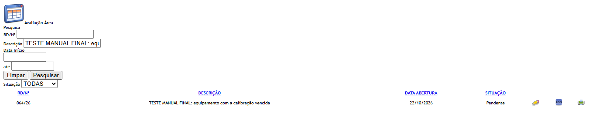
Parte 2. Avaliar o desvio (tela interna Editar)
-
Clique no lápis. Abre a tela "Avaliação Área" com todo o desvio na tela, quase tudo travado para leitura. As seções, de cima para baixo, são: Dados, Descrição de Desvio, Anexos, Relatado por, Meios de Detecção do Desvio, Chefe da SDGQ (a pré-avaliação), Área envolvida e, por último, o campo Justificativa.
-
Leia o desvio. Em Dados você vê o número (RD/Nº), a data de abertura, o local da ocorrência, o tipo de item (Produto, Equipamento ou Material) e o item. Se o item for equipamento, aparece o número de TAG.
-
Em Descrição de Desvio estão a Não Conformidade e a Observação do registro. Em Anexos você pode abrir os arquivos já enviados pelo ícone de anexo; não é possível enviar nem excluir arquivos nesta tela (os botões ficam escondidos).
-
Em Meios de Detecção do Desvio está marcado o meio escolhido na pré-avaliação, e Chefe da SDGQ traz a observação da pré-avaliação.
-
Em Área envolvida, preencha o campo Observação (obrigatório, com asterisco). É o único campo livre da tela. Data/Hora, Área e Responsável aparecem travados e preenchidos com a data atual, a sua área e o seu nome.
-
O campo Justificativa aparece no fim da tela, com asterisco, preenchido com a justificativa da etapa anterior. Escreva o que quiser, mas saiba que esta tela não grava o que for digitado ali (ver "Falhas e pontos de atenção").
-
Clique em Salvar. O sistema pergunta "Confirma a inclusão do item?" com os botões SIM e NÃO. Clique em SIM.
-
Se a observação estiver vazia, aparece, dentro da seção "Área envolvida", a mensagem "A Observação da Área é obrigatória." e nada é gravado.
-
Se tudo estiver certo, abre a janela "Alteração efetuada com sucesso." Ao clicar em OK, a tela volta à lista.
-
O botão Voltar sai sem gravar e leva de volta à lista.
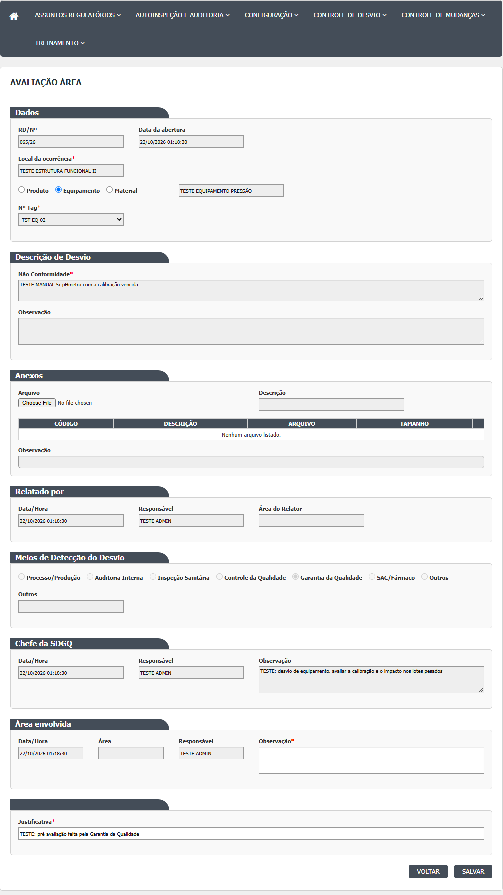
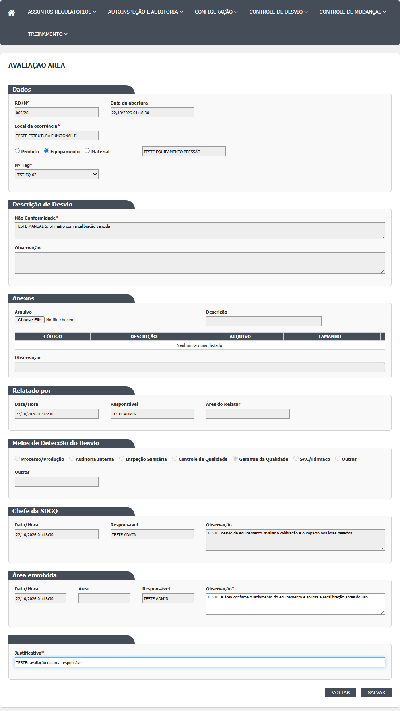
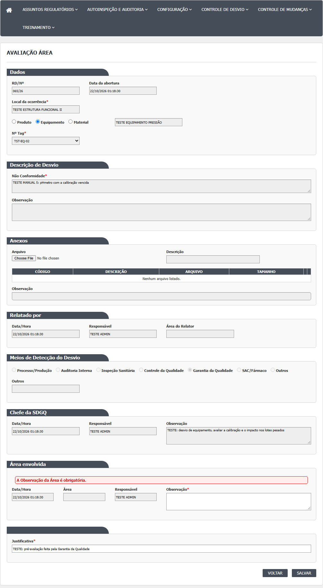
Parte 3. Consultar sem alterar (tela interna Visualizar)
- Na lista, clique na lupa. Abre a mesma tela, sem o botão Salvar. Mostra a observação que a área gravou.
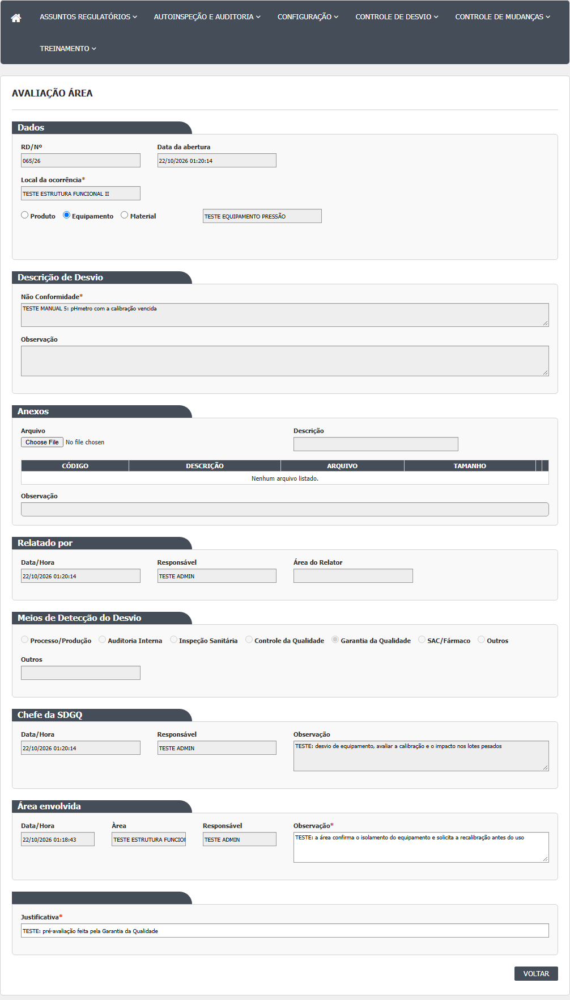
Parte 4. Histórico e impressão
-
O ícone de histórico abre a janela "Log" com a tabela de alterações do desvio (colunas Alteração, Valor Antigo, Valor Novo, Data, Hora, Usuário Alteração e Justificativa).
-
O ícone de impressora abre em outra aba o relatório do desvio em arquivo.
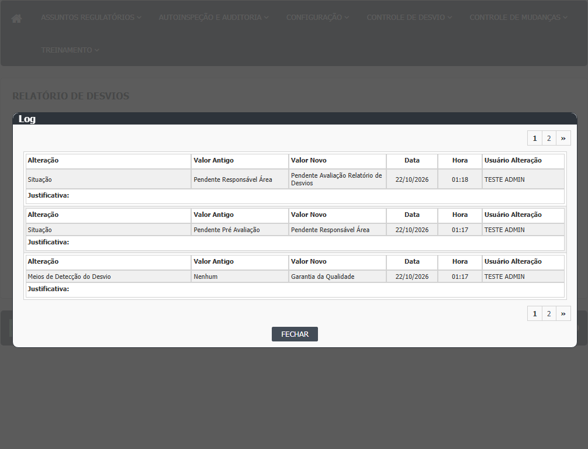
Telas internas Incluir e Cancelar
- Incluir: existe a ação
Incluirno controlador, mas o menu não leva a ela; a view usa o mesmo formulário sem dados. Inferência: ao abrir o endereço direto, a página dá erro, porque o formulário espera um desvio e não recebe nenhum. A confirmar no teste. - Cancelar: a view ("CANCELAMENTO DE REGISTRO RNC") é uma cópia da tela de cancelamento do Registro. O controlador não tem a ação Cancelar. Não é possível cancelar o desvio por esta tela.
O que os testes de tela mostraram depois
O que a rodada 1 (21/10/2026) mostrou sobre este manual
O que está aqui foi visto na tela. O que ainda é leitura do código continua marcado como inferência nos passos acima.
- Avaliar (passos 11 a 15). Salvar sem a observação mostrou "A Observação da Área é obrigatória." e nada foi gravado. Com a observação, a avaliação foi aceita (CT-GQ-012).
- Desvio com duas áreas. Avaliando só a área B, o desvio continuou em Pendente Responsável Área. Depois que a área A também avaliou, passou a Pendente Avaliação Relatório de Desvios, e a linha da área A virou Finalizado, só com a lupa (CT-GQ-012 e CT-GQ-013).
- Lista por área (passo 3). O usuário da área A viu os desvios 005, 027, 029, 030, 031 e 032; o da área B viu 028, 029, 030 e 032. Cada um viu só a linha da própria área. Os outros dois usuários testados viram a lista vazia (CT-GQ-N04-01).
- Filtro RD/Nº (passo 2). Acham o desvio 030/26: "030", "30", "03", "5" e "005". Não acham: "030/26", "30/26", "/26" e "005/26". Nesses casos a tela mostra só "A pesquisa não retornou nenhum resultado." e nenhum aviso de que o ano não é aceito (CT-GQ-N04-02, DV-GQ-026).
- Filtro de datas (passo 2). Só a Data Início traz os desvios daquele dia; início e fim no mesmo dia também; só a Data Fim é ignorada, como o código previa. Uma data inválida (31/02/2026) é ignorada sem mensagem e a lista sai completa (CT-GQ-F07, F08 e F09; DV-GQ-027).
- Filtro Situação (passo 2). Escolher "Finalizado" trouxe 6 linhas misturadas com linhas Pendente (CT-GQ-F11, DV-GQ-028).
- Não exercitados nesta rodada: o botão Limpar, as perguntas de confirmação (SIM e NÃO), a janela de sucesso, a lupa, o histórico e a impressão desta tela.
Rodada 2 (22/10/2026)
Só o que a rodada mostrou de novo ou contrariou.
- Passo 11 (Área envolvida). A observação só com espaços foi aceita: "Confirma a inclusão do item?", depois "Alteração efetuada com sucesso.", e o desvio foi para Pendente Avaliação Relatório de Desvios (CT-GQ-N04-06; DV-GQ-041). O manual diz que a observação é obrigatória: um texto só com espaços passa.
- Passo 11 (datas e responsável mostrados). Data da abertura, data e hora da pré-avaliação e da avaliação da área mostram o momento em que a tela é aberta, e o responsável da pré-avaliação é o usuário que abre a tela, não quem pré-avaliou (CT-GQ-N04-11; DV-GQ-040). Quem consulta um desvio de outro dia lê datas e nomes que não são os do registro.
- Passo 12 (Justificativa). A caixa já vem preenchida com o texto de uma etapa anterior. Apagada, a avaliação salva do mesmo jeito; com texto novo também salva; em nenhum dos casos a justificativa chega ao histórico (CT-GQ-N04-09; DV-GQ-045).
- Parte 4 (Histórico). Depois de a última área avaliar, o histórico mostra só a mudança de situação, com usuário e data. Se a área avalia quando falta outra, o histórico não ganha nenhum registro (CT-GQ-N04-10; DV-GQ-042). O manual deve deixar de dizer que o histórico mostra a ligação da avaliação.
Rodada 3 (22/10/2026)
Só o que a rodada mostrou de novo ou contrariou.
- Filtro de datas (passo 2). Só Data Início 22/10: 3 desvios, todos de 22/10. Início e Fim 21/10: 3, todos de 21/10. Só Data Fim: ignorada (7 de 7). Data inválida (31/02/2026): ignorada, sem mensagem (7 de 7). Data digitada sem barras (22102026): o campo guarda o texto e a lista vem inteira, sem mensagem (CT-GQ-N04-03; DV-GQ-027).
- Filtro Situação (passo 2). Pendente: 3 desvios, todos pendentes. Finalizado: 7 linhas, com os 3 pendentes junto, igual a TODAS (CT-GQ-N04-04; DV-GQ-060). O manual já dizia que "Finalizado" pode trazer linhas Pendente; a rodada mostrou que ele devolve a lista toda.
- Salvar com confirmação (passos 13 a 15). "Confirma a inclusão do item?" Responder NÃO: nada é gravado. Responder SIM: "Alteração efetuada com sucesso."; a avaliação da área A fica gravada e o desvio (083/26) vai para Pendente Avaliação Relatório de Desvios (CT-GQ-N04-14).
- Tipo de item no Editar. Clicar em Produto, Equipamento ou Material faz o botão Salvar sumir (desvio 083/26; CT-GQ-N04-12; DV-GQ-062).
- Imprimir (passo 19). O ícone da impressora abre "a página de erro do servidor" nas telas 4, 5 e 6, e não o relatório; os relatórios não puderam ser comparados (CT-GQ-N04-17, Bloqueado; DV-GQ-018 reconfirmado).
- Mais de uma recusa ao mesmo tempo. Não foi possível testar: precisa de um desvio com dado incompleto montado pelo DBA (CT-GQ-N04-15, Bloqueado).
- Avaliar de novo uma área que já avaliou. O caso foi feito (CT-GQ-N04-08); o resultado está nos registros internos dos testes.
Rodada 4 (22/10/2026)
Só o que a rodada mostrou de novo ou contrariou.
- Limpar. Esvazia os filtros; a lista continua com as linhas (CT-GQ-N04-05).
- Observação longa. 5.000 caracteres são aceitos e gravados inteiros (CT-GQ-N04-07).
- Consulta pela lupa. Mostra só Voltar e a observação gravada, mas a observação e a Justificativa aparecem editáveis (CT-GQ-N04-13).
- Cancelar. Não há botão de cancelar na lista nem na tela (CT-GQ-N04-16).
- Duas áreas ao mesmo tempo. Se as duas últimas áreas avaliarem ao mesmo tempo, as duas veem "Alteração efetuada com sucesso.", mas o desvio fica parado em Pendente Responsável Área e não chega à tela Avaliação Relatório Desvios (CT-GQ-N04-18; DV-GQ-083).
- Área excluída. Não há tela para excluir uma área envolvida; o efeito de uma área excluída sobre o avanço do desvio não pôde ser testado (CT-GQ-N04-19).
Campos da tela
Lista (tela inicial)
| Campo na tela | Tipo | Obrigatório | Regra, limite ou valores possíveis |
|---|---|---|---|
| RD/Nº (filtro) | Texto | Não | Procura o trecho dentro do número do desvio, sem o ano (ex.: "009"). Não há máscara. Confirmado em 21/10/2026 (CT-GQ-N04-02): acham "030", "30", "03", "5" e "005"; não acham "030/26", "30/26", "/26" e "005/26", sem aviso (DV-GQ-026) |
| Descrição (filtro) | Texto | Não | Procura o trecho dentro da descrição do desvio |
| Data Início (filtro) | Data com calendário e máscara dd/mm/aaaa | Não | Sozinha: desvios abertos naquele dia. Com Data fim: intervalo, incluindo o dia final. Confirmado em 21/10/2026 (CT-GQ-F07 e F08). Data inválida (31/02/2026) é ignorada sem aviso (CT-GQ-F09, DV-GQ-027) |
| até / Data fim (filtro) | Data com calendário e máscara dd/mm/aaaa | Não | Sozinha, é ignorada: o código só olha a data de início. Confirmado em 21/10/2026 (CT-GQ-F08) |
| Situação (filtro) | Lista | Não | TODAS (0), Pendente (5) ou Finalizado (6): é a situação da avaliação da área, não a do desvio. Em 21/10/2026, "Finalizado" trouxe 6 linhas misturadas com Pendente (CT-GQ-F11, DV-GQ-028) |
| Coluna RD/Nº | Texto | Sem entrada | Número com o ano em dois dígitos (ex.: 009/26) |
| Coluna DESCRIÇÃO | Texto | Sem entrada | Descrição do desvio |
| Coluna DATA ABERTURA | Data | Sem entrada | Data de criação do desvio, dd/MM/aaaa |
| Coluna SITUAÇÃO | Texto | Sem entrada | Pendente (sem avaliação da área) ou Finalizado |
| Colunas Id e IdAreaEnvolvida | Número, ocultas | Sem entrada | Identificam o desvio e a área, e vão no endereço do lápis e da lupa |
Tela interna Editar e Visualizar (formulário comum)
| Campo na tela | Tipo | Obrigatório | Regra, limite ou valores possíveis |
|---|---|---|---|
| Dados > RD/Nº | Texto travado | Não | Número do desvio com o ano (ex.: 009/26) |
| Dados > Data da abertura | Texto travado | Não | O código preenche com a data e hora de agora, e só troca pela data de criação do desvio em outras etapas. Inferência: aqui aparece a data atual |
| Dados > Local da ocorrência | Texto | Marcado com asterisco | Travado pelo script; vem do registro |
| Dados > botão buscar (local) | Botão | Não | Escondido nesta tela |
| Dados > Tipo de item | Opção única: Produto, Equipamento, Material | Não | Só esses três tipos são oferecidos (valores 4, 6 e 13). Não são travados |
| Dados > item (descrição) | Texto | Não | Travado; vem do registro |
| Dados > botão buscar (item) | Botão | Não | Escondido |
| Dados > Nº Lote | Lista | Marcado com asterisco | Escondida pelo script nesta tela |
| Dados > Nº Tag | Lista | Marcado com asterisco | Aparece só quando há TAG (equipamento); travada |
| Dados > Registro de entrada | Lista | Marcado com asterisco | Escondida |
| Dados > Adicionar | Botão | Não | Escondido |
| Dados > tabela de lotes (Nº LOTE, REGISTRO) | Tabela | Não | Mostra os lotes copiados no registro, sem botão de excluir |
| Descrição de Desvio > Não Conformidade | Texto longo (3 linhas) | Marcado com asterisco | Travado. Sem limite no código; no banco o campo aceita texto sem limite |
| Descrição de Desvio > Observação | Texto longo (4 linhas) | Não | Travado |
| Anexos > Arquivo | Seleção de arquivo | Não | Parte do formulário de envio; o botão Enviar fica escondido |
| Anexos > Descrição | Texto | Não | Travado |
| Anexos > tabela (CÓDIGO, DESCRIÇÃO, ARQUIVO, TAMANHO) | Tabela | Não | Cada linha tem o ícone de abrir; o de excluir é escondido |
| Anexos > Observação | Texto | Não | Travado |
| Relatado por > Data/Hora | Texto travado | Não | Mesma data de "Data da abertura" (ver acima) |
| Relatado por > Responsável | Texto travado | Não | Nome de quem registrou o desvio |
| Relatado por > Área do Relator | Texto travado | Não | Área de quem registrou |
| Meios de Detecção do Desvio | Opção única: Processo/Produção, Auditoria Interna, Inspeção Sanitária, Controle da Qualidade, Garantia da Qualidade, SAC/Fármaco, Outros | Não (já escolhido) | Travado. O valor "Nenhum" não aparece |
| Meios de Detecção > Outros | Texto | Não | Só preenchido quando o meio é "Outros"; no banco aceita até 150 caracteres |
| Chefe da SDGQ > Data/Hora | Texto travado | Não | Mostra a data e hora de agora, não a da pré-avaliação (Inferência) |
| Chefe da SDGQ > Responsável | Texto travado | Não | Mostra o usuário que abriu a tela, não quem fez a pré-avaliação (Inferência) |
| Chefe da SDGQ > Observação | Texto longo (4 linhas) | Não | Observação gravada na pré-avaliação; travada |
| Área envolvida > Data/Hora | Texto travado | Não | Nova avaliação: data e hora de agora. Avaliação feita: data gravada |
| Área envolvida > Àrea | Texto travado | Não | Nome da área avaliada (o rótulo na tela está escrito "Àrea", com acento grave) |
| Área envolvida > Responsável | Texto travado | Não | Nome de quem está avaliando, ou de quem já avaliou |
| Área envolvida > Observação | Texto longo (4 linhas) | Sim (asterisco; recusa se vazio) | Único campo livre da tela. Sem limite de tamanho no código; só vazio é recusado |
| Justificativa | Texto | Marcado com asterisco | Preenchido com a justificativa da etapa anterior. Não é lido pelo servidor (ver Falhas) |
| Campos ocultos (hfId, hfIdLocalOcorrencia, hfIdAreaEnvolvida, hfEAcaoImediata, hfDisableFields, hfActionType, hfDisabledSalvar, hfSituacaoAtual) | Ocultos | Sem entrada | Levam o número do desvio, a área avaliada, e o estado da tela. Quem altera o número ou a área no navegador muda o que será gravado |
| Janelas "Locais" e "Itens" | Janelas ocultas | Sem entrada | Fazem parte do formulário comum; nunca abrem nesta tela |
Tela interna Cancelar (sem uso)
A view abaixo existe, mas o controlador não tem a ação Cancelar.
| Campo na tela | Tipo | Obrigatório | Regra, limite ou valores possíveis |
|---|---|---|---|
| RD/Nº | Texto travado | Não | Número do desvio |
| Meios de detecção da não conformidade | Opção única: Processo/Produção, Auditoria, Controle de qualidade, Garantia de qualidade | Não | Travado; lista de quatro valores, diferente da lista de sete da pré-avaliação |
| Descrição | Texto travado | Marcado com asterisco | Descrição do desvio |
| Descrição Não Conformidade | Texto travado | Marcado com asterisco | Texto da não conformidade |
| Anexos | Tabela | Não | Mesma tabela de anexos |
| Responsável pelo Registro > Data/Hora | Texto travado | Não | Data da última atualização |
| Responsável pelo Registro > Responsável | Texto travado | Não | Nome de quem registrou |
| Responsável pelo Registro > Observação | Texto travado | Não | Observação do registro |
| Justificativa | Texto | Não marcado | Seria o motivo do cancelamento |
Rodada 2 (22/10/2026)
- Data da abertura, Data/Hora de Relatado por e bloco Chefe da SDGQ: mostram a data e a hora de agora, e o responsável da pré-avaliação é o usuário que abre a tela (RN-GQ-D04-15, validada em 22/10/2026; DV-GQ-040).
- Justificativa: vem preenchida com texto de uma etapa anterior, tem asterisco e, mesmo assim, pode ser apagada sem recusa (RN-GQ-D04-21; DV-GQ-045).
- Observação da área: aceita texto só com espaços (RN-GQ-D04-07; DV-GQ-041).
Rodada 3 (22/10/2026)
- Data Início e Data Fim. Data inválida ou sem barras não é recusada nem avisada: o filtro é ignorado e a lista sai inteira (RN-GQ-D04-24; DV-GQ-027).
- Situação. "Finalizado" devolve a lista inteira, inclusive os pendentes (RN-GQ-D04-23; DV-GQ-060).
- Tipo do item (Produto, Equipamento, Material). Um clique esconde o botão Salvar (RN-GQ-D04-16; DV-GQ-062).
Rodada 4 (22/10/2026)
Só o que a rodada mostrou de novo ou contrariou.
- Observação: aceita 5.000 caracteres, sem limite (CT-GQ-N04-07).
- Observação e Justificativa na lupa: aparecem editáveis na consulta de uma área que já avaliou (CT-GQ-N04-13).
Botões e ações
| Botão ou ação | Quando aparece | O que faz | Para onde leva o desvio |
|---|---|---|---|
| Pesquisar | Sempre, na lista | Busca os desvios da área do usuário nas situações Pendente Responsável Área e Pendente Avaliação Relatório de Desvios, aplicando os filtros | Não muda a situação |
| Limpar | Sempre, na lista | Esvazia os filtros. Não apaga a tabela (aponta para uma área que não existe nesta tela) | Não muda |
| Editar (lápis) | Linha em que a avaliação da área está Pendente | Abre a tela de avaliação com o desvio e a área da linha | Não muda ao abrir |
| Visualizar (lupa) | Linha em que a área já avaliou (Finalizado) | Abre a tela de consulta, sem Salvar | Não muda |
| Log (histórico) | Todas as linhas | Abre a janela com as alterações do desvio | Não muda |
| Imprimir | Todas as linhas | Gera o relatório do desvio e abre em outra aba | Não muda |
| Salvar | Tela Editar, desvio em Pendente Responsável Área (ou em Pendente Avaliação Relatório de Desvios, se aberto pelo endereço) | Pede confirmação e grava a avaliação da área como Finalizado | Fica em Pendente Responsável Área; vai para Pendente Avaliação Relatório de Desvios quando todas as áreas avaliaram |
| SIM / NÃO (confirmação) | Ao clicar em Salvar | SIM envia a gravação; NÃO não faz nada | Sem mudança com NÃO |
| OK (resultado) | Depois da gravação | Fecha o aviso e volta à lista (no sucesso) | Sem mudança |
| Voltar | Telas Editar e Visualizar | Sai sem gravar e volta à lista | Sem mudança |
| Ícone de anexo | Tela Editar e Visualizar, em cada anexo | Abre o arquivo anexado | Sem mudança |
| Lupa das áreas, Adicionar, buscar, Enviar, excluir anexo | Escondidos ou ausentes nesta tela | Não se aplicam | Não se aplicam |
| Incluir | Sem botão; só pelo endereço | Abre o formulário vazio (provável erro) | Não se aplica |
| Cancelar o desvio | Não existe nesta tela | Não se aplica | Não se aplica |
Rodada 2 (22/10/2026)
- Salvar. Aceita observação só com espaços (DV-GQ-041) e aceita a Justificativa apagada (DV-GQ-045). Em nenhum dos dois casos aparece recusa.
- Salvar, quando a área não é a última. O desvio continua em Pendente Responsável Área e o histórico não ganha registro (DV-GQ-042).
- Salvar, quando a área é a última. O desvio vai para Pendente Avaliação Relatório de Desvios e o histórico traz só a mudança de situação (DV-GQ-042).
Rodada 3 (22/10/2026)
- Salvar. "Confirma a inclusão do item?" com SIM e NÃO: NÃO não grava; SIM grava a avaliação da área e leva à lista com "Alteração efetuada com sucesso." (RN-GQ-D04-22).
- Imprimir. Abre a página de erro do servidor, não o relatório (RN-GQ-D04-17; DV-GQ-018).
Rodada 4 (22/10/2026)
Só o que a rodada mostrou de novo ou contrariou.
- Limpar: esvazia os filtros; a lista continua com as linhas (CT-GQ-N04-05).
- Lupa: sem Salvar, mas com a observação e a Justificativa editáveis (CT-GQ-N04-13).
- Cancelar: não há botão na lista nem na tela (CT-GQ-N04-16).
- Salvar, em duas janelas ao mesmo tempo: as duas recebem sucesso, mas o desvio não avança (CT-GQ-N04-18; DV-GQ-083).
Mensagens do sistema
| Mensagem (texto exato do código) | Quando aparece |
|---|---|
| A Observação da Área é obrigatória. | Salvar com a observação da área vazia (aparece na seção "Área envolvida") |
| Confirma a inclusão do item? | Ao clicar em Salvar (o texto fala em "inclusão", mesmo sendo uma alteração) |
| Alteração efetuada com sucesso. | Gravação concluída |
| Ocorreu um erro inesperado. | Falha ao salvar, ou ao abrir Editar ou Visualizar (nesses dois casos, volta à lista com o aviso) |
| Ocorreu um erro interno não esperado. | A chamada ao servidor falha (rede, erro do servidor) |
| A pesquisa não retornou nenhum resultado. | A lista volta sem linhas |
| Não foi possível obter as relatórios de desvios | Erro ao pesquisar (a mensagem tem esse erro de concordância no código) |
| Não foi possível imprimir o RNC | Erro ao imprimir |
| Descrição é obrigatória. | Salvar quando o desvio não tem descrição (propriedade Descricao) |
| Local de Ocorrência é obrigatório. | Salvar quando o desvio não tem local |
| Justificativa é obrigatória. | Salvar quando o desvio guardado não tem justificativa (a do registro, não a digitada agora) |
| O Anexo é obrigatório. | Anexo do desvio sem arquivo ou sem descrição |
| A Data de criação é obrigatória. | Desvio sem data de criação |
| O Responsavel é obrigatório. | Desvio sem responsável (grafia "Responsavel" sem acento, como no código) |
| Descrição da ação imediata é obrigatória. | Salvar quando a ação corretiva imediata está sem descrição |
| Meio de Detecção da não conformidade é obrigatório. | Salvar quando o meio de detecção é "Nenhum" |
| É obrigatório informar um Meio de Detecção da não conformidade no campo Outros. | Meio "Outros" sem texto |
| A Data de criação é obrigatória. (pré-avaliação) | Pré-avaliação sem data |
| O Responsavel é obrigatório. (pré-avaliação) | Pré-avaliação sem responsável |
| Entidade de domínio não pode ser nula. | Desvio não encontrado na validação |
| SIM / NÃO / OK | Botões das janelas de confirmação e de resultado |
Observação: as mensagens do registro, da ação imediata e da pré-avaliação são conferidas de novo aqui porque a gravação reaplica os mesmos validadores. Quando há mais de uma recusa, a tela só mostra a última (ver "Falhas e pontos de atenção").
Rodada 1 (21/10/2026): foram vistas na tela "A Observação da Área é obrigatória." (CT-GQ-012) e "A pesquisa não retornou nenhum resultado." (CT-GQ-N04-02), com o texto igual ao do código. Os textos "minímo" e "Responsavel" sem acento não apareceram nas mensagens que a tela exibiu. As demais mensagens da tabela não foram provocadas nesta rodada.
Rodada 2 (22/10/2026)
- Foram vistas na tela "Confirma a inclusão do item?" e "Alteração efetuada com sucesso.", com o texto igual ao do código, nos casos CT-GQ-N04-06 e CT-GQ-N04-09. O texto "Confirma a inclusão do item?" aparece mesmo sendo uma alteração, como previsto.
- Nenhuma mensagem de recusa nova apareceu: observação só com espaços e justificativa apagada não são recusadas.
Rodada 3 (22/10/2026)
- Vistas na tela com o texto igual ao do código: "Confirma a inclusão do item?" e "Alteração efetuada com sucesso." Nenhuma mensagem de recusa apareceu para data inválida nem para data sem barras (DV-GQ-027).
- Nenhuma mensagem nova ou diferente do código apareceu nesta tela.
Rodada 4 (22/10/2026)
Mensagens vistas na tela, com o texto exato.
- "Alteração efetuada com sucesso." aparece para as duas áreas que salvam ao mesmo tempo, mesmo com o desvio parado em Pendente Responsável Área (CT-GQ-N04-18; DV-GQ-083). Aparece também com a observação de 5.000 caracteres (CT-GQ-N04-07).
Avisos e limitações desta tela
O que a tela faz diferente do esperado, como a equipe de homologação registrou. O número DV-GQ-nnn remete ao documento de defeitos para correção.
O que o código mostra e foge do esperado ou da norma (RDC 658/2022, Guia 33/2020). Tudo o que está marcado "A confirmar" ainda não foi testado nesta tela.
Pontos já confirmados em teste
- Nenhum defeito DV-GQ está registrado para esta tela até 16/10/2026.
- Descoberta da rodada 1 (12/10/2026): a área do usuário vem do campo Divisão do cadastro no Principal (RN-GQ-149), e sem Divisão o usuário não vê avaliação nenhuma ("Descobertas fora dos casos").
Previsto pelo código, ainda não visto na tela
-
Trilha de auditoria sem o conteúdo da avaliação. O texto da observação, quem avaliou e quando não entram no histórico. A justificativa vai sempre vazia. RDC 658/2022, art. 125, e Guia 33 (rastreabilidade de quem, quando e o quê).
-
Campo "Justificativa" marcado como obrigatório, mas ignorado. O servidor não lê o texto digitado; só confere a justificativa que já estava guardada no desvio. Quem usa acha que justificou.
-
Datas e quem fez, exibidos errados. "Data da abertura" e "Data/Hora" de Relatado por mostram a data de agora; o bloco "Chefe da SDGQ" (pré-avaliação) mostra a data de agora e o usuário que abriu a tela, não os da pré-avaliação. Pode levar a erro de leitura do registro (RDC 658/2022, art. 125; princípio de registro atribuível e contemporâneo).
-
Observação só de espaços é aceita.
-
Reenvio da avaliação de uma área que já avaliou mostra sucesso e mantém o texto antigo. Não há mensagem avisando que nada mudou.
-
Mais de uma recusa: só a última aparece. A função que mostra os erros zera as mensagens a cada erro; sobra a mensagem do último erro da lista. Isso também explica o erro de teste do DV-GQ-011: o usuário vê um erro, corrige, e só então vê o próximo.
-
Filtro Situação mistura resultados. Filtrar por "Finalizado" pode trazer linhas Pendente, porque o código volta às áreas sem avaliação quando não acha nenhuma Finalizado.
-
Botão Limpar não limpa a tabela, porque o script aponta para uma área de resultado com outro nome.
-
Clicar no tipo de item esconde o botão Salvar. A regra compara o tipo escolhido com o número da situação, que nunca coincidem. O usuário que clicar sem querer fica sem Salvar até recarregar.
-
Área excluída pode travar o desvio. A conferência de "todas avaliaram" inclui áreas excluídas.
-
Usuário sem acesso. A lista consulta
). Inferência: dá erro ("Não foi possível obter as relatórios de desvios") em vez de lista vazia. -
Telas sem uso:
IncluireCancelar(cópias de outras telas) estão no projeto; o menu não leva a elas. -
Concorrência. Duas áreas que salvam ao mesmo tempo podem não ver a avaliação uma da outra e o desvio não avançar (o código lê, altera e grava sem controle de versão). Inferência. A confirmar no teste.
-
Local e item. O TAG do equipamento vem de uma busca pelo nome; com nomes iguais, vale o último achado. Inferência.
Defeitos novos confirmados nas rodadas de teste
- DV-GQ-026 (Média). O filtro RD/Nº não acha o desvio quando se digita número e ano ("030/26"); acha com o número puro. Acontece em 9 das 12 telas de lista e nesta (CT-GQ-N04-02, CT-GQ-F06). Não acontece nas telas Relatório de Desvios, Registro Ação Corretiva Imediata e Relatório de CAPA.
- DV-GQ-027 (Média). Data inválida no filtro é ignorada em silêncio e a lista sai completa (CT-GQ-F09). Nesta tela o intervalo de um dia e o uso só da Data Fim funcionaram como previsto; essas duas falhas ocorrem nas telas de Plano de Ação Corretiva em diante.
- DV-GQ-028 (Média). O filtro Situação mistura resultados: "Finalizado" trouxe 6 linhas misturadas com Pendente (CT-GQ-F11). O resultado da rodada diz também que "Reprovado" devolve 0 nas telas de lista testadas; a documentação desta tela não lista essa opção (ver Divergências).
- DV-GQ-036 (Alta). O histórico do desvio registra situação, responsável e alguns campos, mas omite o conteúdo das avaliações e as áreas envolvidas (CT-GQ-F04, desvio 048/26, 25 entradas). Para esta tela, quer dizer que as observações das áreas não aparecem no Log.
- DV-GQ-040 (Alta). Data da abertura, data e hora da pré-avaliação e da avaliação da área mostram o momento da consulta, e o responsável da pré-avaliação é o usuário que abre a tela (desvio 029/26; também na tela Avaliação Relatório Desvios).
- DV-GQ-041 (Alta). Observação da área só com espaços é aceita e o desvio avança (desvio 027/26).
- DV-GQ-042 (Alta). A avaliação de uma área quando falta outra não deixa registro no histórico (030/26); a que fecha a etapa deixa só a mudança de situação, sem a observação nem a área (028/26).
- DV-GQ-045 (Média). A Justificativa, com asterisco, pode ser apagada e a avaliação salva; a digitada não aparece no histórico (028/26 e 030/26; também na tela Avaliação Relatório Desvios).
- DV-GQ-060 (Média, telas 4 e 9). O filtro de situação "Finalizado" devolve a lista inteira, com os pendentes junto (RN-GQ-D04-23). Na tela 9 o mesmo ocorre com "Aprovado".
- DV-GQ-062 (Baixa). Clicar num tipo de item no Editar esconde o botão Salvar (RN-GQ-D04-16; confirma o ponto 9 abaixo).
- DV-GQ-083 (Alta). Duas áreas que salvam a avaliação ao mesmo tempo deixam o desvio parado em Pendente Responsável Área. Passos: desvio com duas áreas (A e B) pendentes; um usuário de cada área abre o Editar e as duas salvam ao mesmo tempo (desvio 088/26). Esperado: desvio em Pendente Avaliação Relatório de Desvios. Obtido: as duas áreas ficam Finalizado e veem "Alteração efetuada com sucesso.", mas o desvio continua em Pendente Responsável Área, sem lápis na tela 5; o histórico não mostra nenhuma mudança depois da pré-avaliação. Ninguém consegue levá-lo adiante pelas telas. Bloqueia o fluxo do desvio (RN-GQ-030; RN-GQ-D04-27).
Avaliação Relatório Desvios
Onde fica
Avaliação Relatório Desvios (como aparece no título da tela e no menu; o título está escrito em maiúsculas, "AVALIAÇÃO RELATÓRIO DESVIO").
Para que serve
É a etapa em que a Garantia da Qualidade conclui a avaliação do desvio, depois de ouvidas as áreas, e decide se é preciso abrir um Relatório de CAPA. Se for preciso, o desvio segue para a tela Relatório de CAPA. Se não for, a GQ escreve uma observação explicando o porquê e o desvio é encerrado como "Finalizado sem Relatório CAPA". A observação do chefe da SDGQ é obrigatória nos dois casos.
Onde fica
Controle de Desvios › Avaliação Relatório Desvios.
Quem usa
A Garantia da Qualidade (o chefe da SDGQ). A lista mostra todos os desvios nas situações abaixo, sem filtrar por área nem por usuário.
Em que situação chega aqui
Pendente Avaliação Relatório de Desvios. A lista traz também, só para consulta, os desvios em Pendente Responsável Área, os já avaliados (qualquer situação posterior) e os Finalizados sem Relatório CAPA que não têm CAPA.
Para onde vai ao salvar
- Com CAPA (caixa marcada): Pendente Relatório de CAPA.
- Sem CAPA (caixa desmarcada, com a observação de abertura preenchida): Finalizado sem Relatório CAPA.
Passo a passo
Parte 1. A lista (tela inicial)
-
No menu, clique em Controle de Desvios e depois em Avaliação Relatório Desvios. Abre a tela com o título "AVALIAÇÃO RELATÓRIO DESVIO" e o quadro "Pesquisa". A lista abre vazia: só é preenchida quando você clica em Pesquisar.
-
Preencha, se quiser, os filtros: RD/Nº (trecho do número), Descrição (trecho do texto), Data Início e até (dd/mm/aaaa, com calendário) e Situação, que oferece TODAS, "Pendente Avaliação Relatório de Desvios" e "Finalizado sem Relatório CAPA".
-
Clique em Pesquisar. A tabela mostra RD/Nº, DESCRIÇÃO, DATA ABERTURA e SITUAÇÃO, com ícones em cada linha. A tabela traz todos os desvios nas situações previstas, e não só os que esperam a sua avaliação.
-
Os ícones: lápis (Editar), só quando o desvio está em Pendente Avaliação Relatório de Desvios; nos demais casos, lupa (Visualizar). Histórico (Log) e impressora aparecem sempre.
-
O botão Limpar esvazia os filtros e a tabela.
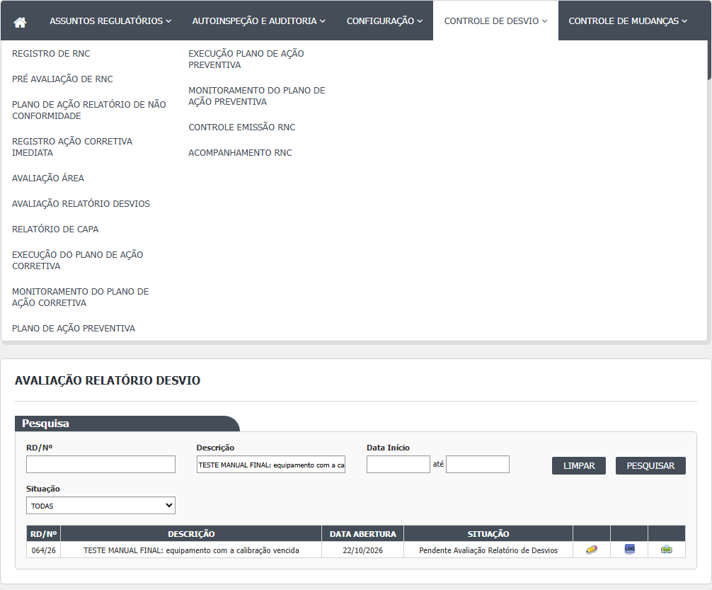
Parte 2. Avaliar o desvio (tela interna Editar)
-
Clique no lápis. Abre a tela com todo o desvio. As seções são: Dados, Descrição de Desvio, Anexos, Relatado por, Meios de Detecção do Desvio, Área(s) envolvida(s), Chefe da SDGQ (a pré-avaliação), Para preenchimento do SDGQ, Preenchido por, Chefe da SDGQ (a avaliação) e Justificativa.
-
Leia o desvio. Os dados e a descrição ficam travados, só para leitura.
-
Em Área(s) envolvida(s) há uma tabela com a área a preencher, a data, a situação da avaliação de cada área e uma lupa. A lupa abre a avaliação feita pela área, na tela Avaliação Área.
-
Em Para preenchimento do SDGQ, decida sobre a CAPA com a caixa Necessário abertura de CAPA?.
- Se marcar a caixa, o campo Observação logo abaixo é desabilitado e apagado: o desvio vai abrir CAPA.
- Se deixar a caixa desmarcada, escreva no campo Observação o motivo de não abrir CAPA (a tela diz "Se não, justificar no espaço abaixo"). Esse texto é obrigatório.
-
Em Chefe da SDGQ (o segundo bloco com esse título, perto do fim), escreva a Observação, obrigatória (asterisco).
-
O campo Justificativa aparece com asterisco, mas não é gravado por esta tela (ver "Falhas e pontos de atenção").
-
Clique em Salvar. A pergunta é "Confirma a inclusão do item?" (SIM ou NÃO). Clique em SIM.
-
Se faltar alguma observação, a mensagem aparece dentro do bloco "Para preenchimento do SDGQ" e nada é gravado.
-
Se tudo estiver certo, abre "Alteração efetuada com sucesso." Ao clicar OK, volta à lista. O desvio passa para Pendente Relatório de CAPA (caixa marcada) ou Finalizado sem Relatório CAPA (caixa desmarcada).
-
Voltar sai sem gravar.
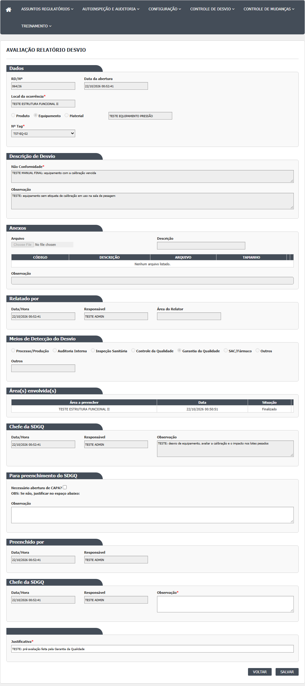
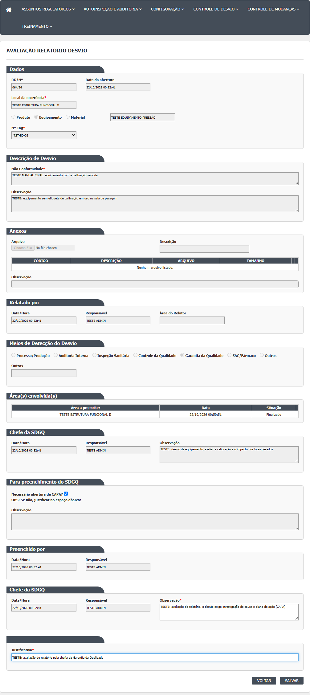
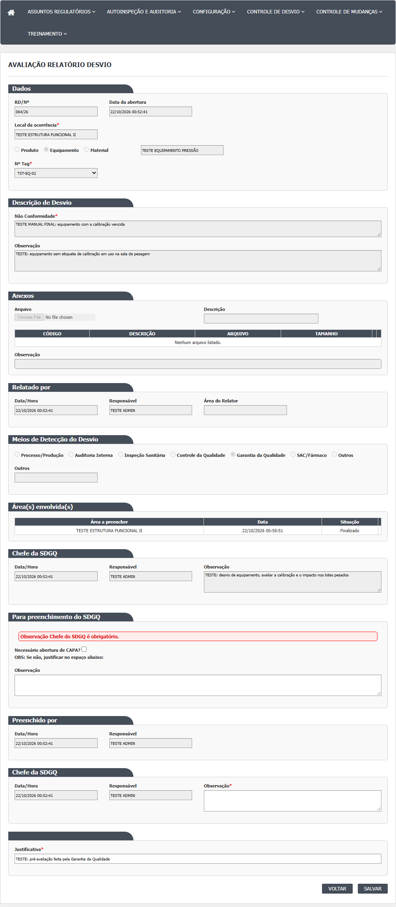
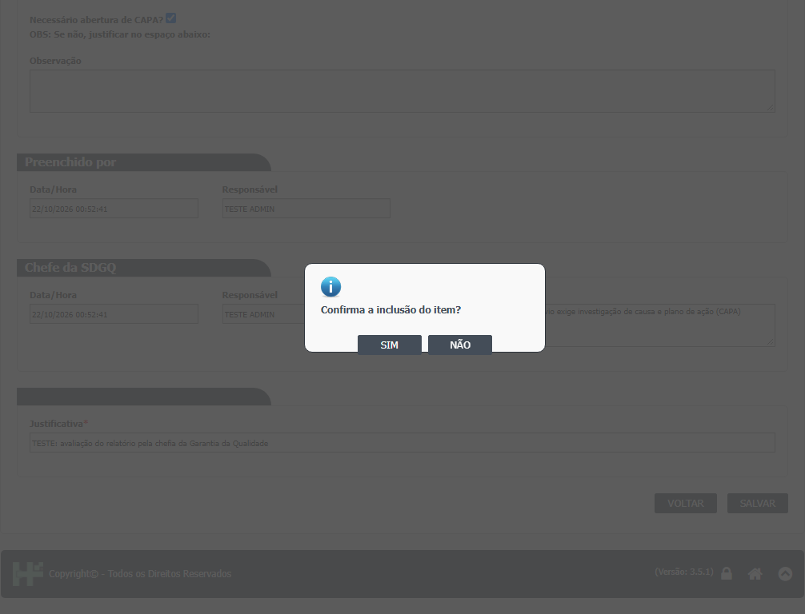
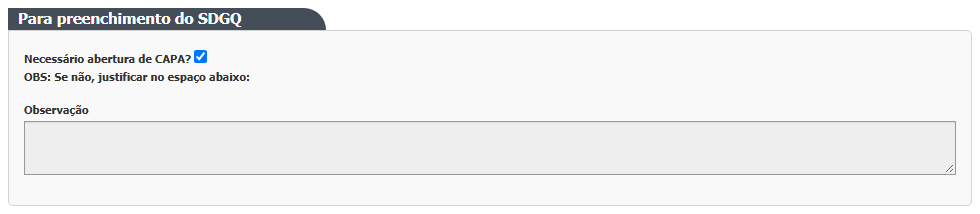
Parte 3. Consultar sem alterar (tela interna Visualizar)
- Para os desvios que não estão em Pendente Avaliação Relatório de Desvios, a lista oferece a lupa. A tela é a mesma, sem o botão Salvar e com as caixas travadas.
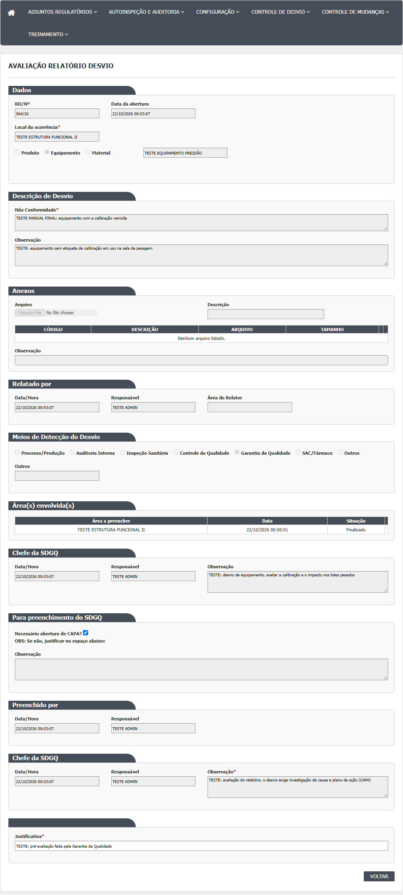
Parte 4. Histórico e impressão
-
O ícone de histórico abre a janela Log com as alterações do desvio.
-
A impressora abre o relatório do desvio em outra aba.
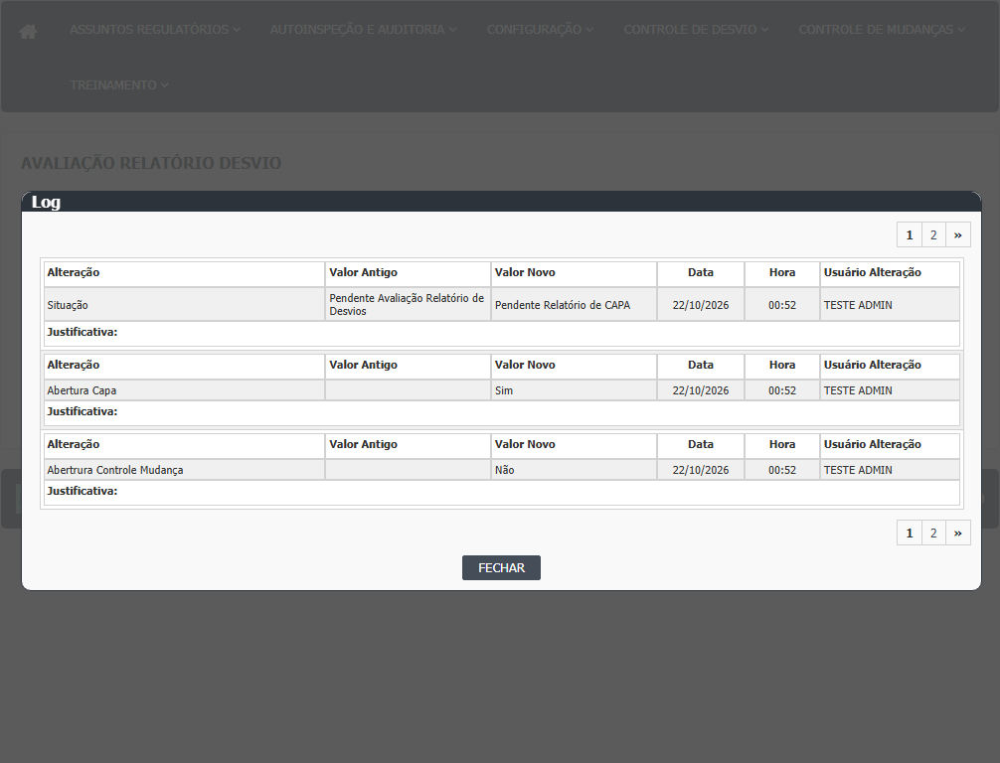
Tela interna Incluir
- Existe a ação
Incluir, mas o menu não leva a ela. Ela mostra uma página vazia, só com o título "Incluir". É um protótipo sem função.
O que os testes de tela mostraram depois
O que a rodada 1 (21/10/2026) mostrou sobre este manual
- Passo 9 (decidir sobre a CAPA). A caixa "Necessário abertura de CAPA?" vem desmarcada por padrão. Sem marcar e sem a observação de abertura, a tela mostrou "Campo Observação para abertura de CAPA é obrigatório." e nada foi gravado. Com a observação, o desvio terminou em Finalizado sem Relatório CAPA (CT-GQ-015). Com a caixa marcada, foi para Pendente Relatório de CAPA (CT-GQ-016).
- Controle de mudança. Esta tela não tem a caixa "Necessário abertura de Controle de Mudança" (ela só existe na tela Relatório de CAPA, sem efeito), e nenhuma solicitação de mudança foi aberta: a busca em Solicitação de Mudanças ficou vazia (CT-GQ-016).
- Passo 3 (lista). A lista mostrou o desvio 029/26, que tinha uma área ainda sem avaliar (Pendente Responsável Área), só com a lupa (CT-GQ-011). Sem filtro (TODAS), a lista trouxe 32 linhas, com mais de 8 situações diferentes (CT-GQ-N05-02).
- Passo 2 (filtros). RD/Nº: "009" acha o 009/26 e "9" acha 4 desvios (os que contêm 9), mas "009/26" não acha (DV-GQ-026). Descrição: "TESTE massa M2" achou 10 desvios. Só a Data Início acha só aquele dia; o intervalo de 12/10 a 13/10 achou 4; só a Data Fim é ignorada e a lista sai completa. Uma data inválida (31/02/2026) é ignorada sem mensagem (DV-GQ-027). Situação oferece só TODAS, "Pendente Avaliação Relatório de Desvios" (3 linhas) e "Finalizado sem Relatório CAPA" (4 linhas) (CT-GQ-N05-01 e CT-GQ-N05-02).
- Não exercitados nesta rodada: o botão Limpar, a observação do chefe da SDGQ vazia, a lupa da tabela de áreas, o histórico, a impressão e as telas Incluir e Visualizar.
Rodada 2 (22/10/2026)
- Passo 6 (datas e nomes que a tela mostra). Ao abrir Editar num desvio que foi aberto e pré-avaliado em 21/10, consultado em 22/10, a "Data da abertura", a data e hora da pré-avaliação e as do "Preenchido por" e do chefe mostram a data e a hora do momento da consulta. O responsável da pré-avaliação mostra o usuário que está abrindo a tela, e não quem pré-avaliou (CT-GQ-N05-11, DV-GQ-040). Não use esses campos para saber quando ou por quem o desvio foi tratado.
- Passo 8 (lupa da tabela de áreas). No desvio 032/26, com duas áreas avaliadas (as duas linhas aparecem como Finalizado), as duas lupas abriram uma página "Avaliação Área" com a área e a observação em branco, a data e hora do momento e o usuário que consulta, e só com o botão Voltar. Por esta lupa não dá para ver o que cada área avaliou (CT-GQ-N05-09, DV-GQ-043).
- Passo 9 (decidir sobre a CAPA). Marcando a caixa, a observação de abertura de CAPA ficou desabilitada e vazia; com a observação do chefe, Salvar mostrou "Alteração efetuada com sucesso." e o desvio foi para Pendente Relatório de CAPA (031/26, CT-GQ-N05-05). Sem CAPA e com as duas observações, o desvio terminou em Finalizado sem Relatório CAPA e deixou de aparecer na tela Relatório de CAPA (032/26, CT-GQ-N05-07). Sem CAPA e com a observação de abertura contendo só espaços, a tela também aceitou: o desvio ficou em Finalizado sem Relatório CAPA sem nenhuma justificativa escrita (033/26, CT-GQ-N05-06, DV-GQ-044).
- Passo 11 (campo Justificativa). O campo, que traz asterisco de obrigatório, já vem preenchido com o texto de uma etapa anterior. Apagado ou com texto novo, a tela salva do mesmo jeito, e a justificativa não aparece no histórico (068/26 e 069/26, CT-GQ-N05-13, DV-GQ-045).
- Passo 17 (histórico). Com CAPA, o histórico ganhou cinco registros: a mudança de situação, "Abertura Capa: Sim", "Abertura Controle Mudança: Não", a observação e o responsável. Sem CAPA, seis (os mesmos mais a observação de CAPA). Nenhum tem valor antigo e a coluna Justificativa fica vazia (031/26 e 032/26, CT-GQ-N05-12, DV-GQ-036). A tela escreve "Abertrura" no lugar de "Abertura".
- Controle de mudança. A tela de avaliação não tem a caixa "Necessário abertura de Controle de Mudança?". Na tela Relatório de CAPA a caixa existe e vem desmarcada (031/26 e 036/26, CT-GQ-N05-08).
- Não exercitados nesta rodada: a observação do chefe da SDGQ vazia (CT-GQ-N05-04), o botão Limpar, a tela Visualizar e a impressão (que dá erro em outras telas, DV-GQ-018).
Rodada 3 (22/10/2026)
- Passo 4 (ícones da lista). Na lista de 60 desvios, o lápis apareceu só nos desvios em Pendente Avaliação Relatório de Desvios (025/26 e 029/26). Nos demais (Pendente Responsável Área, Pendente Plano, Finalizado sem Relatório CAPA, Aprovado, Pendente Relatório de CAPA e Pendente Monitoramento) só a lupa. Histórico e impressora aparecem em todas as linhas (CT-GQ-N05-03, passou).
- Passo 8 (tabela de áreas). Com a área A avaliada em 21/10 e a área B em 22/10, as duas linhas mostram a mesma data, 21/10/2026 19:36:16, que é a do envolvimento e não a da avaliação de cada área (029/26, CT-GQ-N05-10, DV-GQ-063).
- Passos 9, 10 e 13 (observação do chefe vazia). Com a caixa de CAPA marcada e a observação do chefe da SDGQ vazia, Salvar recusa com "Observação Chefe do SDGQ é obrigatório."; nada é gravado e o desvio continua em Pendente Avaliação Relatório de Desvios (084/26, CT-GQ-N05-04, passou).
- Passo 12 (confirmação). NÃO na pergunta "Confirma a inclusão do item?" não grava nada. SIM grava, mostra "Alteração efetuada com sucesso." e leva o desvio a Pendente Relatório de CAPA (084/26, CT-GQ-N05-14). A pergunta fala em inclusão, mesmo sendo uma alteração.
- Passo 18 (impressão). O ícone de impressora da lista abre uma página de erro do servidor em vez do relatório (visto no CT-GQ-N04-17, que passou pela tela 5; DV-GQ-018 reconfirmado). O relatório impresso continua sem conferência.
Rodada 4 (22/10/2026)
- Parte 3 (consulta pela lupa). No desvio 066/26, já avaliado, a lupa abre a tela só com o botão Voltar e as observações travadas. Mas a caixa "Necessário abertura de CAPA?" e a Justificativa aparecem editáveis. Como a tela não tem Salvar, o que se digita ali não vai a lugar nenhum (CT-GQ-N05-15, passou com ressalva).
- Passo 3 (lista) e tela Incluir. A lista e a tela não oferecem cancelamento do desvio. O endereço de Incluir, que o menu não usa, mostra uma página vazia, só com o título (CT-GQ-N05-17, passou).
- Acentos. Título, rótulos, lista e mensagens saem com acentos corretos: "AVALIAÇÃO RELATÓRIO DESVIO", "Observação", "Necessário abertura de CAPA?" (025/26, CT-GQ-N05-18, passou). Nesta tela o título aparece no singular, "DESVIO".
- Passo 3 (desvio parado que vem da Avaliação Área). O desvio 088/26, cujas duas áreas salvaram ao mesmo tempo, ficou em Pendente Responsável Área e, nesta tela, não tem o lápis: não há como avaliá-lo, e ninguém consegue levá-lo adiante pelas telas (visto na tela 4, CT-GQ-N04-18, DV-GQ-083, Alta).
- Trava das áreas. Não foi possível provocar a mensagem "A finalização das avaliações das áreas são obrigatórias.": a tela só oferece o lápis para desvio em Pendente Avaliação Relatório de Desvios, e não há como avaliar com área pendente (CT-GQ-N05-19, bloqueado).
- Passo 18 (impressão). Imprimir pelas telas Avaliação Área, Avaliação Relatório Desvios e Relatório de CAPA abre a página de erro do servidor; não há relatório para comparar entre as três (CT-GQ-N05-16, bloqueado; DV-GQ-018 reconfirmado).
Campos da tela
Lista (tela inicial)
| Campo na tela | Tipo | Obrigatório | Regra, limite ou valores possíveis |
|---|---|---|---|
| RD/Nº (filtro) | Texto | Não | Procura o trecho no número do desvio, sem o ano. Sem máscara. Confirmado em 21/10/2026 (CT-GQ-N05-01): "009" acha o 009/26, "9" acha 4 desvios, "009/26" não acha (DV-GQ-026) |
| Descrição (filtro) | Texto | Não | Procura o trecho na descrição. Confirmado em 21/10/2026: "TESTE massa M2" achou 10 desvios (CT-GQ-N05-01) |
| Data Início (filtro) | Data com calendário e máscara dd/mm/aaaa | Não | Sozinha: um dia. Com Data fim: intervalo. Confirmado em 21/10/2026 (CT-GQ-N05-01): só a data acha só aquele dia; 12/10 a 13/10 achou 4. Data inválida (31/02/2026) é ignorada sem aviso (DV-GQ-027) |
| até / Data fim (filtro) | Data com calendário e máscara dd/mm/aaaa | Não | Sozinha, é ignorada. Confirmado em 21/10/2026: a lista sai completa (CT-GQ-N05-01) |
| Situação (filtro) | Lista | Não | TODAS (0), Pendente Avaliação Relatório de Desvios (17), Finalizado sem Relatório CAPA (34). Filtra pela situação do desvio. Confirmado em 21/10/2026 (CT-GQ-N05-02): a lista oferece só essas duas situações (3 e 4 linhas), enquanto TODAS mostra 32 linhas com mais de 8 situações (DV-GQ-028) |
| Coluna RD/Nº | Texto | Sem entrada | Número com ano (009/26) |
| Coluna DESCRIÇÃO | Texto | Sem entrada | Descrição do desvio |
| Coluna DATA ABERTURA | Data | Sem entrada | Data de criação, dd/MM/aaaa |
| Coluna SITUAÇÃO | Texto | Sem entrada | Situação do desvio (texto do cadastro de situações) |
| Coluna Id | Número, oculta | Sem entrada | Vai no endereço do lápis e da lupa |
Tela interna Editar e Visualizar (formulário comum)
Nesta tela os campos de texto, as opções e as caixas são travados por script, e só algumas caixas de texto são liberadas.
| Campo na tela | Tipo | Obrigatório | Regra, limite ou valores possíveis |
|---|---|---|---|
| Dados > RD/Nº | Texto travado | Não | Número do desvio com ano |
| Dados > Data da abertura | Texto travado | Não | Preenchido com a data e hora de agora (Confirmado em 22/10/2026, CT-GQ-N05-11, DV-GQ-040) |
| Dados > Local da ocorrência | Texto travado | Asterisco | Vem do registro |
| Dados > Tipo de item | Opção única: Produto, Equipamento, Material | Não | Travada nesta tela |
| Dados > item | Texto travado | Não | Descrição do item |
| Dados > Nº Lote, Registro de entrada, Adicionar, buscar | Lista e botões | Asterisco | Escondidos; os lotes aparecem na tabela abaixo |
| Dados > Nº Tag | Lista travada | Asterisco | Aparece só para equipamento |
| Dados > tabela de lotes | Tabela (Nº LOTE, REGISTRO) | Não | Lotes copiados no registro |
| Descrição de Desvio > Não Conformidade | Texto longo (3 linhas) | Asterisco | Travado |
| Descrição de Desvio > Observação | Texto longo (4 linhas) | Não | Travado |
| Anexos > Arquivo e Descrição | Seleção de arquivo e texto | Não | Travados; botão Enviar escondido |
| Anexos > tabela (CÓDIGO, DESCRIÇÃO, ARQUIVO, TAMANHO) | Tabela | Não | Só abrir arquivo; excluir escondido |
| Anexos > Observação | Texto travado | Não | Observação do anexo |
| Relatado por > Data/Hora | Texto travado | Não | Mostra a data de agora (Inferência) |
| Relatado por > Responsável | Texto travado | Não | Quem registrou |
| Relatado por > Área do Relator | Texto travado | Não | Área de quem registrou |
| Meios de Detecção do Desvio | Opção única: Processo/Produção, Auditoria Interna, Inspeção Sanitária, Controle da Qualidade, Garantia da Qualidade, SAC/Fármaco, Outros | Não | Travada; mostra o meio escolhido na pré-avaliação |
| Meios de Detecção > Outros | Texto | Não | Só quando o meio é "Outros" (até 150 caracteres no banco) |
| Área(s) envolvida(s) > Área a preencher | Texto na tabela | Não | Nome de cada área envolvida (inclui áreas excluídas, Inferência) |
| Área(s) envolvida(s) > Data | Texto na tabela | Não | Data em que a área foi envolvida, e não a data em que avaliou (Inferência) |
| Área(s) envolvida(s) > Situação | Texto na tabela | Não | Pendente ou Finalizado |
| Área(s) envolvida(s) > lupa | Ícone | Não | Abre a avaliação da área na tela Avaliação Área |
| Chefe da SDGQ (pré-avaliação) > Data/Hora | Texto travado | Não | Mostra a data e hora de agora (Confirmado em 22/10/2026, CT-GQ-N05-11, DV-GQ-040) |
| Chefe da SDGQ (pré-avaliação) > Responsável | Texto travado | Não | Mostra o usuário que abriu a tela (Confirmado em 22/10/2026, CT-GQ-N05-11, DV-GQ-040) |
| Chefe da SDGQ (pré-avaliação) > Observação | Texto longo (4 linhas) | Não | Observação da pré-avaliação; travada |
| Para preenchimento do SDGQ > Necessário abertura de CAPA? | Caixa de marcação | Não | Desmarcada por padrão (confirmado em 21/10/2026, CT-GQ-015). Marcada: apaga e desabilita a observação abaixo |
| Para preenchimento do SDGQ > Observação | Texto longo (4 linhas) | Sim, se a caixa estiver desmarcada | Texto de justificativa para não abrir CAPA. Sem limite no código |
| Preenchido por > Data/Hora | Texto travado | Não | Data e hora de agora; não é a gravada |
| Preenchido por > Responsável | Texto travado | Não | Usuário que abriu a tela |
| Chefe da SDGQ (avaliação) > Data/Hora | Texto travado | Não | Data e hora de agora |
| Chefe da SDGQ (avaliação) > Responsável | Texto travado | Não | Já avaliado: nome gravado. Primeira vez: usuário que abriu a tela. Este texto é o que o servidor grava |
| Chefe da SDGQ (avaliação) > Observação | Texto longo (4 linhas) | Sim (asterisco; recusa se vazio) | Sem limite no código |
| Justificativa | Texto | Marcado com asterisco | Não é lido pelo servidor. Em Visualizar o script o deixa editável |
| Campos ocultos (hfId, hfIdLocalOcorrencia, hfIdAreaEnvolvida, hfEAcaoImediata, hfDisableFields, hfActionType, hfDisabledSalvar, hfSituacaoAtual) | Ocultos | Sem entrada | Levam o número do desvio e o estado da tela |
| Janelas "Locais" e "Itens" | Janelas ocultas | Sem entrada | Nunca abrem nesta tela |
Tela interna Incluir (protótipo)
| Campo na tela | Tipo | Obrigatório | Regra, limite ou valores possíveis |
|---|---|---|---|
| (nenhum) | Página com o título "Incluir" | Não | Não há campos nem botões |
Rodada 2 (22/10/2026)
O que a tela mostrou de novo ou contrariou nos campos (as linhas de Inferência acima passam a ser fato onde indicado).
| Campo na tela | O que a rodada 2 mostrou |
|---|---|
| Dados > Data da abertura | Mostra a data e hora do momento da consulta, não a da abertura (desvio aberto em 21/10 mostrou 22/10). Deixa de ser inferência (CT-GQ-N05-11, DV-GQ-040) |
| Chefe da SDGQ (pré-avaliação) > Data/Hora e Responsável | Data e hora de agora; o responsável é o usuário que abre a tela, não quem pré-avaliou (CT-GQ-N05-11, DV-GQ-040) |
| Preenchido por e Chefe da SDGQ (avaliação) > Data/Hora | Data e hora de agora (CT-GQ-N05-11). Depois de salvar, o histórico traz usuário, data e hora reais |
| Área(s) envolvida(s) > Situação | As duas áreas avaliadas do 032/26 aparecem como Finalizado (CT-GQ-N05-09) |
| Área(s) envolvida(s) > lupa | Abre uma página "Avaliação Área" com a área e a observação em branco, data e hora de agora e o usuário que consulta. Só tem o botão Voltar; a observação da área fica como campo editável, com asterisco (CT-GQ-N05-09, DV-GQ-043) |
| Necessário abertura de CAPA? | Desmarcada de início. Marcada, a observação de abertura fica desabilitada e vazia (CT-GQ-N05-05) |
| Para preenchimento do SDGQ > Observação | Aceita texto só com espaços e grava (CT-GQ-N05-06, DV-GQ-044) |
| Justificativa | Já vem preenchida com o texto de uma etapa anterior (a documentação supunha campo em branco). Pode ser apagada e a tela salva do mesmo jeito (CT-GQ-N05-13, DV-GQ-045) |
Rodada 3 (22/10/2026)
O que a tela mostrou de novo ou contrariou nos campos:
| Campo na tela | O que a rodada 3 mostrou |
|---|---|
| Lista, ícones de cada linha | Lápis só em Pendente Avaliação Relatório de Desvios; lupa nas demais situações; histórico e impressora em todas (CT-GQ-N05-03) |
| Área(s) envolvida(s) > Data | Mostra a data do envolvimento, igual nas duas áreas (21/10/2026 19:36:16), mesmo com avaliações feitas em dias diferentes. Deixa de ser inferência (CT-GQ-N05-10, DV-GQ-063) |
| Necessário abertura de CAPA? e Chefe da SDGQ (avaliação) > Observação | Com a caixa marcada e a observação do chefe vazia, a gravação é recusada e nada é gravado (CT-GQ-N05-04) |
Rodada 4 (22/10/2026)
O que a tela mostrou de novo ou contrariou nos campos:
| Campo na tela | O que a rodada 4 mostrou |
|---|---|
| Para preenchimento do SDGQ > Necessário abertura de CAPA? (consulta pela lupa) | Aparece editável, ao contrário do que a documentação supunha (tela travada), mas sem Salvar (066/26, CT-GQ-N05-15) |
| Justificativa (consulta pela lupa) | Aparece editável, sem Salvar (CT-GQ-N05-15) |
| Observações do chefe da SDGQ (consulta pela lupa) | Travadas (CT-GQ-N05-15) |
| Título, rótulos e lista | Acentos corretos; a suposição de caracteres trocados não se confirmou (025/26, CT-GQ-N05-18) |
| Ações da lista e da tela | Sem cancelamento; o endereço Incluir mostra página vazia com o título (CT-GQ-N05-17) |
Botões e ações
| Botão ou ação | Quando aparece | O que faz | Para onde leva o desvio |
|---|---|---|---|
| Pesquisar | Sempre, na lista | Lista os desvios que estão em Pendente Avaliação Relatório de Desvios, em Pendente Responsável Área, os Finalizados sem Relatório CAPA sem CAPA e todos os que já têm avaliação | Não muda |
| Limpar | Sempre, na lista | Esvazia os filtros e a tabela | Não muda |
| Editar (lápis) | Desvio em Pendente Avaliação Relatório de Desvios | Abre a tela de avaliação | Não muda ao abrir |
| Visualizar (lupa) | Desvio em qualquer outra situação listada | Abre a tela sem Salvar | Não muda |
| Log (histórico) | Todas as linhas | Abre a janela com as alterações | Não muda |
| Imprimir | Todas as linhas | Gera o relatório do desvio em outra aba | Não muda |
| Salvar | Tela Editar | Pede confirmação, confere e grava a avaliação | Pendente Relatório de CAPA (CAPA marcada) ou Finalizado sem Relatório CAPA (CAPA desmarcada) |
| SIM / NÃO (confirmação) | Ao clicar em Salvar | SIM envia a gravação; NÃO não faz nada | Sem mudança com NÃO |
| OK (resultado) | Depois da gravação | Fecha o aviso; no sucesso volta à lista | Sem mudança |
| Voltar | Telas Editar e Visualizar | Volta à lista sem gravar | Sem mudança |
| Lupa da tabela de áreas | Tela Editar e Visualizar, em cada área | Abre a avaliação da área na tela Avaliação Área | Sem mudança |
| Caixa "Necessário abertura de CAPA?" | Tela Editar (desmarcada de início) | Marcada: apaga e desabilita a observação. Desmarcada: libera a observação | Define o destino ao salvar |
| Ícone de anexo | Em cada anexo | Abre o arquivo | Sem mudança |
| Cancelar o desvio | Não existe nesta tela | Não se aplica | Não se aplica |
| Incluir | Sem botão; só pelo endereço | Mostra uma página vazia | Não se aplica |
| Marcação de Controle de Mudança | Não existe nesta tela (existe só na tela Relatório de CAPA; confirmado em 21/10/2026, CT-GQ-016) | Não se aplica | Não se aplica |
Rodada 2 (22/10/2026)
- Salvar com a caixa de CAPA marcada: leva o desvio a Pendente Relatório de CAPA (CT-GQ-N05-05). Com a caixa desmarcada: leva a Finalizado sem Relatório CAPA, e o desvio deixa de aparecer na tela Relatório de CAPA (CT-GQ-N05-07).
- Lupa da tabela de áreas: não abre a avaliação da área clicada; abre uma página com área e observação em branco (CT-GQ-N05-09, DV-GQ-043).
- Log (histórico): abre com cinco registros (com CAPA) ou seis (sem CAPA), todos sem valor antigo e sem justificativa (CT-GQ-N05-12).
- Marcação de Controle de Mudança: continua inexistente nesta tela; na tela Relatório de CAPA existe e vem desmarcada (CT-GQ-N05-08).
Rodada 3 (22/10/2026)
- Salvar e SIM / NÃO: NÃO não grava e a tela continua editável; SIM grava e leva o desvio a Pendente Relatório de CAPA (CT-GQ-N05-14).
- Editar (lápis) e Visualizar (lupa): o lápis só aparece em Pendente Avaliação Relatório de Desvios (CT-GQ-N05-03).
- Imprimir (lista): abre uma página de erro do servidor em vez do relatório (visto no CT-GQ-N04-17; DV-GQ-018).
Rodada 4 (22/10/2026)
- Visualizar (lupa): só Voltar; a caixa de CAPA e a Justificativa ficam editáveis, sem Salvar (CT-GQ-N05-15).
- Imprimir (lista e tela): abre a página de erro do servidor, o mesmo das telas 1 a 4 e 6; o relatório não pôde ser conferido (CT-GQ-N05-16, bloqueado; DV-GQ-018).
- Cancelar o desvio e Incluir: não há cancelamento na lista nem na tela; Incluir, só pelo endereço, mostra página vazia com o título (CT-GQ-N05-17).
Mensagens do sistema
| Mensagem (texto exato do código) | Quando aparece |
|---|---|
| Campo Observação para abertura de CAPA é obrigatório. | Salvar com a caixa de CAPA desmarcada e a observação vazia |
| Observação Chefe do SDGQ é obrigatório. | Salvar com a observação do chefe da SDGQ vazia |
| A finalização das avaliações das áreas são obrigatórias. | Existe avaliação de área com situação Pendente. Na prática não aparece, porque a avaliação da área já nasce concluída |
| O Anexo é obrigatório. | Anexo do desvio sem arquivo ou sem descrição |
| A Avaliação do RNC é obrigatório. | Desvio sem avaliação (não ocorre, o controlador cria a avaliação). Essa mensagem não tem lugar na tela para aparecer |
| Entidade de domínio não pode ser nula. | Desvio não encontrado na validação |
| Confirma a inclusão do item? | Ao clicar em Salvar (fala em "inclusão", mesmo sendo uma alteração) |
| Alteração efetuada com sucesso. | Gravação concluída |
| Ocorreu um erro inesperado. | Falha ao salvar, ou ao abrir Editar ou Visualizar (volta à lista com o aviso) |
| Ocorreu um erro interno não esperado. | A chamada ao servidor falha |
| A pesquisa não retornou nenhum resultado. | A lista volta sem linhas |
| Não foi possível obter os relatórios de não conformidades | Erro ao pesquisar |
| Não foi possível imprimir o RNC | Erro ao imprimir |
| SIM / NÃO / OK | Botões das janelas de confirmação e de resultado |
Observação: quando há mais de uma recusa, só a última é mostrada. As três recusas da avaliação usam o mesmo "nome de campo" interno (ObservacaoCapa), por isso todas aparecem no bloco "Para preenchimento do SDGQ", inclusive a da observação do chefe da SDGQ.
Rodada 1 (21/10/2026): a mensagem "Campo Observação para abertura de CAPA é obrigatório." apareceu com o texto igual ao do código (CT-GQ-015). As demais mensagens da tabela não foram provocadas nesta rodada.
Rodada 2 (22/10/2026)
Mensagens vistas, com o texto exato da tela:
- "Confirma a inclusão do item?" ao clicar em Salvar, em todos os casos desta tela.
- "Alteração efetuada com sucesso." ao concluir a gravação, inclusive nos casos em que a norma esperava uma recusa: observação de abertura de CAPA só com espaços (CT-GQ-N05-06) e Justificativa apagada (CT-GQ-N05-13).
- Nenhuma recusa nova foi provocada. A mensagem "Observação Chefe do SDGQ é obrigatório." não foi exercitada (CT-GQ-N05-04 não entrou nesta rodada).
Rodada 3 (22/10/2026)
Mensagens vistas, com o texto exato da tela:
- "Observação Chefe do SDGQ é obrigatório." com a caixa de CAPA marcada e a observação do chefe vazia (CT-GQ-N05-04).
- "Confirma a inclusão do item?" ao clicar em Salvar, mesmo sendo uma alteração (CT-GQ-N05-14).
- "Alteração efetuada com sucesso." ao confirmar com SIM (CT-GQ-N05-14).
- Ao imprimir, a tela mostra uma página de erro do servidor, e não a mensagem "Não foi possível imprimir o RNC" (CT-GQ-N04-17, DV-GQ-018).
Rodada 4 (22/10/2026)
- Nenhuma mensagem nova foi provocada. "A finalização das avaliações das áreas são obrigatórias." continua sem aparecer: a tela não deixa chegar ao ponto em que ela seria mostrada (CT-GQ-N05-19, bloqueado).
- Títulos, rótulos e mensagens lidos estão com acentos corretos (CT-GQ-N05-18).
- Ao imprimir, a tela mostra a página de erro do servidor, e não a mensagem "Não foi possível imprimir o RNC" (CT-GQ-N05-16, DV-GQ-018).
Avisos e limitações desta tela
O que a tela faz diferente do esperado, como a equipe de homologação registrou. O número DV-GQ-nnn remete ao documento de defeitos para correção.
Defeitos já confirmados em teste
- Nenhum defeito DV-GQ está registrado para esta tela até 16/10/2026. A passagem com CAPA marcada foi observada nos desvios RD 006/26 e 009/26, mas não como caso de teste.
Previsto pelo código, ainda não visto na tela
-
A caixa "Necessário abertura de Controle de Mudança" não existe nesta tela. O servidor lê o valor, a tela de CAPA tem a caixa, mas aqui o navegador procura um campo inexistente e envia "não". O fluxo e o inventário descrevem duas marcações nesta tela; é só uma (CAPA). RDC 658/2022, art. 8º, XII (abrir controle de mudança a partir do desvio): o requisito segue não atendido.
-
Responsável da avaliação vem do navegador. O nome gravado é o do campo travado da tela; o código do usuário não é gravado, e a situação própria da avaliação fica em "Nenhum". Fere o princípio de registro atribuível (RDC 658/2022, art. 125; Guia 33, ALCOA).
-
Justificativa ignorada. O campo é marcado como obrigatório, mas o servidor não o lê, e o histórico recebe justificativa vazia. RDC 658/2022, art. 125, parágrafo único.
-
Histórico só com valor novo, e só na primeira avaliação. Os registros manuais não têm valor antigo. Se a avaliação for refeita, só as mudanças de campo da rotina geral aparecem.
-
Datas e responsáveis mostrados são os de agora. "Data da abertura", "Relatado por", "Preenchido por" e as datas dos blocos "Chefe da SDGQ" são montados com a data e o usuário do momento. Pode induzir a erro de leitura do registro.
-
A coluna "Data" da tabela de áreas mostra a data em que a área foi envolvida, e não a data em que ela avaliou; a tabela inclui também áreas excluídas.
-
A lupa da tabela de áreas passa o número do registro da área e não o número da área do Principal que a tela de destino espera. Resultado provável: abre a avaliação de outra área ou uma tela vazia. A confirmar no teste.
-
Duas recusas com nome igual e só a última aparece. A recusa da observação do chefe da SDGQ aparece no bloco da CAPA.
-
Dois blocos com o título "Chefe da SDGQ" (um da pré-avaliação, outro da avaliação), confundem a leitura.
-
Nada protege a ordem pelo servidor. A trava das áreas não barra (RN-GQ-035). Quem abre
Editarpelo endereço e salva avalia um desvio que ainda aguarda áreas, ou refaz a avaliação de um desvio já adiante no fluxo, e a situação é redefinida. Ver Segurança. -
Sem CAPA, o desvio fecha com a palavra de uma pessoa só, sem segunda revisão (RDC 658/2022, art. 8º, XIV, e art. 339: análise da causa raiz em nível apropriado). Ponto para validar com a área.
-
Lista e filtro desencontrados. A lista mostra desvios de várias situações, e o filtro Situação oferece só duas.
-
Acentos. Os arquivos e estão gravados em outra codificação que os demais (ISO-8859, sem BOM). Inferência: o título e os rótulos podem aparecer com caracteres trocados. A confirmar no teste.
-
Código sem uso na tela: o script antigo com botões Aprovar e Reprovar e o diagrama de causa e efeito, uma cópia da tela de consulta e a ação
ListarResponsaveisPorArea. -
Usuário sem acesso. Esta lista não consulta o grupo e continua funcionando; os ícones seguem a regra de situação.
Defeitos novos confirmados nas rodadas de teste
- DV-GQ-026 (Média). O filtro RD/Nº não acha o desvio com número e ano ("009/26"); acha com o número puro (CT-GQ-N05-01, CT-GQ-F06). Acontece em 9 das 12 telas de lista.
- DV-GQ-027 (Média). Data inválida no filtro (31/02/2026) é ignorada sem mensagem (CT-GQ-N05-01, CT-GQ-F09). Nesta tela o uso só da Data Fim e o intervalo funcionaram como previsto.
- DV-GQ-028 (Média). O filtro Situação oferece só duas situações, e TODAS mostra mais de 8 (32 linhas) (CT-GQ-N05-02). O caso passou com ressalva, porque o código já previa isso (ponto 12).
- DV-GQ-036 (Alta, histórico em geral). O histórico do desvio omite o conteúdo de várias etapas. Os cinco registros manuais que esta tela grava (ponto 4) não foram abertos nesta rodada, e por isso não é possível dizer se o defeito alcança esta tela.
- DV-GQ-040 (Alta, telas 4 e 5). Data da abertura, data e hora da pré-avaliação e do chefe, e o responsável da pré-avaliação mostram o momento da consulta e o usuário que abre a tela, não os da gravação (CT-GQ-N05-11, 032/26).
- DV-GQ-043 (Média). A lupa da tabela de áreas abre uma página com área e observação em branco, sem o que a área avaliou (CT-GQ-N05-09, 032/26).
- DV-GQ-044 (Alta). Sem CAPA, a observação de abertura só com espaços é aceita e o desvio termina em Finalizado sem Relatório CAPA, sem justificativa (CT-GQ-N05-06, 033/26).
- DV-GQ-045 (Média, telas 4 e 5). A Justificativa, com asterisco, salva apagada ou preenchida, e nunca vai ao histórico (CT-GQ-N05-13, 068/26 e 069/26).
- DV-GQ-063 (Média). A coluna Data da tabela de áreas mostra a data do envolvimento, igual para as duas áreas, e não a data em que cada uma avaliou (CT-GQ-N05-10, 029/26).
- DV-GQ-018 (Média). A impressão do desvio abre uma página de erro do servidor também a partir desta tela (visto no CT-GQ-N04-17). O relatório impresso continua sem conferência.
- DV-GQ-083 (Alta). Quando as duas áreas salvam ao mesmo tempo, o desvio fica parado em Pendente Responsável Área e não ganha o lápis desta tela (088/26, CT-GQ-N04-18). Ninguém consegue levá-lo adiante pelas telas, e a decisão da GQ sobre a CAPA nunca chega a ser tomada.
Relatório de CAPA
Onde fica
Relatório de CAPA (a lista aparece com o título "RELATÓRIO DE CAPA" e a tela de preenchimento com "RELATÓRIO CAPA").
Para que serve
É a etapa em que a Garantia da Qualidade registra a investigação da causa do desvio e o plano de reunião: o diagrama de causa e efeito (sete caixas de texto), a avaliação de impacto, a classificação de criticidade (Crítico, Maior ou Menor) e as divisões ou seções que participam da reunião de investigação, cada uma com um responsável. Só chega aqui o desvio em que a avaliação marcou "Necessário abertura de CAPA?".
Onde fica
Controle de Desvios › Relatório de CAPA.
Quem usa
A Garantia da Qualidade, que conduz a investigação. A lista mostra todos os desvios em Pendente Relatório de CAPA, sem filtrar por área nem por usuário. Os responsáveis escolhidos para a reunião são usuários ativos da divisão ou seção indicada.
Em que situação chega aqui
Pendente Relatório de CAPA, definida pela Avaliação Relatório Desvios quando a caixa de CAPA é marcada.
Para onde vai ao salvar
Pendente Plano Ação Corretiva, situação em que o plano de ação corretiva é elaborado.
Passo a passo
Parte 1. A lista (tela inicial)
-
No menu, clique em Controle de Desvios e depois em Relatório de CAPA. Abre a tela com o título "RELATÓRIO DE CAPA" e o quadro "Pesquisa". A lista abre vazia e só é preenchida ao clicar em Pesquisar.
-
Preencha, se quiser, os filtros: RD/Nº (com máscara 999/99, por exemplo 009/26), Descrição (trecho), Data Início e até (dd/mm/aaaa, com calendário) e Meios de Detecção (TODAS ou um dos meios).
-
Clique em Pesquisar. A tabela mostra RD/Nº, DESCRIÇÃO, MEIO DE DETECÇÃO, DATA ABERTURA e SITUAÇÃO, com ícones em cada linha. Só aparecem desvios em Pendente Relatório de CAPA.
-
Ícones: lápis (Editar), histórico (Log) e impressora (Imprimir). Se o lápis não for oferecido, a lista mostra a lupa (Visualizar), mas essa ação não existe no controlador (ver "Falhas e pontos de atenção").
-
O botão Limpar esvazia os filtros e a tabela.

Parte 2. Preencher o Relatório de CAPA (tela interna Editar)
-
Clique no lápis. Abre a tela "RELATÓRIO CAPA". Os blocos Dados, Descrição de Desvio e Anexos aparecem travados para leitura. Os blocos de preenchimento são: Reunião de Investigação da Causa Raiz, Diagrama de Causa Efeito, Avaliação de Impacto e Abrangência, Para preenchimento do SDGQ, Classificação do Grau de Criticidade e Chefe da SDGQ.
-
Em Reunião de Investigação da Causa Raiz: o campo CAPA/Nº fica vazio na primeira vez (o número só existe depois que a CAPA é gravada). Escolha a Divisão/Seção na lista; o campo Responsável passa a mostrar os usuários ativos daquela divisão; escolha um e clique em Adicionar. A pessoa entra na tabela abaixo (colunas Responsável e Divisão/Seção). Repita para outras divisões ou pessoas. É preciso ter pelo menos uma linha.
-
Se a divisão não tiver usuários ativos, aparece "Essa área não possui responsáveis.". Se você clicar em Adicionar sem escolher o responsável, nada acontece e nenhuma mensagem aparece.
-
Para tirar uma linha da tabela, clique no ícone de excluir dela.
-
Em Diagrama de Causa Efeito, escreva nas sete caixas de texto. Uma figura de espinha de peixe fica ao fundo; as seis caixas à esquerda são os ramos e a sétima, à direita, é a conclusão (comentário do código). As caixas não têm rótulo escrito. Todas as sete são obrigatórias.
-
Em Avaliação de Impacto e Abrangência, escreva a descrição (não é obrigatória).
-
Em Para preenchimento do SDGQ aparece a caixa "Necessário abertura de Controle de Mudança?". Você pode marcá-la, mas esta tela não grava esse valor.
-
Em Classificação do Grau de Criticidade, escolha Crítico, Maior ou Menor. A opção Crítico já vem marcada.
-
Em Chefe da SDGQ, Data/Hora e Responsável aparecem travados (a data de agora e o seu nome, na primeira vez). A Observação é livre e opcional.
-
O campo Justificativa aparece travado no fim da tela e não é gravado.
-
Clique em Salvar e confirme com SIM na pergunta "Confirma a inclusão do item?".
-
Se faltar alguma coisa, aparece uma faixa de mensagem no bloco correspondente: "O diagrama deve ser totalmente preenchido." (bloco do diagrama) ou "Pelo menos uma Divisão/Seção precisa ser selecionada." (bloco da reunião). Quando há as duas falhas, a tela mostra apenas a última (ver "Falhas e pontos de atenção"). Nada é gravado.
-
Com tudo certo, abre "Alteração efetuada com sucesso." Ao clicar OK, volta à lista, e o desvio já está em Pendente Plano Ação Corretiva.
-
Voltar sai sem gravar.


Parte 3. Histórico e impressão
-
O ícone de histórico abre a janela Log com as alterações do desvio.
-
A impressora abre em outra aba o relatório do desvio.

Telas internas Visualizar, Incluir e Cancelar
- Visualizar: a lista tem a ação (lupa), mas o controlador não tem a ação
Visualizar. A view existente é cópia da tela de avaliação, escrita para outro controlador. Inferência: a lupa leva a erro de página não encontrada. A confirmar no teste. - Incluir e Cancelar: não existem nesta tela.

O que os testes de tela mostraram depois
O que a rodada 1 (21/10/2026) mostrou sobre este manual
- Passo 17 (recusas). Com o diagrama preenchido em 3 das 7 caixas, a tela mostrou "O diagrama deve ser totalmente preenchido.". Sem divisão, qualquer que fosse a combinação com o diagrama, mostrou só a última mensagem, "Pelo menos uma Divisão/Seção precisa ser selecionada.": quem erra nas duas coisas só descobre a primeira depois de corrigir a segunda (CT-GQ-017, DV-GQ-033).
- Passos 13 e 18 (criticidade e gravação). A criticidade veio como Crítico por padrão. Com o diagrama completo, Crítico e uma divisão, o desvio foi para Pendente Plano Ação Corretiva (CT-GQ-017). Não há campo para justificar erro humano.
- Passo 21 (impressão). O ícone de impressora da lista não abriu o relatório: a tela mostrou uma página de erro do servidor. Aconteceu em todos os desvios testados nas telas Relatório de Desvios, Registro Ação Corretiva Imediata e Relatório de CAPA. Os relatórios de Acompanhamento RD e de Controle de Emissão de RNC imprimem normalmente. Falta confirmar se o problema vem do servidor em que o teste rodou (DV-GQ-018).
- Passo 2 (filtros). RD/Nº: nesta tela o ano funciona: "036", "36" e "036/26" acham o desvio 036/26; "009/26" e "999" não acham (CT-GQ-N06-02). Meios de Detecção: filtra pelo meio escolhido; TODAS e Nenhum não filtram (CT-GQ-N06-03). Datas: só a Data Início traz os desvios daquele dia; início e fim iguais também; só a Data Fim é ignorada; data inválida (31/02/2026) é ignorada sem mensagem (CT-GQ-N06-04, DV-GQ-027).
- Passo 3 (lista). Com a massa de teste, a lista mostrou só os desvios 036/26 e 037/26, ambos em Pendente Relatório de CAPA (CT-GQ-N06-01).
- Não exercitados nesta rodada: o botão Limpar, o botão Adicionar sem responsável, a divisão sem usuários, a lupa, o histórico e o excluir da tabela da reunião.
Rodada 2 (22/10/2026)
- Passo 17 (recusas). Com cada uma das sete caixas do diagrama deixada vazia, uma por vez (divisão e impacto preenchidos), a tela mostrou "O diagrama deve ser totalmente preenchido." nas sete, e nada foi gravado: o desvio continuou em Pendente Relatório de CAPA (036/26, CT-GQ-N06-05). Com o diagrama completo e nenhuma divisão, mostrou "Pelo menos uma Divisão/Seção precisa ser selecionada." (CT-GQ-N06-06).
- Passo 13 (criticidade). Sem mexer, a criticidade grava como Crítico; Maior (031/26) e Menor (068/26) também foram aceitos. Depois de salvar, nenhuma tela mostra o valor gravado: o histórico não traz, a impressão da CAPA dá erro (DV-GQ-018) e a coluna do Acompanhamento sai em branco (DV-GQ-031). Não dá para provar o que ficou guardado (CT-GQ-N06-10).
- Passo 18 (gravar a CAPA completa). Com as sete caixas, duas divisões com responsável, impacto, criticidade Crítico e observação, Salvar mostrou "Alteração efetuada com sucesso."; o desvio foi para Pendente Plano Ação Corretiva e saiu da lista desta tela (036/26, CT-GQ-N06-12). O mesmo aconteceu com 037/26, 031/26 e 068/26 (CT-GQ-022).
- Histórico (Parte 3). Depois de salvar, o histórico do desvio ganhou um único registro: a mudança de situação, de Pendente Relatório de CAPA para Pendente Plano Ação Corretiva. Não aparecem o diagrama, a criticidade, as divisões, o impacto, a observação nem a justificativa (036/26 e 037/26, CT-GQ-N06-16, DV-GQ-036).
- Controle de mudança. A caixa existe nesta tela e vem desmarcada (CT-GQ-N05-08).
- Não exercitados nesta rodada: impacto e observação vazios (CT-GQ-N06-11), o botão Adicionar sem responsável, a divisão sem usuários, a lupa e o excluir da tabela da reunião.
Rodada 3 (22/10/2026)
- Passo 7 (CAPA/Nº). O campo fica vazio e desabilitado antes e depois de salvar; o número da CAPA não aparece nele nem no histórico (078/26, CT-GQ-N06-13, caso bloqueado). A frase "o número só existe depois que a CAPA é gravada" não se confirma na tela.
- Passo 8 (divisão e responsável). Divisão sem usuários ativos (CENTRO DE CUSTO 2): "Essa área não possui responsáveis." e a lista de Responsável fica vazia e desabilitada (069/26, CT-GQ-N06-07). Adicionar sem escolher o responsável não faz nada e não avisa; a mesma pessoa duas vezes entra uma vez só, sem aviso (CT-GQ-N06-08).
- Passo 11 (impacto) e passo 14 (observação do chefe). Com a avaliação de impacto e a observação do chefe da SDGQ em branco, a CAPA é gravada e o desvio vai a Pendente Plano Ação Corretiva (080/26, CT-GQ-N06-11, DV-GQ-064).
- Passo 12 (controle de mudança). A caixa pode ser marcada e a tela salva com sucesso, mas o "Sim" não é guardado nem mostrado depois (079/26, CT-GQ-N06-15, DV-GQ-065).
- Passo 14 (bloco Chefe da SDGQ). Responsável e Data/Hora mostram o usuário conectado e o momento de abrir a tela; o histórico não traz esses dados da CAPA (084/26, CT-GQ-N06-20, DV-GQ-036).
- Passo 15 (Justificativa). O campo vem travado e já preenchido (CT-GQ-N06-21).
- Passo 16 (confirmação). NÃO na pergunta "Confirma a inclusão do item?" não grava; SIM grava e mostra "Alteração efetuada com sucesso." (084/26, CT-GQ-N06-21).
- Passo 17 (recusas). Cada tentativa de salvar mostra uma só mensagem: sem divisão e com uma caixa do diagrama vazia, só a da divisão; com a divisão e a caixa vazia, só a do diagrama (069/26, CT-GQ-N06-09, DV-GQ-033).
- Passo 21 (impressão). O ícone de impressora abre uma página de erro do servidor (069/26 e 078/26; CT-GQ-N06-13 e N06-17; DV-GQ-018). Os relatórios das três telas não puderam ser comparados.
Rodada 4 (22/10/2026)
- Passo 17 (diagrama com texto longo). Com 5.000 caracteres em cada uma das sete caixas do diagrama, a tela gravou tudo e mostrou "Alteração efetuada com sucesso." (069/26, CT-GQ-N06-14). Não há limite de tamanho.
- Passo 8 (excluir uma pessoa da reunião). Com duas pessoas da mesma divisão na tabela, excluir uma tira as duas, e a tabela volta a mostrar "Nenhuma divisão/seção listada." Para tirar só uma, é preciso adicionar a outra de novo (069/26, CT-GQ-N06-18, DV-GQ-084).
- Passo 8 (voltar a "SELECIONE"). Escolher uma divisão e voltar à opção SELECIONE deixa o Responsável vazio e desabilitado, como esperado. Ao mesmo tempo ocorre um erro de script, que só aparece no console do navegador, sem mensagem para quem usa a tela (069/26, CT-GQ-N06-19).
- Erro humano (passos 11 a 14). A tela continua sem campo para justificar erro humano como causa: os blocos são os mesmos de antes (069/26, CT-GQ-N06-23).
- Cancelar e lupa. Não há botão de cancelar, nem na lista nem na tela (083/26, CT-GQ-N06-22). O que a lupa faz nesta lista não pôde ser testado como a página previa (o que a lista oferece a quem consulta está nos registros internos dos testes); a inferência de "erro de página não encontrada" segue a confirmar.
- Passo 21 (impressão). A página de erro do servidor continua aparecendo (CT-GQ-N05-16, bloqueado; DV-GQ-018). O relatório impresso de CAPA, nas telas 7 a 12, sai com uma mensagem de erro do relatório no lugar da avaliação (DV-GQ-086, visto a partir da tela 7).
Campos da tela
Lista (tela inicial)
| Campo na tela | Tipo | Obrigatório | Regra, limite ou valores possíveis |
|---|---|---|---|
| RD/Nº (filtro) | Texto com máscara 999/99 | Não | Número e ano em dois dígitos (009/26). O servidor separa o que vem antes e depois da barra: procura o trecho no número e filtra o ano (20 + dois dígitos). Confirmado em 21/10/2026 (CT-GQ-N06-02, CT-GQ-F16): "036", "36" e "036/26" acham; "009/26" e "999" não |
| Descrição (filtro) | Texto | Não | Procura o trecho na descrição |
| Data Início (filtro) | Data com calendário e máscara dd/mm/aaaa | Não | Sozinha: um dia. Com Data fim: intervalo. Confirmado em 21/10/2026 (CT-GQ-N06-04, CT-GQ-F07 e F08). Data inválida (31/02/2026) é ignorada sem aviso (DV-GQ-027) |
| até / Data fim (filtro) | Data com calendário e máscara dd/mm/aaaa | Não | Sozinha, é ignorada. Confirmado em 21/10/2026 (CT-GQ-N06-04) |
| Meios de Detecção (filtro) | Lista | Não | TODAS (0), Nenhum (0), Processo/Produção (1), Auditoria Interna (2), Inspeção Sanitária (3), Controle da Qualidade (4), Garantia da Qualidade (5), SAC/Fármaco (6), Outros (99). "TODAS" e "Nenhum" têm o mesmo valor 0 e não filtram. Confirmado em 21/10/2026 (CT-GQ-N06-03) |
| Coluna RD/Nº | Texto | Sem entrada | Número com ano (009/26) |
| Coluna DESCRIÇÃO | Texto | Sem entrada | Descrição do desvio |
| Coluna MEIO DE DETECÇÃO | Texto | Sem entrada | Meio escolhido na pré-avaliação |
| Coluna DATA ABERTURA | Data | Sem entrada | Data de criação, dd/MM/aaaa |
| Coluna SITUAÇÃO | Texto | Sem entrada | Sempre "Pendente Relatório de CAPA" |
| Coluna Id | Número, oculta | Sem entrada | Vai no endereço do lápis |
Tela interna Editar (formulário comum)
Nesta tela, os blocos Dados, Descrição de Desvio, Anexos e Justificativa são travados por script; os blocos da CAPA ficam livres.
| Campo na tela | Tipo | Obrigatório | Regra, limite ou valores possíveis |
|---|---|---|---|
| Dados > RD/Nº | Texto travado | Não | Número com ano |
| Dados > Data da abertura | Texto travado | Não | Data de criação do desvio (nesta tela, o código troca a data de agora pela real) |
| Dados > Local da ocorrência | Texto travado | Asterisco | Vem do registro |
| Dados > Tipo de item | Opção única: Produto, Equipamento, Material | Não | Travada |
| Dados > item | Texto travado | Não | Descrição do item |
| Dados > Nº Lote, Registro de entrada, Adicionar, buscar | Lista e botões | Asterisco | Escondidos |
| Dados > Nº Tag | Lista travada | Asterisco | Só para equipamento |
| Dados > tabela de lotes | Tabela | Não | Lotes copiados no registro |
| Descrição de Desvio > Não Conformidade | Texto longo (3 linhas) | Asterisco | Travado |
| Descrição de Desvio > Observação | Texto longo (4 linhas) | Não | Travado |
| Anexos > Arquivo e Descrição | Seleção de arquivo e texto | Não | Travados; Enviar escondido |
| Anexos > tabela (CÓDIGO, DESCRIÇÃO, ARQUIVO, TAMANHO) | Tabela | Não | Só abrir; excluir escondido |
| Anexos > Observação | Texto travado | Não | Observação do anexo |
| Relatado por > Data/Hora | Texto travado | Não | Data de criação do desvio |
| Relatado por > Responsável | Texto travado | Não | Quem criou o desvio |
| Relatado por > Área do Relator | Texto travado | Não | Área de quem registrou |
| Reunião > CAPA/Nº | Texto travado | Não | Número da CAPA com 4 dígitos (0001). Vazio até a CAPA ser gravada |
| Reunião > Divisão/Seção | Lista (com "SELECIONE") | Sim (asterisco; pelo menos uma linha na tabela) | Locais do Principal que têm responsável. Escolher dispara a busca de responsáveis |
| Reunião > Responsável | Lista | Sim (asterisco) | Desabilitada até escolher a divisão. Mostra usuários ativos cuja Divisão é a escolhida. A primeira opção é "SELECIONE" |
| Reunião > Adicionar | Botão | Não | Só age quando divisão e responsável estão escolhidos; nada avisa quando faltam. Não aceita a mesma pessoa duas vezes na mesma divisão |
| Reunião > tabela (Responsável, Divisão/Seção, excluir) | Tabela | Pelo menos uma linha | Mensagem vazia "Nenhuma divisão/seção listada." |
| Diagrama de Causa Efeito > caixa 1 (txtDiagrama1) | Texto longo (10 linhas) | Sim | Sem rótulo escrito; sem limite no código |
| Diagrama > caixa 2 (txtDiagrama2) | Texto longo (10 linhas) | Sim | Idem |
| Diagrama > caixa 3 (txtDiagrama3) | Texto longo (10 linhas) | Sim | Idem |
| Diagrama > caixa 4 (txtDiagrama4) | Texto longo (10 linhas) | Sim | Idem |
| Diagrama > caixa 5 (txtDiagrama5) | Texto longo (10 linhas) | Sim | Idem |
| Diagrama > caixa 6 (txtDiagrama6) | Texto longo (10 linhas) | Sim | Idem |
| Diagrama > caixa 7 (txtDiagrama7, conclusão) | Texto longo (10 linhas) | Sim | Fica à direita; o código a chama de "conclusão" |
| Avaliação de Impacto e Abrangência > Descrição | Texto | Não | Sem limite no código |
| Para preenchimento do SDGQ > Necessário abertura de Controle de Mudança? | Caixa de marcação | Não | Pode ser marcada, mas o servidor não lê o valor. Confirmado em 21/10/2026 que a caixa existe aqui e não tem efeito: nenhuma solicitação de mudança foi aberta (CT-GQ-016) |
| Classificação do Grau de Criticidade | Opção única: Crítico (0), Maior (1), Menor (2) | Sim, na prática (Crítico vem marcado) | Sem escolha, vale Crítico, o valor zero do enum. Confirmado em 21/10/2026: a opção Crítico vem marcada (CT-GQ-017). Em 22/10/2026 (CT-GQ-N06-10): sem mexer, grava Crítico; Maior e Menor também foram aceitos, mas nenhuma tela mostra o valor gravado |
| Chefe da SDGQ > Data/Hora | Texto travado | Não | Primeira vez: data de agora. Depois: data gravada |
| Chefe da SDGQ > Responsável | Texto travado | Não | Primeira vez: o usuário que abriu a tela. É este texto que o servidor grava como responsável |
| Chefe da SDGQ > Observação | Texto longo (4 linhas) | Não | Livre |
| Justificativa | Texto travado | Marcado com asterisco | Travado pelo script; não é gravado |
| Campos ocultos (hfId, hfIdLocalOcorrencia, hfIdAreaEnvolvida, hfEAcaoImediata, hfDisableFields, hfActionType, hfDisabledSalvar, hfSituacaoAtual) | Ocultos | Sem entrada | Levam o número do desvio e o estado da tela |
| Janelas "Locais" e "Itens" | Janelas ocultas | Sem entrada | Nunca abrem nesta tela |
Nesta tela não aparecem os blocos Meios de Detecção do Desvio e Ação Corretiva Imediata.
Rodada 2 (22/10/2026)
O que a tela mostrou de novo ou contrariou nos campos:
| Campo na tela | O que a rodada 2 mostrou |
|---|---|
| Diagrama de causa e efeito (sete caixas) | Qualquer caixa vazia recusa o Salvar com "O diagrama deve ser totalmente preenchido."; testadas as sete, uma por vez (CT-GQ-N06-05) |
| Reunião > tabela (Divisão/Seção) | Sem nenhuma linha, Salvar recusa com "Pelo menos uma Divisão/Seção precisa ser selecionada." (CT-GQ-N06-06). Com duas divisões e responsável, grava (CT-GQ-N06-12) |
| Classificação do Grau de Criticidade | Vem como Crítico; Maior e Menor são aceitos. O valor gravado não aparece no histórico, na impressão da CAPA (erro) nem na coluna do Acompanhamento (em branco, DV-GQ-031) (CT-GQ-N06-10) |
| Necessário abertura de Controle de Mudança? | Existe e vem desmarcada (CT-GQ-N05-08) |
Rodada 3 (22/10/2026)
O que a tela mostrou de novo ou contrariou nos campos:
| Campo na tela | O que a rodada 3 mostrou |
|---|---|
| Reunião > CAPA/Nº | Vazio e desabilitado antes e depois de salvar; o número não aparece (CT-GQ-N06-13, caso bloqueado) |
| Reunião > Responsável | Com a divisão sem usuários ativos, a lista fica vazia e desabilitada (CT-GQ-N06-07) |
| Reunião > Adicionar | Sem responsável escolhido, não faz nada e não avisa; a mesma pessoa duas vezes entra uma vez só, sem aviso (CT-GQ-N06-08) |
| Avaliação de Impacto e Abrangência > Descrição e Chefe da SDGQ > Observação | Em branco, a CAPA é gravada (CT-GQ-N06-11, DV-GQ-064) |
| Necessário abertura de Controle de Mudança? | Marcada, grava sem erro; o "Sim" não é guardado nem mostrado (CT-GQ-N06-15, DV-GQ-065) |
| Chefe da SDGQ > Data/Hora e Responsável | Mostram o usuário conectado e o momento de abrir a tela (CT-GQ-N06-20) |
| Justificativa | Vem travada e já preenchida (CT-GQ-N06-21) |
Rodada 4 (22/10/2026)
O que a tela mostrou de novo ou contrariou nos campos:
| Campo na tela | O que a rodada 4 mostrou |
|---|---|
| Diagrama de causa e efeito (sete caixas) | 5.000 caracteres em cada caixa: gravados inteiros, "Alteração efetuada com sucesso." (069/26, CT-GQ-N06-14) |
| Reunião > tabela (Divisão/Seção), Excluir | Excluir uma de duas pessoas da mesma divisão tira as duas; a tabela mostra "Nenhuma divisão/seção listada." (069/26, CT-GQ-N06-18, DV-GQ-084) |
| Reunião > Divisão/Seção ao voltar a SELECIONE | Responsável fica vazio e desabilitado; há erro de script no console (069/26, CT-GQ-N06-19) |
| Erro humano | Continua sem campo para justificar (069/26, CT-GQ-N06-23) |
Botões e ações
| Botão ou ação | Quando aparece | O que faz | Para onde leva o desvio |
|---|---|---|---|
| Pesquisar | Sempre, na lista | Lista os desvios em Pendente Relatório de CAPA, aplicando os filtros | Não muda |
| Limpar | Sempre, na lista | Esvazia os filtros e a tabela | Não muda |
| Editar (lápis) | Desvio em Pendente Relatório de CAPA | Abre a tela de preenchimento | Não muda ao abrir |
| Visualizar (lupa) | Quando o lápis não é oferecido | Tenta abrir uma tela que o controlador não tem | Não se aplica |
| Log (histórico) | Todas as linhas | Abre a janela com as alterações | Não muda |
| Imprimir | Todas as linhas | Deveria gerar o relatório do desvio em outra aba. Em 21/10/2026 abriu uma página de erro do servidor (DV-GQ-018) | Não muda |
| Divisão/Seção (lista) | Tela Editar | Ao escolher, busca os responsáveis da divisão | Não muda |
| Adicionar | Tela Editar | Põe a pessoa e a divisão na tabela da reunião | Não muda até salvar |
| Excluir (na tabela da reunião) | Tela Editar, em cada linha | Tira a linha da tabela | Não muda até salvar |
| Salvar | Tela Editar, desvio em Pendente Relatório de CAPA | Pede confirmação, confere o diagrama e as divisões e grava o relatório | Pendente Plano Ação Corretiva |
| SIM / NÃO (confirmação) | Ao clicar em Salvar | SIM envia a gravação; NÃO não faz nada | Sem mudança com NÃO |
| OK (resultado) | Depois da gravação | Fecha o aviso; no sucesso volta à lista | Sem mudança |
| Voltar | Tela Editar | Volta à lista sem gravar | Sem mudança |
| Ícone de anexo | Em cada anexo | Abre o arquivo | Sem mudança |
| Caixa de Controle de Mudança | Tela Editar | Pode ser marcada, sem efeito ao salvar | Sem mudança |
| Cancelar o desvio, Incluir | Não existem nesta tela | Não se aplicam | Não se aplicam |
Rodada 2 (22/10/2026)
- Salvar com a CAPA completa: leva o desvio a Pendente Plano Ação Corretiva e ele sai da lista desta tela (CT-GQ-N06-12, CT-GQ-022).
- Salvar com uma caixa do diagrama vazia ou sem divisão: não grava e o desvio continua em Pendente Relatório de CAPA (CT-GQ-N06-05 e N06-06).
- Log (histórico): abre com um único registro, a mudança de situação (CT-GQ-N06-16).
- Imprimir: não foi conferido nesta rodada; a impressão dá erro (DV-GQ-018).
Rodada 3 (22/10/2026)
- Adicionar: sem responsável escolhido, nada acontece e nada é dito; a mesma pessoa duas vezes entra uma vez só (CT-GQ-N06-08).
- Salvar e SIM / NÃO: NÃO não grava; SIM grava e leva o desvio a Pendente Plano Ação Corretiva (CT-GQ-N06-21). Com impacto e observação em branco também grava (CT-GQ-N06-11).
- Imprimir (lista): abre uma página de erro do servidor (CT-GQ-N06-13 e N06-17; DV-GQ-018).
- Caixa de Controle de Mudança: pode ser marcada; a gravação acontece, mas o valor não é guardado (CT-GQ-N06-15).
- Log (histórico): traz só a mudança de situação (CT-GQ-N06-13 e N06-20).
Rodada 4 (22/10/2026)
- Excluir (tabela da reunião): tira todas as linhas da mesma divisão, não só a clicada (CT-GQ-N06-18, DV-GQ-084).
- Divisão/Seção, opção SELECIONE: esvazia e desabilita o Responsável, mas com erro de script no console (CT-GQ-N06-19).
- Salvar com textos longos: grava 5.000 caracteres em cada caixa do diagrama (CT-GQ-N06-14).
- Cancelar o desvio: não existe, nem na lista nem na tela (CT-GQ-N06-22). A lupa não pôde ser exercitada como o caso previa (ver registro interno dos testes).
- Imprimir: continua abrindo a página de erro do servidor (CT-GQ-N05-16, bloqueado; DV-GQ-018).
Mensagens do sistema
| Mensagem (texto exato do código) | Quando aparece |
|---|---|
| O diagrama deve ser totalmente preenchido. | Salvar com qualquer uma das sete caixas vazia (aparece no bloco do diagrama) |
| Pelo menos uma Divisão/Seção precisa ser selecionada. | Salvar sem nenhuma pessoa na tabela da reunião (aparece no bloco da reunião) |
| Entidade de domínio não pode ser nula. | Desvio ou CAPA não encontrados na validação |
| Essa área não possui responsáveis. | Divisão escolhida sem usuários ativos |
| Nenhuma divisão/seção listada. | Tabela da reunião vazia |
| Confirma a inclusão do item? | Ao clicar em Salvar (fala em "inclusão", mesmo sendo alteração) |
| Alteração efetuada com sucesso. | Gravação concluída |
| Ocorreu um erro inesperado. | Falha ao salvar ou ao abrir a tela (volta à lista) |
| Ocorreu um erro interno não esperado. | A chamada ao servidor falha |
| A pesquisa não retornou nenhum resultado. | A lista volta sem linhas |
| Não foi possível obter os relatórios de não conformidades | Erro ao pesquisar |
| Não foi possível imprimir a solicitação de mudança | Erro ao imprimir (texto trocado: é uma cópia do código de outra tela; fala em "solicitação de mudança"). Em 21/10/2026 esta mensagem não apareceu: a tela mostrou a página de erro abaixo |
| Página de erro do servidor | Página de erro ao clicar em Imprimir na lista (vista em 21/10/2026; DV-GQ-018). Não é mensagem prevista no código desta tela; falta confirmar se é do ambiente |
| SELECIONE | Primeira opção das listas Divisão/Seção e Responsável |
| SIM / NÃO / OK | Botões das janelas de confirmação e de resultado |
Observação: se as duas recusas (diagrama e divisão) acontecem juntas, a tela só mostra a última, que é a da divisão. Confirmado em 21/10/2026 (CT-GQ-017, DV-GQ-033). As mensagens "O diagrama deve ser totalmente preenchido." e "Pelo menos uma Divisão/Seção precisa ser selecionada." apareceram com o texto igual ao do código.
Rodada 2 (22/10/2026)
Mensagens vistas, com o texto exato da tela:
- "O diagrama deve ser totalmente preenchido." com qualquer das sete caixas vazia (as sete foram testadas, CT-GQ-N06-05).
- "Pelo menos uma Divisão/Seção precisa ser selecionada." com o diagrama completo e nenhuma divisão (CT-GQ-N06-06).
- "Alteração efetuada com sucesso." ao gravar a CAPA completa (CT-GQ-N06-12 e CT-GQ-022).
- Nenhuma mensagem nova apareceu. "Essa área não possui responsáveis." não foi exercitada.
Rodada 3 (22/10/2026)
Mensagens vistas, com o texto exato da tela:
- "Essa área não possui responsáveis." ao escolher a divisão sem usuários ativos; deixa de ser mensagem só prevista pelo código (CT-GQ-N06-07).
- "Pelo menos uma Divisão/Seção precisa ser selecionada." e "O diagrama deve ser totalmente preenchido.", sempre uma por tentativa (CT-GQ-N06-09).
- "Confirma a inclusão do item?" ao clicar em Salvar (CT-GQ-N06-21).
- "Alteração efetuada com sucesso." ao gravar, inclusive com impacto e observação do chefe em branco (CT-GQ-N06-11) e com a caixa de controle de mudança marcada (CT-GQ-N06-15).
- Adicionar sem responsável e a mesma pessoa duas vezes: nenhuma mensagem (CT-GQ-N06-08).
- Ao imprimir, a tela mostra uma página de erro do servidor, e não a mensagem "Não foi possível imprimir a solicitação de mudança" (CT-GQ-N06-13 e N06-17; DV-GQ-018).
Rodada 4 (22/10/2026)
Mensagens vistas, com o texto exato da tela:
- "Alteração efetuada com sucesso." ao gravar a CAPA com 5.000 caracteres em cada caixa do diagrama (CT-GQ-N06-14).
- "Nenhuma divisão/seção listada." depois de excluir uma de duas pessoas da mesma divisão: a tabela da reunião fica vazia (CT-GQ-N06-18, DV-GQ-084).
- Ao voltar a divisão para SELECIONE não aparece mensagem para o usuário; o erro de script fica só no console do navegador (CT-GQ-N06-19).
- Nenhuma mensagem nova de recusa foi provocada.
Avisos e limitações desta tela
O que a tela faz diferente do esperado, como a equipe de homologação registrou. O número DV-GQ-nnn remete ao documento de defeitos para correção.
Defeitos já confirmados em teste
- DV-GQ-011 (o Relatório de CAPA "não gravava") foi registrado em 15/10/2026 e descartado em 16/10/2026: a CAPA grava normalmente quando as sete caixas do diagrama e uma divisão com responsável são preenchidas. O que faltava no teste era o campo Responsável da divisão, que a tela não deixa claro (ver pontos 1 e 2 abaixo) ( e).
- O caminho feliz foi confirmado: o desvio RD 009/26 passou pela CAPA e foi até Pendente Plano Ação Corretiva e adiante (CT-GQ-022). Esse caso falhou depois, no monitoramento do plano (DV-GQ-016), não nesta tela.
Previsto pelo código, ainda não visto na tela
-
O erro de "responsável faltando" é silencioso. O botão Adicionar não faz nada, sem mensagem, quando falta escolher a divisão ou o responsável. Foi a causa do falso defeito DV-GQ-011. O responsável também só aparece depois de escolher a divisão.
-
Duas recusas, uma mensagem. A função que mostra os erros zera todas as mensagens a cada erro; sobra a última. Com o diagrama vazio e sem divisão, o usuário só vê o aviso da divisão, corrige, e só então vê o do diagrama.
-
Criticidade já vem como "Crítico" e não há como deixá-la sem escolha: o valor zero do enum é Crítico. Quem não olha o campo grava Crítico. RDC 658/2022, arts. 320 e 334 (classificação por risco), a confirmar.
-
Avaliação de impacto não é obrigatória. Para a análise de causa raiz em nível apropriado (RDC 658/2022, art. 339), a ausência do impacto enfraquece o registro. Ponto para validar com a área.
-
Responsável e data da CAPA vêm do navegador. O nome e a data são lidos dos campos travados; o código do usuário responsável não é gravado. Fere o registro atribuível e contemporâneo (RDC 658/2022, art. 125; Guia 33, ALCOA). O padrão semelhante e a
-
Nenhum conteúdo da CAPA no histórico. Só a situação e o vínculo. Justificativa sempre vazia. RDC 658/2022, art. 125.
-
Campo "Justificativa" travado e ignorado, embora tenha asterisco.
-
Caixa de controle de mudança sem efeito. Aparece aqui, pode ser marcada, e o servidor não lê. Soma-se ao fato de a Avaliação Relatório Desvios não ter essa caixa (RDC 658/2022, art. 8º, XII).
-
Lupa sem destino. A lista pode oferecer Visualizar, mas o controlador não tem a ação.
-
Mensagem de impressão trocada. O erro de impressão fala em "solicitação de mudança".
-
Diagrama sem rótulos. As sete caixas não têm nome escrito; o sentido vem da figura. O sistema tem tabelas de diagrama em etapas que esta tela não usa.
-
Excluir uma linha tira todas da mesma divisão. Linhas já gravadas passam o código do registro e não o da divisão, o que pode fazer o excluir não funcionar na reedição. Inferência.
-
Voltar a "SELECIONE" na divisão causa erro de script. O código usa uma variável que não existe nesse ponto.
-
Regravar apaga e recria as divisões, deixando as antigas sem vínculo. Inferência.
-
Divisão sem usuário bloqueia o avanço. Só aparecem divisões com responsável no Principal, e só entram na reunião usuários ativos com a Divisão preenchida (RN-GQ-149); sem isso, não há como salvar.
-
Sem campo para erro humano (RN-GQ-044; RDC 658/2022, art. 340).
-
Concorrência. Duas pessoas que preenchem a mesma CAPA ao mesmo tempo: vale a última gravação (sem controle de versão). Inferência.
Defeitos novos confirmados nas rodadas de teste
- DV-GQ-018 (Média). Imprimir o CAPA pelo ícone da lista abre uma página de erro do servidor, em todos os desvios testados (CT-GQ-017). Os relatórios de Acompanhamento RD e de Controle de Emissão imprimem normalmente. Falta confirmar se o problema é do ambiente. Importa porque o relatório impresso é o que se mostra a quem audita.
- DV-GQ-033 (Baixa). Quando faltam várias coisas ao salvar, só a última mensagem aparece (nesta tela, só a da divisão) (CT-GQ-017).
- DV-GQ-027 (Média). Data inválida no filtro é ignorada em silêncio (CT-GQ-N06-04). Nesta tela o intervalo de um dia e o uso só da Data Fim funcionaram como previsto.
- DV-GQ-036 (Alta, histórico em geral). O histórico do desvio omite o conteúdo do diagrama e de outras etapas (CT-GQ-F04, desvio 048/26, que passou por esta tela).
- DV-GQ-031 (Média, Acompanhamento). A criticidade escolhida (Crítico, Maior ou Menor) não aparece na coluna Grau de Criticidade do relatório de Acompanhamento, que sai em branco; somado ao erro de impressão da CAPA (DV-GQ-018), não há onde conferir o valor gravado (CT-GQ-N06-10).
- DV-GQ-064 (Média). O Relatório de CAPA é gravado sem avaliação de impacto e sem observação do chefe da SDGQ, e o desvio segue para o plano (CT-GQ-N06-11, 080/26). Confirma a RN-GQ-041.
- DV-GQ-065 (Média). A caixa de controle de mudança é aceita, mas o valor não é guardado nem mostrado (CT-GQ-N06-15, 079/26). Confirma a RN-GQ-D06-09.
- DV-GQ-084 (Média). Excluir uma pessoa da reunião de causa raiz tira todas as da mesma divisão (CT-GQ-N06-18, 069/26). Para tirar só uma, é preciso adicionar a outra de novo.
- DV-GQ-086 (Alta, telas 7 a 12). O Relatório de CAPA impresso traz uma mensagem de erro do relatório no lugar da avaliação. Aparece a partir da tela 7; é o relatório que quem audita lê depois desta tela.
Plano de Ação Corretiva
Onde fica
Menu: Controle de Desvios › Plano de Ação Corretiva.
Para que serve
É a tela em que a Garantia da Qualidade monta o plano de ação corretiva de um desvio que já tem Relatório de CAPA: dá um título e uma descrição ao plano e lista as ações corretivas, cada uma com descrição, divisão/seção, responsável e prazo. Também aceita anexos e uma observação geral.
Quem usa
- Garantia da Qualidade, que escreve o plano.
- Os responsáveis escolhidos para cada ação não usam esta tela: eles trabalham na tela seguinte, Execução do Plano de Ação Corretiva.
Em que situação chega aqui
- Pendente Plano Ação Corretiva: situação em que o desvio fica depois que o Relatório de CAPA é salvo.
- A lista também mostra desvios em Pendente Monitoramento do Plano Ação Corretiva. Ou seja, o plano pode ser aberto e salvo de novo depois de enviado ao monitoramento.
Para onde vai ao salvar
Pendente Monitoramento do Plano Ação Corretiva. Não existe etapa de aprovação do plano antes da execução.
Passo a passo
Antes de começar
O desvio precisa ter passado pelo Relatório de CAPA. Se o CAPA não foi salvo, o desvio não aparece nesta lista. Tenha em mãos: o que será feito (título e descrição do plano), quem é o responsável por cada ação (a pessoa precisa estar cadastrada como responsável da divisão/seção, no Principal) e o prazo de cada ação.
Tela de lista (Index)
- Passo 1. No menu, abra Controle de Desvios › Plano de Ação Corretiva. A tela mostra o quadro "Pesquisa" e, abaixo, uma área vazia para os resultados. Nada é listado até você clicar em Pesquisar.
- Passo 2. Se quiser, preencha os filtros: RD/Nº, Descrição, Data Início e Data Fim (o campo de data abre um calendário e aceita só números no formato dd/mm/aaaa), Situação e Meios de Detecção. Clique em Pesquisar. Clique em Limpar para esvaziar os filtros e a lista.
- Passo 3. A lista tem as colunas RD/Nº, Descrição, Meios de Detecção, Data Abertura e Situação, e os ícones de cada linha: Editar (lápis), Histórico, Imprimir e, em casos raros, Visualizar. Há paginação no rodapé da lista.
- Passo 4. Se nada for encontrado, a lista mostra "A pesquisa não retornou nenhum resultado."
- Passo 5. O ícone Histórico abre uma janela com as alterações já registradas do desvio. O ícone Imprimir abre o relatório de CAPA com o plano, em outra aba.
- Passo 6. Clique no lápis (Editar) da linha do desvio para abrir o plano.

Tela do plano (Editar)
A tela é uma página única, com blocos de cima para baixo. O sistema abre o plano; se o desvio ainda não tinha plano, ele cria um plano vazio na hora e já grava (ver Falhas e pontos de atenção).
- Passo 7. Bloco "Resumo do RNC": só leitura. Mostra o número do desvio (RD/Nº), como o desvio foi detectado, a descrição da não conformidade e a observação do desvio. Serve para você conferir que abriu o desvio certo.
- Passo 8. Bloco "Anexos" (opcional): escolha o arquivo, escreva a Descrição do anexo (obrigatória) e clique em Enviar. O sistema avisa "Arquivo enviado com sucesso." e o arquivo aparece na grade, com a lixeira (excluir) e o clipe (abrir). Atenção: o anexo só é gravado de verdade no desvio quando você clicar em Salvar no fim da tela.
- Passo 9. Bloco "Inclusão Plano de Ação": preencha "Ação Corretiva" (o título do plano) e "Descrição Ação Corretiva". Os dois são obrigatórios.
- Passo 10. Bloco "Ações Corretivas": para cada ação, preencha Plano de Ação (o que será feito), escolha a Divisão/Seção (o campo Responsável só libera depois disso), escolha o Responsável (a lista traz só os responsáveis cadastrados naquela divisão) e informe o Prazo (dd/mm/aaaa). Clique em Adicionar. A ação entra na grade "Ações a Executar" com a situação "Pendente aprovação". Visto na rodada 1 (21/10/2026): Adicionar com tudo vazio mostra "Descrição é obrigatória. Data Prazo é obrigatória."; o Responsável só é cobrado depois que a divisão é escolhida, e a divisão em si não é exigida; nada entra na grade (CT-GQ-N07-02).
- Passo 11. Para corrigir uma ação da grade, clique no lápis dela: Plano de Ação e Prazo voltam aos campos; escolha de novo a Divisão/Seção e o Responsável e clique em Adicionar. Para tirar uma ação, clique na lixeira dela (não pede justificativa). Limpar esvazia os campos de ação. Na rodada 1, remover todas as ações pela lixeira e salvar foi aceito pela tela (CT-GQ-N07-06, DV-GQ-020).
- Passo 12. Bloco "Responsável Pelo Plano De Ação": Data/Hora e Responsável são só leitura (data da abertura da tela e nome de quem está conectado). A "Observação" é livre e opcional.
- Passo 13. Clique em Salvar. O sistema pergunta "Confirma a alteração do item?" com SIM e NÃO. NÃO volta para a tela sem gravar.
- Passo 14. Se faltar algo, a tela mostra mensagens em faixa vermelha, junto do bloco que falhou (ver Mensagens do sistema), e nada é gravado. Corrija e salve de novo. Na rodada 1, Salvar sem preencher nada mostrou as cinco mensagens, em duas faixas (título e descrição numa; plano, responsável e prazo na outra), e o desvio ficou em Pendente Plano Ação Corretiva (CT-GQ-N07-01).
- Passo 15. Se tudo estiver certo, aparece "Alteração efetuada com sucesso." Os campos ficam travados, o botão Salvar some e sobra o botão Imprimir. O desvio passa para Pendente Monitoramento do Plano Ação Corretiva. Clique em Voltar para retornar à lista. Confirmado na rodada 1: salvar levou o desvio direto a Pendente Monitoramento do Plano Ação Corretiva, sem aprovação do plano (CT-GQ-019, RD 052/26).


Outras opções da tela
- Imprimir: abre o relatório de CAPA do desvio.
- Voltar: volta para a lista sem gravar o que foi digitado.
- Visualizar: mesma tela com tudo travado e só Imprimir e Voltar. A lista não oferece este ícone para quem pode editar; ele só abre pelo endereço.
- Não há botão Cancelar nem Excluir plano nesta tela.

O que os testes de tela mostraram depois
Rodada 2 (22/10/2026)
- Passo 6 (lista e lápis). O desvio 041/26, em Pendente Monitoramento do Plano Ação Corretiva, apareceu na lista com o lápis, e o plano foi reaberto e alterado por esta tela (CT-GQ-N07-07).
- Passo 11 (corrigir uma ação). Ao clicar o lápis da ação pendente, a descrição e o prazo voltam aos campos, mas a Divisão/Seção e o Responsável voltam em branco. Sem escolhê-los de novo, Salvar recusa com "Responsável na Ação Corretiva número 2 é obrigatório." (DV-GQ-050). Escolhendo de novo e trocando o prazo (de 26/10/2026 para 11/11/2026), Salvar mostrou "Alteração efetuada com sucesso." sem pedir justificativa. A ação que já estava concluída ficou como estava.
- Passo 15 (depois de salvar um plano que já estava em monitoramento). O histórico do desvio traz o prazo antigo e o novo e o responsável antigo e o novo da ação. O responsável do desvio também foi trocado para quem editou o plano (DV-GQ-035, reconfirmado).
- Histórico (janela Log). Para um plano salvo, a janela mostra o título do plano (como "Ação Corretiva"), o responsável, a observação, a data, a hora e o usuário. Não mostra as ações (descrição, prazo, responsável). O que aparece como "Rel. Desvios - Não Conformidade" é a descrição do relatório, não a do plano. A coluna Justificativa fica vazia (CT-GQ-N07-08, DV-GQ-036).
- Não exercitados nesta rodada: anexos, divisão sem responsáveis, prazos impossíveis, plano vazio gravado só por abrir a tela, impressão do CAPA a partir desta tela.
Rodada 3 (22/10/2026)
- Passos 2 e 3 (filtros da lista). RD/Nº: "038/26" não acha, "038" acha (CT-GQ-N07-11, DV-GQ-026). Situação "Pendente Plano Ação Corretiva": lista vazia, havendo 8 desvios nessa situação (CT-GQ-N07-12, DV-GQ-066). Datas: só a Data Início foi ignorada (13 de 13); Início e Fim no mesmo dia dão lista vazia; só a Data Fim é ignorada (CT-GQ-N07-13, DV-GQ-067).
- Passo 6 (lápis). Abrir o plano de um desvio sem plano e voltar não gravou nada visível: o histórico ficou igual e a situação do desvio não mudou (080/26, CT-GQ-N07-15).
- Passo 8 (anexos). Sem nada: "Nenhuma informação foi enviada. O arquivo não foi informado. A descrição não foi informada."; sem descrição: "A descrição não foi informada."; completo: "Arquivo enviado com sucesso."; Excluir tira o anexo da grade e abrir existe (079/26, CT-GQ-N07-09).
- Passo 10 (prazo). A grade aceita qualquer prazo sem aviso. Ao salvar, 31/02/2026 e 00/00/0000 dão "Ocorreu um erro inesperado."; 01/01/1900 dá "O Prazo na Ação Corretiva número 1 é obrigatório."; 29/02/2028, a data de hoje e uma data passada gravam (078/26, CT-GQ-N07-03, DV-GQ-068).
- Passo 10 (divisão sem responsáveis). Não foi possível testar: todas as 9 divisões têm responsável cadastrado (079/26, CT-GQ-N07-04, bloqueado).
- Passo 12 (observação do plano). Digitar a Observação e depois enviar um anexo apaga a Observação (078/26 e 079/26, CT-GQ-N07-10, DV-GQ-069).
- Histórico (Passo 15). Depois de salvar o plano, a descrição e a observação do plano aparecem no histórico com os nomes dos campos do relatório, "Rel. Desvios - Não Conformidade" e "Observação" (078/26, DV-GQ-072).
Rodada 4 (22/10/2026)
- Passo 2 (filtros). Meios de Detecção: cada um dos sete meios traz só os seus desvios (1, 1, 1, 2, 8, 0 e 0, somando os 13 da lista). A Descrição acha em minúsculas, em maiúsculas e em mistura. Limpar esvazia os filtros e a lista (CT-GQ-N07-14).
- Passo 10 (voltar a "SELECIONE"). Escolher uma divisão e voltar à opção SELECIONE deixa os responsáveis desabilitados e vazios; ocorre um erro de script, que só aparece no console do navegador (031/26, CT-GQ-N07-05).
- Passo 11 (corrigir uma ação só no prazo). Clicar no lápis da ação, mudar só o prazo e clicar em Adicionar: o prazo muda, mas o responsável da ação some da grade (039/26, CT-GQ-N07-22, DV-GQ-085). Para não perder o responsável, escolha de novo a divisão e o responsável antes de Adicionar. O que acontece ao Salvar depois disso não foi registrado nesta rodada.
- Passo 9 (textos longos). Título, descrição e observação do plano com 5.000 caracteres cada um são aceitos e gravados (038/26, CT-GQ-N07-21).
- Passo 5 e Imprimir (lista e tela). O PDF "RELATÓRIO DE CAPA" abre com o desvio, a ação imediata e as ações do plano (038/26 e 078/26, CT-GQ-N07-16), mas:
- no lugar da avaliação sai uma mensagem de erro do relatório (DV-GQ-086, Alta);
- o título, a descrição e a observação do plano não saem; só as ações (DV-GQ-087). Por isso o PDF não serve ainda como prova do plano para quem audita.
Campos da tela
| Campo na tela | Tipo | Obrigatório | Regra, limite ou valores possíveis |
|---|---|---|---|
| Quadro Pesquisa: RD/Nº | Texto com máscara 999/99 | Não | Procura o texto no número sequencial do desvio (contém). O sequencial é gravado sem o ano ("005"), e a máscara pede "005/26": a pesquisa com o formato completo não acha nada. Confirmado em 21/10/2026: o número puro acha, "030/26" não (CT-GQ-F05 e CT-GQ-F06, DV-GQ-026) |
| Quadro Pesquisa: Descrição | Texto | Não | Descrição do desvio que contém o texto digitado |
| Quadro Pesquisa: Data Início | Texto com calendário, máscara 99/99/9999 | Não | Sozinha: desvios abertos naquele dia. Com a Data Fim: abertos entre as duas datas; a Data Fim vale 00:00, então desvios abertos no último dia depois da meia-noite ficam de fora. Rodada 1 (21/10/2026): só com a Data Início de hoje a lista trouxe 6 linhas; com início e fim no mesmo dia, 0 linhas (CT-GQ-F08, DV-GQ-027). Data inválida (31/02/2026) é ignorada em silêncio, sem mensagem (CT-GQ-F09) |
| Quadro Pesquisa: Data Fim (até) | Texto com calendário, máscara 99/99/9999 | Não | Ver Data Início |
| Quadro Pesquisa: Situação | Lista | Não | TODAS, ou "Pendente Plano Ação Corretiva" (única opção). O filtro compara com a situação do plano, não com a do desvio, e devolve lista vazia. Confirmado em 21/10/2026: "Pendente Plano Ação Corretiva" devolveu 0 linhas com a lista cheia (6 linhas) (CT-GQ-F11, DV-GQ-028) |
| Quadro Pesquisa: Meios de Detecção | Lista | Não | TODAS, Processo/Produção, Auditoria Interna, Inspeção Sanitária, Controle da Qualidade, Garantia da Qualidade, SAC/Fármaco, Outros |
| Grade de resultados | Tabela paginada | Não | Colunas RD/Nº, Descrição, Meios de Detecção, Data Abertura, Situação (e Id, oculta). Ícones por linha: Editar, Histórico, Visualizar, Imprimir |
| hfId | Oculto | Sim | Número interno do desvio aberto |
| RD/Nº (Resumo do RNC) | Texto, travado | Não se aplica | Número do desvio no formato número/ano |
| Meios de detecção da não conformidade | 7 botões de opção, travados | Não se aplica | Processo/Produção, Auditoria, Inspeção Sanitária, "Cotrole da Qualidade" (erro de digitação na tela), Garantia da Qualidade, SAC/Fármaco, Outros |
| Outros (Resumo do RNC) | Texto, travado | Não se aplica | Texto do método quando "Outros" |
| Descrição Não Conformidade | Texto, travado | Marcado com asterisco, mas travado | Descrição do desvio |
| Observação (Resumo do RNC) | Texto, travado | Marcado com asterisco, mas travado | Observação do desvio (não a do plano) |
| Arquivo (anexo) | Arquivo | Sim (servidor), para enviar | Sem lista de tipos e sem limite de tamanho no código; gravado com o nome original |
| Descrição (anexo) | Texto | Sim (servidor), para enviar | "A descrição não foi informada." se vazio |
| Grade de anexos | Tabela | Não | Colunas CÓDIGO, DESCRIÇÃO, ARQUIVO, TAMANHO; ícones Excluir e Abrir. Sem anexos: "Nenhum arquivo listado." |
| Ação Corretiva | Texto de uma linha | Sim (servidor) | Título do plano. Sem limite de tamanho na tela; coluna sem limite no banco |
| Descrição Ação Corretiva | Texto longo (4 linhas) | Sim (servidor) | Sem limite de tamanho |
| Acao-Id | Oculto | Não se aplica | Número da ação em edição (vazio para ação nova) |
| Plano de Ação (descrição da ação) | Texto de uma linha | Sim (tela e servidor) | "Descrição é obrigatória." na tela; no servidor, "O Plano de Ação na Ação Corretiva número N é obrigatório." |
| Divisão/Seção | Lista | Marcado com asterisco; não conferido | "SELECIONE" e as áreas cadastradas no Principal. Serve só para filtrar o Responsável: a área escolhida não é gravada na ação. Rodada 1: a tela não exige a divisão (CT-GQ-N07-02). Rodada 2 (22/10/2026): ao editar uma ação pelo lápis, a divisão volta em branco (CT-GQ-N07-07, DV-GQ-050) |
| Responsável (da ação) | Lista, travada até escolher a divisão | Sim (tela e servidor) | Responsáveis cadastrados na divisão. "Responsável é obrigatório." na tela. Rodada 1: a mensagem só apareceu depois que a divisão foi escolhida (CT-GQ-N07-02). Rodada 2: ao editar uma ação pelo lápis, o responsável volta em branco; sem escolher de novo, Salvar recusa com "Responsável na Ação Corretiva número 2 é obrigatório." (CT-GQ-N07-07, DV-GQ-050) |
| Prazo | Texto com calendário, máscara 99/99/9999 | Sim (tela e servidor) | Data dd/mm/aaaa. O servidor só recusa se faltar ou se o ano for menor que 1930; não compara com a data de hoje. Confirmado em 21/10/2026: plano com prazo no passado foi aceito na criação (RD 054/26, visto no CT-GQ-N08-04) |
| Grade Ações a Executar | Tabela | Pelo menos uma ação (exigência que falha: a tela salvou com todas as ações removidas, DV-GQ-020) | Colunas Ações a Executar, Responsável, Prazo, Situação; ícones Ver (lápis) e Excluir. A situação de ação nova aparece como "Pendente aprovação" na tela e é gravada como Pendente |
| Data/Hora (Responsável Pelo Plano) | Texto, travado | Não se aplica | Hora em que a tela foi aberta; não é gravada (o servidor usa a própria hora) |
| Responsável (Responsável Pelo Plano) | Texto, travado | Não se aplica | Nome de quem está conectado; gravado como responsável do plano ao salvar |
| Observação (do plano) | Texto longo (4 linhas) | Não | Sem limite de tamanho |
Rodada 2 (22/10/2026)
| Campo na tela | O que a rodada 2 mostrou |
|---|---|
| Lista (situações mostradas) | Também mostra os desvios em Pendente Monitoramento do Plano Ação Corretiva, com o lápis (041/26, CT-GQ-N07-07). O roteiro dizia que a lista traria só Pendente Plano |
| Divisão/Seção (da ação) | Volta em branco ao editar a ação pelo lápis (DV-GQ-050) |
| Responsável (da ação) | Volta em branco ao editar a ação pelo lápis; sem escolher de novo, o plano é recusado (DV-GQ-050) |
| Prazo | O prazo de uma ação pendente pôde ser trocado (26/10/2026 para 11/11/2026) e salvo sem justificativa (CT-GQ-N07-07) |
| Grade Ações a Executar | A ação concluída permaneceu como estava; a ação pendente foi alterada (CT-GQ-N07-07) |
Rodada 3 (22/10/2026)
O que a tela mostrou de novo ou contrariou nos campos:
| Campo na tela | O que a rodada 3 mostrou |
|---|---|
| Quadro Pesquisa: RD/Nº | "038/26" não acha; "038" acha (CT-GQ-N07-11, DV-GQ-026) |
| Quadro Pesquisa: Situação | A única opção além de TODAS, "Pendente Plano Ação Corretiva", devolve lista vazia, havendo 8 desvios nessa situação (CT-GQ-N07-12, DV-GQ-066) |
| Quadro Pesquisa: Data Início e Data Fim | Só Início 22/10: ignorada (13 de 13). Início e Fim 22/10: 0, o próprio dia some. Início 21/10 e Fim 22/10: 8, só os de 21/10. Só Fim: ignorada (CT-GQ-N07-13, DV-GQ-067) |
| Prazo | O campo só aceita números e a grade aceita qualquer data sem aviso. Ao salvar: 31/02/2026 e 00/00/0000 dão "Ocorreu um erro inesperado."; 01/01/1900 dá "O Prazo na Ação Corretiva número 1 é obrigatório."; 29/02/2028, a data de hoje e uma data passada gravam (CT-GQ-N07-03, DV-GQ-068) |
| Divisão/Seção | Todas as 9 divisões têm responsável cadastrado; a divisão sem usuários ativos da tela 6 mostra um responsável aqui (CT-GQ-N07-04, caso bloqueado) |
| Observação (do plano) | Fica em branco depois de enviar um anexo (CT-GQ-N07-10, DV-GQ-069) |
| Arquivo e Descrição (anexo) | Mensagens de recusa e de sucesso como previstas; Excluir tira da grade (CT-GQ-N07-09) |
Rodada 4 (22/10/2026)
O que a tela mostrou de novo ou contrariou nos campos:
| Campo na tela | O que a rodada 4 mostrou |
|---|---|
| Quadro Pesquisa: Meios de Detecção e Descrição | Cada meio traz só os seus desvios (1, 1, 1, 2, 8, 0 e 0 = 13); a Descrição acha em minúsculas, maiúsculas e mistura; Limpar esvazia filtros e lista (CT-GQ-N07-14) |
| Divisão/Seção ao voltar a SELECIONE | Responsáveis desabilitados e vazios; erro de script no console (031/26, CT-GQ-N07-05) |
| Responsável (da ação), ao corrigir só o prazo | O responsável some da grade depois de Adicionar (039/26, CT-GQ-N07-22, DV-GQ-085) |
| Ação Corretiva (título), Descrição Ação Corretiva e Observação (do plano) | 5.000 caracteres em cada um: gravam (038/26, CT-GQ-N07-21). Não saem no PDF (DV-GQ-087) |
Botões e ações
| Botão ou ação | Quando aparece | O que faz | Para onde leva o desvio |
|---|---|---|---|
| Pesquisar | Sempre, na lista | Carrega a grade com os filtros; só lista desvios em Pendente Plano Ação Corretiva ou Pendente Monitoramento do Plano Ação Corretiva | Não muda |
| Limpar (lista) | Sempre, na lista | Esvazia filtros e grade | Não muda |
| Editar (lápis na linha) | Em toda linha da lista: a regra do plano não esconde o ícone em nenhuma situação | Abre a tela do plano. Se o desvio ainda não tem plano, cria e grava um plano vazio | Não muda a situação do desvio |
| Histórico (na linha) | Em toda linha | Abre a janela de histórico do desvio (classe RegistroNaoConformidade) | Não muda |
| Visualizar (na linha) | Na prática, nunca: a grade só mostra Visualizar quando Editar não é permitido, e aqui Editar é permitido sempre. A tela abre pelo endereço de Visualizar | Abre o plano com tudo travado, só Imprimir e Voltar | Não muda (mas também cria plano vazio se não houver) |
| Imprimir (na linha e na tela) | Em toda linha; na tela, também depois de salvar | Gera o relatório de CAPA com o plano de ação corretiva, em PDF | Não muda |
| Enviar (anexo) | Na tela do plano aberta para edição | Envia o arquivo e a descrição ao servidor; o anexo entra numa lista de sessão e só é gravado no desvio ao Salvar | Não muda |
| Excluir anexo (lixeira) | Em cada linha de anexo, na tela aberta para edição | Marca o anexo como removido na sessão; a remoção vale ao Salvar | Não muda |
| Abrir anexo (clipe) | Em cada linha de anexo, inclusive em Visualizar | Baixa o arquivo | Não muda |
| Limpar (ação) | Bloco Ações Corretivas | Esvazia Plano de Ação, Divisão/Seção, Responsável e Prazo | Não muda |
| Adicionar (ação) | Bloco Ações Corretivas | Confere descrição, responsável e prazo e põe a ação na grade (ainda não gravada). Se o campo Acao-Id estiver preenchido, altera a ação existente | Não muda |
| Ver (lápis da ação) | Em cada ação da grade, na tela aberta para edição | Copia descrição e prazo para os campos; é preciso escolher de novo a divisão e o responsável. Rodada 2: a divisão e o responsável voltam em branco (DV-GQ-050) | Não muda |
| Excluir (lixeira da ação) | Em cada ação da grade, na tela aberta para edição | Marca a ação como removida (vai para a lixeira ao Salvar), sem justificativa. Rodada 1: com todas as ações removidas, Salvar foi aceito (DV-GQ-020) | Não muda |
| Salvar | Na tela aberta para edição, até gravar com sucesso | Pergunta "Confirma a alteração do item?"; se SIM, valida e grava o plano, as ações e os anexos | Pendente Monitoramento do Plano Ação Corretiva, qualquer que seja a situação anterior. Confirmado em 21/10/2026 (CT-GQ-019); vale também com a grade de ações vazia (DV-GQ-020) |
| Imprimir (botão da tela) | Sempre; depois de salvar, só ele sobra além de Voltar | Igual ao Imprimir da lista | Não muda |
| Voltar | Sempre | Volta para a lista, sem gravar | Não muda |
| SIM e NÃO (confirmação) | Ao clicar em Salvar | SIM segue; NÃO cancela a gravação | Não muda com NÃO |
Rodada 2 (22/10/2026)
- Editar (lápis da lista): abre o plano de um desvio em Pendente Monitoramento, e o plano pode ser alterado e salvo (CT-GQ-N07-07).
- Ver (lápis da ação): não devolve a divisão nem o responsável (DV-GQ-050).
- Salvar (plano em monitoramento): aceita a alteração sem pedir justificativa e troca o responsável do desvio para quem salvou (CT-GQ-N07-07, DV-GQ-035).
- Log (histórico): mostra o plano, mas não as ações (CT-GQ-N07-08, DV-GQ-036).
Rodada 3 (22/10/2026)
- Pesquisar: o filtro Situação devolve lista vazia e os filtros de data se comportam de forma irregular (CT-GQ-N07-12 e N07-13).
- Editar (lápis da lista): abrir o plano de um desvio sem plano e usar Voltar não gravou nada visível (CT-GQ-N07-15).
- Enviar (anexo): com a Observação já digitada, o envio a apaga (CT-GQ-N07-10); as mensagens de sem arquivo, sem descrição e sucesso aparecem como previsto (CT-GQ-N07-09).
- Excluir anexo e Abrir anexo: Excluir tira o anexo da grade; abrir existe (CT-GQ-N07-09).
- Adicionar (ação): aceita qualquer prazo sem aviso (CT-GQ-N07-03).
- Salvar: com prazo impossível dá "Ocorreu um erro inesperado." (CT-GQ-N07-03).
Rodada 4 (22/10/2026)
- Imprimir (lista e tela): abre o PDF "RELATÓRIO DE CAPA" com o desvio, a ação imediata e as ações. No lugar da avaliação sai uma mensagem de erro do relatório (DV-GQ-086), e o título, a descrição e a observação do plano não saem (DV-GQ-087) (CT-GQ-N07-16 e N07-21).
- Ver (lápis da ação) e Adicionar: mudar só o prazo e Adicionar apaga o responsável da ação na grade (CT-GQ-N07-22, DV-GQ-085).
- Divisão/Seção, opção SELECIONE: esvazia e desabilita os responsáveis, com erro de script no console (CT-GQ-N07-05).
- Pesquisar e Limpar: o filtro por Meios de Detecção e por Descrição funciona; Limpar esvazia filtros e lista (CT-GQ-N07-14).
Mensagens do sistema
| Mensagem (texto exato do código) | Quando aparece |
|---|---|
| Confirma a alteração do item? | Ao clicar em Salvar (a versão "Confirma a inclusão do item?" existe no script, mas só valeria com o número do desvio igual a zero, o que não ocorre) |
| Alteração efetuada com sucesso. | Plano gravado |
| A Ação Corretiva é obrigatória. | Título do plano vazio (faixa do bloco Inclusão Plano de Ação) |
| A Descrição Ação Corretiva é obrigatória. | Descrição do plano vazia (mesma faixa) |
| O Plano de Ação na Ação Corretiva é obrigatória. | Nenhuma ação na grade (faixa do bloco Ações Corretivas) |
| Responsável na Ação Corretiva é obrigatório. | Nenhuma ação na grade |
| O Prazo na Ação Corretiva é obrigatório. | Nenhuma ação na grade |
| O Plano de Ação na Ação Corretiva número N é obrigatório. | Ação de número N sem descrição |
| Responsável na Ação Corretiva número N é obrigatório. | Ação de número N sem responsável |
| O Prazo na Ação Corretiva número N é obrigatório. | Ação de número N sem prazo, ou com ano menor que 1930 |
| Entidade de domínio não pode ser nula. | Falha interna: desvio não encontrado |
| Entidade de Plano de Ação não pode ser nula. | Falha interna: desvio sem plano |
| Descrição é obrigatória. | Adicionar ação sem o campo Plano de Ação |
| Responsável é obrigatório. | Adicionar ação sem responsável |
| Data Prazo é obrigatória. | Adicionar ação sem prazo |
| Essa área não possui responsáveis. | Divisão escolhida sem responsáveis. O texto é devolvido pelo servidor, mas a tela não tem a faixa que o exibiria (A confirmar no teste) |
| Ocorreu um erro inesperado. | Qualquer falha não prevista ao abrir ou salvar (por exemplo, desvio inexistente ou data inválida) |
| Ocorreu um erro interno não esperado. | Falha de comunicação ao enviar o plano ou a lista |
| Arquivo enviado com sucesso. | Anexo enviado |
| Nenhuma informação foi enviada. | Enviar anexo sem nenhum arquivo selecionado na requisição |
| O arquivo não foi informado. | Enviar anexo sem arquivo |
| A descrição não foi informada. | Enviar anexo sem descrição |
| Nenhum arquivo listado. | Grade de anexos vazia |
| Anexo não encontrado. | Excluir anexo cuja chave não está na sessão |
| Chave do anexo inválido. | Abrir anexo sem chave |
| Arquivo não encontrado. | Abrir anexo cujo arquivo não está no disco do servidor |
| A pesquisa não retornou nenhum resultado. | Lista ou grade de ações vazia |
| Não foi possível obter as solicitações mudanças | Falha ao pesquisar (o texto é de outra tela, "mudanças") |
| Não foi possível gerar o relatório de CAPA | Falha ao imprimir |
Visto na rodada 1 (21/10/2026), com o mesmo texto do código:
- Salvar sem preencher nada: as cinco mensagens apareceram, em duas faixas: "A Ação Corretiva é obrigatória. A Descrição Ação Corretiva é obrigatória." e "O Plano de Ação na Ação Corretiva é obrigatória. Responsável na Ação Corretiva é obrigatório. O Prazo na Ação Corretiva é obrigatório." (CT-GQ-N07-01). Diferente das telas 1 e 6, aqui nenhuma mensagem se perdeu (DV-GQ-033 não se repete).
- Adicionar ação vazia: "Descrição é obrigatória. Data Prazo é obrigatória."; "Responsável é obrigatório." só depois de escolher a divisão (CT-GQ-N07-02).
- "Alteração efetuada com sucesso." também apareceu ao salvar o plano com a grade de ações vazia, o que não deveria acontecer (CT-GQ-N07-06, DV-GQ-020).
- Não vistas nesta rodada: as demais mensagens da tabela (anexos, erros internos, impressão).
Rodada 2 (22/10/2026)
Mensagens vistas, com o texto exato da tela:
- "Responsável na Ação Corretiva número 2 é obrigatório." ao salvar depois de editar a ação 2 pelo lápis sem escolher a divisão e o responsável de novo (CT-GQ-N07-07, DV-GQ-050).
- "Alteração efetuada com sucesso." ao salvar a alteração do prazo; nenhuma mensagem pediu justificativa (CT-GQ-N07-07).
- Nenhuma outra mensagem nova foi provocada.
Rodada 3 (22/10/2026)
Mensagens vistas, com o texto exato da tela:
- "Ocorreu um erro inesperado." ao salvar com prazo 31/02/2026 ou 00/00/0000 (CT-GQ-N07-03, DV-GQ-068).
- "O Prazo na Ação Corretiva número 1 é obrigatório." ao salvar com prazo 01/01/1900 (CT-GQ-N07-03).
- "Alteração efetuada com sucesso." ao salvar com prazo 29/02/2028, a data de hoje ou uma data passada (CT-GQ-N07-03).
- "Nenhuma informação foi enviada.", "O arquivo não foi informado.", "A descrição não foi informada." e "Arquivo enviado com sucesso." no envio de anexo (CT-GQ-N07-09).
- "Essa área não possui responsáveis." não apareceu, porque não há divisão sem responsável cadastrado (CT-GQ-N07-04, bloqueado).
Rodada 4 (22/10/2026)
Mensagens vistas, com o texto exato da tela:
- "Alteração efetuada com sucesso." ao gravar o plano com 5.000 caracteres no título, na descrição e na observação (CT-GQ-N07-21).
- Ao imprimir, o PDF traz uma mensagem de erro do relatório no lugar do bloco da avaliação (CT-GQ-N07-16, DV-GQ-086). Não é mensagem do código desta tela.
- Ao voltar a divisão para SELECIONE não aparece mensagem para o usuário; o erro de script fica só no console do navegador (CT-GQ-N07-05).
- Nenhuma mensagem nova de recusa foi provocada.
Avisos e limitações desta tela
O que a tela faz diferente do esperado, como a equipe de homologação registrou. O número DV-GQ-nnn remete ao documento de defeitos para correção.
O que a tela faz diferente do esperado
- Não há aprovação do plano antes da execução e a mesma pessoa que escreve o plano pode aprová-lo no Monitoramento, sem assinatura. Contraria o princípio de que mudanças e ações de CAPA sejam revisadas e aprovadas por quem não as fez (RDC 658/2022, arts. 8º e 341; Guia 33/2020, integridade e rastreabilidade).
- A edição do plano, inclusive depois de enviado ao monitoramento, não pede justificativa. Alteração de registro crítico sem motivo registrado fere o princípio de rastreabilidade (RDC 658/2022, art. 125; Guia 33).
- Abrir a tela de um desvio sem plano grava um plano vazio. Uma consulta que grava e que deixa registro de plano mesmo sem a pessoa ter salvado nada. O padrão e a
- O plano pode ser salvo sem nenhuma ação ativa se as ações forem removidas antes.
- A divisão/seção escolhida para cada ação não é gravada. Depois, a tela de Execução tem a coluna de área no modelo, mas sem dado.
- Remover ação ou anexo não exige justificativa e o plano não impede remover uma ação que já foi executada.
- O prazo pode estar no passado e não é comparado com a data de abertura do desvio.
- Ao salvar, a situação do desvio vai para Pendente Monitoramento mesmo se estiver em outra situação. Abrir por endereço um desvio fora da lista permite reabrir um desvio já aprovado (detalhe nos registros internos dos testes).
- O campo Observação do plano tem o mesmo identificador (txtObservacao) do campo que o envio de anexos lê e limpa depois do envio. Inferência: enviar um anexo depois de digitar a observação pode apagar o que foi digitado. A confirmar no teste.
- Ao tentar corrigir uma ação (lápis), a divisão e o responsável não voltam preenchidos: a lista de responsáveis fica vazia e desabilitada. Inferência: se o usuário só mudar o prazo e clicar em Adicionar, o responsável da ação pode ser apagado. A confirmar no teste.
- Quando se volta o campo Divisão/Seção para "SELECIONE", o script usa a variável data sem ela existir: erro de script. A confirmar no teste.
- Erros de texto: "Cotrole da Qualidade"; o rótulo da situação de ação nova é "Pendente aprovação" na tela e Pendente no banco; mensagem "solicitações mudanças" em tela de desvios.
- O filtro RD/Nº, o filtro de situação e o filtro de datas podem não trazer os resultados esperados (regras RN-GQ-D07-014 a 016; A confirmar no teste).
- Desvio salvo sem item (DV-GQ-010): ao imprimir, o código lê o tipo do item do desvio sem checar se ele existe. Inferência: pode dar erro ao imprimir o CAPA desse desvio. A confirmar no teste.
Defeitos já confirmados em teste, ligados a esta tela
- DV-GQ-016 (Alta): a tela seguinte (Monitoramento) só aprova; um plano criado aqui nunca pode ser reprovado pela tela, e o estado "Reprovado" fica sem uso. Afeta esta tela porque, sem reprovação, o plano não volta para ser refeito.
- DV-GQ-002 (Alta): o plano criado aqui pode ser aprovado no Monitoramento com ação pendente se a chamada vier sem o botão.
- Até a rodada de 21/10/2026 não havia defeito DV-GQ registrado específico desta tela (ver a subseção seguinte). Nas rodadas 1 e 3 o plano foi preenchido e salvo como parte da cadeia (RD 006/26 e RD 009/26) e levou o desvio ao monitoramento; os casos CT-GQ-018 e CT-GQ-019 não têm resultado individual registrado.
Defeitos novos confirmados nas rodadas de teste
- DV-GQ-020 (Alta): o plano é salvo sem nenhuma ação. Foi adicionada uma ação, removida pela lixeira e o plano salvo; a tela mostrou "Alteração efetuada com sucesso." e o desvio foi para Pendente Monitoramento sem ação (CT-GQ-N07-06). O plano aprovado depois no Monitoramento também ficou sem ação (RD 053/26, ver tela 9).
- DV-GQ-026 (Média): o filtro RD/Nº não acha com o número e o ano ("030/26"); acha só com o número. Vale para 9 das 12 telas, esta entre elas (CT-GQ-F06).
- DV-GQ-027 (Média): filtro de datas. Nesta tela, início e fim no mesmo dia devolvem lista vazia; data inválida (31/02/2026) é ignorada em silêncio (CT-GQ-F08 e F09).
- DV-GQ-028 (Média): filtro de situação. Nesta tela "Pendente Plano Ação Corretiva" devolve 0 linhas com 6 na lista (CT-GQ-F11).
- DV-GQ-036 (Alta, janela Histórico): depois de plano e resultados, o histórico do desvio não traz o conteúdo das ações do plano (só situação, responsável e alguns campos). O histórico específico desta tela (CT-GQ-N07-08) não foi aberto como caso próprio.
- DV-GQ-050 (Média). Ao editar uma ação do plano pelo lápis, a divisão e o responsável voltam em branco; sem escolhê-los de novo, o plano é recusado (CT-GQ-N07-07, 041/26). O pior caso previsto, o responsável apagado em silêncio (CT-GQ-N07-22), não ocorreu: a tela recusou.
- DV-GQ-035 (Média). O responsável do desvio é trocado para quem editou o plano (CT-GQ-N07-07).
- DV-GQ-066 (Média). O filtro de situação da lista devolve lista vazia para a única situação que oferece, havendo 8 desvios nela (CT-GQ-N07-12). Detalha o que a rodada 1 tinha registrado dentro do DV-GQ-028 para esta tela.
- DV-GQ-067 (Média, telas 7, 8 e 9). A Data Fim não inclui o próprio dia (Início = Fim dá lista vazia); nesta tela só a Data Início e só a Data Fim são ignoradas (CT-GQ-N07-13).
- DV-GQ-068 (Média). Prazo com data impossível entra na grade e, ao salvar, dá "Ocorreu um erro inesperado."; 01/01/1900 dá "obrigatório" (CT-GQ-N07-03, 078/26).
- DV-GQ-069 (Baixa). O campo Observação é apagado ao enviar um anexo (CT-GQ-N07-10).
- DV-GQ-072 (Baixa). No histórico, a descrição e a observação do plano aparecem com os nomes dos campos do relatório (visto no 078/26).
- DV-GQ-085 (Média). Editar uma ação pelo lápis, mudar só o prazo e Adicionar apaga o responsável da ação na grade (CT-GQ-N07-22, 039/26).
- DV-GQ-086 (Alta, telas 7 a 12). O Relatório de CAPA impresso traz uma mensagem de erro do relatório no lugar da avaliação, em todos os PDFs de CAPA (visto em 038, 040, 044, 053, 066 e 078; nesta tela, CT-GQ-N07-16, 038/26 e 078/26). O relatório oficial da CAPA sai incompleto.
- DV-GQ-087 (Média). O PDF do plano corretivo não traz título, descrição nem observação do plano; só as ações (CT-GQ-N07-21, 038/26).
Execução do Plano de Ação Corretiva
Onde fica
Menu: Controle de Desvios › Execução do Plano de Ação Corretiva.
Para que serve
É a tela em que cada responsável informa que cumpriu a sua ação do plano corretivo: registra a data de conclusão e, se quiser, uma observação e anexos. Quando salva, a ação passa a "Finalizado". A tela trabalha ação por ação, não desvio por desvio.
Quem usa
- O responsável de área, que recebeu uma ação no plano.
- A Garantia da Qualidade acompanha a execução na tela Monitoramento do Plano de Ação Corretiva, que lista as ações do plano. Nesta tela, cada pessoa só vê as próprias ações.
- Quem registrou o desvio não tem papel nesta tela.
Em que situação chega aqui
- A lista não filtra pela situação do desvio: mostra as ações de qualquer desvio que tenha plano corretivo, desde que o usuário seja o responsável pela ação.
- Só se pode executar (ícone Editar) quando o desvio está em Pendente Monitoramento do Plano Ação Corretiva, a situação em que o desvio fica depois que o plano é salvo. Nas outras situações, o ícone é Visualizar.
Para onde vai ao salvar
A situação do desvio não muda: continua em Pendente Monitoramento do Plano Ação Corretiva. A situação da ação vai para Finalizado. A aprovação do plano acontece depois, na tela Monitoramento do Plano de Ação Corretiva.
Passo a passo
Antes de começar
Você precisa ter sido indicado como responsável por uma ação no plano de ação corretiva do desvio, e o plano precisa ter sido salvo pela Garantia da Qualidade. Reúna a data em que a ação foi concluída e, se houver, os documentos que provam a execução (para anexar).
Tela de lista (Index)
- Passo 1. No menu, abra Controle de Desvios › Execução do Plano de Ação Corretiva. A tela mostra o quadro "Pesquisa" e uma área vazia para os resultados. Clique em Pesquisar para listar.
- Passo 2. Filtros disponíveis: RD/Nº, Descrição (da ação), Data Início e Data Fim (calendário, formato dd/mm/aaaa), Situação (Pendente ou Finalizado) e Responsável. A lista só traz as ações em que você é o responsável, mesmo que escolha outra pessoa no filtro Responsável. Limpar esvazia os filtros e a lista.
- Passo 3. A lista tem uma linha por desvio, com RD/Nº, Responsável, Descrição (da ação), Data Abertura (do desvio) e Situação (da ação). Cada linha tem os ícones Editar (lápis), Histórico, Imprimir e, quando o lápis não está disponível, Visualizar.
- Passo 4. Se nada for encontrado: "A pesquisa não retornou nenhum resultado."
- Passo 5. Clique no lápis para executar a ação. Se o lápis não aparece (o desvio já foi aprovado ou reprovado, por exemplo), use Visualizar.

Tela de execução (Editar)
- Passo 6. Bloco "Resumo do RNC": só leitura, com o número do desvio, como foi detectado, a descrição da não conformidade e a observação do desvio.
- Passo 7. Bloco "Anexos" (opcional): escolha o arquivo, escreva a Descrição do anexo (obrigatória) e clique em Enviar. A mensagem "Arquivo enviado com sucesso." confirma. O anexo só fica gravado ao clicar em Salvar no fim.
- Passo 8. Bloco "Responsável Pela Execução": veja "Ações a Executar" (o texto da ação) e "Data Prazo", ambos travados. Preencha a Data Conclusão (obrigatória, dd/mm/aaaa, não pode ser depois de hoje) e, se quiser, a Observação. Data/Hora e Responsável (você) são só leitura.
- Passo 9. Clique em Salvar. O sistema pergunta "Confirma a alteração do item?". NÃO volta sem gravar.
- Passo 10. Se a data estiver vazia ou no futuro, a tela mostra a mensagem em faixa vermelha no bloco e nada é gravado. Visto na rodada 1 (21/10/2026): data vazia mostra "A Data de Conclusão é obrigatória." (CT-GQ-N08-01); data de amanhã mostra "A Data de Conclusão não pode ser maior que a data atual."; a de hoje é aceita (CT-GQ-020).
- Passo 11. Se estiver certo, aparece "Alteração efetuada com sucesso.", os campos ficam travados, o botão Salvar some e a ação passa para Finalizado. O desvio continua no mesmo ponto. Na rodada 1, uma ação com prazo vencido há 3 dias foi concluída com a data de hoje sem nenhum aviso de atraso (CT-GQ-N08-04, DV-GQ-025).
- Passo 12. Clique em Voltar para retornar à lista. Para ver quem executou e quando, use o ícone Histórico da linha.


Reabrir uma ação já finalizada
Enquanto o desvio estiver em Pendente Monitoramento, o lápis continua disponível. Dá para abrir a ação de novo, mudar a data ou a observação e salvar outra vez. O sistema não pede justificativa. Atenção: a Observação que você digitou pode não aparecer ao reabrir (ver Falhas e pontos de atenção). Confirmado na rodada 1 (21/10/2026): ao reabrir a ação finalizada, a Observação vem vazia (a data volta preenchida) (CT-GQ-N08-05, DV-GQ-024); mudar a data (um dia antes) e a observação foi aceito sem justificativa, e o histórico da ação mostra o valor antigo e o novo, com a justificativa vazia (CT-GQ-N08-06, DV-GQ-025).
Outras opções
- Imprimir: abre o relatório de CAPA do desvio, em outra aba.
- Visualizar: mesma tela com tudo travado e só Imprimir e Voltar.

O que os testes de tela mostraram depois
Rodada 2 (22/10/2026)
- Histórico da ação (ícone Histórico da linha), ação 2 do desvio 041/26 (CT-GQ-N08-07). Antes de concluir, o histórico abre vazio, com a mensagem "A pesquisa não retornou nenhum resultado.". Depois de concluir, mostra a inclusão da avaliação, a mudança de situação da ação de Pendente para Finalizado, o usuário e a data. A inclusão não traz valor antigo.
- A situação da ação concluída aparece como "Finalizado", e não "Concluido".
Rodada 3 (22/10/2026)
Visto nos testes (desvios 078/26, 080/26 e 084/26).
- Data de Conclusão: o campo aceita digitar uma data impossível (31/02/2026, 00/00/0000), mas ao Salvar ela é recusada com "A Data de Conclusão é obrigatória." (a mensagem não diz que a data é inválida). Letras não entram. Data no padrão errado ("2026-10-21") vira "20/26/1021" e é recusada do mesmo jeito.
- Atenção: "21/10/26" (ano com dois dígitos) é aceito e gravado como 21/10/2026, e conclusões em 01/01/1900 ou um dia antes da abertura do desvio também são aceitas, sem aviso (DV-GQ-070 e DV-GQ-071).
- Quem é responsável por duas ações do mesmo desvio vê uma única linha na lista (a ação 1). Depois de finalizar a ação 1, a pesquisa TODAS continua mostrando a ação 1 como Finalizado; a ação 2 só aparece com o filtro Pendente (DV-GQ-073).
- Com todas as ações finalizadas, o desvio continua em Pendente Monitoramento do Plano Ação Corretiva e, no Monitoramento, as ações aparecem como Finalizado e surge o botão Aprovar.
- Desvio já em Aprovado Plano Ação Corretiva: as ações aparecem na lista só com o ícone Visualizar, mais Histórico e Imprimir.
- Anexo: sem descrição, o sistema diz "A descrição não foi informada."; com descrição, "Arquivo enviado com sucesso."; Excluir tira o anexo da grade. O anexo mantido ao salvar não aparece depois no Monitoramento do mesmo plano ("Nenhum arquivo listado.", DV-GQ-074).
Rodada 4 (22/10/2026)
Visto nos testes (desvios 038/26, 039/26 e 066/26).
- Visualizar de uma ação finalizada, com o desvio em Aprovado Plano Ação Corretiva (CT-GQ-N08-13, desvio 066/26): a tela abre toda travada, só com Imprimir e Voltar. O campo Responsável mostra o responsável da ação.
- Observação (CT-GQ-N08-15, desvio 038/26, DV-GQ-088): um texto de 5 000 caracteres, com aspas, sinais de menor e maior e "e" comercial, é aceito com "Alteração efetuada com sucesso.", mas ao reabrir a ação a Observação está vazia e o texto também não sai no PDF. A data de conclusão foi guardada. Quem escreve não é avisado de que a observação se perdeu.
- Ação removida no plano (CT-GQ-N08-16, desvio 039/26): em um plano com duas ações, a que foi removida antes de salvar não aparece na Execução; só a que ficou (a busca pelo texto da removida acha 0).
- Imprimir (CT-GQ-N08-21, desvio 038/26), pela lista e pela tela: abre o PDF "RELATÓRIO DE CAPA" com a ação, mas com uma mensagem de erro do relatório no lugar da avaliação (DV-GQ-086).
Campos da tela
| Campo na tela | Tipo | Obrigatório | Regra, limite ou valores possíveis |
|---|---|---|---|
| Quadro Pesquisa: RD/Nº | Texto, sem máscara | Não | Procura o texto no número sequencial do desvio (contém). Como o sequencial é gravado sem o ano ("005"), digitar "005/26" não acha nada. Confirmado em 21/10/2026: o número puro acha, o número com o ano não (CT-GQ-F05 e CT-GQ-F06, DV-GQ-026) |
| Quadro Pesquisa: Descrição | Texto | Não | Descrição da ação (não a do desvio) contém o texto. Confirmado em 21/10/2026: filtra pela descrição da ação |
| Quadro Pesquisa: Data Início | Texto com calendário, máscara 99/99/9999 | Não | Sozinha: só desvios abertos naquele dia. Com a Data Fim: abertos entre as duas datas (Data Fim vale 00:00). Rodada 1 (21/10/2026): só com a Data Início de hoje a lista trouxe 17 linhas; com início e fim no mesmo dia, 0 linhas (CT-GQ-F08, DV-GQ-027). Data inválida (31/02/2026) é ignorada em silêncio (CT-GQ-F09) |
| Quadro Pesquisa: Data Fim (até) | Texto com calendário, máscara 99/99/9999 | Não | Ver Data Início |
| Quadro Pesquisa: Situação | Lista | Não | TODAS, Pendente ou Finalizado (situação da ação) |
| Quadro Pesquisa: Responsável | Lista de usuários | Não | TODOS ou um usuário do Principal. Não tem efeito prático: a lista só traz ações do usuário conectado |
| Grade de resultados | Tabela paginada | Não | Colunas RD/Nº, Responsável, Descrição, Data Abertura, Situação (e Id, IdRnc e IdAvaliacao, ocultas). Uma linha por desvio. Ícones: Editar, Histórico, Visualizar, Imprimir |
| hfId | Oculto | Sim | Número interno do desvio |
| RD/Nº, Meios de detecção, Outros, Descrição Não Conformidade, Observação (Resumo do RNC) | Texto e 7 botões de opção, travados | Não se aplica | Mesmo resumo do desvio das outras telas do plano ("Cotrole da Qualidade" tem erro de digitação) |
| Arquivo (anexo) | Arquivo | Sim (servidor), para enviar | Sem lista de tipos e sem limite de tamanho no código |
| Descrição (anexo) | Texto | Sim (servidor), para enviar | "A descrição não foi informada." se vazio |
| Grade de anexos | Tabela | Não | CÓDIGO, DESCRIÇÃO, ARQUIVO, TAMANHO; ícones Excluir e Abrir. Vazia: "Nenhum arquivo listado." |
| Acao-Id | Oculto | Sim | Número da ação sendo executada |
| Ações a Executar | Texto, travado | Não se aplica | Descrição da ação, como o plano gravou |
| Data Prazo | Texto, travado | Não se aplica | Prazo da ação, em dd/mm/aaaa |
| Data Conclusão | Texto com calendário, máscara 99/99/9999 | Sim (tela e servidor) | Data real de conclusão. Vazia: "A Data de Conclusão é obrigatória." Depois de agora: "A Data de Conclusão não pode ser maior que a data atual." Hoje à 00:00 vale. Não é comparada ao prazo. Confirmado em 21/10/2026: vazia, amanhã e hoje se comportam como descrito (CT-GQ-N08-01 e CT-GQ-020); prazo vencido aceito sem aviso e regravação com outra data aceita (CT-GQ-N08-04 e N08-06, DV-GQ-025) |
| Data/Hora | Texto, travado | Não se aplica | Mostra a data e hora de abertura da tela (ou a da execução anterior). O valor é devolvido ao servidor e gravado como data da avaliação |
| Responsável | Texto, travado | Não se aplica | Nome de quem está conectado, mesmo ao visualizar a execução de outra pessoa |
| Observação | Texto longo (4 linhas) | Não | Sem limite de tamanho. Ao reabrir, a tela lê o texto da coluna Justificativa, e não da coluna Observação onde ele foi gravado. Confirmado em 21/10/2026: ao reabrir, a Observação vem vazia (CT-GQ-N08-05, DV-GQ-024) |
| Justificativa | Não existe na tela | Não se aplica | O campo está comentado na view; o script o lê mesmo assim e envia vazio. Confirmado em 21/10/2026: a justificativa do histórico da ação fica vazia (CT-GQ-N08-06) |
Rodada 2 (22/10/2026)
- Situação (lista e histórico): a ação concluída aparece como "Finalizado"; o texto "Concluido" não aparece (CT-GQ-N08-07).
Rodada 3 (22/10/2026)
- Data Conclusão: aceita no campo 31/02/2026 e 00/00/0000 (recusadas ao salvar), aceita ano com dois dígitos (gravado como dd/mm/aaaa, DV-GQ-070), 1900 e data anterior à abertura do desvio (DV-GQ-071); letras não entram (CT-GQ-N08-02 e N08-03).
- Filtros da lista (CT-GQ-N08-09): Situação filtra certo (Pendente 4, Finalizado 6 na massa). RD/Nº acha "041" e não acha "041/26" (DV-GQ-026). Descrição parcial acha. Datas: só Data Início filtra (7, só os de 22/10); Início e Fim no mesmo dia dá 0; só Data Fim é ignorado (DV-GQ-067).
- Filtro Responsável: escolher outra pessoa deixa a lista vazia; a própria pessoa traz todas as ações dela (CT-GQ-N08-10).
Rodada 4 (22/10/2026)
- Observação: aceita 5 000 caracteres com aspas, menor, maior e "e" comercial ao salvar, mas não volta ao reabrir nem sai no PDF (CT-GQ-N08-15, DV-GQ-088). A Data Conclusão é guardada.
- Responsável: no Visualizar da ação finalizada (desvio 066/26) mostra o responsável da ação. Como a lista só traz as ações do próprio usuário, não dá para separar "quem executou" de "quem está olhando" (CT-GQ-N08-13).
Botões e ações
| Botão ou ação | Quando aparece | O que faz | Para onde leva o desvio |
|---|---|---|---|
| Pesquisar | Sempre, na lista | Lista, por desvio, a primeira ação do usuário conectado que passa pelos filtros | Não muda |
| Limpar | Sempre, na lista | Esvazia filtros e lista | Não muda |
| Editar (lápis na linha) | Só quando o desvio está em Pendente Monitoramento do Plano Ação Corretiva (e a regra de área do usuário não bloqueia) | Abre a execução da ação com o botão Salvar | Não muda |
| Visualizar (na linha) | Quando o lápis não aparece (desvio em qualquer outra situação) | Abre a mesma tela, travada, sem Salvar | Não muda |
| Histórico (na linha) | Em toda linha | Abre o histórico da execução da ação (usa o número da avaliação, que é zero antes da primeira execução) | Não muda |
| Imprimir (na linha e na tela) | Em toda linha; na tela, aparece no carregamento | Gera o relatório de CAPA do desvio (com plano de ação corretivo), em PDF | Não muda |
| Enviar (anexo) | Na tela de execução aberta para edição | Envia o arquivo e a descrição; só é gravado no desvio ao Salvar | Não muda |
| Excluir anexo (lixeira) | Em cada anexo, na tela aberta para edição | Marca o anexo como removido; vale ao Salvar | Não muda |
| Abrir anexo (clipe) | Em cada anexo | Baixa o arquivo | Não muda |
| Salvar | Na tela aberta para edição (lápis), até gravar com sucesso | Pergunta "Confirma a alteração do item?"; se SIM, valida a data e grava a execução: avaliação (data de conclusão, observação, data/hora), situação da ação como Finalizado e anexos | O desvio fica como está; a ação vai a Finalizado. Confirmado em 21/10/2026: o desvio continuou em Pendente Monitoramento (CT-GQ-020) |
| Voltar | Sempre | Volta para a lista, sem gravar | Não muda |
| SIM e NÃO (confirmação) | Ao clicar em Salvar | SIM segue; NÃO cancela | Não muda com NÃO |
Não há botões Cancelar nem Excluir nesta tela.
Rodada 2 (22/10/2026)
- Histórico (na linha): antes da primeira execução da ação, abre sem nenhum registro; depois de concluir, mostra o que está descrito no Manual do usuário (CT-GQ-N08-07). A suspeita do código (histórico vazio antes da primeira execução) se confirmou.
Rodada 3 (22/10/2026)
- Editar e Visualizar: com todas as ações do plano finalizadas e o desvio ainda em Pendente Monitoramento, o ícone Editar continua na linha do desvio; só depois que o desvio vai a Aprovado Plano Ação Corretiva a ação passa a ter Visualizar (CT-GQ-N08-11 e N08-14).
- Enviar (anexo) e Excluir anexo: ver Mensagens do sistema (CT-GQ-N08-12).
Rodada 4 (22/10/2026)
- Visualizar: abre toda travada, só com Imprimir e Voltar, para a ação finalizada de um desvio aprovado (CT-GQ-N08-13).
- Imprimir (lista e tela): abre o PDF "RELATÓRIO DE CAPA" com a ação, com uma mensagem de erro do relatório no lugar da avaliação (CT-GQ-N08-21, DV-GQ-086).
Mensagens do sistema
| Mensagem (texto exato do código) | Quando aparece |
|---|---|
| Confirma a alteração do item? | Ao clicar em Salvar |
| Alteração efetuada com sucesso. | Execução gravada |
| A Data de Conclusão é obrigatória. | Data Conclusão vazia (ou que o servidor não conseguiu entender como data); aparece na faixa do bloco Responsável Pela Execução |
| A Data de Conclusão não pode ser maior que a data atual. | Data Conclusão depois de agora |
| Entidade de domínio não pode ser nula. | Falha interna |
| Ocorreu um erro inesperado. | Falha ao abrir (ação ou desvio não encontrado, usuário sem dados) ou ao gravar |
| Ocorreu um erro interno não esperado. | Falha de comunicação com o servidor |
| Arquivo enviado com sucesso. | Anexo enviado |
| Nenhuma informação foi enviada. | Enviar anexo sem arquivo na requisição |
| O arquivo não foi informado. | Enviar anexo sem arquivo |
| A descrição não foi informada. | Enviar anexo sem descrição |
| Nenhum arquivo listado. | Grade de anexos vazia |
| Anexo não encontrado. | Excluir anexo que não está na sessão |
| Chave do anexo inválido. | Abrir anexo sem chave |
| Arquivo não encontrado. | Abrir anexo cujo arquivo não está no disco do servidor |
| A pesquisa não retornou nenhum resultado. | Lista vazia |
| Não foi possível obter as solicitações mudanças | Falha ao pesquisar (texto de outra tela, "mudanças") |
| Não foi possível imprimir o RNC | Falha ao imprimir |
Visto na rodada 1 (21/10/2026), com o mesmo texto do código:
- "Confirma a alteração do item?" e "Alteração efetuada com sucesso." na gravação de uma ação válida (CT-GQ-020).
- "A Data de Conclusão é obrigatória." com a data vazia; nada foi gravado (CT-GQ-N08-01).
- "A Data de Conclusão não pode ser maior que a data atual." com a data de amanhã (CT-GQ-020).
- Concluir com prazo vencido e regravar uma ação finalizada: só "Alteração efetuada com sucesso.", sem aviso de atraso e sem pedido de justificativa (CT-GQ-N08-04 e N08-06).
- Não vistas nesta rodada: as mensagens de anexo, de erro interno e de impressão.
Rodada 2 (22/10/2026)
Visto na rodada 2, com o mesmo texto do código:
- "A pesquisa não retornou nenhum resultado." no histórico da ação antes de concluir (CT-GQ-N08-07).
Rodada 3 (22/10/2026)
Vistas na rodada 3, com o texto exato da tela:
- "A Data de Conclusão é obrigatória." para data impossível (31/02/2026, 00/00/0000) e para data fora do padrão (CT-GQ-N08-02).
- "Alteração efetuada com sucesso." para "21/10/26", para conclusão um dia antes da abertura do desvio e para ano 1900 (CT-GQ-N08-02 e N08-03).
- "A descrição não foi informada." (anexo sem descrição) e "Arquivo enviado com sucesso." (CT-GQ-N08-12).
- "Nenhum arquivo listado." no Monitoramento do mesmo plano, depois de salvar a ação com anexo (CT-GQ-N08-12).
- Confirmação: "Confirma a inclusão do item?" aparece também ao alterar (já registrado na página da tela 1).
Rodada 4 (22/10/2026)
Vistas na rodada 4, com o texto exato da tela:
- "Alteração efetuada com sucesso." ao salvar a observação de 5 000 caracteres, embora o texto não seja guardado (CT-GQ-N08-15, DV-GQ-088).
- No PDF, no lugar do bloco da avaliação, aparece uma mensagem de erro do relatório. Ela vem do relatório, não é um texto da tela (CT-GQ-N08-21, DV-GQ-086).
Avisos e limitações desta tela
O que a tela faz diferente do esperado, como a equipe de homologação registrou. O número DV-GQ-nnn remete ao documento de defeitos para correção.
O que a tela faz diferente do esperado
- A observação digitada na execução não volta ao reabrir a ação: a tela lê a coluna errada. Quem salvar de novo sem notar apaga a observação anterior. Registro de execução que se perde ao reabrir fere a integridade do dado (Guia 33/2020). A confirmar no teste.
- No Visualizar, o campo Responsável mostra quem está olhando e não quem executou (e:479 por:484). A prova de quem executou só aparece no histórico.
- Reexecutar uma ação finalizada, mudando data ou observação, não pede justificativa. A norma pede que alteração de registro tenha motivo (RDC 658/2022, art. 125; Guia 33, rastreabilidade).
- A execução exige só a data de conclusão. Não pede descrição do que foi feito nem evidência (anexo). A prova de que a ação foi cumprida fica a critério de quem executa. Relaciona-se ao art. 341 da RDC 658/2022 (CAPA implementada e eficácia verificada).
- Não há aviso de atraso: concluir depois do prazo, ou com data anterior à abertura do desvio, é aceito.
- A lista mostra uma linha por desvio. Inferência: quem tem duas ações no mesmo desvio só enxerga uma delas, e, com a ação de cima finalizada, a outra pode não aparecer em TODAS. A confirmar no teste.
- O filtro Responsável não funciona como parece: só mostra ações do usuário conectado.
- A regra do ícone Editar usa o resultado de uma consulta assíncrona sem esperar o retorno e lê o ".Id" dela: o ".Id" de uma tarefa é o número interno da tarefa, não a área do usuário. Além disso, a divisão escolhida no plano não é gravada na ação, então a comparação nunca é verdadeira. Inferência, a confirmar com o desenvolvimento. Consequência prática: a regra de área não tem efeito. Também, para cada ação de cada desvio, a lista chama o Principal antes dos filtros, o que pode deixar a lista lenta.
- Se a regra acima falhar (por exemplo, o Principal não responde), a pesquisa inteira falha com "Não foi possível obter as solicitações mudanças" (texto de outra tela). A confirmar no teste.
- A Data/Hora da execução vem do navegador, e a data de conclusão também é informada por quem executa. A data da avaliação não é a do servidor.
- A execução fica registrada no desvio como anexo e histórico, mas o Histórico do ícone da linha usa o número da avaliação, que é zero antes da primeira execução: Inferência: o ícone Histórico antes da primeira execução não mostra nada.
- A coluna Justificativa nunca é usada e a coluna Situacao da avaliação fica sempre zero (RN-GQ-D08-011 e 012).
- Textos: mensagem "solicitações mudanças" na tela de desvios; controle "Limpar" é chamado no carregamento mas não existe na tela; vazio.
- Como na tela do plano, quem executa e quem aprova pode ser a mesma pessoa, sem assinatura eletrônica (ver o registro interno dos testes).
Defeitos já confirmados em teste, ligados a esta tela
- Até a rodada de 21/10/2026 não havia defeito DV-GQ registrado específico desta tela (ver a subseção seguinte). Na rodada 3 (16/10/2026), a ação do RD 009/26 foi concluída pela tela e o desvio seguiu ao monitoramento (CT-GQ-022). O CT-GQ-020 não tem resultado individual.
- DV-GQ-002 (Alta, rodada 1): o monitoramento aprova o plano com ação ainda pendente por chamada direta. Relaciona-se com esta tela porque é aqui que a ação seria finalizada.
Defeitos novos confirmados nas rodadas de teste
- DV-GQ-024 (Média): ao reabrir pelo lápis uma ação finalizada que tinha observação, a Observação vem vazia; a data volta preenchida (CT-GQ-N08-05).
- DV-GQ-025 (Alta, telas 8 e 11): a conclusão de ação aceita tudo sem aviso. Ação com prazo vencido concluída com a data de hoje: "Alteração efetuada com sucesso.", sem aviso de atraso (CT-GQ-N08-04). Ação já finalizada regravada com outra data e outra observação: aceita sem justificativa; o histórico da ação guarda o valor antigo e o novo, mas a justificativa fica vazia (CT-GQ-N08-06). O plano com prazo no passado também foi aceito na criação.
- DV-GQ-026 (Média): o filtro RD/Nº não acha com o número e o ano; acha só com o número (CT-GQ-F06).
- DV-GQ-027 (Média): filtro de datas. Nesta tela, início e fim no mesmo dia devolvem lista vazia, e data inválida é ignorada em silêncio (CT-GQ-F08 e F09).
- DV-GQ-070 (Baixa): a Data de Conclusão aceita ano com dois dígitos ("21/10/26"), gravado como 21/10/2026 (CT-GQ-N08-02).
- DV-GQ-071 (Média): conclusão um dia antes da abertura do desvio e em 01/01/1900 são aceitas (CT-GQ-N08-03). Confirma RN-GQ-D08-006 e reforça DV-GQ-025.
- DV-GQ-073 (Média): a lista mostra uma só ação por desvio; a segunda só aparece no filtro Pendente (CT-GQ-N08-08). Confirma RN-GQ-D08-002.
- DV-GQ-074 (Média): o anexo enviado na execução não aparece no Monitoramento do mesmo plano (CT-GQ-N08-12).
- DV-GQ-067 (Média, telas 7, 8 e 9): na Data Fim o próprio dia não entra (Início = Fim dá 0) e só Data Fim é ignorada (CT-GQ-N08-09).
- DV-GQ-088 (Média): a observação da execução não volta ao reabrir nem sai no PDF, mesmo com a mensagem de sucesso (CT-GQ-N08-15). Estende RN-GQ-D08-010.
- DV-GQ-086 (Alta, telas 7 a 12): o Relatório de CAPA impresso traz uma mensagem de erro do relatório no lugar da avaliação (CT-GQ-N08-21; visto nesta tela no desvio 038/26).
Monitoramento do Plano de Ação Corretiva
Onde fica
Menu: Controle de Desvios › Monitoramento do Plano de Ação Corretiva (o código também chama a tela de "Liberação Plano de Ação Corretiva").
Para que serve
É a verificação final da Garantia da Qualidade sobre o plano corretivo. A GQ confere as ações já finalizadas, registra o resultado da implementação de cada ação (número da ação, se foi implementada e uma observação), faz a verificação final (ações implementadas, sim ou não, e observação) e aprova o plano. Há também um "Salvar" que guarda o trabalho sem aprovar.
Quem usa
- Garantia da Qualidade.
- Os responsáveis pelas ações e quem registrou o desvio não usam esta tela.
Em que situação chega aqui
- Pendente Monitoramento do Plano Ação Corretiva: situação em que o desvio fica depois que o plano é salvo. É a única situação em que a lista oferece o ícone Editar.
- A lista também traz desvios em Aprovado Plano Ação Corretiva e Reprovado Plano Ação Corretiva, só para consulta.
Para onde vai ao salvar
- Aprovar: Aprovado Plano Ação Corretiva. O desvio segue para o Plano de Ação Preventiva.
- Salvar (parcial): a situação não muda.
- Reprovar: o código prevê Reprovado Plano Ação Corretiva, mas a tela não tem botão Reprovar (DV-GQ-016). Desse estado nenhuma tela leva o desvio adiante.
Passo a passo
Antes de começar
O plano precisa ter sido salvo e as ações, executadas. O botão Aprovar só aparece quando nenhuma ação do plano está Pendente. Se alguma ação ainda não foi finalizada, peça ao responsável que a conclua na tela Execução do Plano de Ação Corretiva.
Tela de lista (Index)
- Passo 1. No menu, abra Controle de Desvios › Monitoramento do Plano de Ação Corretiva. A tela mostra o quadro "Pesquisa". Clique em Pesquisar para listar.
- Passo 2. Filtros: RD/Nº, Descrição, Data Início e Data Fim (calendário, dd/mm/aaaa) e Situação (Pendente Monitoramento do Plano Ação Corretiva, Reprovado Plano Ação Corretiva ou Aprovado Plano Ação Corretiva). Limpar esvazia tudo.
- Passo 3. A lista mostra RD/Nº, Descrição, Data Abertura e Situação, com os ícones Editar (lápis), Histórico, Imprimir e, quando o lápis não está disponível, Visualizar.
- Passo 4. Se nada for encontrado: "A pesquisa não retornou nenhum resultado."
- Passo 5. Clique no lápis de um desvio em Pendente Monitoramento para monitorar. Para os desvios já aprovados ou reprovados, use Visualizar.
Tela de monitoramento (Editar)
- Passo 6. Bloco "Resumo do RNC": só leitura, com número, detecção, descrição e observação do desvio.
- Passo 7. Bloco "Anexos" (opcional): Arquivo, Descrição (obrigatória) e Enviar. Aparece "Arquivo enviado com sucesso."; o anexo só fica gravado ao clicar em Salvar ou Aprovar.
- Passo 8. Bloco "Ações Corretivas": só leitura. Lista as ações do plano com o texto, o responsável, o prazo e a situação (Pendente ou Finalizado). Confira se todas estão Finalizado.
- Passo 9. Bloco "Monitoramento Implem. Das Ações": para cada ação, preencha Ações Nº (o número da ação, em texto livre), Implementada (Sim ou Não) e Observação (obrigatória, apesar de não ter asterisco) e clique em Adicionar. Para corrigir um resultado que acabou de adicionar, use o lápis; para tirá-lo, a lixeira. Limpar esvazia os campos. Visto na rodada 1 (21/10/2026): Adicionar vazio mostra "Ação Nº é obrigatória. Observação é obrigatória."; só sem número, "Ação Nº é obrigatória."; só sem observação, "Observação é obrigatória."; nada entra na grade (CT-GQ-N09-03). A tela aceita qualquer número, inclusive de ação que não existe (Ação Nº 99) (CT-GQ-N09-05).
- Passo 10. Bloco "Verificação Final Garantia Qualidade": marque "Ações Corretivas Implementadas" (Sim ou Não) e escreva a Observação da verificação final (obrigatória). Rodada 1: sem ela, "A Observação de Verificação Final é obrigatória." (CT-GQ-N09-01).
- Passo 11. Bloco "Responsável Pela Liberação": Data/Hora e Responsável são só leitura; a Observação é livre e opcional.
- Passo 12. Para guardar sem aprovar, clique em Salvar. O sistema pergunta "Confirma a alteração do item?" e depois abre uma janela "Informe a justificativa". Escreva a justificativa (obrigatória) e clique em OK. Aparece "Alteração efetuada com sucesso." e a tela continua aberta, com a situação do desvio igual.
- Passo 13. Para aprovar, clique em Aprovar (só aparece se nenhuma ação estiver pendente). Confirme em "Confirma a alteração do item?". Não há pedido de justificativa nem de assinatura eletrônica. Na rodada 1, sem nenhum resultado na grade, a tela recusou com "É necessária resultado da implementação das Ações." (CT-GQ-N09-02). Mas Aprovar foi aceito com Ação Nº 99 inexistente, com "Implementada = Não" e com um plano sem nenhuma ação, e o desvio foi a Aprovado Plano Ação Corretiva (CT-GQ-N09-05, DV-GQ-021).
- Passo 14. Se faltar algo, a tela mostra mensagem em faixa vermelha no bloco do problema e nada é gravado.
- Passo 15. Depois de aprovar, os campos ficam travados, Salvar e Aprovar somem e aparecem Imprimir e o botão "Plano de Ação Preventiva", que leva ao plano preventivo do mesmo desvio.
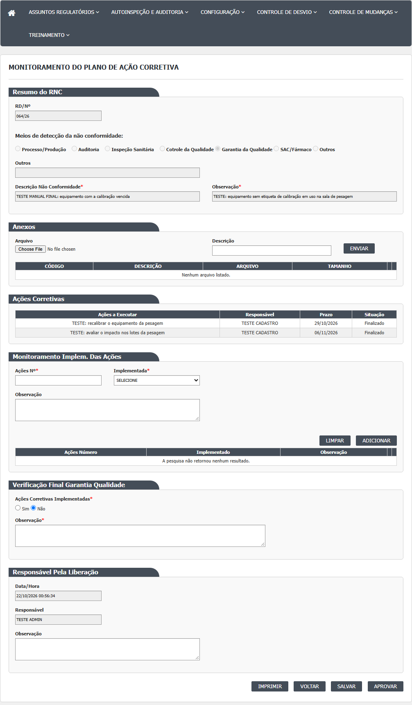
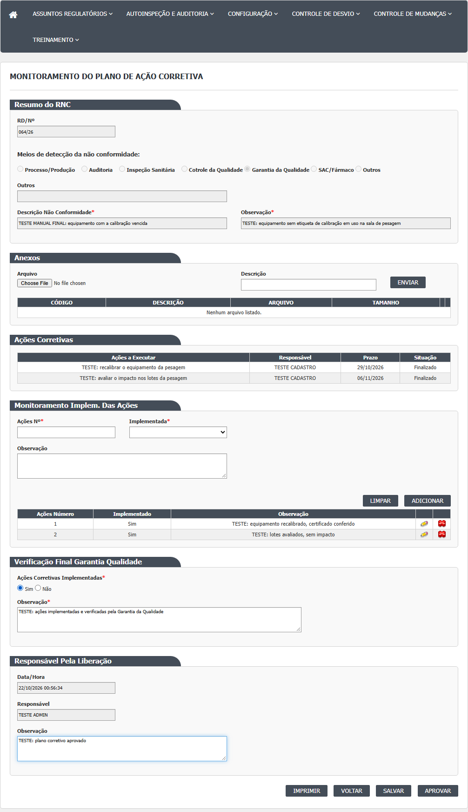
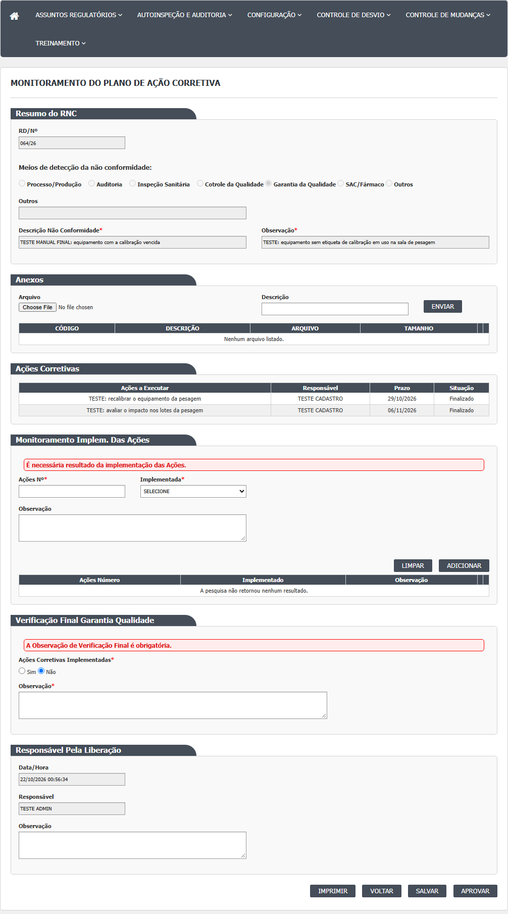
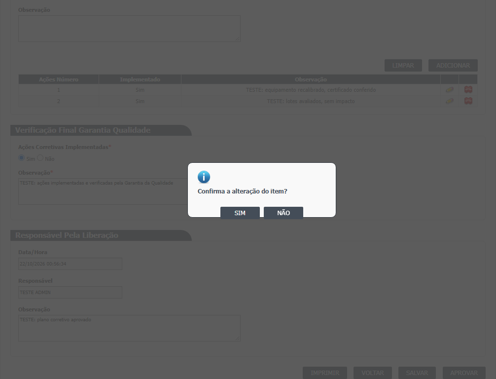
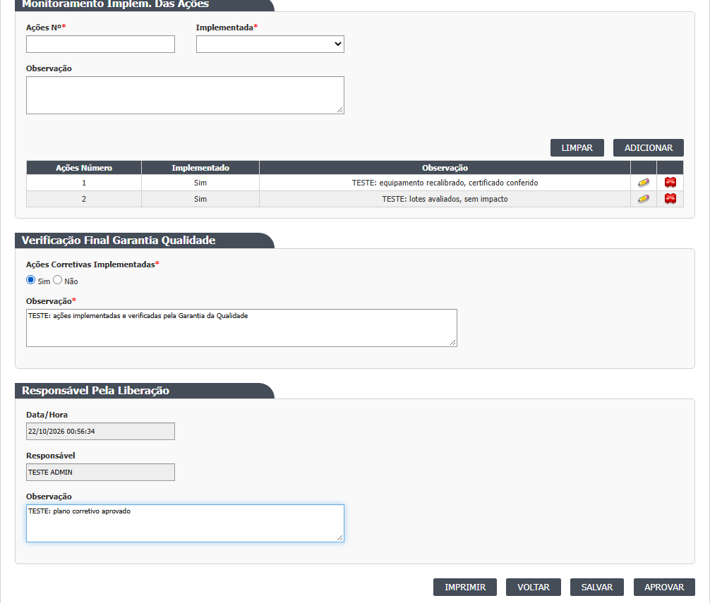
Reprovar
A tela não tem botão Reprovar. Não há, pela tela, como reprovar o plano corretivo (DV-GQ-016). Reconfirmado em 21/10/2026: a tela só tem Aprovar, e Aprovar aceita resultado "Não".
Visualizar
Abre a mesma tela com tudo travado; só Imprimir e Voltar. A lista oferece este ícone para os desvios que não estão mais em Pendente Monitoramento.
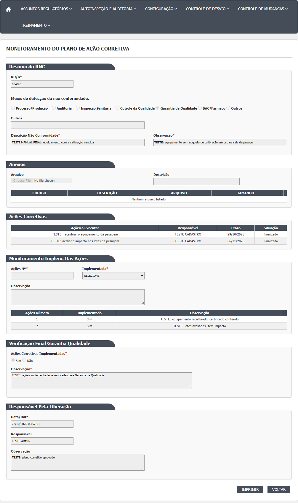
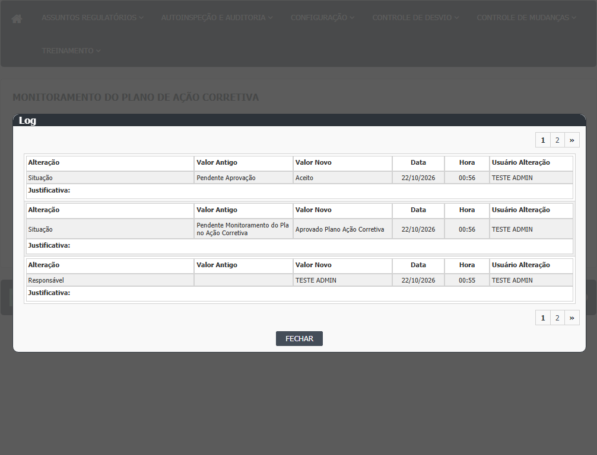
O que os testes de tela mostraram depois
Rodada 2 (22/10/2026)
- Salvar (passo 12): Salvar, SIM, OK sem justificativa mostra "A justificativa é obrigatória!"; com justificativa, "Alteração efetuada com sucesso."; a situação do desvio continua Pendente Monitoramento (CT-GQ-N09-06, desvio 042/26).
- Clique uma vez só em Salvar. Com um resultado novo na grade, Salvar duas vezes seguidas sem recarregar a tela grava o resultado duas vezes; ao recarregar, ele aparece duplicado na grade (CT-GQ-N09-07, DV-GQ-048).
- Depois de recarregar, o resultado já gravado mostra lápis e lixeira. Ao adicionar um segundo resultado, a grade passa a mostrar só o novo; os antigos somem da tela até salvar e reabrir. Os dados não se perdem (CT-GQ-N09-08, DV-GQ-049).
- Aprovar (passo 13), clicando NÃO na confirmação: nada é gravado e a situação não muda (CT-GQ-N09-10, desvio 040/26).
- Aprovar com as duas ações Finalizado, resultados e verificação preenchidos (CT-GQ-N09-09, desvio 066/26): "Alteração efetuada com sucesso."; o desvio vai a Aprovado Plano Ação Corretiva; os campos ficam travados (só Imprimir e Voltar); o desvio aparece na tela Plano de Ação Preventiva. Ao reabrir a tela, o botão "Plano de Ação Preventiva" não aparece (passo 15 vale só como o código previa).
- Aprovar com "Ações Corretivas Implementadas" = Não e resultado "Implementada" = Não: a tela aprova ("Alteração efetuada com sucesso.") e o desvio vai a Aprovado Plano Ação Corretiva (CT-GQ-N09-11, desvio 040/26, DV-GQ-021).
- Aprovar com tudo vazio (desvio 040/26): a tela recusa com "Confirma a alteração do item?", depois "É necessária resultado da implementação das Ações." e "A Observação de Verificação Final é obrigatória."; o desvio continua em Pendente Monitoramento. A tela 12 (Monitoramento do Plano de Ação Preventiva), com a mesma regra no código, finalizou o desvio vazio (DV-GQ-022).
Rodada 3 (22/10/2026)
Visto nos testes (desvios 041/26, 078/26, 079/26 e 080/26).
- Filtro Situação: "Pendente" traz só os pendentes, mas "Aprovado" traz a lista inteira, inclusive os pendentes (DV-GQ-060). "Reprovado" não trouxe nenhum desvio.
- Filtros de data: só a Data Início filtra; só a Data Fim filtra sem incluir o próprio dia; Início e Fim no mesmo dia dão lista vazia (DV-GQ-067). RD/Nº acha "041" e não acha "041/26" (DV-GQ-026).
- Adicionar resultado sem escolher Sim ou Não na caixa "Implementada": o sistema não avisa e grava a linha como "Não" (DV-GQ-075).
- Salvar parcial com justificativa: ao reabrir, a Justificativa vem vazia; depois de Aprovar, o histórico mostra a coluna Justificativa vazia em todas as linhas (DV-GQ-045).
- O bloco "Responsável Pela Liberação" mostra o responsável do desvio, e não quem está liberando (DV-GQ-076).
- O botão Aprovar só aparece depois que a última ação pendente é finalizada na Execução; antes disso só há Salvar.
- Anexos: sem nada, sem descrição e completo dão as mesmas três mensagens das outras telas. Ao reabrir depois de Salvar, o anexo e o resultado estão lá. Anexos enviados na Execução do plano não aparecem aqui (DV-GQ-074).
Rodada 4 (22/10/2026)
Visto nos testes (desvios 066/26 e 084/26).
- Visualizar de desvio aprovado (CT-GQ-N09-17, desvio 066/26): a tela abre toda travada, só com Imprimir e Voltar.
- Texto longo (CT-GQ-N09-25, desvio 084/26): a verificação final e o resultado, com 5 000 caracteres, aspas, sinais de menor e maior e "e" comercial, salvam e voltam iguais na tela. O PDF do desvio ainda não aprovado sai sem os resultados.
- Imprimir, pela lista e pela tela, em desvio aprovado (CT-GQ-N09-17 e N09-26, desvio 066/26): o PDF mostra o plano, os resultados e a verificação final, mas com uma mensagem de erro do relatório no lugar da avaliação (DV-GQ-086).
Campos da tela
| Campo na tela | Tipo | Obrigatório | Regra, limite ou valores possíveis |
|---|---|---|---|
| Quadro Pesquisa: RD/Nº | Texto, sem máscara | Não | Procura o texto no número sequencial do desvio (contém); o sequencial não tem o ano, então "005/26" não acha. Confirmado em 21/10/2026: o número puro acha, o número com o ano não (CT-GQ-F05 e CT-GQ-F06, DV-GQ-026) |
| Quadro Pesquisa: Descrição | Texto | Não | Descrição do desvio contém o texto |
| Quadro Pesquisa: Data Início | Texto com calendário, máscara 99/99/9999 | Não | Desvios abertos a partir desta data, sem limite superior se não houver Data Fim. Rodada 1 (21/10/2026): só com a Data Início de hoje a lista trouxe 9 linhas (CT-GQ-F08) |
| Quadro Pesquisa: Data Fim (até) | Texto com calendário, máscara 99/99/9999 | Não | Desvios abertos até esta data às 00:00; os abertos no próprio dia, depois da meia-noite, ficam de fora. Confirmado em 21/10/2026: com início e fim no mesmo dia a lista vem vazia (0 linhas), e só com a Data Fim também vem vazia (CT-GQ-F08, DV-GQ-027). Data inválida (31/02/2026) é ignorada em silêncio (CT-GQ-F09) |
| Quadro Pesquisa: Situação | Lista | Não | TODAS; Pendente Monitoramento do Plano Ação Corretiva (19); Reprovado Plano Ação Corretiva (22); Aprovado Plano Ação Corretiva (21). A opção Aprovado não acrescenta nenhum filtro. Confirmado em 21/10/2026: "Aprovado Plano Ação Corretiva" devolveu 10 linhas misturadas com pendentes; "Reprovado" devolveu 0 (CT-GQ-F11, DV-GQ-028) |
| Grade de resultados | Tabela paginada | Não | Colunas RD/Nº, Descrição, Data Abertura, Situação (e Id, oculta). Ícones: Editar, Histórico, Visualizar, Imprimir |
| hfId | Oculto | Sim | Número interno do desvio |
| RD/Nº, Meios de detecção, Outros, Descrição Não Conformidade, Observação (Resumo do RNC) | Texto e 7 botões de opção, travados | Não se aplica | Resumo do desvio ("Cotrole da Qualidade" tem erro de digitação) |
| Arquivo (anexo) | Arquivo | Sim (servidor), para enviar | Sem lista de tipos e sem limite de tamanho |
| Descrição (anexo) | Texto | Sim (servidor), para enviar | "A descrição não foi informada." se vazio |
| Grade de anexos | Tabela | Não | CÓDIGO, DESCRIÇÃO, ARQUIVO, TAMANHO; Excluir e Abrir. Vazia: "Nenhum arquivo listado." |
| Grade Ações Corretivas | Tabela, só leitura | Não se aplica | Colunas Ações a Executar, Responsável, Prazo, Situação (Pendente ou Finalizado); as colunas de lápis e lixeira são removidas pelo script. Só mostra ações fora da lixeira |
| AcaoResultado-Id | Oculto | Não se aplica | Número do resultado em edição (só para resultados novos da tela) |
| Ações Nº | Texto de uma linha | Sim (tela e servidor) | Texto livre, sem ligação com as ações do plano. "Ação Nº é obrigatória." na tela; no servidor, "O Ações Nº na Implementação é obrigatório.". Confirmado em 21/10/2026: Ação Nº 99, que não existe, foi aceita e o plano foi aprovado (CT-GQ-N09-05, DV-GQ-021) |
| Implementada | Lista: SELECIONE, Sim, Não | Marcado com asterisco; não conferido | "SELECIONE" não tem valor; sem escolha, a linha aparece como "Não" e é gravada como Não (Inferência, A confirmar no teste). Rodada 1: um resultado com "Implementada = Não" foi aprovado (RD 052/26, passo P9.3) |
| Observação (do resultado) | Texto longo (4 linhas) | Sim (tela e servidor), mesmo sem asterisco | "Observação é obrigatória." na tela; no servidor, a mensagem é "Responsável na Ação Corretiva é obrigatório." (texto errado). Na rodada 1, na tela apareceu "Observação é obrigatória." (CT-GQ-N09-03); o texto do servidor não apareceu |
| Grade Monitoramento (resultados) | Tabela | Pelo menos uma linha para aprovar (confirmado em 21/10/2026, CT-GQ-N09-02) | Colunas Ações Número, Implementado, Observação; lápis e lixeira |
| Ações Corretivas Implementadas | Dois botões de opção, Sim e Não | Marcado com asterisco; não conferido | Sem escolha explícita, vale Não (valor padrão falso). O servidor não confere |
| Observação (Verificação Final) | Texto longo (4 linhas) | Sim (servidor) | "A Observação de Verificação Final é obrigatória." Visto em 21/10/2026 (CT-GQ-N09-01) |
| Data/Hora (Responsável Pela Liberação) | Texto, travado | Não se aplica | Hora de abertura da tela; não é gravada |
| Responsável (Responsável Pela Liberação) | Texto, travado | Não se aplica | Mostra o nome do responsável do desvio (Model.Responsavel), e não de quem aprova (A confirmar no teste) |
| Observação (Responsável Pela Liberação) | Texto longo (4 linhas) | Não | Observação geral da liberação |
| Justificativa (janela do Salvar) | Texto, em janela | Sim (tela), só no Salvar parcial | "A justificativa é obrigatória!" se vazia; o servidor não confere |
Rodada 2 (22/10/2026)
- Grade Monitoramento (resultados): o resultado já gravado mostra lápis e lixeira depois de recarregar; ao adicionar outro, a grade mostra só o novo até salvar e reabrir (CT-GQ-N09-08, DV-GQ-049). Resultados duplicados quando Salvar é clicado duas vezes (CT-GQ-N09-07, DV-GQ-048).
- Ações Corretivas Implementadas: marcar Não não impediu a aprovação (CT-GQ-N09-11, DV-GQ-021). Isto isola a caixa da verificação final, que a rodada 1 não tinha isolado.
- Responsável Pela Liberação: o campo não foi examinado na rodada 2 (RN-GQ-D09-012 continua "A confirmar no teste").
Rodada 3 (22/10/2026)
- Situação (filtro da lista): "Aprovado" devolve todos os desvios (14 na massa: os 6 pendentes e os aprovados) (CT-GQ-N09-13, DV-GQ-060).
- Data Início e Data Fim: ver Manual do usuário (CT-GQ-N09-14, DV-GQ-067).
- Implementada (Sim ou Não) do resultado: sem escolha, grava "Não" (CT-GQ-N09-04, DV-GQ-075).
- Justificativa: não volta ao reabrir depois do Salvar parcial e fica vazia no histórico (CT-GQ-N09-12, DV-GQ-045).
- Responsável (bloco Responsável Pela Liberação): mostra o responsável do desvio (no 041/26, o mesmo nome da tela 1); no 078/26 os dois coincidem (CT-GQ-N09-16, DV-GQ-076).
Rodada 4 (22/10/2026)
- Observação da verificação final e do resultado: aceitam 5 000 caracteres com aspas, menor, maior e "e" comercial e voltam iguais na tela (CT-GQ-N09-25).
Botões e ações
| Botão ou ação | Quando aparece | O que faz | Para onde leva o desvio |
|---|---|---|---|
| Pesquisar | Sempre, na lista | Lista desvios em Pendente Monitoramento, Aprovado e Reprovado do plano corretivo | Não muda |
| Limpar | Sempre, na lista | Esvazia filtros e lista | Não muda |
| Editar (lápis na linha) | Só com o desvio em Pendente Monitoramento | Abre o monitoramento com Salvar e (às vezes) Aprovar | Não muda |
| Visualizar (na linha) | Com o desvio em qualquer outra situação (Aprovado ou Reprovado) | Abre a tela travada | Não muda |
| Histórico (na linha) | Em toda linha | Abre o histórico do desvio | Não muda |
| Imprimir (na linha e na tela) | Em toda linha; na tela, sempre | Gera o relatório de CAPA com o plano corretivo | Não muda |
| Enviar, Excluir e Abrir anexo | Na tela aberta para edição (Abrir também em Visualizar) | Igual às outras telas do plano: anexo vale ao Salvar ou Aprovar | Não muda |
| Limpar (resultado) | Bloco Monitoramento Implem. Das Ações | Esvazia os campos do resultado | Não muda |
| Adicionar (resultado) | Bloco Monitoramento Implem. Das Ações | Confere Ação Nº e Observação e põe o resultado na grade (na memória da tela, ainda não gravado) | Não muda |
| Lápis e lixeira do resultado | Na grade de resultados, na tela aberta para edição | Alteram ou removem só os resultados adicionados nesta abertura da tela; os já gravados não respondem (A confirmar no teste) | Não muda |
| Salvar (parcial) | Em Pendente Monitoramento; some quando o plano já foi aprovado ou reprovado e existe liberação | Pergunta "Confirma a alteração do item?", pede a justificativa e grava verificação, resultados e anexos sem mudar a situação | Não muda |
| Aprovar | Em Pendente Monitoramento e só se nenhuma ação ativa do plano estiver Pendente | Pergunta "Confirma a alteração do item?" e, se SIM, valida e aprova o plano, sem justificativa | Aprovado Plano Ação Corretiva (confirmado em 21/10/2026, CT-GQ-N09-05) |
| Reprovar | Não existe botão. O script tem o caminho (pede justificativa), mas nada o chama | Se chamado, o servidor trata qualquer valor diferente de "a" como reprovação | Reprovado Plano Ação Corretiva, sem saída (reconfirmado em 21/10/2026: não há botão Reprovar, DV-GQ-016) |
| Plano de Ação Preventiva | Fica escondido; aparece depois de salvar com sucesso (Aprovar) | Abre o plano de ação preventiva do mesmo desvio | Não muda |
| Voltar | Sempre | Volta para a lista, sem gravar | Não muda |
| SIM, NÃO e OK | SIM e NÃO na confirmação; OK na janela de justificativa | SIM segue, NÃO cancela; OK exige justificativa preenchida | Não muda com NÃO |
Rodada 2 (22/10/2026)
- Salvar: exige justificativa na janela e grava sem mudar a situação (CT-GQ-N09-06). Duas gravações seguidas duplicam o resultado (DV-GQ-048).
- Aprovar: com NÃO na confirmação nada é gravado (CT-GQ-N09-10). Com SIM, aprova inclusive com "Ações Corretivas Implementadas" = Não (CT-GQ-N09-11, DV-GQ-021).
- Lápis e lixeira do resultado: aparecem nos resultados já gravados depois de recarregar a tela (CT-GQ-N09-08). Se respondem ao clique não foi registrado.
- Plano de Ação Preventiva: depois de aprovar e reabrir a tela, o botão não aparece (CT-GQ-N09-09); o desvio aparece na tela Plano de Ação Preventiva.
- Reprovar: continua sem botão (DV-GQ-016, reconfirmado).
Rodada 3 (22/10/2026)
- Aprovar: aparece só quando todas as ações do plano estão Finalizado (CT-GQ-N09-20, desvio 079/26: com uma ação pendente só há Salvar; depois de finalizar a segunda na Execução, aparece Aprovar).
- Adicionar (resultado): sem escolher Sim ou Não, adiciona a linha com "Não" e sem mensagem (CT-GQ-N09-04).
- Enviar (anexo): três mensagens conforme o que falta (ver Mensagens do sistema) (CT-GQ-N09-18).
Rodada 4 (22/10/2026)
- Visualizar (desvio aprovado): tela toda travada, só Imprimir e Voltar (CT-GQ-N09-17).
- Imprimir (lista e tela): PDF com os resultados e a verificação final, com uma mensagem de erro do relatório no lugar da avaliação (CT-GQ-N09-17 e N09-26, DV-GQ-086). Antes da aprovação, o PDF sai sem os resultados (CT-GQ-N09-25).
Mensagens do sistema
| Mensagem (texto exato do código) | Quando aparece |
|---|---|
| Confirma a alteração do item? | Ao clicar em Salvar ou em Aprovar (a versão "Confirma a inclusão do item?" só valeria com número de desvio igual a zero) |
| Informe a justificativa | Título da janela aberta pelo Salvar parcial |
| A justificativa é obrigatória! | OK sem escrever a justificativa |
| Alteração efetuada com sucesso. | Salvar ou Aprovar gravado |
| A Observação de Verificação Final é obrigatória. | Verificação final sem observação (faixa do bloco Verificação Final) |
| É necessária resultado da implementação das Ações. | Nenhum resultado de ação na grade (faixa do bloco Monitoramento) |
| O Ações Nº na Implementação é obrigatório. | Resultado gravado sem Ação Nº |
| Responsável na Ação Corretiva é obrigatório. | Resultado sem Observação (texto errado: o campo é a observação do resultado) |
| Entidade de domínio não pode ser nula. | Falha interna |
| Ação Nº é obrigatória. | Adicionar resultado sem Ação Nº |
| Observação é obrigatória. | Adicionar resultado sem Observação |
| Ocorreu um erro inesperado. | Falha ao abrir ou gravar (por exemplo, desvio sem plano) |
| Ocorreu um erro interno não esperado. | Falha de comunicação |
| Arquivo enviado com sucesso. | Anexo enviado |
| Nenhuma informação foi enviada. | Anexo sem arquivo na requisição |
| O arquivo não foi informado. | Anexo sem arquivo |
| A descrição não foi informada. | Anexo sem descrição |
| Nenhum arquivo listado. | Grade de anexos vazia |
| Anexo não encontrado. | Excluir anexo que não está na sessão |
| Chave do anexo inválido. | Abrir anexo sem chave |
| Arquivo não encontrado. | Abrir anexo cujo arquivo não está no disco do servidor |
| A pesquisa não retornou nenhum resultado. | Lista, grade de ações ou de resultados vazia |
| Não foi possível obter as solicitações mudanças | Falha ao pesquisar (texto de outra tela, "mudanças") |
| Não foi possível imprimir o RNC | Falha ao imprimir |
Visto na rodada 1 (21/10/2026), com o mesmo texto do código:
- "A Observação de Verificação Final é obrigatória." (CT-GQ-N09-01).
- "É necessária resultado da implementação das Ações." (CT-GQ-N09-02).
- Ao Adicionar resultado: "Ação Nº é obrigatória." e "Observação é obrigatória.", juntas ou separadas (CT-GQ-N09-03).
- "Alteração efetuada com sucesso." ao aprovar, inclusive nos casos em que a tela deveria recusar (Ação Nº inexistente, plano sem ação) (CT-GQ-N09-05, DV-GQ-021).
- Não vistas nesta rodada: a janela de justificativa do Salvar, as mensagens de anexo, de erro interno e de impressão.
Rodada 2 (22/10/2026)
Vistas na rodada 2, com o mesmo texto do código:
- "A justificativa é obrigatória!" no OK da janela do Salvar sem justificativa (CT-GQ-N09-06). Esta mensagem não tinha sido vista na rodada 1.
- "Confirma a alteração do item?", "É necessária resultado da implementação das Ações." e "A Observação de Verificação Final é obrigatória." ao aprovar com tudo vazio (desvio 040/26).
- "Alteração efetuada com sucesso." ao salvar (CT-GQ-N09-06) e ao aprovar, inclusive com "Ações Corretivas Implementadas" = Não (CT-GQ-N09-09 e N09-11).
Rodada 3 (22/10/2026)
Vistas na rodada 3, com o texto exato da tela (CT-GQ-N09-18):
- Anexo sem nada: "Nenhuma informação foi enviada. O arquivo não foi informado. A descrição não foi informada."
- Anexo sem descrição: "A descrição não foi informada."
- Anexo completo: "Arquivo enviado com sucesso."
- Salvar parcial com resultado e verificação final preenchidos: "Alteração efetuada com sucesso."
- Sem a verificação final: "A Observação de Verificação Final é obrigatória."
- Não há mensagem quando o resultado é adicionado sem Sim ou Não (CT-GQ-N09-04).
Rodada 4 (22/10/2026)
Vistas na rodada 4, com o texto exato da tela:
- "Alteração efetuada com sucesso." ao salvar a verificação final e o resultado de 5 000 caracteres com caracteres especiais (CT-GQ-N09-25).
- No PDF, no lugar do bloco da avaliação, aparece uma mensagem de erro do relatório. Ela vem do relatório, não é um texto da tela (CT-GQ-N09-17 e N09-26, DV-GQ-086).
Avisos e limitações desta tela
O que a tela faz diferente do esperado, como a equipe de homologação registrou. O número DV-GQ-nnn remete ao documento de defeitos para correção.
O que a tela faz diferente do esperado
- Não existe botão Reprovar (DV-GQ-016). O estado Reprovado Plano Ação Corretiva existe no código mas não é alcançável pela tela, e dele nenhuma tela leva o desvio adiante. Pela norma, plano corretivo que não resolve deve voltar para ser refeito (RDC 658/2022, arts. 8º e 341).
- A conferência de que todas as ações estão finalizadas é só visual: o botão Aprovar some, mas o servidor aprova com ação pendente (DV-GQ-002, confirmado em 12/10/2026).
- O resultado por ação não está ligado às ações do plano: "Ações Nº" é texto livre e basta um resultado para aprovar. Uma ação pode ficar sem resultado, ou ter resultado de uma ação que não existe.
- "Ações Corretivas Implementadas = Não" não impede a aprovação (RN-GQ-D09-007). Inferência: um plano pode ser aprovado com a própria verificação dizendo que as ações não foram implementadas. Mesmo padrão do plano preventivo (DV-GQ-012). A confirmar no teste.
- Não há verificação de eficácia da CAPA depois de um prazo (RN-GQ-052; RDC 658/2022, art. 341).
- Quem escreve o plano pode aprová-lo, sem assinatura eletrônica (ver o registro interno dos testes). Não há campo gravando quem aprovou: IdResponsavel da liberação nunca é preenchido (RN-GQ-D09-011).
- Aprovar apaga a justificativa que o Salvar parcial tinha gravado (RN-GQ-D09-005). Inferência, a confirmar no teste.
- O Salvar parcial pode duplicar os resultados, e os resultados já gravados não podem ser alterados nem excluídos e somem da grade quando um novo é adicionado (RN-GQ-D09-008 e 009). Inferência pelo script; a confirmar no teste (os resultados escritos das rodadas 1 e 3 não registram esse detalhe).
- O campo Responsável de "Responsável Pela Liberação" mostra o responsável do desvio, enquanto a view não usada mostraria o responsável da liberação. A confirmar no teste.
- "Implementada" está com asterisco mas não é conferido (sem escolha, vira Não); "Observação" do resultado está sem asterisco e é obrigatória; a mensagem do servidor para a observação do resultado diz "Responsável na Ação Corretiva".
- O filtro Situação "Aprovado Plano Ação Corretiva" não filtra (RN-GQ-D09-013), e o filtro de datas deixa de fora o último dia (RN-GQ-D09-014). A confirmar no teste.
- A Aprovação mostra a mensagem genérica "Alteração efetuada com sucesso." (e não "plano aprovado") e, ao contrário do plano preventivo, não pede segunda confirmação de que a alteração não poderá ser desfeita (a segunda confirmação do preventivo foi vista na rodada 3). A confirmar no teste.
- é uma tela duplicada que não é usada. é vazio. O título "Monitoramento Implem. Das Ações" é abreviado na tela de edição.
- A tela abre pelo endereço, em qualquer situação, para quem pode abrir (detalhe nos registros internos dos testes).
Defeitos já confirmados em teste, ligados a esta tela
- DV-GQ-002 (Alta, rodada 1, 12/10/2026, CT-GQ-021): o botão Aprovar não aparece com ação Pendente; enviando a mesma operação sem o botão, o plano foi aprovado com a ação Pendente..
- DV-GQ-016 (Alta, rodada 3, 16/10/2026, CT-GQ-022): só existe Aprovar; o plano corretivo nunca pode ser reprovado pela tela. Evidência:.
Defeitos novos confirmados nas rodadas de teste
- DV-GQ-021 (Alta, novo): o Aprovar aceita o que deveria recusar. Resultado com Ação Nº 99 (que não existe) e Aprovar: "Alteração efetuada com sucesso." e o desvio foi a Aprovado Plano Ação Corretiva (CT-GQ-N09-05, RD 055/26). O mesmo aconteceu com um resultado "Implementada = Não" (RD 052/26) e com um plano sem nenhuma ação (RD 053/26).
- DV-GQ-016 (Alta, já registrado, reconfirmado): não existe Reprovar; Aprovar aceita "Não" (passo P9.3).
- DV-GQ-026 (Média, novo): o filtro RD/Nº não acha com o número e o ano (CT-GQ-F06).
- DV-GQ-027 (Média, novo): filtro de datas. Nesta tela, início e fim no mesmo dia e só Data Fim devolvem lista vazia; data inválida é ignorada em silêncio (CT-GQ-F08 e F09).
- DV-GQ-028 (Média, novo): filtro de situação. "Aprovado Plano Ação Corretiva" devolve também os pendentes (10 linhas misturadas) (CT-GQ-F11).
- DV-GQ-036 (Alta, novo, janela Histórico): o histórico do desvio não traz o conteúdo dos resultados lançados aqui (só situação, responsável e alguns campos).
- DV-GQ-048 (Média): Salvar duas vezes seguidas, sem recarregar, com um resultado novo, deixa o resultado duplicado (CT-GQ-N09-07, desvio 042/26).
- DV-GQ-049 (Média): com resultados já salvos, adicionar um novo faz a grade mostrar só o novo até salvar e reabrir; os dados não se perdem (CT-GQ-N09-08).
- DV-GQ-002 (Alta): resultado de 12/10 mantido, não repetido (CT-GQ-021).
- DV-GQ-023 (Alta, estendido à tela 9): o plano é aprovado sem segunda pessoa e sem assinatura eletrônica (CT-GQ-N09-19).
- DV-GQ-060 (Média, telas 4 e 9): o filtro Situação "Aprovado" devolve a lista inteira (CT-GQ-N09-13). É o mesmo comportamento já visto na rodada 1 (DV-GQ-028).
- DV-GQ-067 (Média, telas 7, 8 e 9): na Data Fim o próprio dia não entra; só Início 22/10 deu 5 linhas (só as de 22/10), só Fim 21/10 deu 1 (só o de 13/10), Início e Fim 22/10 deu 0 (CT-GQ-N09-14).
- DV-GQ-075 (Média): resultado adicionado sem Sim ou Não é gravado como "Não" (CT-GQ-N09-04).
- DV-GQ-076 (Média): o bloco Responsável Pela Liberação mostra o responsável do desvio (CT-GQ-N09-16). Confirma RN-GQ-D09-012.
- DV-GQ-086 (Alta, telas 7 a 12): o Relatório de CAPA impresso traz uma mensagem de erro do relatório no lugar da avaliação. Aqui o PDF do desvio aprovado (066/26) traz os resultados e a verificação final, e só o bloco da avaliação falha (CT-GQ-N09-17 e N09-26).
Plano de Ação Preventiva
Onde fica
Controle de Desvios › Plano de Ação Preventiva.
Para que serve
Depois que o plano de ação corretiva foi aprovado, a Garantia da Qualidade (GQ) escreve aqui o plano de ação preventiva do desvio, isto é, o que será feito para o problema não voltar a acontecer. A tela pede um título e uma descrição do plano e uma lista de ações, cada uma com responsável e prazo. Também aceita anexos e uma observação.
Quem usa
A equipe da GQ responsável pela CAPA (ações corretivas e preventivas). Os responsáveis por cada ação só aparecem aqui como nomes escolhidos numa lista; quem executa a ação usa a tela seguinte (Execução Plano de Ação Preventiva).
Em que situação chega aqui
Aprovado Plano Ação Corretiva. É a única situação listada.
Para onde vai ao salvar
Pendente Monitoramento do Plano Ação Preventiva. Não há aprovação do plano antes da execução (ponto de atenção 7 do fluxo Desvios e CAPA).
Arquivos do código (caminhos relativos a 5.garantia_qualidade/app/): - Controlador: - Views: (lista), (tela do plano) e (modelo vazio, sem uso) - Trecho comum "Resumo do RNC": - Scripts: e
Passo a passo
Lista (Index)
- No menu, abra Controle de Desvios › Plano de Ação Preventiva. A tela abre com o bloco Pesquisa e a lista vazia: a lista só carrega ao clicar em Pesquisar.
- Se quiser, preencha RD/Nº (número do desvio), Descrição (parte do texto), Data Início e até (datas no formato dd/mm/aaaa, com calendário) e Situação (TODAS ou Aprovado Plano Ação Corretiva).
- Clique em Pesquisar. A lista mostra, por desvio, o RD/Nº, a Descrição, a Data Abertura e a Situação, e ao lado três ícones: Editar (lápis), Log (histórico das alterações) e Imprimir.
- Limpar apaga os filtros. Não há botão Incluir: o plano nasce do desvio, não é cadastrado do zero.
- Se nada for encontrado, a lista mostra "A pesquisa não retornou nenhum resultado."
Observado na rodada 1 (21/10/2026), para quem usa a lista:
- Digite em RD/Nº só o número do desvio, sem o ano. Com o ano (por exemplo 056/26) a lista volta vazia, com "A pesquisa não retornou nenhum resultado." (DV-GQ-026).
- Datas: com a Data Início de hoje a lista trouxe 5 desvios; com Data Início e até iguais a hoje, voltou vazia; só com a data "até", também voltou vazia (DV-GQ-027). Uma data impossível, como 31/02/2026, é ignorada sem aviso e a lista sai completa.
- Situação: com Aprovado Plano Ação Corretiva a lista trouxe 1 de 6 linhas (DV-GQ-028).
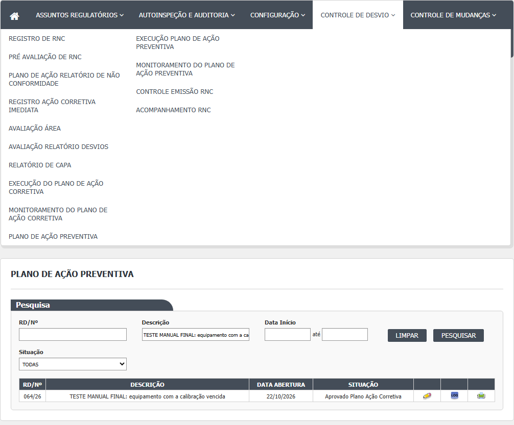
Tela do plano (Editar)
- Clique no lápis do desvio. Abre a tela com cinco blocos, de cima para baixo: Resumo do RNC, Anexos, Inclusão Plano de Ação, Ações Preventivas e Responsável Pelo Plano De Ação. O primeiro bloco é só leitura e repete o que foi registrado no desvio (número, meio de detecção, descrição e observação).
- Anexos (opcional): clique em escolher arquivo, escreva a Descrição e clique em Enviar. Aparece "Arquivo enviado com sucesso." e o arquivo entra na lista (CÓDIGO, DESCRIÇÃO, ARQUIVO, TAMANHO). A lixeira tira o anexo da lista e o clipe abre o arquivo.
- Inclusão Plano de Ação: preencha Ação Preventiva (o título) e Descrição Ação Preventiva. Os dois são obrigatórios.
- Ações Preventivas: para cada ação, preencha Plano de Ação (o que fazer), escolha o Responsável na lista (todos os usuários do sistema) e informe o Prazo (dd/mm/aaaa), depois clique em Adicionar. A ação entra na tabela (Ações a Executar, Responsável, Prazo, Situação). Limpar esvazia os três campos. A lixeira da linha remove a ação da tabela antes de salvar. É preciso ao menos uma ação.
- Responsável Pelo Plano De Ação: Data/Hora e Responsável vêm preenchidos e travados (hora em que a tela foi aberta e nome de quem está conectado). Observação é opcional.
- Clique em Salvar. O sistema pergunta "Confirma a alteração do item?". Em SIM, grava. Aparece "Alteração efetuada com sucesso.", todos os campos ficam travados, o botão Salvar some e ficam Imprimir e Voltar.
- Se faltar algo, nenhuma gravação é feita e uma faixa vermelha aparece no bloco com o problema (ver Mensagens do sistema). A tela rola até a primeira faixa.
- Voltar leva à lista. Depois de salvo, o desvio sai da lista (a lista só mostra Aprovado Plano Ação Corretiva) e segue para a Execução.
- Imprimir (na lista ou na tela) abre numa nova janela o PDF "RELATÓRIO DE CAPA" do desvio, que reúne as etapas já feitas, inclusive este plano.
Observado na rodada 1 (21/10/2026), na tela do plano:
- Salvar sem preencher nada mostrou as cinco mensagens de obrigatoriedade (CT-GQ-N10-05). Adicionar uma ação vazia mostrou "Descrição é obrigatória. Responsável é obrigatório. Data Prazo é obrigatória."; só com a descrição, faltaram responsável e prazo; com descrição e responsável, faltou o prazo (CT-GQ-N10-06).
- A caixa de responsável da ação lista os usuários do sistema, sem filtro por área, e a ação escolhida apareceu na tela Execução Plano de Ação Preventiva do responsável, de outra área (CT-GQ-N10-10).
- Com o plano completo (duas ações), Salvar levou o desvio a Pendente Monitoramento do Plano Ação Preventiva e ele saiu da lista desta tela (CT-GQ-N10-12). O histórico dele só se abre pela tela Relatório de Desvios.
- Editar e depois Voltar, sem salvar, levou de volta à lista (CT-GQ-N10-13).
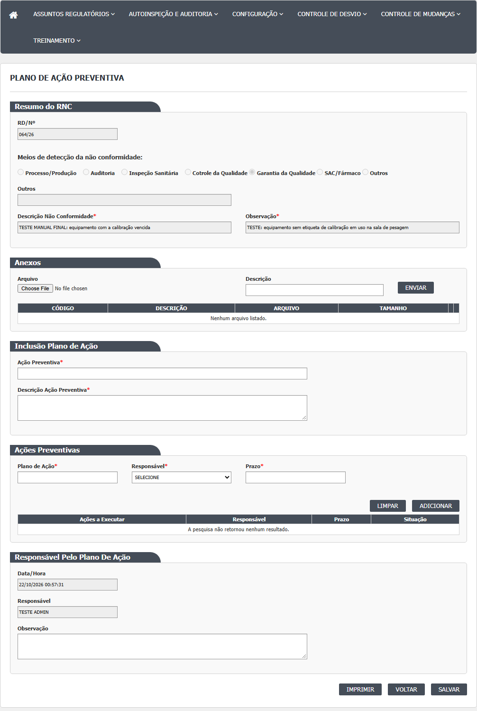
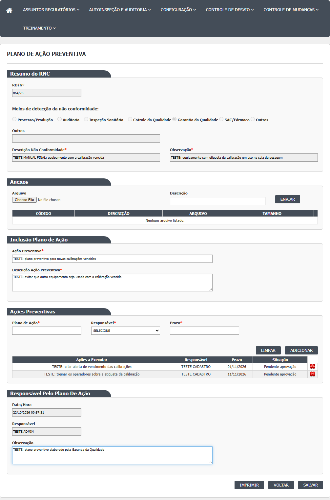
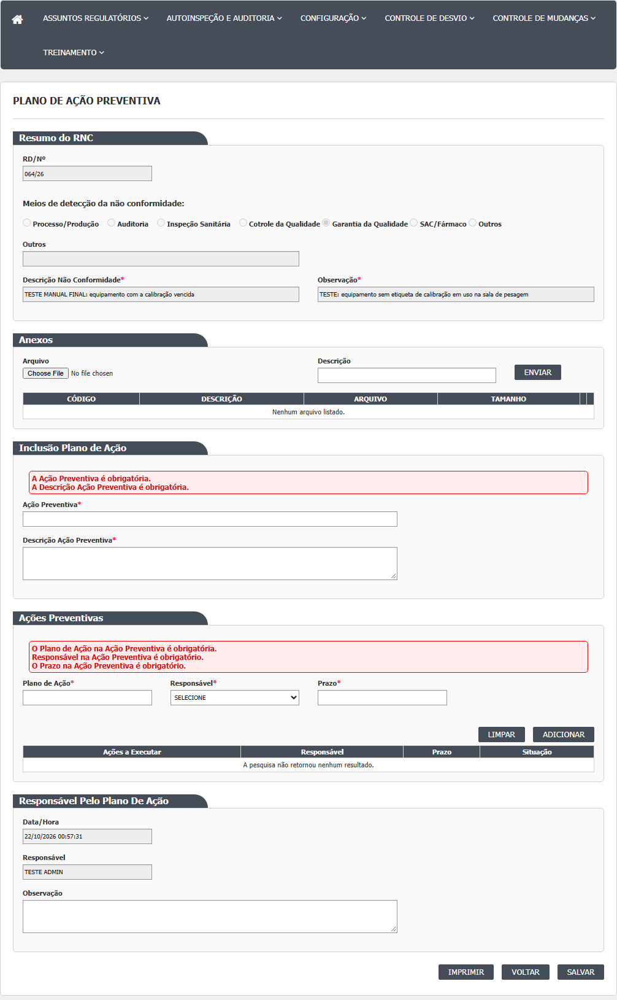
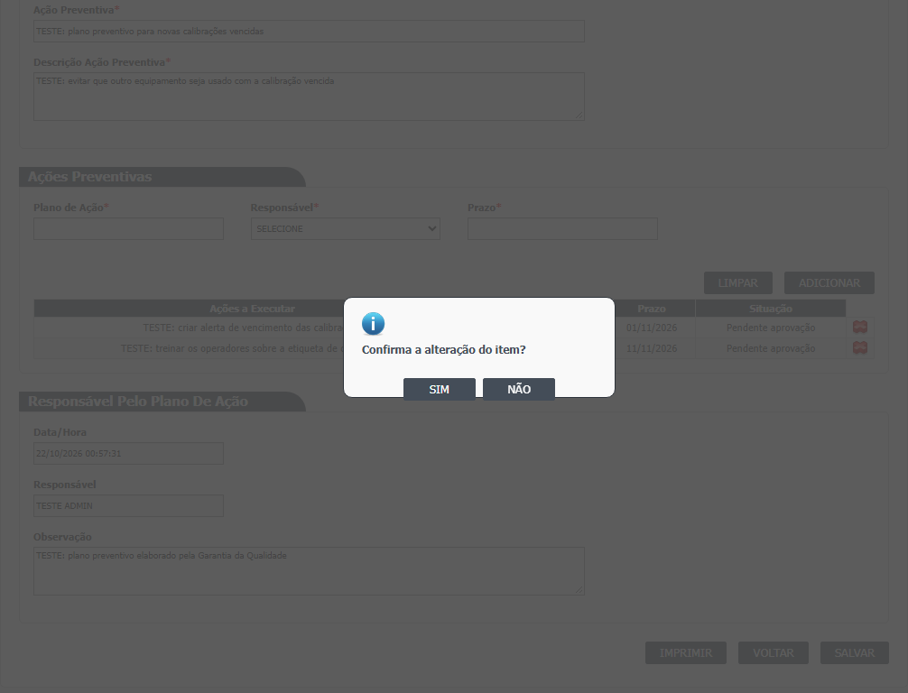
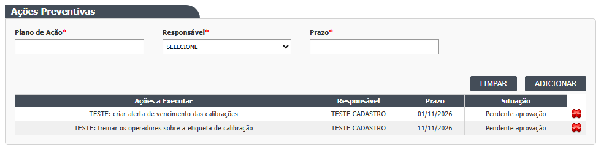
Telas internas que existem no código
- Incluir: existe só o arquivo, um modelo vazio com o título "Incluir". Nenhum controlador o chama e nenhum botão leva a ele.
- Visualizar: existe a ação, que abre a mesma tela travada, com só Imprimir e Voltar. A lista não tem o ícone, então só abre digitando o endereço.
- Cancelar: o script tem uma função Cancelar, mas a tela não tem o botão e o endereço de cancelamento não existe. Não se cancela o plano por aqui.
- Edição de uma ação já na tabela: a função existe no script, mas o ícone de editar está comentado. Só é possível excluir a ação e adicionar de novo.
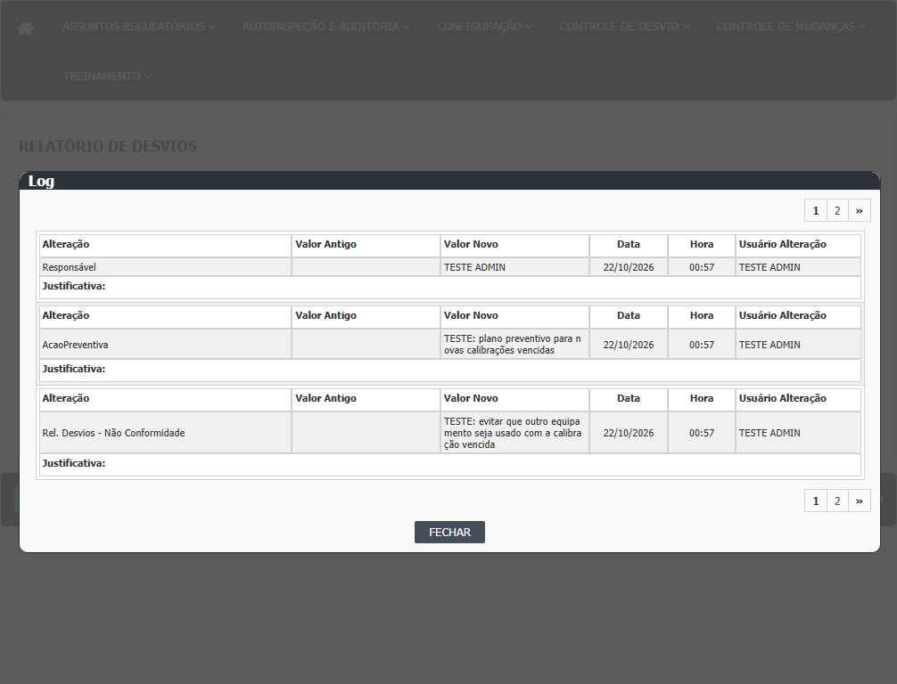
O que os testes de tela mostraram depois
Rodada 2 (22/10/2026)
- Salvar o plano (passo 11), com uma ação, no desvio 043/26 (CT-GQ-023, primeiro passo da cadeia): apareceu "Alteração efetuada com sucesso." e o desvio foi a Pendente Monitoramento do Plano Ação Preventiva (evidências CT-023-plano-preventivo-antes e CT-023-plano-preventivo-apos-salvar).
- O resultado do caso vem do final da cadeia: na tela Monitoramento do Plano de Ação Preventiva não há botão Reprovar e o plano com ação "não implementada" encerra o desvio (DV-GQ-012, reconfirmado).
Rodada 3 (22/10/2026)
Visto nos testes (desvios 044/26, 052/26, 053/26, 055/26 e 080/26).
- A lista, sem filtros, traz só os desvios em Aprovado Plano Ação Corretiva (8 na massa); nenhum de Pendente Plano.
- Atenção ao filtro Situação: com Aprovado Plano Ação Corretiva, a lista traz só os desvios cujo plano preventivo já teve a tela aberta alguma vez (2 de 8); os que nunca foram abertos somem (DV-GQ-077). Abrir o plano e voltar sem salvar cria um plano preventivo vazio no desvio, que depois aparece no relatório de Acompanhamento RD como "Ações Preventivas: Não Iniciadas".
- Busca por RD/Nº: "066" acha, "066/26" não acha (DV-GQ-026).
- Prazo da ação: 31/02/2026 e 00/00/0000 entram na grade, mas ao Salvar dão "Ocorreu um erro inesperado."; 01/01/1900 dá "O Prazo na Ação Preventiva número 1 é obrigatório."; data passada e data futura são aceitas (DV-GQ-068).
- Textos longos: 5 000 caracteres na descrição da ação, na descrição do plano e na observação são aceitos e gravados sem cortar.
- Várias ações: é possível adicionar três ações, excluir a segunda pela lixeira e salvar; o desvio fica com as duas restantes na Execução.
- Responsável não escolhido: "Responsável é obrigatório." e a grade não ganha linha.
- Anexos: sem nada, sem descrição e completo dão as mensagens abaixo; Excluir tira o anexo da grade.
- Salvar e responder NÃO: nada é gravado; a tela continua editável e o desvio segue na lista.
- Depois de salvar (SIM): campos travados, Salvar escondido, Imprimir e Voltar visíveis e o desvio sai da lista. Os botões Enviar, Limpar e Adicionar continuam visíveis, embora a tela esteja travada.
Rodada 4 (22/10/2026)
Visto nos testes (desvios 040/26, 066/26 e 080/26).
- Filtro de datas (CT-GQ-N10-03): Data Início e até iguais a hoje deixam a lista vazia, e o desvio de hoje não aparece. Só com a Data Início de 22/10 aparecem o 066 e o 080 (DV-GQ-067 estendido a esta tela).
- Imprimir (CT-GQ-N10-16, desvio 040/26): o PDF "RELATÓRIO DE CAPA" traz o plano preventivo (título, descrição, ação, responsável, observação) e a data e hora do Salvar, e não a da abertura da tela. No lugar da avaliação sai uma mensagem de erro do relatório (DV-GQ-086).
Campos da tela
Lista (Index)
| Campo na tela | Tipo | Obrigatório | Regra, limite ou valores possíveis |
|---|---|---|---|
| RD/Nº | Texto | Não | Parte do número do desvio, sem o ano. A busca é por "contém" sobre o número gravado, que não inclui o "/26" Rodada 1: com o ano (056/26) não acha; só com o número acha (CT-GQ-F05, CT-GQ-F06; DV-GQ-026). |
| Descrição | Texto | Não | Parte da descrição do desvio ("contém") |
| Data Início | Data | Não | dd/mm/aaaa, máscara e calendário. Filtra a data de criação do desvio (maior ou igual) Rodada 1: com a Data Início de hoje a lista trouxe 5 desvios; data impossível (31/02/2026) é ignorada sem mensagem (CT-GQ-F09; DV-GQ-027). |
| até (Data Fim) | Data | Não | dd/mm/aaaa. Filtra a data de criação menor ou igual, sem somar um dia: desvios criados no dia final depois das 00:00 ficam de fora Rodada 1: Data Início e até iguais a hoje devolveram 0 linhas, e só a data até também devolveu 0 (CT-GQ-F08; DV-GQ-027). |
| Situação | Lista | Não | TODAS (valor 0) ou Aprovado Plano Ação Corretiva. Escolhendo a situação, o filtro também exige que o desvio já tenha um plano preventivo aberto Rodada 1: com Aprovado Plano Ação Corretiva a lista trouxe 1 de 6 linhas (CT-GQ-F11; DV-GQ-028). |
| Coluna RD/Nº | Texto (resultado) | Não se aplica | Número com o ano, por exemplo 006/26; sem ano, aparece o Id com zeros |
| Coluna DESCRIÇÃO | Texto (resultado) | Não se aplica | Descrição do desvio |
| Coluna DATA ABERTURA | Data (resultado) | Não se aplica | dd/MM/aaaa, da data de criação do desvio |
| Coluna SITUAÇÃO | Texto (resultado) | Não se aplica | Situação do desvio (sempre Aprovado Plano Ação Corretiva, pela regra da consulta) |
Tela do plano (Editar)
| Campo na tela | Tipo | Obrigatório | Regra, limite ou valores possíveis |
|---|---|---|---|
| Id do desvio (oculto) | Número | Preenchido pelo sistema | Identifica o desvio aberto |
| RD/Nº (Resumo do RNC) | Texto travado | Não | Número do desvio com o ano |
| Meios de detecção da não conformidade | Opção única travada | Não | Processo/Produção (1), Auditoria (2), Inspeção Sanitária (3), "Cotrole da Qualidade" (4, com erro de grafia na tela), Garantia da Qualidade (5), SAC/Fármaco (6), Outros (99) |
| Outros (Resumo do RNC) | Texto travado | Não | Texto livre do método "Outros" |
| Descrição Não Conformidade | Texto travado | Marcado com asterisco, mas travado | Descrição registrada no desvio |
| Observação (Resumo do RNC) | Texto travado | Marcado com asterisco, mas travado | Observação registrada no desvio |
| Arquivo (Anexos) | Arquivo | Sim, para enviar | Sem lista de tipos nem limite de tamanho. Mensagem "O arquivo não foi informado." sem arquivo |
| Descrição (Anexos) | Texto | Sim, para enviar | Mensagem "A descrição não foi informada." se vazia |
| Lista de anexos | Tabela | Não | Colunas CÓDIGO, DESCRIÇÃO, ARQUIVO, TAMANHO; ícones lixeira e clipe. Vazia: "Nenhum arquivo listado." |
| Ação Preventiva | Texto (caixa de uma linha) | Sim | Título do plano. Sem tamanho máximo na tela; a coluna do banco é NVARCHAR(MAX). Mensagem "A Ação Preventiva é obrigatória." |
| Descrição Ação Preventiva | Texto (4 linhas) | Sim | Descrição do plano. Sem tamanho máximo. Mensagem "A Descrição Ação Preventiva é obrigatória." |
| Plano de Ação (da ação) | Texto | Sim | O que será feito. Sem tamanho máximo |
| Responsável (da ação) | Lista | Sim | Todos os usuários do Principal, com a primeira opção SELECIONE. O nome gravado vem do texto da lista no navegador Rodada 1 (CT-GQ-N10-10): a lista traz os usuários sem filtro por área e a ação apareceu na Execução do responsável escolhido, de outra área. |
| Prazo (da ação) | Data | Sim | dd/mm/aaaa com máscara e calendário. Aceita data passada. O servidor recusa ano antes de 1930 |
| Id da ação (oculto) | Número | Preenchido pelo sistema | Vazio para ação nova; ação nova recebe um número provisório (quantidade de ações + 999) |
| Tabela de ações | Tabela | Pelo menos uma linha | Colunas Ações a Executar, Responsável, Prazo, Situação. Vazia: "A pesquisa não retornou nenhum resultado." Situação provisória na tela: "Pendente aprovação"; após salvar, a ação fica Pendente |
| Data/Hora (Responsável Pelo Plano De Ação) | Data e hora travadas | Não | Hora em que a tela foi aberta. Não é o que se grava: o servidor usa a hora do servidor ao salvar |
| Responsável (Responsável Pelo Plano De Ação) | Texto travado | Não | Nome de quem está conectado; é gravado como responsável do plano |
| Observação (do plano) | Texto (4 linhas) | Não | Texto livre, sem tamanho máximo |
Rodada 3 (22/10/2026)
- Prazo (da ação): ver Manual do usuário (CT-GQ-N10-07, DV-GQ-068 estendido a esta tela).
- Ação Preventiva, Descrição e Observação: aceitam 5 000 caracteres sem cortar (CT-GQ-N10-08). O texto impresso no relatório de CAPA não foi conferido porque a impressão não abre (DV-GQ-018).
- Situação (filtro da lista): ver Manual do usuário (CT-GQ-N10-04, DV-GQ-077).
- Responsável (da ação): SELECIONE não vale (CT-GQ-N10-11).
Rodada 4 (22/10/2026)
- até (Data Fim): igual à Data Início de hoje, a lista fica vazia e o desvio de hoje não aparece (CT-GQ-N10-03, DV-GQ-067).
Botões e ações
| Botão ou ação | Quando aparece | O que faz | Para onde leva o desvio |
|---|---|---|---|
| Pesquisar | Sempre | Carrega a lista com os filtros | Não muda o desvio |
| Limpar (filtros) | Sempre | Esvazia os filtros e a Situação volta a TODAS; não esvazia a lista já carregada (o script limpa um elemento de outro nome) | Não muda o desvio |
| Editar (lápis) | Desvio em Aprovado Plano Ação Corretiva, na lista | Abre a tela do plano. Na primeira abertura, o sistema já cria um plano vazio e grava | Continua em Aprovado Plano Ação Corretiva |
| Log (histórico) | Sempre na lista | Abre o histórico de alterações do desvio Rodada 1 (CT-GQ-N10-12): depois de salvar, o histórico do desvio (aberto pela tela Relatório de Desvios, porque o desvio sai desta lista) mostra a mudança de situação para Pendente Monitoramento do Plano Ação Preventiva, o título da ação preventiva, a observação e o responsável; as ações (descrição, prazo, responsável) não aparecem (DV-GQ-036). | Não muda o desvio |
| Imprimir (ícone na lista) | Sempre na lista | Abre o PDF Relatório de CAPA do desvio | Não muda o desvio |
| Visualizar (ícone) | Nunca aparece: o código do ícone existe, mas sem endereço | Abriria a tela travada | Não muda o desvio |
| Enviar (anexo) | Na tela do plano, enquanto não está travada | Envia o arquivo para a lista de anexos do desvio (ainda não gravados no desvio até Salvar) | Não muda a situação |
| Lixeira do anexo | Anexo na lista, tela não travada | Marca o anexo como removido na sessão; ao salvar, vai para a lixeira com quem e quando | Não muda a situação |
| Clipe do anexo | Anexo na lista | Abre ou baixa o arquivo | Não muda a situação |
| Adicionar (ação) | Tela do plano não travada | Confere Plano de Ação, Responsável e Prazo preenchidos e põe a ação na tabela Rodada 1 (CT-GQ-N10-06): mostra a mensagem de cada campo que falta (descrição, responsável, prazo). | Não muda a situação |
| Limpar (ação) | Tela do plano não travada | Esvazia os campos da ação | Não muda a situação |
| Lixeira da ação | Linha da tabela de ações depois que a tabela é redesenhada pela tela (após Adicionar ou excluir); não aparece nas linhas carregadas direto do servidor | Marca a ação como removida; ao salvar vai para a lixeira | Não muda a situação |
| Salvar | Tela do plano, quando o desvio NÃO está em Pendente Monitoramento do Plano Ação Preventiva | Pede confirmação e grava o plano Rodada 1: sem preencher nada, mostra as cinco mensagens (CT-GQ-N10-05); com o plano completo, leva o desvio a Pendente Monitoramento do Plano Ação Preventiva e ele sai da lista (CT-GQ-N10-12). | Pendente Monitoramento do Plano Ação Preventiva |
| Imprimir (tela) | Sempre na tela do plano | Abre o PDF Relatório de CAPA | Não muda a situação |
| Voltar | Sempre na tela do plano | Volta para a lista, sem salvar Rodada 1 (CT-GQ-N10-13): Editar e Voltar sem salvar levou à lista; o histórico não ganhou registro novo na primeira página. Não foi possível observar se o plano vazio foi criado (RN-GQ-D10-01). | Não muda a situação |
Rodada 3 (22/10/2026)
- Salvar: o NÃO na confirmação não grava nada e mantém a tela editável (CT-GQ-N10-15). Depois do SIM, Salvar some, mas Enviar, Limpar e Adicionar continuam visíveis (CT-GQ-N10-17).
- Excluir ação (lixeira): a ação excluída antes de salvar não vai para a Execução (CT-GQ-N10-09).
- Voltar: abrir o plano e voltar sem salvar deixa um plano preventivo vazio no desvio (CT-GQ-N10-04, DV-GQ-077).
Rodada 4 (22/10/2026)
- Imprimir (lista e tela): PDF "RELATÓRIO DE CAPA" com o plano e com uma mensagem de erro do relatório no lugar da avaliação (CT-GQ-N10-16, DV-GQ-086).
Mensagens do sistema
| Mensagem (texto exato do código) | Quando aparece |
|---|---|
| Descrição é obrigatória. | Adicionar ação sem o campo Plano de Ação Texto visto na tela em 21/10/2026 (CT-GQ-N10-06). |
| Responsável é obrigatório. | Adicionar ação sem escolher o responsável Texto visto na tela em 21/10/2026 (CT-GQ-N10-06). |
| Data Prazo é obrigatória. | Adicionar ação sem prazo Texto visto na tela em 21/10/2026 (CT-GQ-N10-06). |
| Confirma a alteração do item? | Ao clicar em Salvar (a mensagem "Confirma a inclusão do item?" existe no script para id zero, mas a tela sempre abre com id do desvio) |
| Alteração efetuada com sucesso. | Plano gravado |
| A Ação Preventiva é obrigatória. | Salvar sem o título do plano (faixa no bloco Inclusão Plano de Ação) Texto visto na tela em 21/10/2026 (CT-GQ-N10-05). |
| A Descrição Ação Preventiva é obrigatória. | Salvar sem a descrição do plano Texto visto na tela em 21/10/2026 (CT-GQ-N10-05). |
| O Plano de Ação na Ação Preventiva é obrigatória. | Salvar sem nenhuma ação na tabela (junto com as duas mensagens seguintes) Texto visto na tela em 21/10/2026 (CT-GQ-N10-05). |
| Responsável na Ação Preventiva é obrigatório. | Salvar sem nenhuma ação na tabela Texto visto na tela em 21/10/2026 (CT-GQ-N10-05). |
| O Prazo na Ação Preventiva é obrigatório. | Salvar sem nenhuma ação na tabela Texto visto na tela em 21/10/2026 (CT-GQ-N10-05). |
| O Plano de Ação na Ação Preventiva número N é obrigatório. | Alguma ação enviada sem descrição (N é a posição na lista) |
| Responsável na Ação Preventiva número N é obrigatório. | Alguma ação enviada sem responsável |
| O Prazo na Ação Preventiva número N é obrigatório. | Alguma ação enviada sem prazo ou com ano antes de 1930 |
| Entidade de domínio não pode ser nula. | Desvio não encontrado na gravação (caso raro) |
| Entidade de Plano de Ação não pode ser nula. | Desvio sem plano preventivo na gravação (caso raro) |
| Ocorreu um erro inesperado. | Qualquer erro não previsto na gravação; também ao abrir a tela com erro (aparece na lista, ao voltar) |
| Ocorreu um erro interno não esperado. | O servidor devolve erro técnico ao navegador (por exemplo, prazo com data impossível, como 31/02) |
| Arquivo enviado com sucesso. | Anexo recebido |
| O arquivo não foi informado. | Enviar anexo sem arquivo |
| A descrição não foi informada. | Enviar anexo sem descrição |
| Nenhuma informação foi enviada. | Enviar anexo sem nenhum campo de arquivo |
| Nenhum arquivo listado. | Lista de anexos vazia |
| A pesquisa não retornou nenhum resultado. | Lista, ou tabela de ações, vazia Rodada 1: aparece também quando se busca RD/Nº com o ano (DV-GQ-026) e com datas de um só dia (DV-GQ-027). |
| Não foi possível obter as solicitações mudanças | Erro ao pesquisar (texto copiado de outra tela; o usuário vê só o erro genérico) |
| Não foi possível imprimir o RNC | Erro ao gerar o PDF |
Rodada 2 (22/10/2026)
Vista na rodada 2, com o mesmo texto do código: "Alteração efetuada com sucesso." ao salvar o plano com uma ação (CT-GQ-023, desvio 043/26).
Rodada 3 (22/10/2026)
Vistas na rodada 3, com o texto exato da tela:
- "Ocorreu um erro inesperado." ao Salvar com prazo 31/02/2026 ou 00/00/0000 (CT-GQ-N10-07).
- "O Prazo na Ação Preventiva número 1 é obrigatório." ao Salvar com prazo 01/01/1900 (CT-GQ-N10-07).
- "Alteração efetuada com sucesso." ao Salvar com prazo passado ou futuro, com textos de 5 000 caracteres e com três ações (uma excluída) (CT-GQ-N10-07, N10-08 e N10-09).
- "Responsável é obrigatório." ao Adicionar sem escolher o responsável (CT-GQ-N10-11).
- Anexo sem nada: "Nenhuma informação foi enviada. O arquivo não foi informado. A descrição não foi informada."; sem descrição: "A descrição não foi informada."; completo: "Arquivo enviado com sucesso." (CT-GQ-N10-14).
Rodada 4 (22/10/2026)
Nenhuma mensagem nova da tela. No PDF, no lugar do bloco da avaliação, aparece uma mensagem de erro do relatório. Ela vem do relatório, não é um texto da tela (CT-GQ-N10-16, DV-GQ-086). A lista vazia com Início e até iguais a hoje mostra "A pesquisa não retornou nenhum resultado." (CT-GQ-N10-03).
Avisos e limitações desta tela
O que a tela faz diferente do esperado, como a equipe de homologação registrou. O número DV-GQ-nnn remete ao documento de defeitos para correção.
- Não há aprovação do plano antes da execução: o plano vai direto para a execução (ponto de atenção 7 do fluxo; RN-GQ-054). Pela RDC 658/2022, art. 341, as ações corretivas e preventivas devem ser identificadas e implementadas; o fluxo de aprovação do plano é boa prática do Guia 33/2020 e da independência de funções, e aqui não existe.
- Só abrir a tela grava: o plano vazio é criado e salvo no desvio na primeira abertura. Uma consulta que grava dados vai contra a rastreabilidade limpa (ver o registro interno dos testes).
- O desvio some da lista depois de salvo e não há ícone de Visualizar: a GQ não tem como rever o plano salvo pela lista (só pela Execução ou pela impressão).
- Não é possível corrigir o plano depois de salvo pela tela normal: o botão Salvar fica oculto quando o desvio está em Pendente Monitoramento, e o desvio sai da lista. Se o plano estiver errado, não há caminho de correção com justificativa.
- O responsável da ação pode ser de qualquer área e não há conferência de que a pessoa ainda está ativa ou tem acesso à tela de Execução. Se o responsável escolhido não tiver acesso à GQ, a ação não será concluída por ninguém.
- O prazo aceita data passada e não há aviso de prazo vencido em lugar nenhum (RN-GQ-009: sem avisos).
- A data da primeira abertura vira a "data do plano" no relatório de CAPA, e não a data em que o plano foi salvo. Inferência sobre o efeito no PDF; A confirmar no teste.
- O botão Limpar da lista não esvazia a tabela de resultados. Efeito apenas visual.
- Textos com erros: "Cotrole da Qualidade" no resumo e a mensagem de erro interna "solicitações mudanças" copiada de outra tela.
- A busca de produto e de material no registro do desvio não devolveu nada no teste (DV-GQ-010): o desvio chega a esta tela sem produto, material ou lote, e o PDF de CAPA sai sem esses dados.
- Defeitos confirmados em teste para esta tela: nenhum registrado até 16/10/2026. Os defeitos já confirmados na etapa seguinte do mesmo caminho são DV-GQ-012 (monitoramento preventivo sem botão Reprovar, na tela Monitoramento do Plano de Ação Preventiva) e DV-GQ-010 (desvio salvo sem item e sem lote, no Relatório de Desvios).
Defeitos novos confirmados nas rodadas de teste
- DV-GQ-036 (gravidade Alta): o histórico do desvio, depois de salvar o plano preventivo, registra só a mudança de situação, o título da ação preventiva, a observação e o responsável. As ações do plano (descrição, prazo e responsável de cada uma) não aparecem. O defeito é do histórico em geral e afeta as outras etapas. Evidências: N10-12-historico-apos-plano-preventivo, N10-12-lista-tela10-depois.
- DV-GQ-026 (Média): o filtro RD/Nº não acha o desvio quando se digita o número com o ano (por exemplo 056/26); só o número puro acha. Vale para 9 das 12 telas de lista. Evidência: N04-02-filtro-030.
- DV-GQ-027 (Média): nesta lista, início e fim no mesmo dia devolvem 0 linhas, e só a data "até" também devolve 0; data impossível (31/02/2026) é ignorada sem mensagem.
- DV-GQ-028 (Média): o filtro de situação não filtra como se espera; com Aprovado Plano Ação Corretiva a lista trouxe 1 de 6 linhas. Evidência: N12-03-filtro-aprovado (tela 12, mesmo problema).
- DV-GQ-077 (Média): o filtro Situação só traz os desvios cujo plano já teve a tela aberta (2 de 8, no 080/26 e no 009/26); abrir e voltar cria um plano preventivo vazio, que o PDF do Acompanhamento RD passa a mostrar como "Ações Preventivas: Não Iniciadas" no 080/26 (CT-GQ-N10-04). Confirma RN-GQ-D10-10 e RN-GQ-D10-01.
- DV-GQ-086 (Alta, telas 7 a 12): o Relatório de CAPA impresso traz uma mensagem de erro do relatório no lugar da avaliação (CT-GQ-N10-16, desvio 040/26).
Execução Plano de Ação Preventiva
Onde fica
Controle de Desvios › Execução Plano de Ação Preventiva. No roteiro de menu do fornecedor o nome original era "Avaliação Plano de Ação Preventiva", trocado depois.
Para que serve
Cada responsável por uma ação do plano preventivo informa aqui que a executou, com a data de conclusão e uma observação. A tela trabalha ação por ação, não desvio por desvio.
Quem usa
Quem foi escolhido como responsável de uma ação no Plano de Ação Preventiva. A lista mostra a cada pessoa só as ações em que ela é a responsável. A GQ acompanha o resultado na tela Monitoramento do Plano de Ação Preventiva.
Em que situação chega aqui
Pendente Monitoramento do Plano Ação Preventiva, ou seja, depois que o plano foi salvo. A lista, porém, não filtra pela situação do desvio: mostra as ações de todos os desvios que têm plano preventivo, inclusive os já Finalizados.
Para onde vai ao salvar
A situação do desvio NÃO muda. Muda apenas a situação da ação, de Pendente para Finalizado. Concluir todas as ações também não avança o desvio.
Arquivos do código (caminhos relativos a 5.garantia_qualidade/app/): - Controlador: - Views: (lista), (tela de execução) e (modelo vazio, sem uso) - Trecho comum "Resumo do RNC": - Scripts: e
Passo a passo
Lista (Index)
- No menu, abra Controle de Desvios › Execução Plano de Ação Preventiva. A tela abre com o bloco Pesquisa e a lista vazia: é preciso clicar em Pesquisar.
- Filtros (todos opcionais): RD/Nº, Descrição (da ação), Data Início e até (data de criação do desvio), Situação (TODAS, Pendente ou Finalizado) e Responsável (TODOS ou um usuário).
- Clique em Pesquisar. A lista traz uma linha por ação, com RD/Nº, RESPONSÁVEL, DESCRIÇÃO (da ação), DATA ABERTURA (do desvio) e SITUAÇÃO (da ação). Cada pessoa vê só as ações em que é a responsável.
- Ícones: Editar (lápis) aparece quando o desvio ainda está em Pendente Monitoramento do Plano Ação Preventiva; depois disso, no lugar do lápis aparece Visualizar (a tela travada). Log abre o histórico da avaliação da ação. Imprimir abre o PDF Relatório de CAPA do desvio.
- Limpar apaga os filtros e a lista. Não há botão Incluir: a ação nasce no Plano de Ação Preventiva.
Observado na rodada 1 (21/10/2026), para quem usa a lista:
- Digite em RD/Nº só o número do desvio, sem o ano. Com o ano (por exemplo 057/26) a lista volta vazia, com "A pesquisa não retornou nenhum resultado." (DV-GQ-026).
- Datas: com a Data Início de hoje a lista trouxe 9 ações; com Data Início e até iguais a hoje, voltou vazia; só com a data "até", também voltou vazia (DV-GQ-027). Uma data impossível, como 31/02/2026, é ignorada sem aviso e a lista sai completa.

Tela de execução (Editar)
- Clique no lápis. Abre a tela com quatro blocos: Resumo do RNC (só leitura), Anexos, Responsável Pela Execução e os botões.
- Em Responsável Pela Execução, a tela mostra a ação (Ações a Executar) e o Data Prazo, travados, e pede a Data Conclusão (obrigatória, formato dd/mm/aaaa, com calendário). A Observação é opcional. Data/Hora e Responsável vêm travados.
- Anexos (opcional): escolha o arquivo, escreva a Descrição e clique em Enviar ("Arquivo enviado com sucesso."). Os anexos ficam no desvio, não na ação.
- Clique em Salvar e confirme "Confirma a alteração do item?". Estando a Data Conclusão correta, aparece "Alteração efetuada com sucesso.", a tela trava e ficam só Imprimir e Voltar. A ação passa a Finalizado.
- Se a data estiver vazia ou for futura, aparece uma faixa vermelha no bloco Responsável Pela Execução e nada é gravado.
- Se a ação não é sua, a tela abre travada, sem Salvar, com Imprimir e Voltar.
- Salvar de novo uma ação já concluída é permitido: o botão aparece de novo para o responsável e a gravação refaz a data e a observação. Não há campo para justificar a alteração (o campo Justificativa só aparece, travado, se já houver texto).
- Voltar leva à lista. Imprimir abre o PDF Relatório de CAPA.
Observado na rodada 1 (21/10/2026), na tela de execução:
- Data Conclusão vazia: "A Data de Conclusão é obrigatória." (CT-GQ-N11-05). Data de amanhã: "A Data de Conclusão não pode ser maior que a data atual." (CT-GQ-N11-06).
- Uma data de 60 dias atrás (22/08/2026, anterior à abertura do desvio) foi aceita sem aviso (CT-GQ-N11-07; DV-GQ-025).
- Depois de concluir a primeira e a segunda ação, a situação do desvio continuou Pendente Monitoramento do Plano Ação Preventiva, e cada ação ficou Finalizado (CT-GQ-N11-10).
- Salvar de novo uma ação já concluída, com nova data e observação, foi aceito sem pedir justificativa. O histórico da ação mostra o valor antigo e o novo, e a coluna de justificativa fica vazia (CT-GQ-N11-11; DV-GQ-025).


Telas internas que existem no código
- Incluir: só o arquivo, modelo vazio, sem ação no controlador.
- Visualizar: existe e é chamado pelo ícone da lista quando o desvio já saiu do monitoramento. Abre a mesma tela travada.
- Cancelar: o script tem uma função Cancelar, mas não há botão nem endereço de cancelamento. Não se cancela a execução.
- Excluir ou desfazer a conclusão: não existe.

O que os testes de tela mostraram depois
Rodada 2 (22/10/2026)
- Histórico da ação concluída (ícone Log da ação), ação preventiva do desvio 043/26 (CT-GQ-N11-12). Antes de concluir, o histórico abre vazio. Depois, mostra a inclusão da avaliação, a mudança de situação da ação para Finalizado, o usuário e a data. Não há valor antigo. O texto na tela é "Finalizado", e não "Concluido".
Rodada 3 (22/10/2026)
Visto nos testes (desvios 043/26, 044/26, 052/26, 053/26, 072/26 e 073/26). Nenhum defeito novo nesta tela.
- Filtro Situação: filtra pela situação da ação (na massa, TODAS 8, Pendente 1, Finalizado 7).
- Data de Conclusão fora do padrão (31/02/2026, 00/00/0000, 2026-10-21, que vira "20/26/1021", ou 1/1/2026, que vira "11/20/26") é recusada com "A Data de Conclusão é obrigatória."; a mensagem não diz que a data é inválida. Letras não entram no campo.
- Observação é opcional: sem texto, grava; com 5 000 caracteres, grava inteiro.
- Desvio em monitoramento: a linha tem o lápis. Desvio Finalizado: a linha tem a lupa (Visualizar) e a tela abre travada, só com Imprimir e Voltar.
- Anexo: as mensagens são as mesmas das outras telas. Depois de salvar a conclusão com anexo, o anexo aparece no Monitoramento do plano preventivo.
Rodada 4 (22/10/2026)
Visto nos testes (lista e desvio 044/26).
- Filtro Responsável (CT-GQ-N11-03, DV-GQ-089): escolher outro usuário devolve as mesmas 9 linhas de TODOS. O filtro é ignorado.
- Filtro Descrição (CT-GQ-N11-04): o texto da ação ("prazo passado") acha o desvio; o texto da descrição do desvio não acha nada.
- Imprimir (CT-GQ-N11-16, desvio 044/26): o PDF mostra a data de conclusão (22/10/2026) e a observação da ação, mas com uma mensagem de erro do relatório no lugar da avaliação (DV-GQ-086).
Campos da tela
Lista (Index)
| Campo na tela | Tipo | Obrigatório | Regra, limite ou valores possíveis |
|---|---|---|---|
| RD/Nº | Texto | Não | "Contém" sobre o número do desvio sem o ano. Único filtro aplicado já na consulta ao banco Rodada 1: com o ano (057/26) não acha; só com o número acha (CT-GQ-F05, CT-GQ-F06; DV-GQ-026). |
| Descrição | Texto | Não | "Contém" sobre a descrição da AÇÃO (não do desvio) |
| Data Início | Data | Não | dd/mm/aaaa. Compara com a data de criação do desvio (maior ou igual) Rodada 1: com a Data Início de hoje a lista trouxe 9 ações; data impossível (31/02/2026) é ignorada sem mensagem (CT-GQ-F09; DV-GQ-027). |
| até (Data Fim) | Data | Não | dd/mm/aaaa. Compara com a data de criação do desvio (menor ou igual, sem somar um dia) Rodada 1: Data Início e até iguais a hoje devolveram 0 linhas, e só a data até também devolveu 0 (CT-GQ-F08; DV-GQ-027). |
| Situação | Lista | Não | TODAS (0), Pendente, Finalizado. É a situação da ação |
| Responsável | Lista | Não | TODOS ou um usuário do Principal. O filtro não tem efeito: o valor é enviado, mas o servidor não o usa (o parâmetro idresponsavel não é lido) e a lista já é só das ações do usuário conectado |
| Coluna RD/Nº | Texto (resultado) | Não se aplica | Número do desvio com o ano |
| Coluna RESPONSÁVEL | Texto (resultado) | Não se aplica | Nome do responsável da ação |
| Coluna DESCRIÇÃO | Texto (resultado) | Não se aplica | Descrição da ação |
| Coluna DATA ABERTURA | Data (resultado) | Não se aplica | Data de criação do desvio, dd/MM/aaaa |
| Coluna SITUAÇÃO | Texto (resultado) | Não se aplica | Pendente ou Finalizado, da ação |
Tela de execução (Editar)
| Campo na tela | Tipo | Obrigatório | Regra, limite ou valores possíveis |
|---|---|---|---|
| Id do desvio (oculto) | Número | Preenchido pelo sistema | Id do desvio aberto |
| Resumo do RNC (RD/Nº, Meios de detecção, Outros, Descrição Não Conformidade, Observação) | Textos e opções travados | Não | Mesmos campos da tela Plano de Ação Preventiva; ver as sete opções de meio de detecção naquele resumo |
| Arquivo (Anexos) | Arquivo | Sim, para enviar | Sem lista de tipos nem limite de tamanho |
| Descrição (Anexos) | Texto | Sim, para enviar | Mensagem "A descrição não foi informada." se vazia |
| Id da ação (oculto) | Número | Preenchido pelo sistema | Identifica a ação executada |
| Ações a Executar | Texto travado | Não | Descrição da ação, vinda do plano |
| Data Prazo | Texto travado | Não | Prazo da ação, vindo do plano |
| Data Conclusão | Data | Sim | dd/mm/aaaa com máscara e calendário. Não pode ficar vazia nem ser maior que a data/hora atual. Sem relação com o prazo: aceita data depois do prazo e antes da criação do plano Rodada 1: vazia e futura são recusadas (CT-GQ-N11-05, N11-06); uma data de 60 dias atrás, anterior à abertura do desvio, foi aceita sem aviso (CT-GQ-N11-07; DV-GQ-025). |
| Data/Hora | Texto travado | Não | Hora em que a tela foi aberta (ou a da avaliação anterior). É gravada como data da avaliação: vem do navegador, e não do servidor |
| Responsável | Texto travado | Não | Mostra o nome de quem está com a tela aberta, mesmo quando outra pessoa executou antes (o controlador troca o nome do avaliador pelo do usuário conectado) |
| Observação | Texto (4 linhas) | Não | Texto livre, sem tamanho máximo (coluna NVARCHAR(MAX)) |
| Justificativa | Texto travado | Só aparece se já existir texto | Nenhuma tela preenche esse campo; só mostra o que já estiver gravado Rodada 1 (CT-GQ-N11-11): ao regravar uma conclusão a tela não pediu justificativa e a coluna de justificativa do histórico da ação ficou vazia (DV-GQ-025). |
Rodada 2 (22/10/2026)
- Situação (lista e histórico): a ação concluída aparece como "Finalizado"; o texto "Concluido", nome interno do valor, não aparece (CT-GQ-N11-12).
Rodada 3 (22/10/2026)
- Data Conclusão: formatos fora do padrão ou datas impossíveis são recusados com "A Data de Conclusão é obrigatória." (CT-GQ-N11-08).
- Observação: opcional; aceita 5 000 caracteres sem cortar (CT-GQ-N11-09).
- Situação (filtro da lista): filtra pela situação da ação (CT-GQ-N11-02).
- Responsável: não foi possível verificar quem aparece quando outra pessoa abre uma ação já concluída (CT-GQ-N11-13, bloqueado: nenhuma tela abre a ação de outra pessoa).
Rodada 4 (22/10/2026)
- Responsável (filtro): sem efeito, igual a TODOS (CT-GQ-N11-03, DV-GQ-089).
- Descrição (filtro): procura só o texto da ação (CT-GQ-N11-04).
Botões e ações
| Botão ou ação | Quando aparece | O que faz | Para onde leva o desvio |
|---|---|---|---|
| Pesquisar | Sempre | Carrega a lista das ações do usuário conectado | Não muda o desvio |
| Limpar (filtros) | Sempre | Esvazia os filtros, o Responsável e a lista | Não muda o desvio |
| Editar (lápis) | Desvio em Pendente Monitoramento do Plano Ação Preventiva | Abre a tela de execução da ação | Continua em Pendente Monitoramento do Plano Ação Preventiva |
| Visualizar (ícone) | Desvio em qualquer outra situação (por exemplo, já Finalizado) | Abre a tela travada | Não muda o desvio |
| Log (histórico) | Sempre na lista | Abre o histórico da avaliação da ação (classe AvaliacaoPlanoAcaoPreventivaRNC). Para ação ainda sem avaliação, o Id é zero e o histórico sai vazio | Não muda o desvio |
| Imprimir (ícone) | Sempre na lista | Abre o PDF Relatório de CAPA | Não muda o desvio |
| Enviar (anexo) | Tela de execução não travada | Envia o arquivo para a lista de anexos do desvio | Não muda a situação |
| Salvar | Tela de execução, só quando o usuário conectado é o responsável da ação | Pede confirmação, confere a data e grava a conclusão da ação Rodada 1: data vazia e data futura são recusadas (CT-GQ-N11-05, N11-06); data antiga é aceita (N11-07); salvar de novo uma ação já finalizada é aceito sem justificativa (N11-11); DV-GQ-025. | O desvio não muda; a ação vai de Pendente para Finalizado Rodada 1 (CT-GQ-N11-10): depois de concluir as duas ações o desvio continuou em Pendente Monitoramento do Plano Ação Preventiva. |
| Imprimir (tela) | Sempre na tela | Abre o PDF Relatório de CAPA | Não muda a situação |
| Voltar | Sempre na tela | Volta para a lista, sem salvar | Não muda a situação |
| Lixeira e clipe do anexo | Anexo na lista, tela não travada | Marca o anexo para remover ao salvar; abre o arquivo | Não muda a situação |
Rodada 2 (22/10/2026)
- Log (ícone da ação): antes da primeira conclusão abre sem registro; depois da conclusão mostra o que está descrito no Manual do usuário (CT-GQ-N11-12).
Rodada 3 (22/10/2026)
- Lápis e lupa na lista: lápis nos desvios em monitoramento (043/26 e 073/26); lupa no desvio Finalizado (072/26), cuja tela abre travada, só com Imprimir e Voltar (CT-GQ-N11-14).
- Enviar (anexo): mensagens como nas outras telas; o anexo salvo com a conclusão aparece no Monitoramento do plano preventivo (CT-GQ-N11-15).
Rodada 4 (22/10/2026)
- Imprimir (lista e tela): PDF "RELATÓRIO DE CAPA" com a data de conclusão e a observação da ação, e com uma mensagem de erro do relatório no lugar da avaliação (CT-GQ-N11-16, DV-GQ-086).
Mensagens do sistema
| Mensagem (texto exato do código) | Quando aparece |
|---|---|
| Confirma a alteração do item? | Ao clicar em Salvar |
| Alteração efetuada com sucesso. | Conclusão da ação gravada |
| A Data de Conclusão é obrigatória. | Salvar sem data de conclusão (faixa no bloco Responsável Pela Execução) Texto visto na tela em 21/10/2026 (CT-GQ-N11-05). |
| A Data de Conclusão não pode ser maior que a data atual. | Data de conclusão depois de agora Texto visto na tela em 21/10/2026 (CT-GQ-N11-06). |
| Entidade de domínio não pode ser nula. | Avaliação não montada na gravação (caso raro) |
| Ocorreu um erro inesperado. | Erro não previsto ao gravar, ou ao abrir a tela (ação não encontrada, desvio sem plano); no segundo caso aparece na lista |
| Ocorreu um erro interno não esperado. | O servidor devolve erro técnico ao navegador |
| Arquivo enviado com sucesso. | Anexo recebido |
| O arquivo não foi informado. / A descrição não foi informada. / Nenhuma informação foi enviada. | Enviar anexo incompleto |
| Nenhum arquivo listado. | Lista de anexos vazia |
| A pesquisa não retornou nenhum resultado. | Lista vazia Rodada 1: aparece também quando se busca RD/Nº com o ano (DV-GQ-026) e com datas de um só dia (DV-GQ-027). |
| Não foi possível obter as solicitações mudanças | Erro ao pesquisar (texto copiado de outra tela; o usuário vê só o erro genérico) |
| Não foi possível imprimir o RNC | Erro ao gerar o PDF |
Rodada 2 (22/10/2026)
Nenhuma mensagem nova. O histórico da ação, antes de concluir, abre sem registro (CT-GQ-N11-12).
Rodada 3 (22/10/2026)
Vistas na rodada 3, com o texto exato da tela:
- "A Data de Conclusão é obrigatória." para 31/02/2026, 00/00/0000, 2026-10-21 e 1/1/2026 (CT-GQ-N11-08).
- Anexo: as mesmas mensagens das outras telas ("O arquivo não foi informado.", "A descrição não foi informada." e "Arquivo enviado com sucesso.") (CT-GQ-N11-15).
Rodada 4 (22/10/2026)
Nenhuma mensagem nova da tela. No PDF, no lugar do bloco da avaliação, aparece uma mensagem de erro do relatório. Ela vem do relatório, não é um texto da tela (CT-GQ-N11-16, DV-GQ-086).
Avisos e limitações desta tela
O que a tela faz diferente do esperado, como a equipe de homologação registrou. O número DV-GQ-nnn remete ao documento de defeitos para correção.
- Concluir todas as ações não avisa a GQ nem muda o desvio: a GQ precisa abrir o monitoramento por conta própria. Não há aviso de prazo nem de conclusão (RN-GQ-009). Pela RDC 658/2022 e pelo Guia 33/2020, o acompanhamento da CAPA deve ter prazo e responsável rastreáveis; aqui o prazo é só informativo.
- Concluir depois do prazo é aceito sem aviso nem justificativa (RN-GQ-D11-07).
- A ação concluída pode ser regravada por quem é o responsável, a qualquer momento, até depois de o desvio estar Finalizado, porque o servidor não confere a situação do desvio (RN-GQ-D11-09). A alteração entra no histórico sem motivo. Pelo princípio do registro contemporâneo e rastreável (RDC 658/2022, art. 125; Guia 33/2020, ALCOA+), a alteração de um dado já aprovado deveria exigir justificativa.
- A data da avaliação vem do navegador, não do servidor (RN-GQ-D11-06). Ver o registro interno dos testes.
- O campo Responsável mostra sempre o usuário conectado, e não quem executou (RN-GQ-D11-10): numa consulta posterior, a tela induz a erro sobre quem concluiu a ação.
- O filtro Responsável da lista não faz nada (RN-GQ-D11-11).
- A lista só traz as ações do próprio usuário. Quem acompanha a execução (a GQ) não tem lista geral nesta tela; precisa abrir o monitoramento.
- O histórico da conclusão guarda o novo valor como "Concluido" (nome interno) e não guarda o valor antigo (RN-GQ-D11-08), e a tela mostra "Finalizado". A confirmar no teste como o histórico aparece ao usuário.
- Não há assinatura eletrônica nem separação de funções: quem escreveu o plano pode executar a ação e quem executa pode ser o próprio aprovador do monitoramento (ver o registro interno dos testes; CT-GQ-024).
- O responsável escolhido no plano que não tenha acesso à GQ nunca verá a ação; o desvio fica parado sem aviso.
- Defeitos confirmados em teste para esta tela: nenhum registrado até 16/10/2026. Na etapa seguinte da cadeia, DV-GQ-012 (monitoramento sem botão Reprovar).
Defeitos novos confirmados nas rodadas de teste
- DV-GQ-025 (gravidade Alta, telas 8 e 11): concluir a ação com uma data anterior à abertura do desvio (22/08/2026, 60 dias antes) e regravar uma conclusão com nova data e observação são aceitos sem aviso e sem justificativa; no histórico da ação a justificativa fica vazia. Na tela 8 o mesmo defeito apareceu com prazo vencido. Evidências: N11-07-data-antiga, N11-11-regravar, N11-11-historico-da-acao.
- DV-GQ-026 (Média): o filtro RD/Nº não acha o desvio quando se digita o número com o ano. Evidência: N04-02-filtro-030.
- DV-GQ-027 (Média): nesta lista, início e fim no mesmo dia devolvem 0 linhas, e só a data "até" também devolve 0; data impossível (31/02/2026) é ignorada sem mensagem.
- DV-GQ-089 (Baixa): o filtro Responsável é ignorado (CT-GQ-N11-03). Confirma RN-GQ-D11-11.
- DV-GQ-086 (Alta, telas 7 a 12): o Relatório de CAPA impresso traz uma mensagem de erro do relatório no lugar da avaliação (CT-GQ-N11-16, desvio 044/26).
Monitoramento do Plano de Ação Preventiva
Onde fica
Controle de Desvios › Monitoramento do Plano de Ação Preventiva. No código o arquivo de visualização tem o título "Liberação Plano de Ação Preventiva", mas essa visualização não é usada; a tela mostra "Monitoramento do Plano de Ação Preventiva".
Para que serve
É a última etapa do desvio com CAPA. A Garantia da Qualidade (GQ) confere se as ações preventivas foram implementadas, registra um resultado por ação, escreve a verificação final e encerra o desvio.
Quem usa
A equipe da GQ responsável pela CAPA. Quem executou as ações não encerra o desvio nesta tela.
Em que situação chega aqui
Pendente Monitoramento do Plano Ação Preventiva (depois de salvo o plano). A lista traz também os desvios já Finalizados.
Para onde vai ao salvar
O botão Salvar grava sem mudar a situação (o desvio continua em Pendente Monitoramento do Plano Ação Preventiva). O botão Aprovar leva o desvio a Finalizado (no código, Concluído), com o plano preventivo Aceito. Não há botão Reprovar. Se a chamada vier com qualquer valor diferente de "a", o código reprova o plano e também leva o desvio a Finalizado. Ponto de atenção 1 do fluxo e defeito DV-GQ-012.
Arquivos do código (caminhos relativos a 5.garantia_qualidade/app/): - Controlador: - Views: (lista), (tela de monitoramento), (sem uso: o controlador abre Editar) e (modelo vazio) - Trechos comuns:, e - Scripts: e
Passo a passo
Lista (Index)
- No menu, abra Controle de Desvios › Monitoramento do Plano de Ação Preventiva. A tela abre com o bloco Pesquisa e a lista vazia. É preciso clicar em Pesquisar.
- Filtros opcionais: RD/Nº, Descrição (do desvio), Data Início e até (data de criação do desvio) e Situação (TODAS, Pendente Monitoramento do Plano Ação Preventiva, Aprovado Plano Ação Preventiva ou Reprovado Plano Ação Preventiva).
- Clique em Pesquisar. A lista mostra RD/Nº, DESCRIÇÃO, DATA ABERTURA e SITUAÇÃO do desvio. Os desvios encerrados aparecem como "Finalizado", sem dizer se o plano foi aceito ou não.
- Ícones: Editar (lápis) só enquanto o desvio está em Pendente Monitoramento do Plano Ação Preventiva; depois aparece Visualizar. Log abre o histórico da liberação. Imprimir abre o PDF Relatório de CAPA.
- Limpar apaga os filtros. Não há botão Incluir.
Observado na rodada 1 (21/10/2026), para quem usa a lista:
- Digite em RD/Nº só o número do desvio, sem o ano (DV-GQ-026). Datas: início e fim no mesmo dia, ou só a data "até", voltam vazias; data impossível (31/02/2026) é ignorada sem aviso (DV-GQ-027).
- Todos os desvios encerrados aparecem como "Finalizado"; a lista não diz se o plano foi aceito ou não aceito (CT-GQ-N12-03).
- O filtro Situação "Aprovado Plano Ação Preventiva" devolve também os desvios pendentes (9 linhas no CT-GQ-N12-03; 10 no CT-GQ-F11; a diferença se explica na rodada 2: o filtro não filtra e devolve a lista inteira, que mudou entre as duas contagens), e "Reprovado Plano Ação Preventiva" devolve 0 (DV-GQ-028).

Tela de monitoramento (Editar)
- Clique no lápis. Abre a tela com seis blocos: Resumo do RNC (só leitura), Anexos, Ações Preventivas (tabela só de leitura), Monitoramento Implem. Das Ações, Verificação Final Garantia de Qualidade e Responsável Pela Liberação.
- Confira a tabela Ações Preventivas: mostra descrição, responsável, prazo e situação de cada ação (Pendente ou Finalizado). Não mostra a data de conclusão nem a observação de quem executou; essas informações estão no PDF de CAPA.
- Monitoramento Implem. Das Ações: para cada ação, preencha Ações Nº (texto livre), escolha em Implementada (SELECIONE, Sim ou Não) e escreva a Observação; clique em Adicionar. A linha entra na tabela abaixo (Ações Número, Implementado, Observação). É preciso adicionar pelo menos uma linha antes de aprovar. Campos preenchidos e não adicionados são ignorados na gravação.
- Verificação Final Garantia de Qualidade: marque Ações Preventivas Implementadas Sim ou Não (vem marcado "Não" por padrão) e escreva a Observação, que é obrigatória. Rodada 2 (22/10/2026): a tela aberta não mostra o campo Sim ou Não; ver a subseção da rodada 2 abaixo.
- Responsável Pela Liberação: Data/Hora e Responsável vêm travados; a Observação é opcional.
- Salvar (grava sem encerrar): o sistema pergunta "Confirma a alteração do item?", abre uma janela "Informe a justificativa" e só grava com a justificativa preenchida ("A justificativa é obrigatória!" se vazia). Aparece "Alteração efetuada com sucesso.". O desvio continua em monitoramento e a tela segue aberta para novas edições.
- Aprovar (encerra): o sistema pergunta "Confirma a alteração do item?" e depois "Deseja realmente finalizar? A partir da finalização não será possível alterar o Desvio.". Em SIM nas duas, o sistema confere os campos e grava. Aparece "Alteração efetuada com sucesso.", a tela trava e o desvio fica Finalizado.
- Se faltar um dado obrigatório, uma faixa vermelha aparece no bloco com o problema e nada é gravado (ver Mensagens do sistema).
- Voltar leva à lista. Imprimir abre o PDF Relatório de CAPA.
Observado na rodada 1 (21/10/2026), na tela de monitoramento:
- Não existe botão Reprovar (CT-GQ-N12-03; DV-GQ-016).
- Aprovar sem nenhuma linha de resultado: apareceu só "Deseja realmente finalizar? A partir da finalização não será possível alterar o Desvio." e, em seguida, "Alteração efetuada com sucesso."; o desvio foi finalizado sem resultado (CT-GQ-N12-06; DV-GQ-022). A tela 9, do plano corretivo, recusa esse mesmo caso.
- Aprovar com a Observação da Verificação Final vazia: o desvio foi finalizado, sem a mensagem "A Observação de Verificação Final é obrigatória." (CT-GQ-N12-07; DV-GQ-022).
- Salvar: confirmação, janela "Informe a justificativa", recusa da justificativa vazia ("A justificativa é obrigatória!") e "Alteração efetuada com sucesso."; o desvio continuou em monitoramento e a tela reabriu editável (CT-GQ-N12-08).
- O mesmo usuário escreveu o plano, executou a ação e aprovou o monitoramento do RD 058/26, e o sistema aceitou sem aviso (CT-GQ-024; DV-GQ-023).


Telas internas que existem no código
- Incluir: só o arquivo, modelo vazio, sem ação no controlador.
- Visualizar: a ação existe e abre a tela travada, com Imprimir e Voltar. É chamada pelo ícone Visualizar da lista quando o desvio não está mais em monitoramento. O arquivo existe, mas não é usado: o controlador devolve a view Editar.
- Cancelar: o script tem uma função Cancelar, mas não há botão nem endereço de cancelamento.
- Reprovar: o script trata a situação "r", mas não há botão que a envie. A tela não tem como reprovar o plano.
- Editar ou excluir uma linha de resultado já gravada: os ícones aparecem nas linhas, mas ligam-se a uma lista do navegador que começa vazia, de modo que as linhas já gravadas não podem ser alteradas pela tela. A confirmar no teste.

O que os testes de tela mostraram depois
Rodada 2 (22/10/2026)
O que a rodada mostrou de novo ou contrário ao passo a passo acima:
- Lista de hoje: 14 desvios (5 em Pendente Monitoramento do Plano Ação Preventiva e 9 Finalizado). O filtro Situação "Aprovado Plano Ação Preventiva" devolveu os mesmos 14, e "Reprovado Plano Ação Preventiva" devolveu 0: o filtro não filtra (DV-GQ-028). A diferença entre 9 e 10 linhas da rodada 1 vem de um desvio que entrou entre as duas contagens (conclusão pelo comportamento de hoje; as contagens antigas não puderam ser refeitas).
- Passo 9: a tela aberta não mostra o campo "Ações Preventivas Implementadas" (Sim ou Não). Não há como marcá-lo, e o encerramento não depende dele (CT-GQ-N12-11).
- Aprovar com uma ação do plano ainda Pendente: o sistema pede as duas confirmações e finaliza o desvio ("Alteração efetuada com sucesso.") (CT-GQ-N12-10; DV-GQ-046).
- Aprovar com o resultado da ação marcado como "Não" (Implementada = Não): finaliza do mesmo modo. Continua sem haver como registrar o plano como não aceito (CT-GQ-N12-11; DV-GQ-012).
- Aprovar com tudo vazio finalizou também os desvios 065/26 e 046/26 (este com um Salvar antes). A tela 9, com o mesmo usuário e a mesma situação, recusou o 040/26 com mensagens (DV-GQ-022).
- Depois de Aprovar: campos travados, só Imprimir e Voltar; na lista, o ícone passa a ser Visualizar (CT-GQ-N12-14).
- Nem Salvar nem Aprovar deixam registro no histórico do desvio (CT-GQ-N12-13; DV-GQ-047). Quem abre o histórico depois de encerrar não encontra a mudança para Finalizado, nem os resultados, nem a verificação final, nem quem encerrou e quando.
- Salvar com resultado no desvio 056/26 devolveu uma vez "Ocorreu um erro inesperado."; no 072/26 o mesmo passo funcionou. O erro não se repetiu e fica como ponto a investigar.
- A impressão do Relatório de CAPA a partir desta tela não foi conferida: a impressão dá erro de servidor (DV-GQ-018).
Rodada 3 (22/10/2026)
O que a rodada mostrou de novo ou contrário ao passo a passo acima:
- Lista sem filtros (passo 3 e 4): os desvios em Pendente Monitoramento do Plano Ação Preventiva (043, 044, 052, 053 e 073) com o lápis e os Finalizados com a lupa (CT-GQ-N12-01).
- Filtro Situação (passo 2): Pendente Monitoramento do Plano Ação Preventiva traz os 5 desvios pendentes, certo. "Aprovado Plano Ação Preventiva" traz 20, que é a lista toda, inclusive os 5 pendentes. "Reprovado Plano Ação Preventiva" traz 0. As contagens de 9 e 10 vistas na rodada 1 eram o tamanho da lista em dois momentos (CT-GQ-N12-02; DV-GQ-060 estendido a esta tela, DV-GQ-028).
- Passo 8, linha de resultado: Adicionar sem Ações Nº mostra "Ação Nº é obrigatória." e sem Observação mostra "Observação é obrigatória."; a linha não entra (CT-GQ-N12-04). Com Implementada em SELECIONE não aparece mensagem alguma: a linha entra com "Não" e continua "Não" depois de Salvar e reabrir. Quem preenche deve escolher Sim ou Não de propósito (CT-GQ-N12-05; DV-GQ-075 estendido).
- Passo 8, Ações Nº: aceita "999" e um texto de 160 caracteres sem mensagem, e Aprovar grava ("Alteração efetuada com sucesso."). O número não tem ligação com as ações do plano (CT-GQ-N12-16; DV-GQ-079).
- Passo 12, Aprovar: depois de "Confirma a alteração do item?", a pergunta "Deseja realmente finalizar? A partir da finalização não será possível alterar o Desvio." tem SIM e NÃO. Respondendo NÃO, o desvio fica Finalizado (campos travados, Salvar escondido). Repetido em dois desvios (073/26 e 052/26). Não responda NÃO esperando cancelar (CT-GQ-N12-12; DV-GQ-078).
- Reabrir depois do Salvar parcial: a observação final e a linha de resultado estão lá, e a linha tem os ícones de alterar e excluir. A justificativa informada no Salvar não volta (campo vazio). Se alterar ou excluir uma linha já gravada funciona não foi conferido (CT-GQ-N12-09).
- Passo 10, Responsável Pela Liberação: mostra o responsável do desvio (no 043/26, o mesmo nome da tela 1), e não quem está conectado (CT-GQ-N12-15; DV-GQ-076 estendido).
- Anexos: enviar, Salvar parcial e reabrir: o anexo está lá. Excluir e Salvar: o anexo some. O histórico do desvio não traz nenhuma linha de anexo, nem de envio nem de exclusão (CT-GQ-N12-18; DV-GQ-080).
- Passo 9: segundo o resultado da rodada, existe o campo "Ações Preventivas Implementadas" nesta tela (a rodada 2 não o tinha achado). Ver Divergências encontradas, rodada 3.
Rodada 4 (22/10/2026)
O que a rodada mostrou de novo ou contrário ao passo a passo acima:
- Passo 14, Imprimir (CT-GQ-N12-17): o PDF abre em outra janela com o título "RELATÓRIO DE CAPA". Antes de encerrar o desvio (044/26) ele sai com os blocos do monitoramento vazios. Depois de encerrar (053/26) traz os resultados, a verificação final e a data, a hora e o responsável da liberação (hora lida: 16:22:46). Nos dois casos, no lugar do bloco da avaliação sai uma mensagem de erro do relatório (DV-GQ-086); o resto do relatório sai.
- A rodada não diz se a data e a hora do PDF são as do primeiro Salvar ou as do encerramento. Fica em aberto (RN-GQ-D12-10).
- Quem usar o PDF desta tela como registro deve saber que o bloco da avaliação não sai. Para a conferência completa, use as telas.
Campos da tela
Lista (Index)
| Campo na tela | Tipo | Obrigatório | Regra, limite ou valores possíveis |
|---|---|---|---|
| RD/Nº | Texto | Não | "Contém" sobre o número do desvio sem o ano Rodada 1: com o ano (nnn/26) não acha; só com o número acha (CT-GQ-F05, CT-GQ-F06; DV-GQ-026). |
| Descrição | Texto | Não | "Contém" sobre a descrição do desvio |
| Data Início | Data | Não | dd/mm/aaaa. Compara com a data de criação do desvio (maior ou igual) Rodada 1: com a Data Início de hoje a lista trouxe 9 desvios; data impossível (31/02/2026) é ignorada sem mensagem (CT-GQ-F09; DV-GQ-027). |
| até (Data Fim) | Data | Não | dd/mm/aaaa. Menor ou igual, sem somar um dia Rodada 1: Data Início e até iguais a hoje devolveram 0 linhas, e só a data até também devolveu 0 (CT-GQ-F08; DV-GQ-027). |
| Situação | Lista | Não | TODAS (0), Pendente Monitoramento do Plano Ação Preventiva (18), Aprovado Plano Ação Preventiva (23), Reprovado Plano Ação Preventiva (24). A opção 23 não tem tratamento na consulta, então devolve o mesmo que TODAS Rodada 1 (CT-GQ-N12-03, CT-GQ-F11; DV-GQ-028): "Aprovado Plano Ação Preventiva" devolveu desvios pendentes e encerrados misturados (9 linhas no N12-03; 10 no F11); "Reprovado Plano Ação Preventiva" devolveu 0. Rodada 2 (22/10/2026; ponto em aberto (b)): com 14 desvios na lista, TODAS e "Aprovado Plano Ação Preventiva" devolveram os mesmos 14, e "Reprovado Plano Ação Preventiva" devolveu 0 (DV-GQ-028 reconfirmado). |
| Coluna RD/Nº | Texto (resultado) | Não se aplica | Número com o ano |
| Coluna DESCRIÇÃO | Texto (resultado) | Não se aplica | Descrição do desvio |
| Coluna DATA ABERTURA | Data (resultado) | Não se aplica | Data de criação do desvio, dd/MM/aaaa |
| Coluna SITUAÇÃO | Texto (resultado) | Não se aplica | Pendente Monitoramento do Plano Ação Preventiva ou Finalizado (a variante "Aprovado Plano Ação Corretiva - Reprovado Plano Ação Preventiva" do código nunca ocorre na lista) Rodada 1 (CT-GQ-N12-03): todos os encerrados aparecem como Finalizado, sem distinguir plano aceito de não aceito. |
Tela de monitoramento (Editar)
| Campo na tela | Tipo | Obrigatório | Regra, limite ou valores possíveis |
|---|---|---|---|
| Id do desvio (oculto) | Número | Preenchido pelo sistema | Identifica o desvio |
| Resumo do RNC | Textos e opções travados | Não | Os mesmos campos da tela Plano de Ação Preventiva (RD/Nº, sete meios de detecção, Outros, Descrição Não Conformidade, Observação) |
| Arquivo e Descrição (Anexos) | Arquivo e texto | Sim, para enviar | Sem lista de tipos nem limite de tamanho; "O arquivo não foi informado." e "A descrição não foi informada." |
| Tabela Ações Preventivas | Tabela só de leitura | Não | Colunas Ações a Executar, Responsável, Prazo e Situação; sem ícones Rodada 2 (CT-GQ-N12-10): a tabela mostra a ação com situação Pendente e o sistema encerra o desvio mesmo assim (DV-GQ-046). |
| Ações Nº | Texto | Sim | Texto livre (por exemplo "1" ou "ação de treinamento"); não é escolhido entre as ações do plano e não há ligação com elas. Mensagem do navegador "Ação Nº é obrigatória." |
| Implementada (da linha de resultado) | Lista | Marcado com asterisco, mas não conferido | SELECIONE, Sim (true) ou Não (false). O navegador não exige a escolha; "SELECIONE" não é um valor válido e a linha pode ser gravada como "Não" |
| Observação (da linha de resultado) | Texto (4 linhas) | Sim | Mensagem do navegador "Observação é obrigatória." Sem tamanho máximo (NVARCHAR(MAX)) |
| Tabela de resultados | Tabela | Pelo menos uma linha | Colunas Ações Número, Implementado (Sim ou Não), Observação, e dois ícones (alterar e excluir). Vazia: "A pesquisa não retornou nenhum resultado." Rodada 1 (CT-GQ-N12-06; DV-GQ-022): na prática, aprovar sem nenhuma linha foi aceito; a exigência não funcionou nesta tela. Rodada 2 (22/10/2026): também finalizou os desvios 065/26 e 046/26 sem nenhuma linha de resultado (DV-GQ-022). |
| Ações Preventivas Implementadas | Opção Sim ou Não | Não | Padrão "Não" se nada estiver gravado; o resultado não é conferido contra as linhas nem contra as ações Rodada 2 (CT-GQ-N12-11): a tela aberta NÃO mostra este campo; a descrição vem da leitura do código e não se confirmou na tela (linha do código a localizar; pergunta ao desenvolvimento). |
| Observação (Verificação Final) | Texto (4 linhas) | Sim | Verificação final da GQ. Mensagem "A Observação de Verificação Final é obrigatória." Sem tamanho máximo Rodada 1 (CT-GQ-N12-07; DV-GQ-022): com o campo vazio, Aprovar finalizou o desvio sem recusa; a obrigatoriedade não funcionou nesta tela. Rodada 2 (22/10/2026): também não funcionou nos desvios 065/26 e 046/26 (DV-GQ-022). |
| Data/Hora (Responsável Pela Liberação) | Data e hora travadas | Não | Hora em que a tela foi aberta. Não é enviada nem gravada; o servidor usa a hora do servidor |
| Responsável (Responsável Pela Liberação) | Texto travado | Não | Mostra o responsável do desvio (o mesmo texto do desvio), e não quem está aprovando. O nome gravado na liberação é o do usuário conectado, na primeira gravação |
| Observação (Responsável Pela Liberação) | Texto (4 linhas) | Não | Observação da liberação. Sem tamanho máximo |
| Justificativa (janela) | Texto | Sim, no Salvar | Janela "Informe a justificativa"; "A justificativa é obrigatória!" se vazia. Só vale no navegador |
Rodada 2 (22/10/2026)
- Situação (lista): TODAS e "Aprovado Plano Ação Preventiva" devolvem a mesma lista (14 desvios em 22/10/2026); "Reprovado Plano Ação Preventiva" devolve 0 (DV-GQ-028).
- Ações Preventivas Implementadas: o campo não aparece na tela aberta (CT-GQ-N12-11). Ver a regra RN-GQ-D12-21.
- Tabela Ações Preventivas: mostra a ação com situação Pendente, e o sistema deixa encerrar o desvio mesmo assim (CT-GQ-N12-10; DV-GQ-046).
- Tabela de resultados e Observação da Verificação Final: obrigatórias pelo código, mas não impediram o encerramento nos desvios 065/26 e 046/26 (DV-GQ-022).
Rodada 3 (22/10/2026)
- Situação (lista): Pendente Monitoramento do Plano Ação Preventiva traz os 5 pendentes; "Aprovado Plano Ação Preventiva" traz 20 (a lista toda, com os 5 pendentes); "Reprovado Plano Ação Preventiva" traz 0 (CT-GQ-N12-02; DV-GQ-060 e DV-GQ-028).
- Ações Nº: obrigatório no navegador ("Ação Nº é obrigatória."); aceita "999" e texto de 160 caracteres, sem ligação com as ações do plano (CT-GQ-N12-04 e N12-16; DV-GQ-079).
- Implementada (da linha de resultado): SELECIONE é aceito sem mensagem e a linha é gravada como "Não" (CT-GQ-N12-05; DV-GQ-075).
- Observação (da linha de resultado): obrigatória no navegador ("Observação é obrigatória.") (CT-GQ-N12-04).
- Tabela de resultados: depois de Salvar e reabrir, a linha reaparece com os ícones de alterar e excluir (CT-GQ-N12-09).
- Responsável (Responsável Pela Liberação): mostra o responsável do desvio, e não o usuário conectado (CT-GQ-N12-15; DV-GQ-076).
- Justificativa do Salvar parcial: não volta para a tela quando se reabre o desvio (CT-GQ-N12-09).
- Ações Preventivas Implementadas: existe na tela, pelo resultado da rodada 3 (sem caso próprio). Contradiz a rodada 2 (RN-GQ-D12-21).
Rodada 4 (22/10/2026)
- Tabela de resultados e Observação (Verificação Final): no PDF só aparecem depois de encerrar o desvio; antes, o bloco sai vazio (CT-GQ-N12-17; 044/26 e 053/26).
- Data/Hora e Responsável (Responsável Pela Liberação): no PDF depois de encerrar saem a data, a hora (16:22:46 no 053/26) e o responsável da liberação. O resultado não distingue se a hora é a do primeiro Salvar ou a do encerramento (RN-GQ-D12-10).
Botões e ações
| Botão ou ação | Quando aparece | O que faz | Para onde leva o desvio |
|---|---|---|---|
| Pesquisar | Sempre | Carrega a lista | Não muda o desvio |
| Limpar (filtros) | Sempre | Esvazia os filtros; não limpa a tabela já carregada (o script limpa um elemento de outro nome) | Não muda o desvio |
| Editar (lápis) | Desvio em Pendente Monitoramento do Plano Ação Preventiva | Abre a tela de monitoramento | Continua em Pendente Monitoramento do Plano Ação Preventiva |
| Visualizar (ícone) | Desvio em outra situação, por exemplo Finalizado | Abre a tela travada Rodada 2 (CT-GQ-N12-14): depois de Aprovar, a lista mostra Visualizar e a tela abre travada, só com Imprimir e Voltar. | Não muda o desvio |
| Log (histórico) | Sempre na lista | Abre o histórico da liberação (classe LiberacaoPlanoAcaoPreventivaRNC), pelo Id da liberação; com Id zero (ainda sem liberação) sai vazio Rodada 2 (CT-GQ-N12-13; DV-GQ-047): depois de Salvar ou Aprovar, o histórico não ganha nenhum registro. | Não muda o desvio |
| Imprimir (ícone e botão) | Sempre | Abre o PDF Relatório de CAPA do desvio | Não muda o desvio |
| Enviar (anexo) | Tela não travada | Envia o arquivo para a lista de anexos do desvio | Não muda a situação |
| Adicionar (resultado) | Tela não travada | Acrescenta a linha de resultado da ação, depois de conferir Ações Nº e Observação | Não muda a situação |
| Limpar (resultado) | Tela não travada | Esvazia os campos da linha de resultado | Não muda a situação |
| Ícone alterar (linha de resultado) | Linhas já gravadas, tela não travada | Quer devolver a linha aos campos; sem efeito sobre as linhas já gravadas (a lista do navegador começa vazia) | Não muda a situação |
| Lixeira (linha de resultado) | Linhas na tabela, tela não travada | Marca o resultado para remover ao salvar; vale só para as linhas adicionadas na sessão | Não muda a situação |
| Salvar | Desvio ainda não Finalizado | Pede confirmação e justificativa e grava o monitoramento sem encerrar Rodada 1 (CT-GQ-N12-08): confirmação, janela de justificativa com recusa do vazio e "Alteração efetuada com sucesso."; o desvio continua em monitoramento e a tela reabre editável. Rodada 2: o Salvar também não deixa registro no histórico (DV-GQ-047); no desvio 056/26 o primeiro Salvar com resultado devolveu "Ocorreu um erro inesperado.", que não se repetiu. | Continua em Pendente Monitoramento do Plano Ação Preventiva |
| Aprovar | Desvio ainda não Finalizado | Pede duas confirmações, confere os dados e encerra o desvio Rodada 1: finalizou o desvio sem nenhuma linha de resultado (CT-GQ-N12-06) e sem a verificação final (CT-GQ-N12-07); DV-GQ-022. Rodada 2 (22/10/2026): finalizou também com uma ação do plano ainda Pendente (CT-GQ-N12-10; DV-GQ-046), com o resultado da ação marcado "Não" (CT-GQ-N12-11; DV-GQ-012) e com tudo vazio nos desvios 065/26 e 046/26 (DV-GQ-022); não deixa registro no histórico (DV-GQ-047). | Finalizado, com o plano preventivo Aceito |
| Reprovar | Não existe na tela | Se existisse, levaria o desvio a Finalizado, com o plano Não Aceito, porque o código trata tudo o que não é "a" como reprovado Rodada 1 (CT-GQ-N12-03; passo P12.1): confirmado que o botão não existe (DV-GQ-016). Rodada 2: reconfirmado no CT-GQ-N12-11 (não há como registrar o plano como Não Aceito). | Finalizado |
| Voltar | Sempre na tela | Volta para a lista | Não muda a situação |
Rodada 2 (22/10/2026)
- Aprovar: ação Pendente (CT-GQ-N12-10), resultado "Não" (CT-GQ-N12-11) e tudo vazio (065/26 e 046/26) finalizam o desvio, sempre com as duas confirmações e sem recusa (DV-GQ-046, DV-GQ-012, DV-GQ-022).
- Salvar: funcionou duas vezes seguidas no 072/26; no 056/26 o primeiro Salvar com resultado devolveu "Ocorreu um erro inesperado.", sem repetir.
- Salvar e Aprovar não acrescentam registro ao histórico (DV-GQ-047).
- Reprovar continua inexistente (DV-GQ-016).
- Depois de Aprovar, só ficam Imprimir e Voltar (CT-GQ-N12-14).
Rodada 3 (22/10/2026)
- Aprovar: a segunda pergunta ("Deseja realmente finalizar?...") não cancela com NÃO. O desvio é finalizado do mesmo jeito, com os campos travados e o Salvar escondido (CT-GQ-N12-12, desvios 073/26 e 052/26; DV-GQ-078).
- Adicionar (resultado): sem Ações Nº ou sem Observação, mostra a mensagem e a linha não entra; com Implementada em SELECIONE, a linha entra como "Não" sem aviso (CT-GQ-N12-04 e N12-05; DV-GQ-075).
- Salvar (parcial): depois de reabrir, a observação final e as linhas aparecem; a justificativa não (CT-GQ-N12-09).
- Enviar e excluir anexo: o anexo enviado e salvo reaparece ao reabrir; excluído e salvo, some; nenhum dos dois deixa linha no histórico (CT-GQ-N12-18; DV-GQ-080).
- Ícones de alterar e excluir da linha gravada: aparecem depois de reabrir; o efeito deles não foi conferido (CT-GQ-N12-09).
Rodada 4 (22/10/2026)
- Imprimir (ícone da lista e botão da tela): abre o PDF Relatório de CAPA. Antes de encerrar, sai com os blocos do monitoramento vazios; depois de encerrar, com os resultados, a verificação final e os dados da liberação. Nos dois casos, a mensagem de erro do relatório aparece no lugar da avaliação (CT-GQ-N12-17; DV-GQ-086).
Mensagens do sistema
| Mensagem (texto exato do código) | Quando aparece |
|---|---|
| Ação Nº é obrigatória. | Adicionar resultado sem Ações Nº |
| Observação é obrigatória. | Adicionar resultado sem observação |
| Confirma a alteração do item? | Ao clicar em Salvar ou em Aprovar Visto na tela em 21/10/2026 (CT-GQ-N12-08). |
| Informe a justificativa | Janela aberta ao confirmar o Salvar Visto na tela em 21/10/2026 (CT-GQ-N12-08). |
| A justificativa é obrigatória! | Salvar com a janela de justificativa vazia Visto na tela em 21/10/2026 (CT-GQ-N12-08). |
| Deseja realmente finalizar? A partir da finalização não será possível alterar o Desvio. | Segunda confirmação do Aprovar Visto na tela em 21/10/2026 (CT-GQ-N12-06). |
| Alteração efetuada com sucesso. | Salvar ou Aprovar gravados. Depois de Aprovar, a mensagem não diz que o desvio foi finalizado Visto na tela em 21/10/2026 ao finalizar (CT-GQ-N12-06) e ao salvar (CT-GQ-N12-08). |
| A Observação de Verificação Final é obrigatória. | Salvar ou Aprovar sem a observação da verificação final (faixa em Verificação Final) Rodada 1 (CT-GQ-N12-07; DV-GQ-022): NÃO apareceu na tela 12 ao aprovar com a verificação final vazia; o desvio foi finalizado. A mensagem apareceu na tela 9 (CT-GQ-N09-01). Rodada 2 (22/10/2026): também não apareceu nos desvios 065/26 e 046/26; na tela 9 o 040/26 mostrou a mensagem. |
| A Observação monitoramento implementação das ações é obrigatória. (número da ação) | Uma linha de resultado sem observação (só por chamada direta, pois o navegador bloqueia) |
| É necessária resultado da implementação das Ações. | Salvar ou Aprovar sem nenhuma linha de resultado Rodada 1 (CT-GQ-N12-06; DV-GQ-022): NÃO apareceu na tela 12 ao aprovar sem nenhuma linha de resultado; o desvio foi finalizado. A mensagem apareceu na tela 9 (CT-GQ-N09-02). Rodada 2 (22/10/2026): também não apareceu nos desvios 065/26 e 046/26; na tela 9 o 040/26 mostrou a mensagem. |
| O Ações Nº na Implementação é obrigatório. | Linha de resultado sem Ações Nº (só por chamada direta) |
| Responsável na Ação Preventiva é obrigatório. | Linha de resultado sem observação. O texto está errado: fala de responsável, mas o campo que falta é a observação |
| Entidade de domínio não pode ser nula. | Plano não encontrado na gravação (caso raro) |
| Ocorreu um erro inesperado. | Erro não previsto, por exemplo desvio sem plano preventivo; ao abrir a tela com erro volta à lista com esse aviso Visto na tela em 22/10/2026 uma vez, ao Salvar com resultado no desvio 056/26 (CT-GQ-N12-13); no 072/26 o mesmo passo funcionou, e o erro não se repetiu. |
| Ocorreu um erro interno não esperado. | O servidor devolve erro técnico ao navegador |
| Arquivo enviado com sucesso. / O arquivo não foi informado. / A descrição não foi informada. | Envio de anexos |
| A pesquisa não retornou nenhum resultado. | Lista, ou tabela de resultados, vazia Rodada 1: aparece também quando se busca RD/Nº com o ano (DV-GQ-026) e com datas de um só dia (DV-GQ-027). |
| Não foi possível obter as solicitações mudanças | Erro ao pesquisar (texto copiado de outra tela) |
| Não foi possível imprimir o RNC | Erro ao gerar o PDF |
Rodada 2 (22/10/2026)
Mensagens vistas na tela 12:
| Mensagem (texto exato) | Quando apareceu |
|---|---|
| Confirma a alteração do item? | Aprovar com tudo vazio no 065/26 (primeira confirmação) |
| Deseja realmente finalizar? A partir da finalização não será possível alterar o Desvio. | Aprovar com tudo vazio (065/26) e com ação Pendente (059/26) |
| Alteração efetuada com sucesso. | Depois de finalizar o 065/26, o 059/26 e o 057/26, e ao Salvar o 072/26. A mensagem não diz que o desvio foi finalizado |
| Ocorreu um erro inesperado. | Salvar com resultado no 056/26, uma vez |
Mensagens que o código prevê e que NÃO apareceram na tela 12 ao aprovar vazio (065/26 e 046/26): "É necessária resultado da implementação das Ações." e "A Observação de Verificação Final é obrigatória.". Na tela 9, o 040/26 mostrou as duas (ponto em aberto (a)).
Rodada 3 (22/10/2026)
Mensagens vistas na tela 12 (texto exato):
| Mensagem (texto exato) | Quando apareceu |
|---|---|
| Ação Nº é obrigatória. | Adicionar resultado sem Ações Nº (CT-GQ-N12-04) |
| Observação é obrigatória. | Adicionar resultado sem Observação (CT-GQ-N12-04) |
| Confirma a alteração do item? | Primeira pergunta do Aprovar (CT-GQ-N12-12) |
| Deseja realmente finalizar? A partir da finalização não será possível alterar o Desvio. | Segunda pergunta do Aprovar, com SIM e NÃO. Com NÃO, o desvio é finalizado do mesmo modo (CT-GQ-N12-12; DV-GQ-078) |
| Alteração efetuada com sucesso. | Aprovar com Ações Nº "999" e com texto de 160 caracteres (CT-GQ-N12-16; DV-GQ-079) |
Não apareceu mensagem nenhuma para Implementada em SELECIONE (CT-GQ-N12-05) nem para anexo enviado ou excluído no histórico (CT-GQ-N12-18).
Rodada 4 (22/10/2026)
Mensagem vista na tela 12 (o texto exato está nos registros internos dos testes):
| Mensagem | Quando apareceu |
|---|---|
| Mensagem de erro do relatório, no lugar do bloco da avaliação | No PDF Relatório de CAPA impresso pela tela, antes de encerrar (044/26) e depois de encerrar (053/26) (CT-GQ-N12-17; DV-GQ-086) |
Avisos e limitações desta tela
O que a tela faz diferente do esperado, como a equipe de homologação registrou. O número DV-GQ-nnn remete ao documento de defeitos para correção.
- Não existe botão Reprovar e o código trata qualquer valor diferente de "a" como reprovado, também levando o desvio a Finalizado. Um plano reprovado encerra o desvio como resolvido. Pela RDC 658/2022 (art. 8º, § 4º, e art. 341), a CAPA precisa ter implementação e eficácia verificadas; um plano não aceito não deveria encerrar o desvio. Defeito DV-GQ-012, confirmado em 15 e 16/10/2026. Ponto de atenção 1 do fluxo.
- O encerramento não confere a implementação: o validador não olha se as ações estão Finalizadas, nem o campo Ações Preventivas Implementadas, e o plano é Aceito mesmo com a resposta "Não" (RN-GQ-D12-05). Confirmado em parte no teste de 16/10: o desvio foi encerrado com a ação marcada "Não implementada". Parecido com DV-GQ-002 do plano corretivo.
- Não há verificação de eficácia depois de um prazo: só se registra se as ações foram implementadas (RN-GQ-052, aplicável também ao preventivo; art. 8º, § 4º, e art. 341, parágrafo único, da RDC 658/2022).
- O monitoramento não pede assinatura eletrônica, e a mesma pessoa que escreveu o plano pode encerrá-lo (CT-GQ-024; Guia 33/2020, assinatura eletrônica;
- A mensagem depois de encerrar é "Alteração efetuada com sucesso.", sem dizer que o desvio foi Finalizado (igual ao problema do RN-GQ-151 na mudança).
- O campo Responsável da tela mostra o responsável do desvio e não quem está aprovando (RN-GQ-D12-14).
- A lista não diz se o plano foi Aceito ou Não Aceito: todos os encerrados aparecem "Finalizado" (RN-GQ-D12-01). Só o filtro Reprovado Plano Ação Preventiva separa os não aceitos, e o filtro Aprovado Plano Ação Preventiva não filtra (RN-GQ-D12-13).
- A tela não mostra a data de conclusão nem a observação de quem executou cada ação; a GQ só vê a situação.
- Linhas de resultado gravadas não podem ser corrigidas pela tela (RN-GQ-D12-08) e o resultado deve ser adicionado com o botão Adicionar antes de Aprovar: quem preenche e esquece o botão recebe "É necessária resultado da implementação das Ações." (RN-GQ-D12-07). Isso explica a observação da rodada de 15/10 (linha de verificação que não ficou gravada).
- A justificativa do Salvar só é exigida na janela do navegador e não é gravada no próprio registro (RN-GQ-D12-04 e D12-09).
- O texto da mensagem "Responsável na Ação Preventiva é obrigatório." aparece quando falta a observação do resultado. O texto está errado.
- O monitoramento nasce sem Id do responsável nem situação, e a data de criação é a do primeiro Salvar, não a da aprovação. O PDF de CAPA usa essa data como "data da liberação". Inferência sobre o efeito no PDF; A confirmar no teste.
- Possível histórico incompleto na primeira gravação (ver Situações e histórico). Confirmado na rodada 2, de forma mais grave: nenhum registro (DV-GQ-047).
- Defeitos confirmados em teste para esta tela: DV-GQ-012 (sem botão Reprovar; o único caminho encerra o desvio mesmo com a ação marcada não implementada). Não há outros registrados. Esta frase vale para 16/10/2026; os defeitos posteriores estão nas subseções das rodadas 1 e 2.
Defeitos novos confirmados nas rodadas de teste
- DV-GQ-022 (gravidade Alta): Aprovar finaliza o desvio sem nenhuma linha de resultado (CT-GQ-N12-06, desvio 045/26) e sem a observação de verificação final (CT-GQ-N12-07, RD 058/26); só pede a confirmação. A tela 9 recusa esses dois casos. Evidências: N12-06-sem-resultado, N12-07-sem-obs-final.
- DV-GQ-023 (Alta): o mesmo usuário escreveu o plano preventivo, executou a ação e aprovou o monitoramento (RD 058/26), e o sistema aceitou sem aviso. Falta a separação de funções. Evidência: CT-GQ-024-historico.
- DV-GQ-026 (Média): o filtro RD/Nº não acha o desvio quando se digita o número com o ano.
- DV-GQ-027 (Média): nesta lista, início e fim no mesmo dia devolvem 0 linhas, e só a data "até" também devolve 0; data impossível (31/02/2026) é ignorada sem mensagem.
- DV-GQ-028 (Média): o filtro "Aprovado Plano Ação Preventiva" devolve pendentes e encerrados misturados, e "Reprovado" devolve 0. Evidência: N12-03-filtro-aprovado.
- DV-GQ-016: não existe botão Reprovar nesta tela (passo P12.1, evidência P12.1-botoes-sem-reprovar). O fato já constava como DV-GQ-012 nesta página.
- DV-GQ-046 (gravidade Alta): Aprovar finaliza o desvio com uma ação do plano ainda Pendente (CT-GQ-N12-10, desvio 059/26, com resultado e verificação preenchidos). A norma pede ações implementadas e eficácia verificada (RDC 658/2022, art. 8º, § 4º, e art. 341). Evidências: N12-10-antes-de-aprovar, N12-10-apos-aprovar.
- DV-GQ-047 (Alta): depois de Salvar e de Aprovar, o histórico do desvio não ganha nenhum registro (CT-GQ-N12-13; desvios 072/26, 059/26, 057/26, 056/26, 065/26 e 046/26): nem a situação Finalizado, nem os resultados, nem a verificação final, nem quem e quando. Mesmo tipo de falha do DV-GQ-036 em outras telas, aqui mais grave por não haver registro algum. Evidências: N12-13-072-antes-de-salvar, N12-13-072-apos-salvar, N12-13-072-apos-aprovar, N12-13-historico-072, N12-13-historico-059, N12-13-historico-057.
- DV-GQ-012: com o resultado da ação marcado "Não", Aprovar finalizou o 057/26 (CT-GQ-N12-11), e a cadeia do CT-GQ-023 (043/26) terminou do mesmo modo. Não há como registrar o plano como Não Aceito.
- DV-GQ-078 (gravidade Alta): em Aprovar, responder NÃO à pergunta "Deseja realmente finalizar? A partir da finalização não será possível alterar o Desvio." não cancela; o desvio fica Finalizado, com campos travados e Salvar escondido. Repetido em dois desvios (073/26 e 052/26). A finalização é irreversível e foi recusada pela pessoa. Evidência: N12-12-passo-1 a 3.
- DV-GQ-079 (Média): o campo Ações Nº do resultado aceita qualquer coisa ("999", texto de 160 caracteres) sem ligação com as ações do plano; Aprovar grava. Confirma RN-GQ-D12-06. Evidência: N12-16-passo-1 e 2.
- DV-GQ-080 (Média): envio e exclusão de anexo não deixam registro no histórico (diferente da "Exclusão de anexo" da tela 1). Evidência: N12-18-passo-3.
- DV-GQ-060 (estendido): o filtro "Aprovado Plano Ação Preventiva" devolve a lista toda (20 desvios), inclusive os 5 pendentes; "Reprovado" devolve 0 (CT-GQ-N12-02; DV-GQ-028 é a primeira ocorrência nesta tela). Evidência: N12-02-passo-1 a 3.
- DV-GQ-075 (estendido): resultado adicionado sem escolher Sim ou Não é gravado como "Não" (CT-GQ-N12-05).
- DV-GQ-076 (estendido): o bloco Responsável Pela Liberação mostra o responsável do desvio (CT-GQ-N12-15).
- DV-GQ-086 (gravidade Alta, telas 7 a 12): o Relatório de CAPA impresso traz uma mensagem de erro do relatório no lugar da avaliação. Visto na tela 12 antes de encerrar (044/26) e depois de encerrar (053/26). O relatório oficial da CAPA sai incompleto. Pela RDC 658/2022 (art. 124 e art. 125) o registro precisa ser completo e rastreável; o PDF de CAPA é o documento que a auditoria lê. Evidência: relato do texto lido do PDF (o resultado não guardou o texto no repositório).
Acompanhamento RD
Onde fica
Controle de Desvios › Acompanhamento RD. O título que aparece no alto da tela é "Acompanhamento RNC".
Para que serve
Gerar e imprimir, em PDF, a "Planilha para acompanhamento das não conformidades": uma linha por desvio do período, com número, meio de detecção, descrição, setor, grau de criticidade, situação do desvio e situação das ações corretivas e preventivas. É uma consulta e impressão; a tela não grava nada.
Quem usa
A Garantia da Qualidade (GQ) e quem acompanha o andamento dos desvios, por exemplo a gerência da qualidade e os responsáveis de área.
Em que situação chega aqui
Em qualquer situação. A tela não faz parte do caminho do desvio; ela só lê. A lista de situações do filtro tem seis valores (ver Campos da tela).
Para onde vai ao salvar
Não se aplica. Não há gravação e a situação do desvio nunca muda por esta tela.
Arquivos do código (caminhos relativos a 5.garantia_qualidade/app/): - Controlador: - View: (não há outras views) - Script: - Modelo da tela: - Relatório:, e; layout do PDF em
Passo a passo
- No menu, abra Controle de Desvios › Acompanhamento RD. A tela tem um bloco Pesquisa com Data Início, até e Situação. Não há lista na tela: o resultado sai direto em PDF.

- Preencha Data Início e até, no formato dd/mm/aaaa (há calendário e máscara). Os dois campos são obrigatórios.
- Se quiser só uma situação, escolha na lista Situação. A opção TODAS (padrão) traz todos os desvios do período.
- Clique em Imprimir. Uma nova janela abre com o PDF "PLANILHA PARA ACOMPANHAMENTO DAS NÃO CONFORMIDADES", em folha A4 deitada, com o cliente, o logotipo, o período, a data e o usuário que imprimiu.

- Se um dos campos de data estiver vazio, aparece a faixa vermelha "Preencha o Período." e nada é impresso.

- Limpar apaga as duas datas, volta a Situação para TODAS e esconde a faixa vermelha.
- Não há botão Pesquisar, Incluir, Editar, Cancelar ou Visualizar. A tela só tem Limpar e Imprimir.
- Para ler o PDF: cada linha é um desvio. Nº RNC é o número com o ano (por exemplo 006/26), MEIO DETECÇÃO é o método registrado, TÓPICO DA NÃO CONFORMIDADE é a descrição do desvio, SETOR SOLICITANTE é a área de quem respondeu pelo desvio, GRAU CRITICIDADE (hoje sai sempre em branco), STATUS DO RNC é a situação do desvio e STATUS DAS AÇÕES resume as ações corretivas e, quando existe plano preventivo, as preventivas.
Observado na rodada 1 (21/10/2026):
- Sem datas, só com a Data Início ou só com a data "até": aparece a faixa "Preencha o Período." e nenhuma janela abre (CT-GQ-N13-01).
- O PDF da massa tem o cabeçalho "PLANILHA PARA ACOMPANHAMENTO DAS NÃO CONFORMIDADES" e as colunas Nº RNC, meio de detecção, tópico, setor solicitante, grau de criticidade, status do RNC e status das ações, sem agrupamento por causa ou área (CT-GQ-025). A data e a hora impressas no PDF saem no formato americano (10/21/2026 10:03:29 PM; DV-GQ-034).
- A coluna GRAU CRITICIDADE sai em branco, inclusive para o desvio com CAPA crítico (038/26) e para o menor (039/26); nenhuma ocorrência de Crítico, Maior ou Menor no PDF (CT-GQ-N13-06; DV-GQ-031).
- Escolhida uma situação, o PDF traz os desvios dela e a contagem confere (CT-GQ-N13-02). A opção "Aprovado Plano Ação Preventiva" devolve vazio, e a lista de situações não oferece Finalizado, Cancelado, Pendente Registro, Pré Avaliação, Responsável Área nem CAPA (DV-GQ-028).
- Na impressão de "todas as situações" (01/10 a 21/10), a situação impressa difere da situação da tela em 2 de 51 desvios lidos: o 018/26 (na tela, Cancelado; no PDF, Pendente Registro Ação Corretiva) e o 026/26 (na tela, Pendente Pré Avaliação; no PDF, Pendente Responsável Área). Não foi conferido de qual lado está a diferença (DV-GQ-037). Corrigido na rodada 2: a diferença não se reproduziu, e os "51" vieram de erro do programa que lia o texto do PDF (ver a subseção da rodada 2; DV-GQ-037 não confirmado).
O que os testes de tela mostraram depois
Rodada 2 (22/10/2026)
O PDF foi baixado pela mesma chamada que o botão Imprimir faz (datas em mm/dd/aaaa) e conferido desvio a desvio.
- O período filtra pela data de criação do desvio, e não pela situação nem pela data da última mudança. Um período curto deixa de fora desvios mais antigos, mesmo que ainda estejam abertos: o 001/26 foi criado em 02/06/2026 e o 002/26 e o 003/26 em 07/09/2026, e não entraram num período que começa em 01/10. Para ver todos, use um período amplo (por exemplo, de 01/01 até hoje).
- Conferência: de 01/01/2026 a 22/10/2026 o sistema tinha 65 desvios e o PDF (8 páginas) trouxe os 65. De 01/10/2026 a 22/10/2026 o PDF (7 páginas) trouxe 62 dos 65; faltaram o 001/26, o 002/26 e o 003/26, pelo motivo acima.
- Os "51 desvios" e a contagem manual de "56" da rodada 1 se explicam: na rodada 1 havia 59 desvios; tirando os 3 fora do período, dá 56 (a contagem manual). Os 51 vieram do programa que lia o texto do PDF: as colunas saem em linhas desencontradas (a descrição de um desvio aparece junto do número do vizinho) e o programa perdeu 5. Não é falta no PDF. Quem conferir o PDF por programa deve saber disso.
- A situação impressa coincidiu com a da tela nos 59 de 65 desvios em que a leitura é sem ambiguidade, inclusive 018/26 (Cancelado) e 026/26 (Pendente Pré Avaliação). Nos outros 6 a leitura não permite concluir, mas nenhum contradiz a tela. A diferença vista na rodada 1 (DV-GQ-037) não se reproduziu.
Rodada 3 (22/10/2026)
O que a rodada mostrou de novo ou contrário ao passo a passo acima:
- Passo 2, um dia só: Data Início e até iguais a 22/10/2026 trazem os 25 desvios do dia (os mesmos 25 da lista da tela 1), inclusive o criado às 14h. Nesta tela o dia final entra (CT-GQ-N13-03).
- Passo 2, datas fora do comum (CT-GQ-N13-04): Início maior que até: o PDF sai sem linhas e sem aviso. 31/02/2026 e 00/00/0000: abre uma página de erro do sistema, em vez de um aviso claro (o texto do erro está nos registros internos dos testes). Início em 01/01/1900: o PDF traz os 85 desvios, sem aviso. Confira as datas antes de imprimir; a tela não avisa.
- Passo 3, Situação (CT-GQ-N13-05): a lista tem 7 opções (TODAS e as seis conhecidas) e nenhuma é Finalizado ou Cancelado. Mesmo assim, com TODAS os 18 Finalizado e os 9 Cancelado aparecem no PDF.
- Passo 8, STATUS DAS AÇÕES (CT-GQ-N13-07): os quatro textos existem (Não Iniciadas, Não Implementadas, Implementadas Parcialmente e Implementadas Integralmente), e a linha de Ações Preventivas só aparece quando há plano preventivo (inclusive o plano vazio que se cria só por abrir a tela do plano, DV-GQ-077). Mas os resultados não batem com o nome: o 078/26 (2 de 3 ações concluídas) sai "Não Implementadas", e o 079/26 e o 084/26 (todas concluídas, monitoramento pendente) saem "Implementadas Parcialmente". Ponto para validar com a área: não use esta coluna sozinha para dizer se as ações foram feitas.
- Ação removida (CT-GQ-N13-08): no plano preventivo do 053/26, com a segunda ação excluída antes de salvar e as outras duas concluídas e aprovadas, sai "Ações Preventivas: Implementadas Integralmente".
- Período sem desvios (CT-GQ-N13-12): com um ano sem desvios (2024), o PDF traz só o cabeçalho "Período: 01/01/2024 até 31/12/2024", sem linhas e sem aviso.
Rodada 4 (22/10/2026)
O que a rodada mostrou de novo ou contrário ao passo a passo acima:
- Passo 4, o PDF (CT-GQ-N13-10): traz o cliente, o título, o período, o usuário que imprimiu, a página ("Página 1/10") e o logotipo (uma imagem), em folha A4 deitada. A data e a hora impressas saem em formato americano com AM/PM ("10/22/2026 4:27:11 PM"); o resultado situa essa data no cabeçalho.
- Passo 6, Limpar (CT-GQ-N13-11): esvazia as datas, volta a Situação para TODAS e a faixa de erro não fica na tela.
- Passo 8, MEIO DETECÇÃO e SETOR SOLICITANTE (CT-GQ-N13-09): o meio "Processo / Produção" sai com a barra separada por espaços. O setor vem da área do responsável do desvio; quando o responsável não tem área cadastrada (029/26 e 054/26), o setor sai vazio. As duas áreas envolvidas do 029/26 não aparecem no relatório.
Campos da tela
Tela (Index)
| Campo na tela | Tipo | Obrigatório | Regra, limite ou valores possíveis |
|---|---|---|---|
| Data Início | Data | Sim (conferido só no navegador) | dd/mm/aaaa, máscara e calendário. O navegador só confere se não está vazio; o texto é montado como mm/dd/aaaa na chamada Rodada 1 (CT-GQ-N13-01): vazia faz aparecer "Preencha o Período." e nenhuma janela abre. Rodada 2 (22/10/2026): o período filtra pela data de criação do desvio; um período curto deixa de fora desvios criados antes (001/26, 002/26 e 003/26 num período a partir de 01/10). |
| até (Data Fim) | Data | Sim (conferido só no navegador) | dd/mm/aaaa. O servidor soma um dia para incluir o dia final inteiro. Não é comparada com a Data Início Rodada 1 (CT-GQ-N13-01): vazia faz aparecer "Preencha o Período." e nenhuma janela abre. |
| Situação | Lista | Não | TODAS (0) ou uma de seis: Pendente Avaliação Relatório de Desvios, Pendente Plano Ação Corretiva, Pendente Monitoramento do Plano Ação Corretiva, Aprovado Plano Ação Corretiva, Pendente Monitoramento do Plano Ação Preventiva, Aprovado Plano Ação Preventiva. Não oferece Finalizado, Cancelado, as situações iniciais nem Reprovado Rodada 1 (CT-GQ-N13-02; DV-GQ-028): as seis opções filtram e a contagem confere, exceto "Aprovado Plano Ação Preventiva", que devolve vazio. Não oferece Finalizado, Cancelado, Pendente Registro, Pré Avaliação, Responsável Área nem CAPA. |
| Faixa de erro | Mensagem | Não se aplica | Mostra "Preencha o Período." |
Colunas do relatório (PDF)
| Campo no relatório | Tipo | Obrigatório | Regra, limite ou valores possíveis |
|---|---|---|---|
| Cabeçalho: título | Texto fixo | Não se aplica | PLANILHA PARA ACOMPANHAMENTO DAS NÃO CONFORMIDADES |
| Cabeçalho: cliente e logotipo | Texto e imagem | Não se aplica | Vêm da configuração do cliente no Principal |
| Cabeçalho: "Período: dd/mm/aaaa até dd/mm/aaaa" | Texto | Não se aplica | Datas informadas na tela, no formato do servidor |
| Rodapé: DATA, USUÁRIO e Página x/y | Texto | Não se aplica | Data e hora da impressão, nome de quem imprimiu e paginação Rodada 1 (CT-GQ-025; DV-GQ-034): a data e a hora de impressão saíram no formato americano (10/21/2026 10:03:29 PM). O resultado situa essa data no cabeçalho; a posição no PDF fica a conferir. |
| Nº RNC | Texto | Não se aplica | Número do desvio com o ano |
| MEIO DETECÇÃO | Texto | Não se aplica | Descrição do método de detecção, com " / " no lugar de "/" |
| TÓPICO DA NÃO CONFORMIDADE | Texto | Não se aplica | Descrição do desvio |
| SETOR SOLICITANTE | Texto | Não se aplica | Área do responsável do desvio (NomeAreaResponsavel). Os setores envolvidos pela pré-avaliação não são usados (código comentado) |
| GRAU CRITICIDADE | Texto | Não se aplica | Sempre em branco: o código cria o texto vazio e nunca o preenche, embora o Relatório de CAPA registre a criticidade Rodada 1 (CT-GQ-N13-06; DV-GQ-031): confirmado em branco, também para o CAPA crítico (038/26) e o menor (039/26). |
| STATUS DO RNC | Texto | Não se aplica | Situação atual do desvio, pela descrição do enum Rodada 1 (CT-GQ-F12; DV-GQ-037): em 2 de 51 desvios lidos a situação do PDF diferia da da tela (018/26 e 026/26). Rodada 2 (22/10/2026): não se reproduziu; em 59 de 65 desvios a situação do PDF coincide com a da tela, inclusive 018/26 (Cancelado) e 026/26 (Pendente Pré Avaliação), e nos outros 6 nenhuma contradição (DV-GQ-037 não confirmado). |
| STATUS DAS AÇÕES | Texto | Não se aplica | Duas linhas: "Ações Corretivas: x" e, se existe plano preventivo, "Ações Preventivas: y". Os valores são Não Iniciadas, Não Implementadas, Implementadas Parcialmente e Implementadas Integralmente |
Rodada 2 (22/10/2026)
- Período (Data Início e até): filtra pela data de criação do desvio (RN-GQ-D13-02). Ver a conferência do PDF na seção Manual do usuário, subseção da rodada 2.
- Colunas STATUS DO RNC e Nº RNC: o PDF traz os 65 desvios do sistema quando o período é amplo (8 páginas); a situação coincide com a da tela nos desvios lidos sem ambiguidade (DV-GQ-037 não confirmado).
Rodada 3 (22/10/2026)
- Data Início e até (Data Fim): o dia final entra inteiro (25 desvios de 22/10/2026 com início e fim iguais, CT-GQ-N13-03). Início maior que o fim e 01/01/1900 não são recusados e não geram aviso (CT-GQ-N13-04); data impossível (31/02/2026, 00/00/0000) abre uma página de erro do sistema (registro interno dos testes).
- Situação: 7 opções (TODAS e seis); Finalizado e Cancelado não são oferecidos, mas entram no PDF com TODAS (18 e 9 desvios) (CT-GQ-N13-05).
- STATUS DAS AÇÕES: ver a subseção da rodada 3 em Manual do usuário (078/26, 079/26 e 084/26 saem com texto que não bate com o andamento; 053/26 com ação excluída antes de salvar sai Integralmente) (CT-GQ-N13-07 e N13-08).
- Cabeçalho "Período: dd/mm/aaaa até dd/mm/aaaa": com ano sem desvios, é a única coisa que sai no PDF (CT-GQ-N13-12).
Rodada 4 (22/10/2026)
- Rodapé: DATA, USUÁRIO e Página x/y (CT-GQ-N13-10): página no formato "Página 1/10"; data e hora em formato americano com AM/PM ("10/22/2026 4:27:11 PM"), o mesmo comportamento do DV-GQ-034 (o resultado da rodada 4 não cita o número). O resultado diz que a data está no cabeçalho; o desenho do relatório a coloca no rodapé. A posição exata na folha segue a conferir.
- MEIO DETECÇÃO: o meio "Processo / Produção" sai com " / " (CT-GQ-N13-09).
- SETOR SOLICITANTE: área do responsável do desvio; vazio quando ele não tem área (029/26 e 054/26). As áreas envolvidas não aparecem (CT-GQ-N13-09).
- Cabeçalho (CT-GQ-N13-10): cliente, título, período e logotipo (uma imagem) conferem. Folha A4 deitada.
Botões e ações
| Botão ou ação | Quando aparece | O que faz | Para onde leva o desvio |
|---|---|---|---|
| Imprimir | Sempre | Confere se as duas datas estão preenchidas, monta o endereço com o período e a situação e abre o PDF numa nova janela Rodada 1: sem datas, só com início ou só com fim, mostra "Preencha o Período." e não abre janela (CT-GQ-N13-01); com o período e a situação TODAS, abre o PDF com o cabeçalho e as colunas esperados (CT-GQ-025). Rodada 2 (22/10/2026): o PDF do período amplo (01/01 a 22/10) saiu com os 65 desvios em 8 páginas; o de 01/10 a 22/10, com 62 em 7 páginas. | Não muda o desvio; a tela não grava |
| Limpar | Sempre | Esvazia as datas, volta a Situação para TODAS e esconde a faixa de erro | Não muda o desvio |
| Pesquisar | Não existe | (a tela só tem Limpar e Imprimir) | Não se aplica |
| Calendário das datas | Ao clicar nos campos de data | Escolhe a data | Não se aplica |
Rodada 2 (22/10/2026)
- Imprimir com período amplo ou curto: a janela do PDF abre sem mensagem nova. Não houve texto novo nesta tela na rodada 2.
Rodada 3 (22/10/2026)
- Imprimir: com datas impossíveis abre uma página de erro do sistema em vez do PDF; com início maior que o fim ou período sem desvios abre um PDF sem linhas, sem aviso; com início em 1900 abre o PDF completo (CT-GQ-N13-04 e N13-12). Com um dia só, traz o dia inteiro (CT-GQ-N13-03).
Rodada 4 (22/10/2026)
- Limpar (CT-GQ-N13-11): esvazia as datas e volta a Situação para TODAS; a faixa de erro não fica na tela.
- Imprimir (CT-GQ-N13-09 e N13-10): o PDF abre em folha A4 deitada, com cliente, título, período, usuário, página e logotipo.
Mensagens do sistema
| Mensagem (texto exato do código) | Quando aparece |
|---|---|
| Preencha o Período. | Imprimir com Data Início ou até vazia Texto visto na tela em 21/10/2026 (CT-GQ-N13-01), sem datas, só com início e só com fim. |
| Não foi possível imprimir o Controle Emissão RNC | Qualquer erro ao gerar o relatório (o texto fala do outro relatório: foi copiado do Controle de Emissão de RNC) |
| Usuário não encontrado | Imprimir sem sessão de usuário (sem entrar no sistema). É o erro que o teste de 12/10 viu |
| Usuário logado não foi encontrado. | Relatório pedido com usuário ausente depois da leitura da sessão |
| Configuração do cliente não foi encontrada | Cliente sem configuração no Principal |
| Não Iniciadas / Não Implementadas / Implementadas Parcialmente / Implementadas Integralmente | Textos da coluna STATUS DAS AÇÕES no PDF |
| Ações Corretivas: / Ações Preventivas: | Prefixos da coluna STATUS DAS AÇÕES no PDF |
Rodada 2 (22/10/2026)
Nenhuma mensagem nova nesta tela. O ponto em aberto (c) foi resolvido com o PDF, sem mensagem de erro.
Rodada 3 (22/10/2026)
Nenhuma mensagem de aviso nova apareceu nesta tela. O que a rodada viu foi a falta de aviso:
- Início maior que o fim, 01/01/1900 e período sem desvios: nenhuma mensagem (CT-GQ-N13-04 e N13-12).
- 31/02/2026 e 00/00/0000: a janela do PDF mostra uma página de erro do sistema, e não uma mensagem da tela. O texto da página fica nos registros internos dos testes (CT-GQ-N13-04).
Rodada 4 (22/10/2026)
Nenhuma mensagem nova. Depois de Limpar, a faixa "Preencha o Período." não fica visível (CT-GQ-N13-11).
Avisos e limitações desta tela
O que a tela faz diferente do esperado, como a equipe de homologação registrou. O número DV-GQ-nnn remete ao documento de defeitos para correção.
- Análise de tendência: o relatório não agrupa nem conta por causa raiz, área, produto, lote ou tipo de item. Ele só lista (RN-GQ-059). Pela RDC 658/2022, art. 342, a empresa deve analisar a tendência de desvios recorrentes; esta planilha sozinha não permite.
- A coluna GRAU CRITICIDADE sai sempre em branco, apesar de o Relatório de CAPA registrar a criticidade (crítico, maior ou menor) (RN-GQ-D13-07). A planilha de acompanhamento perde a informação mais importante para priorizar.
- O relatório não traz produto, lote, equipamento, data de abertura, prazo nem responsável pela ação: não permite ver o que está atrasado nem o que afeta cada lote.
- O filtro de situação deixa de fora Finalizado e Cancelado, e a opção "Aprovado Plano Ação Preventiva" não devolve nada (RN-GQ-D13-04 e D13-05). Não há como pedir só os desvios encerrados.
- Com a situação TODAS, os desvios cancelados entram no relatório sem aviso (RN-GQ-D13-06).
- O status das ações conta as ações removidas (RN-GQ-D13-11): o resumo pode sair errado.
- A tela de filtros abre sem entrar no sistema (confirmado em 12/10; Os dados dos desvios só saem com sessão ativa, mas a página de pesquisa fica exposta.
- O nome do erro mostrado na falha é o do outro relatório ("Controle Emissão RNC"), o que confunde quem lê o log.
- As datas não são conferidas no servidor nem no navegador (formato, ordem, existência): data impossível ou início maior que o fim não geram mensagem (A confirmar no teste o que acontece).
- Não há guarda de quem imprimiu e quando: dado pessoal e sigiloso do sistema da qualidade impresso sem registro.
- O título da tela ("Acompanhamento RNC") e o nome do menu ("Acompanhamento RD") são diferentes.
- Defeitos confirmados em teste para esta tela: nenhum número DV-GQ específico. O resultado do CT-GQ-026 (tela abre sem entrar no sistema) está registrado nos registros internos dos testes.
Defeitos novos confirmados nas rodadas de teste
- DV-GQ-031 (gravidade Média): a coluna GRAU CRITICIDADE sai em branco, inclusive para o desvio com CAPA crítico (038/26) e o menor (039/26). Evidências: N13-06-tela, CT-GQ-025-tela.
- DV-GQ-037 (Média; NÃO CONFIRMADO na rodada 2, ver a subseção abaixo): a situação do PDF diferia da situação da tela em 2 de 51 desvios lidos: 018/26 (tela: Cancelado; PDF: Pendente Registro Ação Corretiva) e 026/26 (tela: Pendente Pré Avaliação; PDF: Pendente Responsável Área). A leitura do PDF foi feita por programa e pegou 51 dos desvios; a contagem manual do CT-GQ-N13-02 achou 56. Corrigido na rodada 2: não se reproduziu; o programa perdeu 5 desvios ao ler o texto do PDF (os 59 desvios da massa menos os 3 fora do período dão 56; o PDF tinha todos). DV-GQ-037 fica não confirmado. Evidência: N13-02-TODAS.
- DV-GQ-028 (Média): o filtro de situação não oferece todas as situações (faltam Finalizado, Cancelado, Pendente Registro, Pré Avaliação, Responsável Área e CAPA) e "Aprovado Plano Ação Preventiva" devolve vazio.
- DV-GQ-034 (Baixa, telas 13 e 14): a data e a hora do PDF saem no formato americano e o endereço de impressão leva datas em mm/dd/aaaa.
Controle de Emissão de RNC
Onde fica
Controle de Desvios › Controle de Emissão de RNC. O título no alto da tela é "CONTROLE EMISSÃO RNC".
Para que serve
Imprimir em PDF o "Formulário de controle de emissão de RNC" de um ano: a lista dos relatórios de não conformidade (desvios) emitidos naquele ano, com número, data, descrição e divisão ou seção de origem. É um controle da numeração dos relatórios. A tela só consulta e imprime; não grava nada.
Quem usa
A Garantia da Qualidade (GQ) e quem confere a emissão e a numeração dos desvios, por exemplo em auditorias.
Em que situação chega aqui
Depois da pré-avaliação. O relatório só traz desvios que já passaram pela pré-avaliação (a pré-avaliação existe e não está pendente).
Para onde vai ao salvar
Não se aplica. A situação do desvio não muda.
Arquivos do código (caminhos relativos a 5.garantia_qualidade/app/): - Controlador: (a classe está declarada num espaço de nomes de "Views", sem efeito no funcionamento) - View: (não há outras views) - Script: - Relatório:, e; layout do PDF em
Passo a passo
- No menu, abra Controle de Desvios › Controle de Emissão de RNC. A tela tem o bloco Pesquisa com um único campo, Ano, já preenchido com o ano atual. Não há lista na tela: o resultado sai em PDF.

- Se quiser outro ano, apague e digite os quatro dígitos. O campo só aceita números e no máximo quatro dígitos.
- Clique em Imprimir. Uma nova janela abre com o PDF "FORMULÁRIO DE CONTROLE DE EMISSÃO DE RNC", com o ano no alto e as colunas Nº RNC, DATA, DESCRIÇÃO DA NÃO CONFORMIDADE e DIVISÃO/SEÇÃO.
- O ano precisa estar entre o ano atual e dez anos antes. Fora disso aparece a faixa vermelha "Informe um Ano entre o atual até 10 anos anteriores!" e nada é impresso.

- Limpar apaga o campo Ano (que fica vazio) e esconde a faixa vermelha. Imprimir com o campo vazio mostra a mesma faixa vermelha.

- Não há botão Pesquisar, Incluir, Editar, Cancelar ou Visualizar. A tela só tem Limpar e Imprimir.
- Como ler o PDF: cada linha é um desvio que já passou pela pré-avaliação no ano escolhido. Nº RNC é o número com o ano (por exemplo 006/26), DATA é a data e hora do registro do desvio, DESCRIÇÃO é o texto do desvio e DIVISÃO/SEÇÃO é a área da pessoa que registrou o desvio (vazia se a pessoa não tem área).
Observado na rodada 1 (21/10/2026):
- O campo Ano abre com 2026 e o PDF traz "ANO: 2026"; a data e a hora impressas saem no formato americano (CT-GQ-N14-01; DV-GQ-034).
- Ano seguinte (2027), 2010, vazio e texto "abc": aparece "Informe um Ano entre o atual até 10 anos anteriores!" e nenhuma janela abre; 2026 imprime (CT-GQ-N14-02).
- O PDF da massa lista só os desvios já pré-avaliados: 001, 002, 003, 005, 006, 009, 010, 014, 027 a 049 e 052 a 059. Ficam de fora, por exemplo, 004, 007, 008, 011 a 013, 015, 016 e 017 a 026 (CT-GQ-N14-06; DV-GQ-030).
- Os desvios cancelados antes da pré-avaliação (004, 011, 017 e 018) não aparecem e não há marca de cancelado, o que deixa buracos na sequência dos números (CT-GQ-N14-07; DV-GQ-030). A coluna DIVISÃO/SEÇÃO fica vazia para vários desvios (CT-GQ-F15).
O que os testes de tela mostraram depois
Rodada 3 (22/10/2026)
O que a rodada mostrou de novo ou contrário ao passo a passo acima:
- Passo 4, limite de dez anos: o ano atual menos dez (2016) abre o PDF; 2015 mostra a faixa "Informe um Ano entre o atual até 10 anos anteriores!" (CT-GQ-N14-03).
- Passo 5, Limpar: esvazia o campo Ano. Imprimir com o campo vazio mostra a mesma faixa vermelha (CT-GQ-N14-04).
- Passo 7, colunas do PDF (CT-GQ-N14-08): Nº RNC com o ano (por exemplo 001/26), DATA com data e hora (02/06/2026 11:23:56), descrição completa (inclusive a de 150 caracteres) e DIVISÃO/SEÇÃO com a área de quem registrou (028/26: TESTE AREA B; 029/26: TESTE ESTRUTURA FUNCIONAL II). O desvio registrado por usuário sem área (030/26) sai com DIVISÃO/SEÇÃO vazia, sem erro (CT-GQ-N14-09).
- Atenção, o controle não está completo (CT-GQ-N14-12; DV-GQ-082): nos três desvios consecutivos 080, 081 e 082, o 081 (cancelado antes da pré-avaliação) não está no controle. Em 22/10/2026 o controle mostrou 58 dos 85 desvios: faltam os 9 cancelados e todos os que ainda estão em Pendente Registro ou Pendente Pré Avaliação. Não há marca de lacuna entre o 080 e o 083. Quem confere a numeração por este PDF não vê os números faltando; use a lista da tela 1 para completar.
Rodada 4 (22/10/2026)
O que a rodada mostrou de novo ou contrário ao passo a passo acima:
- Passo 2, digitação (CT-GQ-N14-05): letras e sinais não entram; "12345" fica "1234" e "20a2-6" fica "2026".
- Passo 3, o PDF (CT-GQ-N14-11): traz o cliente, o título "FORMULÁRIO DE CONTROLE DE EMISSÃO DE RNC", o ano, o usuário que imprimiu, a página ("Página 1/3") e o logotipo, em folha A4 em pé. A data e a hora impressas saem em formato americano com AM/PM.
- Ano sem desvios (CT-GQ-N14-10): com 2025, o PDF sai só com o cabeçalho, sem linhas e sem aviso. Quem imprime um ano sem registros não sabe se não houve desvios ou se o filtro falhou.
Campos da tela
Tela (Index)
| Campo na tela | Tipo | Obrigatório | Regra, limite ou valores possíveis |
|---|---|---|---|
| Ano | Texto numérico | Sim (conferido só no navegador) | Quatro dígitos, só números (função de teclado onlyNumbers). Vem preenchido com o ano atual. Aceito: do ano atual até dez anos antes. Servidor aceita qualquer número inteiro Rodada 1 (CT-GQ-N14-01 e N14-02): vem com 2026; ano seguinte, 2010, vazio e texto "abc" mostram a faixa de erro; 2026 imprime. O limite exato de dez anos e o servidor não foram exercitados. |
| Faixa de erro | Mensagem | Não se aplica | Mostra "Informe um Ano entre o atual até 10 anos anteriores!" |
Colunas do relatório (PDF)
| Campo no relatório | Tipo | Obrigatório | Regra, limite ou valores possíveis |
|---|---|---|---|
| Cabeçalho: título | Texto fixo | Não se aplica | FORMULÁRIO DE CONTROLE DE EMISSÃO DE RNC |
| Cabeçalho: "ANO: aaaa" | Texto | Não se aplica | Ano informado |
| Cabeçalho: cliente e logotipo | Texto e imagem | Não se aplica | Vêm da configuração do cliente no Principal |
| Rodapé: DATA, USUÁRIO e Página x/y | Texto | Não se aplica | Data e hora da impressão, nome de quem imprimiu e paginação Rodada 1 (CT-GQ-N14-01; DV-GQ-034): a data e a hora de impressão saíram no formato americano (por exemplo 10/21/2026 10:03 PM). |
| Nº RNC | Texto | Não se aplica | Número do desvio com o ano; sem ano gravado, mostra o Id com zeros Rodada 1 (CT-GQ-N14-06): só os desvios já pré-avaliados aparecem (DV-GQ-030). |
| DATA | Texto | Não se aplica | Data e hora do registro do desvio, no formato padrão do servidor (data e hora, não só a data) |
| DESCRIÇÃO DA NÃO CONFORMIDADE | Texto | Não se aplica | Descrição do desvio |
| DIVISÃO/SEÇÃO | Texto | Não se aplica | Área da pessoa que registrou o desvio, buscada no Principal; em branco se a pessoa não tem área Rodada 1 (CT-GQ-F15): a coluna fica vazia para vários desvios; o resultado não diz se os criadores não têm área. |
Rodada 3 (22/10/2026)
- Ano: o ano atual menos dez (2016) é aceito e 2015 é recusado com a faixa; vazio também é recusado (CT-GQ-N14-03 e N14-04). Que o servidor aceita qualquer ano segue não exercitado.
- Faixa de erro: texto exato "Informe um Ano entre o atual até 10 anos anteriores!" para 2015 e para o campo vazio.
- Nº RNC, DATA e DESCRIÇÃO: Nº RNC com o ano (001/26), DATA com data e hora (02/06/2026 11:23:56) e descrição completa, inclusive a de 150 caracteres (CT-GQ-N14-08).
- DIVISÃO/SEÇÃO: área de quem registrou o desvio (028/26: TESTE AREA B; 029/26: TESTE ESTRUTURA FUNCIONAL II); vazia, sem erro, quando quem registrou não tem área (030/26) (CT-GQ-N14-08 e N14-09).
Rodada 4 (22/10/2026)
- Ano: aceita só números e no máximo quatro dígitos (CT-GQ-N14-05).
- Rodapé: DATA, USUÁRIO e Página x/y (CT-GQ-N14-11): página no formato "Página 1/3"; data e hora em formato americano com AM/PM, o mesmo comportamento do DV-GQ-034 (o resultado da rodada 4 não cita o número). O resultado situa a data no cabeçalho; o desenho do relatório a coloca no rodapé. A posição exata na folha segue a conferir.
- Cabeçalho (CT-GQ-N14-11): cliente, título "FORMULÁRIO DE CONTROLE DE EMISSÃO DE RNC", ano e logotipo conferem.
Botões e ações
| Botão ou ação | Quando aparece | O que faz | Para onde leva o desvio |
|---|---|---|---|
| Imprimir | Sempre | Confere o ano no navegador e abre o PDF numa nova janela Rodada 1: com o ano atual abre o PDF "ANO: 2026" (CT-GQ-N14-01); com ano seguinte, 2010, vazio ou texto mostra a faixa de erro e não abre janela (CT-GQ-N14-02). | Não muda o desvio; a tela não grava |
| Limpar | Sempre | Esvazia o campo Ano e esconde a faixa de erro | Não muda o desvio |
| Pesquisar | Não existe | (a tela só tem Limpar e Imprimir) | Não se aplica |
Rodada 3 (22/10/2026)
- Limpar: esvazia o campo Ano; Imprimir logo depois mostra a faixa de erro (CT-GQ-N14-04).
- Imprimir: ano atual menos dez abre o PDF; menos onze mostra a faixa e não abre janela (CT-GQ-N14-03). O PDF traz 58 dos 85 desvios do sistema (CT-GQ-N14-12; DV-GQ-082).
Rodada 4 (22/10/2026)
- Imprimir com um ano sem desvios (2025): abre o PDF só com o cabeçalho, sem linhas e sem aviso (CT-GQ-N14-10).
- Imprimir: o PDF abre em folha A4 em pé, com cliente, título, ano, usuário, página e logotipo (CT-GQ-N14-11).
Mensagens do sistema
| Mensagem (texto exato do código) | Quando aparece |
|---|---|
| Informe um Ano entre o atual até 10 anos anteriores! | Imprimir com ano maior que o atual, menor que o atual menos dez, ou vazio Texto visto na tela em 21/10/2026 (CT-GQ-N14-02), com ano seguinte, 2010, vazio e texto. |
| Não foi possível imprimir o Controle Emissão RNC | Qualquer erro ao gerar o relatório |
| Usuário não encontrado | Imprimir sem sessão de usuário (sem entrar no sistema) |
| Usuário logado não foi encontrado. | Relatório pedido com usuário ausente depois da leitura da sessão |
| Configuração do cliente não foi encontrada | Cliente sem configuração no Principal |
Rodada 3 (22/10/2026)
Nenhuma mensagem nova. A faixa "Informe um Ano entre o atual até 10 anos anteriores!" apareceu para o ano 2015 e para o campo vazio (CT-GQ-N14-03 e N14-04). Para a lacuna na numeração (080, 081, 082) nenhuma mensagem aparece (CT-GQ-N14-12).
Rodada 4 (22/10/2026)
Nenhuma mensagem nova. Para o ano sem desvios (2025) nenhuma mensagem aparece (CT-GQ-N14-10). Os caracteres não numéricos nem chegam ao campo (CT-GQ-N14-05).
Avisos e limitações desta tela
O que a tela faz diferente do esperado, como a equipe de homologação registrou. O número DV-GQ-nnn remete ao documento de defeitos para correção.
- O controle só lista desvios que já passaram pela pré-avaliação (RN-GQ-D14-03). Um controle de emissão tem de provar que cada número emitido está justificado, inclusive os cancelados e os que ainda esperam pré-avaliação. Esta planilha deixa de fora justamente os registros que podem esconder lacuna na numeração (inferência a partir do objetivo do controle; a RDC 658/2022 exige que os registros de desvios sejam rastreáveis e íntegros, art. 125 e art. 148, XII; Guia 33/2020).
- Não há marca de cancelado nem de situação: o desvio cancelado depois da pré-avaliação aparece como qualquer outro (RN-GQ-D14-04).
- Não há verificação de lacunas na numeração nem totais por ano (RN-GQ-D14-07).
- O gerador de número procura o maior número como texto e pode repetir ou pular números a partir do desvio 1000 do ano (inferência: "999" é maior que "1000" na ordem de texto). Só aparece nesta planilha se a numeração falhar. Detalhe fora desta tela; A confirmar no teste do Relatório de Desvios.
- A coluna DATA mostra data e hora no formato do servidor, e não só a data (RN-GQ-D14-06). O filtro usa o ano do registro (RN-GQ-D14-02); o ano do número é gravado no mesmo momento, então a diferença só apareceria se alguém mudasse a data.
- A área vem do usuário que registrou, pelo cadastro atual: se a pessoa mudou de área depois, o relatório mostra a área de hoje e não a da época. O controle perde o "como era".
- A tela de filtros pode abrir sem entrar no sistema, como o Acompanhamento RD (RN-GQ-060; A confirmar nesta tela).
- O erro de impressão usa o nome desta tela (o do Acompanhamento RD copiou deste texto); sem efeito para o usuário.
- Cada desvio faz uma consulta separada ao Principal para achar a área: com muitos desvios a impressão fica lenta.
- Defeitos confirmados em teste para esta tela: nenhum registrado.
Defeitos novos confirmados nas rodadas de teste
- DV-GQ-030 (gravidade Alta): o controle de emissão da massa traz só os desvios já pré-avaliados (001, 002, 003, 005, 006, 009, 010, 014, 027 a 049 e 052 a 059). Os cancelados antes da pré-avaliação (004, 011, 017 e 018) e os ainda não pré-avaliados somem, sem marca, e o controle da numeração fica com buracos. A coluna DIVISÃO/SEÇÃO fica vazia para vários desvios. O PDF tem 2 páginas.
- DV-GQ-034 (Baixa, telas 13 e 14): a data e a hora do PDF saem no formato americano.
- DV-GQ-082 (gravidade Alta): o Controle de Emissão deixa de fora os cancelados e os não pré-avaliados, sem marcar a lacuna. Nos três desvios consecutivos 080, 081 e 082, o 081 (cancelado antes da pré-avaliação) não está no controle; o controle mostrou 58 de 85 desvios, sem os 9 cancelados e sem os que estão em Pendente Registro ou Pendente Pré Avaliação. A tela existe para controlar a emissão dos números, e o controle não cobre todos os números emitidos. Confirma o ponto de atenção da página (RN-GQ-D14-03 e D14-07) e é o mesmo tema do DV-GQ-030 (rodada 1).
Controle de Mudanças
Em uma frase
O menu Controle de Mudanças é o lugar onde a empresa pede, avalia, aprova, executa e confere qualquer mudança que possa afetar a qualidade do medicamento: um processo, uma fórmula, um equipamento, um material, um documento. A ideia é simples e é o que a ANVISA cobra: ninguém muda nada na fábrica sem que a mudança tenha sido avaliada antes e conferida depois.
As 8 telas, em ordem
| # | Tela no menu | Para que serve | A mudança chega em | Ao salvar, vai para |
|---|---|---|---|---|
| 1 | Solicitação de Mudanças | Registrar, editar, consultar e cancelar o pedido de mudança | Nova solicitação | Pendente Revisão |
| 2 | Pré-Avaliação de Mudanças | A GQ aceita ou não o pedido e escolhe as áreas que avaliam | Pendente Revisão | Pendente Liberação Avaliação (ou Não Aceito) |
| 3 | Avaliação de Mudanças | Cada área escolhida dá o seu parecer | Pendente Liberação Avaliação | A situação da mudança não muda |
| 4 | Liberação Avaliação de Mudanças | A GQ aprova ou reprova a mudança | Pendente Liberação Avaliação | Pendente Plano de Ação (ou Não Aceito) |
| 5 | Plano de Ação | Definir as ações, prioridades, responsáveis e prazos | Pendente Plano de Ação | Pendente Finalização Plano Ação |
| 6 | Execução Plano de Ação | Cada responsável informa a conclusão da sua ação | Plano definido | A situação da mudança não muda |
| 7 | Liberação Plano de Ação (na tela: Finalização Plano de Ação) | A GQ conclui o plano e aprova ou reprova | Pendente Finalização Plano Ação | Aceito, Pendente Aprovação produto ou Não Aceito |
| 8 | Controle Mudança Produto | Registrar o lote e aprovar a mudança que envolve produto | Pendente Aprovação produto | Aceito |
O caminho da mudança
Do pedido ao encerramento, a mudança passa por estas situações. As telas 3 e 6 (parecer das áreas e execução das ações) não mudam a situação da mudança.
| Situação | Tela que a muda |
|---|---|
| Pendente Revisão | 1 |
| Pendente Definição Áreas Avaliação | 2 |
| Pendente Liberação Avaliação | 2 |
| Pendente Plano de Ação | 4 |
| Pendente Finalização Plano Ação | 5 |
| Pendente Aprovação produto (só se a mudança envolve produto) | 7 |
| Aceito | 7 ou 8 |
| Não Aceito | 2, 4 ou 7 |
| Cancelado | 1 (só a partir de Pendente Revisão) |
Solicitação de Mudanças
Onde fica
Menu: Controle de Mudanças › Solicitação de Mudanças.
Para que serve
É a porta de entrada do controle de mudanças. Qualquer pessoa da empresa registra aqui o que quer mudar (processo, formulação, produto, equipamento, método de análise, material etc.), por quê, se a mudança é definitiva ou temporária, qual o impacto e a urgência. A tela também permite editar a solicitação enquanto ela espera revisão, cancelá-la com justificativa, ver o histórico e imprimir o "Formulário de Controle de Mudanças". Cada solicitação ganha um número no formato CM nnnn/aa (por exemplo, 0001/26).
Quem usa
- Quem precisa propor uma mudança em qualquer área da empresa.
- O revisor indicado na solicitação (alguém da Garantia da Qualidade), que depois trabalha na tela Pré-Avaliação de Mudanças.
- A Garantia da Qualidade, que acompanha todas as solicitações.
Em que situação chega aqui
- A mudança nasce aqui. Ao salvar, entra em Pendente Revisão.
- A lista mostra solicitações em qualquer situação (as 10 do filtro, ver Campos da tela), mas o lápis (Editar) e o ícone Cancelar só aparecem com a solicitação em Pendente Revisão. Nas outras situações o ícone é Visualizar.
Para onde vai ao salvar
- Incluir ou editar: a mudança fica em Pendente Revisão e segue para a tela Pré-Avaliação de Mudanças.
- Cancelar: a mudança vai a Cancelado, fim do fluxo.
Passo a passo
Antes de começar
Reúna: o que vai mudar (descrição), a mudança proposta, o motivo, a área solicitante, os itens que serão alterados (processo, formulação, produto etc.), se a mudança é definitiva ou temporária (e até quando), quem da Garantia da Qualidade deve revisar, o impacto e a urgência. Se houver documentos de apoio, deixe-os prontos para anexar.
Tela de lista (Index)
- Passo 1. No menu, abra Controle de Mudanças › Solicitação de Mudanças. A tela mostra o quadro "Pesquisa", o botão "Incluir" (com o sinal de mais) e uma área vazia para os resultados. Clique em Pesquisar para listar.
- Passo 2. Filtros disponíveis: CM/Nº, Descrição, Data Início e "até" (calendário, formato dd/mm/aaaa) e Situação. Limpar esvazia os filtros e a lista.
- Passo 3. A lista mostra CM/Nº, DESCRIÇÃO, DATA ABERTURA e SITUAÇÃO. Cada linha tem os ícones Editar (lápis) ou, quando o lápis não está disponível, Visualizar; Cancelar; Histórico; e Imprimir.
- Passo 4. Se nada for encontrado: "A pesquisa não retornou nenhum resultado."
Incluir uma solicitação
- Passo 5. Clique em Incluir. Abre a tela "Inclusão da Solicitação de Mudança". O CM/Nº vem travado e vazio; o número é criado ao salvar.
- Passo 6. Em "Mudança", escolha Definitiva ou Temporária. Só a Temporária libera o campo "Data Até", que precisa ser uma data futura escolhida no calendário.
- Passo 7. Preencha o Revisor (digite as primeiras letras e escolha na lista; aparecem só pessoas da GQ que podem revisar), a Descrição, a Área Solicitante (digite as primeiras letras e escolha na lista) e a Mudança Proposta.
- Passo 8. Áreas de Impacto (opcional): digite o nome, escolha na lista e clique em Adicionar. Para tirar uma área da grade, use o ícone de excluir da linha.
- Passo 9. No quadro "Item a ser Alterado", marque um ou mais itens: Processo, Formulação, Regulatórios, Produto, Projetos, Equipamentos, Metodologia Analítica, MP ou ME, Sistema Computadorizado, Mudança de Fornecedor, Instalações, Utilidades ou Outros. Ao marcar Produto, o campo "Produto" é liberado: digite o nome. Ao marcar Outros, o campo "Qual?" é liberado.
- Passo 10. Preencha o "Motivo da Alteração".
- Passo 11. Marque uma opção em "Impacto" e uma em "Urgência da Alteração".
- Passo 12. Anexos (opcional): escolha o arquivo, escreva a Descrição do anexo e clique em Enviar. A mensagem "Arquivo enviado com sucesso." confirma. O anexo só fica gravado ao clicar em Salvar.
- Passo 13. No quadro "Responsável pela Solicitação", Data/Hora e Responsável vêm travados; a Observação é opcional.
- Passo 14. Clique em Salvar. O sistema pergunta "Confirma a inclusão do item?". NÃO volta sem gravar.
- Passo 15. Se faltar algo, aparece a mensagem em faixa vermelha no bloco correspondente e nada é gravado. Se estiver certo, aparece "Inclusão efetuada com sucesso."; ao clicar OK a tela volta à lista, com a nova linha em Pendente Revisão.
Editar uma solicitação
- Passo 16. Na lista, clique no lápis (só aparece com a solicitação em Pendente Revisão). Abre "Edição da Solicitação de Mudança", com o CM/Nº e os dados já preenchidos. Atenção: pela leitura do código, o campo Mudança Proposta pode abrir vazio (ver Falhas e pontos de atenção); confira e digite de novo se estiver vazio.
- Passo 17. Altere o que for preciso e clique em Salvar. O sistema pergunta "Confirma a alteração do item?". Em seguida aparece a janela "Informe a justificativa"; sem texto, o OK mostra "A justificativa é obrigatória!".
- Passo 18. Com a justificativa preenchida e o OK, aparece "Alteração efetuada com sucesso."; ao clicar OK volta à lista.
- Passo 19. Na edição existe também o botão Imprimir. Na tela de edição não há o item "Outros" nem o campo "Qual?".
Cancelar uma solicitação
- Passo 20. Na lista, clique no ícone Cancelar da linha (só em Pendente Revisão). Abre "Cancelar Solicitação de Mudança", com tudo travado.
- Passo 21. Clique em "Cancelar Registro". O sistema pergunta "Confirmar o cancelamento do item?". Ao confirmar, aparece "Informe a justificativa"; sem texto, "A justificativa é obrigatória!".
- Passo 22. Com a justificativa e o OK, aparece "Cancelamento efetuado com sucesso." e a solicitação passa a Cancelado.
Outras opções
- Visualizar: mesma tela com tudo travado e só o botão Voltar.
- Histórico: abre a janela com o histórico de alterações da solicitação.
- Imprimir: abre em outra aba o PDF "FORMULÁRIO DE CONTROLE DE MUDANÇAS".
O que os testes de tela mostraram depois
Rodada 1 (22/10/2026)
Só o que a rodada mostrou de novo ou contrariou.
- Incluir, tudo em branco. As mensagens de todos os campos aparecem juntas, em três faixas: "Descrição é obrigatória. Mudança é obrigatória. Mudança proposta é obrigatória. Área solicitante é obrigatória." / "Item a ser alterado é obrigatório. Motivo da alteração é obrigatório." / "Urgência da alteração é obrigatório." Com cada campo em branco, um de cada vez, aparece a mensagem exata dele (CT-GQ-030 e CT-GQ-M01-01). A concordância ("obrigatório" e "obrigatória") varia de uma mensagem para outra.
- Mudança temporária. Sem validade: "Data validade deve ser informada somente quando a mudança for temporária." (o texto diz quase o contrário do que quer dizer; DV-GQ-223). Validade de ontem ou de hoje: "A data validade tem que ser maior que a data atual." Validade futura, sem áreas de impacto: grava como Pendente Revisão; as áreas de impacto não são exigidas (CT-GQ-031).
- Data de validade. Só vale a data escolhida no calendário. Digitada à mão, o sistema responde como se a data não tivesse sido informada (CT-GQ-M01-04; DV-GQ-224).
- Item "Outros". Marcado sozinho, não grava, com ou sem o texto de "Qual?": aparece "Item a ser alterado é obrigatório." Marcado junto com outro item, a solicitação grava, mas o Outros e o texto não ficam gravados (CT-GQ-M01-02 e M01-09; DV-GQ-219 e DV-GQ-220).
- Produto. O nome é digitado à mão; um produto que não existe grava. O botão buscar não aparece no Incluir e aparece na edição (CT-GQ-M01-03).
- Revisor. O campo vem com asterisco, mas a solicitação grava sem revisor e aparece na Pré-Avaliação (CT-GQ-M01-05; DV-GQ-225).
- Editar. Ao abrir pelo lápis, a Mudança Proposta aparece vazia; salvar sem digitar de novo dá "Mudança proposta é obrigatória." e a justificativa pedida antes se perde. Quem digita de novo substitui o texto original, que só fica no histórico (CT-GQ-M01-06; DV-GQ-221). Sem justificativa: "A justificativa é obrigatória!"; com texto: "Alteração efetuada com sucesso." (CT-GQ-M01-07).
- Histórico da edição. Mostra Descrição, Mudança Proposta, Área (a troca da área solicitante aparece), a exclusão de área de impacto e a inclusão e a exclusão de anexo, cada um com valor antigo, valor novo e justificativa. A inclusão de uma área de impacto não aparece (CT-GQ-M01-07; DV-GQ-222).
- Anexos. Sem descrição: "A descrição não foi informada." Sem arquivo: "Nenhuma informação foi enviada. O arquivo não foi informado." Com descrição: "Arquivo enviado com sucesso." Excluir e Salvar funciona. A grade só tem o ícone de excluir: não há ícone para abrir o arquivo (CT-GQ-M01-12; DV-GQ-231).
- Cancelar. O ícone da lista que cancela tem o título "Excluir" e abre a tela Cancelar Registro (DV-GQ-234). Sem justificativa: "A justificativa é obrigatória!"; com justificativa: "Cancelamento efetuado com sucesso." e a situação passa a Cancelado. Os ícones da linha passam a Visualizar, Histórico e Imprimir. O histórico traz "Situação: Pendente Revisão → Cancelado", "Responsável Cancelamento" e "JustificativaCancelamento" (nomes técnicos, sem espaço), cada um com a justificativa. A tela Visualizar da cancelada não mostra a justificativa (CT-GQ-M01-14 e CT-GQ-046; DV-GQ-228).
- Imprimir. O PDF "FORMULÁRIO DE CONTROLE DE MUDANÇAS" sai em uma página, mas com os rótulos e os valores deslocados (a descrição aparece ao lado de "Mudança Proposta", os itens ao lado de "Áreas de Impacto" e "Item a ser alterado" fica vazio; DV-GQ-227). Textos longos são cortados (DV-GQ-229), o número sai como "CM Nº: 13" em vez de "0013/26" e a data e a hora em formato inglês (DV-GQ-230). A cancelada mostra a data e o responsável do cancelamento, mas não a justificativa (DV-GQ-228) (CT-GQ-M01-11).
- Mudança temporária depois do vencimento. O caso que confere a mudança temporária depois do vencimento (CT-GQ-048) está bloqueado: precisa esperar o dia 23/10/2026.
Campos da tela
| Campo na tela | Tipo | Obrigatório | Regra, limite ou valores possíveis |
|---|---|---|---|
| Quadro Pesquisa: CM/Nº | Texto, sem máscara | Não | Procura o texto no número (contém). O número é gravado como "0001/26", então "0001", "1/26" ou "0001/26" servem; "1" também acha "0010" etc. |
| Quadro Pesquisa: Descrição | Texto | Não | A descrição da solicitação contém o texto |
| Quadro Pesquisa: Data Início e "até" | Texto com calendário, máscara 99/99/9999 | Não | Só a Data Início: solicitações abertas naquele dia. As duas: abertas entre elas, com o dia final incluído. Data inválida: o servidor não recebe a data (A confirmar no teste o que a lista mostra) |
| Quadro Pesquisa: Situação | Lista | Não | TODAS ou uma de 10: Pendente Revisão, Pendente Definição Áreas Avaliação, Pendente Liberação Avaliação, Pendente Plano de Ação, Pendente Avaliação Plano Ação, Pendente Finalização Plano Ação, Pendente Aprovação produto, Aceito, Não Aceito e Cancelado |
| Botão Incluir | Botão | Não se aplica | Só aparece para quem tem acesso à GQ (regras nos registros internos dos testes) |
| Grade de resultados | Tabela paginada | Não | Colunas CM/Nº, DESCRIÇÃO, DATA ABERTURA (dd/mm/aaaa), SITUAÇÃO (e Id oculto). Ícones: Editar ou Visualizar, Cancelar, Histórico, Imprimir. Sem ordenação definida no código |
| CM/Nº (Incluir/Editar) | Texto, travado | Não se aplica | Gerado ao salvar: "nnnn/aa", sequencial por ano (ver RN-GQ-M01-005) |
| Mudança | Escolha: Definitiva ou Temporária | Sim (servidor) | Vazio: "Mudança é obrigatória." |
| Data Até | Texto com calendário, travado até escolher Temporária | Sim (servidor) só se Temporária | Temporária sem data: "Data validade deve ser informada somente quando a mudança for temporária."; data de hoje ou passada: "A data validade tem que ser maior que a data atual."; se a mudança for Definitiva a data é apagada. No Incluir, só a escolha pelo calendário parece atualizar o valor enviado (A confirmar no teste) |
| Revisor | Texto com autocompletar | Marcado com * na tela; o servidor não exige | A lista traz só usuários da GQ com acesso de revisor; fica gravado o código do revisor. Em branco, a solicitação é gravada mesmo assim |
| Descrição | Texto de uma linha | Sim (servidor) | Vazio: "Descrição é obrigatória." Sem limite de tamanho no código (coluna sem limite) |
| Área Solicitante | Texto com autocompletar | Sim (servidor) | Áreas vêm do módulo Principal; digitar sem escolher na lista deixa a área zerada. Vazio: "Área solicitante é obrigatória." |
| Áreas de Impacto | Texto com autocompletar + botão Adicionar + grade | Não | Opcional (regra comentada no código). Na edição, cada área adicionada ou removida gera um registro manual no histórico |
| Mudança Proposta | Texto longo (4 linhas) | Sim (servidor) | Vazio: "Mudança proposta é obrigatória." Na edição, a caixa pode abrir vazia (ver Falhas) |
| Item a ser Alterado | 13 caixas de marcar (Incluir) ou 12 (Editar) | Sim (servidor) | Pelo menos um. Vazio: "Item a ser alterado é obrigatório." No Incluir existe "Outros"; no Editar não. A caixa "Material" (item 13 do cadastro) não existe em nenhuma das duas |
| Produto | Texto, liberado ao marcar Produto | Sim (servidor) se Produto marcado | Nome do produto digitado livremente; não é conferido com a Produção. Vazio: mensagem de produto (texto exato em Mensagens). O botão "buscar" (busca na Produção, mínimo de 3 letras) fica escondido no Incluir |
| Qual? (Outros) | Texto, liberado ao marcar Outros | Sim (servidor) se Outros marcado | O texto digitado não é enviado ao servidor pelo script (ver Falhas). Vazio: "Qual deve ser informado quando item a ser alterado for outros. Verifique se a busca foi feita corretamente!" |
| Motivo da Alteração | Texto de uma linha | Sim (servidor) | Vazio: "Motivo da alteração é obrigatório." |
| Impacto | 5 opções (uma) | Não | Vital importância para as atividades; Significativos ganhos ou avanços; Razoável impacto; Algum benefício operacional; Pouca expressão quanto a impactos operacionais. A regra de obrigatoriedade está comentada |
| Urgência da Alteração | 4 opções (uma) | Sim (servidor) | Imediata (até 1 mês); Curto prazo (de 1 a 6 meses); Médio prazo (de 6 meses a 1 ano); Longo prazo (mais de 1 ano). Vazio: "Urgência da alteração é obrigatório." |
| Arquivo (anexo) | Arquivo | Sim (servidor), para enviar | Sem lista de tipos e sem limite de tamanho no código |
| Descrição (anexo) | Texto | Sim (servidor), para enviar | "A descrição não foi informada." se vazio |
| Grade de anexos | Tabela | Não | CÓDIGO, DESCRIÇÃO, ARQUIVO, TAMANHO; ícones Excluir e Abrir. Vazia: "Nenhum arquivo listado." |
| Data/Hora | Texto, travado | Não se aplica | Mostra a data e hora de abertura da tela. A data de abertura gravada é a do servidor |
| Responsável | Texto, travado | Não se aplica | Nome de quem está conectado |
| Observação | Texto de uma linha | Não | Sem limite de tamanho no código |
| Justificativa (janela) | Texto longo, janela própria | Só na tela | Pedida ao salvar uma edição e ao cancelar; sem texto: "A justificativa é obrigatória!". No cancelamento o servidor também exige ("Justificatica é obrigatória."); na edição, não |
Rodada 1 (22/10/2026)
Só o que a rodada mostrou de novo ou contrariou.
- Descrição. Perde, sem aviso, as marcas
<b>digitadas; o&e as aspas ficam (DV-GQ-233). - Mudança Proposta (edição). Abre vazia (DV-GQ-221).
- Data Até (validade). Só vale pelo calendário (DV-GQ-224); a mensagem de falta é enganosa (DV-GQ-223).
- Item a ser alterado. A caixa Outros não grava (DV-GQ-219 e DV-GQ-220) e a edição não tem a caixa Outros.
- Revisor. Asterisco sem obrigatoriedade (DV-GQ-225).
- Pesquisa. CM/Nº "0001" achou 1 linha, "1/26" achou 3 e "0013/26" achou 1; Descrição parcial, Descrição com
&e com aspas, Data início de hoje, início e fim iguais e cada uma das sete situações testadas (Cancelado, Não Aceito, Aceito, Pendente Aprovação produto, Pendente Definição Áreas Avaliação, Pendente Revisão e Pendente Liberação Avaliação) deram resultado coerente (14 verificações). Data inválida (31/02/2026) é ignorada e a lista traz todas as solicitações, sem aviso (CT-GQ-M01-10; DV-GQ-226). - Lista. São 3 linhas por página (20 linhas em 7 páginas no ambiente).
Botões e ações
| Botão ou ação | Quando aparece | O que faz | Para onde leva a mudança |
|---|---|---|---|
| Pesquisar | Sempre, na lista | Lista as solicitações que passam pelos filtros | Não muda |
| Limpar | Sempre, na lista | Esvazia filtros e lista | Não muda |
| Incluir | Na lista, para quem tem acesso | Abre a tela de inclusão | Nada ainda |
| Editar (lápis) | Na linha, só com a solicitação em Pendente Revisão e para quem pode editar | Abre a edição | Não muda ainda |
| Visualizar | Na linha, quando o lápis não aparece | Abre a mesma tela travada, só com Voltar | Não muda |
| Cancelar (ícone) | Na linha, só em Pendente Revisão e para quem pode | Abre a tela de cancelamento | Não muda ainda |
| Histórico (ícone) | Em toda linha | Abre a janela com o histórico de alterações | Não muda |
| Imprimir (ícone e botão da edição) | Em toda linha; na tela de edição | Gera o PDF "FORMULÁRIO DE CONTROLE DE MUDANÇAS" | Não muda |
| Adicionar (área de impacto) | Nas telas de inclusão e edição | Põe a área escolhida na grade | Não muda |
| buscar (produto) | Só na edição, quando a mudança já tinha Produto marcado; no Incluir fica escondido | Busca produto na Produção pelo texto digitado (mínimo de 3 letras) e mostra a janela "Produtos" | Não muda |
| Enviar (anexo) | Nas telas de inclusão e edição | Envia o arquivo e a descrição; só é gravado ao Salvar | Não muda |
| Excluir anexo (lixeira) | Em cada anexo, nas telas de inclusão e edição | Marca o anexo como removido; vale ao Salvar | Não muda |
| Abrir anexo (clipe) | Em cada anexo | Baixa o arquivo | Não muda |
| Salvar | Nas telas de inclusão e edição | Pergunta "Confirma a inclusão do item?" (ou "Confirma a alteração do item?"); na edição, pede a justificativa; valida e grava | Pendente Revisão |
| Cancelar Registro | Na tela de cancelamento | Pergunta "Confirmar o cancelamento do item?", pede a justificativa e grava | Cancelado |
| Voltar | Sempre, nas telas internas | Volta para a lista, sem gravar | Não muda |
| SIM e NÃO (confirmação) | Ao salvar e ao cancelar | SIM segue; NÃO cancela | Não muda com NÃO |
| Excluir solicitação (função escondida) | Não tem botão; a função existe no script e no controlador | Se for chamada, muda a situação para Cancelado sem justificativa e sem histórico | Cancelado |
Não há botão Limpar nas telas de inclusão e edição (o código do botão existe, mas a tela não o mostra).
Rodada 1 (22/10/2026)
Só o que a rodada mostrou de novo ou contrariou.
- Cancelar (ícone). O título do ícone é "Excluir" (DV-GQ-234).
- Abrir anexo (clipe). Não existe na grade: só o ícone de excluir (DV-GQ-231).
- Editar e Salvar. A pergunta "Confirma a inclusão do item?" aparece também ao salvar uma edição, como já descrito.
- Imprimir. Ver o Manual do usuário (DV-GQ-227 a DV-GQ-230).
- Cabeçalho das colunas. O título é um link, mas clicar uma e duas vezes não muda a ordem da lista (CT-MUD-F-02; DV-GQ-232).
Mensagens do sistema
| Mensagem (texto exato do código) | Quando aparece |
|---|---|
| Confirma a inclusão do item? | Ao clicar em Salvar na inclusão |
| Confirma a alteração do item? | Ao clicar em Salvar na edição |
| Informe a justificativa | Janela aberta ao salvar uma edição e ao cancelar |
| A justificativa é obrigatória! | Janela de justificativa confirmada sem texto |
| Confirmar o cancelamento do item? | Ao clicar em Cancelar Registro |
| Inclusão efetuada com sucesso. | Solicitação gravada |
| Alteração efetuada com sucesso. | Edição gravada |
| Cancelamento efetuado com sucesso. | Cancelamento gravado (inclusive pela função escondida) |
| Descrição é obrigatória. | Descrição vazia |
| Mudança é obrigatória. | Nem Definitiva nem Temporária marcada |
| Data validade deve ser informada somente quando a mudança for temporária. | Temporária sem data (o texto parece descrever o contrário) |
| A data validade tem que ser maior que a data atual. | Temporária com data de hoje ou passada |
| Mudança proposta é obrigatória. | Mudança proposta vazia |
| Área solicitante é obrigatória. | Área solicitante não escolhida na lista |
| Item a ser alterado é obrigatório. | Nenhum item marcado |
| Produto deve ser informado quando item a ser alterado for produto. Verifique se a busca foi feita corretamente! | Produto marcado sem nome de produto |
| Qual deve ser informado quando item a ser alterado for outros. Verifique se a busca foi feita corretamente! | Outros marcado sem texto em "Qual?"; o código não tem onde mostrá-la (ver Falhas) |
| Motivo da alteração é obrigatório. | Motivo vazio |
| Urgência da alteração é obrigatório. | Nenhuma urgência marcada |
| Justificatica é obrigatória. | Cancelamento sem justificativa (a palavra "Justificatica" está escrita errada no sistema) |
| Entidade de domínio não pode ser nula. | Falha interna |
| Produto: digite no minímo 3 caracteres. | Clicar em "buscar" com menos de 3 letras (a palavra "minímo" está escrita errada) |
| Ocorreu um erro inesperado. | Falha ao abrir (solicitação não encontrada) ou ao gravar |
| Ocorreu um erro interno não esperado. | Falha de comunicação com o servidor |
| Arquivo enviado com sucesso. | Anexo enviado |
| Nenhuma informação foi enviada. | Enviar anexo sem arquivo na requisição |
| O arquivo não foi informado. | Enviar anexo sem arquivo |
| A descrição não foi informada. | Enviar anexo sem descrição |
| Nenhum arquivo listado. | Grade de anexos vazia |
| Anexo não encontrado. | Excluir anexo que não está na sessão |
| Chave do anexo inválido. | Abrir anexo sem chave |
| Arquivo não encontrado. | Abrir anexo cujo arquivo não está no disco do servidor |
| A pesquisa não retornou nenhum resultado. | Lista vazia |
| Não foi possível obter as solicitações mudanças | Falha ao pesquisar (texto com erro de digitação) |
| Não foi possível imprimir a solicitação de mudança | Falha ao imprimir |
| Confirma a exclusão do item? | Só existe no script da função escondida; nenhuma tela a mostra |
Onde a mensagem aparece na tela: as de descrição, tipo, data, mudança proposta e área solicitante, na faixa do bloco de cima; as de item, produto e motivo, na faixa do bloco "Item a ser Alterado"; a de urgência, no bloco "Urgência da Alteração". A de "Qual?" não tem faixa e não aparece (A confirmar no teste).
Visto na rodada 1 (12/10/2026): nenhuma destas mensagens; o caso CT-GQ-047 só olhou a lista e a função escondida. As mensagens vistas em 22/10/2026 estão na subseção "Rodada 1 (22/10/2026)" abaixo.
Rodada 1 (22/10/2026)
Só o que a rodada mostrou de novo ou contrariou.
- "Descrição é obrigatória.", "Mudança é obrigatória.", "Mudança proposta é obrigatória.", "Área solicitante é obrigatória.", "Item a ser alterado é obrigatório.", "Motivo da alteração é obrigatório." e "Urgência da alteração é obrigatório." (CT-GQ-M01-01).
- "Data validade deve ser informada somente quando a mudança for temporária." e "A data validade tem que ser maior que a data atual." (CT-GQ-031).
- "A justificativa é obrigatória!" (edição e cancelamento), "Alteração efetuada com sucesso.", "Inclusão efetuada com sucesso." e "Cancelamento efetuado com sucesso."
- "A descrição não foi informada.", "Nenhuma informação foi enviada. O arquivo não foi informado." e "Arquivo enviado com sucesso." (CT-GQ-M01-12).
- A mensagem sobre o "Qual?" do item Outros ("Qual deve ser informado…") nunca aparece; o que aparece é "Item a ser alterado é obrigatório." (CT-GQ-M01-02).
- "Confirma a exclusão do item?" continua sem aparecer em nenhuma tela.
Avisos e limitações desta tela
O que a tela faz diferente do esperado, como a equipe de homologação registrou. O número DV-GQ-nnn remete ao documento de defeitos para correção.
O que a tela faz diferente do esperado
- "Outros" não consegue ser gravado, e o erro não aparece. O script nunca lê o campo "Qual?". O servidor então recusa com "Qual deve ser informado...", mas essa mensagem não está na lista de textos que a tela sabe mostrar. O usuário clica em Salvar, confirma e nada acontece. Inferência forte; A confirmar no teste.
- Na edição, "Mudança Proposta" pode abrir vazia. A caixa é um campo de texto longo (textarea) preenchido pelo atributo
value, que esse tipo de campo ignora. Quem salvar sem digitar de novo recebe "Mudança proposta é obrigatória."; quem digitar de novo substitui o texto original (o valor antigo fica só no histórico). Inferência; A confirmar no teste. - A edição não tem "Outros", "Qual?" nem "Material". O não mostra a caixa Outros nem o campo "Qual?". Como a lista de itens enviada ao salvar vem das caixas marcadas, um item "Outros" já gravado seria retirado em silêncio na edição. O item "Material" (13, que existe no cadastro) não tem caixa em nenhuma tela. O item "Outros" (14) não consta no script de carga do cadastro: se não existir no banco, a escolha é ignorada em silêncio.
- Editar volta a mudança a Pendente Revisão e troca criador e responsável. O mesmo método de preenchimento é usado na inclusão e na edição: a situação vai para Pendente Revisão, o usuário conectado vira criador e responsável e a área dele vira a área responsável. Só a lista esconde o lápis de mudanças adiantadas; o servidor não confere (RN-GQ-M01-018).
- Cancelamento sem conferir a situação. Idem: a chamada de cancelamento aceita qualquer mudança. Além disso, ela revalida todos os campos, então uma solicitação incompleta não pode ser cancelada.
- Segundo cancelamento sem rastro (confirmado). "Excluir solicitação" cancela sem justificativa e sem histórico. Rodada 1 (12/10/2026): DV-GQ-007 (Alta). Fere o art. 125 da RDC 658/2022 e a trilha de auditoria.
- Revisor "obrigatório" que não é. A tela marca o Revisor com asterisco, mas o servidor não exige (RN-GQ-M01-010). A tela Pré-Avaliação de Mudanças lista, para quem revisa, só as solicitações em que a pessoa é o revisor indicado; sem revisor, a solicitação só aparece para a GQ (ver a tela 2).
- Produto digitado à mão. Não há ligação com o cadastro de produtos da Produção nem código do produto gravado. No Incluir o botão "buscar" fica sempre escondido. O campo Produto chama, ao sair, uma função que não existe (onblur="getProductDescription", comentada em:925-927): o navegador acusa erro, sem efeito visível. Relaciona-se com DV-GQ-010 (a busca de produto no desvio também não devolve nada).
- Data de validade pelo calendário. No Incluir, o valor enviado só é atualizado quando a data é escolhida no calendário; digitar a data à mão pode não valer. A confirmar no teste.
- Mensagem de data enganosa. Temporária sem data recebe "Data validade deve ser informada somente quando a mudança for temporária.", que diz quase o contrário do que quer dizer.
- Número CM/Nº frágil. Sem chave única no banco, calculado pela última solicitação do ano e lendo todas as solicitações gravadas: dois usuários salvando ao mesmo tempo podem receber o mesmo número, e o cálculo lê os 4 primeiros dígitos (depois de 9999 em um ano, deixa de funcionar). Inferência.
- Escala de "Impacto". As cinco opções misturam benefício e impacto operacional ("Significativos ganhos ou avanços", "Algum benefício operacional"); não é uma avaliação de risco para a qualidade do produto. Relaciona-se com o art. 8º, XII da RDC 658/2022.
- Trilha incompleta na edição. Troca de área solicitante, de responsável e de área responsável fica fora do histórico.
- Textos e arquivos sobrando. "Justificatica", "minímo", "Temporaria", "solicitações mudanças"; as cópias e; o botão Limpar que a tela não mostra; a janela "Produtos" repetida em todas as telas.
- Banco de dados do projeto fora de compasso. As colunas ANO_CONTROLE e DescricaoOutros não estão no script da tabela. Confirmar com o DBA se existem no ambiente.
- Quem solicita pode ser quem depois revisa e libera, sem assinatura e sem separação de funções (a conferência não existe no código; detalhe nos registros internos dos testes).
Defeitos já confirmados em teste, ligados a esta tela
- DV-GQ-007 (Alta, 12/10/2026): a função "Excluir solicitação" cancela mudança sem justificativa, sem histórico e sem conferir a situação (CT-GQ-047). Resultado mantido em 22/10/2026.
- Rodada de 22/10/2026, defeitos de gravidade Alta: DV-GQ-219 (Outros sozinho não grava), DV-GQ-221 (Mudança Proposta abre vazia na edição) e DV-GQ-227 (formulário impresso com rótulos e valores deslocados).
- Rodada de 22/10/2026, gravidade Média: DV-GQ-220 (Outros junto com outro item é descartado), DV-GQ-222 (inclusão de área de impacto fora do histórico), DV-GQ-224 (data de validade digitada é recusada), DV-GQ-228 (cancelada sem a justificativa na consulta e no PDF), DV-GQ-229 (textos longos cortados no PDF) e DV-GQ-231 (anexo sem ícone para abrir).
- Rodada de 22/10/2026, gravidade Baixa: DV-GQ-223 (mensagem de data enganosa), DV-GQ-225 (revisor com asterisco sem ser obrigatório), DV-GQ-226 (data inválida ignorada na lista), DV-GQ-230 (número e data do PDF sem formato), DV-GQ-233 (a descrição perde as marcas
<b>) e DV-GQ-234 (ícone de cancelar chamado "Excluir"). A ordenação das listas (DV-GQ-232) vale para várias telas.
Pré-Avaliação de Mudanças
Onde fica
Menu: Controle de Mudanças › Pré-Avaliação de Mudanças.
Para que serve
É a revisão da Garantia da Qualidade (GQ) sobre a solicitação de mudança. O revisor lê a solicitação, pode corrigir os dados dela, aceita a revisão ("Salvar Revisão") e, numa segunda passagem pela mesma tela, escolhe as áreas e os responsáveis que vão avaliar a mudança. A tela funciona em duas gravações:
- Salvar Revisão: registra a pré-avaliação (aceita) e leva a mudança para Pendente Definição Áreas Avaliação.
- Salvar revisão (no quadro "Responsáveis Pela Avaliação"): grava as áreas e leva a mudança para Pendente Liberação Avaliação.
O código também tem a recusa da solicitação (botão "Reprovar", situação Não Aceito), mas o botão parece nunca aparecer (ver Falhas e pontos de atenção).
Quem usa
- O revisor da GQ indicado na solicitação.
- A GQ, que acompanha todas as revisões e pode definir as áreas.
Em que situação chega aqui
- Pendente Revisão: primeira passagem, para aceitar a revisão.
- Pendente Definição Áreas Avaliação: segunda passagem, para escolher as áreas.
- Pendente Liberação Avaliação: ainda aparece enquanto alguma área não avaliou; a GQ pode reabrir e ajustar as áreas até a primeira área avaliar.
- Não Aceito (reprovada na revisão): aparece só para consulta.
- A lista traz estas situações conforme quem consulta (RN-GQ-M02-001).
Para onde vai ao salvar
- Salvar Revisão (aceitar): Pendente Definição Áreas Avaliação.
- Reprovar: Não Aceito, fim do fluxo.
- Salvar revisão com as áreas: Pendente Liberação Avaliação, e o fluxo segue para a tela Avaliação de Mudanças.
Passo a passo
Antes de começar
A solicitação precisa estar registrada na tela Solicitação de Mudanças. Tenha em mãos o parecer da GQ (aceitar ou não) e a lista das áreas que devem avaliar, com o responsável de cada uma.
Tela de lista (Index)
- Passo 1. No menu, abra Controle de Mudanças › Pré-Avaliação de Mudanças. A tela mostra o quadro "Pesquisa" e uma área vazia para os resultados. Clique em Pesquisar para listar.
- Passo 2. Filtros disponíveis: CM/Nº, Descrição, Data Início e "até" (calendário, dd/mm/aaaa) e Situação (Pendente Revisão, Pendente Definição Áreas Avaliação ou Não Aceito). Limpar esvazia os filtros e a lista.
- Passo 3. A lista mostra CM/Nº, DESCRIÇÃO, DATA ABERTURA e SITUAÇÃO. Cada linha tem os ícones Editar (lápis) ou, quando o lápis não está disponível, Visualizar; Histórico; e Imprimir. Não há ícone Cancelar.
- Passo 4. Se nada for encontrado: "A pesquisa não retornou nenhum resultado."
Primeira passagem: aceitar a revisão
- Passo 5. Clique no lápis da solicitação em Pendente Revisão. Abre a tela "Pré-Avaliação de Mudanças".
- Passo 6. O primeiro quadro, "Aprovação da Solicitação de Mudança", traz os dados da solicitação: CM/Nº, Mudança (Definitiva ou Temporária), Data Até e Revisor (estes travados), Descrição, Mudança Proposta, Área Solicitante e Áreas de Impacto. Em seguida, "Item a ser alterado", "Impacto", "Urgência da alteração", "Anexos" e "Responsável pela solicitação". A GQ pode corrigir o que estiver errado.
- Passo 7. No quadro "Responsável Pela Pré-Avaliação": Data/Hora (a data do dia) e Responsável (você) vêm travados; escreva a Observação, se quiser.
- Passo 8. Clique em Salvar Revisão. O sistema pergunta "Confirma a pré avaliação?". NÃO volta sem gravar.
- Passo 9. Em seguida abre a janela "Informe a justificativa". Escreva a justificativa e clique em OK. Sem texto, aparece "A justificativa é obrigatória!".
- Passo 10. Se tudo estiver certo, aparece "Alteração efetuada com sucesso."; ao clicar OK a tela volta à lista e a mudança fica em Pendente Definição Áreas Avaliação. Se algum dado da solicitação estiver faltando, as mensagens da solicitação aparecem em faixa vermelha nos blocos de cima e nada é gravado.
Segunda passagem: escolher as áreas que avaliam
- Passo 11. Na lista, abra de novo (lápis) a mesma mudança, agora em Pendente Definição Áreas Avaliação. A tela mostra, no fim, o quadro "Responsáveis Pela Avaliação" (o quadro "Responsável Pela Pré-Avaliação" já vem sem os botões).
- Passo 12. Em "Área", digite as primeiras letras e escolha a área na lista. O campo "Responsável" é preenchido com os responsáveis dessa área; escolha um.
- Passo 13. Clique em Adicionar. A área e o responsável entram na grade. Repita para cada área. O botão Limpar esvazia os campos; o ícone de excluir da linha tira a área da grade.
- Passo 14. Clique em Salvar revisão. O sistema pergunta "Confirma a operação?". Se SIM e houver pelo menos uma área, aparece "Alteração efetuada com sucesso." e a mudança passa a Pendente Liberação Avaliação. Sem nenhuma área, o texto de erro é "Área responsavel é obrigatória." (ver Mensagens, a faixa de erro aparece no quadro de áreas).
Recusar a solicitação (Reprovar)
- Passo 15. O código prevê o botão Reprovar no quadro "Responsáveis Pela Avaliação", com a pergunta "Confirma a reprovação da pré avaliação?" e a justificativa obrigatória. Pela leitura do código, ele não chega a aparecer em nenhuma situação (ver Falhas). Se aparecer, a mudança vai a Não Aceito.
Outras opções
- Visualizar: mesma tela com tudo travado e só o botão Voltar.
- Histórico: abre a janela com o histórico de alterações da solicitação.
- Imprimir: abre em outra aba o PDF "FORMULÁRIO DE CONTROLE DE MUDANÇAS" com o quadro da pré-aprovação.
O que os testes de tela mostraram depois
Rodada 1 (22/10/2026)
Só o que a rodada mostrou de novo ou contrariou.
- Reprovar nunca aparece. O botão Reprovar não aparece em nenhuma situação da mudança: Pendente Revisão, Pendente Definição Áreas Avaliação e Pendente Liberação Avaliação. Os botões vistos são Adicionar, Enviar, Voltar, Imprimir, Salvar Revisão e, depois, Salvar revisão. A solicitação não pode ser recusada pela tela; o Passo 15 deste manual não se cumpre (CT-GQ-M02-01 e CT-GQ-032; DV-GQ-235).
- Salvar Revisão. Pergunta "Confirma a pré avaliação?" e abre a janela "Informe a justificativa". Vazia: "A justificativa é obrigatória!"; preenchida: "Alteração efetuada com sucesso." e a mudança vai a Pendente Definição Áreas Avaliação. O histórico traz "Situação: Pendente Revisão → Pendente Definição Áreas Avaliação", data, hora, usuário e a justificativa; a observação da pré-avaliação não consta (CT-GQ-M02-02).
- Duas gravações. Aceitar a revisão e escolher as áreas são duas gravações, não uma só (CT-GQ-033). Depois de Salvar Revisão a tela volta à lista e é preciso abrir a mudança de novo para escolher as áreas.
- Escolher as áreas. Salvar sem nenhuma área: "Confirma a operação?" e "Área responsavel é obrigatória." (na faixa). Adicionar duas áreas, remover uma e salvar: "Alteração efetuada com sucesso." e Pendente Liberação Avaliação com uma avaliação pendente (CT-GQ-M02-04).
- Adicionar e remover a mesma área. Adicionar uma área, remover a mesma antes de salvar e Salvar é aceito: "Alteração efetuada com sucesso." e a mudança vai a Pendente Liberação Avaliação sem nenhuma área. A recusa só vale se a grade nunca teve linha (CT-GQ-M02-05; DV-GQ-236).
- Trocar a área. Com a mudança em Pendente Liberação Avaliação e nenhuma área avaliada, reabrir pelo lápis, tirar a área A e pôr a B, e salvar, é permitido. Depois que uma área avalia, o lápis some e a lista mostra só Visualizar. A troca de área não deixa rastro no histórico (CT-GQ-M02-06; DV-GQ-237).
- Corrigir dados na revisão. Mudar a descrição, o item (Equipamentos), a urgência e incluir uma área de impacto, e salvar: tudo grava. O histórico mostra a Descrição, a Situação, o "Item Para Ser Alterado" (valor antigo "Nenhum") e a Urgência com nome técnico ("CurtoPrazoDeUmASeisMeses → LongoPrazoMaisDeUmAno"). A área de impacto incluída e a observação da pré-avaliação não aparecem (CT-GQ-M02-03; DV-GQ-237).
- Dados faltando. Apagar a Descrição e o Motivo e salvar: depois da confirmação e da janela da justificativa, "Descrição é obrigatória." e "Motivo da alteração é obrigatório."; nada é gravado e a mudança continua em Pendente Revisão. A tela pede a justificativa antes de validar os campos (CT-GQ-M02-09).
- Imprimir. O PDF "Imprimir.pdf" de uma mudança em Pendente Revisão traz o quadro "Avaliação da Garantia da Qualidade" com SIM e NÃO em branco; o de uma já revisada traz o SIM marcado e "AÇÃO: PROSSEGUIR PARA AVALIAÇÃO DOS DEMAIS SETORES". O PDF da já revisada sai em duas páginas e a segunda só tem o cabeçalho (DV-GQ-238); os rótulos do formulário saem deslocados (DV-GQ-227) e o "CM Nº" sem formato (DV-GQ-230) (CT-GQ-M02-11).
Campos da tela
| Campo na tela | Tipo | Obrigatório | Regra, limite ou valores possíveis |
|---|---|---|---|
| Quadro Pesquisa: CM/Nº | Texto | Não | O número contém o texto digitado |
| Quadro Pesquisa: Descrição | Texto | Não | A descrição contém o texto |
| Quadro Pesquisa: Data Início e "até" | Texto com calendário, máscara 99/99/9999 | Não | Só a Data Início: o dia dela; as duas: do início ao fim, com o dia final incluído |
| Quadro Pesquisa: Situação | Lista | Não | TODAS, Pendente Revisão, Pendente Definição Áreas Avaliação ou Não Aceito |
| Grade de resultados | Tabela paginada | Não | Colunas CM/Nº, DESCRIÇÃO, DATA ABERTURA, SITUAÇÃO. Ícones: Editar ou Visualizar, Histórico, Imprimir |
| CM/Nº, Data Até, Revisor | Texto, travados | Não se aplica | Mostram os dados da solicitação; a data de validade e o revisor não podem ser mudados nesta tela |
| Mudança | Escolha: Definitiva ou Temporária | Sim (servidor) | A GQ pode trocar o tipo; ao marcar Temporária, a Data Até é liberada no script |
| Descrição | Texto de uma linha | Sim (servidor) | "Descrição é obrigatória." |
| Mudança Proposta | Texto de uma linha | Sim (servidor) | "Mudança proposta é obrigatória." (aqui o campo é de uma linha, não de texto longo como na solicitação) |
| Área Solicitante | Texto com autocompletar | Sim (servidor) | "Área solicitante é obrigatória." |
| Áreas de Impacto | Texto com autocompletar + Adicionar + grade | Não | A GQ pode incluir ou remover áreas; aqui as mudanças não geram o registro manual no histórico que a edição da solicitação gera |
| Item a ser alterado | 12 caixas de marcar | Sim (servidor) | Pelo menos um. Não há "Outros" nem "Qual?" nesta tela; "Material" também não tem caixa |
| Produto | Texto, liberado ao marcar Produto | Sim (servidor) se Produto marcado | Nome livre; o botão "buscar" só aparece se a mudança já tinha Produto |
| Motivo da Alteração | Texto de uma linha | Sim (servidor) | "Motivo da alteração é obrigatório." |
| Impacto | 5 opções | Não | Mesmas opções da solicitação |
| Urgência da alteração | 4 opções | Sim (servidor) | "Urgência da alteração é obrigatório." |
| Anexos (Arquivo e Descrição) | Arquivo e texto | Sim (servidor), para enviar | Sem lista de tipos e sem limite de tamanho. Os anexos ficam ligados à solicitação |
| Responsável pela solicitação: Data/Hora, Responsável, Observação | Texto | Observação: não | Data/Hora e Responsável são os da solicitação, travados; a Observação pode ser mudada pela GQ |
| Responsável Pela Pré-Avaliação: Data/Hora | Texto, travado | Não se aplica | A data do dia, ao abrir. O servidor grava essa data (a que vem da tela), e se vier vazia, a do servidor |
| Responsável Pela Pré-Avaliação: Responsável | Texto, travado | Não se aplica | O usuário conectado |
| Observação (da pré-avaliação) | Texto de uma linha | Não | Sem limite no código |
| Justificativa | Campo escondido + janela | Servidor: só para recusar; tela: sempre | Janela "Informe a justificativa" ao aceitar e ao reprovar; sem texto: "A justificativa é obrigatória!". O campo da tela só aparece se já houver justificativa gravada |
| Área (responsáveis pela avaliação) | Texto com autocompletar | Sim (tela) | Áreas do módulo Principal; ao escolher, carrega os responsáveis da área |
| Responsável (da área) | Lista | Sim (tela) | Responsáveis da área escolhida, vindos do Principal |
| Grade Área / Responsável | Tabela | Pelo menos uma linha (servidor) | Excluir marca a linha como removida; vale ao salvar |
Rodada 1 (22/10/2026)
Só o que a rodada mostrou de novo ou contrariou.
- Produto, proposta e demais campos. Salvar a revisão de uma mudança com Produto (
TESTE PRODUTO MUD), com a proposta de 900 caracteres e o motivo longo, e de outra com produto inexistente, deixou produto, proposta e demais campos iguais antes e depois; só a justificativa passou a constar (CT-GQ-M02-10). - Justificativa. Pedida sempre na tela, antes de validar os campos; o servidor só a exige para reprovar (que não existe na tela).
- Pesquisa. CM/Nº, Descrição parcial, Data início de hoje, início e fim iguais e as três situações deram resultado coerente (10 verificações). Data inicial inválida (31/02/2026) é ignorada e a lista traz todas as 15, sem aviso (CT-GQ-M02-08; DV-GQ-226).
- Lista. Mudanças com todas as áreas já avaliadas (0016, 0018, 0020 e 0022) somem da lista da GQ, mas a 0013 e a 0017 permanecem como Visualizar; a regra não está explicada (ponto para validar com a área). A lista também traz mudanças em Pendente Liberação Avaliação e Aceito, o que a página não previa.
Botões e ações
| Botão ou ação | Quando aparece | O que faz | Para onde leva a mudança |
|---|---|---|---|
| Pesquisar | Sempre, na lista | Lista as solicitações que passam pelos filtros e pela regra da situação | Não muda |
| Limpar | Sempre, na lista | Esvazia filtros e lista | Não muda |
| Editar (lápis) | Na linha, quando a regra de acesso permite (nunca em Não Aceito; some depois que uma área avalia) | Abre a revisão | Não muda ainda |
| Visualizar | Na linha, quando o lápis não aparece | Abre a mesma tela travada, só com Voltar | Não muda |
| Histórico (ícone) | Em toda linha | Abre a janela com o histórico da solicitação | Não muda |
| Imprimir (ícone e botão da tela) | Em toda linha; no quadro da pré-avaliação, enquanto não aprovada | Gera o PDF do formulário, versão "pré-aprovação" | Não muda |
| Salvar Revisão | No quadro "Responsável Pela Pré-Avaliação", enquanto a pré-avaliação não foi aprovada | Pergunta "Confirma a pré avaliação?", pede a justificativa, valida a solicitação inteira e grava a revisão como aceita | Pendente Definição Áreas Avaliação |
| Reprovar | Dentro do quadro "Responsáveis Pela Avaliação"; pelo código só se a mudança não estiver em Pendente Revisão e a pré-avaliação não estiver aprovada (combinação que parece não ocorrer) | Pergunta "Confirma a reprovação da pré avaliação?", pede a justificativa e grava a revisão como recusada | Não Aceito |
| Adicionar (responsável pela avaliação) | No quadro "Responsáveis Pela Avaliação" | Põe a área e o responsável na grade | Não muda |
| Limpar (campos de área) | No quadro "Responsáveis Pela Avaliação" | Esvazia os campos e a grade | Não muda |
| Salvar revisão (áreas) | No quadro "Responsáveis Pela Avaliação" | Pergunta "Confirma a operação?" e grava as áreas | Pendente Liberação Avaliação |
| Adicionar (área de impacto), buscar (produto), Enviar e Excluir anexo | Como na tela Solicitação de Mudanças | Mesmo comportamento | Não muda |
| Voltar | Sempre, nas telas internas | Volta para a lista, sem gravar | Não muda |
| SIM e NÃO (confirmação) | Ao salvar | SIM segue; NÃO cancela | Não muda com NÃO |
Não há botões Cancelar nem Excluir nesta tela.
Rodada 1 (22/10/2026)
Só o que a rodada mostrou de novo ou contrariou.
- Reprovar: não aparece em nenhuma situação (DV-GQ-235).
- Salvar Revisão e Salvar revisão (áreas): ver o Manual do usuário. A mensagem final é "Alteração efetuada com sucesso." nas duas.
- Adicionar e excluir (ícone) da linha de área: o excluir marca a linha como removida, mas a regra "pelo menos uma área" conta a linha removida (DV-GQ-236).
- Lápis: some depois que uma área avalia (CT-GQ-M02-06); a mudança com avaliação concluída aparece só como Visualizar.
- Imprimir: ver o Manual do usuário (DV-GQ-238).
Mensagens do sistema
| Mensagem (texto exato do código) | Quando aparece |
|---|---|
| Confirma a pré avaliação? | Ao clicar em Salvar Revisão |
| Confirma a reprovação da pré avaliação? | Ao clicar em Reprovar |
| Confirma a operação? | Ao clicar em Salvar revisão (áreas) |
| Informe a justificativa | Janela aberta depois do SIM da pré-avaliação |
| A justificativa é obrigatória! | Janela de justificativa confirmada sem texto |
| Alteração efetuada com sucesso. | Revisão ou áreas gravadas |
| Justificatica é obrigatória. | Reprovar sem justificativa no servidor (a palavra "Justificatica" está escrita errada no sistema); sem nome de campo, a tela não sabe onde mostrá-la |
| Entidade de domínio Pré avaliação não pode ser nula. | Falha interna |
| Área responsavel é obrigatória. | Salvar as áreas sem nenhuma área (a palavra "responsavel" está sem acento) |
| Descrição é obrigatória.; Mudança é obrigatória.; Data validade deve ser informada somente quando a mudança for temporária.; A data validade tem que ser maior que a data atual.; Mudança proposta é obrigatória.; Área solicitante é obrigatória.; Item a ser alterado é obrigatório.; Produto deve ser informado quando item a ser alterado for produto. Verifique se a busca foi feita corretamente!; Motivo da alteração é obrigatório.; Urgência da alteração é obrigatório. | Mesmas regras da solicitação, repetidas a cada Salvar Revisão e a cada gravação das áreas |
| Entidade de domínio não pode ser nula. | Falha interna |
| Ocorreu um erro inesperado. | Falha ao abrir ou ao gravar |
| Ocorreu um erro interno não esperado. | Falha de comunicação com o servidor |
| Arquivo enviado com sucesso. | Anexo enviado |
| Nenhuma informação foi enviada. / O arquivo não foi informado. / A descrição não foi informada. | Anexo sem arquivo ou sem descrição |
| Nenhum arquivo listado. | Grade de anexos vazia |
| A pesquisa não retornou nenhum resultado. | Lista vazia |
| Não foi possível obter as solicitações mudanças | Falha ao pesquisar (texto com erro de digitação) |
| Não foi possível imprimir a solicitação de mudança | Falha ao imprimir |
Onde a mensagem aparece: as da solicitação, nas faixas dos blocos de cima (descrição, tipo, data, proposta, área; item, produto e motivo; urgência) e a das áreas, na faixa do quadro "Responsáveis Pela Avaliação". A justificativa vazia no servidor não tem faixa para aparecer (A confirmar no teste).
Rodada 1 (22/10/2026)
Só o que a rodada mostrou de novo ou contrariou.
- "Confirma a pré avaliação?", "Informe a justificativa", "A justificativa é obrigatória!" e "Alteração efetuada com sucesso." (CT-GQ-M02-02).
- "Confirma a operação?" e "Área responsavel é obrigatória." (na faixa; CT-GQ-M02-04).
- "Descrição é obrigatória." e "Motivo da alteração é obrigatório." depois de a justificativa ser pedida (CT-GQ-M02-09).
- Nenhuma mensagem nova ou diferente do código apareceu nesta tela. A mensagem "Confirma a reprovação da pré avaliação?" não foi vista, porque o botão Reprovar não aparece.
Avisos e limitações desta tela
O que a tela faz diferente do esperado, como a equipe de homologação registrou. O número DV-GQ-nnn remete ao documento de defeitos para correção.
O que a tela faz diferente do esperado
- A recusa da solicitação parece impossível pela tela. O botão "Reprovar" fica dentro do quadro das áreas, escondido enquanto a pré-avaliação não foi aprovada, e só é mostrado se a mudança NÃO está em Pendente Revisão e a pré-avaliação NÃO está aprovada. Se isso se confirmar, a GQ só consegue aceitar; o plano de testes (CT-GQ-032) e o roteiro (passo 2.2) pressupõem o botão. Isso afeta o art. 8º, XII da RDC 658/2022 (avaliação prospectiva e aprovação ou recusa antes de implementar). A confirmar no teste.
- A revisão pode ser repetida em qualquer etapa. O servidor não confere a situação: chamar "aceitar" de novo em uma mudança já em Pendente Liberação Avaliação a devolve a Pendente Definição Áreas Avaliação, e chamar "reprovar" em uma mudança adiantada a leva a Não Aceito. Só a lista esconde o lápis (RN-GQ-M02-014). A confirmar no teste.
- Revisor indicado não é conferido. Quem grava vira o responsável pela pré-avaliação, seja ele o revisor indicado ou não. Uma solicitação sem revisor só aparece na lista da GQ.
- Data da revisão vem da tela. O campo é travado, mas o valor é devolvido ao servidor e gravado. Ver o achado de datas gravadas a partir do navegador, nos registros internos dos testes. A data de abertura da solicitação, ao contrário, é do servidor.
- Justificativa na tela para aceitar, mas o servidor só exige para reprovar. Quem enviar a chamada sem a janela aceita sem justificativa. A mensagem de justificativa vazia no servidor não tem nome de campo, e o script não sabe onde mostrá-la.
- Remover todas as áreas pode passar. A regra "área responsável é obrigatória" conta também as áreas removidas; com isso a mudança pode seguir sem nenhuma área ativa. A tela Liberação Avaliação de Mudanças só esconde Aprovar e Reprovar se houver parecer pendente, então uma mudança sem áreas pode ser liberada sem nenhum parecer. Inferência; A confirmar no teste.
- A tela não registra risco nem classificação. A GQ escreve só uma observação e uma justificativa; não há campo para classificar a mudança (crítica, maior, menor), indicar se exige validação ou notificação à ANVISA. O item "Regulatórios" marcado na solicitação não aciona nada (art. 8º, XII e art. 12, § 2º, II da RDC 658/2022).
- Duas passagens e uma volta à lista. Depois de "Salvar Revisão" a tela volta à lista; o revisor precisa reabrir a mudança para escolher as áreas.
- Itens "Outros" e "Material". Esta tela não tem as caixas; um item "Outros" que existisse seria retirado em silêncio ao salvar a revisão (RN-GQ-M02-018).
- Campo "Mudança Proposta" de uma linha. Aqui é um campo de uma linha, enquanto na solicitação é de texto longo.
- Trilha das áreas. O código que deveria auditar as áreas novas não faz nada. A confirmar no teste se o histórico mostra as áreas escolhidas e a pré-avaliação.
- Mensagens de erro do script. A função de erros da pré-avaliação usa uma variável que não foi declarada; quando o primeiro erro não é do bloco da solicitação, o navegador acusa erro de script e a tela não rola até a mensagem (a faixa de erro ainda aparece). Inferência.
- Textos com erro: "Justificatica", "responsavel", "solicitações mudanças".
- Arquivos sobrando: (só tem o texto "Imprimir") e a janela "Produtos" repetida em todas as telas.
- Quem revisa pode ser a mesma pessoa que solicitou, sem assinatura e sem separação de funções (detalhe nos registros internos dos testes).
Defeitos já confirmados em teste, ligados a esta tela
- DV-GQ-235 (Alta, 22/10/2026): a solicitação não pode ser recusada; o botão Reprovar não aparece em nenhuma situação (CT-GQ-M02-01 e CT-GQ-032).
- DV-GQ-236 (Alta, 22/10/2026): salvar as áreas depois de adicionar e remover a mesma é aceito e a mudança fica sem área (CT-GQ-M02-05).
- DV-GQ-237 (Média, 22/10/2026): o histórico não registra as áreas escolhidas, a área de impacto incluída nem a observação (CT-GQ-M02-03 e CT-GQ-M02-12).
- DV-GQ-238 (Baixa, 22/10/2026): o PDF da pré-avaliação já revisada sai em duas páginas, a segunda só com o cabeçalho (CT-GQ-M02-11). O formulário impresso também tem os problemas DV-GQ-227 e DV-GQ-230, registrados na tela Solicitação de Mudanças.
Avaliação de Mudanças
Onde fica
Menu: Controle de Mudanças › Avaliação de Mudanças.
Para que serve
É o parecer de cada área sobre a mudança. Depois que a GQ escolhe as áreas e os responsáveis (Pré-Avaliação de Mudanças), cada área vê a solicitação, diz se há impacto ou não há impacto na sua área, escreve uma observação e registra o parecer: Aceito ou Não Aceito. A tela mostra uma linha por área e responsável, e só o parecer da área é gravado: a mudança em si não é alterada.
Quem usa
- O responsável de cada área indicado na Pré-Avaliação.
- A GQ, que acompanha os pareceres de todas as áreas (e pode filtrar por área e por responsável).
Em que situação chega aqui
- A mudança está em Pendente Liberação Avaliação (as áreas foram escolhidas) e cada avaliação de área nasce em "Pendente Avaliação".
- A lista não filtra pela situação da mudança: mostra as avaliações de qualquer mudança que tenha áreas escolhidas. O lápis só some depois que a GQ libera (aprova ou reprova) a avaliação.
Para onde vai ao salvar
A situação da mudança não muda: continua em Pendente Liberação Avaliação. A situação da avaliação da área passa a "Aceito" ou "Não Aceito". A decisão da GQ vem depois, na tela Liberação Avaliação de Mudanças.
Passo a passo
Antes de começar
Você precisa ter sido indicado como responsável por uma área na Pré-Avaliação da mudança. Leia a solicitação (a tela mostra tudo) e reúna o que sua área sabe: se a mudança afeta processos, equipamentos, documentos, treinamentos ou produtos da sua área, e os documentos que sustentam o parecer, se houver.
Tela de lista (Index)
- Passo 1. No menu, abra Controle de Mudanças › Avaliação de Mudanças. A tela mostra o quadro "Pesquisa" e uma área vazia para os resultados. Clique em Pesquisar para listar.
- Passo 2. Filtros disponíveis: CM/Nº, Descrição, Data Início e "até" (dd/mm/aaaa) e Situação (Pendente Avaliação, Aceito ou Não Aceito). Para a GQ aparecem ainda os filtros Área e Responsável. Limpar esvazia os filtros e a lista.
- Passo 3. A lista tem uma linha por área e responsável, com CM/Nº, RESPONSÁVEL, ÁREA, DESCRIÇÃO, DATA ABERTURA e SITUAÇÃO. A situação é a do parecer da área, não a da mudança. Cada linha tem os ícones Editar (lápis) ou, quando o lápis não está disponível, Visualizar; Histórico; e Imprimir.
- Passo 4. Se nada for encontrado: "A pesquisa não retornou nenhum resultado."
Registrar o parecer da área
- Passo 5. Clique no lápis da sua linha. Abre a tela "Avaliação de Mudança".
- Passo 6. O quadro "Resumo da Solicitação" mostra, só para leitura: CM/Nº, Descrição, Mudanças (Definitiva, ou Temporária com "(Até dd/mm/aaaa)"), Mudança Proposta, Motivo da Alteração, Impacto, Urgência da Alteração, Áreas de Impacto, Área Solicitante, Data e Responsável. O quadro "Item a ser alterado" mostra os itens marcados, o Produto e o Motivo.
- Passo 7. No quadro "Avaliação Demais Áreas", veja a Área e o Responsável (travados). Escolha Há Impacto ou Não Há Impacto. A tela já abre com "Não Há Impacto" marcado quando ainda não há parecer. Escreva a Observação; ela é obrigatória quando você marca "Há Impacto".
- Passo 8. Em "Anexos", se quiser, escolha o arquivo, escreva a descrição e clique em Enviar ("Arquivo enviado com sucesso."). A grade mostra também os anexos já enviados à solicitação.
- Passo 9. No quadro "Avaliado Por", Data/Hora e Responsável vêm travados.
- Passo 10. Clique em Aceito ou em Não Aceito. Com "Há Impacto" e Observação vazia, aparece "Observação obrigatória quando Há impacto!" e nada é gravado.
- Passo 11. O sistema pergunta "Confirma a inclusão do item?" (é o texto que o sistema usa também para o parecer). NÃO volta sem gravar.
- Passo 12. Em Não Aceito, abre a janela "Informe a justificativa". Sem texto, o OK mostra "A justificativa é obrigatória!". Em Aceito não há justificativa.
- Passo 13. Se estiver certo, aparece "Alteração efetuada com sucesso."; ao clicar OK a tela volta à lista, e a situação da linha passa a "Aceito" ou "Não Aceito".
- Passo 14. Enquanto a GQ não liberar a avaliação, o lápis continua na lista: o parecer pode ser mudado e gravado de novo.
Outras opções
- Visualizar: mesma tela com tudo travado, mostrando também a Justificativa; só o botão Voltar.
- Histórico: abre a janela com o histórico da avaliação da área.
- Imprimir: abre em outra aba o PDF "FORMULÁRIO DE CONTROLE DE MUDANÇAS" com o quadro de aprovação da área.
O que os testes de tela mostraram depois
Rodada 1 (22/10/2026)
Só o que a rodada mostrou de novo ou contrariou.
- Aceito sem mexer em nada. A opção "Não Há Impacto" já vem marcada; clicar em Aceito grava o parecer ("Confirma a inclusão do item?" e "Alteração efetuada com sucesso."). A área aceita sem precisar escolher a opção (CT-GQ-M03-01).
- Não Aceito. Pede confirmação e abre a janela de justificativa; vazia: "A justificativa é obrigatória!"; preenchida: "Alteração efetuada com sucesso." e a linha passa a "Não Aceito" (CT-GQ-M03-02).
- Há impacto. Com "Há impacto" sem observação, Aceito dá "Observação obrigatória quando Há impacto!"; com observação, grava. Enviar um anexo antes apaga a observação já digitada, e o Aceito seguinte volta a recusar (CT-GQ-M03-03; DV-GQ-240).
- Mudar o parecer. Um parecer já gravado como Não Aceito continua com o lápis disponível; clicar em Aceito grava sem pedir justificativa. O histórico mostra "Situação: Não Aceito → Aceito" com data, hora e usuário, com a justificativa em branco; o Não Aceito anterior e a justificativa dele continuam no histórico (CT-GQ-M03-04; DV-GQ-239).
- Mudança com várias áreas. Com três áreas e duas já avaliadas (Aceito), a mudança continua em Pendente Liberação Avaliação e a terceira linha segue "Pendente Avaliação" (CT-GQ-M03-07).
- Depois da liberação. Aprovada ou reprovada a mudança, as linhas da Avaliação só têm Visualizar, Histórico e Imprimir. O Visualizar do parecer abre tudo travado, só com Voltar, mas não mostra a justificativa nem a observação do parecer, só a opção de impacto (CT-GQ-M03-08; DV-GQ-246).
- Anexos. O anexo enviado no parecer entra na mesma grade de anexos da mudança e aparece depois na Liberação, no Plano de Ação, na Execução e na Finalização. O responsável da área excluiu o anexo do solicitante: o arquivo saiu na hora, sem confirmação nem justificativa, e o histórico da mudança não registra a exclusão (CT-GQ-M03-09; DV-GQ-241).
- A GQ avalia pela área. A GQ abriu a avaliação de uma área cujo responsável é outra pessoa e gravou Aceito, sem aviso nem justificativa. O histórico registra o nome de quem gravou como "Responsável Aprovação", mas a lista continua mostrando o responsável da área (CT-GQ-M03-11; DV-GQ-242).
- Pesquisa. Situação (Pendente Avaliação, Aceito e Não Aceito), CM/Nº, Descrição e datas deram resultado coerente. Letras digitadas na Data Fim são ignoradas, sem aviso (CT-GQ-M03-06; DV-GQ-243).
- Imprimir. O PDF das mudanças com áreas já avaliadas traz o quadro "Avaliação da área" com a área, o responsável, "Aceito", "não há impacto", a data e a hora. Não foi possível imprimir "antes" do parecer (CT-GQ-M03-10). Os rótulos do formulário saem deslocados (DV-GQ-227).
- Repetido pela tela (CT-GQ-035). A área B da mudança 0018/26 gravou "Não Aceito" (com justificativa) e a área A "Aceito"; na Liberação, a GQ clicou em Aprovar sobre o quadro que mostra "Não Aceito" e a mudança foi a Pendente Plano de Ação (DV-GQ-004, reconfirmado).
Campos da tela
| Campo na tela | Tipo | Obrigatório | Regra, limite ou valores possíveis |
|---|---|---|---|
| Quadro Pesquisa: CM/Nº | Texto | Não | O número contém o texto |
| Quadro Pesquisa: Descrição | Texto | Não | A descrição da mudança contém o texto |
| Quadro Pesquisa: Data Início e "até" | Texto com calendário | Não | Só a Data Início: o dia dela; as duas: do início ao fim, com o dia final incluído. A máscara 99/99/9999 é aplicada à Data Início duas vezes e não à Data Fim (a Data Fim aceita qualquer texto) |
| Quadro Pesquisa: Situação | Lista | Não | TODAS, Pendente Avaliação, Aceito ou Não Aceito; vale para a situação do parecer da área, não da mudança |
| Quadro Pesquisa: Área e Responsável | Texto | Não | Só aparecem para a GQ. Procuram o texto no nome da área e do responsável escolhidos na Pré-Avaliação |
| Grade de resultados | Tabela paginada | Não | Colunas CM/Nº, RESPONSÁVEL, ÁREA, DESCRIÇÃO, DATA ABERTURA, SITUAÇÃO (e três códigos ocultos). Ícones: Editar ou Visualizar, Histórico, Imprimir |
| Resumo da Solicitação (CM/Nº, Descrição, Mudanças, Mudança Proposta, Motivo da Alteração, Impacto, Urgência da Alteração, Áreas de Impacto, Área Solicitante, Data, Responsável) | Texto, todos travados | Não se aplica | Dados da solicitação, só para leitura. A "Data" é a de abertura; o "Responsável" é quem gravou a solicitação por último |
| Item a ser alterado | Caixas de marcar travadas | Não se aplica | Mostra os itens marcados na solicitação; não tem "Outros" nem "Material" |
| Produto, Motivo da Alteração (no quadro de itens) | Texto, travados | Não se aplica | O produto aparece só se Produto estiver entre os itens |
| Área (Avaliação Demais Áreas) | Texto, travado | Não se aplica | Área escolhida na Pré-Avaliação |
| Responsável (Avaliação Demais Áreas) | Texto, travado | Não se aplica | Responsável escolhido na Pré-Avaliação |
| Há Impacto / Não Há Impacto | Escolha (duas opções) | Sim (tela), sempre preenchida | Abre com "Não Há Impacto" marcado quando ainda não há parecer |
| Observação | Texto de uma linha | Só na tela, se "Há Impacto" | Vazia com "Há Impacto": "Observação obrigatória quando Há impacto!" O servidor não confere |
| Justificativa | Janela própria (o campo da tela está comentado) | Servidor: sim, se Não Aceito | Pedida só ao clicar em Não Aceito; sem texto: "A justificativa é obrigatória!" (tela) e "A justificativa da avaliação é obrigatória." (servidor) |
| Arquivo (anexo) | Arquivo | Sim (servidor), para enviar | Sem lista de tipos e sem limite de tamanho |
| Descrição (anexo) | Texto | Sim (servidor), para enviar | "A descrição não foi informada." se vazio |
| Grade de anexos | Tabela | Não | Mostra todos os anexos da solicitação, não só os desta área; ícones Excluir e Abrir. Vazia: "Nenhum arquivo listado." |
| Avaliado Por: Data/Hora | Texto, travado | Não se aplica | Mostra a data e hora da avaliação anterior ou a do momento em que a tela abriu. O valor é devolvido ao servidor |
| Avaliado Por: Responsável | Texto, travado | Não se aplica | O avaliador anterior, ou o usuário conectado se ainda não houve parecer |
Rodada 1 (22/10/2026)
Só o que a rodada mostrou de novo ou contrariou.
- Parecer (Há impacto / Não Há Impacto). "Não Há Impacto" já vem marcado ao abrir (CT-GQ-M03-01).
- Observação. Obrigatória com "Há impacto" (mensagem na tela); é apagada quando um anexo é enviado (DV-GQ-240).
- Justificativa. Exigida para Não Aceito; Aceito não a pede, nem ao trocar um Não Aceito já gravado (DV-GQ-239).
- Pesquisa. Situação, CM/Nº, Descrição e datas coerentes; Área e Responsável (para a GQ) devolveram 5 e 3 linhas. Letras na Data Fim são ignoradas (DV-GQ-243).
Botões e ações
| Botão ou ação | Quando aparece | O que faz | Para onde leva a mudança |
|---|---|---|---|
| Pesquisar | Sempre, na lista | Lista as avaliações (uma linha por área e responsável) | Não muda |
| Limpar | Sempre, na lista | Esvazia filtros e lista | Não muda |
| Editar (lápis) | Na linha, enquanto a GQ não liberou a avaliação e para quem pode avaliar | Abre a tela do parecer | Não muda |
| Visualizar | Na linha, quando o lápis não aparece | Abre a mesma tela travada, só com Voltar | Não muda |
| Histórico (ícone) | Em toda linha | Abre a janela com o histórico da avaliação da área | Não muda |
| Imprimir (ícone e botão da tela) | Em toda linha; na tela do parecer | Gera o PDF do formulário, versão "avaliação", da área da linha | Não muda |
| Aceito | Na tela do parecer | Confere a observação (se há impacto), pergunta "Confirma a inclusão do item?" e grava o parecer como Aceito | Segue em Pendente Liberação Avaliação |
| Não Aceito | Na tela do parecer | Mesmas conferências, pede a justificativa e grava o parecer como Não Aceito | Segue em Pendente Liberação Avaliação |
| Enviar (anexo) | Na tela do parecer | Envia o arquivo e a descrição; só é gravado ao Salvar | Não muda |
| Excluir anexo (lixeira) | Em cada anexo da grade, na tela do parecer | Marca o anexo (mesmo os da solicitação) como removido; vale ao gravar | Não muda |
| Abrir anexo (clipe) | Em cada anexo | Baixa o arquivo | Não muda |
| Voltar | Sempre, nas telas internas | Volta para a lista, sem gravar | Não muda |
| SIM e NÃO (confirmação) | Ao clicar em Aceito ou Não Aceito | SIM segue; NÃO cancela | Não muda com NÃO |
Não há botões Cancelar, Excluir nem Salvar nesta tela (o parecer é gravado pelos botões Aceito e Não Aceito).
Rodada 1 (22/10/2026)
Só o que a rodada mostrou de novo ou contrariou.
- Aceito e Não Aceito: ver o Manual do usuário. Depois que a GQ libera a mudança, o lápis da linha some (CT-GQ-M03-08).
- Excluir anexo (lixeira): aparece para quem avalia em todos os anexos da mudança, inclusive os de outras pessoas (DV-GQ-241).
- Visualizar: abre o parecer travado, só com Voltar, sem a justificativa nem a observação (DV-GQ-246).
Mensagens do sistema
| Mensagem (texto exato do código) | Quando aparece |
|---|---|
| Observação obrigatória quando Há impacto! | "Há Impacto" marcado e Observação vazia |
| Confirma a inclusão do item? | Ao clicar em Aceito ou Não Aceito |
| Informe a justificativa | Janela aberta depois do SIM, só em Não Aceito |
| A justificativa é obrigatória! | Janela de justificativa confirmada sem texto |
| Alteração efetuada com sucesso. | Parecer gravado |
| A justificativa da avaliação é obrigatória. | Não Aceito sem justificativa, no servidor |
| As areas envolvidas na avaliação não podem ser nulas. | Falha interna |
| Entidade de domínio não pode ser nula. | A avaliação indicada não existe nesta mudança |
| Ocorreu um erro inesperado. | Falha ao gravar |
| Ocorreu um erro interno não esperado. | Falha de comunicação com o servidor |
| Arquivo enviado com sucesso. | Anexo enviado |
| Nenhuma informação foi enviada. / O arquivo não foi informado. / A descrição não foi informada. | Anexo sem arquivo ou sem descrição |
| Nenhum arquivo listado. | Grade de anexos vazia |
| A pesquisa não retornou nenhum resultado. | Lista vazia |
| Não foi possível obter as solicitações mudanças | Falha ao pesquisar (texto com erro de digitação) |
| Não foi possível imprimir a solicitação de mudança | Falha ao imprimir |
Não vistas em teste: nenhuma mensagem desta tela foi exercitada. Na rodada 1 (12/10/2026) o parecer "Não Aceito" foi gravado "com observação" (CT-GQ-035); as mensagens do passo não foram anotadas.
Rodada 1 (22/10/2026)
Só o que a rodada mostrou de novo ou contrariou.
- "Confirma a inclusão do item?" (também ao gravar o parecer), "A justificativa é obrigatória!" e "Alteração efetuada com sucesso." (CT-GQ-M03-01 e M03-02).
- "Observação obrigatória quando Há impacto!" (CT-GQ-M03-03).
- Nenhuma mensagem nova ou diferente do código apareceu nesta tela.
Avisos e limitações desta tela
O que a tela faz diferente do esperado, como a equipe de homologação registrou. O número DV-GQ-nnn remete ao documento de defeitos para correção.
O que a tela faz diferente do esperado
- Parecer pode ser mudado sem motivo. Enquanto a GQ não libera, a área pode trocar Não Aceito por Aceito (ou o contrário) quantas vezes quiser; só Não Aceito pede justificativa. A norma pede o motivo da alteração (RDC 658/2022, art. 125, parágrafo único). A conferência contra reavaliar existe no código mas não é usada.
- Parecer "Não Aceito" não trava a mudança (confirmado). Nada nesta tela avisa a GQ nem impede a aprovação: na rodada 1 a GQ aprovou, pelo botão normal, uma mudança com parecer "Não Aceito" (CT-GQ-035, DV-GQ-004, Alta).
- "Não Há Impacto" já vem marcado. Quando a avaliação é nova, a tela abre com "Não Há Impacto" e o botão Aceito grava assim, sem que a área tenha decidido. Uma avaliação por omissão enfraquece o art. 8º, XII da RDC 658/2022.
- Observação obrigatória só na tela. A regra "Há Impacto exige observação" não existe no servidor.
- A data do parecer vem da tela. O campo é travado, mas o valor é devolvido e gravado, inclusive como data de atualização. Ver o achado de datas gravadas a partir do navegador, nos registros internos dos testes.
- Quem avalia não é conferido com o responsável indicado. O servidor grava o usuário conectado como "responsável pela aprovação". Visto na rodada 1 (12/10/2026, descoberta fora dos casos): a GQ consegue avaliar no lugar da área e a avaliação fica no nome do administrador.
- Anexos da solicitação inteira. Qualquer avaliador vê e pode marcar como removidos os anexos enviados por outras pessoas; os anexos novos vão para a solicitação, não para a avaliação (a coluna da avaliação em TBL_ANEXO não é usada).
- Lista com datas sem máscara. A Data Fim não recebe a máscara; texto qualquer na Data Fim pode causar o erro de pesquisa (Inferência; A confirmar no teste).
- Abrir uma avaliação que não existe quebra a página. Editar e Visualizar não têm tratamento de erro: com número inexistente aparece a página de erro do sistema, e não a mensagem amigável.
- Texto da confirmação. O parecer pergunta "Confirma a inclusão do item?" (texto de outra tela).
- Textos e arquivos sobrando: "Avaliação Demais Áreas", "Avaliado Por", título da tela de edição no singular ("Avaliação de Mudança"), "areas" sem acento; só com o texto "Imprimir"; campo Justificativa comentado na edição (e mostrado na visualização).
- Ligação área-avaliação. O código marca que a lista de áreas por avaliação deveria ser de um para um, mas a tabela de ligação permite vários.
- Quem avalia pode ser a mesma pessoa que solicitou, revisou e vai liberar, sem assinatura e sem separação de funções (detalhe nos registros internos dos testes).
Defeitos já confirmados em teste, ligados a esta tela
- DV-GQ-004 (Alta, 12/10/2026): a GQ aprova pelo botão normal uma mudança que a área "não aceitou" (CT-GQ-035). O defeito aparece na tela Liberação Avaliação de Mudanças, mas nasce aqui: o parecer não prende a decisão. Reconfirmado em 22/10/2026 pela tela.
- DV-GQ-239 (Alta, 22/10/2026): o parecer "Não Aceito" é trocado para "Aceito" sem justificativa (CT-GQ-M03-04).
- DV-GQ-241 (Alta, 22/10/2026): o responsável da área exclui o anexo do solicitante sem confirmação, sem justificativa e sem registro no histórico (CT-GQ-M03-09).
- DV-GQ-240 (Média, 22/10/2026): enviar um anexo apaga a Observação já digitada (CT-GQ-M03-03; vale também para a Liberação).
- DV-GQ-242 (Média, 22/10/2026): a GQ grava o parecer no lugar da área, sem aviso nem justificativa (CT-GQ-M03-11).
- DV-GQ-243 (Baixa, 22/10/2026): letras na Data Fim da lista são ignoradas (CT-GQ-M03-06).
- DV-GQ-246 (Baixa, 22/10/2026): o Visualizar do parecer não mostra a justificativa nem a observação (CT-GQ-M03-08).
Liberação Avaliação de Mudanças
Onde fica
Menu: Controle de Mudanças › Liberação Avaliação de Mudanças.
Para que serve
É a decisão da Garantia da Qualidade (GQ) sobre a avaliação da mudança. Depois que as áreas deram o parecer na tela Avaliação de Mudanças, a GQ vê o resumo da solicitação e o quadro com o parecer de cada área e aprova (a mudança segue para o plano de ação) ou reprova (a mudança vai a Não Aceito, fim do fluxo). É a única decisão de aprovação antes de a mudança começar a ser implementada.
Quem usa
- A GQ, que decide.
- Quem acompanha o andamento das mudanças e só consulta.
Em que situação chega aqui
- Pendente Liberação Avaliação, situação em que a mudança entra assim que as áreas são escolhidas na Pré-Avaliação. A lista também mostra as mudanças que a própria GQ reprovou aqui (Não Aceito).
- A tela só mostra os botões Aprovar e Reprovar quando nenhuma área está com parecer pendente. Confirmado na rodada 1 (CT-GQ-034).
Para onde vai ao salvar
- Aprovar: Pendente Plano de Ação. A tela passa a mostrar o botão "Plano de Ação".
- Reprovar: Não Aceito, fim do fluxo; a tela volta à lista.
Passo a passo
Antes de começar
Todas as áreas escolhidas na Pré-Avaliação precisam ter dado o parecer (Aceito ou Não Aceito) na tela Avaliação de Mudanças; sem isso, os botões Aprovar e Reprovar não aparecem. Reúna a observação da GQ e, se houver, os documentos de apoio.
Tela de lista (Index)
- Passo 1. No menu, abra Controle de Mudanças › Liberação Avaliação de Mudanças. A tela mostra o quadro "Pesquisa" e uma área vazia para os resultados. Clique em Pesquisar para listar.
- Passo 2. Filtros disponíveis: CM/Nº, Descrição, Data Início e "até" (dd/mm/aaaa) e Situação (Pendente Liberação Avaliação ou Não Aceito). Limpar esvazia os filtros e a lista.
- Passo 3. A lista tem uma linha por mudança, com CM/Nº, DESCRIÇÃO, DATA ABERTURA e SITUAÇÃO. Cada linha tem os ícones Editar (lápis) ou, quando o lápis não está disponível, Visualizar; Histórico; e Imprimir.
- Passo 4. Se nada for encontrado: "A pesquisa não retornou nenhum resultado."
Aprovar ou reprovar
- Passo 5. Clique no lápis da mudança. Abre a tela "Liberação Avaliação de Mudanças".
- Passo 6. O quadro "Resumo da Solicitação" mostra, só para leitura: CM/Nº, Descrição, Mudanças, Mudança Proposta, Motivo da Alteração, Impacto, Urgência da Alteração, Áreas de Impacto, Área Solicitante, Data e Responsável. O quadro "Item a ser alterado" mostra os itens marcados.
- Passo 7. O quadro "Avaliação Demais Áreas" traz uma linha por área: Área, Responsável, Data Solicitação, Data Avaliação, Situação e Observação, com um ícone para abrir o parecer da área (Visualizar). Se não houver áreas: "A pesquisa não retornou nenhum resultado." Atenção: a coluna "Data Avaliação" mostra a data do dia para as áreas que já avaliaram (ver Falhas).
- Passo 8. Em "Anexos", se quiser, envie arquivo e descrição ("Arquivo enviado com sucesso."). A grade mostra os anexos da solicitação.
- Passo 9. O quadro "Aprovação Garantia da Qualidade" traz Data/Hora e Responsável (travados) e a Observação, que é opcional.
- Passo 10. Se alguma área ainda não avaliou, os botões Aprovar e Reprovar não aparecem; só Voltar, Imprimir e (depois da aprovação) Plano de Ação.
- Passo 11. Clique em Aprovar ou em Reprovar. O sistema pergunta "Confirma a inclusão do item?" (é o texto que o sistema usa também para a liberação). NÃO volta sem gravar.
- Passo 12. Em Reprovar, abre a janela "Informe a justificativa". Sem texto, o OK mostra "A justificativa é obrigatória!". Em Aprovar não há justificativa.
- Passo 13. Ao gravar aparece "Inclusão efetuada com sucesso." (e não "alteração"). Na reprovação, ao clicar OK a tela volta à lista e a mudança fica em Não Aceito. Na aprovação, a tela fica aberta, os botões Aprovar e Reprovar somem e aparece o botão Plano de Ação; clique nele para ir ao plano de ação da mudança, que agora está em Pendente Plano de Ação.
Outras opções
- Visualizar: mesma tela com tudo travado, mostrando a Justificativa e a Observação da decisão; só o botão Voltar.
- Histórico: abre a janela com o histórico da mudança.
- Imprimir: abre em outra aba o PDF "FORMULÁRIO DE CONTROLE DE MUDANÇAS" com o quadro da liberação.
O que os testes de tela mostraram depois
Rodada 1 (22/10/2026)
Só o que a rodada mostrou de novo ou contrariou.
- Reprovar. Com a janela de justificativa vazia: "A justificativa é obrigatória!"; preenchida: "Inclusão efetuada com sucesso." (a mensagem diz "Inclusão", não reprovação). A mudança vira Não Aceito e continua na lista, só com Visualizar (CT-GQ-M04-01).
- Quando Aprovar e Reprovar aparecem. Com uma área ainda pendente, a tela abre só com Enviar, Voltar e Imprimir e o quadro mostra a área como "Pendente Avaliação". Depois que a última área avaliou, aparecem Reprovar e Aprovar (CT-GQ-M04-02).
- Mudança sem nenhuma área. A mudança sem nenhuma área e sem parecer abre na Liberação com Aprovar e Reprovar visíveis e o quadro "Avaliação Demais Áreas" vazio ("A pesquisa não retornou nenhum resultado."). Aprovada, foi a Pendente Plano de Ação sem nenhum parecer (CT-GQ-M04-03; DV-GQ-244).
- Aprovar. A mudança vai a Pendente Plano de Ação e aparece na lista do Plano de Ação, com o lápis. A tela da Liberação não tem o botão "Plano de Ação" que o manual cita: o Plano de Ação se abre pelo menu (CT-GQ-M04-05). Aprovar não pede justificativa; o histórico da aprovação traz a mudança de situação e quem aprovou, com a justificativa em branco e sem a observação nem o anexo da Liberação, e não resume os pareceres das áreas (CT-GQ-M04-06; DV-GQ-245).
- Aprovar com área em Não Aceito (CT-GQ-035). A GQ aprovou a mudança 0018/26 com uma área em "Não Aceito", sobre o quadro que mostra essa recusa (DV-GQ-004, reconfirmado). Aprovar não pede justificativa.
- Observação e anexo. O envio do anexo apaga a observação já digitada; o anexo entra na grade junto com o do parecer; o botão Excluir aparece para a GQ em todos os anexos, inclusive os de outras pessoas. Digitada a observação de novo, Aprovar grava (CT-GQ-M04-10; DV-GQ-240).
- Visualizar da mudança reprovada. Tudo travado, só Voltar; a Justificativa da decisão aparece, mas não o quadro "Aprovação Demais Áreas" nem a observação da decisão. As mudanças aprovadas saem da lista da Liberação (CT-GQ-M04-08; DV-GQ-246).
- Pesquisa. Situação (Pendente Liberação Avaliação e Não Aceito), CM/Nº, Descrição e datas deram resultado coerente (8 verificações). Data inicial inválida é ignorada (DV-GQ-226). Nenhuma mudança recusada na Pré-Avaliação apareceu aqui, porque nenhuma pôde ser recusada (CT-GQ-M04-07).
- Imprimir. Antes de liberar, o PDF traz o quadro "Avaliação demais áreas" com a área e o parecer. Depois da aprovação, o PDF da execução traz "APROVAÇÃO FINAL" com o nome da GQ e a data e a hora. Os rótulos do formulário saem deslocados (DV-GQ-227) (CT-GQ-M04-09).
- Data Avaliação do quadro das áreas. O caso que compara essa data com a data do parecer (CT-GQ-M04-04) ficou bloqueado, porque todos os pareceres são de 22/10/2026 e na Liberação as datas coincidem. Repetir em 23/10/2026 com a mudança 0029/26.
Campos da tela
| Campo na tela | Tipo | Obrigatório | Regra, limite ou valores possíveis |
|---|---|---|---|
| Quadro Pesquisa: CM/Nº | Texto | Não | O número contém o texto |
| Quadro Pesquisa: Descrição | Texto | Não | A descrição contém o texto |
| Quadro Pesquisa: Data Início e "até" | Texto com calendário, máscara 99/99/9999 | Não | Só a Data Início: o dia dela; as duas: do início ao fim, com o dia final incluído |
| Quadro Pesquisa: Situação | Lista | Não | TODAS, Pendente Liberação Avaliação ou Não Aceito. A lista já vem limitada às mudanças em Pendente Liberação Avaliação ou reprovadas nesta tela |
| Grade de resultados | Tabela paginada | Não | Colunas CM/Nº, DESCRIÇÃO, DATA ABERTURA, SITUAÇÃO (a situação da mudança). Ícones: Editar ou Visualizar, Histórico, Imprimir |
| Resumo da Solicitação (CM/Nº, Descrição, Mudanças, Mudança Proposta, Motivo da Alteração, Impacto, Urgência da Alteração, Áreas de Impacto, Área Solicitante, Data, Responsável) | Texto, todos travados | Não se aplica | Dados da solicitação, só para leitura |
| Item a ser alterado, Produto, Motivo | Caixas e texto, travados | Não se aplica | Itens marcados na solicitação; sem "Outros" nem "Material" |
| Avaliação Demais Áreas | Tabela (leitura) | Não | Colunas Área, Responsável, Data Solicitação, Data Avaliação, Situação, Observação e o ícone de visualizar o parecer. "Situação" mostra "Pendente Avaliação", "Aceito" ou "Não Aceito". "Data Avaliação" mostra a data do dia para toda área já avaliada |
| Arquivo (anexo) | Arquivo | Sim (servidor), para enviar | Sem lista de tipos e sem limite de tamanho |
| Descrição (anexo) | Texto | Sim (servidor), para enviar | "A descrição não foi informada." se vazio |
| Grade de anexos | Tabela | Não | Mostra os anexos da solicitação; ícones Excluir e Abrir. Vazia: "Nenhum arquivo listado." |
| Aprovação Garantia da Qualidade: Data/Hora | Texto, travado | Não se aplica | Mostra a data e hora de abertura da tela (ou a da liberação anterior). O valor é devolvido ao servidor e gravado como data da liberação |
| Aprovação Garantia da Qualidade: Responsável | Texto, travado | Não se aplica | O usuário conectado (ou quem liberou antes) |
| Justificativa | Janela própria (o campo da tela fica escondido) | Servidor: a regra existe, mas o resultado não é usado | Pedida ao clicar em Reprovar; sem texto: "A justificativa é obrigatória!" (tela). O campo escondido guarda o texto já gravado |
| Observação | Texto de uma linha | Não | Sem limite de tamanho no código |
Rodada 1 (22/10/2026)
Só o que a rodada mostrou de novo ou contrariou.
- Quadro Avaliação Demais Áreas. Mostra a área, o responsável e o parecer de cada área; para a mudança sem áreas fica vazio (DV-GQ-244).
- Observação (Liberação). É apagada quando um anexo é enviado (DV-GQ-240).
- Justificativa. Pedida só para reprovar; Aprovar não a pede e o histórico da aprovação sai com a justificativa em branco (DV-GQ-245).
- Pesquisa. Situação, CM/Nº, Descrição e datas coerentes; data inicial inválida é ignorada (DV-GQ-226).
Botões e ações
| Botão ou ação | Quando aparece | O que faz | Para onde leva a mudança |
|---|---|---|---|
| Pesquisar | Sempre, na lista | Lista as mudanças em Pendente Liberação Avaliação e as reprovadas nesta tela | Não muda |
| Limpar | Sempre, na lista | Esvazia filtros e lista | Não muda |
| Editar (lápis) | Na linha, para quem pode decidir e se a mudança ainda está em Pendente Liberação Avaliação | Abre a tela de decisão | Não muda ainda |
| Visualizar | Na linha, quando o lápis não aparece | Abre a mesma tela travada, só com Voltar | Não muda |
| Histórico (ícone) | Em toda linha | Abre a janela com o histórico da mudança | Não muda |
| Imprimir (ícone e botão da tela) | Em toda linha; na tela de decisão | Gera o PDF do formulário, versão "liberação da avaliação" | Não muda |
| Visualizar parecer da área (ícone da grade) | Em cada área do quadro "Avaliação Demais Áreas" | Abre o parecer daquela área na tela Avaliação de Mudanças (só leitura) | Não muda |
| Aprovar | Só quando nenhuma área está com parecer pendente (e, pelo código, também quando não há nenhuma área) | Pergunta "Confirma a inclusão do item?" e grava a liberação como aprovada | Pendente Plano de Ação |
| Reprovar | Nas mesmas condições do Aprovar | Pergunta "Confirma a inclusão do item?", pede a justificativa e grava a liberação como reprovada | Não Aceito |
| Plano de Ação | Escondido; aparece depois de aprovar com sucesso | Abre o Plano de Ação da mudança | Nada ainda (a mudança já está em Pendente Plano de Ação) |
| Enviar (anexo) | Na tela de decisão | Envia o arquivo e a descrição; só é gravado ao Aprovar ou Reprovar | Não muda |
| Excluir anexo (lixeira) | Em cada anexo da grade | Marca o anexo (mesmo os da solicitação) como removido; vale ao gravar | Não muda |
| Abrir anexo (clipe) | Em cada anexo | Baixa o arquivo | Não muda |
| Voltar | Sempre, nas telas internas | Volta para a lista, sem gravar | Não muda |
| SIM e NÃO (confirmação) | Ao clicar em Aprovar ou Reprovar | SIM segue; NÃO cancela | Não muda com NÃO |
Não há botões Cancelar nem Excluir nesta tela.
Rodada 1 (22/10/2026)
Só o que a rodada mostrou de novo ou contrariou.
- Aprovar e Reprovar: aparecem quando nenhuma área está pendente (CT-GQ-M04-02), mas também quando a mudança não tem nenhuma área (DV-GQ-244).
- Plano de Ação: o botão descrito na página não existe nesta tela (CT-GQ-M04-05).
- Excluir anexo: aparece para todos os anexos da mudança (CT-GQ-M04-10).
- Visualizar: só Voltar; as mudanças aprovadas saem da lista (CT-GQ-M04-08).
Mensagens do sistema
| Mensagem (texto exato do código) | Quando aparece |
|---|---|
| Confirma a inclusão do item? | Ao clicar em Aprovar ou Reprovar |
| Informe a justificativa | Janela aberta depois do SIM, só em Reprovar |
| A justificativa é obrigatória! | Janela de justificativa confirmada sem texto |
| Inclusão efetuada com sucesso. | Liberação gravada (aprovada ou reprovada) |
| A justificativa da liberação da avaliação é obrigatória. | O servidor monta a mensagem, mas o resultado não é usado: nunca chega à tela |
| Entidade de domínio não pode ser nula. | Falha interna |
| Ocorreu um erro inesperado. | Falha ao gravar |
| Ocorreu um erro interno não esperado. | Falha de comunicação com o servidor |
| Arquivo enviado com sucesso. | Anexo enviado |
| Nenhuma informação foi enviada. / O arquivo não foi informado. / A descrição não foi informada. | Anexo sem arquivo ou sem descrição |
| Nenhum arquivo listado. | Grade de anexos vazia |
| A pesquisa não retornou nenhum resultado. | Lista vazia ou quadro de áreas sem linhas |
| Não foi possível obter as solicitações mudanças | Falha ao pesquisar (texto com erro de digitação) |
| Não foi possível imprimir a solicitação de mudança | Falha ao imprimir |
Visto na rodada 1 (12/10/2026): "Inclusão efetuada com sucesso" ao liberar (o texto fala em inclusão, não em liberação), registrado nas descobertas fora dos casos. As demais mensagens não foram anotadas.
Rodada 1 (22/10/2026)
Só o que a rodada mostrou de novo ou contrariou.
- "A justificativa é obrigatória!" (Reprovar sem texto) e "Inclusão efetuada com sucesso." (nas duas decisões; CT-GQ-M04-01).
- "A pesquisa não retornou nenhum resultado." no quadro das áreas da mudança sem áreas (CT-GQ-M04-03).
- Nenhuma mensagem nova ou diferente do código apareceu nesta tela.
Avisos e limitações desta tela
O que a tela faz diferente do esperado, como a equipe de homologação registrou. O número DV-GQ-nnn remete ao documento de defeitos para correção.
O que a tela faz diferente do esperado
- A conferência dos pareceres é só visual (confirmado). A tela esconde Aprovar e Reprovar enquanto há parecer pendente, mas o servidor aceita a liberação sem eles. Rodada 1 (12/10/2026): CT-GQ-034, DV-GQ-003 (Alta). Fere o art. 8º, XII da RDC 658/2022 (aprovação depois da avaliação prospectiva).
- Parecer "Não Aceito" não impede a aprovação (confirmado). Nem a tela nem o servidor consideram o conteúdo dos pareceres. Rodada 1: CT-GQ-035, DV-GQ-004 (Alta). Quando uma área diz que a mudança tem impacto ou não a aceita, o sistema não exige que a GQ trate a objeção.
- Justificativa de reprovação sem trava no servidor. O sistema calcula o resultado da conferência da justificativa e não o usa antes de gravar. A janela da tela exige o texto, mas uma gravação enviada sem a janela reprova sem motivo. Contradiz o que o fluxo e RN-GQ-077 afirmam. Inferência forte; A confirmar no teste.
- Mudança sem áreas pode ser liberada. Se todas as áreas foram retiradas na Pré-Avaliação (a trava de "área obrigatória" só vale na primeira gravação), nenhuma avaliação está pendente e os botões aparecem. Inferência; A confirmar no teste.
- Liberar de novo muda a situação. O servidor não confere a situação da mudança nem se ela já foi liberada: uma nova gravação "reprovar" levaria uma mudança já aceita a Não Aceito, e "aprovar" levaria uma mudança em fase mais adiantada de volta a Pendente Plano de Ação. A confirmar no teste.
- "Data Avaliação" sempre mostra hoje. Para toda área já avaliada, a coluna traz a data do dia em que a tela abriu, e não a data real do parecer. Uma conferência feita pela GQ seria enganada em inspeção.
- Mensagem de "inclusão". A liberação diz "Inclusão efetuada com sucesso." e pergunta "Confirma a inclusão do item?" (texto de outra tela). Confirmado na rodada 1.
- Data/hora da liberação vem da tela. O campo é travado, mas o valor é devolvido e gravado. Ver o achado de datas gravadas a partir do navegador, nos registros internos dos testes.
- Sem assinatura nem separação de funções. Quem libera pode ser quem solicitou, revisou e foi indicado para avaliar; o sistema registra o nome, mas não exige assinatura eletrônica nem impede o mesmo usuário de cumprir todas as etapas (detalhe nos registros internos dos testes).
- Liberação não verifica notificação regulatória nem validação. Mesmo com o item "Regulatórios" marcado, nada exige comprovar notificação à ANVISA antes de aprovar (art. 8º, XII). Mesmo com Processo, Equipamento ou Formulação marcados, nada exige validação (arts. 12, § 2º, II e 177).
- Anexos da solicitação inteira. Qualquer pessoa na tela pode incluir anexos e marcar como removidos os já existentes, inclusive os de outras pessoas. Os anexos novos vão para a solicitação, e não para a liberação.
- Abrir uma mudança inexistente quebra a página. Editar e Visualizar não têm tratamento de erro: com número inexistente aparece a página de erro do sistema.
- Textos e arquivos sobrando: "Aprovação Demais Áreas" na visualização e "Avaliação Demais Áreas" na decisão; o script chama uma função de carga que nunca roda; sem uso; "Solicitacao" sem cedilha nos nomes dos campos.
- Aprovação sem etapa seguinte amarrada. A aprovação libera o plano de ação, mas não obriga que o plano seja criado nem fixa prazo para isso (ver a tela Plano de Ação).
Defeitos já confirmados em teste, ligados a esta tela
- DV-GQ-003 (Alta, 12/10/2026): a GQ libera a avaliação sem parecer de nenhuma área, por chamada direta (CT-GQ-034). A tela esconde o botão; o servidor aceita.
- DV-GQ-004 (Alta, 12/10/2026): a GQ aprova, pelo botão normal, uma mudança que a área "não aceitou" (CT-GQ-035). Reconfirmado pela tela em 22/10/2026.
- DV-GQ-244 (Alta, 22/10/2026): a Liberação mostra Aprovar e Reprovar para uma mudança sem nenhuma área e sem parecer, e a aprova (CT-GQ-M04-03).
- DV-GQ-245 (Média, 22/10/2026): Aprovar não pede justificativa e o histórico da aprovação não traz a observação, o anexo nem o resumo dos pareceres (CT-GQ-M04-06).
- DV-GQ-240 (Média, 22/10/2026): enviar um anexo apaga a observação (CT-GQ-M04-10).
- DV-GQ-246 (Baixa, 22/10/2026): o Visualizar da mudança reprovada não mostra a observação nem o quadro das áreas (CT-GQ-M04-08).
- Mensagem "Inclusão efetuada" ao liberar (rodada 1 de 12/10/2026; tema 4 do diagnóstico), reconfirmada em 22/10/2026.
Plano de Ação
Onde fica
Menu: Controle de Mudanças › Plano de Ação.
Para que serve
É a tela em que a Garantia da Qualidade define o que precisa ser feito para a mudança aprovada acontecer: cada ação tem uma descrição, uma prioridade de 1 a 10, a área e a pessoa responsáveis e a data prevista para terminar. Quando salva, a mudança segue para execução. A tela trabalha mudança por mudança, e o plano é a lista de ações da mudança.
Quem usa
- A Garantia da Qualidade, que monta o plano de cada mudança aprovada.
- Os responsáveis escolhidos para cada ação não usam esta tela: eles recebem a tarefa na tela Execução Plano de Ação.
- Quem pediu a mudança não tem papel nesta tela.
- Quem abre a tela, quem monta o plano e quem só consulta:
Em que situação chega aqui
- A lista mostra as mudanças em "Pendente Plano de Ação", a situação em que a mudança fica depois que a Garantia da Qualidade aprova a avaliação.
- Para a Garantia da Qualidade, a pesquisa com Situação TODAS traz também as mudanças em "Pendente Finalização Plano Ação", isto é, mudanças cujo plano já foi salvo.
- O ícone Editar (lápis) aparece em todas as linhas da lista, sem olhar a situação da mudança. O ícone Visualizar, na prática, não aparece na lista. Quem não pode editar é mandado de volta à lista ao clicar no lápis.
Para onde vai ao salvar
A mudança vai direto para "Pendente Finalização Plano Ação". Não há etapa de aprovação do plano antes de ele ser executado (RN-GQ-081). As ações novas nascem "Pendente". A situação do plano em si (guardada à parte) continua "Pendente Aprovação" e só muda na Finalização.
Passo a passo
Antes de começar
A mudança precisa ter sido aprovada na tela Liberação Avaliação de Mudanças e estar em "Pendente Plano de Ação". Tenha em mãos: o que precisa ser feito, em que ordem de importância (1 a 10), qual área e qual pessoa vão fazer cada ação e até quando.
Tela de lista (Index)
- Passo 1. No menu, abra Controle de Mudanças › Plano de Ação. A tela mostra o quadro "Pesquisa" e uma área vazia para os resultados. Clique em Pesquisar para listar.
- Passo 2. Filtros disponíveis: CM/Nº, Descrição (da mudança), Data Início e Data Fim (calendário, formato dd/mm/aaaa) e Situação (TODAS ou Pendente Plano de Ação). Limpar esvazia os filtros e a lista.
- Passo 3. A lista tem uma linha por mudança, com CM/Nº, Descrição, Data Abertura e Situação. Cada linha tem os ícones Editar (lápis), Log (histórico da mudança) e, quando o lápis não está disponível, Visualizar.
- Passo 4. Se nada for encontrado: "A pesquisa não retornou nenhum resultado."
- Passo 5. Clique no lápis para montar o plano da mudança.
Tela do plano (Editar)
- Passo 6. Os blocos "Resumo da Solicitação" e "Item a ser alterado" mostram o pedido de mudança em só leitura: CM/Nº, descrição, se a mudança é Definitiva ou Temporária (e até quando), mudança proposta, motivo, impacto, urgência, áreas de impacto, área solicitante, data e responsável, mais as caixas dos itens alterados. Só confira; não dá para mudar nada ali.
- Passo 7. Bloco "Anexos" (opcional): escolha o arquivo, escreva a Descrição do anexo (obrigatória) e clique em Enviar. A mensagem "Arquivo enviado com sucesso." confirma. O anexo só fica gravado ao clicar em Salvar no fim, e fica ligado à solicitação de mudança, não ao plano.
- Passo 8. Bloco "Responsáveis Pela Execução": para cada ação, preencha Ações a Executar (texto), Prioridade (número de 1 a 10), Área Responsável (digite o início do nome e escolha na lista que aparece), Responsável (a lista traz as pessoas responsáveis pela área escolhida) e Data de Previsão - Termino de Execução (dd/mm/aaaa). Clique em Adicionar. A ação entra na grade abaixo com a situação "Pendente execução".
- Passo 9. Se faltar algum campo ou a prioridade estiver errada, aparece a mensagem em faixa vermelha no bloco, sem adicionar a ação. Limpar esvazia os campos de digitação.
- Passo 10. Na grade, o ícone lápis (com a dica "Ver") leva a ação de volta para os campos para você corrigir; o ícone Excluir tira a ação do plano, sem pedir confirmação; o ícone Log mostra o histórico da ação.
- Passo 11. Clique em Salvar. O sistema pergunta "Confirma a alteração do item?". NÃO volta sem gravar.
- Passo 12. Se alguma regra falhar, a faixa vermelha do bloco mostra uma linha por problema, com o número da ação ("ação número 1"), e nada é gravado.
- Passo 13. Se estiver tudo certo, aparece "Alteração efetuada com sucesso." e, ao fechar a mensagem, a tela volta para a lista. A mudança passa para "Pendente Finalização Plano Ação". Os responsáveis já podem executar suas ações.
- Passo 14. Voltar retorna à lista sem gravar.
Alterar um plano que já foi salvo
Enquanto a mudança estiver na lista (Situação TODAS mostra as que já estão em Pendente Finalização Plano Ação, para a Garantia da Qualidade), o lápis continua disponível. Dá para abrir o plano de novo, mudar uma ação, incluir outra ou excluir uma, e salvar outra vez. O sistema não pede justificativa e não impede mudar uma ação que já foi concluída pelo responsável (RN-GQ-M05-012).
Outras opções
- Visualizar (abre pela lista ou pelo endereço): mesma tela, sem os campos de digitação, sem Adicionar e sem Salvar; tem os botões Imprimir e Voltar. Atenção: só abrir esta tela, ou a de montar o plano, cria um plano vazio quando a mudança ainda não tem um (RN-GQ-082).
- Imprimir (só na tela Visualizar): abre o relatório do plano em outra aba. O botão pode abrir uma página em branco (ver Falhas e pontos de atenção).
O que os testes de tela mostraram depois
Rodada 1 (22/10/2026)
Só o que a rodada mostrou de novo ou contrariou.
- Salvar sem nenhuma ação. "Confirma a alteração do item?" e cinco mensagens: "Descrição é obrigatória.", "Prioridade nos responsáveis tem quer de 1 a 10.", "Área Responsável é obrigatório.", "Responsável é obrigatório." e "Data da previsão é obrigatório." (há erro de digitação em "tem quer"; CT-GQ-M05-01; DV-GQ-250).
- Prioridade. 0, 1 e 10 são aceitas ao Adicionar (o 0 passa na tela); 11 e letras não entram na grade e nenhuma mensagem aparece (CT-GQ-M05-02 e CT-GQ-037; DV-GQ-250). Data de previsão anterior à da solicitação: "Data Previsão não pode ser menor que a data da Solicitação."
- Adicionar sem Área nem Responsável. A linha entra na grade sem aviso; ao Salvar aparece "Ocorreu um erro inesperado." e nada é gravado (CT-GQ-M05-03; DV-GQ-249).
- Excluir a única ação. Adicionar uma ação, excluir a única e Salvar mostra "Alteração efetuada com sucesso."; a mudança vai a Pendente Finalização Plano Ação sem nenhuma ação e, na Finalização, o botão Finalizar aparece (CT-GQ-M05-04; DV-GQ-247).
- Plano com ação já finalizada. O lápis da ação abre os campos; mudar a descrição e salvar dá "Alteração efetuada com sucesso.", sem justificativa, e o histórico não registra a alteração (CT-GQ-M05-05; DV-GQ-248).
- Salvar um plano válido. Duas ações válidas: "Alteração efetuada com sucesso." e Pendente Finalização Plano Ação, sem etapa de aprovação do plano. Em duas de seis gravações saiu "Ocorreu um erro inesperado." e, repetindo, gravou (CT-GQ-038; DV-GQ-251, a confirmar se é intermitência do servidor).
- Excluir uma de duas ações. O histórico traz "Exclusão da Ação -..." com data, hora e usuário, sem justificativa; o cronograma impresso na Finalização continua listando a ação excluída (CT-GQ-M05-06; DV-GQ-260).
- Abrir sem salvar. Abrir o plano de uma mudança sem plano e voltar sem salvar não cria nada; o histórico fica igual. A lista não tem Visualizar nem Imprimir, só Editar e Histórico; a impressão do plano está na Finalização (CT-GQ-039 e CT-GQ-M05-09).
- Anexo. Sem descrição: "A descrição não foi informada."; com descrição: "Arquivo enviado com sucesso."; aparece na grade com os anexos da mudança e depois nas outras telas (CT-GQ-M05-10).
- Pesquisa. CM/Nº, Descrição e datas coerentes. A Situação só oferece TODAS e Pendente Plano de Ação; as mudanças em Pendente Finalização Plano Ação aparecem em TODAS, com lápis em todas as linhas. Data inicial inválida é ignorada (CT-GQ-M05-07 e M05-08; DV-GQ-226).
- Datas. Data igual à da solicitação é aceita; "21/10/26" é lido como ano 0026 e recusado; o ano 2099 é aceito sem limite (CT-GQ-M05-12; DV-GQ-252).
Campos da tela
| Campo na tela | Tipo | Obrigatório | Regra, limite ou valores possíveis |
|---|---|---|---|
| Quadro Pesquisa: CM/Nº | Texto, sem máscara | Não | Procura o texto no número da mudança (contém). O número é gravado com o ano ("0001/26"), então digitar com o ano acha |
| Quadro Pesquisa: Descrição | Texto | Não | Descrição da mudança (não a da ação) contém o texto |
| Quadro Pesquisa: Data Início | Texto com calendário, máscara 99/99/9999 | Não | Mudanças abertas a partir do dia |
| Quadro Pesquisa: Data Fim (até) | Texto com calendário, máscara 99/99/9999 | Não | Soma um dia à data digitada e usa "menor que", então o próprio dia entra (ao contrário da tela Execução Plano de Ação) |
| Quadro Pesquisa: Situação | Lista | Não | TODAS ou Pendente Plano de Ação (só essa). Com TODAS, a Garantia da Qualidade vê também as mudanças em Pendente Finalização Plano Ação |
| Grade de resultados | Tabela paginada | Não | Colunas CM/Nº, DESCRIÇÃO, DATA ABERTURA, SITUAÇÃO (e Id, oculta). Ícones: Editar, Log, Visualizar. O ícone Imprimir da lista está desligado (comentado) |
| hfId e hfDataHora | Ocultos | Sim | Número da mudança e data e hora da solicitação (usada pelo navegador para conferir a data de previsão) |
| Resumo da Solicitação: CM/Nº, Descrição, Mudanças (Definitiva ou Temporária "Até" a validade), Mudança Proposta, Motivo da Alteração, Impacto, Urgência da Alteração, Áreas de Impacto, Área Solicitante, Data, Responsável | Texto, botões de opção e tabela, travados | Não se aplica | Mesmo resumo da solicitação que as telas seguintes mostram. A Data é a da abertura; o Responsável é quem abriu a solicitação |
| Item a ser alterado (caixas), Produto, Motivo da Alteração | Caixas de marcar e texto, travados | Não se aplica | Mostra 12 itens (Processo, Formulação, Regulatórios, Produto, Projetos, Equipamentos, Metodologia Analítica, MP ou ME, Sistema Computadorizado, Mudança Fornecedor, Instalações, Utilidades). O cadastro tem ainda "Material" e "Outros", que a tela não exibe: se for o único item, nenhuma caixa aparece marcada (Inferência) |
| Arquivo (anexo) | Arquivo | Sim (servidor), para enviar | Sem lista de tipos e sem limite de tamanho no código |
| Descrição (anexo) | Texto | Sim (servidor), para enviar | "A descrição não foi informada." se vazio |
| Grade de anexos | Tabela | Não | CÓDIGO, DESCRIÇÃO, ARQUIVO, TAMANHO; ícones Excluir e Abrir. Vazia: "Nenhum arquivo listado." Na tela do plano, mostra os anexos da solicitação; na consulta, a grade usa uma lista que nunca é preenchida e aparece vazia (Inferência) |
| Acao-Id | Oculto | Sim | Número da ação em edição (vazio para ação nova) |
| Ações a Executar | Texto de uma linha | Sim (tela e servidor) | Sem limite de tamanho no código. Vazio: "Descrição é obrigatória." na tela |
| Prioridade | Texto que só aceita dígitos (até 10 caracteres) | Sim (tela e servidor) | De 1 a 10. A tela recusa vazio, letras e mais que 10, mas deixa passar 0; o servidor recusa menos que 1 e mais que 10 |
| Área Responsável | Texto com busca (autocompletar) e campo oculto com o número da área | Sim (só o servidor confere) | Mostra as áreas do módulo Principal cujo nome começa com o texto digitado. A conferência da tela procura um campo que não existe e nunca barra; quem barra é o servidor ("Área Responsável da ação número N é obrigatório.") |
| Responsável | Lista | Sim (só o servidor confere) | Preenchida ao escolher a área, com as pessoas responsáveis por ela no Principal. Se a área não tiver responsáveis, a lista fica vazia |
| Data de Previsão - Termino de Execução | Texto com calendário, máscara 99/99/9999 | Sim (tela e servidor) | Vazia: "Data Previsão é obrigatória." Não pode ser anterior à data da solicitação (hoje vale se a solicitação é de hoje). Não há limite no futuro |
| Grade de ações | Tabela | Não | Ações Pendente, ordenadas por prioridade: Ações a Executar, Prioridade, Responsável, Data Previsão, Situação. Ações já concluídas aparecem como "Finalizado". Ícones: Ver (lápis), Excluir e Log |
Rodada 1 (22/10/2026)
Só o que a rodada mostrou de novo ou contrariou.
- Prioridade. Aceita 0 ao Adicionar; recusa 11 e letras em silêncio (DV-GQ-250).
- Área Responsável e Responsável. A linha pode ser adicionada sem os dois (DV-GQ-249). Com responsável cadastrado, a lista traz a pessoa da área (CT-GQ-M05-11, bloqueado: toda área tem responsável obrigatório).
- Data de previsão. Não pode ser menor que a data da solicitação; "21/10/26" vira o ano 0026 e o ano 2099 é aceito (DV-GQ-252).
- Situação (pesquisa). Só TODAS e Pendente Plano de Ação.
Botões e ações
| Botão ou ação | Quando aparece | O que faz | Para onde leva a mudança |
|---|---|---|---|
| Pesquisar | Sempre, na lista | Lista as mudanças que passam pelos filtros | Não muda |
| Limpar (lista) | Sempre, na lista | Esvazia filtros e lista | Não muda |
| Editar (lápis na linha) | Em toda linha da lista (a regra que bloquearia o plano com ação concluída está desligada) | Abre a tela do plano com Salvar | Não muda |
| Visualizar (na linha) | Só se o lápis não estiver disponível, o que na prática não acontece nesta lista | Abre a tela de consulta | Não muda |
| Log (na linha) | Em toda linha | Abre o histórico da mudança | Não muda |
| Adicionar | Na tela do plano | Confere os campos da ação e a coloca na grade, ainda sem gravar; se a ação em edição já está na grade, atualiza essa linha | Não muda |
| Limpar (ação) | Na tela do plano | Esvazia os campos de digitação da ação | Não muda |
| Ver (lápis na grade de ações) | Em cada ação | Devolve a ação para os campos de digitação | Não muda |
| Excluir (lixeira na grade) | Em cada ação, na tela do plano | Marca a ação como removida e a tira da grade, sem confirmação; vale ao Salvar | Não muda |
| Log (na grade de ações) | Em cada ação | Abre o histórico da ação | Não muda |
| Enviar (anexo) | Na tela do plano | Envia o arquivo e a descrição; só é gravado ao Salvar | Não muda |
| Excluir anexo / Abrir anexo | Em cada anexo | Marca o anexo como removido (vale ao Salvar) / baixa o arquivo | Não muda |
| Salvar | Na tela do plano (não aparece na consulta) | Pergunta "Confirma a alteração do item?"; se SIM, valida as ações, grava o plano, as ações, o histórico e os anexos e muda a mudança para Pendente Finalização Plano Ação | Pendente Finalização Plano Ação |
| Voltar | Sempre | Volta para a lista, sem gravar | Não muda |
| Imprimir | Só na tela Visualizar | Abre o relatório da mudança (tipo de relatório "execução do plano de ação") em outra aba | Não muda |
| SIM e NÃO (confirmação) | Ao clicar em Salvar | SIM segue; NÃO cancela | Não muda com NÃO |
Não há botão Cancelar nem Aprovar nesta tela.
Rodada 1 (22/10/2026)
Só o que a rodada mostrou de novo ou contrariou.
- Adicionar e Salvar: ver o Manual do usuário.
- Excluir ação (lixeira): exclui a única ação sem recusa no Salvar (DV-GQ-247).
- Lápis da ação: abre também as ações já finalizadas (DV-GQ-248).
- Visualizar e Imprimir: não existem na lista (CT-GQ-M05-09).
Mensagens do sistema
| Mensagem (texto exato do código) | Quando aparece |
|---|---|
| Confirma a alteração do item? | Ao clicar em Salvar |
| Alteração efetuada com sucesso. | Plano gravado |
| Descrição é obrigatória. | Adicionar ou Salvar com Ações a Executar vazio, ou plano sem nenhuma ação |
| Prioridade é obrigatória. | Adicionar com Prioridade vazia |
| Prioridade tem que ser um valor de 1 a 10. | Adicionar com prioridade acima de 10 ou que não é número |
| Área Responsável é obrigatória. | Escrita para a tela, mas nunca aparece (a tela procura um campo que não existe) |
| Responsável é obrigatório. | Escrita para a tela; só aparece se a lista vier com valor vazio, o que a lista sem pessoas não faz |
| Data Previsão é obrigatória. | Adicionar com a data vazia |
| Data Previsão não pode ser menor que a data da Solicitação. | Adicionar com data anterior à da solicitação |
| Prioridade nos responsáveis tem quer de 1 a 10. | Salvar plano sem nenhuma ação (o erro de digitação "quer" é do código) |
| Área Responsável é obrigatório. | Salvar plano sem nenhuma ação |
| Responsável é obrigatório. | Salvar plano sem nenhuma ação |
| Data da previsão é obrigatório. | Salvar plano sem nenhuma ação |
| Descrição da ação número N é obrigatória. | Salvar com a ação N sem descrição |
| Prioridade nos responsáveis da ação número N deve ser de 1 a 10. | Salvar com a prioridade da ação N fora de 1 a 10 |
| Área Responsável da ação número N é obrigatório. | Salvar com a ação N sem área |
| Responsável da ação número N é obrigatório. | Salvar com a ação N sem responsável |
| Data da previsão da ação número N é obrigatório. | Salvar com a ação N sem data |
| A Data de Previsão não pode ser menor que a data da solicitação de mudança. | Salvar com a data de uma ação anterior à da solicitação |
| Entidade de domínio não pode ser nula. | Falha interna |
| Entidade de domínio Pré avaliação não pode ser nula. | Salvar plano de mudança sem pré-avaliação; a mensagem não é mostrada na faixa e a tela não reage (Inferência) |
| Ocorreu um erro inesperado. | Falha ao abrir a tela ou ao gravar |
| Ocorreu um erro interno não esperado. | Falha de comunicação com o servidor |
| Arquivo enviado com sucesso. | Anexo enviado |
| Nenhuma informação foi enviada. | Enviar anexo sem arquivo na requisição |
| O arquivo não foi informado. | Enviar anexo sem arquivo |
| A descrição não foi informada. | Enviar anexo sem descrição |
| Nenhum arquivo listado. | Grade de anexos vazia |
| Anexo não encontrado. | Excluir ou abrir anexo que não está na sessão |
| Chave do anexo inválido. | Abrir anexo sem chave |
| Arquivo não encontrado. | Abrir anexo cujo arquivo não está no disco do servidor |
| A pesquisa não retornou nenhum resultado. | Lista ou grade de ações vazia |
| Não foi possível obter as solicitações mudanças | Falha ao pesquisar |
| Não foi possível imprimir a solicitação de mudança | Falha ao imprimir |
Nada disso foi visto numa tela: todas as mensagens vêm do código.
Rodada 1 (22/10/2026)
Só o que a rodada mostrou de novo ou contrariou.
- "Confirma a alteração do item?", "Descrição é obrigatória.", "Prioridade nos responsáveis tem quer de 1 a 10.", "Área Responsável é obrigatório.", "Responsável é obrigatório." e "Data da previsão é obrigatório." (CT-GQ-M05-01).
- "Data Previsão não pode ser menor que a data da Solicitação." (CT-GQ-037) e "Ocorreu um erro inesperado." (CT-GQ-M05-03 e CT-GQ-038).
- "A descrição não foi informada." e "Arquivo enviado com sucesso." (CT-GQ-M05-10).
Avisos e limitações desta tela
O que a tela faz diferente do esperado, como a equipe de homologação registrou. O número DV-GQ-nnn remete ao documento de defeitos para correção.
O que a tela faz diferente do esperado
- Consultar altera dados: abrir a tela, para montar ou só consultar o plano, cria um plano vazio quando a mudança ainda não tem um, e a ligação é gravada sem histórico (RN-GQ-082). Fere o princípio de que consulta não grava.
- O plano começa a ser executado sem aprovação: ao salvar, a mudança vai direto para Pendente Finalização Plano Ação. A mesma pessoa monta o plano e, depois, finaliza e aprova.
- O plano pode ser alterado depois que a execução começou. Um plano já salvo continua editável; ações já concluídas podem ter descrição, responsável e prazo trocados, sem justificativa e sem aviso ao responsável.
- A gravação não confere a situação da mudança: o lápis aparece em toda linha, e o servidor grava o plano e coloca a mudança em Pendente Finalização Plano Ação sem olhar de onde ela veio. Inferência: uma mudança já Aceita ou Não Aceito, aberta pelo endereço, poderia voltar para a fila de execução. A confirmar no teste.
- A regra "pelo menos uma ação" pode ser contornada ao remover todas as ações: o validador não ignora ações marcadas como removidas. Inferência. A confirmar no teste.
- A conferência da tela para Área Responsável e Responsável não funciona: o script procura um campo "Acao-IdAreaResponsavel" que não existe nesta tela e compara a lista de responsáveis com texto vazio, o que nunca é verdade para uma lista vazia. Só o servidor recusa, ao Salvar, e a mensagem diz "número N" de uma ação que já parecia aceita na grade.
- Prioridade 0 é aceita pelo navegador e só recusada no Salvar.
- Se a mudança não tem pré-avaliação, a mensagem "Entidade de domínio Pré avaliação não pode ser nula." não é mostrada na faixa, e o usuário não vê nada. Inferência; em operação normal a pré-avaliação existe.
- Identificador provisório de ação nova: o navegador usa "número de ações + 999" e o servidor procura esse número entre as ações do plano. Inferência: depois de muitos registros, um número provisório pode coincidir com o de uma ação existente do mesmo plano e sobrescrevê-la. A confirmar no teste.
- O botão Imprimir da tela de consulta chama um endereço que a própria tela não define (UrlImprimir existe só na tela de montar o plano, que não mostra o botão): o clique abre uma aba em branco. Inferência. O ícone Imprimir da lista está desligado.
- O relatório impresso usa o tipo "execução do plano de ação" para o plano. Inferência: o nome sugere mistura entre as duas telas; a confirmar no teste o que o PDF mostra.
- Na tela de consulta (Visualizar), a grade de anexos usa a lista "AnexosParaPlanoAcao", que o código cria vazia e nunca preenche nessa tela. Inferência: os anexos da mudança não aparecem na consulta, mesmo existindo; a confirmar no teste.
- O resumo da mudança não exibe os itens "Material" e "Outros". Quem monta o plano de uma mudança com "Outros" não vê o item marcado.
- Texto "Responsáveis Pela Execução" e "Data de Previsão - Termino de Execução" (erro de digitação em "Termino") e "Prioridade nos responsáveis tem quer de 1 a 10." são do código.
- O ícone lápis da grade de ações tem a dica "Ver", embora edite a ação.
- A pesquisa depende do módulo Principal para a área; se o Principal não responder, a mensagem "Não foi possível obter as solicitações mudanças" aparece. A confirmar no teste.
- Sem etapa de validação, revisão de documento ou notificação regulatória no plano (RN-GQ-M05-016): ações de validação, que a norma espera para mudanças significativas, ficam por conta de texto livre.
Defeitos já confirmados em teste, ligados a esta tela
- DV-GQ-247 (Alta, 22/10/2026): excluir a única ação e salvar é aceito; a mudança é finalizada sem nenhuma ação (CT-GQ-M05-04).
- DV-GQ-248 (Alta, 22/10/2026): ação já finalizada é alterada sem justificativa e a alteração não vai ao histórico (CT-GQ-M05-05).
- DV-GQ-249 (Média, 22/10/2026): ação sem área e sem responsável entra na grade e o Salvar dá erro (CT-GQ-M05-03).
- DV-GQ-251 (Média, 22/10/2026): erro inesperado ao salvar em duas de seis gravações; a confirmar (CT-GQ-038).
- DV-GQ-260 (Média, 22/10/2026): o cronograma impresso lista a ação excluída (CT-GQ-M05-06).
- DV-GQ-250 e DV-GQ-252 (Baixa, 22/10/2026): prioridade fora de 1 a 10 recusada em silêncio, e datas de dois dígitos e de 2099 (CT-GQ-M05-02 e CT-GQ-M05-12).
Confirmado em teste
Nada desta tela foi confirmado em teste. Tudo acima vem da leitura do código.
Execução Plano de Ação
Onde fica
Menu: Controle de Mudanças › Execução Plano de Ação.
Para que serve
É a tela em que cada responsável informa que cumpriu a sua ação do plano da mudança: registra a data de conclusão e, se quiser, uma observação e anexos. Quando salva, a ação passa a "Finalizado". A tela trabalha ação por ação, não mudança por mudança.
Quem usa
- O responsável de área, que recebeu uma ação no plano.
- A Garantia da Qualidade acompanha as ações na mesma lista e confere as conclusões na tela Finalização Plano de Ação (Liberação Plano de Ação, no menu).
- Quem pediu a mudança não tem papel nesta tela.
- Quem vê só as próprias ações e quem vê as de todos:
Em que situação chega aqui
- A lista só mostra ações de mudanças em "Pendente Finalização Plano Ação", a situação em que a mudança fica depois que o plano é salvo. Mudança em qualquer outra situação não aparece, mesmo com ações ainda pendentes.
- Dentro da lista, o ícone Editar (lápis) aparece em todas as ações, inclusive nas já "Finalizado", porque a regra só olha a situação da mudança. O ícone Visualizar, na prática, não aparece.
Para onde vai ao salvar
A situação da mudança não muda: continua em "Pendente Finalização Plano Ação". A situação da ação vai para "Finalizado". A finalização do plano acontece depois, na tela Finalização Plano de Ação.
Passo a passo
Antes de começar
Você precisa ter sido indicado como responsável por uma ação no plano da mudança, e o plano precisa ter sido salvo pela Garantia da Qualidade na tela Plano de Ação. Reúna a data em que a ação foi concluída e, se houver, os documentos que provam a execução (para anexar).
Tela de lista (Index)
- Passo 1. No menu, abra Controle de Mudanças › Execução Plano de Ação. A tela mostra o quadro "Pesquisa" e uma área vazia para os resultados. Clique em Pesquisar para listar.
- Passo 2. Filtros disponíveis: CM/Nº, Descrição (da ação), Data Início e Data Fim (calendário, formato dd/mm/aaaa) e Situação (Pendente ou Finalizado). Para a Garantia da Qualidade aparecem também Área Responsável e Responsável. Limpar esvazia os filtros e a lista.
- Passo 3. A lista tem uma linha por ação, com CM/Nº, Responsável, Área, Descrição (da ação), Data Abertura (da mudança) e Situação (da ação). Cada linha tem os ícones Editar (lápis), Log (histórico da execução) e Imprimir.
- Passo 4. Se nada for encontrado: "A pesquisa não retornou nenhum resultado."
- Passo 5. Clique no lápis para executar a ação.
Tela de execução (Editar)
- Passo 6. Os blocos "Resumo da Solicitação" e "Item a ser alterado" mostram a mudança em só leitura (número, descrição, tipo, mudança proposta, motivo, impacto, urgência, áreas de impacto, área solicitante, data, responsável e itens alterados).
- Passo 7. Bloco "Anexos" (opcional): escolha o arquivo, escreva a Descrição do anexo (obrigatória) e clique em Enviar. A mensagem "Arquivo enviado com sucesso." confirma. O anexo só fica gravado ao clicar em Salvar no fim e fica ligado à solicitação de mudança, não à ação.
- Passo 8. Bloco "Responsáveis Pela Execução": veja "Ações a Executar" (o texto da ação), Prioridade, Área Responsável, Responsável e Data Previsão. Preencha a Data Conclusão (obrigatória, dd/mm/aaaa, nem antes da data da solicitação nem depois de agora) e, se quiser, a Observação. Data/Hora é só leitura.
- Passo 9. Clique em Salvar. O sistema pergunta "Confirma a alteração do item?". NÃO volta sem gravar.
- Passo 10. Se a data estiver vazia, anterior à solicitação ou no futuro, a tela mostra a mensagem em faixa vermelha no bloco e nada é gravado.
- Passo 11. Se estiver certo, aparece "Alteração efetuada com sucesso." e, ao fechar a mensagem, a tela volta para a lista. A ação passa para Finalizado. A mudança continua no mesmo ponto.
- Passo 12. Voltar retorna à lista sem gravar. Para ver o que foi gravado e quando, use o ícone Log da linha.
Reabrir uma ação já finalizada
Enquanto a mudança estiver em Pendente Finalização Plano Ação, o lápis continua disponível, mesmo para a ação já Finalizado. Dá para abrir de novo, mudar a data ou a observação e salvar outra vez. O sistema não pede justificativa (RN-GQ-M06-013). Ao reabrir, a data e a observação voltam preenchidas; o campo Data/Hora mostra a data e a hora da primeira execução, e não a da última alteração (RN-GQ-M06-012). O campo Justificativa só aparece, em só leitura, se já houver texto gravado.
Outras opções
- Imprimir (ícone da linha): abre o relatório da execução da ação, em outra aba.
- Ver a execução de outra ação: na tela Finalização Plano de Ação, o ícone Ver de cada ação abre a consulta "Execução Plano de Ação", tudo travado, só com Voltar.
O que os testes de tela mostraram depois
Rodada 1 (22/10/2026)
Só o que a rodada mostrou de novo ou contrariou.
- Concluir sem data. "A Data de Conclusão é obrigatória."; nada é gravado e o histórico da ação continua vazio (CT-GQ-M06-01).
- Datas. Hoje é aceito; amanhã: "A Data de Conclusão não pode ser maior que a data atual."; 01/10/2026 e 01/01/1900: "A Data de Conclusão não pode ser menor que a data da solicitação de mudança." (CT-GQ-040 e M06-13). 31/02/2026 e 00/00/0000 dão "A Data de Conclusão é obrigatória." (mensagem enganosa); "2026-10-21" vira "20/26/1021" no campo (CT-GQ-M06-12; DV-GQ-255).
- Histórico da ação. Antes de concluir o histórico fica vazio; depois traz a inclusão do registro, "Situação: Pendente → Finalizado", Responsável Avaliação, Data Avaliação, Observação e Data Conclusão, com usuário e hora (CT-GQ-M06-05).
- Reabrir ação finalizada. A Data de Conclusão e a Observação voltam preenchidas, mas a "Data/Hora" é a do momento em que a tela abre, não a da conclusão (CT-GQ-M06-03). Mudar a observação e salvar dá "Alteração efetuada com sucesso.", sem justificativa; o histórico mostra "Observação: antigo → novo" e a Data Avaliação sobrescrita (CT-GQ-M06-04; DV-GQ-253).
- Lista. Uma linha por ação (duas ações do mesmo responsável dão duas linhas). Os filtros Situação, Descrição e Área responsável não filtram; CM/Nº e datas funcionam. A lista só mostra ações de mudanças em Pendente Finalização Plano Ação (CT-GQ-M06-06 e M06-07; DV-GQ-254).
- Todas as ações finalizadas. A mudança continua em Pendente Finalização Plano Ação e a Finalização mostra o botão Finalizar (CT-GQ-M06-08).
- Anexo. Sem descrição: "A descrição não foi informada."; com descrição: "Arquivo enviado com sucesso."; a grade mostra todos os anexos da mudança. O envio não apaga os outros campos da ação (CT-GQ-M06-09).
- Ver e imprimir. "Ver" a ação pela Finalização abre a execução em leitura. Imprimir pela linha gera um PDF de 2 páginas com o formulário e o bloco "EXECUÇÃO PLANO DE AÇÃO"; os rótulos saem deslocados (CT-GQ-M06-10 e M06-11; DV-GQ-227).
- Ação vencida. O caso CT-GQ-M06-02 (concluir depois do prazo e ver se há aviso) está bloqueado: nenhuma ação pode estar vencida hoje. Repetir em 23/10/2026 com a mudança 0028/26.
Campos da tela
| Campo na tela | Tipo | Obrigatório | Regra, limite ou valores possíveis |
|---|---|---|---|
| Quadro Pesquisa: CM/Nº | Texto, sem máscara | Não | Procura o texto no número da mudança (contém). O número é gravado com o ano ("0001/26"), então digitar com o ano acha |
| Quadro Pesquisa: Descrição | Texto | Não | Descrição da ação (não a da mudança) contém o texto |
| Quadro Pesquisa: Data Início | Texto com calendário, máscara 99/99/9999 | Não | Esconde as ações de mudanças abertas antes da data |
| Quadro Pesquisa: Data Fim (até) | Texto com calendário, máscara 99/99/9999 | Não | Esconde as ações de mudanças abertas depois da data à 00:00; por isso o próprio dia, depois da meia-noite, fica de fora. Com Início e Fim iguais, a lista deve vir vazia (Inferência; mesma regra do filtro de datas dos desvios) |
| Quadro Pesquisa: Situação | Lista | Não | TODAS, Pendente ou Finalizado (situação da ação) |
| Quadro Pesquisa: Área Responsável | Lista de áreas do Principal (e TODAS) | Não | Só aparece para a Garantia da Qualidade. Filtra a área da ação. Ao escolher uma área, a lista Responsável é preenchida |
| Quadro Pesquisa: Responsável | Lista (TODOS ou uma pessoa da área escolhida) | Não | Só aparece para a Garantia da Qualidade. Filtra o responsável da ação |
| Grade de resultados | Tabela paginada | Não | Colunas CM/Nº, RESPONSÁVEL, ÁREA, DESCRIÇÃO, DATA ABERTURA, SITUAÇÃO (e Id, IdSolicitacao e IdAvaliacaoPlanoAcao, ocultas). Uma linha por ação. Ícones: Editar, Log, Visualizar, Imprimir |
| hfId | Oculto | Sim | Número da mudança |
| Resumo da Solicitação e Item a ser alterado | Texto, botões de opção e caixas, travados | Não se aplica | Mesmo resumo das outras telas do menu. Mostra 12 dos itens; "Material" e "Outros" não são exibidos |
| Arquivo (anexo) | Arquivo | Sim (servidor), para enviar | Sem lista de tipos e sem limite de tamanho no código |
| Descrição (anexo) | Texto | Sim (servidor), para enviar | "A descrição não foi informada." se vazio |
| Grade de anexos | Tabela | Não | CÓDIGO, DESCRIÇÃO, ARQUIVO, TAMANHO; ícones Excluir e Abrir. Vazia: "Nenhum arquivo listado." Mostra os anexos da solicitação |
| Acao-Id | Oculto | Sim | Número da ação sendo executada |
| Ações a Executar | Texto longo (4 linhas), aparentemente editável | Não se aplica | Mostra a descrição da ação como o plano gravou. O campo não está travado, mas o valor digitado não é enviado ao salvar (RN-GQ-M06-014) |
| Prioridade | Texto, travado | Não se aplica | Prioridade da ação |
| Área Responsável | Lista, travada | Não se aplica | Área da ação, escolhida no plano |
| Responsável | Texto, travado | Não se aplica | Pessoa responsável pela ação, escolhida no plano. Não é, necessariamente, quem executa: o executor gravado é o usuário conectado (RN-GQ-M06-011) |
| Data Previsão | Texto, travado | Não se aplica | Prazo da ação, em dd/mm/aaaa |
| Data Conclusão | Texto com calendário, máscara 99/99/9999 | Sim (tela e servidor) | Data real de conclusão. Vazia: "A Data de Conclusão é obrigatória." Anterior à data da solicitação: "A Data de Conclusão não pode ser menor que a data da solicitação de mudança." Depois de agora: "A Data de Conclusão não pode ser maior que a data atual." Hoje à 00:00 vale. Não é comparada ao prazo |
| Data/Hora | Texto, travado | Não se aplica | Mostra a data e hora de abertura da tela, ou a da primeira execução. O valor é devolvido ao servidor e gravado como data da avaliação |
| Observação | Texto longo (4 linhas) | Não | Sem limite de tamanho. Gravada e lida da mesma coluna, então deve voltar ao reabrir (A confirmar no teste) |
| Justificativa | Texto longo, só leitura, só aparece se já houver texto | Não se aplica | Nunca é preenchida por esta tela. O script lê o campo, mas ele não existe quando está vazio, e envia vazio |
Rodada 1 (22/10/2026)
Só o que a rodada mostrou de novo ou contrariou.
- Data de Conclusão. Máscara numérica; datas impossíveis dão a mensagem de data obrigatória (DV-GQ-255).
- Data/Hora. Mostra o momento em que a tela abre (DV-GQ-253).
- Observação. Volta preenchida ao reabrir (CT-GQ-M06-03).
- Pesquisa. Situação, Descrição e Área responsável não filtram (DV-GQ-254).
Botões e ações
| Botão ou ação | Quando aparece | O que faz | Para onde leva a mudança |
|---|---|---|---|
| Pesquisar | Sempre, na lista | Lista, por ação, as ações das mudanças em Pendente Finalização Plano Ação que passam pelos filtros | Não muda |
| Limpar | Sempre, na lista | Esvazia filtros e lista | Não muda |
| Editar (lápis na linha) | Em toda ação da lista (a mudança sempre está em Pendente Finalização Plano Ação) | Abre a execução da ação com o botão Salvar | Não muda |
| Visualizar (na linha) | Só se o lápis não estiver disponível, o que na prática não acontece nesta lista | Abriria a consulta da própria lista, que provavelmente dá erro (ver Falhas) | Não muda |
| Log (na linha) | Em toda linha | Abre o histórico da execução da ação (usa o número da execução, que é zero antes da primeira) | Não muda |
| Imprimir (na linha) | Em toda linha | Abre o relatório da execução da ação, em PDF | Não muda |
| Enviar (anexo) | Na tela de execução | Envia o arquivo e a descrição; só é gravado ao Salvar | Não muda |
| Excluir anexo / Abrir anexo | Em cada anexo | Marca o anexo como removido (vale ao Salvar) / baixa o arquivo | Não muda |
| Salvar | Na tela de execução | Pergunta "Confirma a alteração do item?"; se SIM, valida a data e grava a execução: avaliação (data de conclusão, observação, data e hora), situação da ação como Finalizado e anexos | A mudança fica como está; a ação vai a Finalizado |
| Voltar | Sempre | Volta para a lista, sem gravar | Não muda |
| SIM e NÃO (confirmação) | Ao clicar em Salvar | SIM segue; NÃO cancela | Não muda com NÃO |
Não há botões Cancelar nem Excluir nesta tela.
Rodada 1 (22/10/2026)
Só o que a rodada mostrou de novo ou contrariou.
- Salvar: conclui a ação e, numa ação já finalizada, regrava sem justificativa (DV-GQ-253).
- Lápis: aparece também nas ações Finalizado.
- Imprimir: PDF de 2 páginas (CT-GQ-M06-11).
Mensagens do sistema
| Mensagem (texto exato do código) | Quando aparece |
|---|---|
| Confirma a alteração do item? | Ao clicar em Salvar |
| Alteração efetuada com sucesso. | Execução gravada |
| A Data de Conclusão é obrigatória. | Data Conclusão vazia (ou que o servidor não entendeu como data); aparece na faixa do bloco Responsáveis Pela Execução |
| A Data de Conclusão não pode ser menor que a data da solicitação de mudança. | Data Conclusão anterior ao dia da solicitação |
| A Data de Conclusão não pode ser maior que a data atual. | Data Conclusão depois de agora |
| Entidade de domínio não pode ser nula. | Falha interna |
| Ocorreu um erro inesperado. | Falha ao abrir (ação ou mudança não encontrada) ou ao gravar |
| Ocorreu um erro interno não esperado. | Falha de comunicação com o servidor |
| Arquivo enviado com sucesso. | Anexo enviado |
| Nenhuma informação foi enviada. | Enviar anexo sem arquivo na requisição |
| O arquivo não foi informado. | Enviar anexo sem arquivo |
| A descrição não foi informada. | Enviar anexo sem descrição |
| Nenhum arquivo listado. | Grade de anexos vazia |
| Anexo não encontrado. | Excluir ou abrir anexo que não está na sessão |
| Chave do anexo inválido. | Abrir anexo sem chave |
| Arquivo não encontrado. | Abrir anexo cujo arquivo não está no disco do servidor |
| A pesquisa não retornou nenhum resultado. | Lista vazia |
| Não foi possível obter as solicitações mudanças | Falha ao pesquisar |
| Não foi possível imprimir a solicitação de mudança | Falha ao imprimir |
Nada disso foi visto numa tela: todas as mensagens vêm do código.
Rodada 1 (22/10/2026)
Só o que a rodada mostrou de novo ou contrariou.
- "A Data de Conclusão é obrigatória.", "A Data de Conclusão não pode ser maior que a data atual." e "A Data de Conclusão não pode ser menor que a data da solicitação de mudança." (CT-GQ-M06-01, M06-12, M06-13 e CT-GQ-040).
- "A descrição não foi informada.", "Arquivo enviado com sucesso." e "Alteração efetuada com sucesso." (CT-GQ-M06-09 e M06-04).
- Nenhuma mensagem de atraso apareceu (a tela não tem aviso, segundo o código; CT-GQ-M06-02 bloqueado).
Avisos e limitações desta tela
O que a tela faz diferente do esperado, como a equipe de homologação registrou. O número DV-GQ-nnn remete ao documento de defeitos para correção.
O que a tela faz diferente do esperado
- Gravação antes da validação: a primeira tentativa de salvar cria o registro de execução com responsável provisório (99999) e nome vazio antes de conferir a data. Se a data for recusada, o registro vazio fica no banco, sem ligação com a ação. Cada tentativa recusada pode deixar um registro vazio. Inferência; a confirmar no teste.
- Reexecutar uma ação finalizada, mudando data ou observação, não pede justificativa. A norma pede que a alteração de um registro tenha o motivo (RDC 658/2022, art. 125, parágrafo único).
- A execução exige só a data de conclusão. Não pede descrição do que foi feito nem evidência (anexo). A prova de que a ação foi cumprida fica a critério de quem executa.
- Não há aviso de atraso: concluir depois do prazo é aceito sem aviso.
- A Data/Hora mostrada e gravada é a da primeira execução ou a da abertura da tela, e vem do navegador. Reexecutar mantém a data e hora antigas: a hora da última alteração só aparece no histórico.
- O executor não é mostrado na tela depois de salvar, e quem executa pode não ser o responsável escolhido no plano: o nome gravado é o de quem estava conectado. Na consulta da própria lista, o campo Responsável mostra quem está olhando.
- A consulta aberta pelo endereço Visualizar provavelmente dá erro: o controlador entrega um modelo do tipo "solicitação de mudança" a uma tela que espera o modelo de "avaliação do plano de ação". Inferência; a confirmar no teste. Como o ícone Visualizar não aparece na lista, o caminho só se abre digitando o endereço. A consulta que funciona é a aberta pela Finalização (VisualizarAvaliacaoPlanoAcao).
- A consulta da própria lista mostra, no lugar de Responsável, uma lista de exemplo com "1", "2" e "3".
- O texto de "Ações a Executar" parece editável, mas alterá-lo não grava nada (RN-GQ-M06-014).
- Anexos da execução: ficam ligados à solicitação, e a grade da consulta da própria lista usa a lista de anexos da avaliação, que o código nunca preenche. Inferência: os anexos enviados na execução não aparecem nessa consulta.
- O ícone Log usa o número da execução, que é zero antes da primeira execução. Inferência: antes de executar, o Log não mostra nada.
- A lista traz uma linha por ação; quem tem várias ações na mesma mudança vê todas, o que difere da tela de execução do plano corretivo (uma linha por desvio). A lista só mostra a mudança enquanto ela estiver em Pendente Finalização Plano Ação: depois de finalizada, o histórico das execuções some desta tela.
- Filtro de datas: Data Fim à 00:00 exclui o próprio dia. Mesma falha já confirmada na tela de execução dos desvios (DV-GQ-027). A confirmar no teste.
- A regra "responsável da ação" só vale na lista; o servidor não confere na gravação (RN-GQ-M06-016). Detalhes nos registros internos dos testes.
- Rótulos: "Responsáveis Pela Execução" nomeia o bloco de uma só ação; o ícone Imprimir da linha abre o relatório da ação.
Defeitos já confirmados em teste, ligados a esta tela
- DV-GQ-253 (Alta, 22/10/2026): ação já finalizada é reaberta e alterada sem justificativa; a Data Avaliação é sobrescrita (CT-GQ-M06-04).
- DV-GQ-005 (Alta, 12/10/2026): o plano foi finalizado com ação ainda não executada por chamada direta. Relaciona-se com esta tela porque é aqui que a ação seria finalizada.
- DV-GQ-254 (Média, 22/10/2026): os filtros Situação, Descrição e Área responsável não filtram (CT-GQ-M06-06).
- DV-GQ-255 (Baixa, 22/10/2026): data inexistente dá mensagem de data obrigatória (CT-GQ-M06-12).
Confirmado em teste
Nada desta tela foi confirmado em teste. Tudo acima vem da leitura do código.
Liberação Plano de Ação (Finalização Plano de Ação)
Onde fica
Menu: Controle de Mudanças › Liberação Plano de Ação.
Para que serve
É a tela em que a Garantia da Qualidade encerra o plano de ação da mudança: confere as ações, escreve a conclusão e finaliza. Ao finalizar, a mudança vai para "Aceito" ou, se tem item Produto, para "Pendente Aprovação produto". O código também tem o caminho de reprovar o plano, que leva a mudança a "Não Aceito", mas a tela não mostra o botão Reprovar. A tela trabalha mudança por mudança.
Quem usa
- A Garantia da Qualidade, que finaliza o plano depois que os responsáveis executaram as ações.
- Os responsáveis pelas ações não usam esta tela: eles usam a Execução Plano de Ação.
- Quem pediu a mudança não tem papel nesta tela.
- Quem pode abrir, finalizar ou só consultar:
Em que situação chega aqui
- A lista mostra as mudanças em "Pendente Finalização Plano Ação", em "Aceito" (que a tela escreve como "Finalizado") e em "Pendente Aprovação produto".
- Só se pode finalizar (ícone Editar) quando a mudança está em Pendente Finalização Plano Ação; nas outras situações, o ícone é Visualizar.
- Dentro da tela, o botão Finalizar só fica visível quando nenhuma ação está "Pendente". Essa conferência é só visual: o servidor não olha as ações (RN-GQ-084; confirmado em 12/10/2026, CT-GQ-041).
Para onde vai ao salvar
- Finalizar: a situação do plano passa a "Aceito" e a da mudança vai para "Pendente Aprovação produto" se algum item alterado é Produto; senão, para "Aceito" (RN-GQ-085).
- Reprovar (só por chamada direta, sem botão na tela): plano e mudança vão para "Não Aceito", mesmo com ações já executadas.
Passo a passo
Antes de começar
Os responsáveis precisam ter executado as ações do plano na tela Execução Plano de Ação. Se ainda houver ação "Pendente", o botão Finalizar não aparece na tela. Tenha em mãos o texto da conclusão do plano.
Tela de lista (Index)
- Passo 1. No menu, abra Controle de Mudanças › Liberação Plano de Ação. No alto da tela aparece "Finalização Plano de Ação". Aparece o quadro "Pesquisa" e uma área vazia para os resultados. Clique em Pesquisar para listar.
- Passo 2. Filtros disponíveis: CM/Nº, Descrição (da mudança), Data Início e Data Fim (calendário, formato dd/mm/aaaa) e Situação (TODAS, Pendente Finalização Plano Ação, Finalizado, Não Aceito ou Pendente Aprovação produto). Atenção: Data Início olha a data de abertura da mudança, mas Data Fim olha a data de validade da mudança temporária. Limpar esvazia os filtros e a lista.
- Passo 3. A lista tem uma linha por mudança, com CM/Nº, Descrição, Data Abertura e Situação. A mudança que já está "Aceito" aparece como "Finalizado". Cada linha tem os ícones Editar (lápis) ou Visualizar, Log (histórico da finalização) e Imprimir.
- Passo 4. Se nada for encontrado: "A pesquisa não retornou nenhum resultado."
- Passo 5. Clique no lápis para finalizar o plano. Nas mudanças já encerradas ou à espera da aprovação do produto, use Visualizar.
Tela de finalização (Editar)
- Passo 6. Os blocos "Resumo da Solicitação" e "Item a ser alterado" mostram a mudança em só leitura.
- Passo 7. Bloco "Anexos" (opcional): escolha o arquivo, escreva a Descrição do anexo (obrigatória) e clique em Enviar. A mensagem "Arquivo enviado com sucesso." confirma. O anexo só fica gravado ao clicar em Finalizar.
- Passo 8. Bloco "Plano de Ação": a grade mostra as ações com Ações a Executar, Prioridade, Responsável, Data Previsão, Situação (Pendente ou Finalizado) e Data Conclusão. O ícone Ver de cada ação abre a execução em só leitura. Há também o botão "Imprimir Cronograma", que abre o cronograma das ações, em outra aba.
- Passo 9. Bloco "Encerramento": Data/Hora e Responsável (você) são só leitura. Escreva a "Conclusão" (obrigatória).
- Passo 10. Se alguma ação ainda estiver Pendente, o botão Finalizar não aparece. Se todas estiverem Finalizado, aparece. Não existe botão Reprovar na tela.
- Passo 11. Clique em Finalizar. O sistema pergunta "Confirma a alteração do item?". NÃO volta sem gravar.
- Passo 12. Se a Conclusão estiver vazia, aparece uma janela com "A Conclusão é obrigatória." e nada é gravado.
- Passo 13. Se estiver certo, aparece "Alteração efetuada com sucesso." e, ao fechar, a tela volta para a lista. A mudança passa para "Pendente Aprovação produto" (se tem item Produto) ou para "Aceito" (que a lista mostra como "Finalizado").
- Passo 14. Voltar retorna à lista sem gravar. O botão Imprimir abre o relatório da finalização, em outra aba.
Outras opções
- Visualizar: mesma tela, com a Conclusão, a data, o responsável da finalização e as ações travados, sem anexos para excluir, só com Voltar.
- Log (ícone da linha): abre o histórico da finalização; antes da primeira finalização, o ícone não tem registro para mostrar (RN-GQ-M07-012).
- Imprimir (ícone da linha): abre o relatório da finalização do plano.
O que os testes de tela mostraram depois
Rodada 1 (22/10/2026)
Só o que a rodada mostrou de novo ou contrariou.
- Finalizar sem Conclusão. "A Conclusão é obrigatória."; nada é gravado (CT-GQ-M07-01).
- Finalizar. Mudança sem Produto: com a Conclusão preenchida vai a Aceito (CT-GQ-044). Mudança com Produto: vai a Pendente Aprovação produto; não há verificação de eficácia depois da implementação (CT-GQ-042). Anexo: sem descrição, "A descrição não foi informada."; com descrição, "Arquivo enviado com sucesso."; depois de finalizar, a consulta só tem Voltar (CT-GQ-M07-07).
- Botão Finalizar e ações pendentes. Com uma ação pendente o botão Finalizar não aparece (só Enviar, Imprimir Cronograma, Imprimir e Voltar); depois de executar a ação e voltar à tela, o botão aparece (CT-GQ-041 e CT-GQ-M07-10).
- Plano sem nenhuma ação. A Finalização mostra o botão Finalizar e a mudança vai a Aceito (Conclusão "TESTE concluido sem acoes") (CT-GQ-M07-09; DV-GQ-247).
- Reprovar não existe. Não há botão Reprovar, nem com todas as ações finalizadas nem com uma pendente. O plano nunca vai a Não Aceito por esta tela (CT-GQ-M07-02 e CT-GQ-045; DV-GQ-258).
- Histórico. Nas mudanças finalizadas, o histórico pela Solicitação não tem a conclusão, a execução das ações, a passagem para Pendente Finalização nem para Aceito: a última linha é a inclusão das ações. O Histórico da linha na Finalização abre vazio ("A pesquisa não retornou nenhum resultado.") (CT-GQ-M07-04; DV-GQ-256 e DV-GQ-259).
- Pesquisa. Situação Finalizado, Pendente Finalização, CM/Nº e Data início coerentes. Data início e fim iguais a hoje devolvem lista vazia (existem 6 mudanças); com a Data Fim preenchida só as temporárias aparecem; as definitivas somem. Data Fim de ontem: lista vazia (CT-GQ-M07-03; DV-GQ-257).
- Ver e consultar. "Ver" em uma ação abre a execução em leitura; a grade só tem o ícone Ver. Visualizar de mudança finalizada mostra Conclusão, data, hora e responsável, tudo travado, só Voltar (CT-GQ-M07-05 e M07-08).
- Imprimir. Imprimir (lista e tela) baixa o mesmo PDF de 4 páginas do formulário; Imprimir Cronograma baixa "CRONOGRAMA DE AÇÕES PARA MUDANÇA" com ação, prioridade, responsável, área, previsão, conclusão e observação, e lista a ação excluída do plano (CT-GQ-M07-06; DV-GQ-260).
- Mudança temporária no dia seguinte. CT-GQ-048 está bloqueado: a mudança 0018/26 vence em 23/10/2026 e a 0020/26 em 21/11/2026.
Campos da tela
| Campo na tela | Tipo | Obrigatório | Regra, limite ou valores possíveis |
|---|---|---|---|
| Quadro Pesquisa: CM/Nº | Texto, sem máscara | Não | Procura o texto no número da mudança (contém). O número é gravado com o ano ("0001/26") |
| Quadro Pesquisa: Descrição | Texto | Não | Descrição da mudança (não a das ações) contém o texto |
| Quadro Pesquisa: Data Início | Texto com calendário, máscara 99/99/9999 | Não | Mudanças abertas a partir do dia |
| Quadro Pesquisa: Data Fim (até) | Texto com calendário, máscara 99/99/9999 | Não | Compara com a data de validade da mudança temporária, não com a data de abertura. Mudança definitiva (sem validade) deixa de aparecer quando a Data Fim é preenchida (Inferência) |
| Quadro Pesquisa: Situação | Lista | Não | TODAS, Pendente Finalização Plano Ação, Finalizado, Não Aceito e Pendente Aprovação produto. "Não Aceito" não devolve nada, porque a lista nunca inclui mudança nessa situação |
| Grade de resultados | Tabela paginada | Não | Colunas CM/Nº, DESCRIÇÃO, DATA ABERTURA, SITUAÇÃO (e Id e IdLiberacao, ocultas). Uma linha por mudança. "Aceito" aparece escrito "Finalizado". Ícones: Editar, Log, Visualizar, Imprimir |
| hfId | Oculto | Sim | Número da mudança |
| Resumo da Solicitação e Item a ser alterado | Texto, botões de opção e caixas, travados | Não se aplica | Mesmo resumo das outras telas do menu. Mostra 12 dos itens; "Material" e "Outros" não são exibidos |
| Arquivo (anexo) | Arquivo | Sim (servidor), para enviar | Sem lista de tipos e sem limite de tamanho no código |
| Descrição (anexo) | Texto | Sim (servidor), para enviar | "A descrição não foi informada." se vazio |
| Grade de anexos | Tabela | Não | CÓDIGO, DESCRIÇÃO, ARQUIVO, TAMANHO; ícones Excluir e Abrir. Vazia: "Nenhum arquivo listado." Mostra os anexos da solicitação; os enviados aqui ficam ligados à finalização (RN-GQ-M07-015) |
| Imprimir Cronograma | Botão | Não se aplica | Abre o cronograma das ações da mudança |
| Grade de ações (Plano de Ação) | Tabela, só leitura | Não se aplica | Ações a Executar, Prioridade, Responsável, Data Previsão, Situação (Pendente ou Finalizado), Data Conclusão. Na tela de finalização só o ícone Ver permanece; os de editar e excluir ação são retirados pelo script, e a consulta não mostra nenhum |
| Data/Hora (Encerramento) | Texto, travado | Não se aplica | Data e hora do servidor ao abrir a tela; não é enviada ao salvar. Na consulta mostra a data da finalização gravada |
| Responsável (Encerramento) | Texto, travado | Não se aplica | Nome de quem está conectado; na consulta, o nome de quem finalizou |
| Conclusão | Texto longo (4 linhas) | Sim (tela e servidor) | Sem limite de tamanho. Vazia: "A Conclusão é obrigatória." O texto é gravado na coluna Observação da finalização |
Rodada 1 (22/10/2026)
Só o que a rodada mostrou de novo ou contrariou.
- Conclusão. Obrigatória; é o único campo cobrado (CT-GQ-M07-01).
- Data início e Data fim (pesquisa). Início = fim = hoje devolve vazio; a Data Fim esconde as definitivas (DV-GQ-257).
- Situação (pesquisa). Finalizado e Pendente Finalização coerentes.
Botões e ações
| Botão ou ação | Quando aparece | O que faz | Para onde leva a mudança |
|---|---|---|---|
| Pesquisar | Sempre, na lista | Lista as mudanças em Pendente Finalização Plano Ação, Aceito e Pendente Aprovação produto que passam pelos filtros | Não muda |
| Limpar | Sempre, na lista | Esvazia filtros e lista | Não muda |
| Editar (lápis na linha) | Só com a mudança em Pendente Finalização Plano Ação e para quem a regra de acesso permite | Abre a tela de finalização | Não muda |
| Visualizar (na linha) | Quando o lápis não está disponível e a regra permite consultar | Abre a mesma tela travada | Não muda |
| Log (na linha) | Em toda linha | Abre o histórico da finalização (usa o número da finalização, zero antes de existir) | Não muda |
| Imprimir (na linha) | Em toda linha | Abre o relatório da finalização do plano, em PDF | Não muda |
| Ver (na grade de ações) | Em cada ação, na tela de finalização (a consulta retira o ícone) | Abre a execução da ação, em só leitura | Não muda |
| Imprimir Cronograma | Na tela de finalização e na consulta | Abre o cronograma das ações, em PDF | Não muda |
| Enviar (anexo) | Na tela de finalização | Envia o arquivo e a descrição; só é gravado ao Finalizar | Não muda |
| Excluir anexo / Abrir anexo | Em cada anexo (na consulta, o Excluir é retirado) | Marca o anexo como removido (vale ao Finalizar) / baixa o arquivo | Não muda |
| Finalizar | Na tela de finalização, só se nenhuma ação estiver Pendente (a conferência é só visual) | Pergunta "Confirma a alteração do item?"; se SIM, valida a Conclusão, aprova o plano e grava a finalização, o histórico e os anexos | Pendente Aprovação produto (com item Produto) ou Aceito |
| Reprovar | Não existe na tela: o botão está comentado no código | Se existisse, pediria a justificativa e levaria o plano e a mudança a Não Aceito | Não Aceito (só por chamada direta) |
| Imprimir (na tela) | Na tela de finalização (aparece no carregamento) | Abre o relatório da finalização do plano | Não muda |
| Voltar | Sempre | Volta para a lista, sem gravar | Não muda |
| SIM e NÃO (confirmação) | Ao clicar em Finalizar | SIM segue; NÃO cancela | Não muda com NÃO |
Rodada 1 (22/10/2026)
Só o que a rodada mostrou de novo ou contrariou.
- Finalizar: aparece com plano sem ação (DV-GQ-247) e não aparece com ação pendente.
- Reprovar: não existe (DV-GQ-258).
- Histórico (ícone da linha): abre vazio (DV-GQ-259).
- Imprimir e Imprimir Cronograma: ver o Manual do usuário (DV-GQ-260).
Mensagens do sistema
| Mensagem (texto exato do código) | Quando aparece |
|---|---|
| Confirma a alteração do item? | Ao clicar em Finalizar |
| Alteração efetuada com sucesso. | Finalização gravada |
| A Conclusão é obrigatória. | Conclusão vazia; aparece numa janela, e só a primeira mensagem de erro é mostrada |
| Entidade de domínio não pode ser nula. | Falha interna |
| Ocorreu um erro inesperado. | Falha ao abrir ou ao gravar |
| Ocorreu um erro interno não esperado. | Falha de comunicação com o servidor |
| Arquivo enviado com sucesso. | Anexo enviado |
| Nenhuma informação foi enviada. | Enviar anexo sem arquivo na requisição |
| O arquivo não foi informado. | Enviar anexo sem arquivo |
| A descrição não foi informada. | Enviar anexo sem descrição |
| Nenhum arquivo listado. | Grade de anexos vazia |
| Anexo não encontrado. | Excluir ou abrir anexo que não está na sessão |
| Chave do anexo inválido. | Abrir anexo sem chave |
| Arquivo não encontrado. | Abrir anexo cujo arquivo não está no disco do servidor |
| A pesquisa não retornou nenhum resultado. | Lista ou grade de ações vazia |
| Não foi possível obter as solicitações mudanças | Falha ao pesquisar |
| Não foi possível imprimir a solicitação de mudança | Falha ao imprimir a finalização ou o cronograma |
Visto na rodada de 12/10/2026: o botão Finalizar não aparecia com ação pendente, mas a mesma operação enviada sem o botão foi aceita e a mudança ficou "Aceito" (CT-GQ-041; DV-GQ-005). As demais mensagens vêm do código e não foram vistas numa tela.
Rodada 1 (22/10/2026)
Só o que a rodada mostrou de novo ou contrariou.
- "A Conclusão é obrigatória." (CT-GQ-M07-01).
- "A descrição não foi informada." e "Arquivo enviado com sucesso." (CT-GQ-M07-07).
- "A pesquisa não retornou nenhum resultado." no Histórico da linha (CT-GQ-M07-04).
Avisos e limitações desta tela
O que a tela faz diferente do esperado, como a equipe de homologação registrou. O número DV-GQ-nnn remete ao documento de defeitos para correção.
O que a tela faz diferente do esperado
- Finalizar sem as ações concluídas: o botão some, mas o servidor aceita finalizar com ação pendente. Confirmado em 12/10/2026 (CT-GQ-041; DV-GQ-005): a mudança ficou Aceito sem a ação executada.
- Não há verificação de eficácia depois da implementação (RN-GQ-086; RDC 658/2022, art. 8º, XIII). A finalização é só a conclusão em texto livre.
- Falta o botão Reprovar: ele está comentado na tela. O roteiro de testes e o fluxo assumem que a Garantia da Qualidade pode reprovar o plano; pela tela, só pode finalizar. Uma mudança com plano ruim, sem como reprovar, ou fica parada ou é finalizada.
- O filtro Situação oferece "Não Aceito", mas a lista nunca traz mudança nessa situação. Ao escolher essa opção, a lista sai sempre vazia.
- A mudança "Aceito" é escrita como "Finalizado" nesta lista e no filtro, enquanto nas outras telas é "Aceito". O mesmo nome (Finalizado) é usado para a ação concluída, o que mistura duas coisas.
- O filtro de datas mistura duas datas: Início usa a abertura da mudança e Fim usa a validade da mudança temporária. Mudança definitiva some quando a Data Fim é preenchida (Inferência).
- A finalização é gravada antes de validar: a primeira tentativa de finalizar cria o registro com responsável provisório (99999) e nome vazio. Se a Conclusão estiver vazia, o registro vazio fica no banco. Inferência; a confirmar no teste.
- Só a primeira mensagem de erro é mostrada.
- A justificativa da reprovação não é gravada na finalização (RN-GQ-M07-013). A aprovação nem pede justificativa. Como o botão Reprovar não existe, a reprovação não tem como ser feita com motivo.
- O histórico da finalização fica ligado ao registro da finalização (ícone Log da lista). Na rodada de 12/10/2026, o histórico da mudança não mostrou a finalização do plano (CT-GQ-043; DV-GQ-006). O Log da lista não foi aberto nessa rodada; a confirmar.
- Quem finaliza e aprova pode ser quem montou o plano, sem assinatura eletrônica. Detalhes nos registros internos dos testes.
- Mudança temporária vencida não é avisada nem encerrada: a validade só serve de filtro (RN-GQ-M07-003).
- A tela de finalização mostra os anexos da solicitação, mas os anexos novos ficam ligados à finalização (RN-GQ-M07-015). Inferência: o que foi anexado na finalização pode não aparecer na grade ao reabrir.
- A coluna IdResponsavel da finalização é obrigatória no banco (NOT NULL), mas o código preenche IdUsuarioCriacao e NomeResponsavel e não preenche IdResponsavel. Inferência: a coluna fica com zero.
- O botão Imprimir Cronograma está presente, mas o modelo estático, com linhas vazias, não é usado pelo controlador; o PDF vem do relatório. A confirmar no teste o que o PDF traz.
- Textos: "Responsáveis Pela Execução" (consulta) e "Encerramento" (bloco da conclusão); o menu diz "Liberação Plano de Ação" e o alto da tela, "Finalização Plano de Ação".
Defeitos já confirmados em teste, ligados a esta tela
- DV-GQ-005 (Alta, 12/10/2026): a finalização do plano foi aceita com ação ainda não executada, quando enviada sem o botão (CT-GQ-041).
- DV-GQ-006 (Alta, 12/10/2026): a aprovação final do produto e a finalização do plano não apareceram no histórico da mudança (CT-GQ-043). Diz respeito também à tela Controle Mudança Produto.
- DV-GQ-256 (Alta, 22/10/2026): o histórico da mudança não registra a execução, a finalização nem a passagem a Aceito (CT-GQ-M07-04).
- DV-GQ-247 (Alta, 22/10/2026): plano sem nenhuma ação é finalizado (CT-GQ-M07-09).
- DV-GQ-257 (Média, 22/10/2026): filtros de data da lista (CT-GQ-M07-03).
- DV-GQ-258 (Média, 22/10/2026): não existe botão Reprovar (CT-GQ-M07-02 e CT-GQ-045).
- DV-GQ-260 (Média, 22/10/2026): o cronograma lista a ação excluída (CT-GQ-M07-06).
- DV-GQ-259 (Baixa, 22/10/2026): o Histórico da linha abre vazio (CT-GQ-M07-04).
Confirmado em teste (12/10/2026)
- CT-GQ-041: o botão Finalizar não aparecia com ação pendente; a operação enviada sem o botão foi aceita e a mudança ficou "Aceito".
- O restante desta tela não foi exercitado e continua "A confirmar no teste".
Controle Mudança Produto
Onde fica
Menu: Controle de Mudanças › Controle Mudança Produto.
Para que serve
É a última etapa das mudanças que envolvem produto. Depois que o plano de ação foi finalizado, a Garantia da Qualidade registra o novo número de lote ligado à mudança, escreve uma observação, anexa o que for preciso e confirma. Ao confirmar, a mudança passa a "Aceito". A tela trabalha mudança por mudança.
Quem usa
- A Garantia da Qualidade, que dá o aceite final da mudança com produto.
- As áreas e os responsáveis das ações não usam esta tela.
- Quem abre a lista e quem confirma:
Em que situação chega aqui
- A lista mostra as mudanças em "Pendente Aprovação produto", a situação em que a mudança fica depois que o plano de ação é finalizado e a mudança tem o item Produto, e as já "Aceito" que têm o item Produto.
- Só se pode confirmar (ícone Editar) quando a mudança está em Pendente Aprovação produto. Nas já Aceito, o ícone é Visualizar.
Para onde vai ao salvar
A mudança vai para "Aceito". Não há botão para recusar: a única saída da tela é Confirmar (RN-GQ-M08-008). A gravação é feita sem histórico (RN-GQ-M08-009).
Passo a passo
Antes de começar
A mudança precisa ter o item Produto e ter passado pela Finalização Plano de Ação, que a leva a "Pendente Aprovação produto". Tenha em mãos o número do novo lote e, se houver, os documentos para anexar. Atenção: o sistema aceita qualquer texto como número de lote e não confere se o lote existe na Produção ou no Estoque.
Tela de lista (Index)
- Passo 1. No menu, abra Controle de Mudanças › Controle Mudança Produto. A tela mostra o quadro "Pesquisa" e uma área vazia para os resultados. Clique em Pesquisar para listar.
- Passo 2. Filtros disponíveis: CM/Nº, Descrição (da mudança), Situação (TODAS, Pendente Aprovação produto ou Aceito) e Data Início e Data Fim (calendário, formato dd/mm/aaaa). Limpar esvazia os filtros e a lista. O botão Imprimir, ao lado, imprime a lista com os filtros usados.
- Passo 3. A lista tem uma linha por mudança, com CM/Nº, Descrição, Data Abertura e Situação. Cada linha tem os ícones Editar (lápis) ou Visualizar, e Log (histórico da mudança).
- Passo 4. Se nada for encontrado, a lista mostra "A pesquisa não retornou nenhum resultado."
- Passo 5. Clique no lápis para confirmar o produto. Nas mudanças já Aceito, use Visualizar.
Tela de confirmação (Editar)
- Passo 6. O bloco "Mudança do Produto" mostra o pedido em só leitura: CM/Nº, descrição, tipo (Definitiva ou Temporária, com a validade), mudança proposta, motivo, impacto, urgência, áreas de impacto, área solicitante, data e responsável. O bloco "Item a ser alterado" mostra as caixas dos itens, o produto e o motivo.
- Passo 7. Bloco "Anexos" (opcional): escolha o arquivo, escreva a Descrição do anexo (obrigatória) e clique em Enviar. A mensagem "Arquivo enviado com sucesso." confirma. O anexo só fica gravado ao clicar em Confirmar e fica ligado à solicitação de mudança.
- Passo 8. Bloco "Complemento Final Para Produto": Data/Hora e Responsável são só leitura. Preencha "Novo Nº Lote" (texto livre) e, se quiser, a "Observação". Não existe campo Justificativa na tela.
- Passo 9. Clique em Confirmar. O sistema pergunta "Confirma a inclusão do item?". NÃO volta sem gravar.
- Passo 10. Não há nenhuma conferência: o lote e a observação podem ficar em branco. Aparece "Alteração efetuada com sucesso." e, ao fechar a mensagem, a tela volta para a lista. A mudança passa para "Aceito".
- Passo 11. "Impressão cm" abre o relatório da mudança, em outra aba. Voltar retorna à lista sem gravar.
Outras opções
- Visualizar: mesma tela, com Nº do Lote, Observação e Justificativa travados e sem anexos para excluir, só com Impressão cm e Voltar. A consulta mostra o campo Justificativa, que a tela de confirmação não tem.
- Log (ícone da linha): abre o histórico da mudança. A aprovação do produto não aparece nele (CT-GQ-043).
- Imprimir (botão da lista): relatório da lista de mudanças, com os filtros em uso.
O que os testes de tela mostraram depois
Rodada 1 (22/10/2026)
Só o que a rodada mostrou de novo ou contrariou.
- Confirmar com tudo vazio. Novo Nº Lote e Observação vazios: "Alteração efetuada com sucesso." e a mudança vai a Aceito; a consulta depois mostra o lote vazio (CT-GQ-M08-01; DV-GQ-261).
- Lote de texto livre. Aspas,
&,<b>, apóstrofo, ponto e vírgula e um lote de 600 caracteres foram aceitos e gravados; o lote não existe na Produção nem no Estoque (CT-GQ-M08-02; DV-GQ-262). - Confirmar com lote e sem justificativa (CT-GQ-043). Repetido na mudança 0018/26: "Alteração efetuada com sucesso." e Aceito; a tela não tem o campo Justificativa. O histórico não registra a aprovação, o lote nem o responsável (DV-GQ-006, reconfirmado).
- Histórico. No Histórico da linha e na Solicitação, depois de confirmada, não há linha da aprovação final, do lote nem do responsável; a última é a inclusão das ações (CT-GQ-M08-04; DV-GQ-006 e DV-GQ-256).
- Lista. Traz só mudanças com Produto: as Aceito e as pendentes de aprovação; as sem produto não aparecem e não há caminho pela tela para confirmá-las (CT-GQ-M08-05 e M08-11). A linha Aceita só tem Visualizar e Histórico, sem lápis (CT-GQ-M08-08).
- Anexo. Sem descrição: "A descrição não foi informada."; com descrição: "Arquivo enviado com sucesso.". O Nº do Lote digitado antes permanece depois do envio (diferente das telas Avaliação e Liberação) (CT-GQ-M08-09).
- Consulta. Visualizar de mudança Aceita mostra o Nº do Lote (e a Observação, quando houver) travados, só Voltar. A consulta não mostra campo Justificativa. O título exato da tela não foi conferido (CT-GQ-M08-03 e M08-10).
- Pesquisa e impressão. CM/Nº, Descrição e datas coerentes (8 verificações); data inválida é ignorada (DV-GQ-226). Imprimir (lista) traz Descrição, Produto, Evidência, Lote e CM; Impressão cm traz o formulário completo, com os rótulos deslocados (DV-GQ-227) (CT-GQ-M08-06 e M08-07).
Campos da tela
| Campo na tela | Tipo | Obrigatório | Regra, limite ou valores possíveis |
|---|---|---|---|
| Quadro Pesquisa: CM/Nº | Texto, sem máscara | Não | Procura o texto no número da mudança (contém). O número é gravado com o ano ("0001/26") |
| Quadro Pesquisa: Descrição | Texto | Não | Descrição da mudança contém o texto |
| Quadro Pesquisa: Situação | Lista | Não | TODAS, Pendente Aprovação produto ou Aceito. "Aceito" só traz as que têm o item Produto |
| Quadro Pesquisa: Data Início | Texto com calendário, máscara 99/99/9999 | Não | Sozinha: só as mudanças abertas naquele dia. Com a Data Fim: abertas entre as duas datas |
| Quadro Pesquisa: Data Fim (até) | Texto com calendário, máscara 99/99/9999 | Não | Soma um dia à data digitada, então o próprio dia entra |
| Grade de resultados | Tabela paginada | Não | Colunas CM/Nº, DESCRIÇÃO, DATA ABERTURA, SITUAÇÃO (e Id, oculta). Uma linha por mudança. Ícones: Editar, Visualizar, Log |
| hfId | Oculto | Sim | Número da mudança |
| Mudança do Produto: CM/Nº, Descrição, Mudanças (tipo e validade), Mudança Proposta, Motivo do Alteração, Impacto, Urgência da Alteração, Áreas de Impacto, Área Solicitante, Data, Responsável | Texto e botões de opção, travados | Não se aplica | Resumo do pedido. "Motivo do Alteração" tem erro de digitação no rótulo. A Data é a de abertura; o Responsável é quem abriu a solicitação |
| Item a ser alterado (caixas), Produto, Motivo da Alteração | Caixas de marcar e texto, travados | Não se aplica | Mostra 12 itens; "Material" e "Outros" não são exibidos. O texto do produto vem da solicitação |
| Arquivo (anexo) | Arquivo | Sim (servidor), para enviar | Sem lista de tipos e sem limite de tamanho no código |
| Descrição (anexo) | Texto | Sim (servidor), para enviar | "A descrição não foi informada." se vazio |
| Grade de anexos | Tabela | Não | CÓDIGO, DESCRIÇÃO, ARQUIVO, TAMANHO; ícones Excluir e Abrir. Vazia: "Nenhum arquivo listado." Mostra os anexos da solicitação |
| Data/Hora | Texto, travado | Não se aplica | Data e hora da abertura da tela, ou da última confirmação, se a mudança já foi confirmada. Não é enviada; a gravação usa a hora do servidor |
| Responsável | Texto, travado | Não se aplica | Nome de quem está conectado, ou de quem confirmou antes. A gravação usa o usuário conectado |
| Novo Nº Lote | Texto | Não | Texto livre, sem limite de tamanho no código, sem consulta à Produção ou ao Estoque. Abre em branco, mesmo se já houver lote gravado |
| Justificativa | Não existe na tela de confirmação | Não se aplica | O campo está comentado. O script ainda lê um campo com esse nome, que não existe, e envia vazio. A consulta mostra o campo |
| Observação | Texto de uma linha | Não | Sem limite de tamanho no código. Abre em branco |
Rodada 1 (22/10/2026)
Só o que a rodada mostrou de novo ou contrariou.
- Novo Nº Lote. Texto livre, sem limite e sem conferência (DV-GQ-262); pode ficar vazio (DV-GQ-261).
- Observação. Opcional.
- Justificativa. Não existe na confirmação nem na consulta.
- Situação (pesquisa). Aceito e Pendente Aprovação produto, coerentes (1 e 4 linhas).
Botões e ações
| Botão ou ação | Quando aparece | O que faz | Para onde leva a mudança |
|---|---|---|---|
| Pesquisar | Sempre, na lista | Lista as mudanças que passam pelos filtros | Não muda |
| Limpar | Sempre, na lista | Esvazia filtros e lista | Não muda |
| Imprimir (lista) | Sempre, na lista | Abre o relatório da lista de mudanças, com os filtros em uso, em PDF | Não muda |
| Editar (lápis na linha) | Só com a mudança em Pendente Aprovação produto | Abre a tela de confirmação | Não muda |
| Visualizar (na linha) | Nas mudanças já Aceito | Abre a mesma tela, travada | Não muda |
| Log (na linha) | Em toda linha | Abre o histórico da mudança | Não muda |
| Enviar (anexo) | Na tela de confirmação | Envia o arquivo e a descrição; só é gravado ao Confirmar | Não muda |
| Excluir anexo / Abrir anexo | Em cada anexo (na consulta, o Excluir é retirado) | Marca o anexo como removido (vale ao Confirmar) / baixa o arquivo | Não muda |
| Confirmar | Na tela de confirmação | Pergunta "Confirma a inclusão do item?"; se SIM, grava lote, observação, responsável, data e anexos, sem validar nada e sem histórico | Aceito |
| Impressão cm | Na tela de confirmação e na consulta | Abre o relatório da mudança (tipo "controle de mudança"), em outra aba | Não muda |
| Voltar | Sempre | Volta para a lista, sem gravar | Não muda |
| SIM e NÃO (confirmação) | Ao clicar em Confirmar | SIM segue; NÃO cancela | Não muda com NÃO |
Não há botões Reprovar, Recusar nem Cancelar nesta tela.
Rodada 1 (22/10/2026)
Só o que a rodada mostrou de novo ou contrariou.
- Confirmar: leva a Aceito com ou sem lote (DV-GQ-261). Não há como recusar.
- Lápis: só na mudança pendente de aprovação do produto; a Aceita mostra Visualizar e Histórico.
- Imprimir (lista) e Impressão cm: ver o Manual do usuário.
Mensagens do sistema
| Mensagem (texto exato do código) | Quando aparece |
|---|---|
| Confirma a inclusão do item? | Ao clicar em Confirmar (a mensagem diz "inclusão", mas a tela confirma a mudança) |
| Alteração efetuada com sucesso. | Confirmação gravada |
| Entidade de domínio não pode ser nula. | Falha interna |
| Ocorreu um erro inesperado. | Falha ao gravar |
| Ocorreu um erro interno não esperado. | Falha de comunicação com o servidor |
| Arquivo enviado com sucesso. | Anexo enviado |
| Nenhuma informação foi enviada. | Enviar anexo sem arquivo na requisição |
| O arquivo não foi informado. | Enviar anexo sem arquivo |
| A descrição não foi informada. | Enviar anexo sem descrição |
| Nenhum arquivo listado. | Grade de anexos vazia |
| Anexo não encontrado. | Excluir ou abrir anexo que não está na sessão |
| Chave do anexo inválido. | Abrir anexo sem chave |
| Arquivo não encontrado. | Abrir anexo cujo arquivo não está no disco do servidor |
| A pesquisa não retornou nenhum resultado. | Lista vazia |
| Não foi possível obter as solicitações mudanças | Falha ao pesquisar |
| Não foi possível imprimir a solicitação de mudança | Falha ao imprimir a lista ou a mudança |
O texto "A justificativa do controle de produto de mudança é obrigatória." existe no código, mas está comentado e nunca aparece.
Visto na rodada de 12/10/2026: a tela confirmou com o lote sem pedir justificativa e levou a mudança a "Aceito"; o histórico não registrou a aprovação final nem o lote (CT-GQ-043; DV-GQ-006). As demais mensagens vêm do código e não foram vistas numa tela.
Rodada 1 (22/10/2026)
Só o que a rodada mostrou de novo ou contrariou.
- "Alteração efetuada com sucesso." (também com o lote vazio; CT-GQ-M08-01).
- "A descrição não foi informada." e "Arquivo enviado com sucesso." (CT-GQ-M08-09).
- Nenhuma mensagem de campo obrigatório existe nesta tela.
Avisos e limitações desta tela
O que a tela faz diferente do esperado, como a equipe de homologação registrou. O número DV-GQ-nnn remete ao documento de defeitos para correção.
O que a tela faz diferente do esperado
- A aprovação final da mudança com produto não fica na trilha de auditoria: a gravação é feita sem histórico. É justamente a etapa que liga a mudança a um lote fabricado. Confirmado em 12/10/2026 (CT-GQ-043; DV-GQ-006).
- Nada é obrigatório. Dá para confirmar sem lote, sem observação e sem justificativa, e a mudança vira Aceito (RN-GQ-M08-005). O fluxo e o plano de testes falam de "justificativa não obrigatória", mas a tela nem tem o campo (RN-GQ-M08-006).
- O lote é um texto livre, sem consulta à Produção ou ao Estoque (RN-GQ-088). Qualquer texto vale; não há conferência de que o lote existe, é do produto citado, ou foi fabricado depois da mudança.
- Não há como recusar a aprovação do produto: só existe Confirmar. Se o produto não está em condições, a mudança fica parada ou é aceita.
- Cada confirmação sobrescreve o lote, a observação e o responsável sem guardar o anterior. Como não há histórico (RN-GQ-M08-009), o valor antigo se perde.
- A tela abre em branco mesmo quando já existe lote gravado. Quem reabre pelo endereço e confirma de novo, sem notar, substitui o lote por vazio.
- O servidor não confere a situação da mudança nem se há item Produto: qualquer mudança, pelo número, pode virar Aceito. Inferência; a confirmar no teste.
- A mensagem de confirmação diz "Confirma a inclusão do item?", embora a tela altere uma mudança já existente; e o campo Justificativa foi retirado da tela de confirmação, mas continua na consulta, sempre vazio.
- O script de confirmação cria o objeto numa variável global implícita e, ao confirmar, atribui a data à função construtora e não ao objeto. Sem efeito prático, porque o servidor usa a hora dele.
- A lista só funciona para a Garantia da Qualidade; para os demais, ela volta vazia sem mensagem de acesso. Inferência: o usuário pode achar que não há mudanças.
- Editar e Visualizar não têm tratamento de erro: com um número inexistente, o servidor falha. Inferência; a confirmar no teste.
- A consulta tem o título "Vizualizar Controle Mudança Produto" (erro de digitação) e o rótulo "Motivo do Alteração".
- O botão de impressão da lista manda os filtros no endereço, com as datas no formato digitado. Inferência: depende da configuração de data do servidor.
- Não há ligação da mudança de produto com a Produção (qual lote foi fabricado com a mudança), com o Estoque (quarentena e liberação do lote), com o Controle de Documentos (revisão de fórmula ou especificação) nem com Assuntos Regulatórios (alteração pós-registro). O nome da tela sugere controle de lote, mas ela só guarda o texto.
Defeitos já confirmados em teste, ligados a esta tela
- DV-GQ-006 (Alta, 12/10/2026): a aprovação do produto confirmou com o lote sem pedir justificativa, levou a mudança a Aceito e não deixou registro da aprovação final, do lote nem da finalização do plano no histórico (CT-GQ-043). Reconfirmado em 22/10/2026 (CT-GQ-043 e CT-GQ-M08-04).
- DV-GQ-261 (Alta, 22/10/2026): confirmar com lote e observação vazios grava e leva a Aceito (CT-GQ-M08-01).
- DV-GQ-262 (Média, 22/10/2026): o lote é texto livre, sem conferência com a Produção ou o Estoque (CT-GQ-M08-02).
- DV-GQ-256 (Alta, 22/10/2026): o histórico da mudança não registra a aprovação final do produto (CT-GQ-M08-04), junto com a finalização do plano.
Confirmado em teste (12/10/2026)
- CT-GQ-043: lote "TESTELOTE001" digitado e aceito sem justificativa; mudança 0003/26 em Aceito; o histórico não registrou a aprovação, o lote nem a finalização do plano.
- O restante desta tela não foi exercitado e continua "A confirmar no teste".
Assuntos Regulatórios
Em uma frase
O menu Assuntos Regulatórios é a agenda das obrigações que a empresa tem perante a ANVISA e outros órgãos: cada obrigação é cadastrada, programada com prazo e validade, e acompanhada até ser cumprida ou cancelada. O objetivo é que nenhum prazo e nenhuma validade regulatória (registro, notificação, petição, documento) seja esquecido.
As 3 telas, em ordem
| # | Tela no menu | Para que serve | O registro chega em | Ao salvar, vai para |
|---|---|---|---|---|
| 1 | Processo Regulatório | Cadastrar a obrigação ou o processo perante o órgão regulador | Novo cadastro | Ativo (sem andamento) |
| 2 | Programação | Agendar cada ocorrência, com datas, registro ou notificação, fornecedor e produto ou documento | Processo regulatório ativo | Programada |
| 3 | Monitoramento | Anexar evidências e encerrar a programação | Programada ou Em Monitoramento | Em Monitoramento, Finalizada ou Cancelada |
O caminho da programação
| Situação | Tela que a muda |
|---|---|
| Programada | 2 (ao incluir) |
| Em Monitoramento | 3 (no primeiro Salvar) |
| Finalizada | 3 (botão Finalizar) |
| Cancelada | 3 (botão Cancelar Monitoramento) |
Processo Regulatório
Onde fica
Menu: Assuntos Regulatórios › Processo Regulatório.
Para que serve
É um cadastro simples das obrigações ou processos que a empresa mantém perante um órgão regulador. Cada registro tem uma descrição, o nome do órgão regulador (texto livre), uma observação e a marca de ativo (Sim ou Não). A tela não tem etapas nem aprovação: serve de lista de apoio para a tela Programação, onde cada prazo e cada validade são ligados a um processo desta lista.
Quem usa
- A área de Assuntos Regulatórios, que mantém a lista (inferência pelo nome do menu; o código não restringe a tela a uma área).
- Quem programa prazos usa a lista na tela Programação, mas não precisa abrir esta tela.
Em que situação chega aqui
O cadastro não tem situações de andamento. Existe apenas Ativo (Sim ou Não) e a lixeira, que é a exclusão: o registro fica gravado, marcado como excluído, e some da lista. Um registro novo nasce com Ativo = Sim.
Para onde vai ao salvar
Ao incluir ou alterar, o registro volta para a lista. Nada acontece em outra tela: o processo apenas passa a (ou deixa de) aparecer na escolha de "Processo Regulatório" da tela Programação, e só quando está Ativo. Programações já gravadas continuam ligadas ao processo, mesmo que ele seja inativado.
As telas Check-list, Solicitação de Registro, Controle de Produtos Enviados para Registro Anvisa e Exigências da ANVISA são versões antigas, fora do menu atual, e não usam este cadastro.
Passo a passo
Antes de começar
Não há pré-requisito: é o primeiro cadastro da cadeia Processo Regulatório, Programação, Monitoramento. Tenha em mãos a descrição da obrigação e o nome do órgão regulador.
Tela de lista (Index)
- Passo 1. No menu, abra Assuntos Regulatórios › Processo Regulatório. A tela mostra o quadro "Pesquisa", o botão Incluir e uma área vazia para os resultados. Clique em Pesquisar para listar.
- Passo 2. Filtros disponíveis: Código (número exato), Descrição (contém o texto), Orgão Regulador (contém o texto; o título da tela é escrito assim, sem o "ã" de "Órgão") e Ativo (TODAS, Sim ou Não). Limpar esvazia os filtros e a lista.
- Passo 3. A lista mostra CÓDIGO, DESCRIÇÃO, ORGÃO REGULADOR e ATIVO. Cada linha tem os ícones Editar (lápis), Excluir (só quando permitido) e Log (histórico).
- Passo 4. Se nada for encontrado: "A pesquisa não retornou nenhum resultado."
- Passo 5. Para cadastrar um novo, clique em Incluir (acima da lista). Para mudar um existente, clique no lápis.
Tela de inclusão e edição (Editar)
- Passo 6. O título no alto da tela é "Processo Regulatório" e o quadro se chama "Edição". Os campos Código, Data e Responsável aparecem travados (só leitura).
- Passo 7. Preencha a Descrição (obrigatória). Escreva o Orgão Regulador (livre) e, se quiser, a Observação. Em Ativo, deixe Sim (já vem marcado ao incluir) ou escolha Não.
- Passo 8. Clique em Salvar. O sistema pergunta "Confirma a inclusão do item?" (novo registro) ou "Confirma a alteração do item?" (registro existente). NÃO volta sem gravar.
- Passo 9. Na alteração, depois do SIM aparece uma janela "Informe a justificativa". Escreva o motivo e clique em OK; sem texto, a janela avisa "A justificativa é obrigatória!" e não grava. Na inclusão não há justificativa.
- Passo 10. Se a Descrição estiver vazia, a mensagem "A Descrição é obrigatória." aparece em faixa vermelha dentro do quadro e nada é gravado.
- Passo 11. Se estiver certo, aparece "Inclusão efetuada com sucesso." ou "Alteração efetuada com sucesso." e a tela volta para a lista.
- Passo 12. Limpar esvazia os campos e volta Ativo para Sim. Voltar retorna à lista sem gravar.
Excluir
- Passo 13. O ícone Excluir só aparece em processos que não têm nenhuma programação ligada. Clique nele para abrir a tela "Exclusão", com os campos travados.
- Passo 14. Clique em Excluir. O sistema pergunta "Confirma a exclusão do item?" e depois pede a justificativa. Ao confirmar, aparece "Exclusão efetuada com sucesso." e a tela volta para a lista.
- Passo 15. Atenção: o registro some da lista, mas a exclusão não deixa histórico e a justificativa digitada não é guardada (ver Falhas e pontos de atenção).
Outras opções
- Log: abre a janela com o histórico de inclusões e alterações do registro (ver Situações e histórico).
- Não há botão Imprimir: ele está desligado na tela.
- Para tirar um processo de uso sem excluir (por exemplo, porque já tem programações), edite-o e marque Ativo = Não. Ele deixa de aparecer na escolha da tela Programação.
O que os testes de tela mostraram depois
Rodada 1 (22/10/2026)
Só o que a rodada mostrou de novo ou contrariou.
- Incluir. Sem descrição: "Confirma a inclusão do item?" e depois "A Descrição é obrigatória."; com descrição: "Inclusão efetuada com sucesso." (CT-GQ-090). O campo Ativo já vem Sim; pelo lápis os dados voltam iguais (CT-GQ-AR01-01).
- Descrição. Só com espaços é aceita (o processo aparece na lista com a descrição em branco) e igual à de outro processo também (CT-GQ-AR01-02; DV-GQ-201). Com 300 caracteres: "Ocorreu um erro inesperado." e nada é gravado; a tela não avisa o limite de 250, que grava normalmente (CT-GQ-AR01-03; DV-GQ-202).
- Editar. Depois da confirmação abre "Informe a justificativa"; OK vazio: "A justificativa é obrigatória!"; com texto: "Alteração efetuada com sucesso." (CT-GQ-AR01-04). O Histórico mostra Alteração, Valor Antigo, Valor Novo, Data Hora e Usuário, com nomes de campo legíveis (por exemplo "Descrição:... →...") e a justificativa; a inclusão aparece como "INCLUSÃO DO REGISTRO" (CT-GQ-AR01-05).
- Excluir. Pede confirmação e justificativa e mostra "Exclusão efetuada com sucesso.". O processo some da lista, também na pesquisa com Ativo = Não, e o Histórico dele não abre mais: não há rastro da exclusão nem do motivo (CT-GQ-AR01-06; DV-GQ-200).
- Ícones da linha. Em processos com programação só aparecem Editar e Histórico; em processos sem programação, Editar, Excluir e Histórico (CT-GQ-AR01-07).
- Inativar. Inativar um processo que tem programação não altera a programação; ao incluir outra programação, o processo inativo não aparece na escolha. O aviso de que há programações abertas não existe (CT-GQ-AR01-08).
- Data e Responsável. Ao abrir um registro, a "Data" travada mostra a data e a hora de agora, não a do cadastro, e o Responsável é quem abre, não o autor; a tela não mostra o autor nem a data do cadastro (só o Histórico) (CT-GQ-AR01-01 e AR01-11; DV-GQ-263).
- Limpar, Voltar e Ativo. Limpar esvazia os campos e volta Ativo para Sim; Voltar vai à lista sem gravar; Ativo = Não grava (CT-GQ-AR01-12).
- Observação. Texto de 4.900 caracteres com aspas, sinais de menor,
&e acentos grava e reabre inteiro; o de 1.200 também (CT-GQ-AR01-13). - Pesquisa. Código (9), Código em texto ("abc": lista vazia, sem aviso), Descrição parcial, Órgão parcial e Ativo Sim e Não: todos coerentes. Sem resultado: "A pesquisa não retornou nenhum resultado.". A lista mostra 3 linhas por página (19 linhas em 7 páginas) (CT-GQ-AR01-10 e AR01-14). Clicar no título das colunas não ordena (DV-GQ-232).
Campos da tela
| Campo na tela | Tipo | Obrigatório | Regra, limite ou valores possíveis |
|---|---|---|---|
| Quadro Pesquisa: Código | Texto | Não | Número exato do processo. Texto que não seja número não acha nada (o sistema procura o código 0) |
| Quadro Pesquisa: Descrição | Texto | Não | Descrição contém o texto digitado |
| Quadro Pesquisa: Orgão Regulador | Texto | Não | Órgão contém o texto digitado |
| Quadro Pesquisa: Ativo | Lista | Não | TODAS, Sim ou Não |
| Grade de resultados | Tabela paginada | Não | Colunas CÓDIGO, DESCRIÇÃO, ORGÃO REGULADOR, ATIVO (e Id, oculta). Ícones Editar, Excluir e Log |
| hfId | Oculto | Sim | Número interno do processo (0 = novo) |
| Código | Texto, travado | Não se aplica | Número gerado pelo banco; vazio ao incluir |
| Descrição | Texto | Sim (tela e servidor) | "A Descrição é obrigatória." Só barra o vazio: espaços em branco passam. O banco guarda até 250 caracteres e a tela não limita (texto maior deve falhar na gravação; A confirmar no teste). Não há conferência de descrição repetida |
| Orgão Regulador | Texto | Não | Livre, até 250 caracteres no banco; não há lista de órgãos |
| Ativo | Dois botões de opção (Sim, Não) | Sim (tela) | Novo registro já vem com Sim. Inativar não afeta programações existentes |
| Data | Texto, travado | Não se aplica | Mostra a data e hora de agora (de quando a tela foi aberta), não a do cadastro do registro |
| Responsável | Texto, travado | Não se aplica | Mostra o nome de quem abriu a tela, mesmo ao abrir o registro de outra pessoa. O nome gravado no banco é o de quem incluiu e não muda nas alterações |
| Observação | Texto longo (4 linhas) | Não | Sem limite na tela; o banco usa o tipo de texto longo |
| Justificativa (janela) | Texto | Sim (só na tela), na alteração e na exclusão | "A justificativa é obrigatória!" se vazia. O servidor não confere se veio preenchida |
Rodada 1 (22/10/2026)
Só o que a rodada mostrou de novo ou contrariou.
- Descrição. Obrigatória; aceita só espaços e repetição (DV-GQ-201); acima de 250 caracteres dá erro inesperado (DV-GQ-202).
- Observação. Aceita 4.900 caracteres com sinais, aspas e acentos (CT-GQ-AR01-13).
- Ativo. Vem Sim na inclusão; pode ser gravado Não (CT-GQ-AR01-12).
- Data e Responsável (travados). Mostram o momento em que o registro é aberto e quem o abre (DV-GQ-263).
- Pesquisa. Código em texto devolve lista vazia sem aviso (CT-GQ-AR01-10).
Botões e ações
| Botão ou ação | Quando aparece | O que faz | Para onde leva o registro |
|---|---|---|---|
| Pesquisar | Sempre, na lista | Lista os processos que passam pelos filtros (fora da lixeira) | Não muda |
| Limpar (lista) | Sempre, na lista | Esvazia filtros e lista | Não muda |
| Incluir | Sempre, acima da lista | Abre a tela de edição vazia | Cria um registro novo ao salvar |
| Imprimir | Não aparece (comentado na tela) | A função do script chama uma ação "Imprimir" que não existe no controlador | Não se aplica |
| Editar (lápis na linha) | Em toda linha | Abre a edição do registro | Não muda até salvar |
| Excluir (ícone na linha) | Só quando nenhuma programação fora da lixeira usa o processo | Abre a tela de exclusão | Não muda até confirmar |
| Log (ícone na linha) | Em toda linha | Abre o histórico do registro | Não muda |
| Salvar | Na edição | Pergunta a confirmação; na alteração, pede a justificativa; valida a Descrição e grava | O registro fica gravado e ativo ou inativo, conforme o campo Ativo |
| Limpar (edição) | Na edição | Esvazia os campos e volta Ativo para Sim | Não muda |
| Voltar | Na edição e na exclusão | Volta para a lista sem gravar | Não muda |
| Excluir (botão) | Na tela de exclusão | Pergunta a confirmação, pede a justificativa e envia o pedido | O registro vai para a lixeira (some da lista) |
| SIM e NÃO (confirmação) | Ao clicar em Salvar ou Excluir | SIM segue; NÃO cancela | Não muda com NÃO |
Não há botão Cancelar, nem Visualizar nesta tela.
Rodada 1 (22/10/2026)
Só o que a rodada mostrou de novo ou contrariou.
- Excluir (ícone): só aparece em processo sem programação; a exclusão some o registro até da pesquisa com Ativo = Não (DV-GQ-200).
- Limpar e Voltar: como descrito (CT-GQ-AR01-12).
- Histórico (ícone): não abre para processo excluído (DV-GQ-200). O botão Imprimir não existe nas três telas do menu.
Mensagens do sistema
| Mensagem (texto exato do código) | Quando aparece |
|---|---|
| Confirma a inclusão do item? | Ao clicar em Salvar num registro novo |
| Confirma a alteração do item? | Ao clicar em Salvar num registro existente |
| Confirma a exclusão do item? | Ao clicar em Excluir |
| Informe a justificativa | Janela aberta depois do SIM na alteração e na exclusão |
| A justificativa é obrigatória! | OK na janela de justificativa sem texto |
| Inclusão efetuada com sucesso. | Registro novo gravado |
| Alteração efetuada com sucesso. | Registro alterado |
| Exclusão efetuada com sucesso. | Registro enviado para a lixeira |
| A Descrição é obrigatória. | Descrição vazia; aparece na faixa vermelha do quadro Edição |
| Entidade de domínio não pode ser nula. | Falha interna |
| Ocorreu um erro inesperado. | Qualquer falha não prevista ao gravar ou excluir (aparece em janela) |
| A pesquisa não retornou nenhum resultado. | Lista vazia |
| Não foi possível obter as Processo Regulatorio | Falha ao pesquisar (o texto tem erro de concordância; a falha vira erro do servidor, não uma janela amigável) |
Ao abrir Editar ou Excluir e a leitura falhar (por exemplo, número que não existe), a tela volta para a lista com um alerta. A confirmar no teste.
Rodada 1 (22/10/2026)
Só o que a rodada mostrou de novo ou contrariou.
- "Confirma a inclusão do item?", "A Descrição é obrigatória.", "Inclusão efetuada com sucesso.", "Informe a justificativa", "A justificativa é obrigatória!", "Alteração efetuada com sucesso." e "Exclusão efetuada com sucesso." (CT-GQ-090, AR01-04 e AR01-06).
- "Ocorreu um erro inesperado." (descrição de 300 caracteres; CT-GQ-AR01-03) e "A pesquisa não retornou nenhum resultado." (CT-GQ-AR01-14).
Avisos e limitações desta tela
O que a tela faz diferente do esperado, como a equipe de homologação registrou. O número DV-GQ-nnn remete ao documento de defeitos para correção.
O que a tela faz diferente do esperado
- A exclusão não deixa histórico, e a justificativa que a tela exige é descartada pelo servidor. A norma pede que a alteração de um registro seja assinada, datada e, quando apropriado, tenha o motivo registrado (RDC 658/2022, art. 125 e parágrafo único). Ver RN-GQ-132.
- A regra "só exclui se não houver programação" existe apenas na lista: o servidor não confere de novo. Inferência, a confirmar no teste (CT-GQ-AR01-09). Se a exclusão for aceita, as programações ficam ligadas a um processo que não aparece mais em nenhuma lista.
- A janela de justificativa só existe no navegador: o servidor aceita alterar sem justificativa.
- Como a Programação não tem exclusão, um processo que já foi usado não pode mais ser excluído pelo menu (RN-GQ-AR01-013). Para tirá-lo de uso só resta inativar. Inferência, a confirmar no teste.
- Inativar ou excluir um processo não avisa nem trata as programações que ainda estão abertas ou em monitoramento (RN-GQ-AR01-014).
- A Descrição aceita só espaços, não tem limite na tela e não impede repetição. O banco guarda 250 caracteres. Texto maior que isso deve resultar em "Ocorreu um erro inesperado." (inferência).
- Órgão Regulador é texto livre; sem lista, o mesmo órgão pode ser gravado de formas diferentes e a pesquisa por órgão perde registros.
- A tela mostra Data e Responsável de quem a abre, e não os do cadastro. Quem consulta um registro antigo vê o próprio nome como responsável. O nome verdadeiro só aparece no histórico.
- O nome do texto "Orgão" está sem acento no título do filtro, da coluna e do campo.
- A mensagem de falha da pesquisa "Não foi possível obter as Processo Regulatorio" tem erro de concordância e sai como erro do servidor.
- O botão Imprimir está comentado e a ação não existe; a função do script ainda repete a descrição no lugar do órgão. Código morto.
- A coluna USUARIO_CRIACAO do banco não é preenchida.
- O código que dá nomes amigáveis ao histórico (Log) não veio no código entregue (ver Situações e histórico).
- O processo não se liga a produto, registro ou mudança. A norma espera que as notificações e aprovações regulatórias sejam consideradas nas mudanças (RDC 658/2022, art. 8º, XII); o item "Regulatórios" do Controle de Mudanças não consulta esta tela.
Defeitos já confirmados em teste, ligados a esta tela
- DV-GQ-200 (Alta, 22/10/2026): a exclusão do processo não deixa rastro e o Histórico dele não abre mais (CT-GQ-AR01-06).
- DV-GQ-263 (Média, 22/10/2026): a tela mostra como Responsável quem abre e como Data a de agora (CT-GQ-AR01-11).
- DV-GQ-201 e DV-GQ-202 (Baixa, 22/10/2026): descrição só com espaços e repetida são aceitas; acima de 250 caracteres dá erro inesperado (CT-GQ-AR01-02 e AR01-03).
- DV-GQ-232 (Baixa, 22/10/2026): a ordenação das listas não funciona (CT-AR-F-06).
Programação
Onde fica
Menu: Assuntos Regulatórios › Programação.
Para que serve
É a agenda das obrigações regulatórias. Para cada ocorrência, a pessoa registra a qual processo regulatório ela pertence, se o assunto é um produto ou um documento, a categoria do produto, a data programada, o prazo máximo, a validade, o número de registro ou notificação, o fornecedor e os dados do produto ou do documento. A programação nasce "Programada" e só avança na tela Monitoramento. Esta tela não avisa ninguém quando um prazo ou uma validade se aproxima.
Quem usa
- A área de Assuntos Regulatórios, que agenda as obrigações (inferência pelo nome do menu; o código não restringe a tela a uma área).
- Quem monitora (tela Monitoramento) lê os dados daqui, mas não os edita.
Em que situação chega aqui
- Para incluir, é preciso ter pelo menos um processo regulatório ativo na tela Processo Regulatório.
- A lista mostra programações de qualquer situação (Programada, Em Monitoramento, Cancelada, Finalizada). Só se edita (ícone Editar) quando a situação é Programada; nas outras, a lista mostra Visualizar.
- A tela não consulta a situação do produto, do registro nem de documentos em outros módulos.
Para onde vai ao salvar
A programação fica com a situação Programada e volta para a lista. Quem a faz avançar é a tela Monitoramento: o primeiro Salvar de lá a leva para Em Monitoramento, e Finalizar ou Cancelar a encerram. Nada é enviado a outro módulo.
A numeração de "Registro / Notificação" é só um texto. As telas Check-list, Solicitação de Registro, Controle de Produtos Enviados para Registro Anvisa e Exigências da ANVISA, que tratam do registro de produto de forma completa, existem como versão antiga fora do menu atual e não se ligam a esta tela.
Passo a passo
Antes de começar
Cadastre o processo regulatório na tela Processo Regulatório e deixe-o Ativo. Tenha em mãos: tipo (produto ou documento), categoria, data programada, prazo máximo, validade, o nome do produto ou o nome e o número do documento, e (se houver) o número do registro ou da notificação e o fornecedor.
Tela de lista (Index)
- Passo 1. No menu, abra Assuntos Regulatórios › Programação. A tela mostra o quadro "Pesquisa", o botão Incluir e uma área vazia para os resultados. Clique em Pesquisar para listar.
- Passo 2. Filtros disponíveis: Tipo (TODOS, Produto, Documento), Processo Regulatório (digite pelo menos 3 letras e escolha na lista que aparece), Categoria (TODOS e as oito categorias) e Situação (TODAS, Programada, Em Monitoramento, Cancelada, Finalizada). Limpar esvazia os filtros e a lista.
- Passo 3. A lista mostra TIPO, PROCESSO REGULATÓRIO, CATEGORIA e SITUAÇÃO. Cada linha tem o ícone Editar (lápis) quando a situação é Programada, ou Visualizar nas demais, e o ícone Log (histórico).
- Passo 4. Se nada for encontrado: "A pesquisa não retornou nenhum resultado."
- Passo 5. Para agendar uma nova ocorrência, clique em Incluir. Para mudar uma programada, clique no lápis. Para só consultar, use Visualizar.
Tela de inclusão e edição (Editar)
- Passo 6. O título no alto da tela é "Programação" e o quadro se chama "Edição". Responsável e Data aparecem travados.
- Passo 7. Escolha o Tipo: Produto ou Documento. Ao escolher Produto, o campo Nome do Produto é liberado e os campos do documento ficam travados e vazios; ao escolher Documento, é o contrário.
- Passo 8. Digite pelo menos 3 letras de Processo Regulatório e escolha o processo na lista (só aparecem os ativos). Escolha a Categoria. Quando a categoria for "Cosméticos, Perfumes e Produtos de Higiene" ou "Produtos Para Saúde", escolha também o Grau/Classe (1 a 4); nas outras categorias o campo fica travado.
- Passo 9. Informe Data Programada, Prazo Máximo e Validade (calendário ou dd/mm/aaaa, todas obrigatórias). Registro / Notificação é livre e opcional. Prestador / Fornecedor é escolhido numa lista (vinda do Principal) e também é opcional.
- Passo 10. Em Nome do Produto (tipo Produto) ou Nome do Documento e Nº do Documento (tipo Documento), digite os dados. São campos de texto livre: o sistema não consulta nenhum cadastro de produto nem de documento.
- Passo 11. Clique em Salvar. O sistema pergunta "Confirma a inclusão do item?" (novo) ou "Confirma a alteração do item?" (existente). Na alteração, depois do SIM aparece a janela "Informe a justificativa"; sem texto, ela avisa "A justificativa é obrigatória!" e não grava.
- Passo 12. Se faltar algo obrigatório, as mensagens aparecem numa faixa vermelha dentro do quadro (por exemplo "A Data Programada é obrigatória."), todas de uma vez, e nada é gravado.
- Passo 13. Se estiver certo, aparece "Inclusão efetuada com sucesso." ou "Alteração efetuada com sucesso." e a tela volta para a lista.
- Passo 14. Limpar esvazia os campos. Voltar retorna à lista sem gravar.
Visualizar
- Passo 15. Em programações que não estão mais "Programada", o ícone Visualizar abre a mesma tela com todos os campos travados. A tela não tem botão Voltar nem Salvar: para sair, use o menu ou o botão Voltar do navegador.
Outras opções
- Log: abre o histórico de inclusões e alterações da programação.
- Não há botão Excluir nem Imprimir. Para encerrar uma programação, use Cancelar Monitoramento ou Finalizar na tela Monitoramento.
O que os testes de tela mostraram depois
Rodada 1 (22/10/2026)
Só o que a rodada mostrou de novo ou contrariou.
- Salvar vazio. Seis mensagens juntas na faixa vermelha: "A Categoria é obrigatória.", "O Tipo é obrigatório.", "O Processo Regulatorio é obrigatório.", "A Validade da Programação é obrigatória.", "O Prazo Máximo é obrigatório." e "A Data Programada é obrigatória.". Produto sem nome: "O Nome do Produto é obrigatório.". Documento sem nome e número: "O Número do Documento é obrigatório. O Nome do Documento é obrigatório.". O Prestador / Fornecedor não é obrigatório (CT-GQ-AR02-03).
- Grau / Classe. Categorias 2 (Cosméticos) e 3 (Produtos Para Saúde) sem Grau/Classe: "O Grau / Classe é obrigatório."; as categorias 1 (Medicamento) e 4 (Saneantes) deixam o campo travado e gravam sem grau (CT-GQ-AR02-04).
- Datas. Data Programada de hoje, Prazo Máximo de ontem e Validade de anteontem: "Inclusão efetuada com sucesso." (CT-GQ-091; DV-GQ-203). Data Programada de 01/01/2000 e de 01/01/1900 também (CT-GQ-AR02-13; DV-GQ-209). Na alteração, apagar a Data Programada ou digitar 31/02/2026 dá "Alteração efetuada com sucesso.", mas a data antiga continua (CT-GQ-AR02-07; DV-GQ-207).
- Produto e documento. O nome do produto é digitado livre; não há busca de produto nem de documento (CT-GQ-092). Tipo Documento com nome e número grava, mas não existe campo para a validade do documento, só a Validade da programação (CT-GQ-AR02-02; DV-GQ-205).
- Processo Regulatório. Digitado sem escolher na lista: "O Processo Regulatorio é obrigatório.". Depois de escolher na lista e trocar o texto do campo, a tela grava o processo escolhido antes e ignora o texto, sem aviso (CT-GQ-AR02-10). O Editar mostra o nome do processo correto (CT-GQ-AR02-01), mas o Monitoramento mostra outro processo (DV-GQ-206).
- Histórico e responsável. O Histórico mostra "INCLUSÃO DO REGISTRO" com data e usuário (CT-GQ-AR02-01). Trocar o fornecedor aparece no Histórico ("Prestador / Fornecedor: TABAJARA INSUMOS → FABRICATESTEJ") com a justificativa (CT-GQ-AR02-11). Quando outra pessoa altera uma programação, o Responsável passa a ser quem alterou (CT-GQ-AR02-06; DV-GQ-264).
- Pesquisa. O filtro Situação: Programada traz só as programadas; Cancelada e Finalizada devolvem todas as programações; Em Monitoramento traz também as encerradas (CT-GQ-AR02-08; DV-GQ-208). O filtro de Processo digitado sem escolher é ignorado (CT-AR-F-01; DV-GQ-216). Tipo, Categoria e Situação Programada, coerentes. A lista mostra só Tipo, Processo, Categoria e Situação, sem datas (DV-GQ-204). A ordenação não funciona (DV-GQ-232).
- Prazos vencidos. A programação
TESTE VENCE AMANHA(validade 17/10/2026) está vencida e nem a tela inicial, nem as notificações, nem a lista avisam (CT-GQ-093; DV-GQ-204). - Visualizar. A programação Finalizada abre com os campos travados, mas sem o botão Voltar e sem nenhum botão; só o Nome do Produto não aparece como travado (CT-GQ-AR02-12; DV-GQ-210). A programação Em Monitoramento só tem o ícone Visualizar (CT-GQ-AR02-05).
Campos da tela
| Campo na tela | Tipo | Obrigatório | Regra, limite ou valores possíveis |
|---|---|---|---|
| Quadro Pesquisa: Tipo | Lista | Não | TODOS, Produto (1) ou Documento (2) |
| Quadro Pesquisa: Processo Regulatório | Texto com autocompletar | Não | Procura a partir de 3 letras; a lista da pesquisa traz também processos inativos e excluídos. Se o texto for digitado sem escolher, vale o último processo escolhido (inferência) |
| Quadro Pesquisa: Categoria | Lista | Não | TODOS e as oito categorias (Medicamento, Cosméticos, Perfumes e Produtos de Higiene, Produtos Para Saúde, Saneantes, Alimentos, LAQFA, Fornecedores / Prestadores, Outros) |
| Quadro Pesquisa: Situação | Lista | Não | TODAS, Programada, Em Monitoramento, Cancelada, Finalizada. Só os dois primeiros valores funcionam como se espera (ver Regras) |
| Grade de resultados | Tabela paginada | Não | Colunas TIPO, PROCESSO REGULATÓRIO, CATEGORIA, SITUAÇÃO (e Id, oculta). Ícones Editar (só Programada), Visualizar e Log |
| hfId | Oculto | Sim | Número interno da programação (0 = nova) |
| Tipo | Lista | Sim (tela e servidor) | SELECIONE, Produto ou Documento. "O Tipo é obrigatório." Mudar o tipo trava e esvazia os campos que não se aplicam |
| Processo Regulatório | Texto com autocompletar e campo oculto com o número | Sim (tela e servidor) | Só processos ativos e não excluídos. "O Processo Regulatorio é obrigatório." (sem acento em "Regulatorio") se o número ficar 0. O texto do processo é gravado em branco (ver Regras) |
| Categoria | Lista | Sim (tela e servidor) | SELECIONE e as oito categorias. "A Categoria é obrigatória." |
| Grau/Classe | Lista | Só nas categorias Cosméticos... (2) e Produtos Para Saúde (3) | 1, 2, 3 ou 4; nas outras categorias o campo é travado e zerado. "O Grau / Classe é obrigatório." |
| Data Programada | Texto com calendário, máscara 99/99/9999 | Sim (tela e servidor) | "A Data Programada é obrigatória." Não é comparada com hoje nem com as outras datas |
| Prazo Máximo | Texto com calendário, máscara 99/99/9999 | Sim (tela e servidor) | "O Prazo Máximo é obrigatório." Pode ser anterior à Data Programada. Confirmado em 15/10/2026 (CT-GQ-091) |
| Registro / Notificação | Texto | Não | Número do registro ou da notificação, texto livre, sem formato; até 250 caracteres no banco. Mesmo sendo o dado regulatório central, é opcional |
| Validade | Texto com calendário, máscara 99/99/9999 | Sim (tela e servidor) | "A Validade da Programação é obrigatória." Pode ser anterior ao Prazo Máximo. Confirmado em 15/10/2026 (CT-GQ-091) |
| Prestador / Fornecedor | Lista | Não | Pessoas jurídicas do Principal que têm nome fantasia. O número e o nome ficam gravados |
| Nome do Produto | Texto | Só no tipo Produto (tela e servidor) | "O Nome do Produto é obrigatório." Texto livre, até 250 caracteres; não consulta o cadastro de produtos da Produção |
| Nome do Documento | Texto | Só no tipo Documento (tela e servidor) | "O Nome do Documento é obrigatório." Texto livre; não consulta o Controle de Documentos |
| Nº do Documento | Texto | Só no tipo Documento (tela e servidor) | "O Número do Documento é obrigatório." Texto livre |
| Validade do Documento | Não existe na tela | Não se aplica | A coluna, o campo do modelo e o script existem, mas não há campo na tela, então esta data nunca é preenchida |
| Responsável | Texto, travado | Não se aplica | Mostra o nome de quem abriu a tela. É esse valor que o script devolve ao servidor e que fica gravado (ver Regras) |
| Data | Texto, travado | Não se aplica | Mostra a data e hora de agora, não a do cadastro |
| Justificativa (janela) | Texto | Sim (só na tela), na alteração | "A justificativa é obrigatória!" se vazia. O servidor não confere |
Rodada 1 (22/10/2026)
Só o que a rodada mostrou de novo ou contrariou.
- Datas (Programada, Prazo Máximo e Validade). Sem regra entre elas; 1900 e 2000 aceitos (DV-GQ-203 e DV-GQ-209).
- Nome do Produto e do Documento. Texto livre, sem busca.
- Validade do Documento. O campo não existe (DV-GQ-205).
- Grau / Classe. Obrigatório nas categorias 2 e 3; travado nas categorias 1 e 4 (CT-GQ-AR02-04).
- Prestador / Fornecedor. Opcional (CT-GQ-AR02-03).
- Processo Regulatório. Só vale o item escolhido na lista (CT-GQ-AR02-10).
Botões e ações
| Botão ou ação | Quando aparece | O que faz | Para onde leva o registro |
|---|---|---|---|
| Pesquisar | Sempre, na lista | Lista as programações que passam pelos filtros (fora da lixeira) | Não muda |
| Limpar (lista) | Sempre, na lista | Esvazia filtros e lista | Não muda |
| Incluir | Sempre, acima da lista | Abre a tela de edição vazia | Cria uma programação ao salvar |
| Imprimir | Não aparece (comentado na tela) | A ação "Imprimir" não existe no controlador | Não se aplica |
| Editar (lápis na linha) | Só quando a situação é Programada | Abre a edição | Não muda até salvar |
| Visualizar (na linha) | Quando a situação não é Programada | Abre a mesma tela travada | Não muda |
| Log (ícone na linha) | Em toda linha | Abre o histórico da programação | Não muda |
| Salvar | Na edição | Pergunta a confirmação; na alteração, pede a justificativa; valida e grava | Programada (inclusão); na alteração, a situação não é trocada pelo servidor |
| Limpar (edição) | Na edição | Esvazia os campos | Não muda |
| Voltar | Na edição | Volta para a lista sem gravar | Não muda |
| SIM e NÃO (confirmação) | Ao clicar em Salvar | SIM segue; NÃO cancela | Não muda com NÃO |
Não há botão Excluir, Cancelar nem Imprimir nesta tela. A tela Visualizar não tem Voltar.
Rodada 1 (22/10/2026)
Só o que a rodada mostrou de novo ou contrariou.
- Salvar: a alteração com data apagada ou inválida ignora a data sem aviso (DV-GQ-207).
- Visualizar (programação Finalizada): sem botão Voltar (DV-GQ-210).
- Ícones da lista: programação Programada tem Editar; Em Monitoramento, Finalizada e Cancelada têm só Visualizar (CT-GQ-AR02-05).
Mensagens do sistema
| Mensagem (texto exato do código) | Quando aparece |
|---|---|
| Confirma a inclusão do item? | Ao clicar em Salvar numa programação nova |
| Confirma a alteração do item? | Ao clicar em Salvar numa programação existente |
| Informe a justificativa | Janela aberta depois do SIM na alteração |
| A justificativa é obrigatória! | OK na janela de justificativa sem texto |
| Inclusão efetuada com sucesso. | Programação nova gravada |
| Alteração efetuada com sucesso. | Programação alterada |
| A Categoria é obrigatória. | Categoria não escolhida |
| O Tipo é obrigatório. | Tipo não escolhido |
| O Processo Regulatorio é obrigatório. | Processo não escolhido na lista |
| O Grau / Classe é obrigatório. | Categoria 2 ou 3 sem Grau/Classe |
| A Validade da Programação é obrigatória. | Validade vazia ou inválida |
| O Número do Documento é obrigatório. | Tipo Documento sem número |
| O Nome do Documento é obrigatório. | Tipo Documento sem nome |
| O Prazo Máximo é obrigatório. | Prazo vazio ou inválido |
| A Data Programada é obrigatória. | Data vazia ou inválida |
| O Nome do Produto é obrigatório. | Tipo Produto sem nome |
| Entidade de domínio não pode ser nula. | Falha interna |
| Ocorreu um erro inesperado. | Qualquer falha não prevista ao gravar (por exemplo, um dado que o servidor não consegue ler) |
| A pesquisa não retornou nenhum resultado. | Lista vazia |
| Não foi possível obter as Programações | Falha ao pesquisar (sai como erro do servidor) |
Visto na rodada de 15/10/2026, com o mesmo texto do código: "Inclusão efetuada com sucesso." na programação com datas fora de ordem (CT-GQ-091). Todas as mensagens de obrigatoriedade aparecem juntas na faixa vermelha do quadro Edição. As demais mensagens não foram vistas.
Rodada 1 (22/10/2026)
Só o que a rodada mostrou de novo ou contrariou.
- "A Categoria é obrigatória.", "O Tipo é obrigatório.", "O Processo Regulatorio é obrigatório.", "A Validade da Programação é obrigatória.", "O Prazo Máximo é obrigatório.", "A Data Programada é obrigatória.", "O Nome do Produto é obrigatório.", "O Número do Documento é obrigatório.", "O Nome do Documento é obrigatório." e "O Grau / Classe é obrigatório." (CT-GQ-AR02-03 e AR02-04).
- "Inclusão efetuada com sucesso." e "Alteração efetuada com sucesso." também com datas fora de ordem, antigas ou apagadas (CT-GQ-091, AR02-07 e AR02-13).
- "A pesquisa não retornou nenhum resultado." na notificação de prazos (CT-GQ-093).
Avisos e limitações desta tela
O que a tela faz diferente do esperado, como a equipe de homologação registrou. O número DV-GQ-nnn remete ao documento de defeitos para correção.
O que a tela faz diferente do esperado
- O nome do processo regulatório fica em branco na programação porque o script lê o campo errado. O número está certo. Quem depende do texto é a tela Monitoramento, que pode mostrar o processo errado ou falhar (ver tela 3). Inferência, a confirmar no teste (CT-GQ-AR02-09).
- Editar uma programação pode apagar a marca "monitorada" e troca o Responsável pelo nome de quem edita. A confirmar no teste (CT-GQ-AR02-05 e AR02-06).
- A Validade do Documento nunca é preenchida, porque a tela não tem o campo. A validade do documento é justamente o que a obrigação costuma acompanhar; fica só a "Validade" da programação.
- Prazo Máximo anterior à Data Programada e Validade anterior ao Prazo foram aceitos no teste de 15/10/2026 (CT-GQ-091). Também não há aviso de que a Data Programada já passou.
- Registro / Notificação é opcional e livre. O número de registro é o dado que a norma pede para relacionar a produção ao registro (RDC 658/2022, art. 8º, XV); aqui ele pode ficar em branco.
- Produto e documento digitados à mão: o mesmo produto pode ser escrito de formas diferentes e nada o liga ao cadastro da Produção nem ao documento vigente do Controle de Documentos (RDC 658/2022, art. 118, § 1º: os documentos devem estar em conformidade com os dossiês de registro).
- O filtro Situação não funciona para Cancelada e Finalizada, e o filtro "Em Monitoramento" também traz as encerradas (RN-GQ-AR02-002).
- A tela de edição abre para qualquer programação se o endereço for digitado, mesmo para as que já foram finalizadas ou canceladas; a restrição existe só no ícone.
- Não há exclusão nem outro modo de encerrar uma programação nesta tela. A programação criada por engano só sai pelo Monitoramento (Cancelar Monitoramento), que não pede justificativa.
- Datas inválidas na alteração são ignoradas e a data antiga permanece sem aviso. A trilha mostra a alteração só se a data de fato mudar.
- A janela de justificativa só existe no navegador.
- A troca do fornecedor (pelo número) não entra no histórico.
- Sem aviso de prazo, validade ou atraso, e sem ligação com mudanças ou desvios (RN-GQ-AR02-018 e 019). A norma espera que as alterações pós-registro e os compromissos pós-aprovação sejam acompanhados na revisão da qualidade do produto (RDC 658/2022, art. 17, VI e X).
- A tela de Visualizar não tem botão Voltar.
- Se o Principal não responder, não é possível abrir a tela de edição.
- A mensagem "O Processo Regulatorio é obrigatório." está sem acento em "Regulatorio", e o script de exclusão é uma cópia do script do Processo Regulatório, sem uso.
- O campo de data aceita digitação pela máscara, mas na rodada de 15/10/2026 o valor só foi considerado pelo servidor quando a data foi escolhida no calendário. Pode ser característica do teste automático (a pessoa sempre usa o calendário). A confirmar.
Defeitos já confirmados em teste, ligados a esta tela
- DV-GQ-203 (Alta, 22/10/2026; confirma 15/10/2026): datas fora de ordem aceitas (CT-GQ-091).
- DV-GQ-204 (Alta, 22/10/2026): nenhum aviso de prazo ou validade vencida e a lista não mostra datas (CT-GQ-093).
- DV-GQ-206 (Alta, 22/10/2026): o Monitoramento mostra o processo errado da programação (CT-GQ-AR02-09).
- DV-GQ-205, DV-GQ-207, DV-GQ-208 e DV-GQ-264 (Média, 22/10/2026): sem campo de validade do documento; data apagada ou inválida ignorada; filtro de Situação; alteração por outra pessoa troca o Responsável.
- DV-GQ-209, DV-GQ-210, DV-GQ-216 e DV-GQ-218 (Baixa, 22/10/2026): datas de 1900 e 2000; Visualizar sem Voltar; filtro de Processo ignorado; rótulos de situação com gênero diferente. A ordenação (DV-GQ-232) vale para vários menus.
Monitoramento
Onde fica
Menu: Assuntos Regulatórios › Monitoramento.
Para que serve
É a tela em que a área acompanha cada programação já agendada. A lista mostra as programações (e não os monitoramentos) com sua situação. Ao abrir uma programação, a pessoa vê os dados dela só para leitura e anexa as evidências do acompanhamento (documentos, protocolos, respostas do órgão), cada uma com uma descrição, um status e uma observação. O primeiro Salvar leva a programação para "Em Monitoramento". Os botões Finalizar e Cancelar Monitoramento encerram a programação.
Quem usa
- A área de Assuntos Regulatórios, que acompanha as obrigações (inferência pelo nome do menu; o código não restringe a tela a uma área).
- A tela não é exigida de ninguém: uma programação pode ficar para sempre como "Programada" ou ser finalizada sem nunca ter sido monitorada (ver Regras de negócio).
Em que situação chega aqui
- A lista mostra todas as programações fora da lixeira, em qualquer situação: Programada (1), Em Monitoramento (2), Cancelado (3) e Finalizado (4).
- Programada e Em Monitoramento mostram o ícone Editar; Cancelado e Finalizado mostram Visualizar.
- Não há botão Incluir: o registro de monitoramento nasce no primeiro Salvar de uma programação.
Para onde vai ao salvar
- Salvar (com pelo menos um anexo, pela regra do validador): cria o registro de monitoramento na primeira vez, grava os anexos e leva a programação para Em Monitoramento (situação 2). Nas vezes seguintes, só altera.
- Finalizar: a programação vai para Finalizado (situação 4). Cancelar Monitoramento: vai para Cancelado (situação 3). Os dois usam a mesma ação do servidor e não conferem anexo, justificativa nem a situação atual.
- Nada é enviado a outro módulo; nenhum registro de produto é atualizado.
As telas Check-list, Solicitação de Registro, Controle de Produtos Enviados para Registro Anvisa e Exigências da ANVISA são versões antigas, fora do menu atual, e não têm relação com esta tela.
Passo a passo
Antes de começar
A programação precisa ter sido incluída na tela Programação. Reúna os documentos que provam o acompanhamento (protocolo, resposta do órgão, comprovante) para anexar.
Tela de lista (Index)
- Passo 1. No menu, abra Assuntos Regulatórios › Monitoramento. A tela mostra o quadro "Pesquisa" e uma área vazia para os resultados. Clique em Pesquisar para listar.
- Passo 2. Filtros disponíveis: Tipo (TODOS, Produto, Documento), Processo Regulatório (digite pelo menos 3 letras e escolha na lista), Categoria e Situação (TODAS, Programada, Em Monitoramento, Cancelado, Finalizado). Limpar esvazia os filtros e a lista.
- Passo 3. A lista mostra TIPO, PROCESSO REGULATÓRIO, CATEGORIA e SITUAÇÃO. Programada e Em Monitoramento têm o lápis (Editar); Cancelado e Finalizado têm Visualizar. Todas têm o ícone Log.
- Passo 4. Se nada for encontrado: "A pesquisa não retornou nenhum resultado."
Tela de monitoramento (Editar)
- Passo 5. Clique no lápis. O título no alto da tela é "Monitoramento" e o quadro se chama "Edição". A tela mostra, só para leitura, Tipo, Processo Regulatório, Categoria, Grau/Classe, Data Programada, Prazo Máximo, Registro / Notificação, Validade, Prestador / Fornecedor, Nome do Produto, Nome do Documento, Nº do Documento, Responsável e Data.
- Passo 6. No quadro "Anexos", escolha o arquivo e escreva a Descrição (obrigatória). Escolha o Status do anexo (Programado, Em Elaboração, Protocolizado, Solicitado, Em Exigência, Em Análise, Concluído / Finalizado ou Outros) e, se quiser, a Observação. Clique em Enviar. A mensagem "Arquivo enviado com sucesso." confirma, e o anexo aparece na grade, mas só fica gravado ao clicar em Salvar.
- Passo 7. Na grade de anexos, o lápis do anexo traz de volta a descrição, o status e a observação para os campos, mas para gravar a mudança é preciso escolher o arquivo de novo e clicar em Enviar. A lixeira marca o anexo como excluído. O ícone Log mostra o histórico do anexo.
- Passo 8. Clique em Salvar. O sistema pergunta "Confirma a inclusão do item?" (a mesma pergunta mesmo quando já havia um monitoramento gravado). NÃO volta sem gravar. Não há janela de justificativa.
- Passo 9. Se não houver nenhum anexo, a mensagem "É necessário anexar um arquivo." aparece em faixa vermelha dentro do quadro e nada é gravado.
- Passo 10. Se estiver certo, aparece "Inclusão efetuada com sucesso." (primeiro Salvar) ou "Alteração efetuada com sucesso." (próximos) e a tela volta para a lista, agora com a situação "Em Monitoramento".
- Passo 11. Para encerrar, clique em Finalizar ("Confirma finalizar o monitoramento?") ou em Cancelar Monitoramento ("Confirma cancelar o monitoramento?") e responda SIM. A tela mostra "Alteração efetuada com sucesso." e volta para a lista com a situação Finalizado ou Cancelado. Esses dois botões não pedem anexo nem justificativa e aparecem mesmo em programação que ainda está só Programada.
- Passo 12. Voltar retorna à lista sem gravar.
Visualizar
- Passo 13. Em programações Finalizadas ou Canceladas, o ícone Visualizar abre a mesma tela com os campos travados, sem o envio de arquivo e sem os ícones de editar e excluir anexo. Só há o botão Voltar. A grade de anexos desta tela não tem ícone para abrir o arquivo (ver Falhas e pontos de atenção).
Outras opções
- Log (lista): abre o histórico da programação.
- Não há botão Incluir, Excluir nem Imprimir.
O que os testes de tela mostraram depois
Rodada 1 (22/10/2026)
Só o que a rodada mostrou de novo ou contrariou.
- Anexar e Salvar. "Inclusão efetuada com sucesso." e a situação passa a Em Monitoramento. O Histórico da programação mostra "Programação Monitorada: Programada → Monitorada" e "Situação: Programada → Em Monitoramento", sem registro do anexo (CT-GQ-AR03-01; DV-GQ-211). Incluir um segundo anexo e excluir o primeiro e Salvar dá "Alteração efetuada com sucesso.", e o Histórico continua com as mesmas três linhas (CT-GQ-AR03-06; DV-GQ-211).
- Anexo enviado e excluído antes de Salvar. "Inclusão efetuada com sucesso." e a programação vira Em Monitoramento sem nenhum anexo (CT-GQ-AR03-02; DV-GQ-212).
- Finalizar sem anexo. Sem nunca ter sido monitorada: "Confirma finalizar o monitoramento?" e "Alteração efetuada com sucesso."; a programação fica Finalizada e o Histórico mostra "Situação: Programada → Finalizada" com a justificativa vazia (CT-GQ-AR03-03 e CT-GQ-094; DV-GQ-213). Com anexo (Anexar, Salvar e Finalizar), a programação finaliza e o Histórico mostra a troca de situação, sem o anexo (DV-GQ-211).
- Cancelar Monitoramento. "Confirma cancelar o monitoramento?" e "Alteração efetuada com sucesso."; o Histórico guarda "Situação: Programada → Cancelada" e nenhuma justificativa é pedida; a justificativa guardada é vazia (CT-GQ-AR03-04; DV-GQ-214).
- Finalizar com prazo vencido. "Alteração efetuada com sucesso.", sem aviso de atraso (CT-GQ-AR03-11; DV-GQ-215).
- Salvar de novo. Uma programação Em Monitoramento pergunta "Confirma a inclusão do item?" (texto de inclusão numa alteração); o Responsável na tela segue o do usuário que abre (CT-GQ-AR03-05).
- Processo Regulatório. O Editar do Monitoramento mostra o processo de código igual ao número da programação, e não o escolhido na Programação (ou o campo vazio) (CT-GQ-AR03-07; DV-GQ-206).
- Visualizar. Programações Finalizada e Cancelada abrem travadas, sem "Ocorreu um erro inesperado."; mostram o processo errado (CT-GQ-AR03-08). Programações Finalizadas e Canceladas só têm Visualizar na lista.
- Anexos. Sem descrição: "A descrição não foi informada."; sem arquivo: "Nenhuma informação foi enviada. O arquivo não foi informado.". Status do anexo: Programado, Em Elaboração, Protocolizado, Solicitado, Em Exigência, Em Análise, Concluído / Finalizado e Outros. A grade só tem os ícones de editar e excluir: não existe ícone para abrir o arquivo anexado (CT-GQ-AR03-09; DV-GQ-217).
- Pesquisa. Tipo, Categoria e Situação (Programada, Em Monitoramento, Cancelado e Finalizado) coerentes; o filtro de Processo digitado sem escolher é ignorado (CT-GQ-AR03-10 e CT-AR-F-02; DV-GQ-216). A ordenação não funciona (DV-GQ-232).
Campos da tela
| Campo na tela | Tipo | Obrigatório | Regra, limite ou valores possíveis |
|---|---|---|---|
| Quadro Pesquisa: Tipo | Lista | Não | TODOS, Produto (1) ou Documento (2) |
| Quadro Pesquisa: Processo Regulatório | Texto com autocompletar | Não | A partir de 3 letras; traz também processos inativos e excluídos |
| Quadro Pesquisa: Categoria | Lista | Não | TODOS e as oito categorias |
| Quadro Pesquisa: Situação | Lista | Não | TODAS, Programada (1), Em Monitoramento (2), Cancelado (3), Finalizado (4); filtro exato |
| Grade de resultados | Tabela paginada | Não | Colunas TIPO, PROCESSO REGULATÓRIO, CATEGORIA, SITUAÇÃO (e Id, oculta, que é o número da programação). Ícones Editar, Visualizar e Log |
| hfId | Oculto | Sim | Número da programação (não o do monitoramento) |
| Tipo, Categoria, Grau/Classe | Texto, travado | Não se aplica | Descrição vinda da programação |
| Processo Regulatório | Texto, travado | Não se aplica | Vem do texto gravado na programação, que a tela Programação grava em branco; quando está vazio, o sistema procura o processo pelo número da programação, o que é errado (ver Regras) |
| Data Programada, Prazo Máximo, Registro / Notificação, Validade | Texto, travado | Não se aplica | Da programação |
| Prestador / Fornecedor, Nome do Produto, Nome do Documento, Nº do Documento | Texto, travado | Não se aplica | Da programação |
| Responsável | Texto, travado | Não se aplica | Mostra o nome de quem abriu a tela, mesmo ao abrir um monitoramento de outra pessoa |
| Data | Texto, travado | Não se aplica | Mostra a data e hora de agora |
| Arquivo (anexo) | Arquivo | Sim (servidor), para enviar | Sem lista de tipos e sem limite de tamanho no código. "O arquivo não foi informado." |
| Descrição (anexo) | Texto | Sim (servidor), para enviar | "A descrição não foi informada." |
| Status (anexo) | Lista | Não | Programado, Em Elaboração, Protocolizado, Solicitado, Em Exigência, Em Análise, Concluído / Finalizado, Outros. Já vem o primeiro valor selecionado. Não é o status da programação |
| Observação (anexo) | Texto longo (4 linhas) | Não | Sem limite na tela; o banco usa texto longo |
| Grade de anexos | Tabela | Não | CÓDIGO, DESCRIÇÃO, STATUS, RESPONSÁVEL, DATA, OBSERVAÇÃO; ícones Editar, Excluir e Log. Vazia: "Nenhum arquivo listado." |
Rodada 1 (22/10/2026)
Só o que a rodada mostrou de novo ou contrariou.
- Anexo (Arquivo, Descrição, Status). Descrição obrigatória; o Status tem oito valores; a grade não tem ícone para abrir (DV-GQ-217).
- Processo Regulatório (travado). Mostra o processo de código igual ao número da programação (DV-GQ-206).
- Responsável. Segue o usuário que abre a tela (CT-GQ-AR03-05).
Botões e ações
| Botão ou ação | Quando aparece | O que faz | Para onde leva a programação |
|---|---|---|---|
| Pesquisar | Sempre, na lista | Lista as programações que passam pelos filtros (fora da lixeira) | Não muda |
| Limpar (lista) | Sempre, na lista | Esvazia filtros e lista | Não muda |
| Editar (lápis na linha) | Programada e Em Monitoramento | Abre o monitoramento | Não muda até salvar |
| Visualizar (na linha) | Cancelado e Finalizado | Abre a mesma tela travada | Não muda |
| Log (ícone na linha) | Em toda linha | Abre o histórico (ver Situações e histórico) | Não muda |
| Enviar (anexo) | Na tela de monitoramento | Envia o arquivo com descrição, status e observação; só é gravado ao Salvar | Não muda |
| Editar anexo (lápis) | Em cada anexo, em Editar | Traz descrição, status e observação para os campos; para gravar, é preciso enviar o arquivo de novo | Não muda |
| Excluir anexo (lixeira) | Em cada anexo, em Editar | Marca o anexo como excluído; vale ao Salvar | Não muda |
| Salvar | Na tela de monitoramento | Pergunta a confirmação; exige pelo menos um anexo; grava o monitoramento e os anexos | Primeira vez: Em Monitoramento. Depois: não muda |
| Cancelar Monitoramento | Em Editar, para qualquer programação aberta | Pergunta a confirmação e grava a situação 3 | Cancelado |
| Finalizar | Em Editar, para qualquer programação aberta | Pergunta a confirmação e grava a situação 4 | Finalizado |
| Voltar | Sempre | Volta para a lista, sem gravar | Não muda |
| SIM e NÃO (confirmação) | Ao clicar em Salvar, Cancelar Monitoramento ou Finalizar | SIM segue; NÃO cancela | Não muda com NÃO |
Não há botão Incluir, Excluir nem Imprimir. Em Visualizar não há Salvar, Cancelar Monitoramento nem Finalizar para as situações 3 e 4.
Rodada 1 (22/10/2026)
Só o que a rodada mostrou de novo ou contrariou.
- Salvar, Finalizar e Cancelar Monitoramento: ver o Manual do usuário; nenhum pede justificativa nem confere o prazo (DV-GQ-213, DV-GQ-214 e DV-GQ-215).
- Salvar: pergunta "Confirma a inclusão do item?" também na alteração (CT-GQ-AR03-05).
- Anexo (grade): só editar e excluir; sem abrir o arquivo (DV-GQ-217).
Mensagens do sistema
| Mensagem (texto exato do código) | Quando aparece |
|---|---|
| Confirma a inclusão do item? | Ao clicar em Salvar (inclusive quando já existe monitoramento gravado) |
| Confirma cancelar o monitoramento? | Ao clicar em Cancelar Monitoramento |
| Confirma finalizar o monitoramento? | Ao clicar em Finalizar |
| Inclusão efetuada com sucesso. | Primeiro Salvar gravado |
| Alteração efetuada com sucesso. | Salvar seguintes; também ao Finalizar e ao Cancelar Monitoramento |
| É necessário anexar um arquivo. | Salvar sem nenhum anexo (faixa vermelha do quadro Edição) |
| A Programação é obrigatória. | Falha interna: número da programação igual a 0 |
| Entidade de domínio não pode ser nula. | Falha interna |
| Arquivo enviado com sucesso. | Anexo enviado |
| Nenhuma informação foi enviada. | Enviar sem arquivo nem dados |
| O arquivo não foi informado. | Enviar sem escolher o arquivo |
| A descrição não foi informada. | Enviar sem descrição |
| Anexo não encontrado. | Excluir ou editar anexo que não está na lista da sessão |
| Chave do anexo inválido. | Editar ou abrir anexo sem chave |
| Arquivo não encontrado. | Abrir anexo cujo arquivo não está no disco do servidor |
| Nenhum arquivo listado. | Grade de anexos vazia |
| A pesquisa não retornou nenhum resultado. | Lista vazia |
| Ocorreu um erro inesperado. | Qualquer falha não prevista ao gravar, e também ao abrir (volta à lista com alerta) |
| Não foi possível obter os Monitoramentos | Falha ao pesquisar (sai como erro do servidor) |
| Não foi possível obter os anexos | Falha ao atualizar a grade de anexos |
Nenhuma destas mensagens foi vista em teste de tela.
Rodada 1 (22/10/2026)
Só o que a rodada mostrou de novo ou contrariou.
- "Confirma a inclusão do item?", "Inclusão efetuada com sucesso.", "Alteração efetuada com sucesso.", "Confirma finalizar o monitoramento?" e "Confirma cancelar o monitoramento?" (CT-GQ-AR03-01 a AR03-05).
- "A descrição não foi informada." e "Nenhuma informação foi enviada. O arquivo não foi informado." (CT-GQ-AR03-09). "É necessário anexar um arquivo." não foi vista, porque o anexo enviado e excluído passa (DV-GQ-212).
Avisos e limitações desta tela
O que a tela faz diferente do esperado, como a equipe de homologação registrou. O número DV-GQ-nnn remete ao documento de defeitos para correção.
O que a tela faz diferente do esperado
- Finalizar e Cancelar Monitoramento não conferem anexo, justificativa nem a situação anterior. A exigência de evidência vale só para Salvar. Uma programação pode ser finalizada sem nunca ter sido monitorada e sem nenhuma prova. A documentação anterior liga o anexo obrigatório ao encerramento, o que o código não faz. A confirmar no teste (CT-GQ-AR03-03).
- O servidor aceita qualquer número como nova situação. Inferência, a confirmar no teste (CT-GQ-AR03-13).
- Encerrar não pede justificativa e o histórico guarda a justificativa vazia. A norma pede o motivo da alteração, quando apropriado (RDC 658/2022, art. 125, parágrafo único).
- O validador conta anexos excluídos: o monitoramento pode ser salvo "com anexo" quando todos foram excluídos (RN-GQ-AR03-005). Inferência, a confirmar no teste (CT-GQ-AR03-02).
- Depois do primeiro Salvar, anexos incluídos e excluídos não deixam registro no histórico manual; o Responsável é apagado pelo script. A confirmar no teste (CT-GQ-AR03-05 e AR03-06).
- O nome do processo regulatório exibido vem de um texto que a tela Programação grava em branco; o código procura o processo pelo número da programação. Resultado provável: nome errado ou vazio no Editar e erro ao abrir o Visualizar. Inferência, a confirmar no teste (CT-GQ-AR03-07 e AR03-08). Esse é o ponto de maior impacto para quem consulta uma programação encerrada.
- A grade de anexos do Monitoramento não tem ícone para abrir o arquivo, ao contrário da grade comum das outras telas (RN-GQ-AR03-025). Inferência, a confirmar no teste (CT-GQ-AR03-09).
- Mudar o status ou a observação de um anexo exige enviar o arquivo de novo.
- A pergunta "Confirma a inclusão do item?" aparece também ao alterar, e o botão Salvar não indica se vai incluir ou alterar.
- Em Editar, os botões Finalizar e Cancelar Monitoramento aparecem mesmo para programações só Programadas; o aviso "Confirma finalizar o monitoramento?" fala de monitoramento que talvez nunca tenha existido.
- Um encerramento pode ser desfeito: pelo endereço, Editar abre programações Finalizadas ou Canceladas, e o servidor aceita novos encerramentos (RN-GQ-AR03-003, 007 e 015). Não há registro formal de reabertura.
- Os rótulos desta tela (Cancelado, Finalizado) e os da tela Programação (Cancelada, Finalizada) diferem no gênero.
- Sem comparação com prazo ou validade: finalizar com o Prazo Máximo vencido não gera aviso (RN-GQ-AR03-018), e a atividade regulatória é medida por prazo (RDC 658/2022, art. 17, VI e X).
- O ícone Log da lista e o histórico manual usam números diferentes (RN-GQ-AR03-023).
- A tela Excluir existe como arquivo, mas não há ação no controlador; o script é uma cópia do Processo Regulatório. Código morto.
- Os anexos de uma sessão se misturam entre abas (RN-GQ-AR03-021) e o upload não valida tipo nem tamanho do arquivo, com o nome original gravado no disco.
- A tabela TBL_MONITORAMENTO_ANEXO e a entidade MonitoramentoAnexo são restos sem uso.
- O título da faixa de erro e o quadro se chamam "Edição" também na visualização.
- A tela não mostra, na lista, a data do último monitoramento, o responsável nem o Prazo Máximo, então não dá para ver o que está atrasado.
Defeitos já confirmados em teste, ligados a esta tela
- DV-GQ-206 (Alta, 22/10/2026): o Monitoramento mostra o processo errado (CT-GQ-AR03-07).
- DV-GQ-211 (Alta, 22/10/2026): anexos incluídos e excluídos não deixam rastro no Histórico (CT-GQ-AR03-01 e AR03-06).
- DV-GQ-212 (Alta, 22/10/2026): monitoramento salvo sem anexo (CT-GQ-AR03-02).
- DV-GQ-213 (Alta, 22/10/2026): Finalizar sem anexo e sem nunca ter monitorado (CT-GQ-AR03-03 e CT-GQ-094).
- DV-GQ-214, DV-GQ-215 e DV-GQ-217 (Média, 22/10/2026): Cancelar e Finalizar sem justificativa; sem aviso de atraso; grade de anexos sem ícone para abrir.
- DV-GQ-216 (Baixa, 22/10/2026): filtro Processo ignorado. A ordenação (DV-GQ-232) vale para vários menus.
Autoinspeção e Auditoria
Em uma frase
O menu Autoinspeção e Auditoria é o lugar onde a empresa confere, por conta própria, se está cumprindo as Boas Práticas de Fabricação: escreve as perguntas, programa quem vai verificar o quê e quando, registra o que encontrou e avalia o resultado.
As 7 telas, em ordem
| # | Tela no menu | Para que serve | A programação chega em | Ao salvar, vai para |
|---|---|---|---|---|
| 1 | Cadastro Tipo Qualificação | Cadastrar as categorias que classificam as perguntas | Não tem situação | Volta para a lista |
| 2 | Cadastro de Roteiro | Escrever os roteiros: listas de perguntas com forma de resposta | Não tem situação | Volta para a lista |
| 3 | Cadastro Autoinspeção e Auditoria | Cadastrar cada autoinspeção ou auditoria, com tipo, frequência e roteiros | Não tem situação | Continua na tela, com as seções Roteiro e Responsável |
| 4 | Programação Autoinspeção e Auditoria | Marcar uma execução: período, inspetores, áreas e responsáveis | Nova programação | Programada; ao iniciar, Em Curso |
| 5 | Registro Autoinspeção e Auditoria | Responder as perguntas dos roteiros e concluir cada roteiro | Em Curso | Em Curso; ao avançar, Pendente Avaliação |
| 6 | Avaliação Autoinspeção e Auditoria | A GQ registra desvios, resultado e conclusões e finaliza | Pendente Avaliação | Finalizado |
| 7 | Planejamento de Autoinspeção e Auditorias (relatório) | Imprimir o planejamento (na prática, tela de protótipo) | Qualquer uma | Não salva nada |
O caminho da programação
As telas 1, 2 e 3 são cadastros e não têm situação. A programação nasce na tela 4 e anda por estas situações:
| Situação | Tela que a muda |
|---|---|
| Programada | 4 (ao salvar) |
| Em Curso | 4 (Iniciar Programação) |
| Pendente Avaliação | 5 (Próxima Etapa, com todos os roteiros concluídos) |
| Finalizado | 6 (Finalizar) |
Cadastro Tipo Qualificação
Onde fica
Menu: Autoinspeção e Auditoria › Cadastro Tipo Qualificação.
Para que serve
É o cadastro das categorias com que cada pergunta de um roteiro é classificada. Cada tipo tem uma abreviação (por exemplo "TC"), uma descrição, uma observação opcional e a marca de ativo (Sim ou Não). Quem monta um roteiro na tela Cadastro de Roteiro escolhe, para cada pergunta, um destes tipos, e a escolha é obrigatória. A tela não diz quais categorias a empresa deve usar: isso é decisão da área da Qualidade (ponto para validar).
Quem usa
- A Garantia da Qualidade, antes de montar os roteiros.
- Quem responde as autoinspeções e auditorias não usa esta tela; vê o tipo apenas ao lado da pergunta, na tela Registro Autoinspeção e Auditoria (qualificação da pergunta).
- Quem abre a tela, quem inclui, altera ou exclui:
Em que situação chega aqui
Não há situação de entrada. Esta é uma tabela de apoio: a pessoa abre a lista, pesquisa e inclui, edita ou exclui tipos quando precisa. Os tipos têm de existir antes de qualquer roteiro novo, porque a qualificação é obrigatória em cada pergunta.
Para onde vai ao salvar
Depois de salvar (inclusão ou alteração), aparece a mensagem de sucesso e a tela volta para a lista. O tipo não tem situação nem etapa seguinte: não muda nenhum outro cadastro. Se o tipo estiver ativo, passa a aparecer na escolha de qualificação das perguntas novas.
Passo a passo
Antes de começar
Decida com a Garantia da Qualidade quais categorias serão usadas nos roteiros (ponto para validar: a tela não define isso). Tenha em mãos a abreviação curta e a descrição de cada tipo.
Tela de lista
- Passo 1. No menu, abra Autoinspeção e Auditoria › Cadastro Tipo Qualificação. A tela mostra o quadro "Pesquisa" e uma área vazia para os resultados.
- Passo 2. Filtros: Código (número exato), Abreviação e Descrição (parte do texto) e Ativo (TODAS, Sim ou Não). Clique em Pesquisar para listar.
- Passo 3. A lista tem uma linha por tipo, com CÓDIGO, ABREVIAÇÃO, DESCRIÇÃO e ATIVO, e os ícones Editar (lápis), Excluir (lixeira) e Log (histórico). O ícone Excluir só aparece quando nenhuma pergunta de roteiro usa o tipo (RN-GQ-A01-008).
- Passo 4. Limpar esvazia os filtros e esconde a lista. O botão Incluir abre o formulário em branco.
- Passo 5. Se nada for encontrado, aparece "A pesquisa não retornou nenhum resultado."
Incluir um tipo
- Passo 6. Clique em Incluir. O quadro se chama "Inclusão". Código e Data aparecem travados.
- Passo 7. Preencha Abreviação e Descrição (obrigatórias, marcadas com asterisco). A Observação é opcional. Ativo já vem em Sim.
- Passo 8. Clique em Salvar. O sistema pergunta "Confirma a inclusão do item?". SIM grava; NÃO volta ao formulário sem gravar.
- Passo 9. Se faltar algum campo obrigatório, a faixa vermelha mostra a mensagem ("Abreviação é obrigatória." e/ou "Descrição é obrigatória.") e nada é gravado.
- Passo 10. Gravado, aparece "Inclusão efetuada com sucesso." e a tela volta para a lista.
- Passo 11. Voltar sai do formulário sem gravar (CT-GQ-AUD-04).
Alterar um tipo
- Passo 12. Na lista, clique no lápis. O quadro se chama "Edição".
- Passo 13. Mude os campos e clique em Salvar. O sistema pergunta "Confirma a alteração do item?" e, depois do SIM, abre a janela "Informe a justificativa". A justificativa é obrigatória; sem ela aparece "A justificativa é obrigatória!".
- Passo 14. Gravado, aparece "Alteração efetuada com sucesso.". O histórico (ícone Log) guarda o valor antigo e o novo de cada campo alterado (leitura do código; a confirmar no teste).
- Passo 15. Marcar Ativo = Não tira o tipo da escolha de qualificação das perguntas novas. Veja o ponto de atenção sobre perguntas que já usam o tipo (Falhas e pontos de atenção).
Excluir um tipo
- Passo 16. Na lista, clique na lixeira (só aparece se nenhuma pergunta usa o tipo). A tela de exclusão mostra os dados travados.
- Passo 17. Clique em Excluir. O sistema pergunta "Confirma a exclusão do item?" e pede a justificativa. Gravado, aparece "Exclusão efetuada com sucesso.". O tipo vai para a lixeira (não é apagado do banco) e some da lista.
O que ainda não foi visto numa tela
Alterar, excluir e abrir o histórico não foram executados nesta rodada. Os passos 12 a 17 vêm do código.
Campos da tela
| Campo na tela | Tipo | Obrigatório | Regra, limite ou valores possíveis |
|---|---|---|---|
| Pesquisa: Código | Texto | Não | Número exato do tipo; vazio ignora |
| Pesquisa: Abreviação | Texto | Não | Contém o texto digitado |
| Pesquisa: Descrição | Texto | Não | Contém o texto digitado |
| Pesquisa: Ativo | Lista | Não | TODAS (padrão), Sim ou Não |
| Grade de resultados | Tabela paginada, 3 linhas por página | Não | Colunas CÓDIGO, ABREVIAÇÃO, DESCRIÇÃO e ATIVO (SIM ou NÃO); ícones Editar, Excluir e Log. Não há coluna de observação |
| Código | Texto travado | Não se aplica | Gerado pelo sistema ao gravar; em branco na inclusão |
| Data | Texto travado | Não se aplica | Data de hoje na inclusão; na edição, a data da última atualização do tipo |
| Abreviação | Texto de uma linha | Sim (tela e servidor) | Sem limite de tamanho no código (coluna sem limite); aceita repetida |
| Descrição | Texto de uma linha | Sim (tela e servidor) | Sem limite de tamanho no código; aceita repetida |
| Observação | Texto de várias linhas | Não | As pontas do texto são aparadas ao gravar |
| Ativo | Botões Sim e Não | Sim (já vem em Sim) | Tipo inativo não aparece na escolha de qualificação das perguntas novas |
Botões e ações
| Botão ou ação | Quando aparece | O que faz | Para onde leva |
|---|---|---|---|
| Pesquisar | Na lista | Lista os tipos que passam pelos filtros | Não muda nada |
| Limpar | Na lista | Esvazia os filtros e esconde a lista | Não muda nada |
| Incluir | Na lista | Abre o formulário em branco | Formulário "Inclusão" |
| Imprimir | Não aparece (botão comentado; não há ação de impressão no controlador) | Nada | Não se aplica |
| Editar (lápis) | Em cada linha | Abre o formulário "Edição" | Formulário |
| Excluir (lixeira) | Em cada linha cujo tipo não é usado por nenhuma pergunta | Abre a tela de exclusão | Tela "Exclusão" |
| Log | Em cada linha | Abre o histórico do tipo | Janela de histórico |
| Salvar | No formulário | Pergunta "Confirma a inclusão do item?" (ou "alteração"); na alteração pede justificativa | Volta à lista se gravar |
| Voltar | No formulário e na exclusão | Volta à lista sem gravar | Lista |
| Excluir | Na tela de exclusão | Pergunta "Confirma a exclusão do item?", pede justificativa e manda o tipo para a lixeira | Volta à lista |
| SIM e NÃO (confirmação) | Ao salvar ou excluir | SIM segue; NÃO cancela | Não muda com NÃO |
Não há botão Cancelar, Aprovar nem Imprimir.
Mensagens do sistema
| Mensagem (texto exato do código) | Quando aparece |
|---|---|
| Abreviação é obrigatória. | Salvar com a abreviação vazia (visto em 22/10/2026, CT-GQ-AUD-01) |
| Descrição é obrigatória. | Salvar com a descrição vazia (visto em 22/10/2026, CT-GQ-AUD-02; as duas juntas no CT-GQ-AUD-03) |
| Confirma a inclusão do item? | Ao salvar um tipo novo |
| Confirma a alteração do item? | Ao salvar a edição |
| Informe a justificativa | Janela aberta depois do SIM, na edição e na exclusão |
| A justificativa é obrigatória! | OK na janela de justificativa sem texto |
| Inclusão efetuada com sucesso. | Tipo novo gravado |
| Alteração efetuada com sucesso. | Tipo editado gravado |
| Confirma a exclusão do item? | Ao clicar em Excluir na tela de exclusão |
| Exclusão efetuada com sucesso. | Tipo enviado para a lixeira |
| Ocorreu um erro inesperado. | Falha ao gravar ou excluir |
| A pesquisa não retornou nenhum resultado. | Lista sem linhas |
| Entidade de domínio não pode ser nula. | Falha interna ao gravar um tipo que não existe; não chega à pessoa em uso normal |
Das mensagens acima, as duas de campo obrigatório foram vistas na tela em 22/10/2026. As demais vêm do código.
Avisos e limitações desta tela
O que a tela faz diferente do esperado, como a equipe de homologação registrou. O número DV-GQ-nnn remete ao documento de defeitos para correção.
O que a tela faz diferente do esperado
- Duplicidade aceita. Dois tipos com a mesma abreviação (e com a mesma descrição) são gravados sem aviso (RN-GQ-A01-002; DV-GQ-092, confirmado em teste).
- Validação só de vazio. Um texto formado só por espaços passa pela regra de obrigatório (RN-GQ-A01-003). Inferência; a confirmar no caso A01-05.
- Inativar um tipo que já está em perguntas. A lista de tipos oferecida ao salvar um roteiro só traz tipos ativos, e a gravação refaz a qualificação de cada pergunta existente a partir dessa lista. Se o tipo foi inativado, a pergunta que o usa pode ficar sem qualificação, e a qualificação é obrigatória no banco. Pode impedir salvar de novo um roteiro com essa pergunta ou deixar a pergunta sem tipo ao reabrir. Inferência; a confirmar no caso A01-06.
- Tipo "preso" depois de usado. O ícone Excluir some quando qualquer pergunta usa o tipo, e a conta inclui perguntas removidas e roteiros excluídos. Assim, um tipo só pode ser excluído se nunca foi usado. Inferência; a confirmar no caso A01-04.
- Coluna calculada que não vale. O modelo da lista copia a descrição para o campo observação. A observação não aparece na lista, então não há efeito visível; erro de programação sem efeito.
- Sem controle de versão. O cadastro não guarda quem definiu a categoria nem desde quando vale. Se a empresa trocar o significado de um tipo, as perguntas antigas passam a mostrar a nova descrição (RN-GQ-A01-011). Ponto para validar com a Qualidade.
- Botão Imprimir ausente. Existe relatório para impressão do cadastro, mas a tela não tem botão nem ação para chamá-lo.
- Texto de erro da pesquisa copiado de outra tela: se a pesquisa falhar, a mensagem fala de outro assunto.
- Desempenho. Para cada tipo da lista o sistema carrega todos os roteiros com todas as perguntas para decidir se mostra a lixeira. Com muitos roteiros, a lista pode demorar. Inferência.
Defeitos já confirmados em teste, ligados a esta tela
| Código | O que a tela fez | Esperado | Gravidade | Caso |
|---|---|---|---|---|
| DV-GQ-092 | Aceitou um segundo tipo com a abreviação "TC" já existente (tipo 13) | Recusar a duplicidade | Média | Passo da massa de 22/10/2026 (sem número de caso) |
Nenhum defeito de gravidade Alta nesta tela.
Confirmado em teste
- Abreviação vazia, descrição vazia e as duas vazias são recusadas com as mensagens certas (CT-GQ-AUD-01, 02 e 03; 22/10/2026).
- Voltar sem salvar não grava (CT-GQ-AUD-04).
- Os filtros da lista (Código, Abreviação, Descrição e Ativo) devolvem o que deviam (CT-GQ-AUD-05).
- Aceita nome com acento, "&" e aspas (tipo 9) e textos de 100 e 200 caracteres (tipo 11) sem recusa (massa; nenhum defeito registrado).
Do inventário
O inventário listava a tela como "Não testada" e sem falha apontada pelo código. Agora está testada em parte (5 casos, todos "Passou") e tem um defeito de duplicidade (DV-GQ-092, Média). Alterar, excluir e histórico seguem sem teste.
Cadastro de Roteiro
Onde fica
Menu: Autoinspeção e Auditoria › Cadastro de Roteiro.
Para que serve
É a tela em que a Garantia da Qualidade escreve os roteiros, isto é, as listas de perguntas que serão respondidas nas autoinspeções e auditorias (um questionário de verificação). Cada roteiro tem título, observação e a marca de ativo. Cada pergunta tem número, título, qualificação (um dos tipos do Cadastro Tipo Qualificação), a forma de resposta (Texto Curto, Texto Longo, Seleção Única ou Seleção Múltipla), se a resposta é obrigatória, se tem campo de observação e, nas perguntas de seleção, as opções de resposta com ordem e pontos. A tela tem uma lista de pesquisa e um formulário de cinco abas.
Quem usa
- A Garantia da Qualidade, antes de cadastrar a autoinspeção ou a auditoria.
- Quem responde as perguntas (inspetores) vê o roteiro na tela Registro Autoinspeção e Auditoria, mas não o altera.
- Quem abre a tela, quem monta e quem apenas consulta:
Em que situação chega aqui
Não há situação de entrada. É um cadastro: o roteiro nasce aqui, antes de ser ligado a uma autoinspeção. Para criar perguntas é preciso que exista pelo menos um tipo de qualificação ativo (RN-GQ-A01-009). Na inclusão só aparecem as abas "Cadastrar Competência" e "Perguntas"; as abas "Respostas", "Responsável Pelo Registro" e "Visualizar Roteiro" aparecem depois do primeiro salvamento, quando o roteiro é aberto de novo.
Para onde vai ao salvar
Depois de salvar, aparece a mensagem de sucesso e a tela volta para a lista. O roteiro não tem situação de fluxo. Se estiver ativo, passa a poder ser buscado e ligado a uma autoinspeção no Cadastro Autoinspeção e Auditoria. Quando o roteiro é aberto pelo botão de clonar de dentro de uma autoinspeção, a tela volta para a autoinspeção.
Passo a passo
Antes de começar
Cadastre os tipos de qualificação (tela Cadastro Tipo Qualificação) e deixe pelo menos um ativo. Tenha em mãos o título do roteiro, as perguntas e, para as perguntas de seleção, as opções de resposta.
Tela de lista
- Passo 1. No menu, abra Autoinspeção e Auditoria › Cadastro de Roteiro. A tela mostra o quadro "Pesquisa" e uma área vazia para os resultados.
- Passo 2. Filtros: Código (número exato), Título (parte do texto) e Ativo (TODAS, Sim ou Não). Clique em Pesquisar para listar. Limpar esvazia os filtros e esconde a lista.
- Passo 3. A lista tem uma linha por roteiro, com CÓDIGO, TÍTULO e ATIVO, e os ícones Editar (lápis), Visualizar, Excluir (lixeira), Log (histórico) e Clone. Quando o roteiro já está ligado a alguma autoinspeção, aparecem só Visualizar, Log e Clone (RN-GQ-A02-013).
- Passo 4. Incluir abre o formulário em branco. Se nada for encontrado: "A pesquisa não retornou nenhum resultado."
Incluir um roteiro
- Passo 5. Clique em Incluir. Aparecem as abas "Cadastrar Competência" e "Perguntas".
- Passo 6. Na aba Cadastrar Competência, preencha o Título (obrigatório, não pode repetir) e, se quiser, a Observação. Ativo já vem em Sim.
- Passo 7. Na aba Perguntas, preencha Nº, Título da pergunta, Qualificação e Como deve ser respondida (todos obrigatórios). Se a forma for Seleção Única ou Seleção Múltipla, aparece também "Exibição" (Horizontal ou Vertical). Marque "Incluir campo de observação" e/ou "Resposta obrigatória", se for o caso, e clique em Adicionar Pergunta. A pergunta entra na grade abaixo.
- Passo 8. Se faltar um campo da pergunta ou o Nº já existir no roteiro, a faixa vermelha mostra a mensagem e a pergunta não entra.
- Passo 9. Na grade, o lápis traz a pergunta de volta para correção (o Nº fica travado) e a lixeira tira a pergunta do roteiro.
- Passo 10. Clique em Salvar. O sistema pergunta "Confirma a inclusão do item?". SIM grava. Se algo falhar, a aba do problema fica marcada em vermelho e a mensagem aparece na faixa dessa aba.
- Passo 11. Gravado, aparece "Inclusão efetuada com sucesso." e a tela volta para a lista.
- Passo 12. Não há marca de "gera RNC" na pergunta, embora o fluxo e o roteiro de testes a prevejam (RN-GQ-A02-007).
Cadastrar as opções de resposta
- Passo 13. As opções das perguntas de seleção e os pontos de cada resposta são cadastrados na aba "Respostas". Na inclusão essa aba não aparece: salve o roteiro uma primeira vez e abra-o de novo pelo lápis (leitura do código; a confirmar no teste A02-05).
- Passo 14. Na aba Respostas, cada pergunta é uma faixa. Nas perguntas de seleção preencha Ordem, a opção de resposta e os pontos e clique em Adicionar; a opção entra na grade. Nas de texto, só se informam os Pontos.
- Passo 15. Se a ordem já existir: "já existe ordem cadastrada.". Se a opção de resposta estiver vazia, aparecem "Ordem é obrigatória." e "Informe a opção de resposta é obrigatória." (a primeira mensagem aparece por engano; veja Falhas e pontos de atenção).
- Passo 16. Clique em Salvar. O sistema pergunta "Confirma a alteração do item?" e abre a janela "Informe a justificativa", que é obrigatória.
Conferir como o roteiro vai aparecer
- Passo 17. A aba "Visualizar Roteiro" mostra as perguntas como serão apresentadas no Registro, sem gravar nada. Se falhar, aparece "Ocorreu um erro interno não esperado.".
- Passo 18. A aba "Responsável Pelo Registro" mostra a data e hora de agora e o nome de quem está com a tela aberta, mais um campo de observação (RN-GQ-A02-021).
Visualizar, clonar e excluir
- Passo 19. Visualizar abre o mesmo formulário travado, sem Salvar nem os campos de pergunta.
- Passo 20. Clone (último ícone da linha) cria na hora uma cópia do roteiro, com o título "
Clone ", ativa, e abre a cópia para edição (RN-GQ-A02-015). Use o clone quando o roteiro original estiver em uso e não puder ser alterado. - Passo 21. Excluir (lixeira, só para roteiro sem uso) abre o formulário travado com o botão Excluir. O sistema pergunta "Confirma a exclusão do item?", grava "Exclusão efetuada com sucesso." e volta à lista. Não pede justificativa e a exclusão não entra no histórico (DV-GQ-102).
O que ainda não foi visto numa tela
Na rodada 2 (22/10/2026) foi editado um roteiro ainda sem uso (CT-GQ-AUD-2-22). As opções e pontos da aba Respostas, Clone, Visualizar de roteiro em uso, o histórico de roteiro em uso e a aba Responsável continuam sem execução. Os passos 13 a 20 vêm do código, salvo a edição de roteiro sem uso.
O que os testes de tela mostraram depois
Rodada 2 (22/10/2026)
Só o que a rodada 2 mostrou de novo ou contrariou.
- Editar um roteiro ainda sem uso. Pede "Confirma a alteração do item?" e a janela "Informe a justificativa"; grava com "Alteração efetuada com sucesso.". O Histórico mostra o título e a observação com valor antigo, valor novo, data, hora e justificativa, ao contrário da exclusão de roteiro (sem justificativa e sem rastro, DV-GQ-102) (CT-GQ-AUD-2-22).
Campos da tela
| Campo na tela | Tipo | Obrigatório | Regra, limite ou valores possíveis |
|---|---|---|---|
| Pesquisa: Código | Texto | Não | Número exato do roteiro |
| Pesquisa: Título | Texto | Não | Contém o texto digitado |
| Pesquisa: Ativo | Lista | Não | TODAS (padrão), Sim ou Não |
| Grade de resultados | Tabela paginada, 3 linhas por página | Não | Colunas CÓDIGO, TÍTULO e ATIVO (SIM ou NÃO); ícones Visualizar, Editar, Excluir, Log e Clone |
| Código | Texto travado | Não se aplica | Gerado ao gravar; em branco na inclusão |
| Título | Texto de uma linha | Sim (tela e servidor) | Sem limite de tamanho (coluna sem limite); não pode repetir entre roteiros ativos |
| Observação (roteiro) | Texto de uma linha | Não | Sem limite no código |
| Ativo (roteiro) | Botões Sim e Não | Sim (já vem em Sim) | Só roteiro ativo pode ser ligado a uma autoinspeção |
| Perguntas: Nº | Texto de uma linha | Sim (tela) | Não pode repetir no roteiro; fica travado ao editar a pergunta |
| Perguntas: Título da pergunta | Texto de uma linha | Sim (tela) | Sem limite no código |
| Perguntas: Qualificação | Lista | Sim (tela e banco) | Só tipos ativos do Cadastro Tipo Qualificação; escolha "Selecione" é recusada |
| Perguntas: Como deve ser respondida | Lista | Sim (tela) | Texto Curto, Texto Longo, Seleção Única, Seleção Múltipla |
| Perguntas: Exibição | Lista | Sim, só para seleção | Horizontal ou Vertical; aparece só nas perguntas de seleção |
| Perguntas: Incluir campo de observação | Caixa de marcar | Não | Mostra um campo de observação para a pergunta no Registro |
| Perguntas: Resposta obrigatória | Caixa de marcar | Não | Exige a resposta ao concluir o roteiro no Registro |
| Perguntas: RNC | Caixa de marcar | Não existe na tela | A caixa está comentada no formulário e o script grava sempre "desligado" |
| Grade de perguntas | Tabela | Não | Colunas Nº, TÍTULO, QUALIFICAÇÃO, COMO RESPONDER, OBSERVAÇÃO, OBRIGATÓRIO, EXIBIÇÃO; ícones Editar, Excluir e Log; a coluna RNC está comentada |
| Respostas: Ordem | Número | Sim para seleção (a tela confere o campo errado) | Não repete na pergunta |
| Respostas: Informe a opção de resposta | Texto | Sim para seleção | A opção que a pessoa vai ver no Registro |
| Respostas: Pontos | Texto que aceita só dígitos e formata duas casas | Não | Decimal com duas casas; guardado, sem uso em cálculo |
| Responsável Pelo Registro: Data/Hora e Responsável | Texto travado | Não se aplica | Mostra a data e hora de agora e o nome de quem está com a tela aberta |
| Responsável Pelo Registro: Observação | Texto de uma linha | Não | Observação do responsável, gravada no roteiro |
Rodada 2 (22/10/2026)
Só o que a rodada 2 mostrou de novo ou contrariou.
- Gera RNC. O campo existe no código da página, mas fica oculto em todos os casos testados (4 formas de resposta, qualificações e pergunta obrigatória) (CT-GQ-AUD-2-27; DV-GQ-096).
Botões e ações
| Botão ou ação | Quando aparece | O que faz | Para onde leva |
|---|---|---|---|
| Pesquisar | Na lista | Lista os roteiros que passam pelos filtros | Não muda nada |
| Limpar | Na lista | Esvazia os filtros e esconde a lista | Não muda nada |
| Incluir | Na lista | Abre o formulário em branco | Formulário |
| Editar (lápis) | Em roteiro que não está em uso por autoinspeção | Abre o formulário para alteração | Formulário |
| Visualizar | Em roteiro em uso ou concluído | Abre o formulário travado | Formulário travado |
| Excluir (lixeira) | Em roteiro que não está em uso por autoinspeção | Abre o formulário travado com o botão Excluir | Tela de exclusão |
| Log | Em cada linha | Abre o histórico do roteiro | Janela de histórico |
| Clone | Em cada linha | Cria uma cópia na hora e abre a cópia | Formulário da cópia |
| Adicionar Pergunta | Aba Perguntas | Confere os campos e põe a pergunta na grade, sem gravar | Não muda nada |
| Limpar (pergunta) | Aba Perguntas | Esvazia os campos de digitação | Não muda nada |
| Editar e Excluir pergunta (ícones da grade) | Aba Perguntas | Devolve a pergunta aos campos; tira da grade (pergunta já gravada fica marcada como removida) | Não grava até Salvar |
| Adicionar e Limpar (resposta) | Aba Respostas, perguntas de seleção | Põe a opção na grade; esvazia os campos | Não grava até Salvar |
| Salvar | No formulário (escondido em Visualizar e Excluir) | Pergunta "Confirma a inclusão do item?" (ou "alteração", com justificativa) | Volta à lista se gravar |
| Voltar | No formulário | Volta à lista (ou à autoinspeção, se veio de lá) sem gravar | Lista |
| Excluir | Só na tela de exclusão | Pergunta "Confirma a exclusão do item?" e manda o roteiro para a lixeira | Volta à lista |
| Aba Visualizar Roteiro | Depois do primeiro salvamento | Mostra as perguntas como aparecerão no Registro | Não grava |
| SIM e NÃO (confirmação) | Ao salvar ou excluir | SIM segue; NÃO cancela | Não muda com NÃO |
Não há botão Cancelar, Aprovar nem Imprimir.
Rodada 2 (22/10/2026)
Só o que a rodada 2 mostrou de novo ou contrariou.
- Nenhum botão novo ou diferente nesta rodada. Foram usados Editar, Salvar, a janela de justificativa e o Histórico (CT-GQ-AUD-2-22).
Mensagens do sistema
| Mensagem (texto exato do código) | Quando aparece |
|---|---|
| Título é obrigatório. | Salvar sem título (visto em 22/10/2026, CT-GQ-AUD-06) |
| Cadastre pergunta(s). | Salvar sem nenhuma pergunta (visto em 22/10/2026, CT-GQ-AUD-07) |
| Cadastre resposta da pergunta nº N | Salvar com pergunta sem resposta cadastrada |
| Título do Roteiro já existe | Salvar com título igual ao de outro roteiro ativo (visto em 22/10/2026, CT-GQ-050; a captura mostra a mensagem com ponto final) |
| Nº é obrigatório. | Adicionar pergunta sem número |
| Título da pergunta é obrigatório. | Adicionar pergunta sem título |
| Qualificação é obrigatória. | Adicionar pergunta sem qualificação (visto em 22/10/2026, CT-GQ-AUD-09) |
| Como deve ser respondida é obrigatório. | Adicionar pergunta sem a forma de resposta (visto em 22/10/2026, CT-GQ-AUD-09) |
| já existe Nº cadastrado. | Adicionar pergunta com número repetido (visto em 22/10/2026, CT-GQ-AUD-08) |
| Ordem é obrigatória. | Adicionar opção sem o texto da opção (a mensagem confere o campo errado) |
| Informe a opção de resposta é obrigatória. | Adicionar opção sem o texto da opção |
| já existe ordem cadastrada. | Adicionar opção com ordem repetida na pergunta |
| Confirma a inclusão do item? | Ao salvar um roteiro novo |
| Confirma a alteração do item? | Ao salvar a edição |
| Informe a justificativa | Janela aberta depois do SIM, na edição |
| A justificativa é obrigatória! | OK na janela de justificativa sem texto |
| Confirma a exclusão do item? | Ao clicar em Excluir na tela de exclusão |
| Inclusão efetuada com sucesso. | Roteiro novo gravado |
| Alteração efetuada com sucesso. | Roteiro editado gravado |
| Exclusão efetuada com sucesso. | Roteiro enviado para a lixeira (visto em 22/10/2026, CT-GQ-065) |
| Ocorreu um erro inesperado. | Falha ao gravar ou excluir |
| Ocorreu um erro interno não esperado. | Falha ao montar a aba Visualizar Roteiro |
| A pesquisa não retornou nenhum resultado. | Lista sem linhas |
| Entidade de domínio não pode ser nula. | Falha interna; não chega à pessoa em uso normal |
As mensagens marcadas "visto em 22/10/2026" foram vistas na tela. As demais vêm do código.
Rodada 2 (22/10/2026)
Só o que a rodada 2 mostrou de novo ou contrariou.
- "Confirma a alteração do item?", "Informe a justificativa" e "Alteração efetuada com sucesso." (CT-GQ-AUD-2-22). Nenhuma mensagem nova ou diferente do código.
Avisos e limitações desta tela
O que a tela faz diferente do esperado, como a equipe de homologação registrou. O número DV-GQ-nnn remete ao documento de defeitos para correção.
O que a tela faz diferente do esperado
- Perguntas com aspas duplas no título. O roteiro foi salvo sem nenhuma pergunta e sem aviso (DV-GQ-090, Alta, confirmado em teste). Causa provável: a forma como o texto da pergunta é tratado ao montar a tela; detalhe nos registros internos dos testes. Isto fere o art. 363 ("detalhada") e deixa roteiros vazios no sistema.
- Texto com sinais de menor e maior no título da pergunta é cortado (DV-GQ-091, Baixa, confirmado em teste).
- Sem marca de "gera RNC". A caixa existe no código, mas está comentada no formulário e o script grava sempre desligado (RN-GQ-A02-007; DV-GQ-096, Média). O fluxo, o plano de testes e o roteiro de testes preveem a marca. A regra do Registro que cobraria o RNC também está comentada.
- Opção de resposta vazia. Na inclusão a aba "Respostas" não aparece, então uma pergunta de seleção é gravada com uma opção vazia automática (RN-GQ-A02-008; DV-GQ-095, Baixa). Pela leitura do código, uma pergunta de seleção sem nenhuma opção passa na conferência por causa dessa opção vazia; a confirmar no caso A02-03.
- Exclusão sem justificativa e sem rastro (DV-GQ-102, Média, confirmado). Fere a rastreabilidade (RDC 658/2022, art. 125).
- Perguntas gravadas antes da conferência do roteiro. Na edição, as perguntas alteradas são gravadas uma a uma antes de o título e as respostas serem conferidos (RN-GQ-A02-010). Se a conferência recusar (título repetido, por exemplo), a mensagem aparece, mas parte do roteiro já mudou. Inferência; a confirmar no caso A02-02.
- Data e usuário de criação das perguntas reescritos a cada edição (RN-GQ-A02-011). A informação original (quem criou a pergunta e quando) se perde, ao contrário do art. 125 da RDC 658/2022. Inferência; o histórico pode registrar a troca; a confirmar no caso A02-01.
- Roteiro já usado pode voltar a ser alterado. A trava da lista olha as autoinspeções cadastradas (RN-GQ-A02-013). Se o roteiro for desligado do cadastro depois de ter sido usado numa programação, a lista volta a oferecer Editar e Excluir, e o histórico da auditoria antiga passa a apontar para um roteiro que mudou. Inferência; a confirmar no caso A02-12.
- Mensagem de campo errada na aba Respostas. Quando falta o texto da opção, a primeira mensagem diz "Ordem é obrigatória." porque a conferência olha o campo errado; a Ordem vazia, em si, não é conferida. Texto também mal escrito: "Informe a opção de resposta é obrigatória."
- Tipo de qualificação inativo. Se o tipo de qualificação de uma pergunta existente for inativado, a gravação refaz a qualificação a partir da lista de tipos ativos e a pergunta pode ficar sem tipo (ver o Cadastro Tipo Qualificação, caso A01-06).
- Pontuação guardada sem uso (RN-GQ-A02-009). Ponto para validar com a área se a pontuação deve compor o resultado.
- Responsável Pelo Registro mostra quem está com a tela aberta e a hora de agora, e não quem criou o roteiro nem quem o alterou por último (RN-GQ-A02-021). Pode confundir quem consulta um roteiro antigo.
- Clone cria o registro ao clicar, antes de a pessoa salvar (RN-GQ-A02-015). Quem clicar sem querer deixa um roteiro "Clone" ativo, com título gerado pelo sistema. A cópia leva as perguntas removidas (Inferência).
- Falta de controle de documento. O roteiro não tem versão, aprovador nem data de vigência (RN-GQ-A02-022): qualquer pessoa que use a tela cria ou muda perguntas, e não há aprovação antes do uso. Leitura da área: o roteiro é um documento de instrução (RDC 658/2022, art. 119). Ponto para validar com a Qualidade e com Assuntos Regulatórios.
- Desempenho. A lista carrega todas as autoinspeções cadastradas para cada roteiro exibido, só para decidir se mostra a lixeira. Com muitos cadastros, pode demorar.
- Texto de erro da pesquisa copiado de outra tela: se a pesquisa falhar, a mensagem fala de outro assunto.
- Observação do roteiro em uma linha só: o formulário usa um campo de uma linha.
Defeitos já confirmados em teste, ligados a esta tela
| Código | O que a tela fez | Esperado | Gravidade | Caso |
|---|---|---|---|---|
| DV-GQ-090 | Pergunta com aspas duplas no título: o roteiro salvou sem nenhuma pergunta e sem aviso (roteiro 21) | Aceitar o texto ou recusar com mensagem | Alta | Massa (roteiro R1-2 original) |
| DV-GQ-091 | Texto com sinais de menor e maior no título da pergunta foi cortado | Guardar o texto inteiro | Baixa | Massa |
| DV-GQ-095 | Ficou uma opção de resposta vazia na aba Respostas (e o Registro mostra opção em branco) | Sem opção vazia | Baixa | CT-GQ-051 |
| DV-GQ-096 | A pergunta não consegue gerar RNC: a caixa existe no código, mas o formulário não a mostra e o Registro nunca mostra o campo de RNC | Marcar "gera RNC" e pedir o número | Média | CT-GQ-051 e CT-GQ-058 |
| DV-GQ-102 | Excluir roteiro sem uso não pediu justificativa e não deixou rastro | Justificativa e histórico | Média | CT-GQ-065 |
Alta nesta tela: DV-GQ-090.
Confirmado em teste
- Título repetido é recusado (CT-GQ-050) e a mensagem aparece na aba 1, marcada em vermelho.
- Salvar sem título e sem perguntas é recusado (CT-GQ-AUD-06 e 07); pergunta com número repetido é recusada (CT-GQ-AUD-08); pergunta sem qualificação ou sem forma de resposta é recusada (CT-GQ-AUD-09); excluir pergunta antes de salvar a tira da grade (CT-GQ-AUD-10).
- As quatro formas de resposta, a obrigatória e a observação gravam (CT-GQ-051).
- Título de 255 e de 600 caracteres é aceito, sem limite (CT-GQ-AUD-11).
- Roteiro em uso mostra só Visualizar e Log, sem Excluir; roteiro sem uso é excluído com confirmação (CT-GQ-065).
Do inventário
O inventário apontava "Exclusão sem histórico" para esta tela: confirmado (CT-GQ-065, DV-GQ-102). Mostrou ainda que a tela tem defeitos que o inventário não previa: pergunta com aspas duplas (DV-GQ-090, Alta), sem marca de RNC (DV-GQ-096) e opção vazia (DV-GQ-095).
Cadastro Autoinspeção e Auditoria
Onde fica
Menu: Autoinspeção e Auditoria › Cadastro Autoinspeção e Auditoria.
Para que serve
É o cadastro de cada autoinspeção ou auditoria que a empresa quer manter: o nome, o tipo (Autoinspeção de rotina, Autoinspeção completa, Autoinspeção específica ou Auditoria interna), a frequência (Mensal, Trimestral, Semestral, Anual, Eventual ou Única), se está ativa e quais roteiros ela usa. O conjunto desses cadastros é o "programa" de autoinspeções da empresa. Cada execução concreta, com datas, inspetores e departamentos, é feita depois na tela Programação Autoinspeção e Auditoria, a partir de um cadastro daqui.
Quem usa
- A Garantia da Qualidade, para montar e manter o programa.
- Quem programa, registra e avalia as autoinspeções não usa esta tela; só escolhe o cadastro na Programação.
- Quem abre a tela, quem inclui e altera, quem só consulta:
Em que situação chega aqui
Não há situação de entrada. Os roteiros devem existir antes (tela Cadastro de Roteiro), porque só roteiros ativos aparecem na busca (RN-GQ-A03-007). Dentro do formulário, a ordem é: primeiro salvar o cadastro; só então a seção de roteiros aparece.
Para onde vai ao salvar
Depois de salvar um cadastro novo, aparece "Inclusão efetuada com sucesso." e a pessoa continua na mesma tela, agora com as seções "Roteiro" e "Responsável Pelo Registro". Depois de salvar uma alteração, aparece a mesma mensagem de "Inclusão" e a tela volta para a lista. O cadastro não tem situação de fluxo. Se estiver ativo, passa a poder ser escolhido na Programação.
Passo a passo
Antes de começar
Cadastre antes os roteiros que a autoinspeção vai usar (tela Cadastro de Roteiro) e deixe-os ativos. Tenha em mãos o nome, o tipo e a frequência.
Tela de lista
- Passo 1. No menu, abra Autoinspeção e Auditoria › Cadastro Autoinspeção e Auditoria. A tela mostra o quadro "Pesquisa" e uma área vazia para os resultados.
- Passo 2. Filtros: Código (número ou "AI" mais número), Descrição (parte do nome), Ativo (Sim, que já vem marcado, ou Não), Data Início e "até" (sobre a data de criação do cadastro), Tipo Auditoria e Frequência (TODAS ou um valor). Clique em Pesquisar.
- Passo 3. Atenção: com Ativo = Sim, a lista só mostra os cadastros ativos. Para ver os inativos, marque Não (RN-GQ-A03-008). Não há opção para ver os dois juntos.
- Passo 4. A lista tem uma linha por cadastro, com CÓDIGO, DESCRIÇÃO, TIPO AUDITORIA, FREQUÊNCIA e ATIVO, e os ícones Editar (lápis) e Log (histórico). Quando o cadastro tem alguma programação Em Curso, o lápis dá lugar a Visualizar (RN-GQ-A03-013). Não há ícone de excluir.
- Passo 5. Limpar esvazia os filtros, volta Ativo para Sim e esconde a lista. Se nada for encontrado: "A pesquisa não retornou nenhum resultado."
Incluir um cadastro
- Passo 6. Clique em Incluir. O quadro se chama "Inclusão da Inspeção Auditoria". Aparece só o quadro de dados; as seções de roteiro e de responsável ficam escondidas.
- Passo 7. Preencha o Nome da inspeção/auditoria (obrigatório), escolha o Tipo de Auditoria e a Frequência (a opção "TODAS" aparece na lista, mas é recusada) e marque Ativo.
- Passo 8. Clique em Salvar. Este botão grava direto: não há pergunta de confirmação. Se faltar algo, a faixa vermelha mostra "O Nome é obrigatório.", "Tipo de auditoria inválido." e/ou "Frequência inválida." (leitura do código; a confirmar em A03-01 e A03-02).
- Passo 9. Gravado, aparece "Inclusão efetuada com sucesso." e a tela continua aberta. O campo Código passa a mostrar o número interno do cadastro (por exemplo, 17) e as seções Roteiro e Responsável Pelo Registro aparecem.
Ligar os roteiros
- Passo 10. Na seção "Roteiro", digite parte do título do roteiro em Competência e clique em Buscar. A tela exibe a mensagem "Roteiro: digite no minímo 3 caracteres." só quando o campo está vazio; com 1 ou 2 letras a busca roda (RN-GQ-A03-007).
- Passo 11. Abre a janela "Roteiros" com os roteiros ativos que ainda não estão ligados a este cadastro. Clique numa ou mais linhas (a seleção é múltipla) e clique em INCLUIR. Os roteiros são ligados na hora, sem precisar clicar em Salvar, e o histórico do cadastro grava "Inclusão do Roteiro -
". - Passo 12. O botão CLONAR da janela é para copiar um roteiro e ajustar a cópia; veja o ponto de atenção sobre qual roteiro ele copia. FECHAR fecha a janela.
- Passo 13. Na grade de roteiros, o ícone Excluir desliga o roteiro do cadastro na hora, sem confirmação nem justificativa, e o histórico grava "Exclusão do Roteiro -
". - Passo 14. A seção "Visualizar Roteiro(s)" mostra as perguntas dos roteiros ligados, como aparecerão no Registro.
- Passo 15. Se o cadastro estiver inativo, a busca de roteiros não devolve nada (RN-GQ-A03-007).
Alterar um cadastro
- Passo 16. Na lista, clique no lápis. Mude Nome, Ativo, Tipo ou Frequência. Na seção "Responsável Pelo Registro" há o campo Observação, que abre vazio mesmo que o cadastro já tenha observação (RN-GQ-A03-012).
- Passo 17. Clique em Salvar. Não há confirmação nem justificativa. Aparece "Inclusão efetuada com sucesso." (a mensagem fala de inclusão numa alteração) e a tela volta para a lista. O histórico guarda o valor antigo e o novo de cada campo alterado (leitura do código; a confirmar em A03-03).
O que ainda não foi visto numa tela
Salvar com campos vazios, editar e conferir o histórico, ligar e desligar roteiros pela janela, o botão CLONAR, a observação e a consulta de cadastro com programação em curso não foram executados em 22/10/2026. Os passos 8 (campos vazios), 10 a 17 vêm do código.
Campos da tela
| Campo na tela | Tipo | Obrigatório | Regra, limite ou valores possíveis |
|---|---|---|---|
| Pesquisa: Código | Texto | Não | Contém o número ou o código "AI" mais número; filtro aplicado depois da consulta |
| Pesquisa: Descrição | Texto | Não | Contém o texto no nome |
| Pesquisa: Ativo | Botões Sim e Não | Sim (Sim já marcado) | Sempre filtra por um dos dois; não há "todos" |
| Pesquisa: Data Início e até | Texto com calendário | Não | Sobre a data de criação do cadastro. Só Data Início: devolve só aquele dia. Início e Fim: do início até o fim mais um dia. Só Data Fim: o código ignora (ver Divergências) |
| Pesquisa: Tipo Auditoria | Lista | Não | TODAS ou um dos 4 tipos |
| Pesquisa: Frequência | Lista | Não | TODAS ou uma das 6 frequências |
| Grade de resultados | Tabela paginada, 3 linhas por página | Não | Colunas CÓDIGO, DESCRIÇÃO, TIPO AUDITORIA, FREQUÊNCIA e ATIVO (sim ou não); ícones Editar ou Visualizar, e Log |
| Código | Texto travado | Não se aplica | Em branco na inclusão; na edição, "AI" mais o número interno; depois de salvar a inclusão, mostra só o número interno |
| Nome da inspeção/auditoria | Texto de uma linha | Sim (tela e servidor) | Sem limite de tamanho (coluna sem limite); aceita repetido |
| Ativo | Botões Sim e Não | Sim (já vem em Sim) | Cadastro inativo não aparece na busca da Programação e não consegue ligar roteiros |
| Tipo de Auditoria | Lista | Sim (servidor) | Autoinspeção de rotina, Autoinspeção completa, Autoinspeção específica, Auditoria interna. "TODAS" (valor 0) é recusada |
| Frequência | Lista | Sim (servidor) | Mensal, Trimestral, Semestral, Anual, Eventual, Única. "TODAS" (valor 0) é recusada |
| Competência (busca de roteiro) | Texto | Não | Só aparece depois do primeiro salvamento; a busca é por parte do título |
| Grade de roteiros | Tabela | Não | CÓDIGO e Competência (título); ícone Excluir (desliga o roteiro) |
| Visualizar Roteiro(s) | Área de leitura | Não | Mostra as perguntas dos roteiros ligados |
| Responsável Pelo Registro: Data/Hora e Responsável | Texto travado | Não se aplica | Mostra a data e hora de agora e o nome de quem está com a tela aberta |
| Responsável Pelo Registro: Observação | Texto de uma linha | Não | Vem sempre vazio; só aparece depois do primeiro salvamento |
Botões e ações
| Botão ou ação | Quando aparece | O que faz | Para onde leva |
|---|---|---|---|
| Pesquisar | Na lista | Lista os cadastros que passam pelos filtros | Não muda nada |
| Limpar | Na lista | Esvazia os filtros, volta Ativo para Sim e esconde a lista | Não muda nada |
| Incluir | Na lista | Abre o formulário em branco | Formulário |
| Imprimir | Não aparece (botão comentado; o script ainda o procura ao abrir a lista) | Nada | Não se aplica |
| Editar (lápis) | Em cada linha, quando o cadastro não tem programação Em Curso | Abre o formulário para alteração | Formulário |
| Visualizar | Em cada linha, quando o cadastro tem programação Em Curso | Abre o formulário travado | Formulário travado |
| Log | Em cada linha | Abre o histórico do cadastro | Janela de histórico |
| Salvar | No formulário (escondido na consulta) | Grava direto, sem pergunta de confirmação; inclusão fica na tela, alteração volta à lista | Tela ou lista |
| Voltar | No formulário | Volta à lista sem gravar | Lista |
| Buscar (competência) | Seção Roteiro, depois do primeiro salvamento | Abre a janela com os roteiros ativos ainda não ligados | Janela "Roteiros" |
| INCLUIR (janela de roteiros) | Janela "Roteiros" | Liga os roteiros selecionados na hora, com linha no histórico | Grade de roteiros |
| CLONAR (janela de roteiros) | Janela "Roteiros" (escondido com mais de uma linha selecionada) | Abre uma cópia de um roteiro para edição; veja o ponto de atenção | Formulário do Cadastro de Roteiro |
| FECHAR (janela de roteiros) | Janela "Roteiros" | Fecha a janela | Formulário |
| Excluir (grade de roteiros) | Em cada roteiro ligado, fora da consulta | Desliga o roteiro do cadastro na hora, sem confirmação, com linha no histórico | Grade de roteiros |
Não há botão Cancelar, Excluir cadastro, Aprovar nem Imprimir.
Mensagens do sistema
| Mensagem (texto exato do código) | Quando aparece |
|---|---|
| O Nome é obrigatório. | Salvar sem nome |
| Frequência inválida. | Salvar com Frequência "TODAS" |
| Tipo de auditoria inválido. | Salvar com Tipo "TODAS" |
| Inclusão efetuada com sucesso. | Cadastro novo gravado (visto em 22/10/2026) e também cadastro alterado gravado |
| Roteiro: digite no minímo 3 caracteres. | Buscar roteiro com o campo vazio (a mensagem fala em 3 letras, mas só o vazio é recusado; "minímo" é erro de grafia) |
| Ocorreu um erro inesperado. | Falha ao gravar, ligar ou desligar roteiro |
| A pesquisa não retornou nenhum resultado. | Lista ou busca sem linhas |
| Entidade de domínio não pode ser nula. | Falha interna; não chega à pessoa em uso normal |
Só "Inclusão efetuada com sucesso." na inclusão foi vista na tela (22/10/2026). As demais vêm do código.
Avisos e limitações desta tela
O que a tela faz diferente do esperado, como a equipe de homologação registrou. O número DV-GQ-nnn remete ao documento de defeitos para correção.
O que a tela faz diferente do esperado
- Não existe tipo de auditoria de fornecedor (DV-GQ-111, Média, confirmado em teste). A lista traz só as três autoinspeções e a auditoria interna; os nomes "Qualidade Externa" e "Qualificação de Fornecedor" estão comentados no código. Fere o art. 148, XV, o art. 179 e o art. 181, III da RDC 658/2022.
- Nome repetido aceito (DV-GQ-110, Média, confirmado em teste). Dois programas com o mesmo nome podem ser confundidos na Programação.
- Aspas no nome impedem escolher o cadastro na Programação (DV-GQ-093, Média, confirmado). Pela mesma família de problema, um título de roteiro com apóstrofo pode quebrar a seção de roteiros do próprio cadastro (Inferência; causa nos registros internos dos testes; caso A03-12).
- Código diferente na lista e na edição (DV-GQ-094, Baixa, confirmado). A lista usa o código gerado pelo sistema; a edição usa "AI" mais o número interno do registro; depois de salvar a inclusão, o campo mostra só o número (RN-GQ-A03-005).
- Código gerado por "maior mais 1" sem trava de unicidade: duas inclusões ao mesmo tempo podem receber o mesmo código, e o banco não tem índice único em CODIGO (Inferência; a confirmar com o DBA).
- Observação apagada ao editar. O campo abre vazio e é gravado vazio (RN-GQ-A03-012). Quem edita o nome ou a frequência perde a observação anterior, sem aviso. Inferência forte pela leitura do código; a confirmar no caso A03-04.
- Edição sem confirmação e sem justificativa. O botão Salvar grava na hora; a edição avisa "Inclusão efetuada com sucesso." (RN-GQ-A03-011). O mesmo erro de mensagem foi confirmado em teste na Programação (DV-GQ-105, Baixa). Fere o motivo da alteração (RDC 658/2022, art. 125, parágrafo único).
- Ligar e desligar roteiro sem confirmação e sem Salvar. O clique grava e o roteiro some, sem pergunta nem justificativa (RN-GQ-A03-006). A linha no histórico existe, mas sem motivo.
- Botão CLONAR com possível roteiro errado (RN-GQ-A03-017). Inferência; a confirmar no caso A03-07.
- Cadastro inativo não liga roteiros (RN-GQ-A03-007). Quem inativa um cadastro e depois tenta ligar roteiro vê uma janela vazia, sem explicação (confirmado pela massa: AI9119).
- Mensagem da busca de roteiro fala em 3 letras mas só confere o campo vazio, com erro de grafia ("minímo"), como em outras telas do menu.
- Opção "TODAS" no formulário. Tipo e Frequência trazem a opção de filtro "TODAS" como primeiro valor; ela é recusada ao salvar, mas parece um valor válido.
- Lista sem opção para ver ativos e inativos juntos (RN-GQ-A03-008) e Data Fim sozinha com resultado a conferir (RN-GQ-A03-010).
- Script com erro ao abrir a lista. O script procura o botão Imprimir, que está comentado, e falha ao ligar o botão. Pesquisar e Limpar já estão ligados antes disso e funcionam; sem efeito visível.
- Impressão do cadastro. A ação Imprimir do controlador devolve dados em vez de um relatório e não é chamada por nenhum botão. Existe relatório próprio, sem acesso pela tela.
- Desempenho. A geração do código carrega todos os cadastros. Inferência.
- A tela não mostra quantas programações cada cadastro já teve nem a próxima data devida; a frequência é só um rótulo (RN-GQ-A03-003). Ponto para validar com a Qualidade se o planejamento deve calcular as datas.
Defeitos já confirmados em teste, ligados a esta tela
| Código | O que a tela fez | Esperado | Gravidade | Caso |
|---|---|---|---|---|
| DV-GQ-093 | Cadastro com aspas no nome não pôde ser escolhido na Programação (o clique na linha quebra) | Selecionar | Média | Massa (AI9118, "R1-5 ação & aspas") |
| DV-GQ-094 | O código da lista (AI9114) difere do que a edição mostra (AI0017) | Mesmo código nos dois lugares | Baixa | Massa |
| DV-GQ-110 | Aceitou dois cadastros com o mesmo nome | Recusar a duplicidade | Média | CT-GQ-AUD-13 |
| DV-GQ-111 | Não existe tipo de auditoria de fornecedor | Tipo de fornecedor | Média | CT-GQ-052 |
Nenhum defeito de gravidade Alta nesta tela.
Confirmado em teste
- A lista de tipos traz as três autoinspeções e a auditoria interna, sem fornecedor (CT-GQ-052, 22/10/2026).
- Voltar sem salvar não grava (CT-GQ-AUD-14).
- Os filtros da lista funcionam: Tipo Auditoria interna devolveu 3, frequência Trimestral 4, descrição "R1-" 7, código AI9115 1 e só Data Início 22/10 devolveu 7 (CT-GQ-AUD-15).
- Foram criados 7 cadastros (AI9114 a AI9120) e um repetido; um deles, AI9119, ficou sem roteiros e inativo, e a busca de roteiros não devolveu nada para ele (massa).
Do inventário
O inventário apontava "Não há tipo de auditoria de fornecedor" para esta tela: confirmado (CT-GQ-052, DV-GQ-111). A rodada achou ainda três defeitos que o inventário não previa: nome repetido (DV-GQ-110), aspas no nome (DV-GQ-093) e código diferente (DV-GQ-094).
Programação Autoinspeção e Auditoria
Onde fica
Menu: Autoinspeção e Auditoria › Programação Autoinspeção e Auditoria.
Para que serve
É a tela em que a Garantia da Qualidade marca uma execução de autoinspeção ou de auditoria. A partir de um cadastro de autoinspeção (tela Cadastro Autoinspeção e Auditoria), ela define o nome da versão, o motivo, o período, os turnos e horários, quem inspeciona (inspetores internos ou externos) e, para cada roteiro, qual área será inspecionada, quem é o responsável da área e qual inspetor vai aplicar o roteiro. Depois de salva, a programação pode ser iniciada: nesse momento ela e os roteiros de cada área passam para "Em Curso" e ficam disponíveis na tela Registro Autoinspeção e Auditoria.
Quem usa
- A Garantia da Qualidade, que programa, edita, inicia e cancela.
- Os inspetores e auditores e os responsáveis das áreas não programam; eles recebem a execução na tela Registro Autoinspeção e Auditoria.
- Quem abre a tela, quem programa e quem só consulta:
Em que situação chega aqui
- Existe um cadastro de autoinspeção ativo, com ao menos um roteiro vinculado.
- A lista da tela traz as programações de todas as situações (Programada, Em Curso, Pendente Avaliação, Finalizado e Cancelado), uma linha por programação.
- O ícone de edição e o de cancelamento aparecem só quando a programação está "Programada"; nas demais situações a linha mostra só a consulta.
Para onde vai ao salvar
- Salvar uma programação nova: ela nasce "Programada", com código AI + número de 4 dígitos + ano. O botão "Iniciar Programação" aparece em seguida.
- Iniciar: a programação e os roteiros de cada área vão para "Em Curso". O próximo passo é o Registro Autoinspeção e Auditoria.
- Cancelar (só em "Programada"): a programação vai para "Cancelado" e o fluxo acaba ali.
Passo a passo
Antes de começar
Tenha um cadastro de autoinspeção ativo com seus roteiros (telas Cadastro de Roteiro e Cadastro Autoinspeção e Auditoria). Para inspetores internos, a pessoa precisa ter a função profissional Auditor cadastrada no módulo Principal: a lista de inspetores traz só esses usuários. Cada área auditada precisa ter um responsável cadastrado no Principal, senão a lista de responsáveis fica vazia.
Tela de lista
- Passo 1. No menu, abra Autoinspeção e Auditoria › Programação Autoinspeção e Auditoria. A tela mostra o quadro "Pesquisa" e uma área vazia. Clique em Pesquisar para listar.
- Passo 2. Filtros: Código, Ano, Descrição (nome do cadastro de autoinspeção), Versão (nome da versão), Situação, Data Início até Data Fim e Ativo. Atenção: as duas datas só funcionam juntas; com uma só, o filtro de data é ignorado (DV-GQ-108).
- Passo 3. A lista mostra Código, Descrição, Versão, Data (início do período), Situação e Ativo, três linhas por página. Cada linha tem Editar (só "Programada") ou Visualizar (as demais situações), Cancelar (só "Programada") e Log (histórico).
- Passo 4. Limpar esvazia a maior parte dos filtros e esconde a lista; não limpa Ano nem Situação.
- Passo 5. Imprimir gera um PDF com todas as programações do filtro. Incluir abre a tela para programar uma nova.
Programar (tela com cinco abas)
- Passo 6. Aba "Inspeção Auditoria": digite ao menos 3 letras do nome do cadastro e clique em buscar; escolha o cadastro na janela. Preencha Nome da versão, Ativo, Motivo da versão e, se o motivo for "Outro", o campo "Qual?".
- Passo 7. Aba "Visualizar Roteiro(s)": confira as perguntas dos roteiros do cadastro escolhido. É só leitura.
- Passo 8. Aba "Programação": escolha o Tipo de Recurso. Interno: escolha o inspetor na lista (a empresa vem como MAKROFARMA e não muda). Externo: digite o nome e escolha a empresa na busca. Marque se a pessoa é coordenadora da auditoria (só uma por programação) e clique em Adicionar. Depois informe o Período (início e fim), os Turnos, os Horários, o período e o motivo da última inspeção, a referência bibliográfica e, se quiser, anexos (escolha o arquivo, escreva a descrição e clique em Enviar).
- Passo 9. Aba "Lista de Inspecionados/ Auditados": escolha o Roteiro (buscar), a área (Depto/setor), o responsável da área (a lista é preenchida ao escolher a área), o inspetor que aplicará aquele roteiro (a lista traz as pessoas adicionadas na aba Programação) e, se quiser, uma Observação. Clique em Adicionar. Cada linha é um roteiro numa área com um inspetor. Para o mesmo roteiro em duas áreas, repita.
- Passo 10. Se o inspetor escolhido for o responsável da própria área, o navegador avisa "Um Responsável não pode ser auditado por ele mesmo." e volta o campo para "SELECIONE"; ao Adicionar, a faixa vermelha diz "Inspetor/Auditor é obrigatório." (ver Falhas e pontos de atenção).
- Passo 11. Aba "Responsável Pelo Registro": mostra a data e hora de hoje e o nome de quem está programando, e tem um campo de observação.
- Passo 12. Clique em Salvar. Em programação nova o sistema pergunta "Confirma a inclusão do item?"; em programação já existente pergunta "Confirma a alteração do item?" e pede uma justificativa (obrigatória na janela). Se alguma regra falhar, a faixa vermelha aparece na aba do problema, que fica marcada.
- Passo 13. Depois de salvar, o botão Iniciar Programação aparece. Ele pergunta "Confirma a iniciar programação?" e, se tudo estiver certo, a programação vai para "Em Curso" e a tela volta para a lista.
- Passo 14. Para cancelar, use o ícone Cancelar da lista (só "Programada"). A tela abre sem campos editáveis; clique em Cancelar Programacao, confirme e escreva a justificativa.
Consultar uma programação já iniciada
Pelo ícone Visualizar, a mesma tela abre sem os botões de Adicionar, Salvar e Iniciar.
O que os testes de tela mostraram depois
Rodada 2 (22/10/2026)
Só o que a rodada 2 mostrou de novo ou contrariou.
- Inspetor externo. Adicionar vazio: "Inspetores/Auditores é obrigatório." e "Nome da Empresa é obrigatório."; só com o nome: "Nome da Empresa é obrigatório.". O campo da empresa é travado e só se preenche pela busca (botão Buscar, Empresas Cadastradas); sem digitar nada, Pesquisar não lista empresa ("A pesquisa não retornou nenhum resultado."); com "TESTE" na razão social lista duas (CT-GQ-AUD-2-23 e 24).
- Salvar e iniciar com inspetor externo. O externo entra na grade (Recurso "Externo", nome, empresa, coordenador Não) e aparece como opção de inspetor da linha. "Inclusão efetuada com sucesso." e "Alteração efetuada com sucesso." ao iniciar (CT-GQ-AUD-2-25). Mas, em Curso, ninguém consegue registrar as respostas (CT-GQ-AUD-2-26; DV-GQ-118).
- Turno. Sem turno (nenhuma das três caixas) a programação salva, inicia e aparece no Registro como as outras; a consulta mostra o turno em branco (ponto para validar com a área se deveria ser obrigatório). Com turno e horário (Manhã, 08:00 a 10:00) salva e inicia; o horário final antes do inicial continua aceito (DV-GQ-106) (CT-GQ-AUD-2-32 e 33).
- Reabrir. Na lista e na tela: Programada tem Editar, Excluir, Histórico e "Iniciar Programação"; Em Curso, Pendente Avaliação e Finalizado têm só Visualizar e Histórico. Não há como reabrir uma programação (CT-GQ-AUD-2-29; DV-GQ-112).
Campos da tela
| Campo na tela | Tipo | Obrigatório | Regra, limite ou valores possíveis |
|---|---|---|---|
| Pesquisa: Código | Texto | Não | Procura o texto no código da programação (contém), em maiúsculas |
| Pesquisa: Ano | Texto | Não | Ano da programação. O campo abre vazio, embora o código preencha o ano atual no modelo |
| Pesquisa: Descrição | Texto | Não | Nome do cadastro de autoinspeção (contém) |
| Pesquisa: Versão | Texto | Não | Nome da versão da programação (contém). No código o campo se chama "Competência" |
| Pesquisa: Situação | Lista | Não | Programada, Em Curso, Cancelado, Pendente Avaliação Auto inspeção e Auditoria e Finalizado. A opção "Pendente Avaliação" manda o valor de outra situação (DV-GQ-107) |
| Pesquisa: Data Início até Data Fim | Dois campos de data com calendário | Não | Filtra a data de início da programação. Só vale se as duas datas forem preenchidas (DV-GQ-108) |
| Pesquisa: Ativo | Lista | Não | TODAS, SIM ou NÃO |
| Grade de resultados | Tabela paginada | Não | Código, Descrição, Versão, Data (início do período), Situação, Ativo; três linhas por página, sem ordenação por coluna (DV-GQ-109) |
| Aba Inspeção Auditoria: Código | Texto travado | Não se aplica | Gerado pelo sistema: "AI" + número com 4 dígitos + "/" + ano; o número é o maior do ano mais um |
| Nome da inspeção/auditoria | Texto com botão buscar | Sim (servidor) | Mínimo de 3 letras para buscar; só cadastros ativos; depois de salva, o campo fica travado. Trocar o cadastro antes de salvar esvazia a lista de inspecionados |
| Nome da versão | Texto | Sim (servidor) | Sem limite de tamanho no código |
| Ativo | Sim ou Não | Sim | Padrão Sim |
| Motivo da versão | Lista | Sim (servidor) | Planejada, Recolhimentos, Rejeições Repetidas de Produtos, Inspeção Sanitária, Outro |
| Qual? | Texto | Sim, quando o motivo é Outro (servidor) | A mensagem diz só "Qual é obrigatório." |
| Aba Programação: Tipo de Recurso | Interno ou Externo | Sim | Interno traz a lista de inspetores; Externo, um nome livre |
| Inspetores/Auditores | Lista ou texto | Sim (só na tela) | Interno: usuários com a função Auditor, em ordem alfabética. Externo: nome digitado; a tela cria um número aleatório de 0 a 65535 como identificador |
| Nome da empresa | Texto travado | Sim (só na tela) | Interno: "MAKROFARMA" fixo. Externo: o texto é apagado e a busca de empresas abre; o campo continua travado, então a empresa só entra pela busca |
| Coordenador da auditoria | Sim ou Não | Não | Padrão Não; só uma pessoa pode ser coordenadora ("Já existe um Coordenador Auditoria cadastrado.") |
| Grade de inspetores | Tabela | Não | Recurso, Inspetores/Auditores, Cargo, Empresa, Coordenador. Adicionar o mesmo inspetor duas vezes não mostra aviso; a segunda inclusão é ignorada |
| Período (início e fim) | Duas datas com calendário | Sim (servidor) | Início e fim não podem ser anteriores a hoje; início não pode ser depois do fim |
| Turno(s) | Três caixas: Manhã, Tarde, Noite | Não | Nenhuma marcação é exigida (ponto para validar com a área) |
| Horários | Dois campos com máscara 00:00 | Não | Texto livre; o fim pode ser antes do início (DV-GQ-106); a máscara aceita qualquer dígito, como 99:99 (ponto para validar) |
| Período da última inspeção | Duas datas | Não | Se as duas forem preenchidas, o início não pode ser depois do fim |
| Motivo da última inspeção e Referência bibliográfica | Texto | Não | Sem limite no código |
| Anexos | Arquivo e descrição | Descrição obrigatória para enviar | Sem lista de tipos e sem limite de tamanho no código. O anexo só é gravado ao Salvar |
| Aba Lista de Inspecionados: Roteiro | Texto com botão buscar | Sim (só na tela) | A janela "Competências Vinculadas à Inspeção/Auditoria" lista os roteiros do cadastro; ao escolher um roteiro que já tem área na lista, a área e o responsável vêm travados |
| Depto/setor a ser inspecionado/auditado | Lista de áreas | Sim (só na tela) | Áreas do módulo Principal |
| Responsável pelo depto/setor | Lista | Sim (só na tela) | Preenchida ao escolher a área, com os responsáveis dela no Principal. Sem responsável, aparece o aviso "Não existe funcionário para este setor" |
| Inspetores/Auditores - Roteiro | Lista | Sim (só na tela) | Carregada ao abrir a aba, com as pessoas adicionadas na aba Programação. Não pode ser o responsável da área escolhida (aviso do navegador) |
| Observação (inspecionado) | Texto | Não | Sem limite no código |
| Grade de inspecionados | Tabela | Sim, ao menos uma linha (servidor) | Roteiro, Departamento/Setor, Responsável, Inspetores/Auditores e Observação. A mesma combinação de roteiro, área e inspetor não repete |
| Aba Responsável Pelo Registro | Texto travado e observação | Não | Data e hora de hoje, nome de quem programa e observação livre |
Rodada 2 (22/10/2026)
Só o que a rodada 2 mostrou de novo ou contrariou.
- Empresa do inspetor externo. Travada; só se preenche pela busca, e a busca vazia não lista nada (CT-GQ-AUD-2-24).
- Turno e horário. O turno não é obrigatório (CT-GQ-AUD-2-32).
Botões e ações
| Botão ou ação | Quando aparece | O que faz | Para onde leva a programação |
|---|---|---|---|
| Pesquisar | Sempre, na lista | Lista as programações que passam pelos filtros, três por página | Não muda |
| Limpar (lista) | Sempre, na lista | Esvazia Código, Descrição, Versão, datas e Ativo e esconde a lista; não limpa Ano nem Situação | Não muda |
| Imprimir (lista) | Sempre, na lista | Abre um PDF com as programações do filtro e o texto do filtro usado | Não muda |
| Incluir | Sempre, na lista | Abre a tela de programação vazia | Não muda |
| Editar (lápis) | Linha em "Programada" | Abre a tela para alterar | Não muda |
| Visualizar | Linha em qualquer situação diferente de "Programada" | Abre a mesma tela sem os botões de gravar | Não muda |
| Cancelar (lixeira) | Linha em "Programada" | Abre a tela de cancelamento | Não muda |
| Log | Em toda linha | Abre o histórico da programação | Não muda |
| buscar (cadastro) | Aba Inspeção Auditoria, programação nova | Abre a janela de cadastros ativos que contêm o texto (mínimo 3 letras) | Não muda |
| Adicionar (inspetor) | Aba Programação, fora da consulta | Confere e coloca o inspetor na grade, sem gravar | Não muda |
| Adicionar (inspecionado) | Aba Lista de Inspecionados, fora da consulta | Confere e coloca a linha na grade, sem gravar | Não muda |
| Limpar, lápis e lixeira nas grades | Nas duas grades | Esvazia os campos, devolve a linha para edição ou a marca como removida (vale ao Salvar) | Não muda |
| Enviar (anexo) | Aba Programação | Envia o arquivo; só grava ao Salvar | Não muda |
| Salvar | Fora da consulta e do cancelamento | Pergunta, valida e grava a programação, os inspetores, as linhas de inspecionados e os anexos | Programada (programação nova); a gravação da edição também devolve a situação para Programada |
| Iniciar Programação | Depois de salvar (e ao reabrir uma programação existente) | Pergunta, valida de novo, grava os dados da tela e passa a programação e os roteiros das áreas para Em Curso | Em Curso |
| Cancelar Programacao | Só na tela aberta pelo ícone Cancelar | Pergunta, pede justificativa e cancela | Cancelado |
| Voltar | Sempre | Volta para a lista, sem gravar | Não muda |
Rodada 2 (22/10/2026)
Só o que a rodada 2 mostrou de novo ou contrariou.
- Buscar (empresa): abre Empresas Cadastradas; Pesquisar sem digitar nada não lista (CT-GQ-AUD-2-24).
- Reabrir: não existe em nenhuma situação (DV-GQ-112).
Mensagens do sistema
Nem todas foram vistas numa tela. As marcadas "vista em teste" aparecem no resultado da rodada 1.
| Mensagem (texto exato do código) | Quando aparece |
|---|---|
| Confirma a inclusão do item? | Salvar programação nova |
| Confirma a alteração do item? | Salvar programação existente |
| Confirma a iniciar programação? | Iniciar Programação (vista em teste: erro de português, DV-GQ-103) |
| Confirma o cancelamento do item? | Cancelar Programacao |
| Informe a justificativa / A justificativa é obrigatória! | Janela de justificativa ao alterar e ao cancelar; sem texto não segue |
| Inclusão efetuada com sucesso. | Programação nova gravada. Também apareceu ao editar (DV-GQ-105) |
| Alteração efetuada com sucesso. | Edição gravada (pelo código) e Iniciar |
| Cancelamento efetuado com sucesso. | Programação cancelada |
| Nome da inspeção/auditoria é obrigatório. | Salvar sem cadastro escolhido |
| Nome da Versão é obrigatório. | Vista em teste (CT-GQ-AUD-16) |
| Motivo da Versão é obrigatório. | Vista em teste (CT-GQ-AUD-17) |
| Qual é obrigatório. | Motivo "Outro" sem texto; vista em teste (CT-GQ-AUD-18) |
| Período início é obrigatório. / Período fim é obrigatório. | Datas vazias (não vista em teste) |
| Período início não pode ser maior que perído fim. | Vista em teste (CT-GQ-053; erro de digitação em "perído", DV-GQ-103) |
| Período início não pode ser menor que a data atual. / Período fim não pode ser menor que a data atual. | Vista em teste (CT-GQ-053) |
| Período fim da última inspeção não pode ser menor que período início da última inspeção. | Última inspeção com início depois do fim (não vista em teste) |
| É obrigatório adicionar um Inspecionado/Auditado. | Vista em teste (CT-GQ-054) |
| Necessáio ao menos um Inspetor/Auditor interno por Roteiro (título do roteiro). | Conferência da função Auditor no servidor (não vista em teste; erro de digitação) |
| Usuário: digite no minímo 3 caracteres. | Buscar cadastro com menos de 3 letras (erro de digitação) |
| Um Responsável não pode ser auditado por ele mesmo. | Aviso do navegador ao escolher como inspetor o responsável da área. Não foi anotado no teste, que só registrou a mensagem seguinte |
| Inspetores/Auditores é obrigatório. / Nome da Empresa é obrigatório. | Adicionar inspetor sem escolher a pessoa ou sem empresa |
| Já existe um Coordenador Auditoria cadastrado. | Segundo coordenador |
| Competência é obrigatória. | Adicionar inspecionado sem roteiro (o campo se chama Roteiro) |
| Depto/setor a ser inspecionado/auditado é obrigatório. | Sem área |
| Responsável pelo depto/setor é obrigatório. | Sem responsável |
| Inspetor/Auditor é obrigatório. | Sem inspetor. Vista em teste também quando o inspetor escolhido era o responsável da área (DV-GQ-104) |
| Depto/setor a ser inspecionado/auditado já foi cadastrado para o inspetor(a) (nome) | Mesma combinação de roteiro, área e inspetor |
| Não existe funcionário para este setor | A área escolhida não tem responsável no Principal |
| Ocorreu um erro inesperado. | Falha ao gravar, iniciar ou cancelar |
| A pesquisa não retornou nenhum resultado. | Lista vazia |
Rodada 2 (22/10/2026)
Só o que a rodada 2 mostrou de novo ou contrariou.
- "Inspetores/Auditores é obrigatório." e "Nome da Empresa é obrigatório." (CT-GQ-AUD-2-23).
- "Inclusão efetuada com sucesso." ao salvar e "Alteração efetuada com sucesso." ao iniciar (CT-GQ-AUD-2-25, 32 e 33).
Avisos e limitações desta tela
O que a tela faz diferente do esperado, como a equipe de homologação registrou. O número DV-GQ-nnn remete ao documento de defeitos para correção.
Defeitos confirmados em teste, ligados a esta tela
Rodada 1, 22/10/2026. Quando a coluna "Gravidade" não for Alta, o defeito não impede o uso, mas deve ser corrigido.
| Defeito | O que a tela fez | Esperado | Gravidade | Caso |
|---|---|---|---|---|
| DV-GQ-104 | Inspetor que é o responsável da área recebeu "Inspetor/Auditor é obrigatório.", que parece falta de preenchimento | Mensagem que diga o motivo (a independência) | Baixa | CT-GQ-055 |
| DV-GQ-105 | Editar e salvar uma programação mostrou "Inclusão efetuada com sucesso." | "Alteração efetuada com sucesso." (o código tem essa mensagem em:231; a causa na tela não foi encontrada: ponto para validar) | Baixa | massa de dados |
| DV-GQ-106 | Aceitou hora final antes da inicial e gravou (AI9245) | Recusar | Média | CT-GQ-AUD-19 |
| DV-GQ-107 | O filtro Situação = Pendente Avaliação devolveu 0 linhas, mesmo com programações nessa situação | Listar as pendentes. Causa no código: a opção manda o valor de outra situação | Média | CT-GQ-AUD-F-05 |
| DV-GQ-108 | Data Início ou Data Fim sozinha é ignorada (48 linhas) | Aplicar o lado informado | Baixa | CT-GQ-AUD-F-11 e F-12 |
| DV-GQ-109 | A lista não tem ordem por código nem ordenação por coluna | Ordenar | Baixa | CT-GQ-AUD-F-15 |
| DV-GQ-103 (parte desta tela) | "perído" na mensagem do período, "Confirma a iniciar programação?" e data do PDF da lista em formato americano (10/22/2026) | Texto e data corretos | Baixa | CT-GQ-053, CT-GQ-AUD-F-16 |
| DV-GQ-093 (efeito nesta tela) | Cadastro de autoinspeção com aspas no nome não pode ser escolhido na programação (o clique na linha quebra) | Escolher o cadastro | Média | massa (AI9118) |
| DV-GQ-094 (efeito nesta tela) | O código do cadastro na lista da programação (AI9114) difere do que a edição do cadastro mostra (AI0017) | Mesmo código | Baixa | massa |
Nenhum defeito de gravidade Alta foi registrado para esta tela. O relatório Planejamento de Autoinspeção e Auditorias (DV-GQ-100, Alta) impede ver o conjunto das programações por período e é tratado na tela 07.
O que o inventário apontava e o que a tela mostrou
- "Sem regra de independência": não se confirmou. Existe uma recusa, mas só para o responsável da área, e com mensagem enganosa (CT-GQ-055, DV-GQ-104). Inspetor de outra área é aceito, como deve ser.
- "Coordenador opcional": confirmado (CT-GQ-054).
- "Checagem de inspetor falha no primeiro roteiro": não testado; o código mostra a condição que pula o primeiro roteiro. Há caso novo para isso.
Previsto pelo código, ainda não visto na tela
- Início vencido bloqueia o Iniciar: a validação do período é repetida ao iniciar, então uma programação que começaria ontem não pode ser iniciada sem alterar as datas. Para o analista: uma auditoria atrasada exigiria reprogramar.
- Salvar uma edição sobre uma programação "Em Curso" devolveria a situação para "Programada" (RN-GQ-A4-017); os roteiros das áreas continuariam "Em Curso". A confirmar no teste (caso novo CT-GQ-A04-19).
- Datas vazias: o período é obrigatório no servidor (RN-GQ-A4-003), mas o campo de data do modelo não aceita vazio; o resultado esperado é a mensagem "Período início é obrigatório.", e o resultado real pode ser "Ocorreu um erro inesperado.". Ponto para validar.
- Nome com apóstrofo (') na observação do inspecionado, no nome da área, no título do roteiro ou no nome do inspetor pode quebrar a abertura da programação já salva (a causa provável está nos registros internos dos testes).
- O inspetor externo não é um usuário do sistema (recebe um número aleatório da tela): o roteiro dele não aparece em nenhuma lista de Registro. Quem registra as respostas de um auditor externo? Ponto para validar com a área.
- Adicionar o mesmo inspetor duas vezes é ignorado sem aviso.
- O botão Limpar da lista não limpa Ano nem Situação, e o botão Imprimir envia filtros sem tratar acentos e espaços.
- A lista de "Ano" abre vazia embora o modelo traga o ano atual.
- Máscara de horário aceita 99:99. Ponto para validar.
- Erros de digitação do código: "perído", "Necessáio", "minímo", "Competência" como nome de mensagem do roteiro, "Confirma a iniciar".
- Campo "Ativo" da programação: o que ele muda no resto do fluxo não está descrito (a lista do Registro não filtra por ele). Ponto para validar com a área.
Defeitos novos confirmados nas rodadas de teste
- DV-GQ-118 (Alta): ninguém consegue registrar numa programação com inspetor externo (CT-GQ-AUD-2-26).
- DV-GQ-112 (Média): não existe reabrir (CT-GQ-AUD-2-29).
Registro Autoinspeção e Auditoria
Onde fica
Menu: Autoinspeção e Auditoria › Registro Autoinspeção e Auditoria.
Para que serve
É a tela em que a autoinspeção ou a auditoria acontece de fato. Para cada programação "Em Curso", o inspetor ou auditor abre os roteiros que lhe cabem, responde as perguntas (texto curto, texto longo, seleção única ou múltipla, com observação), salva o registro quantas vezes precisar e conclui cada roteiro. Quando todos os roteiros estão concluídos, o botão "Próxima Etapa" manda a programação para a avaliação da Garantia da Qualidade (tela Avaliação Autoinspeção e Auditoria).
Quem usa
- O inspetor ou auditor escolhido para cada roteiro na Programação: ele registra as respostas e conclui o roteiro.
- O responsável da área auditada: só consulta. Pela regra de independência, quem é auditado não registra o resultado da própria auditoria (RN-GQ-A5-005).
- A Garantia da Qualidade acompanha e, depois, avalia.
- Quem abre a tela, quem aparece na lista e quem só consulta:
Em que situação chega aqui
- A programação está "Em Curso" (depois do Iniciar na tela Programação Autoinspeção e Auditoria). Programações em outras situações também aparecem na lista, só para consulta.
- A lista mostra as programações em que a pessoa participa, como inspetor ou como responsável de uma área auditada.
- O ícone Editar aparece só para o inspetor, com a programação "Em Curso"; nos demais casos, a linha mostra Visualizar.
Para onde vai ao salvar
- Salvar registro: as respostas ficam gravadas e o roteiro continua aberto.
- Concluir roteiro: o roteiro passa a "Finalizado", com data, usuário e observação de conclusão, e vale para todas as áreas que usam o mesmo roteiro nessa programação.
- Próxima Etapa: a programação vai para "Pendente Avaliação Auto inspeção e Auditoria". O próximo passo é a tela Avaliação Autoinspeção e Auditoria.
Passo a passo
Antes de começar
A programação precisa estar "Em Curso" e você precisa ter sido escolhido como inspetor de pelo menos um roteiro (aba Lista de Inspecionados/ Auditados da tela Programação). O responsável de uma área auditada vê a lista e consulta, mas não registra.
Tela de lista
- Passo 1. No menu, abra Autoinspeção e Auditoria › Registro Autoinspeção e Auditoria. Clique em Pesquisar para listar.
- Passo 2. Filtros: Código, Ano, Descrição (nome do cadastro), Versão, Data Início até Data Fim e Situação (Programada, Em Curso, Cancelado e Pendente Avaliação; não há "Finalizado" na lista). A lista só traz as programações em que você participa.
- Passo 3. A lista mostra Código, Descrição, Nome da versão, Data e Situação. Cada linha tem Editar (para o inspetor, com a programação "Em Curso") ou Visualizar, Imprimir (do roteiro) e Log.
- Passo 4. O botão Imprimir do quadro de filtros gera um PDF da lista.
Registrar as respostas (tela interna)
- Passo 5. As quatro primeiras abas (Inspeção Auditoria, Programação, Lista de Inspecionados/ Auditados) só mostram o que foi programado: cadastro, versão, motivo, inspetores, período, turnos, anexos e a lista de áreas. É só leitura.
- Passo 6. Na aba "Roteiro", clique no título do roteiro para abrir as perguntas. Cada pergunta mostra a qualificação, o número e o título. Responda conforme a forma da pergunta: texto curto, texto longo, uma opção (seleção única) ou várias (seleção múltipla). Algumas perguntas têm um campo de observação.
- Passo 7. Clique em "Salvar registro" para guardar o que já foi respondido sem encerrar o roteiro. O sistema pergunta "Confirma a operação?" e, ao gravar, mostra "Inclusão efetuada com sucesso.".
- Passo 8. Quando terminar, preencha a observação de conclusão e clique em "Concluir roteiro". O sistema pergunta "Confirma a conclusão do Roteiro?" e confere as perguntas obrigatórias; se faltar alguma, a faixa vermelha do roteiro diz o número da pergunta ("Nº: 2 - A seleção única é obrigatória.") e nada é concluído.
- Passo 9. Depois de concluído, o roteiro mostra a data e o usuário da conclusão e fica sem os botões de gravar. O inspetor tem o botão "Reabrir roteiro" enquanto a programação estiver "Em Curso".
- Passo 10. "Imprimir Roteiro" abre o roteiro para impressão. As respostas não saem impressas (DV-GQ-101).
- Passo 11. Quando todos os roteiros estiverem concluídos, aparece "Próxima Etapa". O sistema pergunta "Confirma a operação?" e leva a programação à avaliação.
- Passo 12. Voltar retorna à lista sem gravar o que não foi salvo.
Consultar (Visualizar)
A mesma tela abre sem os botões de gravar e com os campos só para leitura. Na consulta, o botão "Próxima Etapa" pode continuar visível (ver Falhas e pontos de atenção).
O que os testes de tela mostraram depois
Rodada 2 (22/10/2026)
Só o que a rodada 2 mostrou de novo ou contrariou.
- Salvar registro parcial. Responder só o texto curto, salvar, voltar e reabrir: o texto curto está gravado e o resto vazio. Depois do "Confirma a operação?" aparece uma lista com os títulos de três perguntas (inclusive a já respondida e uma não obrigatória) e então "Inclusão efetuada com sucesso."; a lista não vem com explicação (CT-GQ-AUD-2-01; DV-GQ-119).
- As quatro formas de resposta. Gravam texto curto (com acento,
&e aspas), texto longo, observação, seleção múltipla e a observação do roteiro. A seleção única não gravou (voltou desmarcada) e o texto longo perdeu a quebra de linha (CT-GQ-AUD-2-02; DV-GQ-113 e DV-GQ-122). A seleção única só grava se for marcada na primeira gravação do roteiro (CT-GQ-AUD-2-04: respondendo tudo de uma vez e concluindo, funcionou). - Concluir depois de salvar parcial. Com a única marcada na tela, "Nº: 3 - A seleção única é obrigatória."; o roteiro não conclui. Repetido em outro roteiro (CT-GQ-AUD-2-07; DV-GQ-113). Na seleção única a opção aparece sem texto (só a bolinha) e o valor vai como "undefined" (DV-GQ-120).
- Opção "gera RNC". Marcar "Não conforme (gera RNC)" grava e volta marcada; nenhum campo, aviso ou número de RNC aparece (o "gera RNC" é só o texto da opção) (CT-GQ-AUD-2-03; DV-GQ-096). O campo de RNC não aparece em nenhuma situação da programação (CT-GQ-AUD-2-28).
- Próxima Etapa em programação já pendente de avaliação. O botão continua visível na consulta; o segundo clique pergunta "Confirma a operação?" e responde "Alteração efetuada com sucesso." sem mudar nada (CT-GQ-AUD-2-06; DV-GQ-117).
- Anexo. A tela do Registro não tem campo de anexo em nenhuma das cinco abas; o anexo existe só na Programação e na Avaliação (CT-GQ-AUD-2-05, bloqueado: a função não existe nesta tela).
- Reabrir. O Registro mostra a programação em todas as situações; Editar só em Em Curso; Histórico e Imprimir sempre. Não há reabrir a programação (CT-GQ-AUD-2-30; DV-GQ-112).
Campos da tela
| Campo na tela | Tipo | Obrigatório | Regra, limite ou valores possíveis |
|---|---|---|---|
| Pesquisa: Código | Texto | Não | Digite o número da programação. Se não for um número, o sistema tira "ai" (minúsculo) e os anos 2019, 2020 e 2021 antes de comparar; com "AI9239" e ano 2026 o filtro pode não funcionar (ponto para validar) |
| Pesquisa: Ano | Texto | Não | Ano da programação. O campo abre vazio, embora o modelo traga o ano atual |
| Pesquisa: Descrição | Texto | Não | Nome do cadastro de autoinspeção (contém) |
| Pesquisa: Versão | Texto | Não | Nome da versão (contém) |
| Pesquisa: Data Início até Data Fim | Dois campos de data | Não | Filtra a data de início da programação. Só com a data inicial: mostra só o dia e o dia seguinte; com as duas: o período |
| Pesquisa: Situação | Lista | Não | TODAS, Programada, Em Curso, Cancelado e Pendente Avaliação Auto inspeção e Auditoria (sem Finalizado) |
| Grade de resultados | Tabela paginada | Não | Código, Descrição, Nome da versão, Data (início do período), Situação; ícones Editar ou Visualizar, Log e Imprimir |
| Aba Inspeção Auditoria | Texto travado | Não se aplica | Código (o do cadastro da autoinspeção, não o da programação), nome do cadastro, nome da versão, motivo e ativo |
| Aba Programação: inspetores | Tabela | Não se aplica | Inspetores/Auditores, "Departamento setor", Cargo e Empresa. A coluna "Departamento setor" mostra o nome da empresa |
| Aba Programação: período, turnos, horários, última inspeção, referência e anexos | Texto travado e grade de anexos | Não se aplica | Os dados da programação, só leitura; os anexos só podem ser abertos |
| Aba Lista de Inspecionados/ Auditados | Tabela | Não se aplica | Roteiro, Departamento/Setor, Responsável, Inspetores/Auditores e Observação, todas as linhas da programação |
| Aba Roteiro: Data Início | Texto travado | Não se aplica | Início do período da programação |
| Roteiros mostrados | Blocos que abrem e fecham | Não se aplica | Só os roteiros das linhas em que a pessoa é responsável da área ou inspetor, em ordem de código do roteiro |
| Resposta: texto curto | Texto de uma linha | Sim, se a pergunta for obrigatória (servidor, ao concluir) | Sem limite no código |
| Resposta: texto longo | Texto de uma linha (não é caixa grande) | Sim, se a pergunta for obrigatória (servidor, ao concluir) | Sem limite no código |
| Resposta: seleção única | Botões de opção | Sim, se a pergunta for obrigatória (servidor, ao concluir) | Uma opção. O Registro mostra uma opção em branco quando o cadastro deixou uma vazia (DV-GQ-095) |
| Resposta: seleção múltipla | Caixas de marcar | Sim, se a pergunta for obrigatória (servidor, ao concluir) | Ao menos uma |
| RNC | Texto com botão buscar | Não (a conferência está desligada) | Só aparece se a pergunta foi marcada "gera RNC" no cadastro; como o cadastro não oferece essa marcação, o campo nunca aparece (DV-GQ-096) |
| Observação (pergunta) | Caixa de texto | Não | Só aparece se a pergunta tem campo de observação |
| Detalhes Conclusão: data e usuário | Texto travado | Não se aplica | Preenchidos pelo sistema na conclusão |
| Detalhes Conclusão: observação | Caixa de texto | Não | Observação do inspetor ao concluir |
| Aba Responsável Pelo Registro | Texto | Não | Data e hora de hoje, nome de quem abriu a tela e um campo de observação. O campo de observação não tem botão nem script que o grave (ponto para validar) |
Rodada 2 (22/10/2026)
Só o que a rodada 2 mostrou de novo ou contrariou.
- Seleção única. Sem texto na opção; só grava na primeira gravação (DV-GQ-113 e DV-GQ-120).
- Texto longo. Perde a quebra de linha ao gravar (DV-GQ-122).
- Anexo. Não há campo de anexo nesta tela (CT-GQ-AUD-2-05).
Botões e ações
| Botão ou ação | Quando aparece | O que faz | Para onde leva a programação |
|---|---|---|---|
| Pesquisar | Sempre, na lista | Lista as programações em que a pessoa participa e que passam pelos filtros | Não muda |
| Limpar (lista) | Sempre, na lista | Esvazia os filtros e esconde a lista | Não muda |
| Imprimir (quadro de filtros) | Sempre, na lista | Abre um PDF com as programações do filtro. O texto do filtro mostra "Ativo: Sim" ou "Ativo: Não" quando se filtra por situação; as datas são enviadas com nome errado e podem não valer | Não muda |
| Editar (lápis) | Programação "Em Curso" e a pessoa é inspetor | Abre a tela para registrar | Não muda |
| Visualizar | Nos demais casos | Abre a mesma tela só para leitura | Não muda |
| Imprimir (ícone da linha) | Em toda linha | Abre o roteiro para impressão | Não muda |
| Log | Em toda linha | Abre o histórico da programação (o script define duas vezes o ícone; vale o da programação) | Não muda |
| Salvar registro | Roteiro aberto, para o inspetor | Pergunta "Confirma a operação?" e grava as respostas, sem exigir as obrigatórias | Não muda |
| Concluir roteiro | Roteiro aberto, para o inspetor | Pergunta "Confirma a conclusão do Roteiro?", confere as obrigatórias, grava e conclui o roteiro em todas as áreas da programação que o usam | Não muda a programação |
| Reabrir roteiro | Roteiro concluído, programação "Em Curso" e a pessoa é inspetor | Pergunta "Confirma reabrir o Roteiro?" e devolve o roteiro a "Em Curso", sem justificativa | Não muda a programação |
| Imprimir Roteiro | Aba Roteiro | Abre o roteiro para impressão; as respostas não saem (DV-GQ-101) | Não muda |
| buscar (RNC) | Pergunta que gera RNC | Lista os números de RNC existentes; o escolhido vai para o campo | Não muda |
| Próxima Etapa | Quando não há roteiro em aberto e a programação não está "Finalizado" | Pergunta "Confirma a operação?" e leva a programação à avaliação | Pendente Avaliação Auto inspeção e Auditoria |
| Voltar | Sempre | Volta para a lista (ou para a Avaliação, quando a consulta veio de lá) | Não muda |
Não há botão para salvar a observação da aba Responsável Pelo Registro: o script "salvar" só mostra um aviso e não é ligado a nenhum botão.
Rodada 2 (22/10/2026)
Só o que a rodada 2 mostrou de novo ou contrariou.
- Próxima Etapa: continua visível na consulta de programação já pendente de avaliação (DV-GQ-117).
- Reabrir: não existe (DV-GQ-112).
- Salvar registro: funciona para texto curto, longo e múltipla; a seleção única só na primeira gravação (DV-GQ-113).
Mensagens do sistema
| Mensagem (texto exato do código) | Quando aparece |
|---|---|
| Confirma a operação? | Salvar registro e Próxima Etapa |
| Confirma a conclusão do Roteiro? | Concluir roteiro |
| Confirma reabrir o Roteiro? | Reabrir roteiro |
| Nº: N - Resposta é obrigatório. | Concluir com texto curto ou longo obrigatório vazio |
| Nº: N - A seleção única é obrigatória. | Concluir com seleção única obrigatória sem escolha. Vista em teste (captura CT-GQ-AUD-5-3, 22/10/2026) |
| Nº: N - Pelo menos um item da seleção multipla é obrigatório. | Concluir com seleção múltipla obrigatória sem marcação (não vista em teste) |
| Inclusão efetuada com sucesso. | Ao salvar o registro e também ao concluir o roteiro; vista em tela na conclusão (massa de dados, programação C8, 22/10/2026). A mensagem de uma conclusão ou de um registro deveria dizer isso |
| Alteração efetuada com sucesso. | Reabrir o roteiro e Próxima Etapa |
| Ocorreu um erro inesperado. | Falha ao gravar, concluir, reabrir ou avançar |
| A pesquisa não retornou nenhum resultado. | Lista vazia ou abas sem dados |
Rodada 2 (22/10/2026)
Só o que a rodada 2 mostrou de novo ou contrariou.
- "Confirma a operação?", "Inclusão efetuada com sucesso.", "Confirma a conclusão do Roteiro?" e "Alteração efetuada com sucesso." (CT-GQ-AUD-2-01, 04 e 06).
- "Nº: 3 - A seleção única é obrigatória." (CT-GQ-AUD-2-07).
Avisos e limitações desta tela
O que a tela faz diferente do esperado, como a equipe de homologação registrou. O número DV-GQ-nnn remete ao documento de defeitos para correção.
Defeitos confirmados em teste, ligados a esta tela
Rodada 1, 22/10/2026.
| Defeito | O que a tela fez | Esperado | Gravidade | Caso |
|---|---|---|---|---|
| DV-GQ-096 | A pergunta não consegue gerar RNC: o Registro nunca mostra o campo de número de RNC, porque o cadastro do roteiro não oferece a marcação "gera RNC" e o script a força desligada | Marcar "gera RNC" na pergunta e pedir o número no Registro | Média | CT-GQ-051 e CT-GQ-058 |
| DV-GQ-101 | "Imprimir Roteiro" mostra as perguntas e deixa "Resposta:" vazio, mesmo com respostas salvas; o PDF da avaliação também não traz as respostas | Respostas impressas | Média | CT-GQ-064 e passo CT-GQ-AUD-5-7 |
| DV-GQ-095 (efeito nesta tela) | O Registro mostra uma opção de resposta em branco (nas seleções) por causa de uma opção vazia deixada no cadastro do roteiro | Sem opção vazia | Baixa | CT-GQ-051 |
| DV-GQ-099 (consequência desta tela, aberto na Avaliação) | A auditoria finalizada como "Não conforme" não abre desvio no Controle de Desvios. Como o RNC das respostas não existe (DV-GQ-096), nada liga o achado ao tratamento | Abrir ou vincular o desvio | Alta | CT-GQ-063 |
DV-GQ-098 e DV-GQ-100, também de gravidade Alta, não são desta tela (histórico dos desvios da avaliação e relatório Planejamento).
O que o inventário apontava e o que a tela mostrou
- "A área auditada edita as próprias respostas": não se confirmou neste cenário. O responsável da área viu só Visualizar e não havia Salvar nem Concluir (CT-GQ-057). O código confirma que o responsável da área só lê. A conclusão vale só para um responsável que não é inspetor; não foi testado quem é inspetor de uma linha e responsável de outra.
- "O número do RNC é texto livre": não testável; o campo não aparece (CT-GQ-058, DV-GQ-096).
- "Não há campo de RNC nem botão de reabrir, que o fluxo e o roteiro preveem": confirmado para o RNC. Quanto ao reabrir: a tela Avaliação não tem o botão (CT-GQ-062 falhou na rodada 2: não há botão de reabrir em nenhuma tela), mas esta tela tem o botão "Reabrir roteiro" por roteiro concluído (RN-GQ-A5-010), ainda não exercitado.
- "Próxima Etapa só com roteiros concluídos": confirmado na tela (CT-GQ-059); a conferência fora da tela está nos registros internos dos testes.
Previsto pelo código, ainda não visto na tela
- Roteiro usado por duas áreas: concluir e reabrir percorrem todas as áreas do mesmo roteiro e gravam as mesmas respostas em todas. Se duas áreas respondem coisas diferentes, uma sobrescreve a outra.
- O inspetor externo não é usuário do sistema, e o roteiro dele não aparece em nenhuma lista de Registro. Ponto para validar com a área: quem registra as respostas de um auditor externo?
- Aba Responsável Pelo Registro: o campo de observação não é gravado (RN-GQ-A5-016).
- Coluna "Departamento setor" mostra o nome da empresa; o código mostrado é o do cadastro e não o da programação (RN-GQ-A5-017).
- Mensagem de sucesso: ao salvar e ao concluir, "Inclusão efetuada com sucesso."; o certo seria "Registro salvo" e "Roteiro concluído" (RN-GQ-A5-014). Sem DV registrado.
- Texto longo é um campo de uma linha, não uma caixa de texto.
- Ninguém é avisado quando um roteiro é concluído (RN-GQ-A5-015).
- Filtro de código: o sistema tira "ai" minúsculo e os anos 2019 a 2021; com "AI9239" ou com ano 2026 o filtro pode não funcionar.
- Imprimir da lista: o texto do filtro mostra "Ativo: Sim" quando se filtra por situação; as datas seguem com nome errado no endereço.
- Salvar registro e a data de criação da resposta: a data é refeita a cada gravação, o que pode apagar a hora original da primeira resposta no histórico. A conferir no histórico das respostas.
- A conclusão valida só as respostas que o navegador enviou; uma pergunta obrigatória sem nenhuma resposta enviada pode não ser cobrada. A confirmar no teste.
- Concluir e salvar roteiro não conferem a situação da programação.
- Ao abrir a consulta, o botão "Próxima Etapa" pode continuar visível, porque o script que esconderia os botões procura um elemento que está comentado na tela. A confirmar no teste.
Defeitos novos confirmados nas rodadas de teste
- DV-GQ-113 (Alta): a seleção única não grava depois da primeira gravação e trava a conclusão (CT-GQ-AUD-2-02 e 07).
- DV-GQ-118 (Alta): programação com inspetor externo sem ninguém que registre (CT-GQ-AUD-2-26).
- DV-GQ-117 (Média): Próxima Etapa visível e sem efeito (CT-GQ-AUD-2-06).
- DV-GQ-120 (Média), DV-GQ-119 e DV-GQ-122 (Baixa): opção sem texto, lista de títulos sem explicação, quebra de linha perdida.
- DV-GQ-112 (Média): sem reabrir (CT-GQ-AUD-2-30). DV-GQ-096 reconfirmado (CT-GQ-AUD-2-03 e 28).
Avaliação Autoinspeção e Auditoria da Qualidade
Onde fica
Menu: Autoinspeção e Auditoria › Avaliação Autoinspeção e Auditoria.
Para que serve
É a última etapa da autoinspeção ou auditoria. Depois que os roteiros foram respondidos no Registro, a Garantia da Qualidade abre a programação, confere a lista de departamentos auditados, registra os desvios encontrados em cada roteiro, informa o período real da inspeção, o resultado (Conforme, Não Conforme ou Conforme c/ Restrições), os comentários finais e as conclusões, e finaliza. Ao finalizar, a programação passa para "Finalizado" e o relatório da avaliação pode ser impresso.
Quem usa
- A Garantia da Qualidade, que avalia a programação e a finaliza.
- Inspetores e áreas auditadas não usam esta tela para responder: eles respondem no Registro.
- Quem abre a tela, quem avalia e quem só consulta:
Em que situação chega aqui
- A programação precisa estar em "Pendente Avaliação Auto inspeção e Auditoria", situação que o Registro dá ao clicar em "Próxima Etapa".
- A lista, sem filtro de situação, mostra programações em Pendente Avaliação, Em Curso e Finalizado. Programada e Cancelado não aparecem.
- Só a programação em Pendente Avaliação pode ser editada; as outras abrem só para consulta (Controlador:557).
Para onde vai ao salvar
Ao clicar em Finalizar, a programação vai para "Finalizado" (Controlador:404). Não há saída para outra situação: o botão de reabrir, que o fluxo e o roteiro preveem, não existe na tela (CT-GQ-062, 22/10/2026). O desvio registrado na avaliação não leva a nenhum outro módulo: não abre Relatório de Desvios (CT-GQ-063, DV-GQ-099).
Passo a passo
Antes de começar
A programação deve estar em "Pendente Avaliação Auto inspeção e Auditoria". Tenha em mãos o período em que a inspeção realmente aconteceu, o resultado, os comentários finais, as conclusões e a lista de desvios (número, descrição, situação, item da norma) de cada roteiro.
Tela de lista
- Passo 1. Abra Autoinspeção e Auditoria › Avaliação Autoinspeção e Auditoria. Clique em Pesquisar.
- Passo 2. Filtros: Código, Ano, Descrição (nome da autoinspeção), Versão, Data Início até Data Fim e Situação (Em Curso, Pendente Avaliação Auto inspeção e Auditoria ou Finalizado). Limpar esvazia os filtros. A Data Início e a Data Fim só valem juntas (Controlador:136-140; ponto para validar, ver "Falhas").
- Passo 3. Cada linha mostra Código, Descrição, Nome da versão, Data e Situação. Em Pendente Avaliação a linha tem o lápis (editar); nas demais, o ícone de consulta; em Finalizado, também o ícone de imprimir.
- Passo 4. Imprimir (botão da lista) gera o PDF da lista com o filtro usado.
Tela da avaliação
- Passo 5. Aba Cabeçalho: código, nome da inspeção ou auditoria, nome e motivo da versão e uma Observação que pode ser escrita. Abaixo, a "Lista de Inspecionados/Auditados": roteiro, departamento, responsável do departamento, inspetores, observação e situação do roteiro. O botão Visualizar abre as respostas do Registro, só para leitura.
- Passo 6. Aba Roteiros: para cada roteiro, as informações de conclusão (departamento, responsável, datas, observação), o quadro Desvios e os anexos do roteiro. No quadro Desvios, preencha Responsável (na prática, o item da norma), Nº Desvio, Descrição Desvio e Situação (todos de digitação livre; os três últimos são obrigatórios), Observação, e clique em Incluir/Alterar. O desvio vai para a grade abaixo. O lápis da grade devolve o desvio aos campos para corrigir; a lixeira exclui sem pedir confirmação.
- Passo 7. Aba Conclusão: Período Inspeção (início e fim, o fim não pode ser futuro), Avaliação da auditoria (Conforme já vem marcado; as outras são Não conforme e Conforme com restrições), Comentários Finais, Conclusões e Anexos da avaliação.
- Passo 8. Clique em Finalizar. O sistema pergunta "Confirma Avaliação da Inspeção/Auditoria" e, em seguida, abre a janela "Informe a justificativa" (a confirmar no teste). Se faltar campo, aparecem mensagens em faixa vermelha na aba. Se estiver tudo certo, "Alteração efetuada com sucesso." e a programação fica Finalizado.
- Passo 9. Limpar esvazia período, comentários, conclusões e observação e desmarca o resultado. Voltar sai sem gravar.
Imprimir
Na lista, o ícone de imprimir (só em Finalizado) gera o relatório da avaliação: cabeçalho, programação, lista de inspecionados, desvios, período, resultado, comentário final e conclusões. Não traz as respostas dos roteiros (CT-GQ-064, 22/10/2026, DV-GQ-101).
Limite do que a tela faz
O desvio registrado aqui é só um registro de texto da própria avaliação. O tratamento do desvio (investigação, ação corretiva, CAPA) tem de ser aberto à parte, no Controle de Desvios (CT-GQ-063, DV-GQ-099).
O que os testes de tela mostraram depois
Rodada 2 (22/10/2026)
Só o que a rodada 2 mostrou de novo ou contrariou.
- Incluir desvio. Sem número, sem descrição e sem situação: "Nº do Desvio não foi informado! Descrição não foi informada! Situação não foi informada!"; cada falta dá a sua mensagem; nada é gravado. Desvio válido: "Inclusão efetuada com sucesso."; alterar a descrição: "Alteração efetuada com sucesso.". O histórico da programação não registra nenhuma das duas (DV-GQ-098 reconfirmado) (CT-GQ-AUD-2-08 e 09).
- Excluir desvio. A lixeira mostra "Exclusão efetuada com sucesso." na hora, sem confirmação, sem justificativa e sem registro; o desvio some de vez (CT-GQ-AUD-2-10; DV-GQ-115). Limites: item e número com 100 caracteres, descrição com 400 e situação com 200 gravam; descrição com 401 ou número com 101: "Ocorreu um erro interno não esperado.", sem aviso do limite (CT-GQ-AUD-2-18; DV-GQ-116).
- Período real. Início maior que o fim: "O Período Real é inválido. Período inválido" (o texto se repete) e a avaliação não é finalizada (CT-GQ-AUD-2-11).
- Limpar. Esvazia datas, textos e o resultado marcado, mas a mensagem de erro anterior continua na tela (CT-GQ-AUD-2-12).
- Anexos. Sem nada: "Nenhuma informação foi enviada. O arquivo não foi informado. A descrição não foi informada."; sem descrição: "A descrição não foi informada."; completo: "Arquivo enviado com sucesso." (CT-GQ-AUD-2-13). Abrir o anexo (da avaliação ou do roteiro) mostra uma página de erro do servidor (404): nenhum anexo pode ser lido (CT-GQ-AUD-2-14; DV-GQ-114). Excluir o anexo do roteiro tira da lista sem confirmação e sem mensagem (CT-GQ-AUD-2-15). Antes de Finalizar o anexo some se a tela é fechada; depois de Finalizar fica gravado (CT-GQ-AUD-2-16).
- Textos longos. Evidências e conclusões com 8.000 caracteres cada: sem limite na tela, finalizou, gravou e o PDF traz o texto inteiro (CT-GQ-AUD-2-17).
- Finalizar. Pede "Confirma Avaliação da Inspeção/Auditoria" e depois "Informe a justificativa" (CT-GQ-AUD-2-21). Finalizar "Conforme" com um desvio ainda "Aberto" na lista finaliza e o PDF mostra "Avaliação da Auditoria: Conforme" junto do desvio aberto (CT-GQ-AUD-2-19; DV-GQ-121). Finalizar "Não conforme" funciona, com datas gravadas e PDF "Não Conforme" (CT-GQ-AUD-2-20).
- Reabrir. Em Pendente Avaliação a tela tem Enviar, Voltar, Limpar e Finalizar; Finalizado fica sem nenhum botão (nem Voltar). Não há reabrir (CT-GQ-AUD-2-31; DV-GQ-112).
Campos da tela
| Campo na tela | Tipo | Obrigatório | Regra, limite ou valores possíveis |
|---|---|---|---|
| Lista: Código | Texto | Não | Aceita número, ou texto com "ai" minúsculo ou os anos /2019, /2020 e /2021 retirados. Com "AI9239" ou "/2026" o número não é reconhecido e o filtro é ignorado em silêncio (inferência; a confirmar, CT-GQ-A06-09) |
| Lista: Ano | Texto, só dígitos, 4 caracteres | Não | Vem vazio, embora o modelo preencha o ano atual (o valor não é usado na tela) |
| Lista: Descrição | Texto | Não | Nome da autoinspeção contém o texto |
| Lista: Versão | Texto | Não | Nome da versão contém o texto |
| Lista: Data Início e Data Fim | Texto com calendário | Não | Só filtram se as duas forem preenchidas; a data usada é a de criação da programação, não o período dela |
| Lista: Situação | Lista | Não | SELECIONE (as três situações), Em Curso, Pendente Avaliação Auto inspeção e Auditoria, Finalizado |
| Grade da lista | Tabela paginada | Não | Colunas Código, Descrição, Nome da versão, Data, Situação; sem ordenação por coluna e sem ordem definida na consulta (inferência) |
| Código, Nome da inspeção/auditoria, Nome da versão, Motivo da versão, Qual? | Texto travado | Não se aplica | Mostram a programação. O nome da inspeção é o da primeira autoinspeção da programação. "Qual?" só aparece quando o motivo é "Outro" |
| Observação (aba Cabeçalho) | Texto longo | Não | Sem limite no código; é gravada na avaliação |
| Lista de Inspecionados/Auditados | Tabela | Não se aplica | Roteiro, departamento, responsável, inspetores, observação e situação. Linhas do mesmo departamento são juntadas e os inspetores são concatenados com " / " (inferência: só o primeiro roteiro do departamento aparece) |
| Quadro Desvios: Responsável | Texto | Não | Na verdade grava o item da norma (no banco, ITEM_NORMA, até 100 caracteres). O rótulo da tela e o cabeçalho da grade dizem "Responsável" |
| Quadro Desvios: Nº Desvio | Texto livre | Sim (servidor) | Número digitado; não é ligado a nenhum Relatório de Desvios. "Nº do Desvio não foi informado!" se vazio. Limite de 100 no banco |
| Quadro Desvios: Descrição Desvio | Texto livre | Sim (servidor) | "Descrição não foi informada!" se vazio. Limite de 400 no banco |
| Quadro Desvios: Situação | Texto livre | Sim (servidor) | Digitada (ex.: "Aberto"), sem lista de valores. "Situação não foi informada!" se vazio. Limite de 200 no banco |
| Quadro Desvios: Observação | Texto longo | Não | Sem limite no código |
| Grade de desvios | Tabela | Não | Responsável (item da norma), Nº Desvio, Descrição, Situação, Observação; lápis e lixeira |
| Anexos do roteiro | Arquivo e descrição | Não | Ficam ligados à avaliação (id da programação) e ao roteiro |
| Data/Hora e Responsável (aba Conclusão) | Texto travado | Não se aplica | Mostram a data e hora do momento em que a tela foi aberta e o nome de quem abriu |
| Período Inspeção (início e fim) | Texto com calendário | Sim (servidor) | Início e fim reais. Fim não pode ser maior que hoje; início não pode ser maior que o fim. As duas datas vazias ou a falta de uma dá "O Período Real é obrigatório." |
| Avaliação da auditoria | Três botões de opção | Não exigido pelo servidor | Conforme, Não conforme e Conforme com restrições. Conforme já vem marcado quando não há avaliação gravada |
| Comentários Finais | Texto longo | Sim (servidor) | Grava em "Evidências de não conformidade". Vazio: "Campo Evidênvias de não coformidade é obrigatório." |
| Conclusões | Texto longo | Sim (servidor) | "Campo Conclusões é obrigatório." |
| Anexos da avaliação | Arquivo e descrição | Não | Sem lista de tipos nem limite de tamanho no código |
| Lista de quem recebe o relatório | Não existe na tela | Não se aplica | O servidor aceita uma lista de envolvidos e a tela tem script para montá-la, mas o formulário não tem o campo |
Rodada 2 (22/10/2026)
Só o que a rodada 2 mostrou de novo ou contrariou.
- Desvio (número, descrição, situação). Limites de 100, 400 e 200 caracteres; acima disso, erro interno sem aviso (DV-GQ-116).
- Evidências e conclusões. Sem limite na tela (8.000 caracteres gravados).
- Resultado. Conforme com desvio aberto é aceito (DV-GQ-121).
Botões e ações
| Botão ou ação | Quando aparece | O que faz | Para onde leva a programação |
|---|---|---|---|
| Pesquisar | Sempre, na lista | Lista as programações pelos filtros | Não muda |
| Limpar (lista) | Sempre, na lista | Esvazia filtros e oculta a lista | Não muda |
| Imprimir (lista) | Sempre, na lista | PDF com a lista. O filtro Versão não é enviado ao PDF | Não muda |
| Editar (lápis) | Linhas em Pendente Avaliação | Abre a avaliação com os botões | Não muda |
| Consulta (ícone) | Linhas que não estão em Pendente Avaliação | Abre a mesma tela só para leitura | Não muda |
| Imprimir (ícone da linha) | Linhas Finalizado | PDF da avaliação | Não muda |
| Visualizar (aba Cabeçalho) | Sempre na avaliação | Abre as respostas do Registro, só leitura | Não muda |
| Incluir/Alterar (desvio) | Aba Roteiros, em Pendente Avaliação | Grava o desvio na hora, sem esperar o Finalizar | Não muda |
| Lápis da grade de desvios | Em cada desvio, em Pendente Avaliação | Devolve o desvio aos campos | Não muda |
| Lixeira da grade de desvios | Em cada desvio, em Pendente Avaliação | Exclui o desvio na hora, sem confirmação; é exclusão física | Não muda |
| Enviar anexo | Em Pendente Avaliação | Envia o arquivo; só fica gravado ao Finalizar | Não muda |
| Limpar (avaliação) | Aba Conclusão, em Pendente Avaliação | Esvazia período, comentários, conclusões e observação e desmarca o resultado | Não muda |
| Finalizar | Aba Conclusão, em Pendente Avaliação | Pede confirmação e justificativa, valida e grava | Finalizado |
| Voltar | Sempre | Volta para a lista, sem gravar | Não muda |
| Reabrir roteiro | Não aparece em lugar nenhum | A ação existe no servidor e o script de reabrir também, mas nenhum botão ou ícone os chama | Voltaria a Em Curso |
Não há botão Cancelar nem Aprovar nesta tela.
Rodada 2 (22/10/2026)
Só o que a rodada 2 mostrou de novo ou contrariou.
- Excluir desvio (lixeira): exclui na hora (DV-GQ-115).
- Limpar: deixa a mensagem de erro anterior na tela.
- Finalizar: ver o Manual do usuário. Depois de finalizada a tela fica sem botão algum (DV-GQ-112).
- Anexo (abrir): dá erro 404 (DV-GQ-114).
Mensagens do sistema
| Mensagem (texto exato do código) | Quando aparece |
|---|---|
| Confirma Avaliação da Inspeção/Auditoria | Ao clicar em Finalizar |
| Informe a justificativa | Janela seguinte ao confirmar; vazio: "A justificativa é obrigatória!" |
| Alteração efetuada com sucesso. | Avaliação finalizada |
| O Período Real é obrigatório. | Alguma das datas vazia |
| O Período Real é inválido. e Período inválido | Início depois do fim (as duas mensagens podem aparecer juntas, porque a regra está escrita duas vezes) |
| A data final não pode ser maior que a data atual. | Fim do período no futuro (CT-GQ-060, 22/10/2026) |
| Campo Evidênvias de não coformidade é obrigatório. | Comentários Finais vazio (erros de digitação do código; CT-GQ-060, DV-GQ-103) |
| Campo Conclusões é obrigatório. | Conclusões vazio (CT-GQ-060) |
| Nº do Desvio não foi informado! | Incluir/Alterar sem número |
| Descrição não foi informada! | Incluir/Alterar sem descrição |
| Situação não foi informada! | Incluir/Alterar sem situação |
| Inclusão efetuada com sucesso. / Alteração efetuada com sucesso. | Desvio incluído / alterado |
| Exclusão efetuada com sucesso. | Desvio excluído |
| Ocorreu um erro inesperado | Falha ao gravar, sem detalhe |
| Não foi possível obter Avaliação AutoInspeção Auditoria Qualidade | Falha na pesquisa; o usuário vê a página de erro do sistema |
| Nenhum arquivo listado. | Grade de anexos vazia |
Rodada 2 (22/10/2026)
Só o que a rodada 2 mostrou de novo ou contrariou.
- "Nº do Desvio não foi informado!", "Descrição não foi informada!" e "Situação não foi informada!" (CT-GQ-AUD-2-08).
- "O Período Real é inválido. Período inválido" (CT-GQ-AUD-2-11).
- "Exclusão efetuada com sucesso." (CT-GQ-AUD-2-10), "Ocorreu um erro interno não esperado." (CT-GQ-AUD-2-18) e "Confirma Avaliação da Inspeção/Auditoria" (CT-GQ-AUD-2-21).
Avisos e limitações desta tela
O que a tela faz diferente do esperado, como a equipe de homologação registrou. O número DV-GQ-nnn remete ao documento de defeitos para correção.
Defeitos confirmados em teste, ligados a esta tela (rodada 1, 22/10/2026)
| Defeito | O que a tela fez | Esperado | Gravidade | Caso |
|---|---|---|---|---|
| DV-GQ-098 | O histórico da programação não registra desvios incluídos nem alterados na avaliação | Cada mudança com quem, quando e valor anterior (art. 125 da RDC 658/2022) | Alta | CT-GQ-061 |
| DV-GQ-099 | Auditoria finalizada como "Não conforme" não abre desvio; a busca no Relatório de Desvios por TESTE C6, D1, 999 e art. 363 devolveu 0 resultados | Abrir ou vincular o desvio (art. 366) | Alta | CT-GQ-063 |
| DV-GQ-097 | Finaliza sem escolher o resultado (Conforme, Não conforme ou com restrições) | Exigir a escolha | Média | passo da CT-GQ-060 (programação AI9238) |
| DV-GQ-101 | O PDF da avaliação não traz as respostas dos roteiros | Respostas impressas | Média | CT-GQ-064 |
| DV-GQ-103 | Erros de texto: "Evidênvias… coformidade"; rótulo "RESPONSÁVEL" para o item da norma logo após incluir o desvio | Texto correto | Baixa | CT-GQ-060 |
Pontos do inventário: o que se confirmou
- "Desvios digitados, sem histórico": confirmado (CT-GQ-061, DV-GQ-098).
- "Não abre desvio": confirmado (CT-GQ-063, DV-GQ-099).
- "Reabre sem justificativa": não testável; não há botão de reabrir (CT-GQ-062). O código mostra que, se o botão existisse, a tela pediria justificativa, mas o servidor não a guardaria (Controlador:448).
- A área auditada edita as próprias respostas: não se confirmou no cenário testado (CT-GQ-057, Registro); a Avaliação não mostra campos de resposta para editar.
- Não há campo de RNC nem botão de reabrir, que o fluxo e o roteiro preveem: confirmado (CT-GQ-058 e CT-GQ-062 falharam na rodada 2).
Previsto pelo código, ainda não visto na tela
- Excluir desvio é exclusão física, sem confirmação e sem rastro (Controlador:938).
- O filtro Código ignora o valor "AI9239" ou "/2026" (Controlador:114); a Data Início sozinha é ignorada (Controlador:136), como na lista de Programação (DV-GQ-108).
- O botão Imprimir da lista não envia o filtro Versão e escreve "Ativo: Sim/Não" no filtro conforme a situação (Controlador:212-219).
- O relatório individual mostra como responsável e data de finalização o nome de quem imprime e a hora da impressão (Controlador:281 e 283), não os de quem finalizou.
- Se o resultado for desmarcado com Limpar e a avaliação finalizada, o valor 0 pode ser gravado e a impressão pode falhar por não haver descrição para ele (Controlador:476 e 288).
- A mensagem de período inválido sai duas vezes.
- A aba Roteiros mostra no rodapé "Usuário" e "Data" com a data e hora do momento, não a da conclusão.
- Nenhuma notificação é enviada ao finalizar, porque a lista de quem recebe o relatório nunca é preenchida (Controlador:480-496 e 615-639).
- Os campos do desvio têm limite no banco (100, 400 e 200 caracteres), mas não na tela; texto maior pode falhar ao gravar.
- O filtro de anexos ligados à avaliação usa uma condição sempre verdadeira (Controlador:579), então anexos de outras avaliações poderiam aparecer. Ponto para validar.
- A página VisualizarRoteiro existe, mas nenhum botão leva a ela.
- As datas do período são convertidas pela configuração de data do servidor (Controlador:473-474); data digitada em formato diferente pode dar erro genérico.
- Dois desvios com o mesmo número podem ser incluídos no mesmo roteiro; não há conferência.
Defeitos novos confirmados nas rodadas de teste
- DV-GQ-114 (Alta): os anexos não abrem (404) (CT-GQ-AUD-2-14).
- DV-GQ-115 (Alta): excluir desvio sem confirmação, sem justificativa e sem registro (CT-GQ-AUD-2-10).
- DV-GQ-116 (Média): erro interno acima dos limites dos campos do desvio (CT-GQ-AUD-2-18).
- DV-GQ-121 (Média): Conforme com desvio aberto (CT-GQ-AUD-2-19).
- DV-GQ-112 (Média): sem reabrir (CT-GQ-AUD-2-31).
- DV-GQ-098 reconfirmado e ampliado: a exclusão de desvio também não entra no histórico (CT-GQ-AUD-2-09 e 10).
Planejamento de Autoinspeção e Auditoria
Onde fica
Menu: Autoinspeção e Auditoria › Planejamento de Autoinspeção e Auditorias (relatório).
Para que serve
Pelo nome, pelo fluxo da equipe e pelo modelo do relatório, deveria mostrar o calendário anual de autoinspeções e auditorias, mês a mês, com número da auditoria interna, escopo, datas previstas e datas de conclusão. Na prática, a tela é só um quadro de filtros com dois botões, Limpar e Imprimir, e o PDF não lista as programações (CT-GQ-AUD-F-17, DV-GQ-100). Esta é uma tela de protótipo: tem aparência de relatório, mas não tem lógica.
Quem usa
- A Garantia da Qualidade, que deveria usar o relatório para mostrar à diretoria e ao inspetor da ANVISA o programa de autoinspeções do ano.
- Quem abre a tela e quem imprime:
Em que situação chega aqui
Não depende de nenhuma situação de programação: a tela não lê programações. Abre direto pelo menu e só mostra os filtros.
Para onde vai ao salvar
Não salva nada. O botão Imprimir abre um PDF em outra janela; nenhuma programação muda de situação.
Passo a passo
Antes de começar
Esta tela não consulta nada. Por enquanto, ela serve só para abrir um PDF de exemplo; não use esse PDF como prova do planejamento da empresa.
Passo a passo
- Passo 1. No menu, abra Autoinspeção e Auditoria › Planejamento de Autoinspeção e Auditorias.
- Passo 2. A tela mostra o quadro "Pesquisa" com Data Início até Data Fim (calendário) e Situação (Todas, Prevista ou Concluída). Os botões são Limpar e Imprimir. Não há botão Pesquisar nem lista de resultados.
- Passo 3. Limpar esvazia as duas datas e volta a Situação para "Todas".
- Passo 4. Imprimir abre o PDF "PLANEJAMENTO AUTOINSPEÇÃO AUDITORIA". O que você escolheu nas datas e na situação não é enviado: o PDF é o mesmo para qualquer escolha (CT-GQ-AUD-F-17, 22/10/2026).
- Passo 5. O PDF tem uma única linha de exemplo ("Auditoria Interna escopo 1") e páginas em branco. Ele não lista as autoinspeções e auditorias programadas.
O que usar no lugar
Para consultar as programações do ano, use a lista da tela Programação Autoinspeção e Auditoria (filtros por ano, situação e período; botão Imprimir, que gera o PDF de todas as programações, CT-GQ-AUD-F-16).
Campos da tela
| Campo na tela | Tipo | Obrigatório | Regra, limite ou valores possíveis |
|---|---|---|---|
| Data Início | Texto com calendário | Não | Não é enviado ao relatório |
| Data Fim (até) | Texto com calendário | Não | Não é enviado ao relatório |
| Situação | Lista | Não | Todas, Prevista, Concluída. Não é enviada ao relatório |
| Ano e frequência | Não existem na tela | Não se aplica | O roteiro da equipe (passo 7.1) fala em "ano atual" e em "calendário com a frequência mensal"; a tela não tem campo de ano |
| Relatório (colunas) | Não se aplica | Número Auditoria Interna, Escopo e os 12 meses como cabeçalho; só Número e Escopo têm dado ligado, as datas previstas e de conclusão do modelo de dados não aparecem no desenho do relatório |
Botões e ações
| Botão ou ação | Quando aparece | O que faz | Para onde leva a mudança |
|---|---|---|---|
| Limpar | Sempre | Esvazia as datas e volta a Situação para "Todas" | Não muda |
| Imprimir | Sempre | Abre o endereço do relatório sem enviar filtro nenhum | Não muda |
Não há botão Pesquisar nem Salvar. O código do relatório monta uma única linha fixa ("123", "escopo 1", todas as datas iguais a agora) em vez de ler as programações (Controlador:29).
Mensagens do sistema
| Mensagem (texto exato do código) | Quando aparece |
|---|---|
| Não foi possível imprimir a solicitação de mudança | Se o relatório falhar (texto copiado de outra tela; a tela de planejamento não fala de mudança) |
A tela não tem mensagem de validação nem de sucesso. Nenhuma mensagem foi vista no teste de 22/10/2026 (o PDF abriu sem erro).
Avisos e limitações desta tela
O que a tela faz diferente do esperado, como a equipe de homologação registrou. O número DV-GQ-nnn remete ao documento de defeitos para correção.
Defeitos confirmados em teste, ligados a esta tela (rodada 1, 22/10/2026)
| Defeito | O que a tela fez | Esperado | Gravidade | Caso |
|---|---|---|---|---|
| DV-GQ-100 | O botão Imprimir chama o relatório sem parâmetros; o PDF tem 4 páginas (3 em branco) e uma única linha fixa ("Auditoria Interna escopo 1"), igual para qualquer período ou situação. Não lista as programações | Listar as programações do período, com situação, datas previstas e de conclusão | Alta | CT-GQ-AUD-F-17 |
Pontos do inventário: o que se confirmou
- O inventário tinha a tela como "Não testada, sem falha própria". O teste mostrou que é protótipo (tela sem lógica), com falha Alta.
- O roteiro (passo 7.1) esperava ver
TESTE AUTOINSPECAO 001em um calendário com frequência mensal; a tela não tem ano, calendário nem consulta: não confirmado, é a divergência principal.
Previsto pelo código, ainda não visto na tela
- A linha do relatório é fixa no código ("123", "escopo 1", datas iguais a agora) (Controlador:29).
- O desenho do relatório não usa as datas previstas nem as de conclusão (PlanejamentoAutoInspecaoAuditoria.rdlc).
- A mensagem de erro do relatório fala em "solicitação de mudança": texto copiado de outra tela (Controlador:36-37).
- Os campos Data Início e Data Fim aceitam qualquer texto, sem conferência, mas nada é enviado.
- O PDF não tem número de revisão, nem nome de quem o gerou além do cabeçalho padrão.
Treinamento Técnico
Descrito só pelo código, ainda sem teste em tela
Esta tela ainda não tem página própria nem teste em tela. O que está abaixo vem da leitura do código, do fluxo, do roteiro de testes e do levantamento das regras. Os nomes de campos e botões são os do código e precisam ser conferidos na tela.
Em uma frase
O menu Treinamento Técnico vai do cadastro dos treinamentos (ligados ao POP, às funções e aos setores) à solicitação, à programação da turma, à alocação dos treinandos, à conclusão com a avaliação de cada um e ao acompanhamento de quem está com o treinamento vigente, pendente ou vencido.
As 8 telas, em ordem
| # | Tela no menu | Para que serve |
|---|---|---|
| 1 | Tipo de Treinamento | Tipos |
| 2 | Motivo de Treinamento | Motivos da solicitação |
| 3 | Cadastro de Treinamento | Treinamento, POP, validade, funções e setores |
| 4 | Solicitação de Treinamento | Pedir treinamento para funcionários |
| 5 | Programação de Treinamento | Turma, local, período e instrutores |
| 6 | Matriz de Treinamento | Alocar treinandos e iniciar |
| 7 | Conclusão do Treinamento | Presença, nota, desempenho e encerramento; certificado e relatório |
| 8 | Acompanhamento dos Treinamentos | Situação de cada pessoa por treinamento |
Situações da programação (como aparecem na tela)
| # | Situação | Próximo passo | Tela |
|---|---|---|---|
| 1 | Pendente | Alocar treinandos | Matriz de Treinamento |
| 2 | Alocado | Iniciar | Matriz de Treinamento |
| 3 | Em Curso | Concluir ou cancelar | Conclusão do Treinamento |
| 4 | Finalizado | — (fim) | — |
| — | Cancelado | — (fim) | Conclusão do Treinamento |
Pontos de atenção do menu
- "Suficiente" sem critério. O desempenho é marcado à mão, sem nota mínima e sem considerar a presença.
- O treinamento não habilita nem bloqueia ninguém. O acompanhamento mostra quem está vencido ou pendente, mas só como relatório: nenhum módulo impede a pessoa de executar a tarefa.
- O Controle de Documentos recebe a turma, não a pessoa.
- Programa sem aprovação pelo responsável.
- Registros sem histórico: a conclusão e o cancelamento da turma e as exclusões de tipo, motivo, treinamento e programação.
- Ponto positivo: é o fluxo mais completo da GQ; liga treinamento, POP, função e pessoa, controla a validade e mostra a situação de cada pessoa. A matriz grava histórico.
Tipo de Treinamento
Descrito só pelo código, ainda sem teste em tela
Esta tela ainda não tem página própria nem teste em tela. O que está abaixo vem da leitura do código, do fluxo, do roteiro de testes e do levantamento das regras. Os nomes de campos e botões são os do código e precisam ser conferidos na tela.
Para que serve
Cadastrar os tipos de treinamento (por exemplo, para classificar o Cadastro de Treinamento). Faz parte dos cadastros do treinamento técnico.
Quem usa
Garantia da Qualidade (cadastros do treinamento técnico).
Passo a passo
- Passo 1. No menu Treinamento Técnico, abra Tipo de Treinamento. A tela abre numa lista.
- Passo 2. Clique em Incluir. Preencha a Descrição, marque se o Pop é obrigatório? e se o tipo está Ativo. Clique em Salvar.
- Passo 3. Para alterar um tipo, use o ícone de editar na lista; para excluir, o ícone de excluir. A exclusão vai para a lixeira e não fica no histórico.
Campos da tela
| Campo na tela | Obrigatório | Observação |
|---|---|---|
| Descrição | Sim | É o único campo obrigatório pelo código (RN-GQ-112). |
| Pop obrigatório? | Não | Indica se o treinamento deste tipo exige POP. |
| Ativo | Não | Situação do tipo. |
Botões e ações
| Botão ou ação | O que faz |
|---|---|
| Incluir | Abre o cadastro em branco. |
| Salvar | Grava o tipo. |
| Editar / Excluir | Altera ou exclui o tipo; a exclusão vai para a lixeira, sem histórico. |
Mensagens do sistema
As mensagens desta tela ainda não foram registradas: o texto exato será anotado no primeiro teste em tela.
Avisos e limitações desta tela
- A exclusão do tipo não deixa histórico (RN-GQ-112).
Motivo de Treinamento
Descrito só pelo código, ainda sem teste em tela
Esta tela ainda não tem página própria nem teste em tela. O que está abaixo vem da leitura do código, do fluxo, do roteiro de testes e do levantamento das regras. Os nomes de campos e botões são os do código e precisam ser conferidos na tela.
Para que serve
Cadastrar os motivos que justificam uma solicitação de treinamento.
Quem usa
Garantia da Qualidade (cadastros do treinamento técnico).
Passo a passo
- Passo 1. No menu Treinamento Técnico, abra Motivo de Treinamento.
- Passo 2. Clique em Incluir, preencha a Descrição e marque Ativo. Clique em Salvar.
- Passo 3. A exclusão vai para a lixeira e não fica no histórico.
Campos da tela
| Campo na tela | Obrigatório | Observação |
|---|---|---|
| Descrição | Sim | É o único campo obrigatório pelo código (RN-GQ-112). |
| Ativo | Não | Situação do motivo. |
Botões e ações
| Botão ou ação | O que faz |
|---|---|
| Incluir | Abre o cadastro em branco. |
| Salvar | Grava o motivo. |
| Editar / Excluir | Altera ou exclui; a exclusão vai para a lixeira, sem histórico. |
Mensagens do sistema
As mensagens desta tela ainda não foram registradas.
Avisos e limitações desta tela
- A exclusão do motivo não deixa histórico (RN-GQ-112).
Cadastro de Treinamento
Descrito só pelo código, ainda sem teste em tela
Esta tela ainda não tem página própria nem teste em tela. O que está abaixo vem da leitura do código, do fluxo, do roteiro de testes e do levantamento das regras. Os nomes de campos e botões são os do código e precisam ser conferidos na tela.
Para que serve
Cadastrar cada treinamento com o POP a que se refere, a validade, os setores e as funções que precisam dele e se é interno ou externo.
Quem usa
Garantia da Qualidade (cadastro). As áreas usam o treinamento depois, nas solicitações.
Passo a passo
- Passo 1. No menu Treinamento Técnico, abra Cadastro de Treinamento e clique em Incluir.
- Passo 2. Escolha o Tipo de treinamento, escreva o Nome e escolha o Documento (o POP, do Controle de Documentos).
- Passo 3. Se o treinamento for obrigatório, marque Treinamento obrigatório e informe a Validade treinamento (em dias, meses e anos).
- Passo 4. Escolha o Dpto/Setor responsável e a Origem treinamento (Interno ou Externo). Se for Externo, preencha Instituição e CNPJ.
- Passo 5. Em Dpto/Setor vinculado e Função vinculado, escolha o setor ou a função que precisa do treinamento e clique em Adicionar (é preciso pelo menos um setor vinculado).
- Passo 6. Clique em Salvar. O treinamento aparece na lista.
- Passo 7. Não é possível excluir um treinamento que já tem programação ou solicitação. Quando pode, a exclusão não deixa histórico.
Campos da tela
| Campo na tela | Obrigatório | Observação |
|---|---|---|
| Tipo de treinamento | Sim | Vem do cadastro Tipo de Treinamento. |
| Nome | Sim | |
| Documento (POP) | Sim | Documento do Controle de Documentos. |
| Treinamento obrigatório | Não | |
| Validade treinamento | Não | Em dias, meses e anos. |
| Dpto/Setor responsável | Sim | |
| Origem treinamento | Sim | Interno ou Externo. |
| Instituição e CNPJ | Só se Externo | Obrigatórios quando a origem é externa. |
| Dpto/Setor vinculado | Sim (pelo menos um) | Botão Adicionar; pode valer para todos os setores. |
| Função vinculado | Não | Botão Adicionar. |
Botões e ações
| Botão ou ação | O que faz |
|---|---|
| Incluir | Abre o cadastro em branco. |
| Adicionar | Inclui o setor ou a função escolhida na lista do treinamento. |
| Salvar | Grava o treinamento. |
| Excluir | Recusa se houver programação ou solicitação; senão vai para a lixeira, sem histórico. |
Mensagens do sistema
As mensagens desta tela ainda não foram registradas; o roteiro de testes prevê a recusa do treinamento externo sem instituição e CNPJ e a recusa da exclusão de treinamento com programação.
Avisos e limitações desta tela
- A exclusão do treinamento não deixa histórico (RN-GQ-115).
Solicitação de Treinamento
Descrito só pelo código, ainda sem teste em tela
Esta tela ainda não tem página própria nem teste em tela. O que está abaixo vem da leitura do código, do fluxo, do roteiro de testes e do levantamento das regras. Os nomes de campos e botões são os do código e precisam ser conferidos na tela.
Para que serve
Pedir um treinamento para funcionários de uma área.
Quem usa
As áreas que precisam treinar seus funcionários; a Garantia da Qualidade acompanha.
Passo a passo
- Passo 1. No menu Treinamento Técnico, abra Solicitação de Treinamento e clique em Incluir.
- Passo 2. Escolha o Treinamento, o Motivo da solicitação e o Setor.
- Passo 3. Adicione os Funcionários do pedido. É obrigatório pelo menos um.
- Passo 4. Clique em Salvar. A solicitação nasce Pendente, com número, e fica no histórico (Log). O cancelamento também grava histórico.
Campos da tela
| Campo na tela | Obrigatório | Observação |
|---|---|---|
| Treinamento | Sim | |
| Motivo da solicitação | Sim | Vem do cadastro Motivo de Treinamento. |
| Setor | A confirmar | |
| Funcionários | Sim (pelo menos um) |
Botões e ações
| Botão ou ação | O que faz |
|---|---|
| Incluir | Abre a solicitação em branco. |
| Salvar | Grava a solicitação como Pendente. |
| Cancelar | Cancela a solicitação e grava o histórico. |
Mensagens do sistema
As mensagens desta tela ainda não foram registradas; o roteiro de testes prevê a recusa sem funcionário.
Avisos e limitações desta tela
- Nenhum aviso apontado pela leitura do código; a tela ainda precisa ser testada.
Programação de Treinamento
Descrito só pelo código, ainda sem teste em tela
Esta tela ainda não tem página própria nem teste em tela. O que está abaixo vem da leitura do código, do fluxo, do roteiro de testes e do levantamento das regras. Os nomes de campos e botões são os do código e precisam ser conferidos na tela.
Para que serve
Programar a turma de um treinamento: nome da versão, local, período, turnos, instrutores, custo e recursos.
Quem usa
Garantia da Qualidade.
Passo a passo
- Passo 1. No menu Treinamento Técnico, abra Programação de Treinamento e clique em Incluir.
- Passo 2. Digite as primeiras letras do Nome do treinamento e escolha o treinamento; confira a Revisão do Documento.
- Passo 3. Informe o Local do Treinamento (por exemplo, Interno), o Período, os Turnos e o Instrutor (clique em Adicionar).
- Passo 4. Informe a Qtd Máx Treinandos: precisa ser maior que 1.
- Passo 5. Clique em Salvar. A programação nasce Pendente e segue para a Matriz de Treinamento. A exclusão da programação não deixa histórico.
Campos da tela
| Campo na tela | Obrigatório | Observação |
|---|---|---|
| Nome do treinamento | Sim | Escolhido entre os treinamentos cadastrados. |
| Nome da versão | Sim | |
| Local do Treinamento | Sim | |
| Período | Sim | |
| Turnos, horários, custo, instrutores e recursos | Não | Registrados pela tela. |
| Qtd Máx Treinandos | Sim | Maior que 1. |
Botões e ações
| Botão ou ação | O que faz |
|---|---|
| Incluir | Abre a programação em branco. |
| Adicionar | Inclui o instrutor na lista. |
| Salvar | Grava a programação como Pendente. |
| Excluir | Exclui sem histórico. |
Mensagens do sistema
As mensagens desta tela ainda não foram registradas; o roteiro de testes prevê a recusa com máximo de 1 treinando.
Avisos e limitações desta tela
- A programação não passa por aprovação do responsável da Produção ou do Controle da Qualidade (RDC 658/2022, art. 42; RN-GQ-119).
- A exclusão da programação não deixa histórico (RN-GQ-122).
Matriz de Treinamento
Descrito só pelo código, ainda sem teste em tela
Esta tela ainda não tem página própria nem teste em tela. O que está abaixo vem da leitura do código, do fluxo, do roteiro de testes e do levantamento das regras. Os nomes de campos e botões são os do código e precisam ser conferidos na tela.
Para que serve
Alocar os treinandos numa programação (vindos das solicitações ou avulsos) e iniciar o treinamento.
Quem usa
Garantia da Qualidade.
Passo a passo
- Passo 1. No menu Treinamento Técnico, abra Matriz de Treinamento e, na lista, a programação (clique em Editar).
- Passo 2. Em Solicitações, marque as solicitações a atender e confira o Total, os Alocados e a Qtd Vagas. Para incluir alguém sem solicitação, use Alocar Avulso: digite 3 letras do nome e escolha.
- Passo 3. Clique em Salvar Alocados. A programação passa a Alocado e a alocação fica no histórico (Log).
- Passo 4. Clique em Iniciar Treinamento. A programação passa a Em Curso.
Campos da tela
| Campo na tela | Obrigatório | Observação |
|---|---|---|
| Solicitações | — | Lista das solicitações pendentes do treinamento. |
| Total / Alocados / Qtd Vagas | — | Só conferência. |
| Alocar Avulso | Não | Busca por nome (3 letras). |
Botões e ações
| Botão ou ação | O que faz |
|---|---|
| Salvar Alocados | Aloca os treinandos; a programação vai a Alocado e grava histórico. |
| Alocar Avulso | Inclui um treinando sem solicitação. |
| Iniciar Treinamento | Leva a programação a Em Curso. |
| Log | Mostra o histórico. |
Mensagens do sistema
As mensagens desta tela ainda não foram registradas.
Avisos e limitações desta tela
- Nenhum aviso apontado pela leitura do código; a tela ainda precisa ser testada.
Conclusão do Treinamento
Descrito só pelo código, ainda sem teste em tela
Esta tela ainda não tem página própria nem teste em tela. O que está abaixo vem da leitura do código, do fluxo, do roteiro de testes e do levantamento das regras. Os nomes de campos e botões são os do código e precisam ser conferidos na tela.
Para que serve
Registrar presença, nota e desempenho de cada treinando e encerrar a turma (concluir ou cancelar). Também imprime a avaliação.
Quem usa
Garantia da Qualidade e o instrutor.
Passo a passo
- Passo 1. No menu Treinamento Técnico, abra Conclusão do Treinamento e, na lista, a programação Em Curso (clique em Editar).
- Passo 2. Para cada treinando, informe a Presença, a Nota e o Desempenho (Suficiente ou Insuficiente).
- Passo 3. Informe a Data de conclusão e a Avaliação do instrutor. O Tipo de avaliação (prática, teórica, escrita ou oral) não é obrigatório.
- Passo 4. Clique em Concluir: a programação vai a Finalizado. Para encerrar sem concluir, use Cancelar (com justificativa): a programação vai a Cancelado e todos os treinandos ficam insuficientes.
- Passo 5. Use IMPRIMIR AVALIAÇÃO para o relatório da turma com presença, nota e desempenho.
Campos da tela
| Campo na tela | Obrigatório | Observação |
|---|---|---|
| Presença | Sim | Por treinando; o sistema zera a nota de quem faltou. |
| Nota | Sim | Por treinando; sem nota o sistema recusa. |
| Desempenho | Sim | Suficiente ou Insuficiente, escolhido à mão. |
| Data de conclusão | Sim | |
| Avaliação do instrutor | Sim | |
| Tipo de avaliação | Não | A obrigatoriedade está desligada no código. |
Botões e ações
| Botão ou ação | O que faz |
|---|---|
| Concluir | Encerra a turma (Finalizado). |
| Cancelar | Cancela a turma (Cancelado); os treinandos ficam insuficientes. |
| IMPRIMIR AVALIAÇÃO | Relatório ou certificado da turma. |
Mensagens do sistema
Mensagem prevista pelo código: "Nota não informada!" (quando falta a nota de um treinando). As demais ainda não foram registradas.
Avisos e limitações desta tela
- O desempenho é marcado à mão: não depende da nota nem da presença, e não há nota mínima. Um treinando ausente, com nota zero, pode ficar "suficiente" e receber a validade do treinamento (RN-GQ-125; RDC 658/2022, art. 41).
- A conclusão e o cancelamento da turma não ficam no histórico (RN-GQ-126).
- O tipo de avaliação deixou de ser obrigatório (RN-GQ-124).
Acompanhamento dos Treinamentos
Descrito só pelo código, ainda sem teste em tela
Esta tela ainda não tem página própria nem teste em tela. O que está abaixo vem da leitura do código, do fluxo, do roteiro de testes e do levantamento das regras. Os nomes de campos e botões são os do código e precisam ser conferidos na tela.
Para que serve
Mostrar a situação de cada pessoa em cada treinamento: Pendente, Programado, Vigente, Vencido, Substituído ou Obsoleto.
Quem usa
Garantia da Qualidade e as áreas que acompanham seus funcionários.
Passo a passo
- Passo 1. No menu Treinamento Técnico, abra Acompanhamento dos Treinamentos.
- Passo 2. Filtre pelo Treinamento e clique em Pesquisar.
- Passo 3. Leia, para cada pessoa, a situação e a Data Validade. O sistema busca no Principal as pessoas das funções ligadas ao treinamento.
Campos da tela
| Campo na tela | Obrigatório | Observação |
|---|---|---|
| Treinamento (filtro) | Não | Escolhido entre os treinamentos cadastrados. |
| Situação / Data Validade | — | Calculadas na hora da consulta. |
Botões e ações
| Botão ou ação | O que faz |
|---|---|
| Pesquisar | Mostra a situação das pessoas. |
Mensagens do sistema
As mensagens desta tela ainda não foram registradas.
Avisos e limitações desta tela
- O vencimento é calculado na hora da consulta. O sistema não avisa quem vai vencer e não impede que uma pessoa com treinamento vencido ou pendente trabalhe; nenhum outro módulo consulta essa situação (RN-GQ-129).
- O Controle de Documentos recebe do sistema as turmas concluídas, não quem foi aprovado: uma turma em que todos ficaram insuficientes também aparece como concluída (RN-GQ-130).
Configuração
Descrito só pelo código, ainda sem teste em tela
Esta tela ainda não tem página própria nem teste em tela. O que está abaixo vem da leitura do código, do fluxo, do roteiro de testes e do levantamento das regras. Os nomes de campos e botões são os do código e precisam ser conferidos na tela.
Grupo Perfil
Descrito só pelo código, ainda sem teste em tela
Esta tela ainda não tem página própria nem teste em tela. O que está abaixo vem da leitura do código, do fluxo, do roteiro de testes e do levantamento das regras. Os nomes de campos e botões são os do código e precisam ser conferidos na tela.
Para que serve
Define os grupos de perfil Nível 01, Nível 02 e Nível 03 da GQ e liga cada usuário do Principal a um deles. O nível do usuário vale em todas as telas do módulo: o nível 1 mexe no que criou, o nível 2 também no que é da sua área, e o nível 3 em tudo e é o único que aprova, libera e finaliza (RN-GQ-002).
Quem usa
Quem administra o acesso do módulo (a confirmar com a área).
Passo a passo
- Passo 1. No menu Configuração, abra Grupo Perfil.
- Passo 2. Escolha o usuário do Principal e ligue-o ao grupo de perfil (Nível 01, 02 ou 03).
- Passo 3. O passo a passo detalhado será escrito depois do teste da tela.
Campos da tela
| Campo na tela | Obrigatório | Observação |
|---|---|---|
| Usuário | A confirmar | Usuário do Principal. |
| Grupo de perfil | A confirmar | Nível 01, 02 ou 03. |
Botões e ações
| Botão ou ação | O que faz |
|---|---|
| A confirmar | Os botões da tela ainda não foram registrados. |
Mensagens do sistema
As mensagens desta tela ainda não foram registradas.
Avisos e limitações desta tela
- Um usuário sem grupo de perfil perde os botões das telas que exigem nível. As regras de acesso desta tela estão no documento de segurança do módulo, não neste manual.